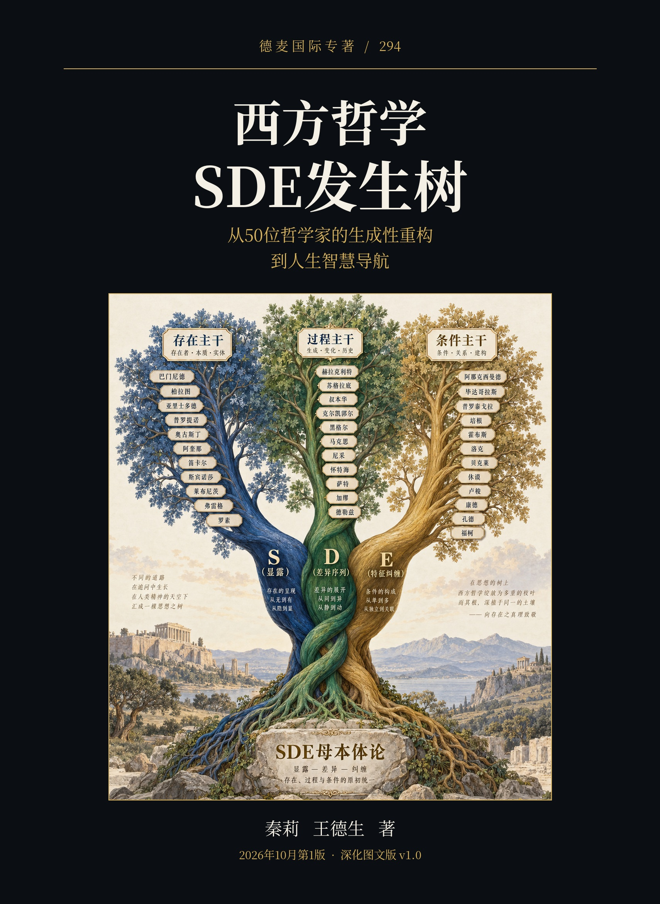
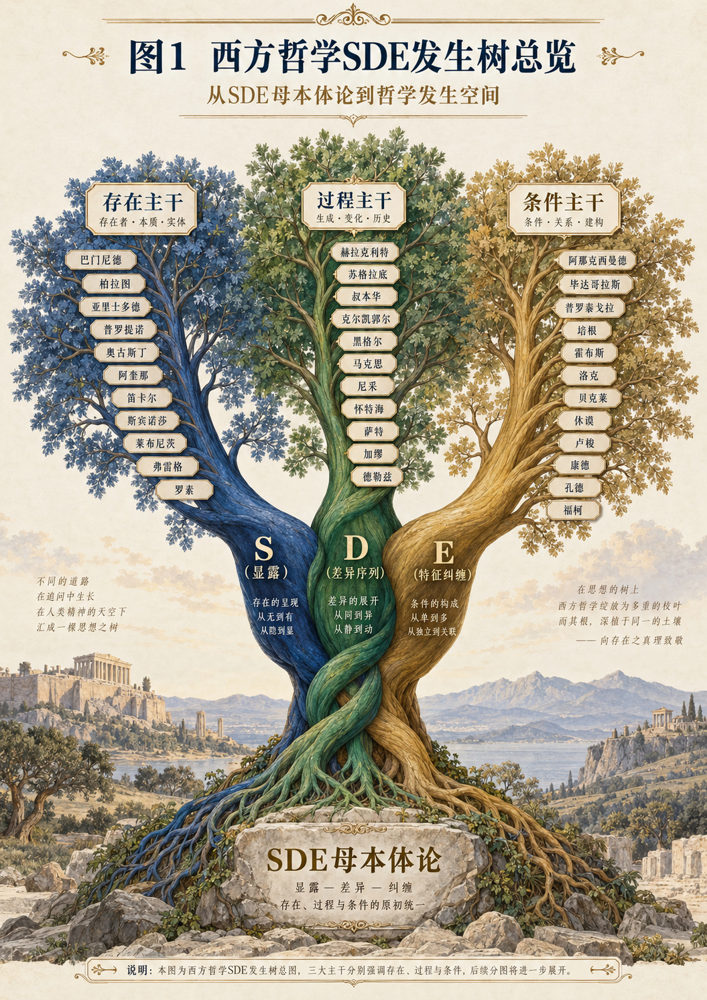
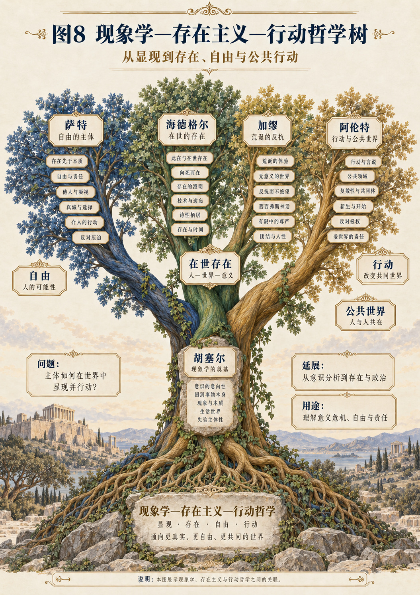
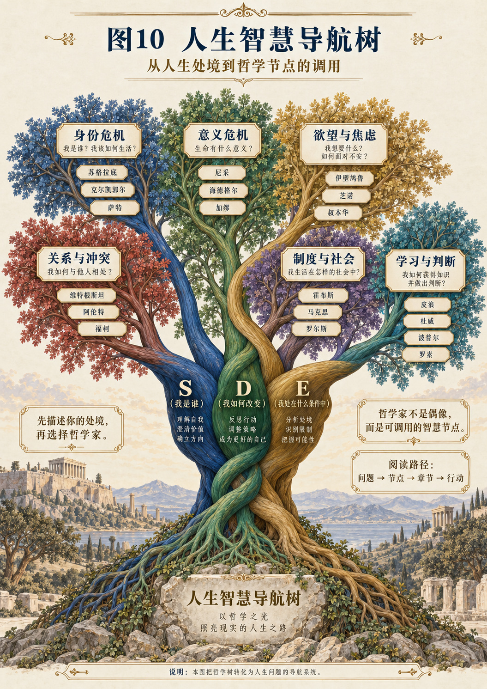

全文阅读 · 与Word和PDF同源
西方哲学SDE发生树
从50位哲学家的生成性重构到人生智慧导航
秦莉 王德生 著
展开全书目录 · 八编七十二章
深化图文版说明前言 当你需要的不是另一句名言导读 怎样沿着一棵树读出不同的路第一编 从哲学史到哲学发生学第一章 哲学史为什么还不是哲学发生史第二章 为什么是一棵树，又为什么不能只有树第三章 根不是一个先在实体：SDE的三个维度第四章 三方程、六路径、三原理如何共同工作第五章 一套哲学怎样被生成性重构第六章 挂树之前，先建立证据与反证规则第二编 发生树的整体结构第七章 三条主干不是三种实体第八章 七条功能支脉与多重归属第九章 冻结、删减、悬置与回写：六类结构操作第十章 分叉、回流与跨枝：怎样阅读哲学之间的关系第三编 存在、本质与稳定第十一章 巴门尼德：什么不能被说成不在第十二章 柏拉图：稳定标准为什么与经验分离第十三章 亚里士多德：形式怎样在具体事物中成立第十四章 普罗提诺：多样性为何被追问到统一根据第十五章 奥古斯丁：记忆、时间与内在生活第十六章 阿奎那：存在、因果与理性说明的层次第十七章 笛卡尔：从怀疑行动到确定性要求第十八章 斯宾诺莎：统一世界中的有限行动第十九章 莱布尼茨：个体内部展开与世界协调第二十章 弗雷格：心理确信为什么不等于思想有效第二十一章 罗素：表面语法怎样制造虚假对象第四编 变化、过程与创造第二十二章 赫拉克利特：变化中的尺度与共同秩序第二十三章 苏格拉底：追问怎样改变提问的人第二十四章 叔本华：欲求、满足与再次欲求第二十五章 克尔凯郭尔：可能性怎样成为我的承担第二十六章 黑格尔：规定怎样在自身边界处转变第二十七章 马克思：实践、社会关系与历史变化第二十八章 尼采：价值如何获得历史与身体第二十九章 怀特海：合生、满足与创造性推进第三十章 萨特：处境中的自由与自我解释第三十一章 加缪：没有终极保证，生活如何继续第三十二章 德勒兹：差异怎样生产可识别的同一第五编 经验、社会与条件第三十三章 阿那克西曼德：具体事物与无定根据第三十四章 毕达哥拉斯：比例、秩序与传统的层累第三十五章 普罗泰戈拉：尺度如何与判断者相连第三十六章 培根：经验为什么需要组织而非堆积第三十七章 霍布斯：承诺、恐惧与共同规则第三十八章 洛克：经验、反省与观念组织第三十九章 贝克莱：感知、精神与物质假设第四十章 休谟：重复怎样成为期待而非证明第四十一章 卢梭：比较、依赖与社会中的自我第四十二章 康德：经验对象及其可能条件第四十三章 孔德：规律知识与解释范围的划定第四十四章 福柯：知识、分类与主体形成第六编 主体、意义与语言第四十五章 皮浪：停止判定是否也是一种活动第四十六章 帕斯卡：有限理性与存在的不安第四十七章 胡塞尔：悬置存在判断之后看见什么第四十八章 海德格尔：在世存在与时间性的开显第四十九章 维特根斯坦：从逻辑图像到语言游戏第五十章 德里达：差异、痕迹与无法完全封闭的意义第五十一章 阿伦特：复数者之间的言说与行动第七编 实践、安顿与检验第五十二章 伊壁鸠鲁：欲望怎样被区分而非全部实现第五十三章 芝诺：从表象到同意的训练第五十四章 奥卡姆：解释中的节制与必要承担第五十五章 密尔：幸福、品质与行动后果第五十六章 皮尔士：怀疑、探究与可修正的信念第五十七章 威廉·詹姆斯：观念怎样进入经验生活第五十八章 杜威：不确定情境如何经过探究而改变第五十九章 波普尔：理论怎样允许自己失败第六十章 罗尔斯：公平讨论中的信息限制第八编 人生智慧导航第六十一章 先描述处境，不急着选择哲学家第六十二章 身份松动：旧名字不足以容纳新生活第六十三章 行动停滞：从知道答案到能够开始第六十四章 条件挤压：把自责送回具体发生现场第六十五章 欲望增殖：得到更多为什么不一定使生活更充分第六十六章 不可逆的失去：发生不意味着一切都能重来第六十七章 必须决定：没有充分证明时，怎样保留理由与承担第六十八章 家庭中的反复争执：共同生活需要怎样的区分第六十九章 职业与组织：能力不是离开活动仍然完整的财产第七十章 越来越确信的时候：让理论也进入发生树第七十一章 意义尚未形成：不把空白误判成终局第七十二章 点击之后：从发生树到可回写的阅读系统结语 让树继续生长，也让人能够走出树外附录一 从画树到检验树：六个最小命题附录二 五组跨枝对读：保留分歧，而非强行调和附录三 两种检验单：研究重构与生活使用附录四 术语、证据与图形的阅读边界附录五 五十个哲学家节点索引附录六 人生问题与方法入口参考资料与来源入口出版信息
德麦国际专著第294号。秦莉、王德生著。德麦国际出版社，新加坡。ISBN 979-8-90690-898-8。US$50。2026年10月第1版，深化图文版v1.0。
深化图文版说明
本书从一棵树出发，却不以把五十个名字整齐挂上去为完成。一棵值得使用的哲学树，首先应当说明一条枝为什么从这里展开，一个节点与另一个节点在哪一点相通、在哪一点无法互换，以及一次阅读怎样回到尚未被解决的生活问题。这样的树不能只有向下的生长，也必须有向上的追问：节点可以迫使根部修改自己的解释。
本次深化整理完整保留八编七十二章与五十位哲学家的独立正文，在各节点后增加“交叉检验”，把原来的相邻节点转为有具体问题的对读关系；增入十幅哲学树图与独立图注，将图形、章节与人生导航连接起来；并补入四份研究附录，使“生成性重构”能够进一步接受形式检查、跨枝争论与实际使用的反查。新增部分不是独立同行评审的替代，也不是将全书所有原典重新校勘的证明。
本书既有论证应按其实际承担的层级阅读。哲学原典提供被解释的材料；SDE提供本书采用的研究框架；构拟场景帮助检验概念的使用；形式小模型只在明示假设下成立。四者可以相互促进，却不能相互借名。尤其不能把生活场景写得生动，当成理论已获经验验证；也不能把一个小模型证明严密，当成整个哲学史已经被演绎。
第220号与第302号专著在本版中共同提供阅读设计参照：深色书页入口、墨蓝与金色层级、暖纸正文、清楚的论证路标，以及线上翻页和全文之间的自由切换。它们的作者、卷号、书号和论证内容不进入本书。秦莉、王德生的作者顺序、正式第294号、ISBN与定价均按本书已确认信息保留。
阅读这本长书，不必以一次读完为目标。可以从方法开始，可以沿某条问题主干进入，也可以从第六十一章先描述自己的处境，再到一个哲学节点中寻找有用的区分。每次带走一项能够解释的改变，比带走一句无条件适用的格言更重要。书页上的树继续生长，同时也应让读者有能力走出树外。
插图目录与读图约定
图形是阅读入口，不是历史师承图或普遍包含的证明。独立图注与正文一起阅读。
第294号 · 深化图文版
前言 当你需要的不是另一句名言
一个人走进书店，停在哲学书架前，往往不是因为突然想把思想史上的名字记得更多。他可能刚刚结束一份持续多年的工作，也可能正与最亲近的人争执。他发现过去有用的话不再有用：努力似乎没有改变局面，耐心似乎只是延长消耗，做自己也没有告诉他究竟该做什么。他知道可以读一本书，却不知道此刻应该读谁，更不知道怎样把书中的论证接到明天早晨必须面对的生活上。
这不是读者不够勤奋。把哲学知识变成人生中的判断，本来就隔着一段不能省略的路。知道一位哲学家说过什么，不等于知道他为什么这样说；知道他为什么这样说，也不等于知道他的说法适不适合眼前的问题。一句话在一种处境里帮助人站稳，在另一种处境里却可能帮助人逃避。接受不可改变之事，可以停止徒劳的自责，也可能被滥用为不再辨认那些其实能够改变的限制。强调选择，可以恢复行动，也可能忽略一个人真实拥有的资源、关系和安全条件。哲学进入生活，不能只靠句子的力度。
本书从这里开始：不是先请读者选择一位终身效忠的思想家，而是先把自己的处境说清楚。我们把这种处境理解为正在发生的整体。它有已经显露的样子，有走到这里的差异序列，也有使这些样子与序列得以成立的特征纠缠。为了让这三项追问保持在同一张图中，本书采用王德生提出的SDE框架：S指显露，D指差异序列，E指特征纠缠。三者不是对一件现成事物任意贴上的三个标签，而是研究其形成、维持和改变时必须同时接受检查的三个方面。[S01]
不过，把一个框架放在书的开端，不等于已经证明这个框架能够解释一切。本书的任务恰恰是把一个宏大的想法变成可以逐章检查的工作：能不能从SDE出发，说明不同哲学体系为什么会以不同方式组织存在、知识、价值和行动？当我们改变允许使用的前提、优先解释的对象、认可的推理方向以及结果返回条件的方式时，能不能重构出某些思想家具有辨识度的论证？这种重构又能不能帮助一个具体的人，不再把哲学当成名言仓库，而把它当成有条件、有代价、可以修正的思考资源？
这三个问题相互关联，却不是同一个问题。第一个问题关乎结构比较，第二个问题关乎论证生成，第三个问题关乎生活转化。一个体系即使能够整理哲学史，也未必能够严格推出哲学史；即使能重构某些论证，也未必能保证一种生活建议有效。我们不会让前一个层面的成果自动替后一个层面作担保。恰恰因为本书有统一的母结构，才更需要保留这些差别，否则统一就会悄悄变成吞没。
一 从名人书架到问题地图
想象两种不同的阅读室。第一种阅读室按作者排列：柏拉图在这里，康德在那里，尼采在更远的一排。它的长处是保存作品的完整性，读者可以沿着一位思想家的问题意识深入下去。第二种阅读室按问题排列：确信与怀疑，改变与重复，自我与角色，欲望与满足，意义与失去。它的长处是让读者从正在经历的困难出发，而不是从已经掌握的学科知识出发。本书希望在二者之间架一座桥，但不拆掉任何一边。
如果只按问题调用名言，哲学家的整体论证会被切碎。人可能拿“自由”替代对处境的调查，拿“因果”替代责任讨论，拿“视角”替代证据分辨。反过来，如果只要求普通读者先读完全部原著，再来处理眼前的问题，那么哲学与生活之间的门槛也会高得令人放弃。我们需要一种中间层：既能从处境进入，又能沿着清楚的路径回到思想家的具体论证；既允许跨作者比较，又不把每位作者压成一种人格类型。
发生树就是这个中间层。树上的一个节点至少有两个入口。一个入口朝向书：这位哲学家面对什么问题，采取什么前提，怎样推进论证，什么地方存在争议。另一个入口朝向生活：眼前的难题具有哪些可辨认的结构，这个节点能够增加什么问题，不能替我们作出什么决定。节点不是答案售货机，而是让某些原本没有被问出的问题变得可问的装置。
譬如，一个人说“我已经失败了”。这句话里面有一项发生过的事件，也有一项对自己整体身份的判定。二者未必相同。我们可以先不急着安慰，也不急着反驳，而是区分：失败指哪件事，比较尺度是谁采用的，判断持续了多久，它正在影响哪些行动。直到这些问题被展开，哲学上的同一性、判断、解释、处境与可能性才有了真正的落点。此时读者寻找的，不是某位思想家是否赞成人生，而是哪一种论证能帮助自己看清刚才混在一起的东西。
同样，一个团队说“我们需要更强的执行力”，也可能把几个问题合成了一句话。目标是否互相冲突，责任是否可以辨认，失败是否能够被报告，试验是否有修订空间，成员是否共享“完成”的标准？当这些问题还没有被区分，执行力只是一个响亮的名字。发生树的用途，是帮助名字重新获得具体内容，而不是再给它加上一个更响亮的哲学名称。
二 这棵树不是胜利纪念碑
把SDE放在根部，很容易产生一种视觉误解：仿佛历史上的思想家已经被证明是这套理论的片段，树冠越繁茂，根部就越无可怀疑。本书不接受这种证明方式。一幅图的整齐不能充当论证；能够把一个思想家放进三栏，也不能证明已经生出了他的思想。任何足够宽泛的词汇，都可能在事后容纳很多东西。真正困难的是事先说明约束，保留思想家的核心区分，并展示这些约束究竟允许推出什么，不允许推出什么。
因此，本书把“生出”解释为一种生成性重构。它不是说柏拉图在历史上使用过SDE，也不是说SDE在时间上先于古希腊哲学。它是说：我们在一个明示的比较框架里，选择一组有文本依据的限制，再考察这些限制能否组织出与某位思想家相对应的论证形态。这一工作可以失败。限制可能太宽，导致谁都能被装进去；也可能太窄，导致原作者最重要的内容被排除；还可能只是把结论换成了另一套术语，完全没有新增解释。
失败不是图中的污点，而是研究的一部分。一个节点被重新定位，一条连线被删除，一个原先漂亮的公式被撤回，都可能使这棵树更值得使用。树根如果不允许来自枝叶的反馈，就不再是本书所说的发生结构，而只是作者把自己的答案画在最下面。SDE自身的修订材料已经明确要求区分概念表达、领域模型与数学定理，并警惕把跨领域相似性直接当成机制证明。[S12]
这也决定了本书怎样对待那些离SDE很近的哲学。接近不意味着从属。强调生成的哲学，仍可能对“差异”具有不同定义；强调内在关联的哲学，也可能比简单的“先有端点再连线”复杂得多。我们不能先把对手缩小，再宣布自己的体系更大。只有允许他在最有力的版本上提出反问，比较才真正开始。
一个特别重要的反问是：为什么一定要用三维？本书把三维作为工作的起点，而不是免于讨论的结论。它的价值要在具体分析中表现出来：有没有减少概念混乱，有没有揭示被遗漏的条件，有没有使不同解释产生可辨认的差别，有没有留下重新编码的可能。如果一个问题用更简单的方式已经说清楚，我们没有义务强行增加三层术语。如果某个问题持续显露出三维无法处理的独立结构，也不能仅凭命名技巧把它塞回原来的格子。
三 五十个人，不是五十种性格
本书选择五十位哲学家，是为了建立一个足够丰富、又能逐一展开的第一版节点集合。五十不是西方哲学的完整边界，也不是思想价值的排行榜。名单中既有建立庞大体系的人，也有主要通过问答、片段、论证方式或思想实验留下影响的人。他们留下的材料并不相同，因此不能用一种证据要求假装所有章节都同样确定。
古代思想家的作品可能只以残篇和后人见证留存；某些学说属于后世学派的系统化，不能毫无说明地归给创立者；近现代思想家也往往经历明显变化，不能把早期、中期和晚期揉成一个静态标签。这些不是考据上的装饰，而会直接影响发生树的准确性。若把一个学派数百年的发展全塞进一个人名，再拿这份拼接物证明他“冻结了某一维”，结论从一开始就不可靠。[R33][R34]
因而，每个节点都保留范围标识。我们讨论的是哪一部作品，哪一个核心问题，哪一层重构？例如，在某个章节中强调一个人的认识论，不表示他的伦理学、神学或社会思想不存在；为了比较而把某一因素暂时看作稳定，也不等于宣布原作者认为世界上的一切都不变化。“中心”是本书对解释组织方式的描述，“限制”是模型的适用条件，都不能直接变成对哲学家高低的评判。
尤其要避免把哲学家变成人格测验：理性的人属于笛卡尔，情绪化的人属于尼采，悲观的人属于叔本华，焦虑的人属于某种安顿哲学。这样的使用把思想又做成了一个固定身份，恰好与发生树的目标相反。同一个人早晨需要澄清一个论证，下午需要讨论协作条件，晚上需要面对失去。他的阅读路径可以改变，而不必更换一个新的自我标签。
本书希望读者获得的是转接能力。所谓转接，不是把彼此不相容的理论随意拼在一起，而是在知道前提与代价的情况下，说明为什么从一个节点移向另一个节点。你可以先用怀疑检查一个判断，再用探究设计一个低风险试验；可以先从个人叙事理解挫折，再把它放回共同条件中讨论。但每一次转接，都应当说明发生了什么变化，而不是让哲学家的名字替代推理。
四 树根也生活在土壤里
SDE提出显露、差异序列与特征纠缠的互生结构。本书写成之后，也将成为一个可以被阅读、批评、引用和修改的显露。它的写作顺序、术语选择、比较策略，是其差异序列；作者的问题意识、已有文献、人工智能协作、数字阅读方式，以及读者可能遇到的生活处境，都参与了它的形成。我们不能在分析别人的发生条件时非常敏锐，在讨论自己的时候却突然把这些条件抹掉。
因此，这不是一本假装没有立场的书。它明确以SDE作为重构框架，也明确要求这个框架对文本证据负责。立场存在，不意味着证据可以随意；反过来，要求证据，也不意味着原创重构只能重复教科书。我们要保留两种自由：提出不同解释的自由，以及原典拒绝这种解释的自由。只有前一种，没有后一种，思想就会变成自我扩大；只有后一种，没有前一种，阅读又可能失去建构的勇气。
这种反身性还影响“环境”这个词的使用。书中的E不是作者站在外面列出的一张背景清单。一个制度、一段记忆、一项技术或一个概念，是否进入当前分析，取决于它怎样参与对象的可识别性、行动的可行性和后续的改变。仅仅说它“有影响”还不够。我们需要问：拿掉它，哪一种判断或行动会发生差别；它与别的特征怎样相互规定；它为什么在这次发生中重要，而在另一次发生中可能不重要。
这类问题同样适用于本书。若一本书的章节越写越整齐，却越来越不容许出现例外，那么整齐本身就成为一种需要检查的E。若人工智能能迅速补足过渡段落，作者就更需要检查那些过渡是否真的得到材料支持。若读者渴望一棵包容全部思想的树，写作者就更要避免用这份渴望替代尚未完成的论证。读者的期待能够推动一部书发生，也可能使它过早宣告完成。
五 哲学如何接近生活，而不冒充处方
本书中的生活场景是为论证而构拟的例子，不是真实个案的匿名记录，也不构成心理、医疗、法律或投资建议。我们会讨论失去、选择、家庭、工作和意义，但不会把哲学家的一个概念当成保证有效的处理办法。一个人能够从一种解释中受到启发，与这种解释已经被证明适合所有同类处境，是两回事。
生活转化的基本单位，不是一句鼓舞人的结论，而是一项能够被说明和回顾的行动。行动可以很小：重新定义争论中的一个词，区分事实与推测，向相关者核实一项假设，安排一次可以停止的试验，或者承认目前没有足够依据作出判断。小并不意味着浅。一个经过说明的小行动，可能比一个宏大的自我宣言更能让人看见，自己究竟改变了什么。
同时，并非所有困难都应由个人调整自己来解决。有些问题需要资源、合作、制度程序或专业支持。有些争执并非误会，而是利益与价值确实不能同时满足。发生树不许诺把所有冲突变成和谐，也不要求受影响者总是先改变心态。它的工作是让不同层次显露出来，使选择的理由与代价能够被讨论，而不是把复杂现实压成一个“你还不够通透”的责备。
还有一些时候，最重要的行动是暂停。暂停不是拒绝生活，而是拒绝在证据不足、情绪过强或后果不可逆时，让一个词语替自己做决定。我们需要能够前进的哲学，也需要能够阻止错误前进的哲学。发生树上既有推动改变的枝条，也有检查确信、收缩假设、保护界限的枝条。它们不是彼此抵消，而是在不同问题中承担不同职责。
六 一本书与一棵可点击的树
本书首先是一部连续论证的专著。它先解释树，再逐位展开节点，最后讨论怎样从人生处境返回具体章节。数字化并不是把这部书改造成一排只有摘要的卡片。真正有用的点击应当让读者进入一段能够看见前提、推导与反对意见的文字，而不是只弹出哲学家的头像和一句话。
因此，全书采用稳定的章节编号和节点编号。每个人有自己的主章节，也可以在别的章节中获得交叉入口。将来图形界面中的一片叶子可以链接到某一节，某个生活问题也可以同时链接到几种不同论证。连接的理由需要写出来：是讨论同一对象，使用相似操作，还是提供不同解释？图上相邻并不意味着历史上直接影响，线条更粗也不意味着一个思想家更伟大。
当这棵树真正进入读者的生活时，它还应当允许读者回来说明：这次阅读帮助我澄清了什么，又没有处理什么；原先的处境描述是否准确，行动是否需要改变；哪一条连线带来了误导，哪一个节点需要重写。知识不只在点击时被调用，也在反馈时受到改变。数字化的价值，不是让树看起来一直在动，而是让内容真的能够接受来自使用过程的修订。
然而，反馈也不等于让系统无边界收集人的生活。一个人应当能够只阅读，不留下私人经历；能够删除自己提供的信息；能够把某次困境留在那一次，而不被永久归类。发生树的开放性首先是思想上的开放，不是资料收集上的无限。越是能够贴近人生的系统，越需要知道自己应在何处停止。
七 读完以后，希望留下些什么
本书不要求读者在最后说出“SDE已经包含一切哲学”。一个更具体、也更有检验意义的收获是：面对一种有吸引力的思想，你能够问出它的前提在哪里，哪些条件被固定，哪些变化被允许，哪些结论仍需论证；面对自己的一个难题，你能够把名字拆回过程，把过程放回共同形成它的条件，再把新理解转成可以说明的下一步。
到那时，哲学家就不再只是前人的名字。他们成为一些仍可进入、也仍可离开的论证空间。你在某个空间里获得尺度，在另一个空间里发现盲点，在第三个空间里学会怎样试验。没有人替你完成生活，但他们帮助你不再仅凭眼前最响亮的声音理解生活。思想的传承，由此不只是保存结论，也是保存那些能够重新提出问题的方式。
我们从一棵树开始，却不以一幅完整树图结束。因为树所要服务的人仍在变化，树所整理的文本仍可被重新阅读，树根所使用的概念也必须继续接受检查。它的完整不在于再也不能增加一片叶子，而在于每一片叶子都有来处，每一条连线都有理由，每一次使用都保留回返的路。
当你下一次站在哲学书架前，或在屏幕上打开这棵树，也许仍然不知道自己的难题最终会怎样解决。但你可以不再只有一个空泛的请求：“给我一句有智慧的话。”你可以更具体地说：我现在看见了什么，我是怎样走到这里的，哪些纠缠使这件事保持原样，我愿意检查哪一个判断，又愿意为哪一步改变承担责任。哲学从这里开始进入生活，而生活也从这里开始重新提问哲学。
第294号 · 深化图文版
导读 怎样沿着一棵树读出不同的路
这本书可以从第一页顺着读，也可以从一个具体问题进入。两种读法不是深浅之分，而是起点不同。连续阅读帮助你看见概念如何逐步建立，问题阅读帮助你发现某一段文字与自己当下的关联。无论采取哪种方式，都请保留一个动作：看到结论时，回到它赖以成立的前提。发生树上最重要的不是名字，而是名字之间那些需要被说明的连接。
在开始之前，我们先给这棵树一张不依赖颜色的图例。根部表示本书采用的SDE研究框架；三条主干表示三类相互关联的提问；枝条表示某些问题在不同限制下展开的方式；节点表示一位哲学家的特定论证范围；跨枝线表示比较、批判、继承或应用转接。最后这一项尤其重要：不同种类的线不能混用。两位哲学家的理论具有结构相似，并不能单凭相似性断定前者影响了后者；两个节点都能帮助讨论同一生活问题，也不意味着它们的结论可以同时成立。
本书把这些连接分别称为历史线、重构线和使用线。历史线需要文献与接受史证据；重构线需要明示的对应与推理；使用线需要说明处境、目标和使用边界。数字阅读时，它们应有不同的标记。纸面阅读时，我们在文字中直接说明，不让一根箭头承担几种彼此不同的含义。
一 三个字母不是三样东西
S可以先记作“此刻显露成了什么”。它不必是已经彻底完成的结构，也可以是一种尚不稳固的辨认、一项正在成形的判断，或一个刚能被说出的差别。D可以先记作“这些差别怎样获得次序并引起改变”。它不只是钟表上的先后，也不是所有发生都已具有明确路线。E可以先记作“哪些特征相互规定，使这种显露与推进得以成立”。它不是一个东西之外的背景，更不是把所有没解释的部分放进去的容器。[S01]
这三个入门句有帮助，也有局限。“此刻”可能让人误以为S只是瞬间截面，“次序”可能让人误以为D总是线性的，“使得以成立”可能让人误以为E永远在先。读到后面的章节，你会发现这些简化都需要松动。三个维度可以在不同程度上清晰，也可以不同步；已经显露的东西能反过来改变路径，已经走过的路径也能改变下一次发生的特征纠缠。本书在需要时区分局部稳定、正在形成和尚未形成的状态，而不把一切问题都当成成熟系统。[S14]
设想一群人第一次尝试共同演奏。最初，乐谱上的符号并不自动等于一段音乐。每个人听见的节奏、已经习惯的处理方式、对其他人的期待、乐器的响应和共同练习的记忆，都参与了这次演奏。当他们终于能够把某个片段反复演成相近的样子时，新的显露形成了；这次演奏又改变了他们对彼此的预期，使下次练习不再从原点开始。这里并不是先有完整的表演者、完整的环境和完整的流程，随后才把三者拼起来。作为“这一支能够如此演奏的组合”，他们也是在共同活动中逐步形成的。
这个例子只是概念说明，不是SDE普遍性的证据。它的用途，是让三个提问获得不同任务：描述已经显露的演奏状态，追踪可辨认的调整序列，辨认那些共同构成演奏可能性的特征。若把三个任务混在一起，我们可能只说“他们有默契”，却不知道默契具体由什么组成，也不知道下一次失败时应检查哪里。
二 怎样读三方程
全书保留三个核心表达：S＝F(D，E)，D＝G(S，E)，E＝H(S，D)。它们首先表示互相依赖的构成要求，而不是已经完成参数估计的计算公式。F、G、H只有在某个具体研究中获得定义域、更新规则、边界和证据以后，才可能成为更严格的模型。看到一个函数符号，不应当自动想象已经有一台能够计算一切哲学的机器。[S11]
在本书的比较中，第一式提醒我们：不要把一项哲学结论当成无来由的现成对象。第二式提醒我们：一套论证怎样推进，与它认可的对象、目标和条件有关。第三式提醒我们：论证一旦形成并被传播，就可能改变后来的问题环境。三式合起来，使一个思想体系既能作为被解释的结果，也能作为继续发生的参与者。
但三式不能被随意改读成时间倒流。一个尚未发生的未来事件，不会因为我们把它写成S，就自动成为今天行动的原因。能够在今天起作用的，是今天已经存在的目标表征、预期、制度要求或可辨认约束。目标表征与未来结果必须分开；后来的结果可能推翻今天的预期。若不作这个区分，第二式就会把想象中的目的偷换成现实中的因果。[S12]
同样，互相依赖并不保证方程一定有解，更不保证只有一个解。一个家庭可以同时维持几种冲突的自我描述，一个组织可以在同一条件下发展出不同的协作方式，一套哲学也可能因为额外前提不同而产生多种版本。本书有时谈“稳定形态”，只是说某种组织方式暂时能够维持，并不表示它必然、唯一或永远合理。
三 怎样读六路径
六路径把S、D、E各出现一次时的六种顺序列出来：E→D→S，E→S→D，D→E→S，D→S→E，S→E→D，S→D→E。作为排列，这六种顺序是完整的；作为现实过程，它们只是对主导入口和分析次序的简化编码。真实的思考可以反复返回同一维度，可以并行展开，也可以暂时还没有足够明确的路径。因此，“有六种排列”不能用来证明所有现实方法已被穷尽。[S13]
从S开始，不意味着你相信实体永远第一；它可能只是表示你手里已有一项值得解释的结果。从E开始，不意味着你认为环境决定一切；它可能表示当前最大的未知在于共同条件。从D开始，也不意味着你信奉过程哲学；你可能只是发现同样的条件和目标，却出现了不同的推进方式。入口是工作选择，不是人格，也不是永久本体承诺。
例如，读者带来一段总是谈崩的对话。若从S开始，我们先辨认“谈崩”具体指什么，是中断、沉默、转移话题，还是事后关系改变。若从D开始，我们先重建一句话怎样引出下一句话，在哪一步开始换了问题。若从E开始，我们先检查双方是否把同一个词用在不同承诺、记忆和期待中。三种起点都可能有用，却都不能保证独立完成工作。入口的好坏要看它是否帮助问题获得可检验的区分，而不是看它在图上是否更靠近树根。
四 怎样读三原理
本书把三原理作为组织问题的动力假说：两个维度之间的张力可能引起第三维改变，新的改变又可能返回另外两维，形成后续发生。它有三个对称的分析相位：显露与差异序列之间的失配，可能要求重组纠缠；差异序列与纠缠之间的失配，可能导致新的显露；显露与纠缠之间的失配，可能要求改变路径。这里的“可能”不是犹豫词，而是研究边界。[S11]
张力可以被压住，可以长期持续，可以转移，也可能造成损害。不能把任何不适配都称为有益创造，更不能把第三维当成必然和解者。若两个人争夺同一个不可同时占有的机会，即便我们把历史、程序和意义说得更清楚，也仍可能需要做出取舍。第三维的作用不是施展魔法，而是让此前无法看见的行动空间、代价或限制变得可见。[S12]
本书会把“推理中的矛盾”“价值之间的冲突”和“系统中的失配”分别说清楚。一个命题与它的否定不能在同一解释下同时成立，是逻辑问题；两个目标无法同时满足，是选择问题；现有操作达不到既定条件，是过程问题。三者可能交织，却不能互相替代。把它们都叫矛盾，容易让语言产生一种已经解释了动力的错觉。
五 为什么每位哲学家都要经过三道门
第一道门是原意。先说明作者在讨论什么，重要概念在他的体系中承担什么任务。第二道门是重构。我们明确提出SDE对应，把哪些东西看成显露，把什么序列视为主要推进，把哪些特征组合视为有效纠缠，并解释这样处理的理由。第三道门是反查。重新回到原意，检查这种对应是否漏掉关键区别，是否把作者没有主张的内容塞了进去。
这个过程并不要求所有章节长成完全一样的论文。古代残篇需要更多说明证据层次，形式逻辑需要更精细地区分表达与存在，现象学需要特别防止把“显现”误解为主观图像，政治哲学需要公开规范前提而不能把它们伪装成模型自动推出的事实。统一的是检查问题，不是表面句式。
一个有用的判断标准是：拿掉哲学家的姓名，读者是否仍能根据本章的论证结构辨认出相应思想。如果五十章都只剩“条件影响过程，过程形成结果，结果又改变条件”，那么我们得到的只是五十次同义改写。真正的节点必须保留差别：什么算证据，哪些存在被承认，什么推理是合法的，结果怎样获得有效性，以及哪些问题被留在边界之外。
还有一个更严格的标准：重构能否产生一个没有被直接写入约束的后续结果。例如，一旦规定只有可公开追问的使用标准才能区分正确与错误，我们可以进一步研究私人记号面临什么困难；一旦把某类条件看作经验知识的必要前提，就会产生对经验能否证明这些前提的追问。这样的后续问题，才使重构比换词更有意义。但即便如此，也不能据此宣布已经推出作者的全部哲学。
六 树上的位置可以怎样改变
一个节点的主位置，是为了帮助阅读选择的，不是哲学家的永久住所。同一个思想家可以出现在多条支脉上。亚里士多德在存在问题上有重要位置，也进入变化、解释和实践判断；康德可以从知识条件进入，也可以从道德与审美进入；后期维特根斯坦的语言游戏与早期逻辑图像之间，必须保留发展差异。把他们固定在某一个字母下面，只适合作为最粗的导航，不能当作最后结论。[R13][R42][R49]
所以，本书的章节主序是一棵树，实际阅读关系则更接近一张带回路的图。树给人方向，图保留复杂性。我们在纸面上先使用树，是因为读者需要一个可以进入的次序；我们在论证里不断补上交叉，是因为思想不能为了页面整齐而失去自己的相互关联。
这一区分也保护历史。读者在图上看见某两个名字相邻，不应立即把它读成师承。发生树可以把相隔很远的思想放在一起比较，但必须承认比较是今天的工作。历史上的传承、误读、翻译和争论，需要另外的证据。重构一条可能的思想路线，不等于复原当年真的发生过的每一步。
七 从一个人生问题进入的完整示范
下面是一则构拟场景。林澈准备改变长期从事的工作。他说自己已经“没有位置”，因为熟悉的职责被重新分配，原先用来证明能力的成果也不再受到同样关注。他考虑立刻离开，又担心离开只是赌气。他打开这棵树时，最不需要的可能是一个直接告诉他“勇敢做自己”的按钮。
第一步，我们把他的描述分层。“职责被重新分配”是一项需要核实的事实；“成果不再受到关注”需要具体表现与时间范围；“没有位置”则包含了对身份的解释。S层面不是一个单独的失败标签，而是一组程度不同的显露。第二步，重建D：变化从什么时候开始，他怎样回应，他人的回应又如何改变了他的下一步。第三步，检查E：评价方式、资源、合作关系、已有能力、家庭安排以及他对职业价值的理解，哪些真正参与了当前困境。
经过这三步，问题可能改变。原先的问题是“我该不该离开”，现在可能分成“我是否仍希望以原来的标准评价自己”“原岗位的条件是否可以协商”“新的方向能否通过小规模行动获得信息”。这不是把选择拖延成无穷分析，而是避免让一个巨大而含混的问句强迫自己作出过早决定。
这时可以进入几个不同节点。苏格拉底一章帮助他检查“位置”“能力”“认可”的含义；休谟一章提醒他不要把过去几次经验当成未来必然；杜威一章帮助他把新方向做成能够修订的探究；萨特一章则让他区分事实限制与自己对限制的解释。这里不是让四位哲学家共同投票，更不是以哲学家数量决定去留。每个节点只承担一个可说明的任务，最后的选择仍由处境中的人负责。
行动以后还需要回返。若一次尝试带来新信息，原先的S、D、E描述就应改变。若他发现自己的困境主要来自疲惫或未被充分讨论的家庭责任，阅读入口也需要改变。一个没有回返机制的导航，会把最初的描述永久化；一个能够回返的导航，则把最初判断当成工作版本，而不是人生判决。
八 读者如何在边上留下自己的批注
本书建议保留三种不同批注。第一种是材料批注：原文确实说了什么，书中的转述是否准确。第二种是论证批注：哪一步使用了额外前提，哪一结论还没有被支持。第三种是处境批注：这段内容让我看见了自己问题的哪一部分，哪些部分仍然不相符。三种批注可以相互帮助，但不能互相代替。“这段话对我很有启发”不能证明历史转述准确；“原典如此说”也不能证明它适合我的生活。
读者也可以在节点旁写下反向问题。例如，在一个强调稳定标准的节点旁，问它怎样解释标准改变；在一个强调差异生成的节点旁，问它怎样保留责任与持续承诺；在一个强调条件的节点旁，问它如何避免让人完全消失在条件里。这样的批注不是为了随时否定作者，而是为了让任何一种强势解释都遇到自己的边界。
对SDE也应如此。你可以在任何一章问：此处三个维度是否真的不可互相替代？为什么某一内容被放入E，而不是S或D？重构是否在结果出现以后改变了变量定义？如果不使用SDE，是否也能用更简单的方式获得同样结论？这些问题不会破坏本书的阅读，相反，它们使读者能够参与树的生长，而不是仅仅走过一幅已经画好的图。
九 读到原典时，慢下来
本书的原典导读给出作品与章节、卷次或标准段落的入口，不提供大段替代原著的摘抄。不同中译本的页码可能不同，因此优先采用较稳定的定位方式。对于没有完整作品传世的人，我们注明后人见证与残篇集合，避免让读者误以为存在一本可以直接对应的作者定稿。[R33]
原典中的一句话，往往属于一场比它表面更长的争论。读者可以先看本书的重构，再回到原典检查，但不要只去寻找“与SDE相似”的句子。还应寻找那些不相似、难以放入图中的地方。它们可能是本书的遗漏，也可能揭示一个思想家真正有别于他人的内容。最有价值的阅读，不总发生在我们迅速认出共同点的时候，有时恰恰发生在一个句子拒绝被顺手归类的时候。
最后，请把这棵树当成一张可以携带的地图，而不是必须服从的路线。它让你知道几条路通向哪里，也提醒你哪一些连线仍在检验。但真正的脚步发生在读者的生活中。地图可以帮助人不那么盲目，不能替人承担行走。读者在途中发现的新问题，也可能成为这本书尚未长出的下一根枝条。

SDE · 阅读主干
第一编 从哲学史到哲学发生学
从名字进入问题
在五十位哲学家出现之前，我们先说明这棵树怎样工作。它既不是以SDE为中心重新排列名次，也不是把思想史压成一条必然路线。树根承担的是研究框架，枝条承担的是可说明的连接，节点保存的是原作者仍能对我们提出抵抗的具体论证。先把这些层次分开，后面的比较才不会只有一幅整齐的图。
留给读者的问题 读这一编时，请始终保留一个问题：我的重构究竟增加了什么，又在何处仍然依赖原典尚未充分说明的前提？
CHAPTER 01
第一章 哲学史为什么还不是哲学发生史
从排列思想转向解释问题怎样形成。
一 知道先后，还没有解释形成
把几位思想家按年代排列，能够帮助读者建立基本秩序。我们知道谁面对谁已经留下的著作，谁能够使用某种术语，谁不可能读到尚未问世的书。这种秩序不可省略。但它只回答了一个问题：某种思想出现之前，什么已经出现。它没有独自回答另一个问题：在那些已经出现的条件中，为什么会形成这一种思想，而不是别的思想。
两个人阅读同一本书，可能走向不同结论；同一个人也可能在多年之后重新阅读旧书，发现第一次没有看到的问题。若只把前人的思想当成后一人的原因，我们便不能解释这种分化。被继承的不是一件原封不动搬入脑中的物品，而是经过选择、解释、争论和使用的内容。前人的一句话可能在自己的体系里承担一种任务，到了后来却成为另一个问题的入口。
因此，本书对“发生史”的最低要求，不是把时间线换成树形图，而是增加三个层面的说明：哪些内容被辨认成重要问题，哪些差异推动了重新组织，哪些共同条件使某种答案得以维持。它们分别与S、D、E有关，却不是对材料的机械分配。重要的是把解释任务说清楚，而不是急着给所有名词贴上字母。
设想一项哲学观点已经在课堂上被普遍讲授。它的公开表述是一层显露，它在教学、翻译和争论中发生的变化是一层差异序列，而使它能够成为“这门课必须学习的内容”的评判标准、文献渠道、概念习惯和共同期待，则构成相关纠缠。后来有人反对它，不能只解释为“新一代更有创造力”；需要追问反对从哪里获得对象，什么被保留，什么被重新命名，以及什么使这种反对有机会成为新的可传递思想。
二 发生至少有三种，不可混写
第一种是历史发生。它关心真实的阅读、交流、写作和传播。说某人受某部作品影响，需要有相应证据，而不能只靠两种观点相似。第二种是论证发生。它关心在给定前提之下，一个结论怎样得到支持。第三种是阅读中的再发生。它关心今天的读者怎样在新的问题中重新理解旧文本。这三种发生可以相互关联，却不能互相替代。
例如，我们可以在今天设计一个模型，说明只要把某类标准看作不受经验变化影响，就会产生标准与个别事物之间的关系问题。这是一项论证重构。它并不能据此证明，历史上的某位思想家就是通过这组步骤产生了自己的理论。反过来，即便我们知道他曾阅读某书，也不能保证书中的结论被他完整接受。影响可能通过反对发生，继承也可能表现为改造。
阅读中的再发生更加开放。一个现代读者可能用古代论证处理数字生活中的自我描述。这个应用可以有启发性，但不应反过来声称古人已经预见了具体技术情境。我们要保留问题之间的相通，也要保留时代之间的差异。把所有现代关切都写成古典思想的潜在答案，会剥夺文本真正陌生的部分。
本书主要承担论证的生成性重构，同时用历史材料限制重构的任意性，并把阅读中的再发生放到生活应用部分。这样的分工意味着，书中“从SDE生出某哲学”的表述，首先是一个关于结构组织的命题，而不是一种历史因果宣告。读者应当能够在每章看见这三个层次的边界。
三 哲学问题并非从空白处开始
问题本身已经包含选择。问“事物的本质是什么”，与问“我们如何认识事物”，并没有把同一任务换一种说法。前者要求某种关于存在的说明，后者要求知识条件的说明。再问“为什么这个问题以这种方式被提出”，则进入了对提问本身的反省。不同哲学体系之间的争论，有时来自答案不同，有时来自根本没有在回答同一个问题。
发生史因此不能只比较最后结论。它还要比较问题是怎样被组织的：什么被当成需要解释的对象，什么被当成解释所依赖的前提，什么不被允许进入讨论。一个理论的边界常常早于它最著名的结论。读者若只记住结论，就会把前提中的限制误认为世界本身给出的限制。
用SDE的语言说，一项问题陈述可以作为S进入分析；产生它的辨认、选择和争论可以作为D被追踪；使它能够被理解、被重视、被回答的概念与实践关联则属于此处有效的E。但同一个内容在另一研究中可能换位。某种逻辑规范在研究一个具体论证时是条件，在研究逻辑规范自身的形成时则成为被解释的显露。这种换位不是任意，而是随研究对象和证据任务改变。
为避免随意换位，本书要求每次分析先给出问题边界。我们此刻解释的是什么，时间范围是什么，哪些内容暂时作为稳定条件，什么观察会迫使我们重新划界？没有这个说明，三维就容易变成可以移动的抽屉。分析者总能在失败后把一个因素从S移到E，再宣布理论仍然成立。真正的发生分析必须让这种移动有记录、有理由，并承认它改变了原来的模型。
四 从结果倒推原因的诱惑
一套思想已经出现，我们回头看它的时代，很容易觉得一切都在通向它。前人的矛盾似乎恰好等待它解决，社会条件似乎恰好准备了它的舞台，作者的经历似乎恰好预示了他的结论。这种叙事有吸引力，因为它把复杂历史变成一条清晰路线。但路线清晰并不等于事情当时没有别的可能。
可以把这种风险写成一个简单的推理问题。已知条件C和结果P共同出现，不能仅据此断定C必然产生P。也许还有未被辨认的条件，也许相似条件产生过别的结果，也许我们只是因为已知P而选择了最配合的C。发生史需要反事实比较：若去掉某个条件，重构是否还会产生相似结果；若保留同样条件，是否存在另一条合理路线。
本书因此不使用“只要提高D的权重，必然出现某哲学家”这样的快捷证明。所谓权重若没有定义，只是一种修辞。即便定义了优先度，也仍需要说明它怎样约束论证。强调过程的人可以有不同的对象观、价值观和知识观；把经验作为重要来源的人，也不必共享相同的怀疑结论。一个字母的优先，远不足以区分一位思想家。
我们采用更具体的重构单位。例如，承认何种证据，允许哪些推理，保留何种不变条件，怎样处理反例，是否要求整体闭合。这些约束必须能够在论证中起作用。若它们只是对作者结论的同义重述，生成并没有发生。我们只是把“他认为如此”换成了“在他认为如此的限制下，得到如此”。
五 一个构拟思想争论的发生过程
为了看清区别，设想一个没有对应真实学派的阅读小组。成员共同讨论“承诺为什么值得信任”。起初，他们把信任理解为一个人的内在品质，于是不断寻找稳定人格的标准。后来他们发现，同一个人在不同协作中表现不同，仅凭性格标签不能解释这些差异。有人转而强调奖惩与程序，有人强调共同记忆，也有人认为信任首先来自可公开检验的行为。
若只记录观点，我们得到三种答案。若只记录先后，我们得到从人格到制度再到行为的时间线。发生分析则进一步追踪：最初的“信任”怎样被对象化为人格品质；哪些反例使这种对象化不足；不同成员为什么选择不同的补充条件；新的解释又怎样改变了小组自身的讨论方式。
这里，原先的S与新观察到的D不相适配，可能推动成员重新辨认E。可这一变化不必产生同一个答案。有人把程序当成新中心，有人把共同经验当成新中心，有人把证据标准当成新中心。三原理在此最多帮助我们定位转变发生的部位，不能替代关于具体转变方向的说明。要说明方向，还需要每个人认可的理由与实际材料。
当小组决定以后把“可信”与“愿意接受检查”联系起来时，这个决定又改变了后来的互动。成员开始要求记录承诺、说明例外、公开修订。新的观点因此进入E，不再只是被讨论的S。发生史要抓住的正是这一步：一个答案在被使用之后，参与改变了此后什么问题容易出现、什么证据容易被看见。
六 哲学的困难也会被继承
前人的理论不仅传递答案，也传递未被解决的问题。一种关于稳定性的说明，可能把变化留在边界；一种关于变化的说明，可能需要重新解释持续承诺；一种关于认知条件的说明，可能使这些条件自身的地位变得困难。后来的思想不一定是简单增加知识，也可能是重新分配哪些问题处在中心。
我们可以把这种继承理解为“问题负担的转移”。一套理论为了完成某项解释，暂时把别的任务交给某个未展开的概念。这个概念在本体系里承担支撑作用，到了下一位思想家那里却成为首要问题。树枝的分叉，往往不只发生在答案之间，也发生在承担解释负担的位置之间。
这给本书提供一种比标签更精细的比较方式。我们不只问某位哲学家“偏S还是偏D”，而问：他把什么作为必须解释的结果，把什么作为无需再解释的条件？这种安排解决了哪些问题，又留下了哪些无法由同一安排处理的问题？另一位思想家是否只是更换答案，还是改变了这种负担分配？
然而，“无需再解释”必须谨慎使用。有些作者明确把某项前提当作研究范围之外的条件，并非宣称它永远不可解释；有些作者认为它能够在另一本书中解释；还有些作者确实赋予它特殊本体地位。把这些情况统称“冻结”，会失去重要区别。我们将在后面把局部固定、方法悬置、规范前提和本体恒常分开。
七 发生史能增加什么知识
本书希望增加的第一类知识，是比较知识。读者能够看见两个表面相近的理论，究竟在哪一步开始不同。第二类是边界知识。读者能够说明一个论证在哪些前提下有力量，在哪些前提下不能直接搬用。第三类是转接知识。读者能够在一个问题改变之后，知道为什么需要移动到另一条阅读路径。
这三类知识并不要求先宣布所有哲学已经归于同一个终极系统。它们可以逐章积累，也可以逐章失败。某一章如果只完成了可靠的术语对照，就应当说它完成了对照；如果能进一步提出可检查的后续推论，才可以提高重构的强度。不同节点的成熟程度可以不同，整本书不必为了形式统一而伪造同等确定性。
在这个意义上，哲学发生史也是对阅读方式的研究。我们不再把思想家视为提供标准答案的人，也不把自己视为等待答案的容器。阅读本身成为一次发生：文本中的区分改变我们的提问，我们的新问题又改变对文本的注意。但这种相互改变仍然受文本约束，不能变成随意借古人之名表达自己的观点。
本章留下的工作问题是：当我们把某位哲学家的观点放到树上时，究竟新增了什么？如果答案只是位置更清楚，我们完成了一项导航工作；如果能够说明限制如何导出论证，我们开始进入生成性重构；如果还能用文献追踪真实转变，我们才涉及历史发生。三个层次可以相互支持，却必须一直保留自己的名字。
八 怎样检验一个发生解释没有只在讲故事
一个发生解释至少应当留下三种可以被他人复查的记录。第一种是材料选择记录：为什么把这段文本作为关键依据，哪些相反材料没有被采用。第二种是映射记录：一个概念被放到S、D或E中，是因为它在当前论证里承担什么角色。第三种是限制记录：这套解释不能覆盖什么，哪种新材料出现时必须修改。记录不必复杂，但必须使另一位读者能够提出有落点的异议。
例如，本书若把某种“永恒性”解释为不接受经验回写的约束，就要说明这里谈的是逻辑有效性、规范地位还是存在方式。三者不能混为一谈。一个数学命题不因某人的新经验而改变，不等于它与数学实践毫无关系；一个作者把某原则视为必要条件，也不等于他从未讨论原则的来源。若我们无法保持这些区别，“冻结”就会成为一个很容易命中任何作者的词，却很难产生真正知识。
还可以进行一次交换检验：将两个哲学家的名字互换，保留重构的全部文字，看看论证是否仍然像样。若交换以后几乎没有变化，说明映射太一般。进一步可以作删除检验：去掉本章最重要的约束，看看所得结论是否仍然照样出现。若完全不受影响，说明约束没有承担实际工作。这样的检查不能替代原典研究，却能够暴露一部分伪生成。
因此，哲学发生史不是比传统哲学史更自由地讲述故事，而是对故事增加额外责任。它不仅需要准确地说出作者讲了什么，还要让自己提出的“为什么如此形成”承担可被反驳的负担。我们在下一章讨论树形结构，正是为了给这些责任安排一个能够被看见的位置。
留给读者的问题 把一位哲学家挂上树之后，你究竟新增了哪一项可检查的知识？
CHAPTER 02
第二章 为什么是一棵树，又为什么不能只有树
用树提供入口，用回路保存思想的复杂性。
一 图形会悄悄替我们作判断
人看见一棵树，通常会自然地把根理解成源头，把主干理解成共同基础，把枝条理解成分化，把叶子理解成已经长出的结果。这套直觉很有力量，也因此值得警惕。若一幅哲学图把SDE放在根部，读者可能未经论证就以为它是所有历史哲学实际出发的原点。若某位哲学家被画在另一位上方，又可能让人误以为较高的位置表示更先进。树图从来不只是中性的容器。
本书使用树，是为了建立一种可进入的阅读结构，不是为了让植物生长的隐喻替代哲学证明。根部表示当前重构采用的共同语言，主干表示主要问题域，枝条表示不同约束下的展开。它们都是研究安排。只有当具体材料得到支持时，某些连线才同时具有历史意义。图形上的“生长”不能自动转换为年代上的先后，更不能转换为思想价值的等级。
读者可以想象同一组节点被重新投影：从存在问题看，它们形成一棵树；从知识有效性看，主干和枝位会改变；从人生处境看，又可能出现另一种导航。这并不说明节点任意，而说明分类依赖清楚的问题。就像同一张地图可以突出地形、道路或水系，每一种突出都必须说明自己保留了什么、略去了什么。
二 树的长处是让入口变得清楚
一张包含五十个节点和大量交叉关系的图，若一次全部展开，可能比没有图还难使用。树形结构提供了一条主阅读路径。读者先进入一个大问题，再进入更具体的问题，最后进入某位作者的论证。它减少了第一次阅读时需要同时处理的信息，使人知道此刻所处的位置与返回的方向。
这种简化在教育上有直观意义，但本书不把直观意义当成已经验证的学习效果。我们这里只提出一种设计理由：当读者尚不熟悉材料时，分层入口可能比平铺名单更容易理解。真正的效果仍需要使用过程来检查。若读者频繁误认枝位，或总是从分类中得出错误的历史判断，界面就需要修改，而不是责怪读者没有理解树的深意。
树还有一个长处：它能够把“为什么转向下一节点”写在枝条上。不是让读者无缘无故从笛卡尔跳到休谟，而是提出一个转接问题：当主张的确定性受到经验来源的限制时，会发生怎样的论证变化？即使这只是今天的比较路线，也能帮助读者理解两个章节之间的关系。主干因此不是作者名单，而是一串有理由的问题。
三 树的短处是单亲结构
普通树图通常要求一个节点只有一个直接父节点。但一位思想家的问题来源可能有很多，作品内部也可能同时回应不同传统。将他强行放到唯一父节点之下，会制造一种虚假的单线起源。更不用说，同一作者的不同阶段可能互相批判，后来的读者也可能通过另一种翻译重新理解他。思想关系不总符合树的拓扑。
因此，本书把“主挂点”与“关联点”分开。主挂点决定章节放在哪里，关联点保留跨枝阅读。一个节点只有一个主章节，避免重复计算和内容分裂；它可以有多个关联入口，避免被分类囚禁。五十个人意味着五十个独立主节点，而不是每出现一次姓名就多算一个节点。
这一区分也帮助处理学派与人物。芝诺在本书中指基提翁的芝诺，斯多葛派的后续材料作为该节点的传承背景，不再另算同一个节点的人数。皮浪作为一个独立人物，后来的塞克斯都材料用于说明皮浪主义的成熟表达，但不把两个人合并成一个无时间差别的作者。节点的便利性不能以抹去历史差别为代价。[R45][R53]
四 把树看成图的一种投影
从形式上说，我们可以先设一个节点集合V，再设三类边：历史边、结构比较边和应用转接边。它们共同组成一张带类型的图G。为了让读者顺序阅读，我们从G中选择一部分边，形成一条无循环的主导航结构T。这里，T不是G的全部，更不是世界本身。树只是整张关系图的一种阅读投影。
这个形式化很简单，却带来一个重要约束：任何被树省略的关系，都不应被理解为不存在。主章节没有放在一起的思想家，可以有很强的关联；主章节相邻的人，也可能只是共享一个比较问题。树的位置需要配合边的类型一起阅读，而不能只看空间距离。
进一步说，结构比较边应当注明比较的层级。两个体系都讨论“统一”，可能是在不同层级上：一个讨论对象如何成为一个对象，另一个讨论判断如何构成统一经验。若只因为出现同一个词就连线，比较会停留在词面。有效的边必须说明被比较的任务、概念角色和差异，必要时也应注明“不等价”。
应用转接边则需要说明改变的条件。一个人从怀疑进入行动，不应因为页面已经滚到下一章，而应因为证据、风险或任务发生变化。若证据仍不足、后果不可逆，暂停可能仍是合理选项；若低风险试验能够补充信息，行动才获得另一个理由。树中的转接应显示这种理由，而不是把哲学流派排成通往成功的固定步骤。
五 根可以怎样不成为第一因
一个发生框架把自己画在根部，看起来像是在赋予自己本体优先性。这与三维互生的立场存在潜在张力。解决办法不是在图上写一句“根也会发生”，然后继续把它当成无条件真理，而是在结构上为根保留修订入口。
本书的根部包括两层。第一层是已采用的工作定义：显露、差异序列、特征纠缠。第二层是关于它们如何关联的研究承诺：三方程、六路径、三原理。两层都可以受到具体节点的反向检验。某个节点如果显示我们的D定义太宽，或者E边界始终无法稳定，问题必须返回根部，而不只要求节点服从分类。[S12]
这样，根不再表示历史上最早的东西，也不表示一个不依赖任何材料的第一因。它表示这部书当前用于组织比较的最一般层。将来如果读者从五十个节点中发现另一套更能保留差异的组织方式，根部也有可能改变。树的统一来自共同工作规则，而不是来自一项不可撤销的权威声明。
这个安排使SDE与本书之间保持一个必要距离。书采用SDE，不等于书中的每项映射都是SDE原作者已给出的定义；书对某位哲学家的重构，也不等于对其全部思想的最终解释。我们会把本书提出的操作记作研究者定义，避免让一个新模型借理论名称获得未经检查的权威。
六 分叉不必意味着前者错误
读者看见哲学史上的转向，容易把它理解为后者纠正前者。这样的解释有时适用，但不应成为唯一模式。两种理论可能分别处理不同问题，也可能对同一问题采用不同规范前提。某个体系在一类任务中提供精确工具，在另一类任务中显得不够，并不意味着它整体没有价值。
发生树将分叉理解为约束的变化。某条枝强调公共检验，另一条枝强调第一人称经验；某条枝要求稳定对象，另一条枝追问对象的形成；某条枝把理论的任务限定为澄清语言，另一条枝试图说明存在的结构。这些变化需要比较，但不必立刻化成优劣排名。
尤其在伦理与政治哲学中，一项结论常依赖公开的规范前提。不同作者可能对自由、平等、幸福、承诺或共同生活作不同规定。SDE可以帮助展示这些前提如何参与推理，却不能凭三维关系自动决定读者应接受哪一种政治方案。图上可见的差异，应当增加读者的判断材料，而不是替读者作选择。
七 回流不等于回到原点
一位思想家重新使用古代概念，并不一定是思想倒退。旧概念进入新问题，会获得新的关系和限制。同样，一个读者在经历某种变化之后重新阅读曾经拒绝的作者，也不一定意味着立场摇摆。关键在于：这次回返与上次阅读相比，哪些问题改变了，哪些证据增加了，哪些误解被纠正了。
本书把这种现象称为带差异的回返。它与机械重复的区别在于，前一次阅读已经进入下一次阅读的E。一个概念没有被原封不动地搬回来，而是在新的纠缠中再次显露。若我们只看到同一个名字，就可能把这种改变误认成回到过去；若只强调变化，又可能忽略持续的问题是怎样被保留下来的。
在图形上，回流需要与主导航分开。主章节仍可保持清楚顺序，回流线则指向一个需要重新阅读的段落。例如，讨论价值生成之后，可以回到稳定标准的章节，重新问“标准改变是否意味着任意”；讨论语言实践之后，可以回到形式逻辑，重新问“日常使用与严格推理如何相接”。这些回流不是装饰，而是理解逐步加深的结构。
八 挂树必须保留未完成状态
一棵画得很满的树容易让人以为研究已经结束。本书相反要求节点显示成熟程度。有些节点的文本依据充分，但SDE映射仍有争议；有些映射在一个主题上清楚，在另一个主题上不适用；有些应用只是思想实验，还没有经过生活反馈。这些状态应当写出来，而不是被统一的视觉样式抹平。
我们可以用文字而非分数表示状态：已核查的原意，提出中的结构重构，需要进一步验证的应用。它们不是哲学家的等级，而是本书对自己工作的说明。一个成熟的原著研究，也可能对应一个尚不成熟的SDE重构；不能把研究者的不足转写成哲学家的缺陷。
这还要求保留“无法挂接”的材料。某些原典内容暂时无法进入现有主干，不应因此被删除。它们可以进入节点的异议区，提示根部或枝条需要改变。若一张图只能通过删去困难材料维持整齐，那它越整齐，越可能偏离对象。发生树要有容纳异议的位置，而不只是容纳名字的位置。
九 一棵树怎样服务具体的人
从人生处境进入时，读者不必先判断自己属于哪一种哲学。可以先描述一个问题，再由图提供几个不同入口。每个入口应说明它关注什么，也应说明它可能忽略什么。读者因此能够看见自己的问题不是只有一种可讲述方式，但也不至于把所有方式都当成同样有根据。
例如，面对一次合作破裂，一个入口关注承诺的概念，一个入口关注互动过程，一个入口关注双方的条件与期待。它们可以互补，也可能出现真正分歧。发生树不把这些分歧快速调和，而是帮助读者分别检查：哪些是事实争议，哪些是解释争议，哪些是价值冲突。只有把争议类型辨认出来，才知道下一步需要更多材料、不同对话，还是明确取舍。
最终，这棵树的成败不在于是否容纳了足够多名人，也不在于能否把每位作者都写成三行公式。它要看读者是否因此获得更准确的提问、更有来由的转接，以及对自己的解释更清楚的责任。树提供入口，图保留复杂性，原典限制任意性，生活反馈让内容能够改变。四者共同工作，发生树才不只是一本书的漂亮封面。
十 读者不应被困在推荐出来的枝条上
一个动态界面可能根据读者输入的问题点亮几个节点。这种便利也带来风险：最先被点亮的节点会决定读者注意什么，未被点亮的部分则可能逐渐消失。若系统把最初几句话当成完整处境，推荐就会把一个暂时描述固定成身份。发生树必须提供自行浏览、改变问题、取消分类和查看其他解释的入口。
因此，本书不把“最适合某人”作为无需说明的结论。更透明的表达是：“根据你目前给出的描述，这一节点可以帮助检查某个问题；另一个节点提供不同解释；仍有若干条件尚不清楚。”这样的说明看似不如一句精准诊断有吸引力，却把判断权留给了处境中的人。哲学导航不应通过降低读者的自主性来制造自身的有用性。
同样，章节之间的跳转不能只追求阅读时间更长。某次阅读的成功，可能恰恰是读者获得了足够清楚的下一步，离开屏幕去核实、交谈或休息。若树以让人不断点击为目标，它就可能从智慧导航变成注意力装置。发生树需要把自己的目标也写进设计：增加理解、保留选择、允许停止，而不是无限延长停留。
本书后面的每一个生活入口，都将保留这种可退出性。一个人可以调用某段论证而不接受整套世界观，也可以认为当前没有合适节点。树不需要通过宣称自己总有答案来证明价值。它能够明确说明哪里尚不能回答，本身就是帮助读者不把地图误当成生活的一部分。
留给读者的问题 这条连线表示历史影响、结构重构，还是今天的阅读转接？
CHAPTER 03
第三章 根不是一个先在实体：SDE的三个维度
先辨认显露、差异序列与特征纠缠，再讨论三维怎样互生。
一 先从一个仍在形成的对象说起
设想有人准备建立一个阅读小组。最初只有几个人表达兴趣，没有稳定主题，没有共同语言，也没有约定讨论怎样进行。第一次聚会之后，他们能够说出一些相近的问题，却仍不知道小组会成为课程、研究会还是朋友之间的交流。此刻若问“这个小组的结构是什么”，答案很可能过早；若说“它还什么都不是”，又忽略了已经出现的关联与可能性。
SDE的显露概念让我们不必在“完成对象”与“完全没有”之间二选一。S可以指逐渐可被辨认的形成状态，而不只指最终稳定结构。一个尚不清楚的共同问题，一种刚开始重复的交谈方式，都可能进入显露的描述。它们是否能够维持、怎样变得更清楚，还需要继续发生。[S01]
这个例子也提醒我们，不能把三个维度想成三个已经制作好的零件。小组成员的身份、共同问题的边界和讨论规则，可能在同一过程中相互改变。一个人不是先完整成为“主持者”，再进入小组；他在回应别人的过程中才逐步承担这一位置。所谓小组的E，也不是房间、时间和设备的总和，而包括这些条件怎样与期待、语言、能力和关系共同规定了活动。
二 S：显露为什么不等于外观
“显露”容易被理解为某个真实对象在表面呈现的样子。这样一来，真正存在的东西仍然躲在幕后，显露只是覆盖在它外面的图像。SDE采用这个词时，关注的是存在怎样能够被识别、表达、维持与进入后续发生，而不只是它看起来如何。[S01]
在本书的哲学比较中，S可以是一项可陈述的命题、一种被辨认的对象、一套稳定的解释，也可以是一种尚待明确的自我描述。这些并不意味着它们都具有相同存在方式，而是表示它们在当前研究里承担被说明的显露角色。一个概念的公开表达与一个人的身体状态不能因为同属S就被当成同类实体。
显露还具有分辨层次。一个人可能先感到“这段讨论不对劲”，后来才分辨出问题在概念混用，再后来才明确是哪一个推论不成立。若只承认最后的明确命题，我们便看不见前面的形成过程；若把初始感觉直接当成结论，又会过早确定。研究S需要同时保留正在形成与已经稳定之间的差别。
三 D：差异序列为什么不只是变化
任何两个状态不同，都可以说存在差异；但差异怎样形成可追踪的推进，并不是一句“万物变化”可以说明的。D关注差异如何被组织、选择、放大、裁剪、修正或重新连接。它既可能包含行动，也可能包含论证中的步骤、概念的区分和问题的改写。[S06]
本书尤其需要区分日历次序与论证次序。某位作者先写一章再写另一章，是写作历史；某个结论依赖哪些前提，是推理结构。二者有时相合，有时不同。一本书的最终顺序也可能不是作者实际形成思想的顺序。把D当成一条直线，会把这些差别抹掉。
差异也不总能马上形成路径。一个人可能同时面对互不相容的经验，还没有稳定的分类；一项新概念可能在多种说法之间摇摆，尚不具备可重复的推演。此时更合适的任务可能是让差别获得初步辨认，而不是强行选择六路径中的某一条。SDE网站关于三态不同步的讨论，正提醒我们不要把成熟结构的关系直接套到所有形成阶段。[S14]
四 E：特征纠缠为什么不是环境的别名
环境这个词通常相对于某个已经辨认的对象使用：某人的环境、某事的环境、某个系统的环境。这样的用法本身并非错误，但它容易让研究从一个已完成对象出发，只讨论外部条件如何影响它。E所强调的，是那些特征怎样共同参与对象本身的形成，而不仅是在对象成立之后施加作用。[S08]
回到阅读小组，所谓“严肃的讨论气氛”不是桌椅之外的一层背景。它可能由成员怎样回应错误、是否允许停顿、引用怎样被核查、不同经验能否进入共同语言等特征一起形成。这些特征相互规定：同一句质疑在信任较厚的互动中可能是共同检查，在曾经被羞辱的互动中则可能被理解为攻击。特征的意义不总能脱离共同发生而独立确定。
因此，纠缠不是“因素很多”的同义词。列出十个因素，仍可能只是十个孤立条目。要说明纠缠，需要展示它们怎样改变彼此的可理解性、可行性或作用方式。若某项条件拿掉以后，其他特征仍保持完全相同的意义与运行，而结果也没有可辨认差别，那么它未必是当前分析中的关键E。
五 纠缠与关系：一个必须保留的限定
入门解释常以“关系连接端点，纠缠参与生成端点”作区分。这句话能够帮助辨认外在联系与构成性关联，却不能据此断定所有关系理论都预设独立端点。“关系”一词承载着不同的本体承诺；把它一律缩成后来连上的线，会在比较开始之前就削弱邻近理论。判断的重点应当落在模型允许什么，而不是作者选择了哪一个词。
因此，本书不依靠词语不可替换性证明SDE。我们要问的不是“是否使用纠缠两个字”，而是一个具体模型是否允许关联改变相关者的身份、边界和特征，是否保留共同形成的历史，以及是否说明了这种共同形成的机制。一个使用“关系”的理论可能做到这些；一个使用“纠缠”的段落也可能只是列出影响因素。
同样，本书的纠缠不是量子纠缠的自动推广。哲学上讨论共同构成，不需要先声称存在物理学意义上的非可分量子态。若在具体科学领域使用量子概念，就需要相应的定义与证据。跨领域词语相似不能替代机制相同的证明。这里保留这一边界，是为了让哲学分析能够清楚工作，而不借科学术语制造额外权威。
六 九宫如何展开，而不把三维拆散
SDE网站将S展开为规范、模态与价值三个入口；将D展开为意义目标、路径组织与优化约束；将E展开为三界、信息模态与能量状态。九宫不是九类可以分别装箱的实体，而是对三维内部问题的进一步区分。[S01]
对本书而言，九宫的第一项用途是防止分析过薄。说一位作者重视S，还要追问他如何确立可辨认的对象，如何处理变化与整体，如何让价值进入解释。说他重视D，还要追问路径从哪里获得方向，怎样组织差异，怎样限制误差与代价。说他重视E，还要追问讨论涉及何种存在领域，怎样形成符号和推理关联，以及资源与行动能力怎样参与发生。
这些追问不是现成答案。尤其不能把九宫编号相同的项目直接当成严格同构。一个规范入口与一个三界入口之间是否对应，必须在具体分析中说明。网站的三角关系综论也区分了不同子三角的锚定强度，并把精确整齐的对应视为需要条件的边界情形。[S14]
关于“能量”，本书采取明确的分层用法。在哲学生活分析中，可以讨论行动能力、持续投入、张力与释放，但不把这些词自动当成可用物理单位测量的量。若没有测量定义，就不能以能量守恒、势能转化之名证明某种价值判断。价值能够参与目标选择，并不意味着事实与规范之间的论证已经完成。
七 E的边界怎样不无限扩大
若我们说一切都互相关联，整个宇宙都可以被写入E。这样的整体提醒有时有意义，却未必有分析力。具体研究必须选择有效边界。边界的依据不是“我暂时想到了什么”，而是当前问题需要解释的差别，以及哪些特征关联可能改变这个差别。
为使有效E不至于无限扩张，本书采用三个相互补充的工作检验。差异检验追问：改变某项候选特征，是否会改变当前S或D的可理解性与运行？构成检验追问：这项特征只是远处的条件，还是参与对象、规则与行动可能性的形成？范围检验则追问：在已经声明的时间、尺度和任务内，把它纳入模型究竟增加了什么解释？三项检验共同约束边界的选取，却仍是本书的操作建议，而非已获普遍证明的自然定律。
例如，讨论一个哲学概念的译名时，相关E可能包括语词传统、译者选择、读者习惯和论证上下文。追溯到全部社会历史当然可能继续增加联系，但若当前任务只是辨认一处误译怎样影响推论，就没有必要把所有宏观材料同时塞进模型。边界可以扩大，却应说明扩大解决了什么问题。
八 三维的换位与不可混同
同一个内容可以在不同研究层级换位，不代表三个维度可以互相随意替代。一项已经形成的规则，在研究其形成时是S，在研究后来行动时可以成为E中的一部分；实施规则的步骤可以成为D，而规则实施之后产生的新分类又成为新的S。换位必须跟随研究任务，不能在同一个推论中悄悄发生。
为使换位可被复查，本书在必要时同时标明变量的角色与时间。S_t表示该阶段可辨认的显露，D_t表示被追踪的差异序列，E_t表示此处有效的特征纠缠。它们可以是概念、规则或状态，不必全是数字，也不要求在所有问题中具有同一精度。符号的作用，是让读者看见同一个内容何时换了角色，而不是让分析者在论证中悄悄移动它。
这也解释为什么根不是一个先在实体。SDE不是在世界下面再放置三块不变材料，而是提出一组分析构成与发生的互相关联要求。它是否足以承担本体论，需要进一步论证；本书不会从树形隐喻直接取得结论。接下来，我们必须考察三方程、六路径与三原理究竟怎样连接这些要求，又在哪些地方仍然留下条件。
九 特征自身也必须有形成过程
说“不是先有事物再有属性，而是特征共同参与事物形成”，还没有结束追问。如果特征被当成永远现成的最小颗粒，我们只是把实体从较大尺度搬到了较小尺度。SDE材料把特征与差异获得稳定联系起来；本书据此要求，在重要场合继续追问特征怎样被辨认、怎样获得可重复性，而不是把“特征”当成最后不能再问的词。[S08]
例如，一个作品被说成“有力量”。这个特征并不是拿起作品就能独立称量的一块材料。读者可能在节奏、论证、情感和已有阅读经验的相互规定中形成这种辨认。后来，“有力量”又可能成为创作者主动追求的目标，影响下一轮写作。它既曾是显露，也会进入新的纠缠。若不记录这个过程，我们就容易把后来的评价标准投射回最初，仿佛作品从一开始就携带一个固定量。
但这并不意味着所有特征都只是主观约定。材料可以抵抗解释，公开检查可以暴露分歧，行动结果可以使某种辨认无法维持。本书把“特征发生”与“特征任意”严格分开。一个特征需要形成，不代表任何人都能随意宣布它已经形成。发生的开放性必须与约束的实在性共同讨论，不能只保留让理论灵活的一面。
十 一个共同对象怎样允许不同显露
两个人观看同一个杯子，可能分别注意容量、形状或纪念意义。由此不能直接推出不存在共同对象，也不能直接推出只有一个与任何辨认无关的最终对象。这里至少有三个问题：他们是否在指认同一持续对象，指认依据是什么，不同特征如何与各自活动相关。SDE的任务是把这些问题拆开，而不是凭一个例子决定全部实在论争论。
在本书的工作模型里，共同性可以通过重复辨认、行动协调和公开纠错来建立。两人可以承认他们谈的是同一个杯子，同时说明容量测量与纪念意义属于不同说明任务。一个任务的结果不能自动推翻另一个任务，但在涉及同一可检查断言时仍然需要比较证据。三界或三种入口的区分，不应变成“每个人都在自己的世界里，所以无需检验”的借口。
这对哲学重构特别重要。同一个词在两位作者那里可能指向不同任务，不能强行合并；但两位作者也可能确实对同一主张给出相反论证，不能用“纠缠不同”把争论消解。发生分析既要解释差异怎样出现，也要保留某些判断可能错误的空间。否则，E越丰富，理论越容易替任何结论免责。
十一 从三个维度回到一个完整事件
分析时把S、D、E分开，是为了让不同解释任务被看清楚；完成分析之后，还要回到它们共同构成的事件。读者不能只带走三张因素清单，而不知道它们怎样互相规定。一个完整说明应当能够回答：哪一种显露改变了路径的选择，哪一步推进改变了特征关联，哪一项纠缠使结果获得持续性。
因此，本书每个节点的结尾都会重新合拢一次：不只列出作者的S、D、E，而是讲清楚他的论证怎样运转。若这一合拢做不到，就说明前面的分类还没有成为解释。把一个思想家挂上树，只是开始；让读者沿着枝条看见他的思想怎样成立，才是本书真正的任务。
留给读者的问题 你列出的E是在堆积因素，还是已经说明特征怎样彼此规定？
CHAPTER 04
第四章 三方程、六路径、三原理如何共同工作
分清结构关系、进入顺序与发生动力，让三套方法共同工作。
一 三个层次为什么不能互相替代
三方程谈三维的互生关系，六路径谈进入与展开的主导顺序，三原理谈张力、改变和回写的动力结构。把三者并列记住并不困难，困难的是知道在某次分析中分别用它们做什么。若把方程当成操作步骤，便会把互生误读成固定流程；若把路径当成动力规律，便会以为按照顺序排列就会自动产生变化；若把张力当成推理规则，又可能把任何冲突都当成新结论的证明。[S11]
本书采用一个简单分工。三方程要求我们检查解释有没有把某一维永久豁免；六路径帮助我们说明当前从哪一处开始工作；三原理要求我们追踪改变如何发生以及改变之后有没有回到系统。它们可以共同约束一种重构，但不能单靠名称为重构提供正确性。
二 三方程首先是一项互生承诺
三方程分别写作S＝F(D，E)、D＝G(S，E)、E＝H(S，D)。第一式要求解释显露，不能把S当成无来由的成品；第二式要求解释路径，不能让D凭空取得方向和次序；第三式要求解释纠缠，不能把E当成永久不变的舞台。三式合用，改变的是解释负担的分配：任何一维都要说明自己的构成条件，也都可能参与另外两维的后续发生。
但是，互相依赖不是一个完整的数学结论。考虑一个纯粹示意的非负实数系统：s＝de，d＝se，e＝sd。它至少有全为零和全为一两组解。三条式子互相依赖，并没有因此保证唯一性。这个例子不是SDE的经验模型，只用来说明一个逻辑事实：联立结构本身不足以推出唯一结果，更不足以推出创造、自由或幸福。
要得到具体模型，还需要说明变量是什么、函数怎样作用、有什么初值与边界、哪些变化被允许。若研究的是文本论证，变量可能是概念与规则；若研究的是行动过程，变量可能是可观察状态与约束。不同研究不能仅因为都写成F、G、H，就被认定具有同一种机制。[S12]
三 时间展开怎样防止循环解释
“结果来自条件，条件又来自结果”可能有两种不同含义。一种是同一时点的共同约束，另一种是前后时点的反馈。两者都可能有意义，却需要分别写清楚。若不区分，解释会在时间上滑动：当需要说明结果时，把条件说成在先；当需要说明条件时，又把同一个结果说成已经存在。
本书在讨论思想传播时，常采用后一种表达。某套论证形成S_t之后，进入教学、争论和翻译的D_t，改变后来的E_{t+1}；后来的人再在这个改变后的纠缠中形成新的问题。这里没有未来反向制造过去，而是不同阶段之间的回写。至于同一阶段内的互相规定，则需要说明哪些内容是同时被定义或共同限制的。
目标表征必须与实际结果分开。本书用Ŝ_t表示今天已经能够表达、讨论并影响行动的目标，用S_{t+1}表示下一阶段实际出现的显露。两者可能一致，也可能相互冲突。当前路线受到Ŝ_t的约束，只说明当下的目标表征参与了选择，并不说明一个尚未发生的结果正在向过去施力。讨论目的因、主观目标和行动计划时，这一区分都不能省略。
四 六路径是入口编码，不是六条宇宙轨道
当S、D、E各出现一次，并且我们只考虑线性顺序时，确实有六种排列。这个数学事实清楚而有限。若允许同一个维度再次出现，路径可以是S→D→S→E；若允许并行，两个入口可能同时展开；若允许不同尺度嵌套，一个局部S也可能包含另一层SDE。此时研究对象已经不是三个不同符号的一次排列。[S13]
因此，本书说某位思想家的某项论证适合从E→D→S进入，意思是这种入口有助于重构其关键问题，不是说他的一生只走过这一条路，更不是说他绝对不可能进行另外五种思考。对作者的过程模型与对读者的阅读顺序，也要分开。我们可以从一个结论倒查其条件，但这不等于原作者的对象真的逆向生成。
六路径最有价值的用途之一，是打断习惯性的起点。读者总从结果评价人，就可以尝试追踪过程；总从条件解释行动，就可以检查人的目标与判断；总从行动技巧寻求改变，就可以重新辨认对象是否已经被说错。路径轮换的意义不是凑齐六次，而是让不同入口产生不同而可比较的内容。
五 三原理中的张力需要具体定义
张力需要具有明确的比较对象。D与E承担不同角色，未经定义便写成“D不等于E”，既不能说明矛盾，也不能推出创造。更具体的问题是：一条现有路径与哪些有效条件不相适配，谁以什么标准辨认了这种失配，它又怎样改变了可采取的行动？只有补上这些中间环节，张力才从一个有感染力的词，成为能够追踪的发生问题。
例如，一个研究小组要求结论可公开复查，却只允许口头保存材料。这里不是抽象的S与E不等，而是公开复查的目标表征与资料保存条件不相适配。可能的改变是重新组织D，建立记录与核验步骤；也可能重新设定S，把原先过高的结论降为探索性判断；还可能改变E，引入能够支持记录的协作方式。究竟发生哪一种，需要看具体限制与参与者选择。
三原理帮助我们把这三个可能方向放在同一张图里。它并没有自动告诉我们哪个方向最好，也没有保证改变一定发生。某个小组可能继续忽略失配，甚至用权威掩盖它。把失败也记录下来，是动力假说能够接受检查的前提。[S12]
六 回写不是把结果存起来
一个新结论被保存成文件，不等于它已经改变了后续发生。回写需要观察结果怎样进入新的条件：它是否改变了分类方式、可用工具、共同期待、行动边界或后来的问题。如果文件从未被使用，它可能只是一个孤立显露；如果被广泛引用但不允许检查，也可能把新的僵化带入E。
在哲学发生树中，回写至少有三种方向。向历史材料回写，意味着发现误读后修改节点；向方法回写，意味着一个节点暴露了分类规则的不足；向生活回写，意味着阅读之后的行动改变了最初问题。三种回写都应留痕，不能只在成功时出现。
回写还可能是删除。撤回一个不可靠判断，缩小一个理论的适用范围，取消一条缺乏依据的连线，都是改变。若把回写只理解为增加，系统就会越来越庞大，却未必越来越准确。发生并不等于永远增殖，保持可用也可能需要清理与收缩。
七 一个完整的三层联合示范
下面继续使用构拟研究小组。小组首先得到一个引人注目的结论：某种讨论方式似乎使成员更愿意提出异议。这是需要说明的S。我们可以从S→D→E进入，先重建讨论顺序，再检查共同规则与已有关系。三方程提醒我们，不能把效果归给单一句式，也不能把小组氛围当成永远固定的背景。
调查后，成员发现改变并不只来自主持人的提问，还来自异议不会立即受到评价、材料能够提前阅读、发言者可以修改先前判断等共同特征。原先把效果归因于“开放问题”的解释因此变得不足。这一失配推动新的S：不是某个问句单独有效，而是问句与一组程序共同作用。新的理解又改变下一次会议的D，并成为参与者预期的一部分E。
这个示范没有证明某种会议设计普遍有效，因为我们没有实际数据，也没有对照。但它展示了联合分析的顺序：方程要求互生检查，路径说明进入方式，三原理追踪解释为何改变，回写说明改变怎样进入下一轮。若实际试验没有出现预期效果，我们应修改模型，而不是宣布“真正的E还没有被发现”就算回答。
八 从发生框架到逻辑体系，还需要什么
三方程、六路径、三原理可以构成一套连贯的哲学方法架构。但“连贯架构”与“形式逻辑系统”不是同一个名称。要声称在严格意义上包含某种逻辑，至少需要定义表达式、合法推理、语义解释和保持关系。能够描述一个推理过程，不等于能够证明它的有效性；能够解释某种逻辑在何种条件下被使用，也不等于已经把那套逻辑作为子系统推出。
本书把强弱不同的成果分开。第一层是术语翻译：旧理论可以用SDE语言重新说明。第二层是结构重构：给定明确约束后，可以得到若干对应关系。第三层是推论保持：旧理论中的某些有效推论能够在新模型中被保留。第四层才可能谈严格包含，而且必须说明包含的对象究竟是命题、模型还是推理规则。
这种分层并不压低原创雄心。它使雄心获得工作路线。我们不再一次宣布“人类所有逻辑都被包括”，而是逐项说明一种逻辑的哪些结构已被重构、哪些仍需证明。在本书的哲学节点中，多数工作属于第二层，少数局部推导可以尝试第三层。承认层级差别，是让后续论证能够累积的条件。
九 共同工作的最后原则
三方程防止把对象、过程或条件永久豁免；六路径防止把一次入口变成唯一入口；三原理防止把改变写成没有来由的跳跃；回写则防止把新结果当成终点。四者相接，可以形成一套持续检查的纪律，但任何一次具体判断仍需要材料、定义和理由。
当本书接下来“生出”哲学家时，我们不会把他们缩成一个字母，也不会让一个漂亮公式替代原典。我们要显示的，是一组有限而明示的约束怎样组织出有辨识度的论证，以及这组约束在什么地方还不够。树根的力量应当在这些具体工作中被看见，而不是靠根部字体比枝叶更大来获得。
十 一个有限的推导能证明到哪里
“生出哲学”的最低限度严格性，可以表述为一个条件重构命题。设T为已经明确的SDE工作定义，C为有文本依据的附加限制，P为待重构的具体主张。逐步说明T与C怎样共同支持P，所得便是T∪C ⊢ P：在这组前提之下，P得到支持。它不是无条件的P，也不是T已经包含该哲学的全部内容。式子公开了论证责任，没有为论证增加额外证据。
附加限制C必须接受独立检查。若C直接写着P，推导就没有新增内容；若C只是把P换一个近义词，问题仍然存在；若C需要比P更强的假设，还应说明为何接受这些假设。一个好的重构，应尽量用少量具有文本依据的约束，得到不止一个相互关联的后续结果，并说明哪些结果仍然不能获得。
我们还需要区分模型层面的表示与证明层面的导出。把某个哲学体系画成一个SDE网络，可能只证明存在一种编码。若要说它的推理被保持，就要检查原体系中的有效步骤在新编码里是否仍然有效。若要说新体系严格更一般，还要给出新体系允许、旧体系不允许的明确结构，而不能只说新体系使用了更多词汇。
十一 限制不是越多越好
一个重构若不断增加附加条件，最终几乎可以复制任何体系。但这可能只是一种详细转录。研究的价值要看限制是否解释了理论的组织方式，而不是看它们是否把作者所有结论逐条塞回模型。为此，本书把“解释负担”作为一项检查：每个限制究竟承担了什么工作，去掉之后哪些推论会消失。
例如，在讨论一个允许经验修订却保留某类规范条件的体系时，必须说明不接受普通经验回写的究竟是哪一层。若把整个E都固定，可能错误排除了作者承认的学习；若完全不固定，又可能失去该体系最重要的边界。约束的粒度决定重构是否准确。过粗会误读，过细则可能只剩重述。
同样，六路径中的主导顺序并不足以单独识别一个体系。两个作者都可以从条件进入过程再解释结果，却对条件的性质、过程的合法性和结果的地位有不同理解。因而，路径只能与角色定义、可允许操作和有效性标准共同使用。只给出一个EDS标签，远远没有完成挂树。
十二 共同工作也包含停止工作的条件
当模型没有增加任何区分时，最合理的做法可能是暂时停止使用模型。若一处文本通过直接的概念澄清已经能够理解，就不必强行展开三方程；若一个生活问题需要先获得事实，六路径不能代替事实；若存在明显的权限或安全边界，三原理也不能把越界行动包装成必要回写。
这一停止条件并不削弱SDE的研究价值。它避免框架成为每个问题都必须通过的收费站。真正一般的方法，应当能够说明自己什么时候只是整理语言，什么时候提供了新增推论，什么时候需要让位于更具体的知识。发生树的根如果能够承认这些差别，枝叶才不会被迫长成同一种形状。
留给读者的问题 这一条箭头究竟支持什么推论，又没有支持什么？
CHAPTER 05
第五章 一套哲学怎样被生成性重构
把附加限制写清楚，让生成性重构超过同义改写。
一 不是先知道答案，再画一条通向它的路
本书使用“生成性重构”这个名称，是为了避免两种极端。第一种极端把哲学史只看成不可比较的独特文本，任何共同框架都被认为是压缩。第二种极端则认为只要用统一符号改写各家观点，就已经证明它们从属于同一个母系统。前者可能放弃结构问题，后者可能用结构掩盖文本差异。我们的工作是在两者之间建立可以检查的步骤。
这一步骤从目标问题开始，而不是从哲学家的姓名开始。我们先确定要重构的是哪一项论证：对象的稳定性、经验知识的条件、意义的使用、变化的可能，还是行动的理由。一个作者的全部作品太丰富，不可能用一组简短限制一次穷尽。范围越明确，生成命题越有可能获得实质内容。
随后，我们从原典与可靠研究中提取关键承诺。所谓承诺，不只是作者最后赞成什么，也包括他允许什么算作证据，拒绝哪种解释，如何使用某个概念，何处要求必然性，何处承认暂时性。只有这些承诺进入模型，SDE重构才可能保留思想家的特征，而不是把他变成同一个发生故事的另一个名字。
二 把约束分成四个层次
本书把约束区分为对象约束、认识约束、操作约束和评价约束。对象约束说明讨论承认什么样的存在与区分；认识约束说明什么可以被知道或合理主张；操作约束说明允许怎样推理、行动或转化；评价约束说明结果以何种标准被接受。这个区分是本书的研究设计，不冒充任何哲学家自己的分类。
同一个词可以出现在不同层次。例如，“必要”可以表示对象不可能不存在，也可以表示某项经验若要成为知识就需要某种条件，还可以表示在一个规则系统内某步推理不得省略。若把这些必要性混为一谈，我们就会误以为几个作者讨论的是同一个问题。重构首先要保护概念角色，而不是追求词语对应。
这四层约束与S、D、E不是一一配对。对象约束可能影响显露的边界，也可能影响纠缠中允许包含的内容；认识约束既影响什么能够作为S被承认，也影响D中哪些步骤合法。我们因此拒绝把约束表再次简化成九个固定抽屉。SDE提供互生框架，具体约束需要在论证中交叉作用。
三 先做角色映射，再讨论结构相似
角色映射的基本问题是：原理论中的某个概念，在当前重构中承担哪一种任务。假如一个概念被用来说明结果为何能够稳定，它可能进入S与E的关系；假如它规定不同材料怎样被组织，它可能参与D；假如它本身是作者试图解释的对象，就应首先作为S。映射不能只靠概念听起来像哪个字母。
以“形式”为例。形式可以是事物之所以成为该事物的说明，也可以是感知或判断的条件，还可以是符号系统的表达结构。把它们全部写成S，会掩盖差别；全部写成E，也同样粗糙。需要先问它在原论证中解释什么、受什么限制、怎样与别的概念相连，再决定当前模型怎样使用它。
角色映射必须配有回译：读者应当能够沿着SDE表达回到原作者的概念，辨认哪些对应较为直接，哪些只是近似，哪些属于本书新增的解释。不能回译的统一语言，很容易取代被研究的文本；能够回译的模型，才允许读者准确指出重构从哪一步开始偏离原意。
四 从约束中得到新的问题，而不仅是新的标签
一个最简单的生成性结果，是约束共同引出一个后续问题。设某理论要求知识具有稳定标准，同时承认经验对象不断变化。那么它必须说明稳定标准与变化对象怎样相关。这个后续问题并没有决定唯一答案，却把理论必须承担的解释任务明确化了。
若再加入某种对象区分，可能得到一种回答；若加入另一种认识限制，则可能得到另一种回答。发生树的分叉就在这里获得内容：不同约束组合，不只是产生不同名字，而是使某些问题被解决、某些问题被保留、另一些问题新近出现。我们可以比较这些结果，而不必提前宣布其中一个代表最终真理。
不过，产生一个问题不等于推出一整套哲学。很多体系都可能面对稳定与变化的张力。要得到更具体的重构，还需要识别它们各自怎样处理这一张力。某个作者可能区分不同存在层级，另一个作者可能区分说明方式，还有一个作者可能改变知识的任务。相同的起始问题不保证相同结论。
五 约束的放松怎样产生邻近而不同的理论
生成性重构的一个潜在价值，是能够进行限制变更。我们不只问“加上这些限制得到什么”，还问“放松其中一项会怎样”。若一套体系把某类条件视为不受经验改变，放松这种限制后，经验与条件之间可能出现新的反馈。但新的反馈模型不一定就是某位后继哲学家的完整体系，需要继续增加相应证据和承诺。
这一步可以帮助我们区分理论之间的结构距离。两个体系看起来使用相同词汇，却可能需要改变很多约束才能互相接近；另两个体系词汇很不同，却可能只在一项关键前提上分叉。所谓距离在本书中是解释性的，不是一个未经定义的数字。我们不用随意分配的权重给哲学家评分。
限制变更还可以暴露原模型的薄弱处。若去掉一项被称为核心的约束，重构结果几乎不变，说明它可能没有承担真正工作。若必须加入大量原作者没有承认的条件才能维持映射，说明模型可能过度解释。这样的失败应当返回章节，而不是被包装成哲学家本来就隐含了这些条件。
六 反向生成是一项检查，而不是历史改写
所谓反向生成，是从重构得到的模型出发，尝试回到原作者的关键论证。我们检查：模型是否能解释他为什么需要某个概念，为什么拒绝某种替代，为什么会遇到某个持续争议。若只能说明最宽泛的主题，却无法触及这些具体环节，重构强度就应当降低。
这里尤其要避免“必然需要”的滥用。从一个问题出发，往往存在多种可能补充。不能因为某作者选择了其中一种，就说任何人都必须作同样选择。更准确的表述是：在他已经接受的其他承诺之下，这一补充承担了某种工作。我们可以说明工作，而不假装证明唯一性。
反向生成也不重演作者真实的心理过程。哲学家可能先形成直觉，再寻找论证；可能在写作中改变概念；可能留下互相紧张的文本。重构是一种使论证关系清楚的当代活动。它可以受到历史研究支持，却不能用逻辑顺序替代真实写作史。
七 三个失败例子比一次总胜利更有用
第一种失败是同义循环。我们把“某作者认为经验是知识来源”写进C，再推出“在这个模型中经验是知识来源”。句式更正式，知识没有增加。第二种失败是错误粒度。我们把一项局部的认识限制解释成全部E不可改变，从而误读作者承认的学习与实践。第三种失败是跨类型推断。我们从“某思想在历史上形成”推出“它的逻辑内容因此不可能客观有效”。形成史与有效性并没有这样的直接蕴涵。
这三种失败在发生树中都容易出现。统一框架擅长重新描述，因此也容易让同义循环显得富有成果；宏观分类追求简洁，因此容易放大局部限制；发生学关注形成，因此容易把形成来源误当成真假裁决。它们不能靠一句“我们保持批判”避免，必须在具体章节里逐步检查。
因此，每个节点都应保留一个能够触及模型核心的反问，而不只在章末附上一句礼貌性的保留。例如，若本书认为某位作者固定了E的一部分，就必须继续分辨：这是关于存在方式的恒常主张，是关于知识可能性的先验要求，是暂时的方法悬置，还是当前研究的范围选择？这些情况若不能分清，节点就应修改，而不能靠“冻结”一词维持统一外观。
八 生活转化也要经过约束
哲学节点进入生活时，不能直接把原理论的结论当成行动指令。首先要说明场景中的对象与原论证讨论的对象是否可比；其次要说明读者采用的是哪一段推理，而不是哪一句名言；最后要说明行动的风险与停止条件。没有这些转换，所谓应用只是借作者声望增强建议。
例如，从一项关于习惯的认识论讨论出发，可以帮助读者区分过去重复与未来保证。但它不能自动告诉读者是否应该离开工作、结束关系或接受某项风险。哲学增加的是判断中的区分，具体决定还依赖事实、价值与现实条件。若系统越过这一步替人做选择，它就不是在提供智慧，而是在隐藏自己的附加前提。
一个更有责任的应用方式，是提出可回顾的问题：“我把什么重复经验当成了必然？”“哪些反例可能改变这个判断？”“有没有低风险的方式获得新信息？”这些问题可以引导行动，但不预先规定行动答案。读者保留自己的判断，哲学也保留自己的论证边界。
九 生成性重构的最低成果
到了这里，我们可以给一个合格节点提出最低要求：它必须有明确范围，有可追溯材料，有角色映射，有真正承担工作的约束，有至少一项不是简单复述的后续推论，并有能迫使它修改的条件。做到这些，它就不只是人物介绍，也不是给既有观点换符号。
这套要求不保证每个节点都同样成功。正因为五十位哲学家的材料、问题和论证方式不同，重构强度也会不同。书的统一不在于假装所有章节已经完成同一种证明，而在于用同样清楚的责任要求检查它们。发生树因此是一项共同研究，而不是一张先判定结果再安排位置的图。
下一章将把这种责任进一步落实为证据规则。我们将说明怎样使用原典、学术解释和构拟案例，怎样记录争议，怎样让一个看似顺畅的SDE模型遇到真正的反对。只有走过这一章，五十位哲学家才有理由被请到同一棵树上。
留给读者的问题 去掉最重要的限制以后，本章的后续结论还会不会照样出现？
CHAPTER 06
第六章 挂树之前，先建立证据与反证规则
让每一种主张承担相应的证据责任。
一 同一页上可能有四种不同句子
本书的一个段落可能同时包含事实转述、文本解释、结构重构和生活应用。它们看起来都是陈述句，却承担不同责任。事实转述需要可靠来源；文本解释需要能够回到上下文；结构重构需要公开假设与推导；生活应用需要说明处境与边界。若不区分，读者可能把本书的推论当成哲学家的原话，也可能把一种启发当成已经验证的效果。
因此，我们采用一种尽量不打断阅读的标识方式。涉及思想家主张时，说明作品与问题；进入SDE映射时，使用“本书重构”“在这一模型中”等措辞；生活案例则标为构拟场景。章节末提供原典定位和核查来源，使读者能够继续追问。标识的目标不是让书充满警告，而是让每一种主张知道自己需要什么支持。
二 原典也不是自动透明的
原典是理解作者的首要材料，却不意味着任何一句被摘出的文字都可以独立代表整套思想。对话作品中的发言者未必等于作者，反驳对象的观点也不能被误认成作者自己的主张。早期与晚期文本可能存在变化，草稿与正式发表作品的地位也可能不同。材料越复杂，重构越需要说明自己使用的范围。
古代残篇还有传承问题。后人引用某句话，可能是为批评、举例或分类；原来上下文未必完整保留。关于前苏格拉底思想家的研究因此区分残篇、见证和后世接受，而不是把所有后人叙述当成同等直接的作者原意。[R33]
本书不通过虚构逐字引语填补这些空缺。能够给出稳定卷次、章次或段落号时，就给出相应入口；不能确定时，就注明材料层级。未核查的页码不会为了显得专业而补上。一个诚实的定位范围，比一个精确但错误的页码更能帮助读者阅读。
三 学术解释提供对照，不替代原典
学术百科、专门研究和注释可以帮助我们识别争议，了解概念的不同解释，并找到原典入口。但它们仍然是解释。某篇研究采用一种读法，不代表其他读法已经不存在。本书在重要争议处保留替代解释，尤其避免把最方便纳入SDE的一种版本当成唯一版本。
例如，一位作者讨论“可能性”，它可能被读成独立存在的对象，也可能被读成现实说明中的概念角色。不同读法会改变我们对E的映射。若只选择最像“冻结子空间”的版本，就可能预先制造结论。重构应当说明：在读法A下，映射得到什么；在读法B下，哪些约束需要改变。
这不要求每章变成解释史综述。我们选择与核心重构最相关的争议，说明它如何影响结论。读者不必记住所有学者姓名，但应当知道某一判断是文本明示、广泛采用的解释，还是本书提出的可争论推断。
四 如何保存不支持SDE的材料
研究者很容易注意到与自己框架相似的句子。一个作者讲共同形成，我们看到E；讲变化，我们看到D；讲对象，我们看到S。若阅读只停在这些命中点上，框架几乎永远不会失败。真正有力的材料，常常是那些拒绝顺利映射的部分。
本书要求给这类材料留下位置。假如一个关系理论已经明确讨论相关者的共同构成，就不能继续把它描述为只在既成端点之间连线；假如一个过程体系包含复杂的价值与对象说明，就不能因为它叫过程哲学而说它没有S；假如一个怀疑论者承认日常行动的可持续性，就不能把他写成什么都不做的人。
这些材料可能使我们的原先分类变得不够简洁，但简洁不是最高要求。一个节点的解释如果只能通过删去最不方便的段落才能成立，它就应该降低主张，或重新定义范围。发生树不以把所有内容收编为成功，而以能够保留对象的抵抗为基本条件。
五 生成命题怎样接受反证
“某哲学可以从SDE生出”过于宽泛，很难直接检验。我们需要把它拆成小命题。例如：“在所指定的作品范围内，这个概念承担了稳定条件的角色。”“在这些约束下，某个后续问题确实出现。”“该映射没有把原作者区分的两类对象合并。”每个小命题都可以被具体材料支持或挑战。
反证也应有层次。第一层是事实纠错：作者、文本或概念被转述错了。第二层是映射纠错：材料正确，但SDE角色安排不适合。第三层是机制纠错：映射可以成立，却不能支持声称的后续推论。第四层是框架纠错：多个节点反复暴露相同问题，说明根部的分类可能需要改变。
这些层次不能一律被称为“理论继续发生”而跳过责任。发生包含修改，但修改仍然需要承认旧判断在哪一步不成立。若一个模型失败后只是换词继续保持原结论，所谓回写就没有发生。公开保留修订原因，比让每一版看起来从未犯错更有研究价值。[S12]
六 反事实比较怎样避免任意故事
一个重构提出某项条件关键，就可以问：没有这项条件，还会出现相同论证吗？若答案仍是肯定，它可能不是关键条件；若结果改变，需要说明改变在哪里。这个问题不要求我们重演真实历史，而是检查模型内部的解释负担。
还可以比较邻近模型。假如我们把某种标准看成局部稳定，与把它看成绝对不变，会分别带来什么结果？把某条路径当成当前入口，与把它当成唯一合法入口，又有什么差别？这样的比较能够让“冻结”“中心化”等词获得具体含义，而不只是批判性的语气。
但是，反事实模型仍然需要边界。不能把任何想象出来的替代都说成历史上本来可能发生的事情。我们在此主要比较论证结构，不替历史人物编造未留下的思想过程。结构上可构造，与历史上有证据，必须继续分开。
七 数字与公式如何不制造虚假精确
给哲学家分配S、D、E权重，看起来容易形成漂亮图表。但若权重没有测量规则，数字只是判断的另一种写法。两个研究者给出不同分数，未必能够通过证据解决。为了避免这种虚假精确，本书以明确的角色与约束说明为主，不给哲学家做总分排名。
本书的重要箭头必须有动词说明：它表示推理支持、过程推进，还是阅读转接？帮助记忆的式子不称为定理，条件推导需要列明前提，涉及可测量对象的模型则需要定义与证据。符号的长处在于使结构暴露出来，让人看清哪里发生了转接、增加了条件或改变了尺度，而不在于省去这些说明。
九宫也不意味着每章都要填满九个格子。有些格子可能与当前主题关系不大，有些对应缺乏材料。留白比编造更好。节点的厚度来自问题展开与证据，而不是来自表格没有空格。
八 生活案例需要怎样的责任
本书的生活案例均为构拟，用来显示一个概念如何参与判断，而不用于证明某种方法已经有效。案例不是任何具体读者的隐私画像，也不依据私人信息预设其政治、宗教或重大生活选择。叙事需要具体，才能让推理落地；证据身份也需要清楚，才能避免让读者把一个写得生动的例子当成经验研究。
每个案例至少区分观察、解释与行动。观察是场景中明确给出的内容，解释是我们提出的一种读法，行动是可考虑而非被保证有效的下一步。读者应能够接受观察而拒绝解释，也能够从解释中获得问题而不采取同一行动。哲学应用的责任在于增加可选择性，而不是以名人权威缩小选择。
当情境涉及严重伤害、健康风险、法律争议或重大财务后果时，本书不会把哲学讨论当成专业处理的替代。我们可以帮助澄清价值与判断，但事实核查、现实支持和相应专业知识仍然重要。尤其不能把“接受”“自由”或“回写”用来要求受影响者忍受伤害，或在没有授权的情况下改造他人。
九 政治理论的比较需要额外清楚
本书包含讨论社会关系、共同规则、公共行动与公平的思想家。对这些内容，必须把作者主张、研究解释与本书的结构分析分开。我们可以说明某项规范前提怎样参与论证，也可以展示不同前提下的结论差异，但不让SDE模型替读者作政治选择。
一项制度设想不能因为被编码为“新的E”就自动合理；一种历史解释也不能因为包含实践与矛盾就自动得到证实。结构描述不提供规范授权。读者需要看到受影响者、理由、证据与争议，而不是一个用数学外观包装的总评。
因此，相关章节不把思想家排成政治优劣序列，也不把某种方案称为发生树自动选出的正确答案。它们提供的是可对照的论证材料。读者如何评价与选择，需要在公开前提和具体事实之间自行判断。
十 审阅者应当能够从哪里开始反对
一本体系化著作若只让读者从“你是否接受我的全部本体论”开始讨论，实际很难获得具体反馈。本书希望审阅者可以从任何一个小环节进入：某处译名不准确，某条历史线缺乏依据，某项限制太宽，某个案例把价值前提隐藏了。局部反对不需要先完成对整套SDE的总判断。
这也是发生树适合动态阅读的原因。一个节点可以被独立评论，一条连线可以被单独检查，一个章节可以标明版本变化。整棵树的统一不要求每个部位永远同步。相反，允许局部修订，才有可能让研究逐步成熟。
到此，挂树前的基本规则已经建立。我们有一个共同框架，也有防止它吞没差异的程序；有生成的雄心，也有区分重述、重构与证明的尺度；有生活应用的目标，也有不替读者承担选择的边界。接下来的第二编，将把这些规则落实到三条主干、七条支脉与具体的转接方式上。
留给读者的问题 审阅者从哪一处具体材料或推理，可以真正使这个节点改变？
从这一编走向下一段路
这一编结束时，读者应能分清三个问题：原作者说了什么，本书增加了哪些约束，这些约束究竟推出什么。任何一项尚未说清，都可以保留为空位。空位不是失败的遮羞布，而是下一次研究能够从哪里开始的记录。随后进入树形组织时，请把这些空位一并带过去，不要让一幅完整的图制造论证已完成的错觉。
SDE · 阅读主干
第二编 发生树的整体结构
先辨认连线，再进入节点
有了三维与方法，还需要一套能被阅读的结构。本编从主干、支脉、操作与跨枝关系入手，把“历史上发生过的联系”“本书提出的结构重构”以及“今天读者可以采用的转接”分别安放。一位哲学家可以跨越多个入口；一条连线也必须说明自己代表什么。树给人方向，回路则防止方向变成封闭的道路。
留给读者的问题 图上相邻不等于历史师承；一条好用的阅读路线，也不等于两套哲学已经彼此相容。
CHAPTER 07
第七章 三条主干不是三种实体
三条主干是互相关联的提问方式，不是三种孤立实体。
一 主干按问题分，不按世界分
三条主干可以分别以三个问题命名：怎样显露为一个可辨认的存在，怎样在差异中形成与改变，怎样在特征纠缠中获得发生条件。它们并不是把世界分成静止东西、运动过程和周围环境三个区域。任何一个具体问题都可能同时涉及三者，只是在某次阅读中，我们选择其中一项作为主要入口。
这一区别决定哲学家如何挂树。把一位作者放在显露与稳定这一编，表示本书首先从他的对象与有效性问题进入，不表示他不讨论变化；把一位作者放在差异与生成这一编，也不表示他的体系只有过程。主干是问题组织，不是作者本质。只有不断提醒这一点，三维地图才不会退化为另一套静态分类。
SDE九宫本身也支持这种交叉理解。显露内部有规范、模态与价值，差异内部有目标、组织与约束，纠缠内部有不同存在领域、信息方式与状态。一个思想家的论证可能在多个入口同时展开。本书将主干作为阅读次序，再用节点中的具体约束保持复杂性。[S01]
二 S主干的真正问题不是停止变化
一个读者刚看到“稳定”二字，可能以为这一主干属于反对变化的思想。实际上，稳定首先是任何论证能够开始的条件。若一个词在每次使用时都没有可辨认的延续，我们无法确认前提和结论是否在讨论同一件事；若一个行动对象没有任何可持续辨认的特征，承诺与责任也难以落到具体处境。
S主干因此研究怎样使某物能够被指认、判断与说明。它可以涉及实体、本质、形式、命题、意义和逻辑结构，但这些东西彼此不同。我们关心的是：一个作者怎样建立稳定性，又如何处理稳定性与变化之间的关系。有的稳定是存在上的，有的是知识上的，有的是语言或规则上的。主干的共同性来自问题，而不是来自答案。
在生活中，这一主干可以帮助一个人避免两种相反错误。一种是把暂时事件直接当成永恒身份，例如把一次失败扩展成“我就是失败者”；另一种是把所有持续承诺都当成可以随时抛弃的标签。若没有任何稳定性，变化也无法被说成同一个人的变化。S主干的任务不是替读者选择僵硬或流动，而是帮助辨认什么需要持续、凭什么持续，以及何时应该修订。
三 S中的对象化可以创造，也可以遮蔽
对象化使一个模糊问题获得可讨论的形态。读者说“我不舒服”，问题还很宽；后来能区分是某次互动中的委屈、一个判断的冲突，还是对未来的不确定，讨论才逐渐具体。把差异稳定成可指认对象，是认知的必要工作，并不天然错误。
但对象化也会压缩。一旦某个复杂关系被命名为“懒惰”“不理性”或“不合适”，名字可能取代形成过程。读者不再追问怎样发生，只继续寻找支持名字的例子。发生树把这种风险称为显露的过度闭合：一个有用的局部辨认，被扩大成不接受新材料的整体判定。
在哲学比较中，同样要检查对象化的层级。一个作者把何种内容当成论证对象，是否允许对象本身被重新辨认，如何处理例外？这些具体问题比“他是实体主义者”更有分析力。即使最后仍采用某种传统标签，读者也应知道标签是由哪些论证特征支持的。
四 D主干的真正问题不是赞美变化
变化本身不必值得追求。一个关系可以变化得更清楚，也可以变化得更不安全；一种制度可以变得更可理解，也可以变得更难申诉；一个思想可以产生新概念，也可以只是不断换词。D主干不能把“动起来”自动当成答案。
它研究的是差异怎样被组织为有方向、有条件、可以追踪的推进。比较、怀疑、否定、综合、实验、使用、实践、合生、解释，都可能成为不同作者理解推进的方式。它们不能因为都属于D就被当成同一机制。怀疑怎样支持确定性，与实验怎样支持暂时判断，具有不同的规则与失败方式。
在生活中，D主干最重要的贡献是让“改变”摆脱空泛。读者不再只问要不要改变，而问目前重复的是哪一段序列，哪一步可以调整，怎样知道调整真的发生了作用，哪些代价需要承担。这样的提问能够把意愿与机制分开。想改变是一种状态，拥有可行的变化路径则是另一项需要形成的能力。
五 D中的断裂与连续
一种新思想出现时，作者常用突破、转向或革命来描述它。这样的词强调断裂，但实际论证也可能保留大量连续内容。新概念需要已有语言才能被说出，新的批判需要让读者辨认被批判的对象，新的方法也可能继承旧问题。发生树因此同时追踪断裂与连续，而不预设二者只能保留一个。
我们可以把断裂理解为某项原先不可更改的约束被重新开放，把连续理解为一些解释任务、概念联系或实践要求仍然维持。不同作者的差异，不只在变化强弱，还在什么地方允许断裂、什么地方要求连续。一个体系可能在对象层面激进，在推理规范层面保守；也可能相反。
这对人生问题同样重要。职业转向不一定要求否定过去全部经验，关系重建也不一定等于恢复旧秩序。真正需要说明的是哪些内容成为新路径的资源，哪些需要停止，哪些仍未知。D主干帮助读者把“一切重来”或“什么都别动”的两极选择，展开成更具体的差异组织。
六 E主干不是决定论主干
一提到条件，人容易以为个人行动被取消了。一提到社会关系，又可能以为所有结果都由外部结构决定。E主干并不预先接受这种结论。它首先要求我们看见：一个对象、判断或行动不是在真空中成立的，其可理解性与可行性受到共同特征的规定。至于这种规定是否完全决定结果，需要另外论证。
条件可以限制，也可以提供可能；历史可以形成惯性，也可以留下资源；语言可以让某些区别难以表达，也可以支持新的区别。把E只写成压迫或背景，同样会变薄。我们需要说明某种纠缠怎样作用，而不是只列出它的名称。
E主干还提醒读者，行动者自身可能是在相关活动中形成的。一个人学会提出问题，可能同时改变对自己的理解；一个共同规则形成，可能同时改变参与者能够承担的角色。条件与主体不是两个永远完整的端点。这里的共同形成可以与多种关系理论比较，不能仅凭“纠缠”一词宣布其他理论都没有触及。
七 同一场景的三次进入
考虑一个构拟场景：一个读书会连续三次没有完成原定讨论。S入口先问“没有完成”意味着什么。是章节没读完，问题没有结论，还是成员感到没有收获？若这些判断混在一起，小组可能把一次开放讨论错误地视为失败。
D入口追踪实际过程。讨论在哪里偏离，谁提出了新问题，哪一步使材料无法继续，是否出现重复争论？这里可能发现，问题不在成员不认真，而在每次都重新争论没有明确的概念。E入口则检查共同条件：材料长度是否合适，成员是否有不同阅读基础，规则是否允许承认没有读懂，预期是否一致。
三次进入之后，问题可能从“执行不够”变成“完成标准与讨论目标不一致”。新的S又会改变下一次D，例如把讨论分成理解与争议两个阶段；同时改变E，例如让未解决问题有保存位置。我们不把这个结果当成普遍方案，而用它显示三条主干怎样合拢成一次完整分析。
八 三主干如何区分相近哲学
当两位作者都讨论变化时，我们可以从S主干追问他们怎样保留同一性，从E主干追问变化依赖何种条件，再回到D比较推进规则。当两位作者都强调经验时，我们可以从D追问经验怎样被组织，从S追问什么结果算知识，再回到E比较经验条件的地位。主干轮换因此是一种比较方法。
这种方法也能避免把不同层次的争论混在一起。一个作者可能对对象的存在方式提出主张，另一个作者主要限制我们能够合理说什么。若只比较“承认或不承认某物”，容易造成错位。三主干要求我们检查争论对象的层级，然后再判断是否真的冲突。
在后面的节点中，读者会多次看到这种轮换。主章节先给出一个清楚入口，随后用另外两维检查它是否过度简化。这个过程不是每章都重新介绍SDE，而是让共同框架在不同材料中承担不同工作。它的有效性应当从这些差别中显露，而不是从固定句式中显露。
九 主干与九宫之间的分辨率
三条主干适合第一次定位，九宫适合进一步辨认。例如，一个问题似乎属于S，但究竟是在比较标准、显露模态还是价值方位上发生困难？一个问题似乎属于D，但困难来自方向不清、路径组织还是约束过强？一个问题似乎属于E，但需要检查的是不同存在领域之间的混淆、信息组织，还是行动资源与张力状态？[S01]
本书不会把这些入口做成无条件诊断表。一个人的困难可以跨格，也可以在分析过程中换位。九宫的价值在于帮助提出更细的问题，而不是迅速宣布“你缺了第几格”。如果某种分类不能带来具体区分，读者可以暂时不用它，回到更直接的材料。
特别需要警惕数字的魅力。三乘三得到九，是表格结构；它不自动证明现实必须具有九种独立本体内容。九宫作为理论组织的价值，需要通过解释、比较与应用逐步说明。我们使用它，是为了增加分辨率，而不是因为九个格子比八个或十个看起来更完整。
十 三主干最后必须回到同一片根系
如果S、D、E真的成为三个互不相干的学科分区，发生树就失去了母结构。每条主干都需要其他两条的反向提问：稳定怎样形成，变化怎样获得对象与条件，纠缠怎样被显露并改变。三维互生的意义，在于任何一条主干都不能永远独占解释权。
因此，读者完成一章时可以问三个收束问题：这一章让我更清楚地辨认了什么，它让我看见了怎样的推进，它又让我重新理解了哪些共同条件？三个问题不一定都得到同样充分的答案，但它们共同防止阅读只剩一个有吸引力的口号。
从这里开始，树有了基本方向。下一章将增加七条功能支脉，使读者能够从存在、过程、条件、主体、检验、语言和生活安顿等不同问题进入。同一个节点可以参与多条支脉，正如同一个人可以在不同阶段需要不同的思想任务。
留给读者的问题 换一个入口，是否真的获得了新的材料和区分？
CHAPTER 08
第八章 七条功能支脉与多重归属
支脉为阅读服务；多重归属不是分类失败。
一 功能支脉不是哲学史分期
三条主干给出最一般的提问方向，却还不足以帮助读者处理具体问题。一个人可能知道自己的困难与E有关，仍然不知道应该检查语言、共同规则还是自我叙事。七条功能支脉因此作为第二层导航出现：存在、过程、条件、主体、实践检验、语言意义、人生安顿。它们按问题任务组织，不按年代或学派排座次。
一条功能支脉可以跨越三维。例如，主体问题既涉及“我怎样被辨认”的S，也涉及形成与选择的D，还涉及身体、记忆和共同生活中的E。实践检验同样需要对象、操作和条件。支脉不是再把三维切开，而是让读者沿着一项具体任务穿过三维。
二 存在支脉：使讨论有可承担的对象
存在支脉首先处理“我们究竟在谈什么”。很多争论之所以持续，并不是双方已经对同一个对象给出相反答案，而是对象的层级与边界没有被辨认。一方谈的是一个人的某次行动，另一方谈的是这个人的全部身份；一方谈规则的表达，另一方谈规则在实践中的实施。没有对象澄清，后续推理很容易错位。
这一支脉可以进入关于存在、形式、实体、命题与逻辑分析的节点。但使用这些节点的目标不是找到一个永远不变的内核，而是检查我们采用的对象说明承担了什么工作。某个名称是否暗示了并不存在的独立对象，某种稳定性是否只是当前任务的要求，某个区分是否把连续问题切得过早？
在生活应用中，存在支脉经常帮助人把整体判决拆成可讨论内容。它不会直接说“你不是失败者”，而会追问失败这项断言的对象、范围与证据。这样做不是为了用语言消除真实损失，而是避免损失被扩大为一个无法检查的终身身份。
三 过程支脉：让改变获得机制
过程支脉处理的不是抽象的“要不要变化”，而是变化怎样发生。一个计划从愿望变成行动，需要怎样的中间步骤；一个概念从含混变得明确，需要怎样的区分；一个冲突从重复走向新的安排，需要哪些条件。这里的哲学资源可以帮助我们看见不同的推进观，而不把所有变化都归给意志强弱。
这条支脉尤其适合比较不同D。辩证推进、习惯形成、实验探究、合生、解释和选择，并不是同一个过程的不同名称。每一种都对什么可以改变、怎样算作新结果提出不同要求。读者沿这条支脉阅读，应当获得机制差别，而不只是对变化的一般赞美。
一个构拟例子是学习停滞。学生已经知道许多定义，却不能把它们用到新问题上。过程支脉会让我们检查：他是否只重复识别相同题型，是否有机会形成新的区分，反馈是否只给答案而不改变路径。这里的变化不是知识点数量增加，而是差异组织方式发生改变。这一理解需要具体学习证据，不能仅凭术语宣布已经产生能力。
四 条件支脉：重新辨认共同形成
条件支脉帮助读者看见那些不在显眼位置、却参与形成对象与行动的特征。一个评价词为什么具有压力，一项承诺为什么能够被理解，一个机会为什么对不同人具有不同可行性？这些问题要求进入共同历史、信息渠道、规则与资源，但不预先把它们解释为完全决定一切。
这条支脉的一个重要动作，是区分“相关”与“关键”。许多事情都与一个困境有联系，未必都应进入当前模型。读者需要问候选条件怎样改变具体判断或行动。若无法说明，只把更多宏观词汇堆在一起，条件分析可能成为另一种抽象化。
在共同生活与公共问题中，条件支脉可以提供不同理论对规则、依赖与社会关系的说明。它们的规范前提需要公开呈现，不由系统替读者选择。SDE在这里的角色是展示论证如何组织，而不是把某种政策或制度偏好伪装成三维互生自动推出的答案。
五 主体支脉：从自我标签回到形成与承担
主体支脉讨论“我是谁”，但不把这个问题理解为在内心寻找一颗永久不变的珠子。一个人的自我理解与记忆、身体、语言、他人回应、行动和承诺有关。不同哲学会以不同方式解释这些关联。发生树不预先消灭主体，也不预先把主体设成一切的原点。
沿这条支脉阅读，可以区分经验中的自我描述、认识条件中的主体角色，以及伦理行动中的承担者。它们可能相关，却不能互相替代。一个关于认识主体的论证，不会自动告诉读者怎样处理亲密关系；一个关于自由选择的主张，也不等于否认身体与社会限制。
主体支脉的生活价值在于松动过早的总判定，同时保留责任。过去形成的我不必是永远不变的我，但过去的行动也不会因为身份可以改变就失去后果。真正的主体发生不是随意重新命名自己，而是在具体处境中形成新的理解、能力与承担方式。
六 实践检验支脉：让观念遭遇不由自己决定的回应
一项观念在纸面上可以很连贯，进入行动后却可能暴露新的困难。实践检验支脉处理这种差别。它不是把“有用”简单等同“为真”，也不是把一次失败直接当成全部理论被推翻，而是研究怎样让观念接受可辨认的反馈。
不同作者对检验的理解并不相同。有的强调经验归纳，有的强调调查中的修正，有的强调反例与严重测试。发生树把这些差别保留下来，帮助读者知道一项判断究竟需要什么类型的支持。不能用一个满意结果替代逻辑有效性，也不能用暂时没有发现问题替代永久证明。
这条支脉在生活中常表现为一个小而明确的试验：我准备改变哪一项做法，观察什么结果，怎样区分预期与实际，什么情况下停止。试验不是把他人当工具，更不是在未获同意时操控他人。它应当尽量可逆、透明，并与实际风险相称。
七 语言意义支脉：同一句话怎样不是同一件事
语言意义支脉从一个经常被忽略的问题开始：我们以为争论的是世界，实际上可能还在争论词怎样使用。“尊重”“负责”“自由”“正常”“成功”，在不同活动中可能承担不同任务。词面相同并不保证问题相同，词面不同也不保证毫无共同内容。
这一支脉不是说一切争议都是语言误会。它首先区分语义分歧与事实、价值分歧。若双方对词的使用已经一致，却仍对事实或应当如何行动持不同观点，就不能继续用“沟通一下”消解真实差别。语言分析的价值在于把争论类型辨认出来，而不是把一切问题化成措辞。
在阅读哲学时，这条支脉还帮助我们避免翻译带来的假相似。同一个中文词可能对应不同原词，某个原词也可能在不同作者那里改变意义。节点因此需要把关键术语放回论证，而不只给一个字典式定义。意义不是脱离使用与上下文就能被完整携带的标签。
八 人生安顿支脉：不是让问题消失，而是改变相处方式
人生安顿支脉讨论欲望、失去、有限性、不确定与意义。它不是把哲学缩成安慰，也不许诺读懂某位作者就不再痛苦。不同思想资源可能帮助读者区分不可改变的事实、仍可检查的判断和可以调整的行动，但它们不能替代实际支持。
这条支脉尤其需要防止误用。减少无止境比较，不等于要求人放弃正当需要；承认有限，不等于否定行动；悬置判断，不等于永远不承担；接受已经发生的事，不等于认可伤害它的行为。每个看似温和的概念，都需要在具体处境中说明边界。
安顿也不是最终静止。一个人可能在某段时期需要恢复基本秩序，后来需要重新探索可能性。发生树不把安宁与创造对立起来，而把它们视为可能在不同阶段承担不同任务的目标。什么时候需要收缩，什么时候可以展开，不能由一个永久人格分类决定。
九 多重归属怎样操作
每个哲学家节点可以有一个主支脉和若干次支脉。主支脉决定本书首先从什么问题讲起；次支脉告诉读者还可以从哪些问题进入。关联的依据需要具体到章节中的论证，而不是仅凭作者知名度增加链接。
例如，一个关于逻辑分析的节点，可以关联存在支脉与语言意义支脉；一个关于探究的节点，可以关联过程支脉与实践检验支脉。关联不意味着内容相同，而是同一论证可以在不同任务中发挥作用。读者进入时应看到相应段落，而不是每次都跳到同一篇人物简介。
这也意味着将来的动态树不能只保存“哲学家—标签”两列数据。它需要保存节点与具体段落的关系，说明关联的理由、前提和限制。一个生活问题可能只需要某章的一节，另一问题则需要完整章。细粒度链接使调用更准确，也让原著与重构不被摘要吞没。
十 一个跨支脉阅读的示范
设想读者面对一场持续争执，对方反复说他“不负责”。他可以先从语言意义支脉进入，澄清“负责”在此指按时完成、主动汇报还是承担后果。随后进入存在支脉，把对某次行为的评价与对整个人的判定分开。再进入条件支脉，检查任务、权限与资源是否一致。
若问题仍然存在，过程支脉可以帮助重建互动次序，实践检验支脉则帮助设计下一次沟通中可观察的改变。主体支脉提醒他，澄清条件并不自动取消自己的承担；安顿支脉则帮助他不把一次争执扩展成整个自我价值的崩塌。七条支脉不是必须全部经过的程序，而是可按需要转接的入口。
在这个示范中，没有任何哲学家替读者判定谁对谁错。思想资源增加的是区分与可能行动，最后的事实判断仍需要双方材料，价值取舍仍需要公开理由。发生树若能做到这一点，就从名言推荐走向了真正的阅读导航。
十一 功能支脉之间也需要边界
某些问题可能暂时不适合通过哲学树处理。事实严重不足时，优先任务是获取信息；存在紧急危险时，优先任务是安全与现实支持；需要专业程序时，哲学只能辅助澄清，不能替代程序。功能支脉不是把一切困难重新吸收到哲学之中的机制。
同样，系统不应把用户的每次处境都保存为永久画像。一个人今天讨论焦虑，明天讨论论证，不应因此被归为某种固定类型。多重归属首先属于问题与文本，而不是对人的持续监控。读者可以只使用一次，也可以完全不留下私人记录。
七条支脉的设计因此同时包含入口与出口。入口让人找到内容，出口让人回到生活。一本书的价值不只表现为读者继续读了多少，也表现为读者能否带着更清楚的问题离开，并在需要时带着新的反馈回来。
留给读者的问题 为什么此刻要从这个节点转到另一个节点？
CHAPTER 09
第九章 冻结、删减、悬置与回写：六类结构操作
分清局部固定、方法悬置与本体恒常。
一 从标签转向操作
说一套哲学“重视主体”或“强调过程”，只能提供很粗的印象。要解释它怎样组织论证，需要进一步追踪操作：它固定了什么，允许改变什么，删除了哪些假设，怎样安排推理顺序，怎样处理失败。本章提出六类工作操作，作为后面五十个节点的共同比较工具。
六类操作是固定、删减、优先化、悬置、分析与回写。它们不是作者人格，也不是哲学价值等级。同一个体系可以同时使用几类操作，甚至在不同作品中改变其用法。我们使用动词，是为了看见理论怎样工作，而不是再给它换一套名词标签。
二 固定：先区分四种不同的“不变”
第一种固定是局部建模固定。为了研究某段过程，暂时把某项条件视为不变。这不表示它在世界中永远不变。第二种是方法固定：某项规则在当前讨论中必须保持，否则无法判断步骤是否有效。第三种是规范固定：某个价值或要求被当作评判行动的前提。第四种才是本体恒常：某种存在被主张为不依赖变化而成立。
如果把四者都叫冻结，很容易产生不公平的批判。一个作者为了讨论经验知识而暂时不追溯某项条件，不等于他把条件神圣化；一个逻辑系统保持推理规则，也不意味着它否认规则有历史。固定有时是分析得以进行的必要手段，问题在于固定的范围是否明确，以及它是否被未经论证地扩大。
本书在具体节点中将说明固定发生在哪一层。读者可以问：这是研究者当前的简化，还是原作者的明确主张？固定的是对象的存在、概念的意义、规则的有效性，还是行动的目标？只有回答这些问题，“冻结”才从带情绪的词变成结构操作。
三 删减：少一个假设，可能多一个问题
删减把某些内容排除在解释之外。它可以是拒绝一个不必要实体，也可以是限制可以合理主张的范围，还可以是把当前无法检查的部分留在模型外。删减的价值不在于越少越好，而在于删掉之后是否仍能承担原来的解释任务。
假如一种解释加入一个看不见的力量来说明所有结果，却没有给出任何独立检验方式，删去它可能使讨论更清楚。反过来，若为了简洁而删去他人的真实约束，模型可能变得漂亮却失去对象。删减需要同时考虑解释能力与代价，而不是把复杂都当成错误。
在哲学发生树上，删减常常产生新的边界问题。拒绝某种实体后，原先由它解释的持续性怎样说明？限制因果主张后，日常行动怎样继续？删减因此不是简单清空，而是把解释负担重新分配。后面的节点将关注这种重新分配，而不只记住“某人否认了什么”。
四 优先化：首要问题不等于唯一存在
优先化决定研究先解释什么、把什么作为支持。它可以是认识上的优先，也可以是说明上的优先，甚至是本体上的优先。三者不能互相推导。一个作者从自我经验开始论证，不一定认为世界只由自我构成；一个作者用社会条件解释某些行动，也不一定否认个人经验的存在。
本书用“中心化”时，主要指某种解释权被集中：许多问题都被要求通过同一种路径或概念获得说明。要判断这种集中是否发生，需要查看具体论证，而不是仅凭书名。过程哲学不自动等于只有过程，经验主义也不自动等于只承认瞬间印象。
优先化可以提高某类问题的分辨率，也会使其他问题退到边缘。它的意义应通过这种得失来讨论，而不是通过总分排名。读者需要知道一个入口让什么更清楚，同时把什么暂时放到背景；下一次转接可能正是为了重新打开那些被放在背景中的内容。
五 悬置：不判定，与否定不同
悬置是一项经常被误解的操作。暂时不使用某个存在判断，不等于宣布该对象不存在；暂时不作价值判定，也不等于认为所有选择一样。悬置改变的是当前论证中允许使用的前提，使某些原来被默认的东西能够被重新检查。
在阅读中，悬置可以帮助人暂时放下“我已经知道作者说什么”的成见，转而观察论证怎样展开。在生活中，它可以让人把未经核实的推测与已经观察到的事实分开。但悬置不能无限代替行动。当需要作出有时限的选择时，仍要说明在不确定条件下采取什么理由与程序。
不同哲学中的悬置也不相同。怀疑主义的判断悬置与现象学的方法悬置有不同目标和背景，不能因为中文都使用同一词就合并。发生树把它们放在可比较位置，但必须保留原来的任务差别。[R45][R47]
六 分析：分开哪些东西，才能重新连接
分析不是把整体拆得越细越好。它的核心是辨认那些在论证中被混用的层次、对象与关系。一个句子的表面主语未必对应独立存在，一个心理上的确信未必等于命题的有效性，一项历史形成过程也未必决定规范地位。分析使这些差别获得表达。
分析的风险是拆分之后无法重新合拢。若一个生活事件被分成事实、情绪、价值和条件，却没有说明它们怎样共同构成当前处境，读者得到的可能只是更精细的碎片。SDE要求分析之后重新展示三维如何相互规定，避免把整体性只留在口号里。
因此，本书把分析与回译联系起来。我们既要从自然语言进入更清楚的结构，也要从结构回到读者能够理解的事件。一个公式如果只能让人觉得深奥，不能说明哪里原先混淆、现在怎样清楚，就没有完成分析的任务。
七 回写：结果怎样改变下一次发生
回写是把某次结果重新纳入后续条件与路径的操作。它可以增加知识，也可以修改规则、收缩范围、删除错误或重新组织资源。回写不同于重复使用：重复可能只是让旧结果继续占据位置，回写则要求说明新经验怎样改变旧结构。
在哲学研究中，回写意味着原典反例可以修改映射，批评可以改变约束，应用失败可以降低结论强度。在生活中，它意味着行动结果能够改变最初的问题描述，而不是被强行解释成“我早就知道”。没有这种改变，循环只是自我确认。
回写还需要权限。一个组织根据成员行为改变规则，不能只因为称之为反馈就自动合理；一个阅读系统保存个人经历，也不能只因为有助于推荐就无限进行。技术上的可实现与伦理上的可接受不同。第三方程如果进入实际系统，就必须同时讨论透明、同意、撤回和责任。[S12]
八 操作组合比单一标签更能区分哲学
一套理论可以先悬置，再分析，再重新固定某些内容；也可以先删减，再以新的概念承担被删去的解释任务；还可以把某个局部优先逐渐扩大为整体优先。操作之间的次序，会改变结果。六路径在这里可以帮助说明当前进入点，却不能代替操作本身的定义。
考虑一个构拟例子。研究者先暂停对“团队缺乏责任心”的整体判定，分析具体任务与反馈，删去没有证据的人格推测，再把一项可公开检查的完成标准固定下来。随后通过一次试验获得结果，并据此修改协作条件。这个组合与单纯要求更强纪律不同，也与无限讨论不行动不同。
同样，哲学家的独特性常在组合中显现。只说某人怀疑，不足以区分怀疑最终通向确定性、判断悬置还是探究修正；只说某人分析，也不足以区分逻辑形式分析、现象描述与谱系追踪。节点需要展示操作如何连接，而不只是列出操作名称。
九 怎样防止六类操作成为新的万能分类
任何分类一旦足够宽，都可能覆盖所有材料。覆盖不等于有用。六类操作也必须接受检查：不同读者能否根据同一段材料作出相近判断？分类能否解释论证差异？增加一项操作是否真的改变分析？若答案不清楚，就需要调整粒度或放弃该处编码。
本书不把没有分类成功的材料称为“尚未理解SDE”。有时材料本身复杂，有时我们的工具不适合。承认不适合，能够保护原典，也能保护方法不被滥用。一个有效工具不是从不遇到边界，而是能够让边界显露。
因此，在后面的章节里，我们宁愿详细说明两三项真正起作用的操作，也不要求每位作者六项齐全。统一框架不是统一填表。章节的内容应由问题与材料决定，方法负责让差别可比较。
十 从结构操作到读者的自我检查
这些操作不仅用于哲学家，也可以用于我们自己正在进行的判断。读者可以问：我把什么暂时固定，却已经忘记它只是暂时的？我删掉了什么，因为它不重要，还是因为它不方便？我把哪一类解释放在优先位置，是否因此看不见其他材料？我是真的悬置判断，还是借悬置逃避需要承担的行动？
还可以问：我的分析有没有把一个活的关系拆成互不相干的标签？我所说的反馈有没有真正改变判断，还是只被用来加强原有确信？这些问题不提供自动答案，却使思考从“我采用了哪一种哲学”转向“我此刻在做什么”。
发生树由此获得一种可迁移的用途。读者未必记住五十位作者的所有术语，却可能学会辨认自己的结构操作。哲学不再只是外部知识，也成为对正在发生的判断活动的细致观察。下一章将把这些操作放到哲学之间的分叉与回流中，建立具体的阅读连线。
留给读者的问题 所谓“冻结”，究竟固定了哪一层，又允许哪一层改变？
CHAPTER 10
第十章 分叉、回流与跨枝：怎样阅读哲学之间的关系
给继承、批判、重构和使用连线分别命名。
一 连线需要动词
一条写着“甲→乙”的连线过于含混。它可能表示甲早于乙，乙读过甲，乙反对甲，二者处理相似问题，或者今天的读者可以从甲转到乙。若没有动词，箭头会把不同关系混在一起。本章要求每条重要连线都说明发生了什么：继承、批判、转译、限制变更、问题转接，还是应用比较。
这种要求使发生树不再只是名人谱系。读者看到的不是一串必须背诵的先后，而是一组可以追踪的转换。转换可以保持某个问题，改变解决方式；也可以保持某些概念，改变它们的任务；还可以把前人当作答案的内容重新变成问题。
二 从理念与个别的关系看第一次分叉
柏拉图与亚里士多德可以放在稳定性问题上对读，但不能只写成前者把形式放在天上、后者搬回地面。两位作者的文本与解释传统都更复杂。本书将选择具体问题：一个个别事物怎样具有可说明的规定性，形式与个别之间的关系承担什么解释工作。[R12][R13]
从SDE重构看，可以比较两种约束安排。一种强调标准不等同于任何变化中的个别实例；另一种强调对具体事物的说明需要在其构成与活动中展开。二者共享某些问题，却不必共享所有本体承诺。树上的分叉表示解释负担的不同安排，而不是一个简单的搬运比喻。
读者在这里可以学到一种转接方法：当稳定标准与具体实例之间的距离成为困难时，下一步不一定是否定标准，也可能是改变标准与实例的关系说明。这个问题以后还会在知识、语言和价值章节中反复出现，但每次都需要重新确认层级。
三 从确定性到经验边界
笛卡尔、休谟与康德经常被放在近代认识论的连续讨论中。这样的阅读有历史与问题上的依据，但不能缩成三步必然进化。笛卡尔的确定性计划、休谟对经验推断的分析、康德对经验可能条件的论证，各自包含不同任务与概念。[R17][R40][R42]
在本书的重构中，可以先比较证据要求怎样改变。若把不可怀疑性作为某类知识的目标，论证需要寻找什么起点？若把观念与经验来源联系起来，哪些必然性主张会变得困难？若反过来询问经验对象得以被认识的条件，哪些问题会从结果移到前提？这是一条问题转接线，不是对全部哲学的总括。
这条线还提醒我们，限制知识范围并不等于否认范围之外的一切存在。认识论上的不可推出，与本体论上的不存在不同。发生树必须保留这种差别，否则“切断S到E的路径”会误把一种知识边界写成世界中没有关联。
四 从批判边界到内在推进
康德与黑格尔可以围绕条件、界限与概念展开来比较。我们不能把黑格尔简单写成把E删除，也不能把康德简单写成停止发生。较清楚的问题是：一种被认为不能越过的界限，是否已经在被思考时进入了概念关系；一个规定是否能够通过其自身限度推进到新的规定。[R26][R42]
SDE重构在这里要追踪操作改变。某种条件在一个体系中被作为经验知识的边界，在另一种论证中可能成为需要重新展开的概念对象。由此，原来作为E的内容在新的研究任务中转为S，再通过D被重新规定。这种角色换位可以帮助比较，但并不等于已经解释黑格尔全部辩证法。
读者沿这条线阅读，会学到一种不同于“补充更多条件”的动作：把原先用来限制问题的概念本身也放进问题。它既可能产生新的理解，也可能带来过度扩张的风险。界限是否真的能够被这样处理，仍需要具体论证。
五 实践与社会关系的另一种进入
从黑格尔转向马克思时，本书关注的是对活动、社会关系与历史说明的不同组织方式。马克思在《关于费尔巴哈的提纲》中强调实践活动，并在相关历史分析中讨论生产与社会关系。对这些主张的解释存在不同传统，不能用一句“把理念换成物质”全部概括。[M01][M02][R27]
作为结构比较，我们可以问：哪些对象从概念展开转为具体社会关系，哪些证据被要求进入，实践怎样同时改变条件与行动者？这些问题显示一种阅读转接，但不自动决定读者应接受哪种政治结论。历史解释、社会理论与规范选择仍然需要分别说明。
这条线在发生树中具有交叉性质。它既进入D的实践问题，也进入E的社会关联，还涉及S中主体与制度怎样被辨认。把马克思只挂在“环境决定论”下面，会错过实践与条件之间的相互作用；把他只写成自由行动理论，也同样失去文本中的结构分析。
六 从意识活动到在世存在
胡塞尔与海德格尔之间的关系可以从现象学问题进入。胡塞尔研究意识活动、意向性与给予方式，海德格尔则在《存在与时间》中从在世存在与时间性展开存在问题。二者的联系与分歧不能只靠“主体加上环境”描述。[R47][R48]
SDE重构在这里获得一项检验：如果我们把E当成外部背景，就难以理解在世存在的整体性；如果把S只当成意识中的图像，也会误读现象学的给予问题。邻近思想因此不是等待被归类的对象，它们也迫使SDE的工作定义变得更细。
这是一条真正双向的连线。我们用SDE比较现象学，同时让现象学反查SDE中的显露、主体和纠缠是否被说得过粗。发生树的根在这里受到来自枝叶的反馈，而不是只向外输出解释。
七 从逻辑形式到语言实践
弗雷格、罗素与维特根斯坦可以在逻辑、意义与语言问题上连成一条阅读路线。但维特根斯坦的早期与后期需要分别处理，不能用“意义在使用中”概括他的全部工作。逻辑形式、命题图像、规则遵循和语言游戏，属于不同的论证阶段与任务。[R20][R21][R49]
在SDE的比较中，读者可以追问：某种意义解释把什么作为稳定内容，允许怎样的分析操作，依赖哪些共同规则？当研究从理想化表达转向具体使用时，并不意味着逻辑有效性消失，而是问题范围改变。日常语言的复杂性与形式系统的明确规则，可以被区分而不必简单互相取代。
这条线尤其适合检验本书自己的术语。我们不断使用“发生”“纠缠”“回写”，就必须说明它们在不同章节中怎样工作。若词语看似统一，实际任务不断变化，读者有权要求澄清。语言支脉不是只用来批判别人，也用来检查这棵树是否被自己的名字迷惑。
八 相似性可以跨越历史距离
有些比较不依赖直接影响。例如，两位相隔很远的作者都讨论怎样避免过早判定，但各自的认识目标与生活目标不同。我们可以把他们放在同一功能支脉上，比较悬置、检验与行动的关系；却不能因此编造师承。
跨时代比较的价值，是让一种操作在不同约束下显出差别。它不是证明人类总在重复同一思想，也不是证明所有思想都只是同一母式的变体。我们需要保留共同问题，也保留那些无法互译的部分。跨枝线应当附带“比较维度”而不是只附带一个箭头。
读者也可以自己增加这类线。只要写清楚比较对象、共同任务与差异，新的连线就成为可讨论的提案。发生树因此不是只能由作者编辑的封闭图，而是一套有证据要求的共同阅读方法。
九 后来的思想会改变我们怎样读前人
一个新的概念出现，可能让旧文本中原先不显眼的段落受到注意。这是阅读史中的回流。它并不改变旧文本已经写下的字，却改变了读者的问题和注意结构。SDE可以把它理解为新的S进入E，从而改变后续阅读的D。
然而，回流也容易造成时代错置。我们可能把今天的概念投射到古人身上，说他“其实已经发现了”某种现代理论。本书避免这种表述。更稳妥的说法是：今天的概念帮助我们提出一种新的读法，但这种读法仍需原文支持，不能代替作者的历史语境。
这种区别使创新阅读与历史准确能够并存。我们不必禁止跨时代思考，也不必为了创新取消文本的陌生性。好的回流使前人更可理解，同时让我们发现自己的概念并非唯一可能。
十 把一条线写成一个可复查的条目
将来的数字树中，每条重要连线可以保存五项内容：起点与终点，关系类型，所涉及的问题，支持材料，以及不能由这条线推出的结论。这里不需要复杂数据库才能理解；纸面阅读时，一段清楚的说明就可以完成同样工作。
例如，一条从某个确定性节点到经验检验节点的使用线，可以说明它适合在“结论已形成但证据来源不清楚”时进入。它不表示前一个作者被后一个作者彻底推翻，也不表示读者必须从此放弃所有确定性要求。边界说明使连线不会超过自己承担的任务。
历史线则应更严格。若没有直接阅读或接受史材料，只能标为问题关联或结构比较。宁愿少一条历史箭头，也不应以漂亮叙事代替证据。树形美感不能凌驾于研究责任之上。
十一 从骨架进入节点
前两编已经为全书建立了根、主干、支脉、操作与连线规则。接下来不再停留在一般说明，而要让每位哲学家的论证真正进入这套结构。每一章都将从一个有辨识度的问题开始，经原意、约束与推导，再回到反问和生活入口。
五十个节点并不需要长得一样。巴门尼德的残篇与罗素的分析论文，胡塞尔的现象学描述与杜威的探究论，材料形式和问题目标都有差别。统一的方法必须能够容纳这些差别，否则它只是把多样思想磨成相同形状。
读者从下一章开始，可以同时做两件事：跟随一位作者理解他的论证，也检查本书怎样把他挂上树。前一种阅读面对哲学家，后一种阅读面对SDE重构。只有两种阅读同时进行，这棵树才真正成为可以思考的对象，而不只是让人沿着走的路线。
留给读者的问题 你是否把结构相似误画成了已证实的历史影响？
从这一编走向下一段路
从这里往下，主干不再只是三个词，而要由各章承担不同的解释任务。同一位哲学家可能跨越几个主干，也可能反对我们采用的划分。读者可先沿一条主干连续阅读，再选一位跨枝作者反查；若跨枝之后只剩相似之处而所有冲突都消失，说明分类还需要重新打开。
SDE · 阅读主干
第三编 存在、本质与稳定
稳定如何获得根据
这一编从“什么能够成立”展开。我们不是把十一位思想家统称为不承认变化的人，而是逐一考察：他们怎样确立存在、形式、个体与思想的有效性，又怎样处理这些规定所留下的困难。稳定既可能帮助人辨认对象、承担承诺，也可能使一个曾经形成的答案过早退出检验。区别要在论证内部寻找。
留给读者的问题 每当一个概念显得牢不可破，请回到支持它的理由，而不要把稳定本身当成理由。
CHAPTER 11
第十一章 巴门尼德：什么不能被说成不在
从存在与思想的论证条件，进入巴门尼德的边界问题。
一 先让“变化”面对一个真正的困难
设想一个人拿来两张照片，说：“这张是十年前的我，那张是今天的我。”他的意思很清楚，可是只要稍微追问，困难就出现了。十年前的身体已经变化，职业、记忆和判断也发生了改变，为什么还能把两张照片称为同一个人？如果一切都不同，“我变了”这句话中究竟是谁在变？如果必须有某种东西不变，那个东西又是什么？我们习惯用名字跨越时间，却不一定知道名字凭什么有这种跨越的能力。
从SDE出发，最容易给出的答案是：相对稳定的显露由差异序列与特征纠缠共同维持。然而，这只是研究的开端。我们还必须说明“相对稳定”“共同维持”是什么，不能以三个新词消除一个古老难题。巴门尼德在这棵树上的作用，就是在发生论准备迅速出发时拦住它：你说某物生成，那么生成以前它是什么？你说某物消失，那么消失以后你又在说什么？
因此，本章不是把一位“反对变化的古人”放到不变的枝条上。我们要重构一种更严厉的思想要求：任何关于发生的解释，必须先能够清楚说明它在说什么，而不能在论证最困难的地方突然改换对象。“发生”不能成为允许我们含混的通行证。
二 残篇不是一本可以随意补齐的书
巴门尼德的思想主要通过诗作残篇和后世传述保存。残篇第二、第六、第八篇涉及探究道路、是与不是以及“是者”的规定；诗作另有宇宙论部分。如何理解两部分之间的关系，存在严格一元论、模态解释等不同研究路径。因此，“他否认一切日常变化”只是需要论证的一种解释，不能直接充当全书已确定的历史前提。[R11]
这项材料限制本身就适合用SDE理解。我们今天显露出来的“巴门尼德哲学”不是完整原稿直接进入眼睛的结果，而经过引用、抄传、编排、翻译和解释的差异序列。保存者关心什么，会影响哪些段落留下来。一个成熟的哲学形象，也有它的文本纠缠。承认这一点，不是宣布任何解释都一样，而是要求每项判断说明它依赖哪一部分材料。
本章采用一个有限重构：只研究“可靠言说如何排除绝对非存在，并由此要求稳定规定”这一论证方向。它可以解释巴门尼德的一条重要思想线路，却不预先吞并他的全部宇宙论，也不把所有争议压缩成“冻结D”三个字。
三 第一道约束：说明必须有可保持的对象
在一般SDE描述中，我们可以从一个不清楚的S开始，沿D逐步辨识它依靠的E。现在增加第一项约束：在一段严格推论中，所谈对象必须保持可辨认。前一句的“存在”，不能是“桌上有一本书”；后一句的“存在”，却悄悄变成“宇宙全部实在”。如果论证对象在中途改变，即使每个句子都显得顺畅，结论也未必接得上前提。
这一约束不要求现实停止变化。它首先限制的是论证活动。为了判断某物发生了什么，我们必须在不同描述之间建立一种可核查的同一性。譬如讨论一段音乐，音符不断变化，但我们仍须知道比较的是同一次演奏、同一份谱还是同一个旋律结构。对象稳定可以由材料、功能、规则或历史连续性支持，不能因为共同使用一个名词，就假定这种稳定已经得到证明。
于是第一步重构可以写作：在SDE的多种显露中，选取一个需要严格保持指称的S，并要求D的每一步不偷换它。这里S获得的是推论中的优先地位，还不是宇宙中的绝对优先地位。许多哲学分叉，恰恰发生在这两种优先之间。
四 第二道约束：不让“绝对没有”充当材料
接着增加第二项约束：不能把绝对非存在当作具有某种能力的东西。我们日常常说“什么也没有，于是突然出现了一个想法”。但是仔细看，人在场，语言在场，先前经历、身体状态和正在进行的活动也在场。“没有”的往往是一个已经可识别的答案，不是全部条件都不存在。
如果我们一方面说绝对没有任何东西，另一方面又说“它具有产生世界的潜能”，那么“绝对没有”已经被赋予特征。此时它不再是刚才定义的绝对非存在。这一检查足以让许多漂亮的发生故事停下来。它要求我们区分“没有这一个S”“尚未形成稳定S”和“所有可能的发生条件都不存在”。三者并不相同。
从这项约束不能直接推出世界完全不变。它只能推出：一旦用生成语言，我们必须交代生成之前与之后的关系，不能把尚未辨识的条件叫作虚无，再让虚无承担创造工作。对SDE来说，这是一条有价值的反向压力：混沌态不是“什么都没有”的文学代名词，未成形也不等于没有任何发生。
五 第三道约束：把可靠性扩大成存在资格
现在才进入决定性的重构步骤。若进一步规定：只有能够完全保持自身规定、不会转入非存在的东西，才具有最严格的存在资格，那么推论规范便开始转化成本体规范。变化之物可以被经验到，却未必符合这项最高要求。此时“可靠地是什么”不再只是我们谈论对象的条件，而成为对象何以真正存在的条件。
可以把这一变化表示为：原来是“为了说明S，暂时固定描述中的S”；现在变成“凡不能这样固定的，都不是最高意义的实在”。这不是从SDE三方程单独推出的结果，而是三方程加上稳定性资格约束之后出现的思想形态。我们找到了枝条分化的地方，而不是声称已经证明了古人的整个体系。
在这个约束下，D不必在经验记录中消失，但它不再有能力改写最高层的S。E也可以用于说明人们为何看到多样世界，却不能让最高的“是者”失去它的必然规定。我们由此生成一种巴门尼德式的稳定性方向：认识的最高目标，是寻找不依靠变动而成立的存在说明。
六 为何不能直接写成“D等于零”
假如把上述重构缩成“巴门尼德令D等于零”，会立即产生两个问题。首先，他的论证本身有顺序：提出道路、排除某一道路、检验规定、推出结果。即使对象被论证为不变，论证活动也不是没有差异的空白。其次，残篇仍包含自然世界的说明，不能因为我们的树喜欢整齐，就把不合枝位的文本删去。[R11]
更准确的写法，是区分D的层次。探究的D存在；日常描述中的D被讨论；最高实在是否允许生成性D，则取决于所采用的解释。只有在特定一元论解释下，第三层的变化被严格排除。这样挂树，我们保留的是一个有条件的思想节点，而不是把历史人物做成预先规定好的模型零件。
这也让三方程受到更精细的检验。若SDE说D总参与S的发生，巴门尼德式挑战就会问：你是在说认识者通过D辨认S，还是在说S本身由D产生？两者不一样。一个数学命题的证明需要许多步骤，并不能仅凭这一点证明命题的成立随证明步骤而改变。发生论必须回答这个层次差别。
七 从反例开始，而不是从胜负开始
试用一个简单反例检查我们的重构。一个装满水的杯子变成半杯水，并不要求“水从绝对非存在中来”，也不要求“水进入绝对非存在”。我们可以追踪倒出的水和剩下的水。这里变化发生在分布和边界上，而不是存在与绝对非存在之间。因此，“生成不能来自绝对没有”不足以排除所有变化。
同样，一段旋律由多个音符构成，前一个音不再响起，并不意味着声音总体转入不可言说的绝对非存在；它意味着特定事件结束，后续事件出现。若把“这个音不在”理解成“非存在在”，就可能把谓词否定与绝对不存在混为一谈。这个问题不应靠嘲笑古人解决，而应当成为我们检查自己句法的工具。
SDE在这里能够提供的，是把否定分层：某特征不显露，某序列中断，某纠缠松动，并不意味着整个发生体被抹除。反过来，巴门尼德要求我们证明这些区分，不能只把它们命名出来。双方的交锋因此不是“动态战胜静态”，而是发生描述与同一性条件互相逼问。
八 稳定究竟是哪一种稳定
若要把本章变成可操作的方法，至少应把三种稳定分开。第一种是语词稳定，同一段讨论中一个词不随意改变含义。第二种是对象稳定，某个事物在变化中保持足以被重新辨认的组织。第三种是必然稳定，某个命题被主张为在任何相关条件下都不可能不成立。从第一种不能直接推出第二种，更不能直接推出第三种。
我们给一条河保持同一个名字，并不因此证明河水、河岸与流向完全不变。我们在许多场合观察到水向低处流，也不因此已经完成关于所有可能条件的必然证明。反过来，一条逻辑规则在给定形式系统中有效，也不意味着自然界存在一个永远不变的实体来承载它。名称、对象和命题之间的转换，需要各自的桥梁。
SDE重构若把这些稳定一概叫作冻结，便会失去分辨能力。暂时固定词义是讨论的必要条件；研究某物的组织保持是经验任务；宣称最高实在永不改变则是形而上学主张。树上同样标注“稳定”，其含义却可能完全不同。因此，本节点应当附上稳定类型，而不能只用一个颜色覆盖全部。
九 给不变性加上一个可检查的下标
可以用一个极简模型帮助辨认。设同一对象在两个时刻的描述分别为S(t₁)与S(t₂)，描述中包含形状、材料、位置和功能。两次描述不完全相等，并不能直接推出对象身份中断；它只说明至少一项描述改变。要判断是否仍为同一对象，我们还需要说明采用什么连续性规则K。
例如，一件修复过的器物可能材料改变而用途延续，也可能材料大致相同而用途完全改变。研究者以历史传承为K，使用者以功能为K，材料科学家以成分为K，就会提出不同但可辨认的问题。这不是随便选择真理，而是先公开判断所依赖的标准，再检查标准是否适合正在处理的任务。
所以，我们不宜笼统写“有一个S不变”，而应问“相对于哪一种K、在哪段时间和哪组变换下，S的什么保持不变”。这项限定能使发生论更严格：它不必反对不变性，而要研究不变性如何被维持以及在哪里失效。巴门尼德式最高稳定要求与这种局部不变性仍有距离，但正因为距离被标出，比较才有真实内容。
十 一个职业身份的构拟场景
设想一位长期任教的人离开固定岗位。他不断说：“我已经不是老师了。”这句话至少有三种意思：劳动关系结束，日常教学活动停止，或者他认定自己作为一个人的价值消失。前两项可以通过具体事实判断；第三项却把职业S的改变扩张为全部自我的取消。
巴门尼德节点首先帮助他保持论证对象：到底哪一种“是”正在结束？接着，SDE把被混在一起的发生拆开。岗位名称这一显露改变了，但解释问题的能力、与学生形成的回应习惯、积累的材料和继续行动的可能性并不因此全部消失。他并非已经证明“新的我一定更好”，只是撤销了“岗位不在，所以我不在”的错误推论。
下一步也不能滑向相反的冻结：“既然我是老师，我永远只能教书。”身份的连续性需要一些可保持的东西，却不要求所有活动固定。这个场景需要从本章转到赫拉克利特、杜威或海德格尔的节点，继续探索如何改变。巴门尼德提供的是防止语言把人整个抹除的检查，不是阻止人生转型的命令。
十一 一个研究判断的构拟场景
另一位研究者修改了理论中的一个概念，随后宣称：“这已经证明我原来的理论一直正确。”这里的问题不是他有没有取得进步，而是“原来的理论”是否在修改后仍保持同一个命题。如果最重要的断言已经改变，那么后来版本的成功不能不加说明地回写成旧版本从未出错。
沿本章的严格对象约束，研究者需要标出哪些S保持，哪些S改变；沿SDE，他还需交代是什么D与E导致修改。这样，理论的连续性可以被承认，错误也不必被抹掉。一个学说不因修正而失去全部价值，但也不能把任何变化都包装成原意的再次显露。
在知识发生系统中，这会对应版本记录。旧命题、触发修订的证据、新命题和仍未解决的问题，都应各自保存。稳定不是拒绝历史，而是让历史中每个断言都能够被追认。由此形成的可靠性，比一句“我的核心从来没变”更强，也更容易接受后来者的检查。
十二 这条枝真正教会发生论什么
现在可以给巴门尼德节点一个更准确的位置：他不是专供保守者使用的“不变哲学”，而是对存在言说提出高强度一致性要求的节点。本章重构的主路径是从可言说的S出发，检查D是否偷换规定，再限制能够支撑这些规定的E。若把稳定性要求推到最高存在资格，便出现严格的稳定实在方向。
这一路径也暴露自己的代价。若只承认可完全保持的规定，经验中的生成、多样性与时间差别就可能被降到较低层次。一个解释系统由此取得严格性，却要回答为何日常发生仍如此丰富。它不能既以经验之不可靠排除反例，又不断借经验说明自己的词语含义。
本章给SDE的回写不是“我们已经超过巴门尼德”，而是增加一项研究纪律：每当说“发生了一个新的S”，先说明新旧之间哪些同一性被保持，哪些差异真正产生，哪些只是换了名字。发生不是语言上的换装；稳定也不是变化的敌人。没有能够辨认的差异序列，就既谈不上保持，也谈不上真正改变。
原典阅读入口：巴门尼德诗作残篇第二、第六、第八篇，并与宇宙论残篇对读。不同编本的残篇编排和译法需核对。本章不把某一种一元论解释作为无争议结论；解释谱系参见[R11]。相邻节点：第十二章柏拉图、第十三章亚里士多德、第二十二章赫拉克利特。
留给读者的问题 不能被说成不在，是否就足以消除一切变化问题？
CHAPTER 12
第十二章 柏拉图：稳定标准为什么与经验分离
追踪稳定标准与变化经验如何被区分。
一 我们为什么总在寻找一个不会改口的标准
设想两个人争论一幅画。一人认为它美，因为颜色鲜明；另一人认为它不美，因为结构松散。如果只是报告各自喜好，争论可以到此为止。可是他们继续说“你没有看懂”，就已经不只表达感受，而在要求一种超出私人反应的标准。问题随之出现：这项标准在哪里？它等于多数人的投票吗？等于某位老师的判断吗？如果判断者全都改变意见，画的美是否也随之改变？
这里存在一种把思想推向稳定性的压力。我们不满足于“今天有人这样说”，还希望能够解释“为什么这样说有根据”。在SDE中，这个压力可以表现为：多个显露S发生冲突，既有判断路径D不能协调它们，于是研究者开始重构E中的比较标准。但重构标准以后，还有一个更强的选择：让标准不再依赖任何具体经验来成立。
柏拉图节点就生长在这处分叉上。它要处理的不是一个人为什么幻想完美世界，而是：当知识和价值都要求超过流动意见时，稳定根据应当以什么方式存在？只有先把这个问题认真提出，才有资格讨论理念论的代价。
二 不要把对话写成同一张教义清单
柏拉图以对话写作，其不同作品不宜未经区分就拼成一套没有张力的定理。《理想国》第六、七卷讨论可见与可知、教育和认识的转向；《会饮》中第俄提玛的叙述把爱的学习引向不局限于某个美物的美；《巴门尼德篇》则让理念与个别事物的关系受到内部盘问。原典本身因此提供了检验理念论的材料。[R12；P12a；P12b；P12c]
本章选取其中一个核心方向：具体事物有变化，而知识所指向的可理解标准不应只是变化中的偶然意见。这不等于说柏拉图把所有现实都当作毫无意义的垃圾，更不等于说他已经用现代心理学证明概念如何形成。我们重构的是说明次序，而不是替他写一部思想起源的实验报告。
首先必须拒绝一种省事的故事：人从许多三角形归纳出概念，然后错误地把概念放到天上。这个故事可能适合描述某种概念实体化，却并未证明它就是柏拉图的论证。理念是否独立成立，与一个人最初怎样学到理念，不是同一个问题。SDE若忽略这一区别，就会把知识获得史误当成本体论反驳。
三 第一步：把比较活动展开
从一个最小发生单元开始。我们看见若干对象S₁、S₂、S₃，使用D中的辨别、类比与反驳，在E中调用已有语言和评价经验，形成“这些对象在某方面相同”的判断。这个判断是新的S；它又成为下一次比较的条件。到这里，不需要预设超经验理念，也不需要断言标准纯粹私人化。
但是，比较需要回答“相同在何处”。若答案仍是另一个具体例子，例子自身可能再引起分歧。我们于是提出一个更一般的规定，比如比例、统一性或某种功能完成。规定越一般，越能跨越不同对象；同时，它也越来越不等于任何单个对象的外观。显露的稳定性开始从事物表面转到可理解的组织上。
这个过程尚不能推出柏拉图。很多理论都允许一般概念，却不承认它具有独立的存在地位。要真正长出这一枝，必须说明接下来增加了什么约束。否则我们只是发现柏拉图也使用概念，却把它冒充为对柏拉图的生成。
四 第二步：要求标准不能由被评判者决定
增加第一项关键约束：若某标准能够纠正一个具体判断，它的有效性就不能完全等于那个判断者当时的反应。教师可以指出学生的几何推论错误，恰恰因为几何关系不是学生愿意怎样就怎样。同样，一个人承认自己过去误判了一件作品，意味着他接受了超出过去感觉的辨认条件。
这一约束使S发生分层：一层是被比较的个别显露，另一层是允许比较的规定。后者对前者具有解释上的不对称性。我们用标准判断例子，并不在每次遇到不合标准的例子时都立即改写标准。否则“错误”这个概念就会被取消，只剩“不同”。
但不对称性仍有多种形式。标准可以被理解为公共实践中形成的规范、某个形式系统的约定，或者独立于实践的可理解对象。柏拉图式方向选择更强的一项：最高的可知标准不依赖那些不稳定的个别实例才成为它自己。由此，经验条件的回写权开始受到限制。
五 第三步：把稳定的说明根据与经验显露分离
现在设A为某项可理解标准，x为具体事物。我们不把“A解释x”直接写成“A在时间上制造x”。解释依赖、存在依赖、认识依赖与制造因果，是四种不同关系。混淆它们，理念论便会变成一个十分容易攻击、却未必属于柏拉图的模型。
在本章的重构里，约束是：A不因x变化而改变其规定；x之所以在某方面可理解，则须借A说明。这样可以得到一种方向性的结构：个别S在D与现实E中变化，而它所依赖的可知规定被设置为不接受同样变化的层次。这就是“冻结”在此章的精确含义——不是心理固执，而是最高标准的非经验依赖性。
于是，SDE的互生模型获得一项局部限制：经验中的新S能够改变我们的认识，却不自动改变标准A本身。一个人发现新的几何关系，可以意味着他原先不知道，并不意味着这个关系刚刚由他的发现创造。柏拉图式思想的力量，正在于迫使发生论正面面对“被认识”与“被产生”的区别。
六 理念的学习为什么仍然需要D
即使最高标准不被理解为经验产物，学习者仍须经过转向、辨别和论证才能理解它。因而，将柏拉图标成“D被删除”会失真。至少在认识教育的层次，D十分重要：人可能从个别例子出发，摆脱对表面相似的依赖，逐步检验自己的前提。认识对象的稳定，不等于认识活动不需要变化。[P12a；P12b]
用SDE表达，这里存在两个不同问题：A以什么方式成立；学习者的S怎样发生到足以理解A。前者在柏拉图式模型中获得非经验地位，后者仍依靠训练、对话和生活材料。两者不能被简单压成“先有理念，所以无需经验”。恰恰因为人不自动拥有清晰理解，教育才需要设计路径。
对发生树而言，这意味着柏拉图同时跨接显露主干和主体学习支脉。主节点记录标准的稳定化，交叉线记录理解能力如何改变。一个单一标签无法保存这种双层结构；完整章节必须让读者看见，思想的某一层被固定时，另一层仍可能十分动态。
七 分离以后，联结问题怎样回来
一旦标准与个别事物分离，新的问题会出现：具体事物怎样与标准相关？如果两者完全无关，标准就不能解释它；如果两者共享同一种性质，是否又需要更高的标准说明这一共享？这类困难并非后人凭空加给柏拉图，《巴门尼德篇》已经包含对理念关系的盘问。[P12c]
SDE重构在此能够说明一种结构性代价，而不能冒充全部历史论证。为了让标准不被经验拖走，我们切断了一部分回写；但切断以后，又必须建立能够把个别经验与标准联系起来的路径。若联结只被命名为“参与”，读者仍可追问参与怎样发生、凭什么判断它成功、为什么某例参与而另一例没有。
因此，这条枝不是一个简单错误，而是一项交换：用标准的独立性换取规范强度，同时承担标准与实例之间的说明负担。我们是否接受这个交换，需要逐个问题判断。数学对象、审美判断和道德规范不必拥有完全相同的存在方式，不能因为它们都叫“标准”，就强迫它们住在同一个模型里。
八 一个理想作品的构拟场景
设想一位写作者迟迟不能交稿。他脑中有一本“真正的好书”，每次写出的段落都比它差，于是不断删除。朋友劝他接受不完美，他却认为这等于放弃标准。问题不只是他要求太高，而是他没有区分三个S：心中尚不清楚的理想、能够公开说明的质量标准，以及已经写出的具体文字。
柏拉图节点可以保护第二层：好坏不应完全等于作者当天的满意感。可是，当第一层只是一种不可言说的完美幻象，它未必已经具有第二层的清晰性。写作者需要把理想拆成可讨论的要求：论证是否连贯，案例是否支撑结论，人物是否具有可信的行动理由。标准经过表达，才能帮助作品成长。
接着，SDE增加一条受控回写：具体写作暴露的困难可以修正标准的应用范围，也可以揭示原来的理想其实互相冲突。既要极短又要详尽，既要完全原创又要让所有读者立刻熟悉，不一定能够同时实现。这里修改理想不是降低一切标准，而是让标准从无边界的愿望变成可负责的规定。
九 一个亲密关系的构拟场景
另一个人不断比较现实伴侣与“真正懂我的人”。这个理想既包含温柔、独立、无条件回应，也包含对方永远不提出自己的困难。他把现实中的每次分歧都当作“这个人不是对的人”的证明。此时，理想并未作为可检验的关系标准，而是成为使所有实际关系失败的免检对象。
本章的方法不是劝他取消期待，而是让期待显露。哪些要求涉及尊重与安全，哪些涉及生活偏好，哪些要求对方根本不再是一个有独立需要的人？这些层次一旦分开，判断才能继续。若涉及伤害或威胁，不能用哲学说服当事人忍耐；安全与专业支持有独立的现实优先性。
在正常分歧的范围内，双方可以通过具体事件重构标准。所谓“理解我”，究竟是准确复述我的困难，还是必须同意我的结论？如果只是后者，关系中的另一个主体就被取消了。理念可以照亮现实，也可以遮蔽现实；差别在于它是否允许现实中的他者对我们的规定提出问题。
十 从柏拉图到亚里士多德，改变的不只位置
下一章将讨论一种不同选择：不把形式的说明功能完全放在独立于个别事物的层次，而在具体事物的组织与活动中研究它。这里的比较线不是“柏拉图把理念放天上，亚里士多德搬下来”那么简单；后者还改变了怎样说明个体、材料、能力与实现之间关系的问题结构。[R12；R13]
从SDE角度，真正值得比较的是：标准能够以何种方式进入发生，又不沦为当下事实的复制？若标准只反映已经发生的东西，它就无法批评现实；若标准完全不允许现实提供问题，它又可能失去可应用性。两位哲学家的不同安排，使这项张力显露得更清楚。
因此，发生树不把后一个节点画成前一个节点的最终消灭。某些任务需要强烈的标准独立性，某些任务需要形式与活动之间的内在说明。选择问题之后再选择节点，才不会把哲学史读成不断更换唯一答案的历史。
十一 柏拉图对SDE的反问
现在让柏拉图式要求反过来检验SDE。假如所有知识标准都在互动中发生，那么我们怎样区分“一个群体成功稳定的错误”与“一个群体形成的真知识”？仅有稳定、传播和可持续，并不足以构成真理。某个观念长期存在，也可能只是因为反对声音无法进入讨论。
所以，SDE不能把真、善、美直接还原成发生成功。它需要说明评价标准如何形成，以及形成以后凭什么具有超出当前接受度的约束力。这是两个关联而不同的问题。第一项讨论历史和机制，第二项讨论理由与有效性。发生史能够揭露标准的条件，却不能仅凭揭露条件就判定标准为假。
这项反问使树更完整。我们可以研究一个数学证明怎样被发现，同时承认它是否有效还要由明确规则判断；可以研究审美习惯怎样形成，同时不把所有作品评价都化约成群体偏好。柏拉图节点的作用，是不让发生论以解释来源代替检验理由。
十二 把理想保留为可说明的方向
本章的生成式可以用文字归纳：从多样显露及其比较出发，要求判断具有超过个别反应的稳定标准；再赋予标准非经验依赖性，就产生一种理念论方向。这里真正增加的约束，是标准的存在地位，而不是“人会抽象”这一普通事实。去掉该约束，仍有一般概念理论，却未必有柏拉图式理念论。
在生活导航中，这个节点适合两类问题：一类是判断完全被眼前意见牵走，需要重新寻找可说明的标准；另一类是理想已经成为压迫现实的绝对影子，需要检查理想的规定与适用范围。两类问题方向相反，所以同一哲学家不能自动给出同一种建议。
一项好的理想，应当使我们更能辨认现实，而不是更不愿意看现实；应当帮助解释何处需要改变，而不是把所有不合意之物一笔勾销。SDE与柏拉图的对话由此留下一个开放任务：让标准不被偶然事实吞没，同时让标准与真实发生之间保持能够说明、能够纠错的通路。
原典阅读入口：《理想国》第六、七卷，重点参看分线与洞穴的讨论；《会饮》第二一〇至二一一节；《巴门尼德篇》关于理念与分有的盘问。斯特凡努斯页码便于跨译本定位，仍应核对具体译本。[P12a—P12c] 相邻节点：第十一章巴门尼德、第十三章亚里士多德、第四十九章维特根斯坦。
留给读者的问题 一个标准超出个别经验，是否必须因此具有独立的存在方式？
CHAPTER 13
第十三章 亚里士多德：形式怎样在具体事物中成立
在具体事物中考察形式、质料与变化的说明。
一 为什么一堆零件还不是一辆自行车
把自行车拆开，所有零件依然在场。车轮、链条、车架和刹车并没有消失，可是这堆东西不能再让人骑行。如果说自行车只是材料的总和，我们就难以解释拆解前后的差别。如果说另有一个“自行车本身”从外面进入材料，我们又需要解释那个东西怎样进入。问题的难点在于：组织不是材料以外的一块额外材料，却也不能从说明中删去。
这正是亚里士多德节点可以帮助打开的地方。SDE强调存在不是先有独立物再添加关系；亚里士多德关于质料、形式与复合物的讨论，也使我们不能把具体事物理解成无组织的材料堆。然而，两者并非因此已经相同。我们还需要看，形式在说明中获得怎样的地位，变化依靠什么能力，完成状态如何反过来帮助理解过程。
本章从“具体事物为什么成为这种事物”出发，而不把亚里士多德预先规定为只关心静态实体的人。若把他只挂在S枝而剪掉D与E，他关于自然、运动、能力和活动的大量问题就会从树上掉落。
二 先把四个说明层次分开
《物理学》第二卷区分自然事物与技艺产品，并讨论质料、形式、变化来源和目的等不同的原因说明。《形而上学》第七卷围绕实体、形式与复合物展开，第九卷讨论潜能和现实。这里的“原因”不宜全部翻译成现代实验中同一种动力因果；它也包含回答“何以成为这种东西”的不同方式。[R13；P13a；P13b；P13c]
如果问“为什么这是一把椅子”，回答“因为木头”不足以区分椅子和木柴；回答“因为木匠敲打”不足以区分成功制作和损坏；回答“因为有人想坐”又不能保证成品真的能够支撑身体。这几个回答分别触及材料、过程、组织与用途，它们并不互相排斥，也不是随便多列几个因素就算解释完整。
因此，本章的SDE重构不是把四因硬塞进三个盒子。我们要先辨认每种说明在发生中承担的任务，再检查它们能否由三维关系共同表达。同一个因素在不同问题中可以有不同作用，形式也不能简单等于一张完成后的外观照片。
三 第一项约束：从个别事物的组织开始说明
设一个发生体具有可辨认显露S、变化序列D和特征纠缠E。在最宽的框架中，我们尚未规定哪个层次最适合作为说明入口。现在选择一个约束：首先研究具体事物如何作为这一种事物成立，而不是先将它拆成互不相干的性质。这个入口使“它是什么”与“哪些性质偶然属于它”成为必须区分的问题。
例如，杯子可以是蓝色或白色，却不能在完全失去容纳结构后仍以同样方式作为杯子。这里并不是说每个物的本质都已一目了然，而是说明某些规定在当前解释任务中具有组织性。它们影响我们怎样辨认变化：变色与破碎都发生了差异，但对杯子身份的意义并不相同。
因此，S的优先在本章首先表现为说明入口的优先。我们从具体存在的组织问起，然后追踪D与E，而不是宣称D和E不存在。这个限制比“实体中心主义”更精确，也能让读者判断：在研究某个问题时，它究竟帮助了说明，还是过早固定了对象边界。
四 第二项约束：材料必须是相对于某种形式的材料
同一块木头可以成为桌面，也可以成为乐器部件。作为不同事物的材料，它所需要具备的特征并不相同。厚度、纹理、弹性和加工方式，不是随意放在旁边的属性清单，而会因所形成的组织不同而获得不同意义。因此，质料不能只理解为一个完全没有规定的外部背景。
用SDE表达，材料相关的E已经带有可行性结构。它容许一些D，阻碍另一些D；预期形成的S又反过来决定我们需要辨认E中的什么。桌面的强度与乐器的共鸣不是同一种评估，即使使用同一原料，也不能复制同一加工路径。由此可见，质料与形式的讨论并不自动落后于关系性思考。
柏拉图式重构更强调最高标准不依赖个别实例；本章的亚里士多德式方向则要求在具体复合物中理解组织与材料的关联。不过，这一对比有对象范围限制，不能用一句“所有形式都在物里”概括亚里士多德对全部存在层次的讨论。我们在此研究的是具体自然物与技艺对象的说明结构。[P13a；P13b]
五 第三项约束：可能性必须有能力根据
我们常说“什么都有可能”，却没有说明可能性的不同层次。一块石头可以被想象成一把琴，并不表示它此刻就具有与木材相同的制作能力。一个学生可能学会演奏，也不等于他现在已经能够完成一首曲子。纯粹不矛盾的设想、在一定条件下可实现的能力、已经准备好启动的能力，应当被区分。
亚里士多德的潜能与现实讨论为这种区分提供了重要材料，但本章不把潜能直接等同于SDE的E。潜能涉及某物能够以某种方式行动或受作用，因而要同时考察当前S、相关E和可能D。若只把它塞进环境一栏，就会失去它与对象组织之间的联系。[P13c]
在我们的重构中，增加一项能力约束：只有当现有组织与相关条件能够支持一类变化路径时，才把相应结果称为该对象具有根据的潜在实现。这样，发生不再只是结果之后的叙事。它还要求研究结果出现之前，哪些能力真正存在，哪些只是观察者补写的故事。
六 现实不是只有最后那个成品
“潜能走向现实”容易被读成一条生产线：开始缺少某物，经过加工，最后得到成品。但一个人正在看、正在思考、正在演奏时，活动本身就具有实现性，不能全部等到结束以后才叫现实。若把S只理解为完成的结果，便会错过正在进行的显露。
从SDE角度，演奏中的每个时刻都不是只有D没有S。音色、节奏和回应已经显露，先前的练习与共同节拍也在参与当前E。差异序列和实现活动相互穿插，不能简单排成“先有过程，最后才存在”。这一点反而帮助我们修正树上对S的过窄理解。
因此，亚里士多德节点对发生论的挑战不是拒绝变化，而是要求说明变化的类型：有些变化以一个不同于过程的结果为目标，有些活动的完成就在活动自身。写完一本书与理解一段论证，不能只用同一种结束点解释。研究D时，应当先辨认它是什么活动。
七 四因怎样进入三维，而不被三维吞并
以制作一只陶杯为构拟模型。泥料的可塑性与窑内条件属于重要的特征纠缠；拉坯、干燥、烧制形成差异序列；容纳结构、手感和可识别用途成为显露。但形式因不只等于最后的S，因为组织要求也在前面的操作中发挥作用；动力因不只等于D，因为操作的来源还涉及有能力的行动者。
目的也不能被偷写成未来结果穿越时间来推动现在。制作者此刻持有的用途理解，是当前发生中的一个可辨认因素；它可以影响路径选择。未来真正出现的成品，则是另一回事。把当前目标表征记作Ŝ，把结果记作S₁，可以避免两者混同。只有前者此刻参与行动，后者需要经过实际过程才发生。
四因与SDE因此可以交叉映射，却不是一对一同义词表。四因侧重不同的“为什么”说明，SDE侧重这些说明如何在一次发生中相互形成和改写。这种交叉能增加分析力，但不能因为三栏容纳四项，就宣布已经证明四因从三维必然演绎而来。
八 为什么终点不能倒过来保证过程
设一株植物最终长成某种形态。我们可以借成熟形态辨认早期变化的方向，但不能由“后来如此”直接推出“此前每一步都为了如此”。观察结果与解释目的之间仍有距离。对技艺产品而言，意图可能留下记录；对自然过程而言，目的性说明要面对不同的问题，不能借人工制作的直观一概移用。[P13b]
SDE的三原理也应接受同样检查。两个维度的不适配可能引发第三维变化，但变化未必成功，未必改善，也未必到达事先可命名的状态。如果我们只挑选已经成功的结果，再把每个前因排成通向它的道路，就会把偶然、失败和替代路线从发生史中删除。
本章建议保留“未实现的潜能”这一记录层。某种路径具备条件却没有启动，某种能力被压制，某种方案失败后留下新材料，都应当进入说明。这样，潜能不是对成功结果的反向命名，而成为可以独立讨论的发生条件。只有如此，目的与现实之间的关系才不至于成为循环解释。
九 学习能力怎样从偶然成功中区别出来
设想一个学生在帮助下做对一道题。教师说“他已经掌握了”，家长也据此提高期待。下一次换了题目，学生却无法开始。这里的错误不必归于学生懒惰，而可能是把一次成功显露S，误当作稳定能力已经形成。
沿本章路径，我们会追问：学生能否识别问题类型，能否说明每一步的理由，能否在帮助减少时保持操作，能否在条件改变后调整方法？这些不是为了增加测验，而是区分偶然结果与具有根据的能力。若答案依赖老师不断补充提示，那么完整发生体的能力属于学生与支持条件的组合，不能全部登记为学生个人已经拥有的本领。
SDE在这里增加了复合主体的分析，而亚里士多德式潜能问题防止我们把任何一次显露当作稳定属性。教学目标也随之改变：不是只生产更多正确答案，而是让能够产生、解释和修正答案的组织逐渐形成。与此同时，应当记录支持条件，而不是羞辱尚未独立的学习者。
十 一个团队为什么不能靠人员名单组成
再设想一个团队拥有全部需要的专业人员，却迟迟无法完成项目。名单上每个人都合格，不代表共同活动已经具备组织形式。职责的交接、问题的反馈、争议的处理与共同目标的理解，都可能尚未形成。把人招齐，只相当于材料在场，并不等于合作能力现实地运行。
这个构拟场景让形式不再是一个外加框架。它体现在谁能把未完成的问题交给谁，谁有权确认需求，谁能够提出停止，以及错误如何被追踪。形式不是只写在组织图上的线，而是实际活动中能够维持的连接方式。纸面S与运行S不同，需要D中的检验来辨认。
但团队也不应被套上一个预定“自然目的”，仿佛成员必须服从它才算实现自己的本质。共同目标需要协商，个人边界需要保留。本章把组织说明用于诊断活动，并不从一个系统能够更有效运行直接推出成员应承担什么义务。描述与规范仍然是不同任务。
十一 亚里士多德怎样迫使SDE提高分辨率
如果每个事物都被说成D与E共同显露，读者仍可能不知道为什么某些变化只是性质改变，某些变化却使事物不再是原来的东西。形式与复合物问题要求SDE说明组织连续性的标准，不能把“发生了变化”当成已经解释变化的性质。
同样，如果任何未出现的结果都可以叫可能性，潜能与现实的区分便失去作用。SDE需要说明可行路径与纯粹想象如何区分，能力怎样被形成、保留和丧失，目标与结果何时不一致。这些问题会使三方程从一般互依说法推进到更具体的关系模型。
反过来，SDE可以追问形式本身的形成条件：我们认定为组织核心的规定是否会随技术、用途和共同实践改变？某些事物具有相对稳定的自然组织，另一些是历史构成的活动类型，二者不宜不加区别地使用本质语言。这正是两个节点之间值得保留的双向连线。
十二 从“它是什么”走向“怎样让它真正成立”
本章的条件重构是：以具体事物的组织为说明入口，区分偶然性质与构成性规定，把变化理解为有能力根据的实现，并让材料、组织、来源与目的承担不同说明任务。这样，SDE母框架中原本未确定的对象识别与变化类型，被组织成一种亚里士多德式的问题结构。
这一路径最适合的生活问题，不是抽象追问自己有没有永恒本质，而是检查“我说已经具备的东西，究竟有没有真正运行”。一间教室是否形成学习，一份计划是否形成执行能力，一个团队是否形成合作，一种技术是否形成可靠功能，都可以从这里开始。
显露的名字不是实现的保证，材料的堆积不是组织的保证，意图的善良也不是结果的保证。要让某物真正成立，就必须进入它的组织、能力、活动和条件。这是这条枝给发生树留下的具体智慧：不要只问一个东西被叫什么，要问使它能够作为这个东西行动的条件是否已经形成。
原典阅读入口：《物理学》第二卷，特别是自然与四因的讨论；《形而上学》第七卷及第九卷。不同译本对实体、形式、潜能、现实和活动的译词有差异，应结合语境阅读。[P13a—P13c] 相邻节点：第十二章柏拉图、第十六章阿奎那、第五十八章杜威。
留给读者的问题 你是在命名一个成品，还是已经解释它为什么成为这种事物？
CHAPTER 14
第十四章 普罗提诺：多样性为何被追问到统一根据
从多样性追问统一根据，并检查层级之间的转接。
一 一个人的生活为何会散成许多互不认识的片段
设想一个人同时承担研究、工作、照顾亲属和创作。他每天完成许多事情，却越来越难回答自己到底在过什么样的生活。单看每项任务都合理，放在一起却不断相互拆解。工作要求他时刻回应，研究要求长时间不被打断，照料要求他随时在场，创作又要求保留未被安排的空间。他拥有许多活动，却缺少把这些活动理解为同一生活的能力。
面对这种处境，最直接的办法是安排日程。但日程只能分配时间，不能自动说明为什么这些事情值得共同存在。再往深处问，就会触及统一性：一堆要素怎样成为一个整体？整体的统一来自其中一个要素，还是来自要素之间的组织？如果组织本身也是多项条件的组合，我们是否还应追问更深的根据？
普罗提诺节点沿着这条追问向上生长。它把统一问题推到极高强度，却不能被简化为“万物合成一个最大的东西”。本章首先要辨认：不多并不等于一个大物体，统一根据也不等于把所有差异消灭。
二 太一不是世界中最大的那个S
普罗提诺的体系通常以太一、理智和灵魂等层次说明实在；太一并非与其他事物并列的最大实体，也不宜被理解成时间上先出现、随后制造世界的工匠。由一而多以及回归的说明，涉及存在依赖和理解层次，而不只是先后事件。[R14；P14]
因此，若把他重写成“冻结一个最高S，其余S从中流出”，虽然便于画图，却可能在最关键处失真。太一之所以成为这一体系的根本根据，恰恰与它不被普通可规定对象的方式穷尽有关。把它标成一个有完整属性表的S，可能已经违反了这一思想要求。
本章将采用更合适的重构：从SDE中的多样统一问题出发，加入“复合统一需要更基本根据”“最终根据不能再以同样方式复合”等约束，考察怎样出现超出普通对象规定的统一原则。这里生成的是一种普罗提诺式解释方向，而不是宣称三个字母能够直接推出他的全部层级结构。
三 第一步：多样显露为什么还需要组织说明
考虑一本由许多章节组成的书。章节都可以单独成立，却不一定形成一本有结构的专著。它们可能重复、互相否定，也可能在问题推进中彼此支持。书之为书，不只取决于页数，而取决于内容如何共同承担一个可以辨认的任务。统一因此不是物理装订的别名。
在SDE中，整体S依靠D中的编排、删改与论证推进，也依靠E中的主题、语言和读者预期。可是读者还会问：为什么这些关系构成一个整体，而另一些关系只是偶然并列？我们需要一种统一标准。没有它，所谓纠缠容易退化为“许多东西碰巧有关”。
这一步提供了普罗提诺式追问的真实入口。不是先迷恋最高源头，再去寻找世界配合，而是从具体复合体的统一要求出发。每当我们承认某个整体不只是碎片之和，就已经面对统一性究竟怎样成立的问题。
四 第二步：不让整体的根据无限借用另一个整体
现在增加一项约束：复合体的统一，不能最终只由另一个同样需要解释的复合体保证。若书的统一来自主题，主题又是一组互不相干的口号，那么问题只是换了名字；若共同目标必须依靠另一个更大的共同目标，而后者仍然分散，说明便不断后退。
但从“不要无限后退”到“存在一个绝对简单的根本根据”，中间仍需论证。有人可以接受无限解释链，有人可以接受互相支撑的网络，也有人认为某些组织关系不需要更高对象来保证。SDE自身更接近允许相互构成的研究方向，因此不能把终极简单性偷偷写进母结构，再说它自然长出了太一。
本章明确增加这一额外选择：最高说明必须终止于不再以同一方式依赖部分组合的根据。这个选择一旦加入，解释空间便从多维回写逐步转向层级依赖。我们找到的正是哲学枝条分叉的操作，而不是所有理性都必须接受的唯一结论。
五 第三步：根本根据为什么不能成为普通对象
普通对象通常通过某些规定被辨认：它有这些特征而没有那些特征，处在这里而不在那里。规定使对象能够被识别，同时也引入差别。若最高根据必须完全不依赖这种差别组织，那么它就不能像一般S那样列出若干彼此区分的性质。否则，它又成为一个需要统一说明的复合体。
于是，在这个限制模型里，思想会被推向一种特殊表达：根本根据不能被我们对普通对象的肯定描述完全穷尽。这不是从“不知道”直接跳到神秘，而是由已经接受的简单性要求造成的说明压力。模型为了终止组合依赖，必须限制自己怎样描述终点。
从SDE看，这项操作不是让E变成一个无限大的容器，而是给说明关系设置了不对称性：多样发生依赖统一根据，统一根据却不由这些多样发生共同改写。三方程的相互生成在这个层次被限制。正是这种限制，使普罗提诺式结构不同于开放的互生网络。
六 从统一到可理解的多样，为什么还需要中介
如果只留下一个不可分的最高根据与丰富世界，两者之间的距离太大。我们仍需解释：可辨认的差别如何出现，却不把最高根据拆成许多部分？本章不冒充已经推导出理智与灵魂的全部规定，而是指出层级模型面临的功能需求：它需要能够说明统一中的可理解多样，也需要说明多样怎样成为有生命和活动的秩序。
普罗提诺的理智与灵魂层次可以在这里获得结构性阅读位置。它们不是随便添加的装饰名称，而承担从统一根据到可理解性、再到展开活动的说明任务。不过，功能对应并不等于唯一证明。别的形而上学可能用不同结构满足同样要求，必须通过原典进一步辨别其具体理由。[R14；P14]
对于发生树，这项中介问题非常重要。它表明一个理论一旦把最高根据与经验多样分离，就需要补足二者之间的路径。生成性重构的价值，是预测哪里会出现说明需求；其边界，是不能因为预测了“需要中介”，便声称已经必然推导出某位哲学家选择的全部中介。
七 “流出”为什么不是一桶水倒成许多杯
在日常想象中，源头产生东西常意味着自己减少：一桶水分成许多杯，桶里的水就少了。若以这个模型理解由一而多，就会把依赖关系误读成物质分配。根本根据仿佛拥有一份有限库存，世界越丰富，它就越贫乏。这不适合本章讨论的层级说明。[P14]
可以换一个有限类比：一个论证原则能够在许多证明中被运用，并不因运用次数增加而被耗尽。但类比也有边界，逻辑原则并不是太一，人的教学活动也不等于宇宙发生。类比的任务只是帮助我们暂时摆脱错误的容器图像，不能替代哲学论证。
SDE的E同样容易被容器化。我们说纠缠为发生提供条件，不应立即想成从一堆背景资源中取出一块，再加工成S。有些条件因使用而消耗，有些因使用而强化，有些在使用中改变意义。普罗提诺节点因此提醒我们：生成关系不止一种，物料转移只是其中一类。
八 回归也不是把时间倒放
如果由一而多不是物理分装，回归就不应被理解成把世界重新塞回起点。对读者而言，更有启发的结构是：注意力从分散对象转向它们得以统一的条件，理解从彼此孤立的欲求转向能够组织生活的方向。这里涉及认识与生活取向的改变，而不是抹掉已经发生的历史。
在SDE语言中，这是一条从分散S进入D，再重构E的路径。原来每个刺激都单独决定行动，后来行动开始根据更稳定的理由安排。可是，普罗提诺式回归与这一生活方法仍不等同。前者在其体系中具有更强的形而上学意义，我们这里只提取一个经过说明的应用入口。
这个区分能够防止哲学工具化过度。我们不能因为某种整理生活的方法有帮助，就宣称它验证了太一的存在；也不能因为不接受整套形而上学，就断言统一注意力毫无价值。应用效用与本体主张，各自需要不同理由。
九 构拟场景：从任务总和到生活组织
回到本章开头那位生活碎裂的人。他先写下四项正在做的事情，再为每项说明它真正服务什么。研究可能服务于理解，工作可能服务于生计与合作，照料可能服务于具体关系，创作可能服务于表达。它们并非毫无关联，但也不需要被强迫归入一个口号。
接着，他观察冲突发生在哪里。有些是时间资源冲突，可以通过减量和协商处理；有些是标准冲突，比如创作要求冒险，而工作评价要求稳定；还有些来自他误以为必须在每种角色中都做到最大。分类以后，“我整个人散了”开始转化为若干可说明的组织问题。
普罗提诺节点在此提供向统一根据追问的动力：哪些方向值得让其他安排围绕它重新组织？SDE则保留多重价值与现实条件，防止统一被理解成只剩一项活动。最终形成的可以是一组有层次的承诺，而不是一个吞并全部生活的最高目标。应用不复制形而上学，而从中提取可检验的思考动作。
十 统一什么时候反而伤害了多样性
另一种构拟场景是一位组织者要求所有成员表达完全相同的愿景。他把分歧看作不够投入，把不同做法看作缺少整体意识。团队表面上更统一，实际上却失去发现错误的通路。这里“统一”成为消除差异的要求，而不是让差异共同形成可理解活动的能力。
本章需要在此设置边界。解释一个整体为何成立，不自动授权某个人决定所有部分应当如何生活。形而上学的统一根据也不能直接推出组织中的权力安排。若将两者混同，就把存在说明变成未经讨论的规范命令。
SDE重构因此区分两种统一：一种是差异能够相互回应、形成协作；另一种是差异被禁止表达、只剩相同外观。前者可能增加整体能力，后者可能只是降低可见的冲突。究竟是哪一种，要看反馈能否进入、错误能否被指出、成员能否保留合理边界，而不是看共同口号喊得是否整齐。
十一 太一问题对三维互生的真正挑战
普罗提诺式论证会反问SDE：S、D、E相互构成，是否只是三个需要解释的东西互相借用？若每一维都靠另两维成立，整个三维结构为何成立？仅仅把箭头画成循环，未必已经回答了统一性与根据的问题。这一反问不能用“你又在找第一因”轻易打发。
SDE可以尝试回答：我们并不把三维看成三个先成实体，而把它们当作同一发生体不可彼此还原的分析维度；统一不必由一个外加第四物提供。但这个回答还需要进一步说明“同一发生体”的识别条件，以及为什么三种维度足以承担此任务。否则，整体一词也可能成为未经检验的保证。
因此，本章留下一个真正的研究接口：层级依赖与互相构成，分别能解释什么，又在哪些地方失去说明力？不能仅凭对称性漂亮就选择互生，也不能仅凭终点简洁就选择最高统一。需要比较它们处理多样、个体化、错误和变化的具体能力。
十二 把这一枝挂在统一问题，而非“万物合一”口号上
本章的约束组合是：从复合体的统一要求出发，追问其根据；拒绝让根据无限依赖同样复合的结构；再把终极根据设置为不以普通对象方式被规定，由此形成一种超越一般显露的统一方向。普罗提诺的具体层次和回归论述，需要在原典中继续展开，不能由这个简式全部替代。
作为人生导航，它适合在活动碎裂、目标彼此消耗、注意力被许多小要求拉扯时调用。它不适合用来否认具体责任，也不能以“回归整体”为名要求一个人放弃自己的边界。统一若不能使现实生活更可理解，只能使人沉醉于巨大词语，就尚未完成它的作用。
在发生树上，普罗提诺连接柏拉图的可知标准、奥古斯丁的内在追问，也向SDE提出根本问题：整体怎样成为整体？我们不以一个答案结束这个问题，而把它保留在树根附近。任何声称能够组织全部哲学的系统，都必须经受统一性问题的反向检验。
原典阅读入口：《九章集》第六组第九篇（VI.9）及第五组相关论述；卷组与论篇编号须按所用版本核对。本章使用公开英译本与研究综述交叉定位，不把“流溢”理解为时间性物质分装。[P14；R14] 相邻节点：第十二章柏拉图、第十五章奥古斯丁、第十八章斯宾诺莎。
留给读者的问题 统一解释保存了哪些差别，又可能遮蔽哪些差别？
CHAPTER 15
第十五章 奥古斯丁：记忆、时间与内在生活
让记忆、时间与内在生活进入同一场追问。
一 过去为什么没有随着过去而消失
一个人可能离开某个地方很多年，却仍在别人提高声音时立刻紧张。他也可能忘记某次帮助发生的日期，却在相似处境里自然愿意帮助他人。过去并不总以清晰故事保存，有时表现为反应、期待、迟疑和对某种关系的理解。我们不能因为事件已经结束，就认定它不再参与当前生活。
这使E获得一种不同于地理环境的含义。特征纠缠不只在人的周围，也在当下怎样理解周围的过程中。一个词之所以刺痛，一段音乐之所以让人停下，一次沉默之所以被理解为拒绝，都可能与过去形成的意义组织有关。这里说“可能”，因为具体原因需要当事人的经验与证据，不能由读者随意替他编写。
奥古斯丁节点让发生树进入内在生活。我们不再只问一个存在怎样被外部辨认，也问：一个人如何在记忆、期待和反省中与自己相遇？这种相遇能否改变他，还是只会把过去讲得更顺畅？
二 忏悔不是单纯提供私人经历
《忏悔录》把自我叙述、祈祷和哲学追问交织在一起。第十卷集中讨论记忆及内在探究，第十一卷讨论时间；其思想不能被抽去与上帝、真理和自我转变的关系，再当作现代心理自助手册。关于意志与人的有限性，也需放回其宗教哲学语境。[R15；P15a；P15b]
本章并不要求读者接受奥古斯丁全部信仰前提，但必须让这些前提在重构中保持可见。若把上帝随意替换成“积极心态”，就不是翻译，而是删掉了原思想的重要约束。我们可以提取记忆与自我理解的发生结构，同时明确哪些结论依赖超出此结构的信仰承诺。
因此，奥古斯丁不是“把E放到脑子里”的哲学家。他在追问人的内部为何也不是一个透明房间：人能够回忆自己，却不能因此完全掌握自己；能够要求改变，却未必能仅凭一个命令完成改变。内在生活具有深度，也具有裂缝。
三 第一步：让已经显露的事件进入新的条件
用最简单的SDE表达，一个过去事件S₀结束后，并非原样藏在某个仓库里。它通过叙述、重复、遗忘、关联和实践，参与形成此刻的E₁。当前事件S₁又会激活其中某些部分，并让人重新理解S₀。这里的回写首先改变的是现在的意义组织，不是倒转过去已经发生的事实。
例如，一个学生当年把老师的严格理解为否定，多年以后在自己指导新人时重新理解那段经历。他的新理解可能更准确，也可能只是替过去合理化。SDE不能仅因“叙事改变了”就判定它进步。仍需区分当年的事实、当时的感受、现在的解释，以及暂时无法确认的部分。
这个区分使内在E不是任意故事的集合。它与身体经验、他人证词、文字记录和后续行动相互关联。奥古斯丁式自我追问让我们看见记忆的广阔，SDE则要求研究这种广阔如何在一次具体发生中被选择和组织，而不是把全部过去无差别装进解释。
四 第二步：叙述者本身也在叙述中形成
一个人说“我从小就是这样”，似乎只是报告事实。但这句话还在划定未来：哪些改变被认为可能，哪些责任被认为属于自己，哪些行为被允许重复。自我叙述不只是说明过去的S，也在为下一轮D设定边界。因此，讲述者并不完全站在故事外面。
现在增加一个奥古斯丁式的重构约束：自我叙述必须接受超出自我辩护的检验。若叙述只为了证明每次行为都合理，它就可能越来越完整，却越来越不能使人改变。真正的追问允许“我当时想要什么”“我为什么回避某些事实”“我对别人做了什么”进入同一段叙述。
这个约束不等于持续指责自己。指责同样可以成为固定身份：“我就是坏，所以不可能改变。”此时负面评价也冻结了S。发生性的自我理解要既保留行动责任，又不把一个人永久等同于某一次行为。理解原因、承认后果与重建能力，是相互关联而不同的任务。
五 第三步：为什么真理不能只等于我现在的满意
如果自我解释的标准完全由当前叙述者决定，那么任何令人舒服的故事都可能被宣布为和解。奥古斯丁的思想给自我追问设置了更高参照：人不是最终真理的唯一裁判，内在反省朝向超出个人意愿的根据。这项宗教哲学约束不能从普通记忆活动中自动推出。[R15；P15a]
在本章的条件模型中，我们因此把两个层次分开。一层是记忆、注意和解释共同形成自我认识；另一层是这种认识受何种终极标准约束。前者可以用SDE发生关系重构，后者需要另加信仰与形而上学前提。把两层合在一起，才得到更接近奥古斯丁的方向；只保留前者，则是一种有限的现代应用。
这个安排也给SDE提出问题：如果所有标准都被描述为正在发生，我们凭什么批评一个自我封闭却十分稳定的叙事？仅有回写不够，因为系统可以只吸收支持自己的回写。我们需要说明反对证据怎样获得进入资格，以及谁有权对自我解释提出异议。
六 时间为什么不能只用钟表解释
一段演奏尚未开始时，演奏者期待后面的旋律；正在发声时，他注意当前音符；一个音过去后，又通过记忆与前后音联系。若只记录钟表刻度，就无法说明整段旋律怎样作为一个经验被把握。时间的经验不是一串彼此隔绝的现在点。
《忏悔录》第十一卷对过去、现在、未来及心灵中的时间经验作出追问。我们在此取其问题，不把它夸大为现代物理学结论：钟表时间的测量与人在经验中经历持续，是不同层次，需要相互关联，却不能直接替代。[P15b]
SDE的D因此不能只有外部事件排列，还应辨认序列如何被一个活动整体保持。当前S中可能同时显露回忆、注意与期待；E中的语言节奏和熟悉模式影响它们怎样关联。如此理解的发生，不是未来真实结果回到过去造成现在，而是现在所具有的期待正在参与当前活动。
七 把未来目标放回现在，能够避免什么错误
设一个人说：“十年后的成功一直在推动我。”作为生活表达，这句话容易理解；作为发生说明，却需要拆开。十年后的实际成功尚未发生，不能被当作已经存在的动力。当前起作用的是他对成功的表象、对失败的担忧、已有承诺，以及能够持续行动的条件。
把期待记作Ŝₜ，就能说明Dₜ如何受其引导；将来真正的Sₜ₊₁则需要经过行动与条件变化才能出现。两者可能相似，也可能完全不同。若后来失败，不能倒推说早年的努力从未有意义；若后来成功，也不能把所有早期行为都解释为必然通向它。
这项区分使奥古斯丁的时间问题直接进入发生树的方法论。树上向未来的箭头应当标明它表示计划、可能性还是已经发生的继承关系。思想中的未来与历史中的后来，不应使用同一种没有说明的连线。数字导航尤其需要保留这一差别，否则人生会被做成事后必然的故事。
八 意志为什么不是给自己下一个命令
“我已经知道应该改变，为什么仍然做不到？”这一问题显示，自我并非总是一位统一指挥者面对听话的执行系统。人可能同时认可不同目标，既想离开旧习惯，又依赖旧习惯带来的安定；既希望被理解，又害怕真正暴露。奥古斯丁对意志分裂的书写可与这个问题对读，但不应直接当成对任何个体的心理诊断。[R15]
从SDE看，知道的S、行动的D与支持行动的E可能发展不同步。理解一个原则，不等于相关能力与条件已经形成。若把改变失败全归于“意志不坚定”，就把尚待解释的结果当成原因。反之，若把人完全归于条件，又可能取消其参与调整的空间。
本章的应用是先辨认分裂的结构：究竟有哪些承诺互相冲突，哪些支持缺失，哪些行动规模过大，哪些代价没有被承认？在奥古斯丁自己的体系中，恩典具有不能被简化为一般支持条件的地位；本书保留这一区别，不把神学词语改装成管理技巧。
九 构拟场景：重新讲述一次失败
设想一位创业者反复说：“我失败是因为我不适合做事。”他把一段复杂经历压成一个永久身份。沿本章的路径，首先可以把事件叙述与自我判决分开：项目在哪个环节失败，哪些判断缺少证据，哪些外部条件改变，哪些责任由自己承担？这些问题需要具体记录，而不是一句积极口号。
接着，他写下当时不知道、后来才知道的事情。这样做不是替自己免责，而是避免用事后信息虚构过去的全知。最后，他区分仍然值得保留的能力、需要修正的习惯和暂时不应再次承担的风险。新的自我叙述必须能改变下一步行动，否则它只是换了一种说法。
这项练习的检验点，不是他是否立刻感觉良好，而是能否更准确地说明事实、承认有限责任并设计有限行动。若回忆引发持续严重痛苦，哲学书不应要求他独自深入，适当的专业帮助与支持关系更重要。自我理解不是把一个人关进无尽的内省。
十 构拟场景：家人为何讲着不同的过去
一个家庭回忆同一件往事，成员可能给出完全不同的叙述。有人记得被照顾，有人记得被忽略；有人强调当时的困难，有人强调自己没有被听见。若立即要求统一版本，就可能把最有力量的叙述当作事实的全部。
SDE的做法不是宣布所有记忆都同样准确，而是区分共同可核对的事件、不同位置上的感受，以及后来的解释。每个人进入同一事件的D不同，所携带的E也不同，因此显露并不必然相同。差异本身需要理解，但事实判断仍然需要材料，不能仅凭真诚就免于检查。
奥古斯丁节点提醒我们，内在生活不能被外部记录完全代替；而跨枝的罗素、波普尔节点提醒我们，内在确信也不能取代事实证据。家庭对话的目标可以先从“谁拥有全部过去”降为“哪些事实能够确认，哪些伤害需要回应，哪些解释仍有分歧”。和解不一定要求记忆完全一致。
十一 内省何时会变成新的封闭
如果一个人把全部困难都解释成自己的内在问题，外部不合理条件就可能消失在叙述中。工作安排失衡被说成不够自律，关系中的伤害被说成不够宽容，资源匮乏被说成欲望太多。这时，内在追问不再扩大理解，而在替某些条件遮蔽责任。
反过来，若一切都归于环境，个人选择与回应又会被抹除。因此，SDE需要在内在记忆与现实关系之间往返。问“我怎样参与了这个发生”，并不等于“全部都是我的错”；问“条件怎样塑造了我”，也不等于“我完全没有行动空间”。两种问题应当同时保留。
奥古斯丁挂在内在支脉，不意味着他只能用于内省；更不意味着树把内在规定成孤立领域。一个记忆只有在今天的活动中被唤起、理解或修正，才参与当前发生。内外不是两座互不相通的仓库，而是需要具体追踪的关系方向。
十二 让过去成为条件，而不是终身判决
本章的生成路径是：过去事件经记忆与叙述进入当前E，当前反省D使新的自我理解S显露；再加入超出自我满意的真理与信仰参照，形成奥古斯丁式内在追问的方向。这里既有可与SDE相接的结构，也有不能被随意消解的神学承诺。
它最适合的生活入口，是人被过去固定、被自我叙述困住，或者只看见外部时间而忽略内在持续的时候。它提供的不是重新编写一个永远正确的人生故事，而是让叙述能够容纳错误、有限性、责任与改变。过去可以不被取消，也不必成为未来唯一的剧本。
发生树因此从这一节点带走一种重要能力：把已发生之物重新理解为正在起作用的条件，同时保留事实不可随意改写的边界。真正的回写不是让过去服从现在的愿望，而是让现在更有能力面对过去，并据此形成不完全重复过去的下一步。
原典阅读入口：《忏悔录》第十卷记忆讨论、第十一卷时间讨论，并与第八卷关于转变和意志的叙事对读。[P15a；P15b；R15] 相邻节点：第十四章普罗提诺、第二十五章克尔凯郭尔、第四十七章胡塞尔。
留给读者的问题 被保存的过去，怎样在今天获得了新的作用？
CHAPTER 16
第十六章 阿奎那：存在、因果与理性说明的层次
区分存在、因果和说明层级，避免把它们压成一条直线。
一 说清楚一种东西，不等于说明它为什么存在
我们可以详细描述一座从未建成的图书馆：楼层、阅览区、藏书结构和采光方式都很清楚。但设计说明再完整，也不能使图书馆因此存在。这个简单差别让我们看见两类问题：某物是什么，与某物实际存在，不能由同一种描述完全回答。
在SDE中，设计本身已经是一种理念界的显露；真正建成的建筑则涉及不同的材料、行动、组织和条件。二者都可以被研究，却不能因为共同使用“图书馆”这个名称，就抹去它们的存在方式差别。阿奎那节点从这里提出更深的追问：有限事物的本质说明，是否已经包含它的存在根据？
本章不是把神学体系当作科学模型，也不以几句因果口号证明或否定信仰。我们要重构一条关于说明层次的哲学路线，并标出从有限存在走向终极根据时究竟增加了哪些前提。只有这样，SDE的容纳才不是把“上帝”随意塞进E。
二 理性与信仰不能被混成同一类证据
阿奎那在神学与哲学之间作出区分，同时讨论二者的关联。《神学大全》第一部第二题讨论上帝存在及其论证，第四十四题讨论受造物与第一原因。关于本质与存在的区分，则需结合他的形而上学著作阅读。不同论证的目标并不相同，不能把它们合并成“万物有原因，所以有上帝”一句话。[R16；P16a；P16b]
在这棵发生树上，材料的分类尤其重要。一项基于受造世界的理性论证，与一项基于启示的信仰命题，可以在同一思想体系中相连，却不因此具有同一种证明路径。如果读者不接受某个信仰前提，不能仅凭该体系内部认可，就把结论强加给他。
因此，生成性重构要保留论证边界。我们可以展示某些形而上学前提怎样支持终极根据问题，但不能声称三方程直接推出某种宗教的全部教义。反过来，指出一项论证仍需前提，也不等于已经证明这些前提错误。
三 第一步：把有限存在看成有待说明的实现
先从SDE的一般发生体出发。一个具体S不是由名字保证的，而在D与E的关联中成立。现在加入第一项约束：有限事物之所以存在，不仅要说明它具有什么规定，还要说明这些规定为何现实地实现。这使本质描述与存在说明成为两个可区分的任务。
以一段音乐为例，乐谱规定了可以怎样演奏，却不等于此刻已经有声音。演奏者、器具、动作与空气条件共同参与实际发声。这个例子只能帮助辨认问题，不应被误当作阿奎那本质与存在论证的完整模型；因为后者研究的范围远比一场演奏广。
对发生树而言，关键是说明需求如何上升。我们不再满足于列出S的属性，而追问它作为有限存在的实现依赖什么。这个追问可以导向具体经验原因，也可以进一步导向形而上学的依赖结构。两种方向必须区分，不能把找不到某个经验原因当作终极根据存在的直接证据。
四 第二步：区分先后链与当前依赖
设一盏灯亮着。我们可以追问它是谁制造、何时安装，这是历史先后链；也可以追问此刻为何发光，这是当前运行依赖。即使制造者早已离开，灯仍能亮；但若当前必要条件中断，发光也可能停止。两类说明并不相同。
阿奎那式因果论证中的某些关键问题，涉及层级性的依赖，而不只是把时间不断向前追到第一件事。将其统统理解为“宇宙一定有第一个时刻”，会错过论证结构。[R16；P16a] 本章借灯的例子说明区别，并不把现代电路知识拿来替古代形而上学证明结论。
用SDE表达，历史形成E与当前维持E不能混为一谈。一个系统为何走到这里，与它此刻靠什么继续成立，是两项相关任务。若某个解释只列出漫长历史，却没有说明当前依赖，或者只看当前运行而忽略形成过程，都可能遗漏重要条件。
五 第三步：为什么会提出非派生的根据
现在增加一项更强约束：若某种能力在一个层级链条中总是借来的，那么这条链不能仅由同样借用能力的环节完成最终说明。由此，思想会要求一种不以同样方式派生的根据。这个要求并非SDE三方程的直接结论，而是我们明确加入的解释终止原则。
它也不是一句“每样东西都有原因”。如果前提真的无例外地要求每个东西都有同类原因，那么最后提出一个无原因者就会违背前提。更细的论证必须限定：哪一类存在需要这种说明，何种依赖不能无限以同样方式延续，以及终点为什么不属于此前那一类。只有前提被限定，结论才有讨论空间。
因此，本章的条件式是：有限或派生的实现需要说明，加上特定层级依赖观，再加上终止要求，才可能推向非派生根据。即使这些前提全部接受，进一步确定该根据的属性仍需论证。它并不会自动等于读者熟悉的全部神学内容。
六 上帝为什么不能被直接登记为最大环境
若把“所有存在依赖上帝”改写成“上帝是最大的E”，看似完成了SDE包含，实际上可能改变了原思想。E在本书中是发生体的特征纠缠维度，与S、D相互构成；阿奎那的第一根据并不以同样方式由受造物的变化共同生成。两者的关系性质不同。[P16b]
较严格的写法，是在重构模型中加入一项非对称依赖约束：受造层面的S、D、E可以彼此关联，但整个受造层次被主张依赖一个并非由该层次回写而成立的根据。这样，我们能够表示该体系中的依赖结构，却不能把该根据与E简单同一。
这一区别很重要。框架能够为一个特殊角色留下表达位置，不等于框架已经证明这个角色存在；能够重新描述依赖，不等于被描述的思想已经成为框架的真子系统。生成树应当把这条非对称约束标出来，让读者看见SDE在何处被限制，而不是把限制藏在一个新下标里。
七 形式与目的怎样继续存在于具体说明中
阿奎那吸收并转化亚里士多德的许多概念，但不能只被写成在亚里士多德上方再加一个神学标签。具体存在的形式、能力、活动与目的，进入了更广的存在依赖说明。这里既有继承，也有问题结构的改变。[R16]
SDE重构可以把两层区分开：在一个具体发生体内部，研究材料、组织与行动如何相互支持；在更高层次，研究这种有限发生为何需要终极根据。后一层不能代替前一层。即使接受最高根据，也不能因此不必研究器具为什么损坏、学习为什么失败、行动为什么没有达到目标。
这对生活导航提供一项重要限制：价值承诺可以支持人继续努力，却不自动替代技术说明。说一件工作有意义，并不能证明其方法有效；说一个人抱有善意，也不能取消结果检查。不同层次的理由应当相互支持，而不是互相冒名顶替。
八 一个推导模型怎样避免把结论写进前提
假设我们把模型的约束直接写成“存在一个第一原因”，然后推出“存在第一原因”。这当然不是生成，只是重复。更有内容的重构应从依赖现象、能力的派生性及解释链要求出发，检查这些前提是否足以支撑结论，并允许读者拒绝其中一项。
例如，读者可以接受有限事物相互依赖，却认为整体网络不必再依赖一个外加根据；也可以接受终止要求，却质疑终点是否唯一。此时讨论应停在真正有分歧的前提上，而不是把反对者描述成不愿面对真理。哲学论证的力量来自理由结构，不来自对不同意见的心理归因。
SDE本身也必须接受同一检查。若定义SDE为一切存在必备的结构，再据此宣布任何哲学都必然属于SDE，就没有增加证明。我们需要从明确材料和独立约束出发，展示哪些命题能够得到，哪些仍无法得到。阿奎那节点因此不仅供我们重构，也供我们学习怎样区分论证步骤。
九 构拟场景：计划很完整，行动却没有存在
设想一个研究团队拥有详细方案，却半年没有启动。方案中目标、方法和预期成果一应俱全，团队成员因此觉得项目已经很成熟。但它缺少稳定时间、明确授权和最低限度的工作条件。这里出现的不是方案描述不足，而是理念显露与现实实现被混同。
沿本章路径，团队先区分“项目是什么”与“项目怎样实际成立”。第一项由设计回答，第二项需要检查当前依赖：谁能够决定开始，谁负责首个任务，成果如何交接，何种条件一旦缺失就无法继续。把这些条件写清楚，比再次润色愿景更接近真正的发生。
这项应用不需要接受神学前提。它提取的是说明层次的分辨能力：完整定义不保证存在，合理目标不保证能力，过去投入不保证当前运行。未来动态树可以把这种情境链接到本章第三区分，再转向亚里士多德的能力分析与杜威的情境探究。
十 构拟场景：一个“为什么”其实问了四件事
一个人问：“为什么我要继续这份工作？”他可能在问自己当初怎样来到这里，也可能在问目前靠什么维持生活，还可能在问工作是否值得，或者在问自己有没有别的选择。四种问题若混在一起，任何回答都可能显得不够。
历史解释不能自动给出价值正当性：“因为我一直这样做”不等于“所以应该继续”。经济依赖也不等于终身命运：“目前需要收入”不等于“没有任何改变空间”。价值理想则不能直接取消条件：“这不是我想要的”仍需与现实责任一起考虑。
本章的工具是给问题加上说明层次，再决定需要哪些资料与讨论。事实部分需要证据，价值部分需要公开理由，实际选择需要具体可行性。哲学不代替财务或法律等专业判断，但能够防止这些不同问题被一个巨大“为什么”吞没。
十一 合理的解释终点与过早停止的区别
任何实际研究都需要某种停止点。我们修理椅子时，不必从木材一直追问到宇宙为什么存在。但任务性的停止，不等于已经找到了终极根据。两者一旦混同，局部解释就容易冒充全部解释，或者相反，任何具体工作都因尚未回答终极问题而无法开始。
SDE的E边界也依赖这种区分。对某次发生，我们选取能够影响或构成该任务的相关纠缠，并说明忽略了什么。这个边界可以随问题改变，不必被宣称为宇宙绝对边界。若有人继续追问更深层根据，那是另一个研究任务，需要新的论证负担。
阿奎那节点让读者看见终极说明的严肃性，同时也提醒我们不要让它挤压每一层有限说明。一个人可以对终极问题保持信仰或悬置，同时认真检查日常行动的原因与后果。不同层次不必彼此取消。
十二 由这一枝返回三方程
经过本章，三方程的互生关系需要加上一个明确问题：我们研究的是发生体内部的关联，还是整个发生体的最终根据？若只证明内部互依，不能立即声称终极根据问题已经解决；若提出终极根据，也不能立即声称内部互依研究毫无价值。
两种研究能够对话。SDE可以考察某个终极根据假设怎样影响具体路径选择、解释边界与价值判断；阿奎那式问题则要求SDE说明为什么循环关联不是解释的空转。对双方而言，真正的收获不是迅速判胜，而是让原先被忽略的说明层次显露出来。
这一回写使树根更加明确：本书用SDE组织比较，不把SDE当作无需论证的最高裁判。只要某位哲学家的问题揭露了框架中尚未说明的环节，这条枝就已经参与改变树，而不只是被挂在树上。
十三 把理性说明变成一种生活秩序
阿奎那节点的生活价值，在于让人学会区分定义、事实、依赖、目的和终极承诺。它们可以在一项行动中共同出现，却不能随意互换。一个计划需要材料，一个承诺需要承担，一个事实判断需要证据，一个价值选择需要理由。不同问题获得适当回答，生活才不必被某一种说明方式独占。
本章的条件重构保留了有限存在、层级依赖与终极根据之间的特殊关系，也明确指出它并不由三方程单独推出。这种诚实不是削弱发生树，而是让树上的每一次连接都具有实际内容。能够容纳差异，首先意味着不把差异改写成自己已经熟悉的词。
原典阅读入口：《神学大全》第一部第二题、第四十四题；本质与存在问题宜结合《论存在者与本质》阅读。不同论证不可混成同一种时间起点论证。[P16a；P16b；R16] 相邻节点：第十三章亚里士多德、第十四章普罗提诺、第十八章斯宾诺莎。
留给读者的问题 一项关于因果的论证，在什么地方增加了关于存在的承诺？

CHAPTER 17
第十七章 笛卡尔：从怀疑行动到确定性要求
跟随怀疑的展开，区分当下活动与实体结论。
一 当整座知识房屋的地基开始松动
设想一个研究者发现，自己长期使用的一项基础资料不可靠。问题随即超过这一条资料本身：哪些结论依赖它，哪些分类由它建立，哪些后续选择因此发生？逐条修改可能不足以解决，因为整个推论网络都在分享同一个未经检查的前提。此时，重新审查地基就成为一种合理任务。
这与随意怀疑一切不同。随意怀疑可以不断提出“也许不是”，却不说明何种检验能够结束怀疑；方法性的怀疑则需要目标、范围和重新接受判断的条件。笛卡尔节点之所以重要，在于它把既有信念暂时撤出确定性位置，试图寻找经受极端检验后仍能保持的起点。
从SDE看，原有知识S成为被审查对象，怀疑与分析构成D，原先支持这些知识的证据和规则E也被纳入检查。问题不再只是某个结论是否错，而是：一套认识何以具有可信资格？
二 悬置信任不等于把世界实际切断
《第一哲学沉思集》第一沉思展开怀疑，第二沉思讨论思维者的确定性与蜡块，后续沉思处理上帝、错误、物体和心身区别。其论证有明确推进次序；不能把第二沉思中的有限确定性，直接当作后面全部结论已经完成的证明。[R17；P17]
尤其需要分清：暂不把外部世界作为不可疑前提，与外部世界不存在，是不同主张。笛卡尔在方法层次悬置信任，不意味着一个身体真的脱离了空气、语言和历史。SDE若说“他切断E”，只能说明某类E暂时失去证据资格，不能把认识论操作误写成本体事件。
这项区别贯穿本章。我们可以指出怀疑活动仍有发生条件，但不能仅凭它有条件，就反驳它对证据资格的讨论。一个人在课堂上证明定理，确实依赖纸笔和教育；这并不意味着定理的有效性由纸笔决定。发生根据与论证根据需要同时研究。
三 第一道约束：把确定性要求提高到极端
在普通生活中，许多判断只需足够可靠即可使用。我们不必证明一把椅子绝不可能损坏，才坐下来。但现在增加一项特殊约束：本轮基础审查只接受不能被所设怀疑推翻的判断。这样，日常可用性与严格不可疑性分离，许多原先合理的信念暂时不能承担地基。
这一约束非常强，也非常昂贵。若无范围限制，人可能无法完成日常行动。因此，在发生树上，笛卡尔的基础审查应被标为特定研究模式，而不是全天候生活命令。它适合检查一个推论体系的关键前提，不适合要求人对所有实际事项无限延迟。
SDE的第一项变化于是清楚可见：不是S被全部宣布为假，而是S的接受规则改变。D开始按新的规则筛选E；过去的习惯、感官印象和权威记忆，不再仅凭熟悉就具有决定性地位。知识树的根部因此被重新打开。
四 第二道约束：注意怀疑发生时不能同时撤销什么
在极端怀疑中，存在一个特殊转折：即使某项经验内容被误导，正在经历怀疑这一活动的发生，不能以同一种方式被简单取消。这里的关键不是从一张经验名单中找到最牢固的对象，而是注意否认活动与被否认内容之间的关系。[P17]
本章将其重构为一个有限的表演性检查：当我正在怀疑自己是否存在时，不能同时把这次正在进行的怀疑当作完全没有发生。这个检查不同于普通归纳，也不等于先假设一个永恒自我再把它找回来。它首先涉及当前思维活动的确定性，而不是完整人生身份的确定性。
用SDE语言，可以从D中正在进行的怀疑，进入某种不可在同一行动中被撤销的显露S。但这个S到底具有哪些属性，仍需继续论证。说“此刻有思维活动”与说“存在一个完全独立于身体的持续实体”，之间不能只画一条没有说明的箭头。
五 从思维确定性到实体说明，桥梁在哪里
这里是生成树最需要放慢的地方。如果我们直接写“D怀疑推出S主体，再把S冻结，就得到心身二元论”，看似顺畅，实际上把许多哲学工作省略了。思维者如何被理解，什么叫清楚分明的认识，认识上的可区分如何支持存在上的区别，都需要各自的前提。[R17；P17]
本章因此区分两个模型。较弱模型只保留当前思维的特殊确定性；较强模型继续加入关于思维本性、广延本性及可靠认识的额外承诺。只有进入较强模型，才更接近笛卡尔的心身区别方向。SDE可以展示这条增加约束的路线，却不能声称第一步已经单独推出最后一步。
这项分层也防止反驳过快。指出思维有身体条件，并不自动解决所有心身问题；指出思维与广延概念不同，也不自动证明它们能够独立存在。概念、证据与存在三层必须分别检查。树的清晰来自桥梁被标出，而不是来自结论写得大胆。
六 蜡块为何不是一张固定特征表
第二沉思的蜡块讨论使我们看到：感官特征可以变化，而我们仍把对象判断为同一块蜡。这个案例涉及理解与判断在对象认识中的作用，不宜被简化成“感觉完全没用”。[P17] 对SDE而言，它也提供一个反问：若S是特征显露，特征大量变化以后，对象身份怎样保持？
我们可以提出一个发生性补充。对象辨认不只依赖当下颜色、气味或形状，还依赖对变化过程的追踪、材料连续性的理解以及可接受变换的规则。这些条件共同进入E，并支持D中的判断。因此，稳定对象并非一张静止属性清单，纠缠也不只是许多感觉同时出现。
但这个补充不应冒充已经推翻笛卡尔。恰恰相反，它与他要求超出表面感觉的判断问题发生对话。真正的分歧在于：这些判断能力及其有效性如何说明，理智在其中具有什么地位。若只争论“感性还是理性谁更重要”，问题会再次被粗化。
七 确信一种经验，与确信它的对象
设一个人感到自己受到轻视。感受的发生可以非常真实，但“对方有意轻视我”是另一项需要证据的判断。前者涉及当前经验，后者涉及他人的意图与行为解释。把两者混在一起，可能使真切感受承担它没有能力独自证明的事实结论。
笛卡尔节点能帮助我们把这两层分开。承认“我确实感到难受”，并不要求立刻承认所有关于难受原因的解释；要求核对原因，也不应否定感受本身。SDE再进一步追踪：怎样的语言、关系历史与当下行为，共同形成了这次显露？哪些证据支持一种解释，哪些支持另一种解释？
这是一项可以在日常使用的有限确定性方法。它不需要把世界全部放进怀疑，也不需要让当事人怀疑自己的每种感受。它只是防止从“经验确实发生”跨越到“我对经验对象的全部说明必然正确”。
八 如果把自我确定性变成特权，会发生什么
一个人可能借“我最了解自己”阻止任何反馈。他把意图当成行为的全部，把感受当成事实的全部，把自我叙述当成关系的全部。这里的确定性已经从有限的第一人称经验，扩展成对所有外部判断的豁免。扩展本身需要理由，不能由“我思”提供现成授权。
在SDE中，自我显露与他人的回应都属于需要研究的发生。它们可能发生冲突，但没有任何一方仅凭位置就自动拥有全部解释权。第一人称能够提供别人无法直接替代的体验材料，第三人称则可能提供行动后果与行为记录。二者的关系不是简单谁压倒谁。
因此，本章在树上的危险标记是“把有限确定性无限扩张”。它与柏拉图的标准独立性、弗雷格的逻辑客观性都有关，却不能混为同一种S冻结。不同的确定性主张有不同对象和不同边界，使用时必须保留这些下标。
九 构拟场景：检查一份看似完美的报告
一个团队收到一份数据报告，图表完整，结论清楚。负责人准备据此调整项目，却发现关键指标的口径曾经改变。此时最有效的做法未必是逐张图争论，而是找出所有依赖该指标的结论，暂时撤销它们的确定性资格，再逐步重建。
这是一条有限的笛卡尔式路径：选出基础前提，说明怀疑理由，追踪依赖关系，再设置重新接受条件。它不要求把报告中的每个字都认定为假。某些原始记录可能仍可靠，某些描述只是范围需要调整，某些结论则必须撤回。怀疑的精确程度决定重建是否可能。
SDE在这里把报告S、分析D与数据制度E连在一起。口径不是外部背景，而参与制造指标本身。新的检查结果又应回写到数据字典和流程，而不是只改一次结论。于是，基础审查不止生产一份较可靠报告，还改变下一轮报告产生的条件。
十 构拟场景：从他人评价里找回有限起点
另一个人收到负面评价后认定：“我没有任何价值。”这不是一个可以由一条评价直接支持的结论。沿本章方法，可以先问哪些内容确实成立：有人表达了不满，某项任务可能没有完成，自己感到受挫。至于“全部价值为零”，已经跨越了这些材料的支持范围。
有限起点不是一句夸大的肯定：“我肯定无比优秀。”它可以只是“我正在经历一次挫折，尚需弄清它涉及什么”。这个起点足够让后续D继续，而不必先得到对全部人生的最终裁决。接着，再区分可以修正的能力、需要协商的期待与不应接受的伤害性评价。
这里调用笛卡尔不是为了建立一个孤立自我，而是暂停未经证明的总体判决。后续应转向关系、实践与能力形成的节点，重新连接E。怀疑只负责打开地基，不能成为人永远居住的地下室。
十一 同一句“我在思考”为什么不能自动证明同一件事
在书籍、戏剧或计算系统输出中，都可能出现“我在思考”这句话。文字形式相同，并不能自动证明它们具有同一种第一人称经验。笛卡尔式检查依赖正在发生的主体性活动，而不只是一个句子被印出来。语言表面与活动性质不能互相替代。
SDE研究若面对人机互动，应分别记录输出S、生成过程D与技术及使用条件E。它可以研究一个系统怎样产生自我描述，但不能仅凭自我描述就宣称已经证明意识，也不能只因机制可解释就未经论证地取消一切相关问题。本章不提供现成的意识判准，而是防止概念层次被跳过。
这个例子也反向检查全书：如果一个模型输出了“我已经生出康德”，那仍然只是一个显露。是否真正完成重构，要看约束、论证和原典对照。术语自述没有自动授予自己所宣称的能力。
十二 从主体起点重新走向共同世界
笛卡尔的研究并不停在孤立的怀疑，它继续尝试重建可靠认识与物体世界的说明。[R17；P17] 对发生树而言，重要的是把这次返回也画出来。若只留下“我思”，读者会误以为哲学的任务是永远从世界退回自己。
SDE可以把这条返回路径视为一个需要逐步论证的再连接过程：哪些经验被重新接受，什么规则支持它们，先前的怀疑如何改变后续信任？信任不是回到未经检查的习惯，而是带着边界重新形成。它能够接受局部错误，而不必因为一次错误就取消全部世界。
这种有限重建对现实生活更有用。人既不必把每个印象当成事实，也不必等到绝对保证才开始行动。不同任务需要不同的证据强度，哲学的基础审查与日常可修正判断可以并存。
十三 节点结论：把确定性缩到它真正能够承担的地方
本章从SDE出发，先改变知识接受规则，再让怀疑活动本身成为研究入口，得到当前思维活动的特殊确定性；随后明确加入额外前提，才通向更强的主体与心身说明。这样的重构保留了推导的层次，不把一个起点冒充整套体系。
它适合用于前提污染、经验与解释混淆、自我价值被一句话总体否定，以及复杂推论需要重新检查的处境。它的边界同样清楚：怀疑不是无限生活方式，第一人称确定性不是对全部事实的特权，概念可区分也不自动证明实体可分离。
在发生树上，笛卡尔既是一条向内收缩的枝，也是一条要求重新建立外部连接的枝。他给SDE留下的研究纪律是：不只追问一项知识怎样发生，还要追问它凭什么值得相信。发生的解释与相信的理由，必须相遇，却不能互相冒充。
原典阅读入口：《第一哲学沉思集》第一、第二、第六沉思，并结合第三、第四沉思理解可靠性问题。网络页面标题中的年代标注不作为本书出版年依据；以作品通行书目与原典版本核对。[P17；R17] 相邻节点：第十五章奥古斯丁、第十八章斯宾诺莎、第四十二章康德。
留给读者的问题 从“正在思想”到“我是怎样的存在”，中间还需要什么理由？
CHAPTER 18
第十八章 斯宾诺莎：统一世界中的有限行动
在统一世界中辨认有限者的行动与理解。
一 为什么理解原因，反而可能扩大行动
一个人受到批评后立即反击，事后说：“我就是控制不住。”另一次，他先弄清批评涉及什么，分辨其中事实与误解，再决定回应方式。两次行动都有原因，第二次却似乎更主动。由此可见，自由未必只能被理解为完全没有原因；它也可能涉及人以什么方式参与原因结构。
斯宾诺莎节点把这个问题推向一套严格的统一说明。他不先把人放在自然之外，再问人怎样控制自然，而研究有限者如何在更广的因果关联中存在、感受与行动。对SDE而言，这个入口十分接近“主体并非先于条件的孤岛”，但相近不意味着可以把两个体系直接等同。
本章要辨认的分叉是：若把全部有限发生放入同一个内在因果秩序，并进一步主张这个秩序具有必然性，S、D、E的互生将呈现什么样的哲学形态？人在其中又怎样可能改变，而不必先成为世界之外的第一推动者？
二 实体、属性与样态不能分别硬配三个字母
《伦理学》以定义、公理、命题和证明展开。其实体、属性与样态，以及上帝或自然、思想与广延、情感和自由等概念，有各自的技术含义。斯宾诺莎的上帝不是站在自然外面随意干预的工匠；有限事物也不宜被理解为一个大容器里彼此独立的小东西。[R18；P18]
如果把实体配E、属性配D、样态配S，就会误导读者。三个术语的数量相同，并不能证明结构相同。属性并非差异序列，实体也不是一般环境。严格重构应当研究依赖与说明关系，而不是玩字母对应游戏。
本章因此采用条件化路径：先研究有限事物的相互依赖，再加入内在性与统一秩序约束，最后讨论这种约束对自由、情感和改变的影响。我们能够展示某些核心问题如何形成，却不声称由三方程单独推出《伦理学》的全部命题。
三 第一项约束：不把有限者设为自足起点
设一个人的显露S包括身体活动、思维判断和关系位置。它们通过D不断变化，并与食物、语言、他人、习惯和许多条件E相关。若把这个人理解为完全自足的实体，就难以解释他为何持续依赖这些关联。第一项约束因此是：有限者不以自身孤立存在作为默认前提。
这与“人毫无个体性”不同。个体可以拥有相对稳定的组织、能力和行动边界，却不因此成为无需条件的存在。一本书可以保持同一论证结构，同时依赖语言、保存和阅读；一个人的组织稳定也可以在不断交换与回应中维持。依赖与个体化不是必然对立。
SDE在这里能够表达有限者的发生，但斯宾诺莎式方向还要再走一步：有限者之间的关联不是一些原先独立实体后来建立的外部连接，而属于更统一的存在说明。这一步需要明确的本体承诺，不能由“大家互相影响”这一普通事实直接推出。
四 第二项约束：不在世界之外另设一个同类原因
当解释不断向外寻找原因时，我们可能设想一个站在整个世界之外的制造者。但如果这个制造者仍以类似世界中某物的方式行动，又会引出它如何存在、如何作用等问题。斯宾诺莎式重构选择另一方向：把原因理解为内在于统一存在的说明，而不是外部工匠的制作。[P18]
在我们的模型中，这表现为一项封闭性约束：有限S、D、E的发生不通过跳到一个同类的外部世界来获得最后解释。所有有限关联被纳入一个更广的内在秩序。这不等于简单把E扩大到无限，因为E仍是三维中的一种分析维度，而统一存在原则不能未经论证地等同于它。
要从这种内在性进一步得到单一实体及其具体属性，还需斯宾诺莎自己的定义和论证。发生树在这里记录的是“统一且无外在同类原因”的限制方向。若不说明额外前提，所谓生成就会把结论先藏进根部，再把它当作新长出的果实。
五 第三项约束：把发生置于必然说明中
现在增加必然性约束：发生不是因为某个无条件意志临时改变规则，而在存在的本性与原因关系中得到说明。这样，D仍然变化，E仍然回写，S仍然不同；被限制的不是一切变化，而是变化能够毫无根据地脱离整体秩序。[P18]
这一区别能够纠正一种常见误读：决定性说明不等于世界静止。一个明确的递推规则可以让状态不断改变，后一步又成为再下一步的条件。状态变化与规则层面的约束可以并存。反过来，允许偶然或不确定性，也不自动证明主体因此更加自由。
SDE与斯宾诺莎在此真正分歧的地方，是发生的开放性意味着什么。它可能指我们无法提前知道结果，也可能指规则本身会被重构，还可能指存在不受严格必然性支配。这三种开放不同。发生论若不分层，就会把知识有限、机制复杂与本体非必然混成同一个词。
六 思想与身体为什么不能简单画成互推箭头
斯宾诺莎关于思想与广延的说明，并不是把心灵和身体设为两个互相碰撞的独立实体。《伦理学》第二部有关观念秩序与事物秩序的论述，需要在其属性理论中理解。[P18] 因而，我们不能为了配合SDE的互动语言，直接写成“身体造成思想，思想又造成身体”，仿佛已经准确复述了他的立场。
较好的比较，是分别询问同一有限发生如何被不同说明方式把握。身体层面的组织与思想层面的意义并非一张表中的同类变量，跨层对应也不是普通物理推力。SDE可以研究这些说明如何关联，但必须先承认它们的类型差别。
这项要求对人机、教育和健康等研究都重要。我们不能因为一种体验与某种可测状态同时出现，就立即断言全部意义已被后者穷尽；也不能因为意义重要，就跳过机制证据。哲学上的统一要求与具体科学模型之间，仍需可检验的桥梁。
七 努力保持自身，不等于永远维持原样
《伦理学》中关于努力保持自身存在的讨论，为个体与情感提供了重要线索。[P18] 从发生树看，保持并不必然意味着所有特征不变。一个人通过学习改变方法，可能正是在维持更深的行动能力；一个组织调整分工，也可能是在避免原有结构使自己失去运行能力。
因此，S的持续需要D和E的不断变化。若把“坚持自我”理解成拒绝所有修正，可能恰好损害能够持续的条件。反过来，若每次遇到压力就完全改变方向，也可能使个体无法形成可辨认的承诺。保持与改变之间，需要一个关于组织与能力的具体标准。
SDE在这里可以把“保持自身”操作化为研究问题，而不是预先给出善恶判断：究竟什么能力得到维持，什么关系被牺牲，什么成本被转移给别人？一个系统更能持续，不自动意味着它对所有相关者都更好。存在持续与价值正当性不能直接相等。
八 情感不是只需被理性压下去的杂音
一个人害怕失去、嫉妒他人或愤怒于被轻视，这些情感都参与行动。若把它们一概当作理性之外的污染，研究就可能忽略它们怎样与对象判断、自我维持和关系变化相连。斯宾诺莎的情感分析提供了一种把情感放入原因结构的方向，而不是仅作道德训斥。[R18；P18]
在SDE重构中，情感S通过D中的解释与回应形成，也依赖E中的身体状态、关系经验和价值比较。这里不能只列因素，因为关键是因素怎样彼此规定：同一项评价，在不同关系中可能被理解为帮助、羞辱或威胁。情感不是一个孤立按钮，按下之后产生固定反应。
理解原因也不等于取消情感。一个人可以知道自己为何愤怒，仍认为某项行为应被制止。认识的作用是增加可选择的回应，而不是要求所有人变得没有感受。若哲学被用于劝受伤者立即平静，反而可能压缩了他们表达事实与寻求支持的空间。
九 从被动反应到较充分的行动
本章可以构造一个有限的自由模型。第一种状态是：外部刺激出现，旧解释立即启动，行动沿熟悉路径发生，而当事人不知道中间有哪些可检查环节。第二种状态是：当事人能够辨认刺激、解释、欲求与条件的区别，并根据较清楚的理解形成回应。两者都处在因果关系中，却具有不同的参与程度。
这个模型与斯宾诺莎关于主动、被动及充分观念的方向相接，但不是对其技术概念的完整定义。[P18] 它在SDE中表现为：新的认识S改变D的组织，同时重构E中的习惯、支持与判断规则。改变不仅发生在一句想法上，也需要实际条件帮助它持续。
自由因此不必只问“有没有完全无因的选择”，也可以问“我对行动形成的原因理解多少，能够参与调整多少”。这不会消除关于决定论的争论，却提供了一个可在有限生活中工作的入口。它也避免把任何不可预测行为误认成自由的证明。
十 构拟场景：嫉妒怎样变成一项可理解的问题
设想一位创作者看见同行获奖，立刻觉得自己的作品毫无价值。他把对方的成功与自己的失败绑成同一判断，随后停止写作。若只劝他不要嫉妒，可能没有触及真正的关联：他的自我评价已经依赖一种排他比较，仿佛价值总量固定，他人增加就意味着自己减少。
沿本章方法，他先区分事实与解释：对方获奖是事实，自己的作品需要怎样评价仍是另一个问题。接着检查E中的比较制度：自己是否只允许一种认可方式，是否把写作目的全部交给外部排名。最后设计D的改变，例如恢复具体作品反馈，而不再以单一荣誉决定全部行动。
这种处理不是把嫉妒美化，也不保证一次分析就能改变情绪。它只是把不可控制的总体感受拆成可以逐步理解和调整的关联。新的行动能力来自更充分的认识与支持，而不是来自对自己下达“立刻大度”的命令。
十一 理解原因会不会取消责任
如果某个行为有原因，人是否就不必负责？这个问题不能用一个词回答。原因说明与责任判断具有不同任务：前者研究行为怎样发生，后者涉及规则、能力、可预见性、关系与应当承担的后果。知道原因，可以帮助防止重复，却不自动取消修复与限制的必要。
在构拟的团队冲突中，理解一个人因长期压力而失控，不等于允许他持续伤害同事。更合理的讨论可能同时包含支持、明确边界、责任分配与工作条件调整。哲学框架不替代具体制度和专业判断，但能防止“有原因所以无责任”与“有责任所以无需理解原因”这两种简单化。
SDE的回写也应同时作用于个人路径与共同条件。若只处罚一个显露，而保留持续制造同类问题的纠缠，解释和行动都会过窄；若只谈结构，却不处理具体行为的后果，同样不能称为完整发生分析。
十二 统一体系怎样接受自己的检验
几何式表达容易给读者强烈的确定感，但形式整齐与前提可靠不同。定义中如何规定实体，公理为何可接受，某项证明是否真的使用了此前已经建立的命题，都必须逐步检查。不能因为文本写成命题和证明，就自动把所有结论当作数学定理。[R18；P18]
这条纪律同样适用于SDE。三方程看起来对称，不等于它们已获得可计算的含义；一种哲学能被放入框架，也不等于框架已经证明了自身的本体真理。斯宾诺莎节点让我们同时学习系统展开的力量与前提公开的重要性。
在未来动态树中，读者应能点击一个生成结论，看到它依赖的约束，而不是只看到一条漂亮公式。某项约束被拒绝后，系统应显示哪些结论随之失效、哪些仍可保留。这样的可追踪性，才是发生逻辑走向严格表达的一条具体道路。
十三 节点结论：不是逃离条件，而是更清楚地参与条件
本章的条件组合是：有限者非自足，解释具有内在统一性，发生受必然秩序约束，人的主动性与较充分的理解相关。它形成一种斯宾诺莎式的思想方向，同时保留了SDE不能单独推出的实体论前提。我们没有把上帝或自然改写成普通环境，也没有把自由简化成一句接受现实。
这一节点适合用于情感反应反复、他人评价牵动全部自我、原因与责任被混淆，以及人误以为只有摆脱所有条件才能行动的处境。它的误用则是把理解变成顺从，把必然性变成不必改变，把统一变成看不见有限者差别的理由。
发生树从这里带走的智慧是：有限行动不需要假装自己站在世界之外。我们可以在条件中理解条件，在关系中调整关系，在已经形成的路径中逐步增加新的可能。是否接受斯宾诺莎全部形而上学，是进一步的问题；这项具体的研究动作已经值得保留。
原典阅读入口：《伦理学》第一部的定义与实体论证，第二部关于观念与事物秩序的讨论，第三至第五部关于情感、束缚与理智力量的论述。阅读时应区分定义、公理、命题、证明和附释。[P18；R18] 相邻节点：第十七章笛卡尔、第十九章莱布尼茨、第二十九章怀特海。
留给读者的问题 说明某事怎样受到条件规定，是否已经回答了应当怎样行动？
CHAPTER 19
第十九章 莱布尼茨：个体内部展开与世界协调
观察个体内部展开与世界协调之间的解释负担。
一 协调不一定来自正在交换信息
两个人同时开始演奏同一段乐曲，他们的节拍可能因为互相倾听而协调，也可能因为共同看着指挥而协调，还可能因为此前约定了相同安排。在表面上，我们都看到一致的S；但产生一致的D与E并不相同。因此，观察到协调，不能立即断定协调的机制。
这个区分为莱布尼茨节点打开入口。如果把世界中的个体理解为具有内部原则的存在，又不允许个体之间以通常方式把状态传递进去，那么表面上如此丰富的对应关系应当怎样解释？问题不在于否认我们看见互动，而在于互动现象的最终说明属于哪个层次。
SDE若只说“纠缠发生了协调”，仍需回答协调究竟通过何种路径形成。共同历史、当前反馈、相同规则和整体约束不能被一个大词混在一起。莱布尼茨的特殊方案，使这项区分变得十分尖锐。
二 单子不是一颗缩小的物质原子
《单子论》把单子描述为简单者，并讨论其内部变化、知觉与欲求、相互区别及预定和谐。单子没有通常意义的部分，也不能按物理容器方式让别的实体进入。这里的“无窗”不是教人拒绝沟通的生活格言，而是形而上学层次的规定。[R19；P19]
因此，把单子直接等同于SDE的粒子模态会过快。粒子模态可以用于某种离散显露的分析，单子则承担更具体的存在论角色。它不是一个小身体，也不等于现代意义的独立软件进程。我们可以借有限模型帮助理解结构，却不能用类比替换原义。
本章将从个体化与内部展开出发，逐步加入限制，说明为何协调问题会要求一种全局安排。所用公开德文版本含有后世评论，原典阅读应以《单子论》的编号条目为准，不能把评论者的批评误当成莱布尼茨自己的话。
三 第一项约束：个体不能只是可任意拆散的聚合
在SDE中，某个S可能是复合组织，也可能是某次分析中最小的可辨认单位。现在增加一项约束：真正的基本个体不能仅仅由许多更小部分偶然堆成，否则它的统一仍需依靠其他东西说明。这项要求把我们带向简单性问题。
简单并不意味着没有任何状态差别。如果一个基本个体完全没有可区别的规定，我们就难以说明它为什么是这个而不是那个，也难以说明变化如何出现。因此，简单性与状态丰富性必须同时被保留：没有物理部分，不等于没有内部差异。
这个选择使SDE出现一种特殊限制。个体S的基本统一不再由普通组成与拆解的D产生，而被设为更根本层次的条件。若撤去这项约束，仍可以研究复杂系统的涌现统一，但不会因此自动得到单子论。
四 第二项约束：变化必须有内部原则
既然基本个体不是可被外部材料重新组装的容器，那么它的自然变化就不能简单解释为某块东西从外面进入。于是，变化的说明重心转向内部原则。个体并非静止点，而有其状态的连续展开。[P19]
用SDE作为分析语言，可以把某个个体的状态记作Sᵢ(t)，其展开路径记作Dᵢ。限制在于：Dᵢ不由另一个个体的状态像物理物件那样输入而直接改写。这个限制属于单子层次，不应扩大成日常世界中“言语不会影响人”或“身体不发生作用”的经验断言。
至此，我们得到一类内部展开模型，却还没有解释共同世界。如果多个个体都按自己的原则变化，为什么其显露会具有系统对应？这正是一个约束造成的新问题，也是生成性重构最值得观察的地方：一个理论的强项，往往同时制造它必须处理的说明负担。
五 第三项约束：世界对应不能只是无理由巧合
现在再加入一项要求：个体之间广泛而持续的对应关系不能被当作完全无理由的偶然。既然直接状态传递在基本层次受到限制，模型便需要在共同安排或整体可相容性中寻找根据。预定和谐在这一问题结构中获得位置。[R19；P19]
这并不意味着只要禁止直接互动，就唯一推出莱布尼茨。我们还可能提出共同外部驱动、同一底层结构或其他方案。要进一步接近他的体系，还须加入上帝、充分理由与可能世界等承诺。SDE能展示功能需求怎样出现，却不能省去这些选择，再把结论说成必然生成。
因此，本章的重构链是：基本个体的简单统一，内部变化原则，基本层次的直接传递限制，加上世界协调需要理由，推动模型寻找全局协调根据。每一环都可单独讨论；只有约束组合相近，才形成莱布尼茨式方向。
六 共同世界不是给每个个体发一张相同照片
如果每个个体都表现同一个世界，它们是否就完全一样？莱布尼茨的说明并非如此。不同个体以不同方式表达世界，其清晰程度与关联位置并不相同。[P19] 同一整体与个体差异可以并存，这比简单的“一切都互相复制”更复杂。
可以用一个有限类比帮助理解：同一场音乐会，演奏者、观众和录音人员面对相同事件，却并不形成相同显露。他们的任务、位置和能力使某些特征突出、另一些特征退后。这个类比并不验证单子论，因为实际音乐会有信息交换；它只说明共同世界不要求经验完全一致。
SDE在这里应避免把E当作人人相同的背景。即使共同条件存在，具体发生体与条件的关联方式也不同。更进一步，所谓共同E本身需要辨认：是共享物体、共享规则、共享历史，还是共享一个可协调的说明框架？不同共同性不能混成一项。
七 可能性为什么还需要共同可成立性
一个方案单独看来可能，和它能否与其他方案同时成立，是两回事。甲希望会议在上午，乙希望同一场会议在下午，这两项各自可实现，却不能在时间要求不变时同时实现。世界层次的选择因此不只是收集所有单独可能的东西，还涉及它们是否能够共同构成一致整体。
莱布尼茨关于可能世界的讨论提供了这种问题方向，但“最佳”世界的神学与价值论含义不能被简化成现代单一数值优化。[R19] 本章在SDE中提取的有限操作，是把可行性分成个体可行与共同可行，再研究冲突怎样改变路径和条件。
这项操作很实用，也有边界。共同可行不自动等于公平，更不自动决定谁该让步。模型可以显示哪些要求不能同时满足，却不能仅凭这一点替当事人作价值选择。将来人生导航应公开冲突，而不是以“整体最优”为名隐藏被牺牲的部分。
八 为什么“有充分理由”不等于“我已经知道全部理由”
一种理论可以主张每个事实有其理由，同时承认有限认识者并不掌握这些理由。存在层面的可说明性，与知识层面的完全透明不同。如果把二者混同，人就可能把任何当前解释都当作最终原因，或者因为找不到原因便认定事实无意义。
在SDE研究中，这一区别尤其重要。E中可能存在尚未辨认的关联，但“可能有未知关联”不能成为随意编造原因的许可。我们应区分已经有材料支持的因素、可以提出检验的假设，以及目前无法说明的部分。未知不是理论的万能储藏室。
莱布尼茨节点可以激发继续寻找理由的耐心，波普尔与休谟节点则提醒我们限制理由的证据资格。多个节点共同使用，能够让研究既不满足于表面巧合，也不把任何巧合强行解释成预先安排。
九 构拟场景：合作顺利，是能力还是预先匹配
设想两个小组第一次合作十分顺利，负责人据此认为双方已经具备成熟协作能力。但这次任务恰好使用相同模板，时间也很充裕。下一次需求突然变化，两组却无法对齐。第一次的协调可能主要来自预先匹配，而不是实时调整能力已经形成。
沿本章方法，需要区分三种E：共同模板，历史训练，以及当前沟通条件；再区分三种D：各自执行、共同纠错、面对新问题重新协商。只有最后两种经过检验，才有理由把协调能力写入团队S。表面一致不能自动证明深层互动机制。
这项应用从莱布尼茨的问题出发，却并不把组织成员当作无窗单子。恰恰相反，它帮助我们看清现实合作需要哪些窗口：反馈、解释、修正和明确授权。哲学模型的限制，可以反向提示现实设计中必须补足的机制。
十 构拟场景：不改变别人，是否意味着只改变自己
一个人读到“个体从内部展开”，便认为关系问题只能靠自己调整。他不再表达需要，也不再协商边界，试图独自消化全部冲突。这是从形而上学限制跳到生活规范，缺少必要桥梁。人的关系并不能因为一个哲学模型就被宣布没有真实互动。
本章更有限的启发是：别人的内部理解不能像物件一样被我们直接搬动。表达、示范和协商能够提供条件，却不能保证对方按我们的想法改变。承认这个边界，可以减少控制欲；但它并不取消提出要求、拒绝伤害和退出不合适关系的权利。
SDE将两面同时保留。我们既研究能够共同改变的E，也承认不同主体的D不能被完全代替。好的合作不是全能控制，也不是彼此封闭，而是在可影响与不可代替之间形成有边界的回应。这个应用与原单子论不同，需要在章节中明确标作提取后的生活方法。
十一 从协调解释到痛苦解释，不能一步跨越
一个体系若讨论整体和谐，读者可能进一步问：现实中的痛苦、冲突和失败为什么存在？这是严肃问题，不能以“整体一定最好，所以个别痛苦都有必要”轻易结束。莱布尼茨自己的神义论讨论有特定前提，也长期引发争论。[R19]
本书不把这一体系转化为要求当事人接受伤害的理由。解释某种整体可能具有秩序，不等于证明具体不幸值得发生；更不等于旁观者有资格替经历者规定意义。人生导航必须在这里设置明显边界，不能用宇宙尺度取消具体责任。
SDE同样不能用“冲突推动生成”合理化一切损失。某次冲突可能带来变化，却不证明它因此正当；某个人后来成长，也不倒推此前伤害应被赞美。发生的后果与行为的正当性，需要分别判断。
十二 莱布尼茨怎样检验纠缠这个词
若SDE把所有协调都称为纠缠，就可能无法区分真实交换、共同来源和预先匹配。莱布尼茨节点要求我们说明：在一个具体模型中，改变甲会不会影响乙，影响通过什么路径发生，是否存在可以观察的时序与条件。只有这些问题被提出，纠缠才不只是相关性的另一种名称。
同时，我们也不能只承认机械传递一种关系形式。意义理解、共同规范与结构对应，不一定都像球碰球。它们需要各自的说明方式。SDE若能够保存这些关系类型，就比一个笼统互动词更有分析力；若不能，便会把不同哲学最有价值的差异抹平。
因此，本章给E增加了类型要求：相关、构成、约束、因果影响与共同表达应当区别记录。多种关系可能在同一发生中相连，但不能互相冒充。未来动态树中，这些关系应成为可点击的说明，而不是只有一条泛泛的连线。
十三 节点结论：让个体性与共同世界同时可理解
本章的重构以简单个体与内部展开为起点，限制基本层次的直接传递，再要求世界协调具有理由，由此展示预定和谐为何在特定约束下成为一种回应。其神学与可能世界承诺仍是额外前提，不能被SDE母式悄悄包办。
它适合用于辨认协作机制、区分共同条件与实际反馈、理解个体不可代替性，以及检查表面一致是否掩盖内部差异。误用则是把人关成孤岛，把协调当作无需沟通的保证，或者用整体和谐取消具体痛苦的意义。
发生树从莱布尼茨得到的不是“不要互动”，而是一个更细的问题：共同世界怎样在不同个体那里展开，又如何证明这种共同不是我们的想象？保持这个问题，才能既看见连接，也不让连接吞没每一个独特的发生者。
原典阅读入口：《单子论》第一至十八节、第五十六至六十二节、第七十八至八十一节。公开版本中的后世评论须与编号原文区分。[P19；R19] 相邻节点：第十七章笛卡尔、第十八章斯宾诺莎、第二十九章怀特海。
留给读者的问题 如果不诉诸既定协调，模型还能怎样说明共同世界？
CHAPTER 20
第二十章 弗雷格：心理确信为什么不等于思想有效
把心理确信与思想有效性分开，再检查量词与推理。
一 全班都同意，结论仍可能不成立
设想一个课堂，老师提出一段推论，全班都觉得非常有道理。学生点头，例子生动，表达流畅，讨论气氛也很好。可是，只要一个前提并不能支持结论，这段推论就不会因为认同人数增加而变得有效。共同接受是一项真实发生，但逻辑成立是另一项需要判断的关系。
这一区别直接挑战任何知识发生论。我们当然可以研究人们怎样形成信念、怎样传播判断、怎样把某种说法稳定成共同知识；但这些研究尚未独自回答信念是否正确。一个错误也可以形成、传播并长期稳定。若把发生成功当成真理，认识论就会失去批评稳定错误的能力。
弗雷格节点把这个区分推到非常清楚的位置。它不要求我们否认思考活动有心理和历史条件，而要求我们不能用这些条件替代思想内容的有效性检验。[R20]
二 同一句话至少有四个层次
先用一个普通例子展开。有人说“每位参加者都收到一本书”。第一层是声音或文字的具体出现；第二层是说话者的意图与确信；第三层是句子所表达的内容；第四层是这个内容在相关事实中是否为真。四层相连，却不能互相替代。
录音可以证明一句话被说过，不能单独证明内容为真。真诚可以说明说话者没有故意欺骗，不能保证他没有误解。句法正确可以使内容清楚，仍不保证实际参加者都收到书。若不区分这些层次，知识系统就会把来源可信、语言流畅和事实正确混成同一种指标。
SDE在这里需要进行类型化。表达的S、信念的S与命题内容的S虽然都可以叫显露，但不是同一种分析对象。研究它们如何互相发生有意义，前提是先说明正在研究哪一层。弗雷格式要求因此不是删除E，而是限制某些E在逻辑有效性判断中的作用。
三 第一道约束：思想内容不由个人心理反应定义
弗雷格区分思想与个人表象，反对把逻辑规律还原为人通常怎样思考的心理规律。他的逻辑工作、对意义与指称的区分以及对数的研究，共同构成这一问题方向；具体立场须结合不同著作阅读。[R20]
在SDE重构中，第一项约束可以这样表述：当任务是检验某个推论时，不以说话者是否兴奋、是否熟悉、是否拥有权威作为有效性的定义。那些因素仍然可能解释他为什么接受推论，却不能直接决定推论成立。我们保留发生条件，同时改变它们的证据角色。
这个操作是一种方法性去心理化，而非把人从世界里删除。它让共同讨论拥有超出私人感觉的标准。即使我不喜欢某个结论，只要承认前提与规则，就必须认真面对它；即使我极其喜欢某个结论，也仍须说明它怎样得到。
四 第二道约束：把语法表面拆成逻辑关系
日常句子可以隐藏不同的结构。考虑“每个学生读过一本书”。它可能表示每个学生各自读过至少一本，不要求大家读同一本；也可能被误解成存在一本书被所有学生读过。两种意思在日常语气中相近，在逻辑上却不相同。
用现代一阶逻辑记号作本章的说明，可写成：∀x∃y R(x,y)，与∃y∀x R(x,y)。这里x取学生，y取书，R表示读过。前一个式子允许甲只读书一、乙只读书二；后一个式子要求至少有一本共同读物。因此，前式不能一般地推出后式。
这不是弗雷格原文符号的复制，而是借现代记法展示他所推动的量化分析问题。SDE能够把表达过程放进发生结构，但若不能保存量词次序，就会把不同思想误当作同一S。逻辑分析的精度不能被“都在纠缠中发生”这句总话取代。
五 用一个反模型让错误真正显露
设学生集合只有甲、乙，书的集合只有书一、书二。甲读过书一，乙读过书二，除此之外没有阅读关系。此时每个学生都读过一本书，所以∀x∃y R(x,y)为真；但没有一本书被两人都读过，所以∃y∀x R(x,y)为假。
这个小模型完成了一项明确工作：它给出前提真而结论假的情形，从而证明上述一般推导不有效。它不需要调查全世界学生，也不需要判断老师的动机。逻辑问题通过一个结构反例得到解决，心理与历史说明则属于另一层任务。
把它挂回SDE，E包含明确论域和解释，D是按规则构造与检查模型的过程，S是有效性判断。若改动E中的论域限制，比如全班只有一个学生，某些关系可能改变；但不能在推导过程中悄悄改变论域，再假装前后仍是同一个问题。这里的回写必须显式记录。
六 第三道约束：在一次证明中保持解释规则
现在尝试生成一个最小的形式推论场。我们从SDE活动中选出命题表达作为S，规定E包含稳定词义与真值解释，规定D只能使用公开推理规则。此时，许多现实互动暂时不进入证明内部：谁先提出、谁更有影响力、谁更希望结论为真，都不决定规则是否保持真。
这就是从发生框架进入局部逻辑系统的一种条件化路线。它不意味着三方程自己推出了所有推理规则，而意味着我们能够明确说明怎样从宽广发生任务中选取一种严格活动。形式逻辑的独特性，正在于这些附加约束，不在于字母数量。
若SDE将来声称包含某套逻辑，就必须保存这些约束并证明相关推理的保持性。把经典逻辑叫作“冻结E的特例”只是一句研究提案；只有词义、规则与语义对应真正建立，包含才开始获得明确内容。
七 一个可以实际检查的小推导
给定两个前提P以及P→Q，采用通常的二值真值解释。若P为真，而P→Q也为真，则Q不能为假；因为在P真、Q假的情形下，条件句P→Q为假，与前提要求不符。因此，Q为真。这说明该推理规则在所规定语义下保持真。
若一个推导的初始公理都有效，每一步又只使用保持真的规则，就可以逐步检查每个后续结论。对有限推导长度作归纳：起始步骤有效；假设此前步骤有效，下一步由可靠规则得到，因而仍有效。这样形成的可靠性说明，比画一条“前提到结论”的箭头多出了实质内容。
这里没有证明所有逻辑体系都相同，也没有证明任何日常条件句都服从同一解释。我们只是给出一个局部、明确定义的结果。它展示了发生树应怎样从一般说明进入严格论证：缩小任务，公开规则，指出语义，再证明结论保持什么。
八 意义相同与指向相同为什么不同
两种表达可能指向同一对象，却让人以不同方式理解它。知道两种表达具有同一指称，有时本身就是一项认知发现。弗雷格关于意义与指称的区分正涉及这类问题。[R20] 本章不把其全部语义学缩成“每个人观点不同”，因为认知方式的差别与私人感受并非同一回事。
在SDE中，指认结果可以视为某种S，而通向指认的D以及相关知识E不同。若系统只保存最终对象标识，就可能丢失这项差别。例如读者知道“某本书的作者”与一个姓名分别意味着什么，却尚不知道二者相同。直接合并节点，会抹掉真正需要学习的连接。
因此，动态哲学树不能只把同义词统一成一个标签，还要保存概念的进入路径。不同读者从不同问题来到同一哲学家，所需解释不同。共同指向一个节点，不意味着已经完成相同理解。
九 矛盾不能靠换一种语气消失
设一个知识系统同时保存P与非P，并在同一语义、同一时间范围、同一对象上都把它们视为真。若采用经典逻辑，就必须面对不一致问题。系统不能一方面使用经典推理的可靠性，另一方面在出现冲突时只说“这体现发生的丰富性”，而不说明规则是否已经改变。
当然，现实中的许多冲突并非逻辑矛盾。一个人既想独处又想陪伴，可能是价值需求冲突；今天喜欢某事、明天不喜欢，可能涉及时间改变；不同人给出不同评价，也未必是同一命题的肯定与否定。首先分清冲突类型，才知道需要哪一种逻辑或实践处理。
SDE三原理若讨论不适配如何引发变化，应明确它通常不是在允许任意命题矛盾自动生成真理。发生机制与形式推理之间需要桥梁。把所有冲突都叫矛盾，再宣布旧逻辑不够，反而会降低新框架的分辨力。
十 构拟场景：答案正确，理由却不成立
一个学生碰巧算对结果，却使用了错误推理。若评价只记录最终S，就会把偶然成功当成可靠能力。教师需要检查D：每一步是否有理由，规则是否适用，符号是否保持同义。只有这样，才能判断成功能否在新问题中重现。
但若只看规则，也可能忽略学生为什么误用。SDE把E重新带入：概念是否学过，例子是否造成误导，题目表述是否含混，反馈是否只奖励答案。逻辑分析指出错误在哪里，发生分析解释错误怎样形成，两者不是竞争，而是不同层次的工作。
最终的回写也应分层。学生修改推理，教师调整示例，评价系统记录理由而不只记录结果。这样，逻辑有效性的独立标准并未被取消，反而通过更好的发生条件获得支持。
十一 构拟场景：一句“大家都知道”怎样获得威力
在一次讨论中，有人说：“大家都知道这个方案会失败。”这句话可能同时执行两件事：提出一项关于方案的判断，又制造一种群体共识的压力。即使实际上很多人同意，方案是否失败仍需理由；即使只有少数人反对，他们的论证也不能因人数少而自动失效。
弗雷格节点帮助我们抽出命题内容，要求说明依据。SDE则继续研究“大家都知道”这一表达怎样改变讨论E：它可能使犹豫者不敢提出问题，让未检验的判断显露为共识。这里逻辑与互动分析互相补充，既不忽略内容，也不忽略表达的社会作用。
这个应用不能被用来假装自己完全没有立场。每个人都带着目标和条件进入讨论，区别在于是否允许理由被公开检查。去心理化不是否认人的存在，而是在特定判断中不给心理压力最终裁判权。
十二 客观性是不是一定要住在一个超经验世界
从思想内容不等于个人心理反应，到思想具有何种存在方式，仍有进一步问题。弗雷格的相关主张需要放在他的整体哲学中理解。[R20] 本书不能仅凭逻辑有效性具有公共约束，就直接证明某种独立思想领域；也不能仅凭思想由人表达，就把它化约成私人事件。
SDE可以研究一种替代性任务：公共规则怎样形成、怎样被保存、怎样允许超出当前个人判断的纠错。但这种发生研究还必须解释规范力量，而不能只报告大家事实上如何使用规则。规则若只是多数习惯，就难以说明多数人同时出错的可能。
因此，弗雷格对SDE的压力具有长期价值。新逻辑体系要超出旧体系，首先得能够保存旧体系已经严格区分的东西。若把心理发生、社会接受与逻辑有效重新混在一起，范围看似更大，实际说明却可能更粗。
十三 把形式化视为一种承担，而不是装饰
本章展示的条件路线是：从真实思考活动出发，选取可共享的思想内容，限制心理因素对有效性定义的作用，明确论域、语义与规则，再逐步证明推理保持什么。它能够说明一种形式逻辑实践怎样在SDE中被定位，却不冒充已经从三方程演绎了弗雷格全部体系。
在生活导航中，弗雷格适合被调用来处理“我很确信，所以一定对”“大家同意，所以已经证明”“符号漂亮，所以推导严密”等处境。它也适合帮助研究者从模糊论证进入可检查的局部模型。
这一枝最终教会发生树的是：思想不仅需要发生，还需要承担有效性的要求。一个更广阔的哲学框架不能靠取消这种要求取得胜利。真正的广阔，应当让发生过程与严格判断各有位置，并让二者在清楚的接口上相互支持。
原典阅读入口：《概念文字》《算术基础》以及《论意义和指称》《思想》等论文。原文符号与本章使用的现代逻辑记号并不完全相同，阅读时应区分。[R20] 相邻节点：第二十一章罗素、第四十九章维特根斯坦、第五十九章波普尔。
留给读者的问题 你确信一个结论，与它在给定规则下成立，是同一件事吗？
CHAPTER 21
第二十一章 罗素：表面语法怎样制造虚假对象
透过表面语法，检查句子实际承担的存在主张。
一 一个名词出现，某种东西就存在了吗
有人解释团队的困难：“我们缺少共同灵魂。”另一人解释自己的拖延：“我的内在阻力太强。”这些表达可能有启发，也可能遮蔽问题。关键是，当一个词被当作原因使用时，我们是否已经说明它指什么、怎样辨认、与结果有什么关系？若没有，解释可能只是把困难重新命名。
罗素节点首先要求我们停在这一步。语法让“共同灵魂”“内在阻力”看起来像桌椅一样可以充当句子的主语，但句法位置并不保证存在一个相应的独立对象。分析的任务不是禁止抽象词，而是检查词语背后到底承担了哪些断言。
SDE同样需要这种检查。显露、差异序列与特征纠缠如果只作为大名词轮流出现，并不会自动解释任何事物。要让它们工作，必须把所指范围、关系类型与判断条件展开。罗素因此不仅是树上的一个节点，也是整棵树的术语检验器。
二 不同阶段的罗素不能压成一张固定画像
罗素的哲学经历了多次变化。摹状词理论、逻辑分析、逻辑原子论以及关于知识和经验的研究，不应被不加区分地拼成一个从未修订的体系。《哲学问题》提供了他某一时期关于表象、实在、知识与描述的讨论；其他问题需结合相应论文和讲演。[R21；P21]
本章选取两条相互关联的路径：一是分析表面指称，二是检查无约束概念构造可能产生的矛盾。它们足以说明一种罗素式操作如何在SDE中形成，却不代表他的伦理、社会与全部知识论内容都已由此推出。
这种范围限定不是缩小哲学家，而是避免把一个人一生的思想变化掩盖掉。树上的节点可以具有版本与分支，同一个作者也会修正自己的约束。一个可靠的发生树，应当允许哲学家本人在树上移动。
三 第一步：把“那个东西”展开成存在与唯一性
设句子是“这家书店唯一的管理员正在休假”。表面上，它似乎先指向一个人，再说这个人的状态。但若书店根本没有管理员，或者有两位管理员，问题已经发生在所谓指称上。我们不能继续假定有一个神秘对象，再争论它是否休假。
以现代记号说明罗素式分析方向，可把句子展开为：存在一个x，x是这家书店的管理员；任何管理员都与x相同；x正在休假。写作∃x〔K(x)∧∀y(K(y)→y=x)∧H(x)〕。这里K表示管理员，H表示休假。公式不是装饰，而明确拆出了三项承诺。
这样一来，原先藏在一个名词短语中的存在性与唯一性显露出来。分析D并不一定制造新的对象，反而可能让一个被语法预先制造的对象消失。新的S是一组可检查的命题关系，而不是一个更玄妙的名字。[R21]
四 一个不存在的对象为何不需要被安置在别处
如果书店没有管理员，上述存在断言不成立，整句在这一分析下为假。我们不必再假设“无管理员世界中的管理员”作为特殊对象。解释通过分析句子完成，而不是通过扩张本体名单完成。
这项方法具有广泛意义。某些哲学困难来自语言把描述包装成名称，使我们误以为必须给每个名称安排一种存在。只要先拆开描述，就可能发现问题其实关于某些条件是否被满足，而不是关于一个神秘存在者具有什么性质。
SDE在这里可以形成一条明确路径：从表面S出发，经逻辑分析D，重新规定相关E中的论域与解释，再得到更清楚的S。它不是简单删除环境，也不是把所有对象拆到物理原子；它首先调整的是语言承诺与存在承诺之间的关系。
五 否定放在哪里，意义就可能改变
“这家书店唯一的管理员没有休假”与“并非存在一位唯一管理员正在休假”，表面相近，却有不同结构。前者仍可能包含存在且唯一的要求，只是否定休假状态；后者可以把整个存在断言置于否定之下。因此，在没有管理员时，两者未必得到相同真值。
这个例子提醒我们，否定不是在句尾加一个“不”那么简单。它有作用范围。把“我没有完成所有任务”误解成“我一个任务都没完成”，也是范围被改变；把“并不是每个人都反对”误解成“所有人都支持”，同样越过了逻辑允许的关系。
在生活中，这类误读会制造过度判断。SDE可以追踪情绪与关系为什么推动这种扩大，但纠正扩大仍需清楚分析句子。发生机制说明与逻辑边界检查必须同时存在，不能由其中一种完全替代另一种。
六 第二步：概念可以提出，集合却不能任意保证
我们可以描述“所有不属于自身的集合所组成的集合”。若毫无限制地承认每个这样的条件都决定一个集合，便会遇到问题。设R满足：x属于R，当且仅当x不属于x。然后把R本身代入，就得到R属于R，当且仅当R不属于R。
若说R属于R，依照定义就应不属于R；若说R不属于R，依照定义又应属于R。这个矛盾针对的是一组无约束构造原则，而不是一句“数学全部崩溃”。罗素悖论及其后续处理涉及不同理论方案，不能只用一句自指很危险概括。[R21]
本章在这里给出的是公开的逻辑检查：允许怎样的对象、条件怎样形成集合、是否允许自我代入，都必须成为规则的一部分。一个表达能够被写下来，不保证它在所用体系中合法地定义了一个对象。概念生成需要承担一致性约束。
七 这项检查怎样返回SDE的环境边界
假如我们定义E为“所有能够影响当前发生的东西”，再把任何后来发现的差异都收入E，解释会越来越宽。宽本身不是逻辑矛盾，但可能使E失去可检验边界。若进一步把所有SDE及其环境都作为一个无约束总体，便需要说明集合、层级和自指的规则，而不能靠“整体性”绕过。
罗素节点不要求我们立即把SDE写成集合论，却要求术语遵守清楚的构造方式。当前发生体与描述它的模型可以区分，模型中的E与现实全部条件可以区分，观察者的选择规则也应显露。这样，理论就不会在需要时把对象层与描述层随意互换。
一个实用做法，是为每次分析列出纳入标准与排除标准，再保存“目前未知”的位置。未知不被假装不存在，也不被直接当作已知原因。边界可以修改，但修改本身必须记录。发生树因此具有回写能力，而不是无限吞并能力。
八 逻辑原子不等于微小物质粒子
罗素某些时期的逻辑原子论讨论命题、事实及分析的基本结构，不能仅凭“原子”二字就等同于物理粒子论。[R21] 若SDE把它放进S2粒子模态，也只能是经过说明的结构类比，不能宣称原概念已被准确翻译。
分析中的最小单位取决于任务与语言。在一个模型里不可再分析的命题，到了另一个模型可能还能展开。逻辑简单性与自然界是否存在最终物理单元，是不同问题。树上若用同一个图标表示它们，应同时显示类型，否则视觉相似会制造理论混淆。
这条辨别也适用于怀特海的现实事态。把逻辑原子、物质原子、经验事件和认识对象都放进“粒子”一栏，会让框架看似包罗万象，却可能抹去它们最重要的区别。SDE的广度必须由精确接口支持。
九 描述到对象之间，还隔着认识条件
一个人可以通过描述知道某个对象，却未必直接接触过它。《哲学问题》区分亲知与描述知识，并讨论经验与物体之间的关系。[P21] 这个问题对本书尤其贴近：我们通过文本认识哲学家，但不能因此假装拥有对其全部思想的直接透明把握。
来源、翻译、版本和解释构成阅读E；检索、比较、推导构成D；最后得到一个思想画像S。画像可能有根据，也可能过度简化。若不记录中间路径，读者只看到一张肯定的卡片，就无法判断它到底来自原文、研究综述还是作者自己的重构。
因此，动态树必须让描述知识带着来源走。点击“罗素认为”应进入相关作品与段落；点击“本书重构”应进入约束与推导；点击“生活应用”应进入构拟场景和边界。三类内容不可共享一个没有区别的权威标签。
十 构拟场景：一种“成功基因”怎样解释了所有结果
某培训者声称，一个人成功因为拥有“成功基因”，失败因为没有。若所谓成功基因只能通过最终成功来辨认，这个解释并没有增加独立信息。它把结果S重新命名成一个隐藏原因E，再用这个原因解释原结果，形成循环。
罗素式分析先拆开词语：基因在这里是生物学主张、稳定能力比喻，还是一组行为特征的统称？若是生物学主张，需要相应证据，不能借哲学词语完成；若是能力统称，应明确哪些能力、怎样测量、何时失效；若只是鼓励性比喻，就不能把它当成因果事实。
SDE接着研究真实发生：任务条件、资源、练习、机会、判断与合作如何共同形成结果。并非所有因素都可同时掌握，但至少避免用一个没有独立识别标准的名词包办全部原因。清楚的有限解释，比无所不能的空名称更有价值。
十一 构拟场景：关系争执中的“你从来不在乎”
一句“你从来不在乎我”可能表达深切感受，也可能包含过度概括。若对方只反驳“我上周明明帮过你”，双方会分别捍卫事实与感受，却没有处理真正的问题。分析首先要区分全称断言、具体事件和情感表达。
把句子改成“在昨天那个场景里，你没有回应我提出的困难，我因此觉得自己不重要”，并不保证问题立刻解决，却把可讨论的对象显露出来。对方可以说明当时情况，也可以承认遗漏；当事人仍保留自己的感受，而不必靠一个无法维持的“从来”证明它。
这里的罗素式清晰不是冷酷地纠正语法，而是减少语言额外制造的冲突。SDE再追踪事件怎样在关系历史中获得意义。若存在持续伤害，不能用精确措辞要求受伤者承担全部修复工作；语言分析只是工具，不是取消现实边界的理由。
十二 分析为什么也需要知道什么时候停止
把句子不断拆解，并不必然解决所有哲学和生活问题。有时人已经理解命题结构，困难仍在价值冲突、行动能力或共同条件上。若继续分析只是为了避免选择，清晰也可能变成拖延的方式。
因此，本书不给罗素节点无限优先权。它适合在概念混乱、存在承诺不清和推理错误处介入；当这些问题已经获得足够澄清，就应转向实践与关系支脉。一个共同方案并不会因为描述完全准确就自动执行，一次道歉也不只是一组命题的真值修正。
SDE能够在这里组织转场：从S的清晰进入D的试验，再观察E是否需要改变。分析不被抛弃，而成为下一阶段的条件。好的导航不是永远停在同一哲学家身边，而是知道他的工作完成到哪里。
十三 怎样由SDE形成一种罗素式研究操作
现在可以汇总约束。首先，把语言显露与存在承诺分开；其次，要求每个复杂表达能够展开为明确条件；再次，限制无约束对象构造与自我代入；最后，允许分析结果反过来修正我们原来承认的对象清单。在这些条件下，SDE的S—D—E循环形成一种逻辑分析方向。
这种生成保留了实质内容：它能够预测某些问题会怎样被改写，例如从“一个不存在者有什么性质”改成“存在与唯一性条件是否满足”，从“一个神秘原因导致失败”改成“该原因能否独立辨认”。但它不因此推出罗素所有时期的理论，也不证明其他分析方法没有价值。
树上的节点应当保存这项限制。与弗雷格相接时，强调内容与有效性；与维特根斯坦相接时，进一步检查语言使用；与SDE根部相接时，则检查框架本身有没有被自己的大名词迷惑。
十四 S主干在这里完成一次反转
从巴门尼德开始，我们追问什么能够稳定地被说成存在；经柏拉图与亚里士多德，研究标准、形式和具体事物；到了罗素，问题出现反转：有些看似稳定的对象，也许只是语法让我们误以为它们已经存在。S主干因此不是不断增加实体的历史，也包含撤销错误实体承诺的过程。
这为下一编准备了条件。要研究发生，首先必须知道究竟什么在发生；而要知道什么在发生，又必须检查我们有没有把名称当成对象、把结果当成原因、把描述当成保证。稳定显露与差异序列并非两派战争，而在这类检查中相互需要。
原典阅读入口：《论指称》以及逻辑原子论相关讲演；《哲学问题》第一、第五、第十二至十四章可用于认识论入口。本章的管理员案例和形式符号为说明性改写，不是原文引用。[R21；P21] 相邻节点：第二十章弗雷格、第四十九章维特根斯坦、第五十四章奥卡姆。
留给读者的问题 一个名词出现在句子里，是否真的保证它指向一个存在者？
从这一编走向下一段路
稳定性并不只有拒绝变化一种形式。存在的资格、形式的组织、统一的根据与推理的有效性，各有不同的稳定对象。下一编转向过程时，不应把这些要求一并抛弃。值得继续追问的是：变化如何让一种可辨认的对象、关系或判断得以成立，而不是只有不断离开此前状态。
SDE · 阅读主干
第四编 变化、过程与创造
改变不是同一种运动
本编的十一位思想家都使变化问题变得突出，但流变、追问、意志、选择、否定、实践、合生与差异生产不是同一种D。共同使用“发生”一词，只是比较的起点。我们要检查不同路径如何取得方向，怎样形成新显露，以及改变之后的东西怎样继续参与世界。创造可以发生，停滞与损害也必须被模型看见。
留给读者的问题 不要只问一套哲学是否承认变化；更要问它把什么算作改变，又凭什么评价改变。
CHAPTER 22
第二十二章 赫拉克利特：变化中的尺度与共同秩序
在变化中辨认尺度，而不把一切都压成无序流逝。
一 不断更换材料，为什么还是同一个过程
一支乐队演奏时，声音不断消失，又有新的声音出现。若只看某一瞬间，音乐似乎没有一个长期不变的材料；若只听整体，我们却能够辨认旋律与节奏。变化没有毁掉音乐，恰恰是音乐得以存在的方式。停止一切差异，不是让音乐更加稳定，而是让它停止。
这个例子使S主干与D主干的关系发生转变。前一编不断询问稳定如何成立，这一编开始追问：某些稳定是否必须通过持续变化来维持？若答案是肯定的，“不变”与“变化”就不再只是互相排斥的选项。我们需要研究在什么尺度上保持，在什么尺度上流动。
赫拉克利特节点从这处分叉生长。它不是教人随便接受变化，而是要求我们在变化中寻找结构、尺度与关联。没有这些限制，“一切都在变”只是一句无法区分任何具体过程的总话。
二 流变并不等于没有秩序
赫拉克利特的思想通过残篇及后世传述保存。河流、对立关联、火与尺度、共同的逻各斯等主题构成重要研究线索；流变应如何理解，以及哪些著名说法准确代表其原意，存在解释问题。不能把后世概括全部当作他的逐字断言。[R22]
本章采用一个有限方向：可辨认的秩序能够通过差异与更新维持，对立项也可能在某种关系中互相规定。这里既保留变化，也保留尺度。若只留下前者，赫拉克利特就被改写成混乱哲学；若只留下后者，又会把他的动态问题重新冻结。
因此，我们不会把E直接写成一块永恒的逻各斯材料，也不会把D无限扩大为所有事物的唯一原因。更有内容的重构，是考察一种思想为什么把变化视为组织的内在条件，同时又要求变化不是完全无规定的。
三 第一步：把持续性从材料转到组织
设一个发生体在不同时间具有显露S(t)。如果S的同一性只由材料完全相同来定义，那么任何替换都可能破坏同一性。现在改变这项识别约束：在某些任务中，我们主要通过组织、关系或活动连续性辨认它，而不是要求每个组成部分恒定。
这样，D不再只是S外面的扰动，而可能成为维持S的必要环节。一本持续修订的词典，词条不断增加删除，仍可以保持同一编辑项目；一个讨论小组更换成员，也可能延续某种探究规范。是否确实保持，仍需检查组织与历史连续性，不能只凭名字未变。
这个重构让我们得到一种动态同一性：保持不必意味着无变化，变化也不必意味着毫无保持。赫拉克利特式方向由此获得入口。它与巴门尼德的严格稳定要求构成比较，但不必被写成简单的一个说有、一个说没有。
四 一个最小平衡模型
用一个理想化水槽说明尺度问题。设V(t)为某时段开始的水量，I(t)为该时段流入量，O(t)为流出量，并暂不考虑其他变化。则V(t+1)=V(t)+I(t)−O(t)。当流入量等于流出量时，水量可以保持，而水的具体组成仍不断更新。
这个模型只证明一项有限结论：某个宏观量保持，不推出内部没有过程。它既不证明全部世界都像水槽，也不把古代思想当成现代物理定律的先行发现。它的作用是让“稳定依靠变化”具有一个可以直接检查的例子。
放到SDE里，S可以是所选择尺度上的稳定水量，D是流入流出序列，E包括容器结构与供排条件。若E改变，原有平衡可能失效；若D停止，也可能不再满足任务。三维在这里不是三个并列因素，而共同决定何种稳定能够成立。
五 第二步：变化必须具有可辨认的尺度
仅仅说材料更新仍不够。我们还要说明更新怎样进行：速度、方向、范围与反馈方式如何限制它。若任何变化都被当作同一过程，识别就失去标准。一段旋律可以有不同演绎，却不能在所有节奏与音程关系完全取消后，仍不加说明地宣称是同一首。
因此，赫拉克利特式重构增加第二项约束：D的变化不是任意差异，而以某种尺度和关系形成可理解秩序。这种秩序可以在变化中显露，并不必先被设为一个外部规划者。至于逻各斯在原思想中的确切含义，还需结合残篇解释，不能用一个现代“规律”词完全代替。[R22]
SDE由此获得更精细的路径要求。差异序列必须被描述到能够辨认何时重复、何时偏移、何时断裂。若只写“经历许多变化，最终形成结果”，就没有解释结果为什么是这个而不是另一个。
六 对立项怎样彼此规定
上坡与下坡可以是同一条路相对于不同方向的描述。冷与热也常依赖比较标准。这样的例子说明，对立项有时并非两个完全孤立的性质，而在同一关系中获得含义。它不意味着任何命题和其否定都可以在同一条件下同时为真。
这一区分对三原理很重要。我们可以研究张力如何维持一种组织，却不能把“矛盾”当作不需要澄清的万能发动机。一种张力可能来自不同目标，一种对立可能来自不同位置，还有一种才是明确的逻辑不一致。它们引发改变的方式不同。
本章在SDE中选择的是关系性对立：两项规定在共同E与D中相互限定。把其中一项完全删除，另一项的意义也可能改变。例如没有停顿，连续声音未必形成原来的节奏；没有可退让边界，坚持也可能变成无差别的僵硬。这是组织问题，不是赞美一切冲突。
七 张力的存在不自动证明张力有益
一张弓需要一定结构条件才能工作，不能由此推论任何拉扯都能创造力量。拉力过大可能破坏材料，方向不合可能使组织失效。类似地，一个团队有分歧，不代表分歧必然推动创新；它可能提出新问题，也可能只是消耗信任。
所以，三原理在具体应用中必须增加条件：张力能否被辨认，是否有表达与反馈通路，是否存在承受范围，相关者是否具备调整能力。缺少这些条件，所谓“矛盾推动发展”可能只是结果之后的赞词。
赫拉克利特节点对SDE的贡献，不是给冲突一个普遍正当性，而是让我们研究对立关系怎样参与组织。其代价也应记录：哪些差异被纳入整体，哪些损失不能用整体秩序抵消，哪些变化只是破坏而不是生成新的能力。发生分析必须允许失败存在。
八 从变化结果回到变化能力
一个人经历许多变化，未必形成应对变化的能力。他可能只是一次次被迫调整，越来越疲惫。真正值得研究的是，经历如何通过反省、试验与支持进入E，使下一次D不完全从零开始。这样，变化才可能沉淀为能力，而不只是事件数量增加。
用SDE表示，S₁的结束并不自动产生更好的E₂。只有某些经验被记录、理解并转化为可使用条件，后续路径才可能改变。许多失败之所以重复，不是因为人从未经历，而是因为经历没有形成可被调用的辨认与行动结构。
这为人生导航提供一个重要区分：接受变化、理解变化和能够参与变化，是三个不同阶段。赫拉克利特能够帮助打开第一道门，但后续还需要杜威、皮尔士等实践节点。哲学家不是一个按钮，按下以后所有能力便一起出现。
九 构拟场景：职业转型中什么需要保持
设想一位设计师从固定岗位转向独立项目。他试图保留所有旧习惯：同样的时间表、同样的反馈速度、同样的身份评价。新条件无法支持这些安排，他便认定自己失去了职业能力。事实上，需要区分的是核心能力与旧组织形式。
沿本章路径，他先列出值得保持的内容：理解需求、形成方案、接受批评和完成交付；再列出必须改变的条件：任务来源、协作方式和时间安排。保持的不是过去生活的全部外观，而是能够在新E中继续实现的活动组织。
接下来，用小规模项目检验新的D，而不把整个转型寄托在一次决定。若某条路径失败，检查究竟是能力不足、条件不匹配还是目标需要修改。这里的变化不是浪漫地抛弃稳定，而是重新寻找稳定得以发生的方式。
十 构拟场景：一个传统怎样继续而不只是复制
一个读书小组坚持沿用多年前的活动形式，却发现新成员很难进入。主持人担心一旦改变流程，传统就会消失。此时，可以把传统的外观与功能分开：究竟需要保留的是固定时长、发言顺序，还是认真阅读、允许追问和相互回应的实践？
若核心在后者，形式改变可能恰好使传统继续；若改变只为了追求热闹而取消阅读，表面创新也可能使传统失去组织。判断不能由“新”或“旧”这两个词决定，而应观察哪些关系真正被保持。
SDE在这里把历史S转化为新的E，而不是把旧S原样复制。赫拉克利特节点提供动态连续性的视角，亚里士多德节点帮助辨认组织功能，维特根斯坦节点则提醒我们检查规则在实际使用中怎样存在。跨枝阅读由此成为具体方法。
十一 变化论也可能把自己变成不变教条
如果一个人每遇到任何问题都说“世界本来就在变”，这句话可能使他不再检查具体原因。合同被违反、关系被伤害、规则被随意改动，都被包装成自然流动。此时，变化论不再打开问题，而在关闭责任讨论。
所以，发生树必须允许稳定要求反向介入。某些承诺之所以有意义，正因为人们能够合理期待它在一定期限内保持。改变当然可能必要，但需要说明理由、承担成本并尊重相关边界。变化的事实不会自动取消承诺的规范意义。
从SDE看，D不是唯一裁判。S中的身份与承诺、E中的共同规则都会对路径形成约束。强调发生，不等于让任何突然变化都获得正当性。三维互生的一个实际含义，就是任何一维都不能借宏大原则免除对其他维度的回应。
十二 把河流问题改写成三个可研究的问题
面对一个持续变化的对象，可以依次问：我们通过什么识别它仍为同一对象；哪些更新过程使这种识别成为可能；哪些条件一旦改变，原来的连续性就会中断。第一个问题指向S的标准，第二个指向D，第三个指向E。
这三个问题并非只能按这个顺序。若先发现条件变化，可以从E进入；若先遭遇过程失控，可以从D进入。六路径在此成为进入问题的不同顺序，而不是宣称赫拉克利特自己使用了六路径。重构与历史原意必须保持区分。
真正的收获是把流变口号变成研究任务。我们不再满足于“它总在变”，而能描述变在哪里、怎样变、靠什么保持、何时失效。这样，D主干才具有足以支持后续哲学比较的精度。
十三 节点结论：把稳定理解成正在完成的工作
本章从SDE出发，改变同一性的识别标准，让组织连续性不必依赖材料完全恒定；再要求变化具有尺度，允许对立规定在共同关系中相互形成，由此得到一种赫拉克利特式方向。它不是没有S与E的纯过程，而是对动态秩序的特殊强调。
在生活中，它适合用于转型、传统更新、能力迁移和对变化的过度恐惧。它不适合用来美化所有冲突、取消承诺或否认损失。一个发生论节点的力量，恰恰需要由这些边界保护。
稳定有时不是事情停止变化以后留下的东西，而是变化被持续组织的成果。认识这一点，我们就能够从“怎样把过去原封不动留下来”，转向“怎样在新的条件中维持值得维持的活动”。这也是D主干真正开始的地方。
原典阅读入口：赫拉克利特残篇中有关河流、共同逻各斯、尺度与对立关系的材料；残篇编号和归属应按所用编本核对，不把所有流行名言直接视为原文。[R22] 相邻节点：第十一章巴门尼德、第二十六章黑格尔、第二十九章怀特海。
留给读者的问题 在持续更新的过程中，什么保持了，什么确实改变了？
CHAPTER 23
第二十三章 苏格拉底：追问怎样改变提问的人
让追问同时改变答案和提问者的自我理解。
一 一个熟悉的词，可能正在替我们思考
“他是一个好学生。”这句话听起来并不复杂。但如果追问“好”是什么意思，回答可能迅速分叉：成绩高、守纪律、喜欢思考、愿意帮助别人，或者总能让老师满意。这些标准有时一致，有时冲突。一个敢于指出错误的学生可能不够顺从，却在认真思考；一个总能得到高分的学生，也可能不愿承认不知道。
因此，许多争论并不是先有清楚概念，再对事实意见不同。概念本身可能尚未形成，却已经开始评价人、分配机会和决定行动。名词的熟悉感掩盖了规定的含混。苏格拉底节点的第一个动作，就是让这个被忽略的地方显露出来。
从SDE出发，我们不是把“好学生”看成一块早已存在的知识S，而研究它怎样在评价、对话和反例中被重新规定。追问D同时改变概念S，也改变参与者以后判断的E。这样，哲学不只发生在回答里，也发生在提问方式里。
二 我们读到的苏格拉底首先经过文本
苏格拉底没有留下由本人撰写的哲学著作，关于他的主要材料来自其他作者，如何从这些材料中辨认历史人物与文学形象，是研究中的重要问题。本章主要采用柏拉图早期对话所呈现的追问方向，不把所有对话中的角色发言都无条件等同于历史苏格拉底。[R23；P23a；P23b]
《申辩篇》呈现对自以为知与真正知道的反思，《欧绪弗洛篇》则展示概念追问如何把一项看似熟悉的判断推向困难。我们可以学习其中的论证操作，却不能把它们当作一套对任何人都可机械使用的提问话术。
这项材料意识也让发生树避免偶像化。我们并非直接站在古代现场，而通过文本、翻译和解释形成今天的节点。一个节点越有感染力，越需要保留其来源，而不能让故事的生动性替代历史准确。
三 第一步：把判断中的标准从暗处请出来
一个人说“勇敢就是不害怕”。追问的第一步不是立刻反对，而是确认这句话承担什么：它是在给勇敢下定义，还是只描述某些勇敢行为的外观？如果是定义，就应当解释所有相关情况，而不只是一个印象。
在SDE中，原先隐含在E里的评价标准被提取为可讨论的S。这个操作十分重要，因为不显露的标准往往拥有过大权力：它影响结论，却不接受检查。让标准说出来，才能知道双方争论的是事实、概念还是价值。
提问者此时也不能假装自己没有标准。如果他只诱导对方走向预设答案，却不公开自己的前提，对话就可能成为一种控制。苏格拉底式启发在本书中被重构为共同检查，而不是提问者永远正确、回答者负责暴露错误的舞台。
四 第二步：让一个具体反例产生压力
继续上面的构拟对话。有人完全不了解危险，因此毫不害怕；另一个人清楚知道风险，仍为保护他人而行动。若把勇敢定义为不害怕，就可能把前者算入、把后者排除。反例并未自动给出勇敢的最终定义，却让原定义的不足显露出来。
这类追问的力量不来自问题数量，而来自问题与原断言之间的精确关系。一个无关的反例只会转移话题，一个过于模糊的反例则无法形成检验。需要说明：它满足了定义的哪些条件，又为何与对方同时接受的判断发生冲突。
SDE三原理在这里获得一个有限实例：既有S中的定义与D中检验出的情况不适配，促使E里的判断标准被重新组织。但我们不能因此断言所有不适配都会产生更好概念。对方也可能拒绝反例、修改辅助判断，或暂停讨论。新规定并非被矛盾自动制造。
五 反驳究竟证明了什么
把论证写清楚：前提一，所有不害怕的行为都是勇敢；前提二，某种无知冒险不害怕；前提三，这种无知冒险并不勇敢。三项合在一起出现冲突。由此能够推出的是：它们不能在相同解释下全部保持，而不是仅凭形式就证明前提一必然错误。
我们通常更愿意修改定义，因为反例判断看起来更有根据；但这种选择还需要理由。也可能有人认为前提三不成立，或者认为“不害怕”在两处意义不同。好的追问会把选择公开，而不是以“你已经矛盾了”宣布自己掌握全部真理。
这一点对SDE十分关键。两维张力可以指出模型需要修改，却未必唯一决定改哪一维。三原理提供修订方向的框架，还需要具体证据与价值判断来决定修订。苏格拉底节点因此既展示发生动力，也限制对动力的过度确定化。
六 第三步：让不知道成为可以继续工作的状态
当原定义失效时，参与者可能感到空白。此前熟悉的词不再可靠，新的规定又尚未形成。这个状态容易被理解为失败，于是人急忙抓住另一句口号。可是，若新答案未经检查，它可能只把旧问题重新包装。
本书将这种中间状态理解为有内容的未定：我们已经知道原定义在哪些地方不足，也知道下一步应当检验什么。它不是一无所有。S尚未成熟，D已经积累差异，E也因反例与区分变得更丰富。这里可以与SDE的介生问题对接，但不能把古代文本直接宣称为三态理论的原文。
“不知道”因此不是停止思考，而是把确信降低到证据实际支持的范围。它也不是一种表演性的谦逊，嘴上说不知道，实际上仍以同样方式判断别人。真正的未定会改变行动：少作总体判决，多保留检验通路。
七 为什么追问会改变提问的人
一个老师原本认定好学生必须服从，经过讨论发现服从与理解可能冲突。如果他只是记住一个更复杂的定义，却仍在课堂上惩罚所有质疑，对话并未真正回写。他的知识S改变了，评价D与关系E却没有相应变化。
因此，苏格拉底式发生不能只停在概念层。新的理解需要进入实际判断：当学生提出异议时，老师能否先检查内容；当自己不知道时，能否承认；当原标准不适用时，能否调整。概念的改变通过这些活动逐步成为新的能力。
同样，提问者也可能发现自己最初的问题带有偏见。若对话只允许回答者改变，便失去共同探究的性质。SDE的互生在这里表现得十分具体：不是一个成熟主体改造另一个主体，而是双方在共同问题中重新形成自己的判断位置。
八 认可某事，与某事值得认可
《欧绪弗洛篇》中关于虔敬与被神喜爱的关系，提出了一项著名的说明次序问题：某事因其性质而受到认可，还是它的性质由认可本身构成？[P23b] 本章不把这项讨论简化成对宗教的总判决，而提取其可以跨领域使用的结构。
例如，一篇文章好，是因为获得赞扬，还是因为某些可说明的质量而获得赞扬？如果赞扬只是质量的证据，它可能出错；如果赞扬构成某种制度地位，那么它确实能改变该地位，但不必同时证明文章在所有方面优秀。认可、事实、规范与制度身份，需要分别处理。
SDE在这里能够研究认可怎样生成新的S，也必须承认“被生成出某种地位”不等于“所有价值判断都得到证明”。这是发生论对评价问题的重要边界。社会作用可以制造真实结果，却不能不加说明地制造全部正当性。
九 构拟场景：一个人说自己已经没有用
设想一位退休者说：“我没有用了。”与其立即反驳“你很有价值”，不如在尊重的前提下追问“有用”指什么。若它只指固定岗位收入，那么退休确实改变了一项角色；若它指能够帮助别人、学习或表达，结论就需要不同材料。
追问的目标不是用语言把失落抹掉，而是让总体判决变得可分辨。过去工作带来的关系、节奏和认可可能真实地失去，不能靠一个新定义假装没有损失。但失去这些条件，也不等于全部行动可能已经消失。
接下来，SDE把问题从标签转向发生：哪些关系可以重新建立，哪些活动仍有兴趣，哪些支持需要获得？苏格拉底负责拆开“没用”这个过大的S，实践支脉负责让新的D与E逐步形成。哲学导航因此是连续转场，而不是一位大师给一句安慰。
十 构拟场景：家庭教育中的问题与审问
一位家长学会追问后，每次孩子回答都继续问“为什么”，直到孩子无话可说。他以为自己在培养思考，孩子却只感到任何答案都不被接受。这里形式上有很多问题，实际上缺少共同探究的条件。
SDE要求同时检查E：双方是否有足够安全感，问题是否适合当下能力，孩子是否可以说不知道，家长是否愿意修改自己的看法。若这些条件不存在，D中的追问可能只是在强化权力差异。不能因为方法与苏格拉底相似，就自动给它教育价值。
较好的做法是围绕一个真实困惑展开，允许停顿，明确哪些问题暂时没有答案，并让提问者示范自己的修正。对话的成果不只是一项结论，还包括下次愿意继续讨论的关系。如果关系被破坏，即使概念暂时更精确，也应当记录这项代价。
十一 追问何时需要转为观察与行动
有些争论不是定义不足，而是缺少事实。两个人反复讨论“有效学习是什么”，却没有观察学生怎样解题；反复争论“合作是什么”，却从未一起完成一个具体任务。此时继续抽象追问，可能无法提供所缺少的材料。
因此，苏格拉底节点需要与培根、杜威等节点相连。概念澄清能够设计更好的观察问题，观察又能给概念带来反例。D在对话与实践之间往返，E不断增加具体经验，S才可能从口头规定变成经过检验的理解。
这种转场不是认为语言不重要，而是承认语言不能独自生产所有证据。一场对话如果最终知道自己缺什么，已经取得成果；不必强迫它在没有材料时仍给出终极答案。
十二 把反驳从胜负工具变成共同修订工具
在争论中，发现对方不一致容易带来胜利感。可是，一个人暂时无法回答，并不证明提问者的整体观点正确。若反驳只是为了使对方难堪，后续材料可能更难进入，关系也可能使错误被更顽固地保护。
本书建议把反驳结果写成修订记录：哪几项承诺不能同时保持，可能改动哪一项，各项改动需要什么代价，下一步需要什么证据。这样的记录使D可以继续，而不把讨论结束在谁赢了。
这也是三原理的一项操作化：张力不是最后答案，而是修订空间的入口。第三维的变化需要被设计、尝试和检查，不能由提问者宣布已经发生。发生逻辑若要进入教育与协作，应当从这里获得一种不支配对话者的形式。
十三 苏格拉底对本书的直接提问
若他来到这棵树前，最可能先问的不是“还要挂多少人”，而是：“你说的生出究竟是什么意思？”如果答案是能用S、D、E重述思想，他会追问重述与推导是否相同；如果答案是所有哲学都属于这个框架，他会要求说明反例是什么；如果答案是人生更有智慧，他又会追问智慧怎样辨认。
这些问题不能被视为对项目的阻挠。它们正是本书需要的外部压力。一个理论越有统一雄心，越容易让熟悉词语替代清楚论证。苏格拉底节点让根部持续保持可追问，而不是让树越长大，根就越不容讨论。
因此，每一个生成章节都应当能够回答：从哪些独立材料出发，加了什么约束，得到什么有限结论，还没有得到什么。这个回答不必最终完美，但必须比“看，它也可以放进三维”更具体。
十四 节点结论：思想的发生先从确信的裂缝开始
本章的约束组合是：把隐含标准显露出来，要求定义面对具体反例，检查共同承诺的一致性，允许未定状态，并让修订回到实际判断。由此形成一种苏格拉底式的探究方向。它不是预设D永远高于S，而是让任何稳定S都保留被追问的可能。
在生活中，这一节点适合处理过大的标签、未经检查的确信、熟悉却含混的价值词，以及争论双方其实不在使用同一标准的处境。它的误用是审问、羞辱、无限推迟行动和把自己伪装成永远无知却永远正确的人。
好的追问不只使一个答案改变，还使提问者与回答者更能够看见自己怎样判断。这样的能力一旦形成，知识就不再只是被交付的结论，而成为可以继续发生、继续修正的共同活动。
原典阅读入口：柏拉图《申辩篇》《欧绪弗洛篇》，并结合关于苏格拉底问题的研究综述区分历史材料与对话形象。[P23a；P23b；R23] 相邻节点：第二十二章赫拉克利特、第四十五章皮浪、第五十八章杜威。
留给读者的问题 你使用的那个关键词，是否能经受相邻问题的追问？
CHAPTER 24
第二十四章 叔本华：欲求、满足与再次欲求
追踪欲求、满足与再次欲求之间的循环。
一 为什么得到以后，问题没有结束
设想这样一个构拟场景：一个人多年期待得到某个职位。他相信，只要获得它，焦虑就会停止，生活便能安定。职位终于到手，他确实高兴了一段时间，随后却开始担心失去它，比较更高的职位，或者怀疑这份工作是否值得。原先被认为能够终结欲望的结果，变成了另一轮欲望的起点。
这里不能立刻下结论，说所有追求都没有意义。一个目标的实现可能真正改善生活，减轻负担，扩大行动空间。需要辨认的是另一种更具体的结构：我们把一个有限结果，赋予了终结全部不满足的任务。结果能够解决某个问题，却承担不起对整个存在的最终担保。
在SDE中，目标不是一块孤立的S。它在某种评价纠缠E里获得吸引力，经由行动D而实现；实现又会改变E，使新的目标、恐惧和比较出现。叔本华节点从这一回写结构进入，但并不停留在欲望心理学。他进一步追问：推动这一切的，是否是一种比理性说明更深的趋求？
二 先区分表象、意志与日常所说的意志力
《作为意志和表象的世界》并不是一本教人增强毅力的书。其中的“意志”也不只是一个人经过思考后作出的决定。叔本华把作为认识对象而呈现的世界，与从自身身体活动中获得的另一种把握联系起来，并把后一方向推广为对世界内在性质的解释。这个推广是其形而上学的关键步骤，而不是经验心理学已经证明的结论。[P24；R24]
因此，不能把他的核心式简单写成“先有欲望，欲望造成外部世界”。表象与意志不是两颗相撞的物体；他的论述试图说明同一现实的不同把握方式。若我们把意志直接塞进E，当作藏在表象背后的一个巨大原因，反而可能恢复他所反对的那种解释。
本章的生成性重构必须保留这一差别。我们可以从SDE中提出“显露方式与内在趋求之间的关系”这个问题，但若要得到叔本华式世界，还必须加入一个额外约束：把从身体活动获得的内在认识，扩展为理解自然整体的钥匙。没有这一扩展，仅有三方程并不会自动得到宇宙意志。
三 第一步：让身体同时以两种方式出现
当我观察自己的手，它是一个可以被看见、测量、描述的对象；当我伸手取水，行动又不是一段完全陌生的外部影像。我从行动内部经历趋向、努力和阻力。叔本华正是从身体的这种特殊地位展开论证。[P24，第18节附近]
用本书的语言，外部观察中的身体显露与第一人称的行动经验，不能简单互相删除。两者进入不同的差异序列，却关联于同一次具身活动。这个例子提醒我们：认识一个存在，不总是增加更多外部属性。有时需要改变进入方式，才能显露出原来描述所没有覆盖的方面。
但是，从“我的身体有双重可接近性”到“所有存在都具有与意志相关的内在方面”，中间仍有一道推论。我们必须注明，它依靠类比与整体解释的要求，而非仅凭观察我的手就完成了普遍证明。发生树要画出这座桥，不能把桥的两端合成一个未经论证的同一。
四 第二步：把理由从推动活动的唯一中心移开
我们很容易认为，先有清楚理由，然后才有行动；只要把理由解释正确，人就会照着做。叔本华使我们注意另一种可能：行动者会寻找理由，但寻找理由的活动本身，也可能服务于已经在运行的趋求。理性能够规划路径，却未必独自设定全部目标。
这是一个可供本书采用的分析方向，不等于断言每个人的理由都是伪装。一个人可以认真地依据证据改变目标，也可以反思原来的欲望。需要检查的是，在具体事件中，理由有没有真正改变行动，还是无论证据怎样变化，都只负责替既定追求辩护。
因此可以设置一个有限检验：事先说明什么事实会让我放弃这个目标；随后观察这些事实出现时，是否真的修订。若每次都临时增加例外，那么所谓理由可能只是在保护目标S，而没有让E与D的变化进入判断。这个检验不证明叔本华的全部形而上学，却使他的怀疑变成可操作的问题。
五 第三步：把满足理解为一段循环，而非永久终点
为了辨认欲望循环，设q表示某个可获得的结果，a表示行动者此刻用于比较的标准。只有在比较方式不变时，增加q才可能稳定缩小缺口。若q的增加同时抬高a，或者把注意转向另一个维度，原先的缺口便可能重新出现。
这是一个说明性模型：缺口不是由“拥有多少”单独决定，而与“拿什么衡量、和谁比较、期待它解决什么”共同形成。结果S回写E，E又组织下一轮D。由此能够解释某些反复追逐，却不能推出每次满足必然短暂，也不能把所有愿望视为同一种病态。
叔本华倾向于把持续趋求理解为存在中的根本困难。SDE在此与他交叉，又保持更开放的可能：某些回写会扩大焦虑，另一些回写也可能改变欲望的组织方式，使行动不再围绕同一个缺口运转。需要研究的不只是如何得到，而是得到以后究竟沉淀了什么。
六 第四步：区分终止一个欲望与改变欲望的组织
假如一个人渴了，喝水确实可以结束当前的缺水状态。我们没有理由把这种需要贬低成幻觉。可是，假如他要求一件昂贵物品证明自己终于值得被尊重，即使物品得到，尊重标准也可能移动。两个欲望表面上都是“我想要”，结构却不同。
前者有相对清楚的对象、边界和满足条件；后者把有限对象与无限的自我担保纠缠起来。若不区分这两种结构，就可能出现两种错误：一是把所有需要都道德化为贪婪，二是把所有不满足都当作购买下一件物品就能解决的问题。
本书在这里提出一条具体路径：从S中的对象退回E中的赋义条件，再检查D如何把这个对象不断放大。某件东西为什么被要求同时证明能力、身份、被爱与人生成功？当这些不同任务被拆开，欲望才可能从一场永远不能交付的总考试，恢复为可以讨论的具体需要。
七 审美为何不是又一次占有
叔本华为艺术、同情与禁欲安排了不同的地位，不能把它们统称为“转移注意力”。其中，审美经验涉及暂时脱离日常欲求的观看方式；这与把艺术当作地位标志、投资物或自我展示工具，并不是同一回事。[P24，第三篇；R24]
借用SDE语言，一个人看画时可能沿两条不同的D前进。第一条不断询问价格、作者名望、是否值得收藏；第二条暂时把这些任务放下，让色彩、构图与感受之间出现新的关联。对象可以相同，进入方式改变后，显露也随之改变。
这并不要求人永远退出实际生活。它提供的是一种有限的间歇：不把眼前一切都变成“对我有什么用”的工具。这个间歇是否真能发生，要看实际体验，而不是只要去过美术馆就算完成。若观看继续服务于比较，欲望机制只是换了一个精致场所。
八 同情如何打断孤立计算
当另一个人的困难只被视为对我的影响，关系会围绕自己的得失组织；当对方的痛苦能够以其自身的分量进入注意，判断的结构就发生变化。叔本华将同情放在伦理论述的重要位置，这不同于为了交换未来回报而暂时帮助别人。[R24]
本书不从“我们在本体上是一体”直接推出每项具体义务。这里的生活重构更有限：他人的处境能否进入有效E，而不总被压缩成我的收益或障碍？若能，D中的选择便可能超出原来的自我循环，形成不同的关系S。
与此同时，同情不能取消边界。一个人不必以持续耗尽自己来证明善意，也不应被要求同情伤害者而放弃保护。有效帮助需要能力、资源、同意和后果评估。把同情写入纠缠，不是让所有责任无限地落到一个最愿意承担的人身上。
九 一个构拟案例：被“下一次成功”不断推迟的生活
一位创作者给自己规定：等作品得到认可，再开始认真生活。第一项认可到来后，他又觉得范围太小；第二项到来后，他担心不能维持。几年过去，生活始终处在等待批准的状态。这里的问题未必是创作本身，而是它被赋予了替整个人生签发许可证的任务。
按本章路径，先把任务分开。作品质量可以接受同行与读者检验；经济状况需要具体计划；与家人的关系需要相处与沟通；休息不应无限等待一个外部排名。原先凝聚在单一成功S上的要求，被重新放回不同的发生条件中。
这种分解不会保证他从此不焦虑，也不意味着应当放弃抱负。它只改变一个关键结构：未来的认可不再独占今天的生活价值。创作仍然可以继续，但它成为生活中的一项实践，而不是允许生活开始的唯一门槛。
十 另一个构拟案例：把伴侣变成终止孤独的答案
一个人希望亲密关系能够消除所有不安全感。因此，每次对方忙碌、沉默或有独立需要，都被解释为感情出了问题。他要求更多确认，确认短暂缓解不安，却又提高了下一次确认的标准。双方都可能越来越疲惫。
这里不能仅仅劝他“减少欲望”。需要辨认：他在要求怎样的保证，哪些属于双方可以协商的关怀，哪些实际上要求另一个人永久证明自己不会失去价值。后一任务没有清楚终点，容易把关系D变成反复考试。
本章的作用是把无限担保与具体约定分开。双方能够讨论联系频率、相处安排、表达方式和边界，却不能让任何一次未及时回应自动成为全部关系的判决。若涉及控制、恐惧或持续伤害，应先处理安全与支持，而不是用哲学解释继续忍受。
十一 叔本华的限制：从一种深刻经验到整个世界
本章最重要的批判，不是简单说叔本华太悲观，而是检查推论范围。从欲求常常反复、满足未必最终，到存在整体本质上是无目的的趋求，仍需额外论证。一个生活经验即使深刻，也不能因其感染力而自动取得宇宙普遍性。
同样，从某些欲望造成痛苦，到全部积极改变都只是意志的重复，也存在距离。学习、修复、创造、合作可能改变欲望结构，而不只是更换对象。SDE若强调三维互生，就需要给这种结构重组留下位置，不能预先把所有新显露都判定为同一个深层动力的面具。
反过来，叔本华也能质疑SDE的乐观倾向：如果每次新发生都被叫作创造，我们是否忽略了其中的重复、耗损与被迫趋求？“还在生成”并不自动意味着“值得继续以同样方式生成”。发生描述必须接受价值判断，而不能替代价值判断。
十二 解释的类型不能任意跨越
叔本华还对充足理由的不同形式作出区分。一个物体为什么运动，一个结论为什么成立，一个几何关系为什么如此，一个人为什么采取某项行动，并不是可以用同一种“因为”无差别回答的问题。[R24] 这一提醒与本书前面的类型检查相连：物理因果、逻辑根据和行动理由即使能够相互关联，也不能因此取消各自的说明任务。
例如，一个人因为睡眠不足而在计算中出错，解释了这次错误如何发生；但它没有证明错误公式本身在数学上成立。相反，一项推导在形式上有效，也不意味着说出推导的人实际按照该规则思考。生成历史与有效根据可以共同研究，却需要两种不同的证据。
这给SDE方法提出了一个非常具体的要求。三维框架可以同时安排多类解释，但不能把它们熔成一种万能的发生叙事。若结论涉及逻辑，就检查规则与前提；若涉及经验，就检查观测与机制；若涉及值得不值得，就公开价值尺度。共同进入E，不意味着共同接受同一证明程序。
十三 把无尽欲求与开放创造分开
两种活动都可能没有预设终点，却未必具有相同结构。一种活动不断以“我还不够好”为动力，每次成果只短暂压低自我否定；另一种活动允许完成阶段任务，也允许因新问题而重新开始。它们同样继续，却在阶段完成是否被承认、休息是否被允许、评价是否可以改变等方面存在差异。
我们可以把这几项差异变成观察问题，而不是给活动者贴标签。当前项目完成后，是否存在被认可的停顿？出现新目标时，它来自实际兴趣、共同需要，还是必须继续证明自己的恐惧？如果暂停，关系和自我价值是否立即被全部取消？这些问题能帮助辨认循环的组织方式。
因此，SDE不能仅凭D持续发生就把活动叫作创造，也不能仅凭欲望反复就宣布一切创造不过是空转。需要观察新的S是否改变了E中的评价、资源和可能性，还是只把原有判决延后。这里的第三维重构不是增加更多目标，而是让人获得决定何时继续、何时完成、何时退出的空间。
十四 节点结论：不是停止生活，而是不再要求一个结果终结存在
从SDE重构叔本华式问题，需要同时加入身体的双重把握、趋求不完全由理性设定、满足可重新生产欲望，以及对日常占有关系的暂时超越。若再把趋求推广为世界的内在本性，才进一步接近其形而上学；这个额外步骤应当明写，而不能藏在一个D字母里。
在发生树上，本节点主要连接差异主干，同时通往身体、自我、审美和人生安顿支脉。它适合帮助读者检查反复追逐、成功之后的不安，以及有限目标承担无限保证的处境；不适合被用来取消基本需要、否定一切改善，或把严重痛苦仅仅归结为“想太多”。
本章留下的核心问题是：我现在追求的东西，究竟要解决哪一个可说明的问题？当它实现以后，我准备怎样生活？如果答案仍然只是“再找一个更大的目标”，那么值得研究的可能不只是下一条路径，而是不断产生这类路径的整个特征纠缠。
原典阅读入口：《作为意志和表象的世界》第一卷第二篇关于身体与意志的论述、第三篇关于审美的论述及第四篇关于欲求与生活的讨论。[P24] 相邻节点：第二十五章克尔凯郭尔、第二十八章尼采、第五十二章伊壁鸠鲁。
留给读者的问题 问题来自某个尚未得到的对象，还是来自不断重新形成的欲求？
CHAPTER 25
第二十五章 克尔凯郭尔：可能性怎样成为我的承担
区别掌握一种可能性与承担一种生活。
一 知道所有选项，仍然没有作出选择
一个人准备改变职业。他研究了不同道路的收入、风险、工作内容与成长空间，又请教许多人。资料越来越完整，决定却一再延后。每条道路都有理由，每个理由都可以遭遇另一个理由。他渐渐把“再了解一点”当作一种永久生活方式。
这个构拟场景不说明研究没有价值。涉及重大后果的决定，理应核实条件，听取建议，避免冲动。但有一种剩余，不会因资料自动增多而消失：谁来承认这条道路将占用我的时间，使一些可能性实现，也使另一些可能性暂时或永久退出？信息可以说明代价，却不会替行动者承担代价。
克尔凯郭尔节点从这道间隙进入。在发生树中，它不是反对理念界，而是追问：理念界已经形成的可能性S，怎样经过D成为现实界与自我界中的生活？若始终停在说明层，一个人可能拥有许多关于人生的知识，却仍没有让这些知识进入自己的人生。
二 不要把多种笔名压成一种声音
克尔凯郭尔的写作包含不同笔名与署名作品，笔名往往承载不同的存在立场，不能把每段发言都直接当作作者的统一主张。《非此即彼》《恐惧与战栗》《致死的疾病》等作品的声音需要分别辨认；审美、伦理和宗教也不宜被当作所有人必然逐级通过的心理阶段。[R25]
这一材料特征与本书的方法密切相关。哲学不总是先给出一项定理，再列出证明。有时它安排不同的说话位置，让读者看见一种生活方式怎样吸引人，又怎样在实践中出现困难。形式本身参与了思想的发生，不能删掉形式，只留下几个口号。
因此，本章重构的是一组能够共同辨认的主题：个人必须与自身的可能性发生关系，旁观理解不能替代实际承担，选择既受既有条件限制，又不能完全交给这些条件代办。宗教部分保留其原有语境，不把信仰改写成任何目标都可使用的励志技巧。
三 第一步：把旁观者的位置显露出来
假如我分析一个陌生人的选择，我可以把各种结果排列在纸上，暂时不承担其中任何一种生活。轮到自己时，同样的分析会发生变化。某个方案不再只是概率与收益，而涉及我愿意怎样度过日常、与谁共同生活，以及愿意接受什么样的失去。
这不是说第一人称可以取消事实。我的强烈愿望不会改变合同条款，也不会使时间成本消失。差别在于，事实说明之后仍然有一个行动位置：此人将以何种关系把自己放入这些事实之中。SDE需要把这个位置保留为发生内部的一部分，而不是假设外部分析已经替他完成全部任务。
于是我们区分两种S：被描述的可能人生，与正在承担的现实人生。两者可以具有相似语言，却不能仅凭语言相同就判定为同一。一本关于勇气的书写得很完整，并不等于作者在具体场景中已经勇敢；行动者仍须经过不能被文本代走的D。
四 第二步：给可能性设定现实的厚度
想象一种生活时，最容易保留它的光亮部分，省去反复、费用、关系协调和失败。这样的可能性看似丰富，却可能没有足够条件进入现实。另一个极端则把既有条件视为完全命令，认为什么都不能改变。二者都可能使行动停止。
从SDE看，需要同时保留E中的限制与可重组部分。限制不是一张宣布命运的清单，可重组也不是任意许愿。我们可以逐项问：这个条件目前确实不可改变，还是改变成本较高？这个可能性有哪一段能够先被尝试，又有哪一段只是名字？
这一处理与《致死的疾病》中关于可能性与必然性、自我关系的讨论形成对话，但这里的操作方案是本书的重构，不是对原书宗教结论的替代。[R25] 重要的是防止两个假象：无限想象被误当成自由，完全服从既有安排被误当成清醒。
五 第三步：承诺改变的不只是下一步行动
当一个人说“我愿意承担这项工作”，他并非只在诸多选项中圈出一个答案。这个承诺会重组以后判断的E：某些时间需要保留，某些合作需要建立，某些困难不再只是离开的理由，而成为他愿意处理的任务。
因此可以写成一条有限路径：可能性显露Ŝ，经由承担D，形成新的实践纠缠E′；新的E′又支持或修订下一阶段的S。这里没有未来结果倒过来施加物理原因，起作用的是现在已经表达并落实的承诺，以及它引出的安排。
承诺也不是永不修订。若条件发生实质变化、承诺侵犯他人、或者原先信息严重错误，就需要重新判断。真正承担包含说明修订理由的责任，不等于把过去的一句话变成不可讨论的命令。否则，选择的自由会被自己制造的固定S重新封闭。
六 为什么再多一个理由也可能不结束反思
设当前有方案甲与乙，比较标准为收入、时间和兴趣。如果甲在收入上较好，乙在时间与兴趣上较好，那么增加事实能够使比较更精确，却未必产生唯一排序。必须进一步说明这些维度如何被赋予权重，而权重又涉及行动者准备怎样生活。
即使给出权重，也可以继续追问为什么采用这个权重。若每一项承担都必须等另一项理论先担保，反思就可能无限后退。这不是逻辑错误，而是把实践承担误写成了一个必须由更高命题自动启动的结论。
本章的重构不鼓励在证据不足时草率行动，而是区分两类未完成：一种缺少可以继续补充的重要信息，另一种是已经看到不确定性，却希望有人保证自己无需承担。前者适合调查，后者需要承认有限行动的性质。混淆它们，会让调查成为逃避，也会让勇敢成为无知。
七 间接表达为何可能比一句命令更有作用
如果直接告诉一个人“你必须成为自己”，这句话可能很动人，却几乎没有说明怎样发生。间接表达则让他遇到一种生活、一个角色或一场冲突，在辨认他人的过程中发现自己的处境。克尔凯郭尔的多声部写作为这种阅读提供了丰富材料。[R25]
在SDE中，读者不是被动接收一个已经完成的S。文本设置差异D，使读者原有E中的判断、逃避和期待逐渐显露。阅读的成果也不必是完全赞同作者，而可能是终于辨认出自己一直使用的生活策略。
但间接表达不应成为操纵的借口。作者或教师不能因为声称要唤醒读者，就隐瞒关键事实或剥夺其判断。真正的间接性让对方有机会形成理解，而不是暗中把他推入一个预先安排、不能退出的结论。
八 宗教承担与普通决策不能简单互换
《恐惧与战栗》中的讨论具有特定宗教难题，不能被改写成“只要内心强烈相信，就可以不顾任何伦理限制”。将极端文本情境抽成普遍行动许可，会使理解变成危险的误用。宗教信仰与日常职业、消费或关系选择，也不具有相同的证明与责任结构。[R25]
本书能够借用的有限问题是：某些承诺不能被旁观者的计算完全替代，行动者需要与之建立第一人称关系。但这不消除公开说明、他人权利、安全界限和现实后果。不可完全计算，不等于不必负责任；无法获得确定性，也不等于所有选择同样合理。
因此，人生导航中的克尔凯郭尔卡片不能只写“勇敢一跃”。它应同时显示：你已经核实了什么，什么仍无法担保，谁会受到影响，是否存在不应跨越的边界，以及你愿意如何承担与修订。这样，有限应用才不会借哲学声望免除现实检查。
九 构拟案例：把理想职业从形象变成一天
一位教师希望转为独立写作者。她最初想到的是自由、安静和完整表达，却没有考虑收入不稳定、独自安排时间以及长期没有外部反馈的可能。亲友则只强调稳定，仿佛现有职业之外没有值得讨论的生活。
本章建议先让两个过于抽象的S获得具体形态。她可以描述普通工作日，而不只描述成功后的形象；核实基本支出与支持条件；在不作不可逆改变之前，安排一段真实写作与反馈过程。这样，E中的限制与D中的能力才开始显露。
试行之后，问题未必自动解决。她仍可能在两种有价值的生活之间选择。但此时承担不再是被漂亮形象诱导，也不是被恐惧全盘禁止。她知道自己正在选择什么，同时承认未来不能被完整预演。哲学帮助她形成选择者，而不替她选出唯一答案。
十 构拟案例：一直等待完全确定的关系
一对伴侣希望共同生活，其中一人要求先证明未来绝不会失望。他不断分析性格、询问朋友、搜索经验，却把每个新发现都变成需要更高保证的理由。对方则感到自己永远在试用期，无法进入真正的共同安排。
这里必须先区分合理核实与不可能担保。价值观、生活安排、财务边界、冲突处理与安全问题值得认真讨论；但任何人都无法证明未来不会变化。若把这类证明作为共同生活的前提，关系本身就没有机会形成能够处理变化的E。
本章不要求任何人结婚或留下，而是揭示一种结构：承诺不是先知道全部未来，再同意进入；它也包含共同建立面对未知的方式。若双方尚不愿或不能承担，承认这一点比以无限调查维持悬置更清楚。退出同样可以是一项需要负责说明的选择。
十一 主体性不是把他人从世界中删除
把个人承担放到中心，容易被误读为“只有我的内心重要”。但一个人的可能性由语言、关系、身体、既往承诺与他人的回应共同塑造。自我不是从这些纠缠之外宣布自己，而是在其中形成能够判断和承担的位置。
因此，克尔凯郭尔节点不宜被画成E被砍掉之后只剩S与D。更合适的重构是：外部说明不能替代第一人称承担，但第一人称承担也不凭空发生。我们需要同时保留依赖与不可代替性，承认帮助一个人并不等于替他生活。
这对于教育与AI应用尤其重要。一个系统可以整理选项、发现矛盾、提供原典和模拟后果，却不能因为预测得更精细，就接管使用者的存在位置。让人变得更能够选择，与让机器替人选择，是两种不同的设计目标。
十二 三原理在这里为何不能变成必然升级
从既有生活S与新可能性E之间的张力，可以产生新的D，也可能产生拖延、退缩、反复和维持原状。没有一条普遍规则保证焦虑必然通向更成熟的承担。若把所有痛苦都描述成升级前兆，就会忽略支持条件与实际损害。
本书把第三维改变理解为可研究的发生方向，而不是自动恩赐。要让一种新生活发生，可能需要能力训练、资源安排、关系协商和逐步试行。内在认真不能替代这些条件；反过来，条件齐备也不自动产生愿意承担的主体。
这正是三方程的意义：不是先有完全成熟的选择者，再进入世界，而是选择能力、可能性结构和行动结果共同变化。克尔凯郭尔帮助我们看到其中不可由外部说明代办的部分；SDE则继续追问，这个部分如何得到条件支持，而不只要求个人凭空完成。
十三 对生成性重构的一次直接反驳
《焦虑的概念》导论对把逻辑运动与现实发生混同的做法提出批评，提醒不同领域的概念不能只凭相似名称就互换。[P25] 这恰好击中本书可能出现的危险：在纸上把S、D、E连成箭头，并不意味着现实中的一个人已经改变。
因此，“从SDE生出克尔凯郭尔”至少具有两种不同意思。我们能够重构一种问题结构，说明何种限制使承担成为不可省略的环节；但这不等于从公式推导出某个真实的人将怎样选择，更不等于完成了他的选择。哲学模型与个人生活之间仍有不可省略的实践距离。
这个距离不是本书的失败，而是导航系统必须尊重的边界。树可以帮助辨认道路，提供照明，提示风险，却不能把走路者缩成节点输出。若发生哲学最后只生产更多关于发生的说明，却削弱实际承担，它就应当接受这一节点的反问。
十四 节点结论：让一个可能性获得自己的时间
本章的约束组合是：把第一人称承担保留为不可代办的环节，把可能性与现实限制同时放入分析，把承诺视为能够重组后续条件的行动，并拒绝让理论说明自动替代生活。由此可以形成克尔凯郭尔式的问题方向，而其完整宗教论述仍需在原典中分别阅读。
在发生树上，本节点连接差异主干、主体发生支脉与选择导航。它适合面对过度反思、迟迟不能承担、把自我缩成既有角色，或沉迷无限可能而不进入现实的处境。误用则是鼓励盲目冒险，把犹豫一概羞辱为软弱，或者以个人信念取消对他人的责任。
一个可能性真正进入人生，并不是因为它在纸上变得最漂亮，而是因为有人愿意给它时间、行动、修订与后果。哲学在这里不再只是指出什么可能成立，而是帮助我们辨认：哪一种可能性，正在要求我成为一个能够承担它的人。
原典阅读入口：《非此即彼》不同声音的对照、《焦虑的概念》导论，以及《致死的疾病》第一部分关于自我关系的分析；应标明各书笔名和宗教语境。[R25；P25] 相邻节点：第二十四章叔本华、第二十六章黑格尔、第三十章萨特。
留给读者的问题 你是在等待更多知识，还是在回避已经需要承担的选择？
CHAPTER 26
第二十六章 黑格尔：规定怎样在自身边界处转变
检查规定怎样在自身边界处转变，并追踪保存与取消。
一 一个观念为什么会被自己的成功逼到边界
设想一个学习小组把“自由”理解为任何人都不受安排。起初，这使成员摆脱过多要求，愿意主动讨论。后来，因为时间不确定、回应不可预期，真正需要合作的人反而难以开展工作。原先用来保护自由的规定，开始限制另一种自由：共同完成一件事的能力。
这个构拟场景不是黑格尔哲学的证明，却把一个重要问题放到眼前。某项规定不一定只受到外部敌人的破坏；它按照自身含义展开，也可能显露出自己没有处理的依赖。若仅仅宣布“原来错了”，就会丢掉它曾经保护的合理要求；若拒绝改变，又无法解释它产生的困难。
黑格尔节点进入的正是这种问题：一个规定怎样通过与自身条件、边界和后果的关系而转变？在SDE发生树中，我们不能只给他贴“D中心”标签。需要说明，他把怎样的差异视为推动力，又要求后续规定如何保存此前的内容。
二 先把辩证法从三句口诀中取出来
黑格尔的辩证法不能被充分概括为给任何事情安排“正、反、合”三个格子。其关键涉及规定的内在发展、确定的否定与思辨的把握。不同著作的任务也不同，《逻辑学》的概念展开不能直接当作具体历史事件的时间表。[R26]
《精神现象学》序言强调结果与其形成过程的联系，也警惕把单一抽象形式重复施加到不同材料上，误以为这样就建立了体系。[P26b] 这一警惕对本书尤其重要：如果每位哲学家都只被改写成“E经过D成为S”，而没有具体差异，发生树便会变成他所批评的外加形式。
因此，本章要做两件同时进行的事：从SDE重构黑格尔式推论的条件，并让黑格尔反过来检查这种重构是否真正展开了内容。把他挂上树，不是让他停止提问，而是让树必须承受他的提问。
三 第一步：规定不是孤立的名字
说一个事物是“有限的”，已经同时涉及它的边界；说一项行动是“自主的”，也涉及它与依赖、限制和他者的关系。规定不只是贴到对象表面的标签，它会引出一组需要一起处理的关系。若把这些关系删掉，词语可能仍在，意义却已经变薄。
在SDE中，我们可以把当前规定视为S，把使它成立的区别、依赖与使用条件放入E，再追踪D怎样使原先未显露的条件变得不可回避。这个步骤并非把黑格尔的概念等同于个人脑中的观念，而是研究一项规定如何取得其可理解的内容。
由此获得第一个约束：不允许规定只凭自我宣告而完全成立，必须检查它与所排除内容的联系。这个约束尚未推出完整辩证法，却已经使僵硬的自足S受到压力。一个东西越想被理解为完全独立，越需要说明自己凭什么能够如此独立。
四 第二步：从外部反驳转向内在检验
外部反驳可以用另一套标准批评一种观点。例如，一个人重视安稳，另一个人以冒险衡量他，双方可能始终互不相服。内在检验则暂时接受对方所承诺的目标，观察其实际规定是否能够实现自己声称要实现的东西。
回到学习小组的例子。若自由的目标包括成员能够开展自己认可的活动，那么完全拒绝协调是否真的扩大了这种能力？这不是拿“效率必须最高”强压自由，而是检查原先自由概念内部包含的不同要求。问题由“你不符合我的标准”转成“你的规定是否能够兑现自己的承诺”。
本书把这种操作称为约束内部的压力测试。它与SDE三原理相连：S的承诺和D中的展开，在E所提供的条件下出现不适配。但不适配的描述必须具体，不能只写一个“矛盾”便宣布运动已经得到解释。
五 第三步：否定必须告诉我们究竟否定了什么
把一项旧规定全部抹去，往往没有形成新的知识。说“自由不是完全没有规则”，只是否定了一种定义；下一步仍须说明什么规则与自由相容，规则由谁形成，又如何防止规则吞没个人。若没有这些内容，所谓超越只是换了一个名字。
确定的否定意味着，我们不能只保留“不是”，还要保留使否定发生的具体内容。[R26] 在本书的重构中，后续S′应当回应原S的实际不足，同时解释原S为何曾有力量。这样，回写不是简单增加记忆，而是让此前的经验进入新的规定方式。
于是可以写出一个有限要求：新模型必须覆盖旧模型有效的情形，并对导致修改的情形给出更合适的说明。这个要求不保证只有一个新模型，也不是黑格尔全部方法的数学化，但它使“保存并改变”获得了可检查的最低含义。
六 从纯有与纯无出发，究竟发生了什么
《逻辑学》开端讨论纯有、纯无与生成。这里的“纯有”不是指眼前某张桌子存在，而是试图不带任何进一步规定地思考有；“纯无”也不是某个对象恰好不存在的经验判断。文本的推进围绕这些极度抽象的规定及其不能稳定保持的差别展开。[P26]
因此，不能把这一段缩成“有等于无，所以违反矛盾律也能成立”。普通命题“这张桌子在房间里”与“这张桌子不在房间里”，仍需要时间、位置和同一解释条件。黑格尔的开端不是免除这些条件的通行证。
SDE可以这样重构其中的一个方向：若把显露S抽到完全没有差异与条件的程度，它就失去可辨认的规定；若又要求思想说明有与无的关联，就需要一种能够表达转变的规定。可是，从“无规定性难以区分”到“生成是必然的下一规定”，仍依赖黑格尔的方法要求。三字母的对应并未代替这一步论证。
七 不能把概念过渡直接当作时间过程
在一本书里，甲概念先于乙概念出现，不等于宇宙曾经先只有甲，后来才出现乙。逻辑依赖、解释次序、认识过程和历史发生可以相关，却不是同一种顺序。若把它们混同，任何概念表都能被误读为世界起源史。
因此，本章使用D时明确区分概念规定的展开与事件在时间中的变化。前者需要检查推论和意义关系，后者需要历史或经验材料。SDE若把两者纳入共同框架，应当标明路径类型，而不是以“都是差异序列”为由取消证据差别。
这项区分也使黑格尔与克尔凯郭尔的争论能够保留。一个人可以理解选择的概念结构，仍没有作出实际选择；一个社会变化可以具有可说明的关系，却未必按逻辑章节的顺序发生。树上的两位思想家因而既相连，也不能被强行合并。
八 E并没有简单消失
把黑格尔描述为“只有概念，没有条件”，是不够准确的。他的哲学涉及自然、历史、制度、艺术、宗教与精神等广泛内容；不能因为概念具有特殊地位，就把这些内容全部删去。问题在于这些内容如何被理解为整体中的环节，而非它们是否被谈到。[P26b]
从SDE看，一种可能的限制不是E等于零，而是要求E最终能够被纳入自我中介的可理解整体，不留下完全无法关联的外部。这是一项很强的总体性要求。它与承认每次局部发生都有条件不同，后者并不自动保证所有条件最终都能被同一体系充分整合。
因此，生成约束应写成“总体可中介性要求”，而不是“删除环境”。这样才能真正辨认差别：SDE若保持开放，就允许尚未被统合的纠缠继续改变框架；黑格尔式体系则提出更强的系统任务，要求说明这些差别怎样在整体中取得位置。
九 绝对不是一个未来日期
把绝对理解为某一天所有问题都会消失，容易把哲学的系统性要求变成时间预言。黑格尔对整体、结果和自我中介的论述，不能直接换算为某项现实进程的终点日期，也不能成为宣布当下安排永远正确的理由。[P26b]
在本书的条件重构中，可以设定一个闭合要求：重要规定的根据不再被简单留在未经说明的外部，而能在体系关系中得到交代。这说明何谓系统完成的雄心，却没有证明现实世界从此不会发生新事件。
SDE在这里提出的问题是：某种说明闭合以后，新的经验是否还能迫使其根本规定改变？若可以，闭合就有范围和版本；若不可以，则需要说明为什么未来任何差异都不会突破它。两者都可以讨论，但不能以“整体”一个词替代证明。
十 一个构拟推导：从任意到可共同实行的自由
现在把开篇案例展开。初始规定S₀是“自由意味着不接受任何共同安排”。小组又接受目标T：每个人有机会开展需要他人参与的活动。实际过程中，完全不可预期的参与使T难以实现。由此可以推出S₀与T之间需要协调，而不是直接推出某一套唯一制度。
一种候选修改S₁是：共同安排必须限制在合作所需的范围，并给成员保留提出修改、拒绝额外任务与退出某次活动的空间。这样，安排不是自由的外部敌人，而被重新理解为某些自由能够实现的条件。原S₀对强制的警惕被保存，但“任何安排都是不自由”的判断被取消。
这个推导依赖公开的目标T、参与条件和具体后果。如果有人根本不接受共同活动的目标，结论便不能强加给他。由此可见，辩证式修改并非不需要前提，而是让前提及其后果在同一过程中接受检查。新规定还须在实践中证明自己没有恢复旧问题。
十一 怎样判断保存不是偷渡
有些体系宣称自己包含前人，却只保留前人最方便被接受的部分，把真正的异议解释为“还没有理解整体”。这种包含可能只是话语上的吸收。若反对意见不再有能力改变体系，所谓保存就值得怀疑。
因此，本书要求三个检查。首先，新规定能否复述旧规定最有力的理由，而不是只复述其弱点？其次，导致过渡的困难是否真正得到处理，而不是被换名？最后，旧立场是否仍能指出新立场的损失，而不立即被归为落后？这些检查让扬弃不至于成为胜利者的自动证书。
SDE发生树同样适用。把黑格尔叫作受限模型，不能自动赋予树根免检地位。我们必须证明限制在哪里，去掉限制后增加了什么解释能力，以及是否失去了黑格尔原有的具体推论。更宽的语言空间，不一定等于更强的理论。
十二 构拟案例：从控制型照顾到支持独立
一位家长把照顾理解为替孩子预先处理所有困难。这样做曾在孩子年幼时保护安全，但孩子长大后，过度代办开始削弱其判断与行动能力。若家长仍以“我是为了你好”结束讨论，原先照顾的目标就可能与实际后果产生冲突。
本章的内在检验不先否定关心，而是问：照顾究竟要维持依赖，还是逐步支持对方获得适合其年龄与处境的能力？若后者被接受，就需要重组D：有些事情继续提供支持，有些事情让对方尝试，并保留必要的安全边界。
新规定不是“从此完全不管”，而是把保护与自主重新结合。过去的关怀没有被删除，却改变了表达方式。这个例子展示一种保存型回写，而非宣称每个家庭冲突都会自动进步。具体做法仍须考虑孩子的能力、风险和双方真实处境。
十三 矛盾不保证改善，痛苦不自动成为必要环节
发生理论最容易被误用的地方，是把已经发生的伤害重新解释成通往更高阶段所必需的代价。这样的叙事可能让人忽略原本可以避免的损失，也使受影响者的经验只剩体系中的一个环节。
本书拒绝从“后来的改变利用了此前经验”推出“此前伤害必须发生”。两者在逻辑上不同。一个人能够从失败中学习，不意味着失败没有替代路径；一段关系修复以后获得新理解，也不意味着伤害因此获得正当性。
因此，三原理的应用必须保留分叉：张力可以推动新结构，也可能被消解、缓和、绕开，或者需要及时停止。哲学的任务不是把所有冲突浪漫化，而是帮助辨认哪些差异值得承受，哪些条件应该改变，哪些损害不应继续。
十四 黑格尔对这棵树的最强反问
若我们说“黑格尔就是D中心，康德就是E冻结，柏拉图就是S稳定”，他完全可以反问：这些标签有没有进入各自内容的必然联系，还是只在外部安排位置？如果只是后者，树虽然整齐，却尚未发生出任何哲学。
因此，每一章的生成过程必须比标签更长。它要说明初始问题、独立约束、过渡理由、保留内容与不能推出的部分。真正的推导不是把答案提前藏在约束里，再宣布由约束得到答案；而是让读者看见，接受哪些要求会产生哪些压力与可能方向。
这也是本书最重要的自我要求：总体结构只有通过具体章节才能获得内容。三方程是工作入口，不是免写细节的许可证。树根不能因为名为本体论，就跳过每一条枝条所需要的耐心。
十五 节点结论：让规定接受自身后果的检验
本章从SDE重构出的黑格尔式方向，是规定的关系性、内在检验、确定的否定、保存型回写与总体中介的要求。前四项可以支持许多局部分析；第五项进一步形成强系统性。它们不是简单的“变化很多”，更不是任意找两个对立词再加一个折中词。
在人生导航中，本节点适合处理一种原本有价值的原则为何开始制造相反后果，以及怎样在改变中保存合理内容。它不负责保证冲突必然升级，也不允许以未来整体为理由替现实伤害背书。
原典阅读入口：《逻辑学》“有论”开端与《精神现象学》序言，尤其关注规定、过渡、结果与形成过程的关系。[P26；P26b] 相邻节点：第十三章亚里士多德、第二十五章克尔凯郭尔、第二十七章马克思、第二十九章怀特海。
留给读者的问题 新的规定究竟保存了什么，而不是只宣布自己已经更高？
CHAPTER 27
第二十七章 马克思：实践、社会关系与历史变化
把实践与社会关系的论证放回明确的文本和历史范围。
一 为什么个人的努力不能单独解释结果
一个构拟的生产小组中，几位成员都认真工作，交付却不断延迟。最初，解释集中在态度与能力：谁不够积极，谁沟通不好，谁需要更多训练。后来，记录显示，不同岗位使用的任务版本不一致，必要材料总在最后到达，验收标准又在过程中反复变化。
这个例子不涉及对某种政治制度的评价，也不能用来证明马克思的历史理论。它只是把一种分析选择显露出来：结果不仅与个体属性有关，还与活动被怎样组织、资源怎样进入、角色如何相互依赖有关。若只在个人S中寻找原因，就可能看不见共同形成结果的D与E。
马克思节点在本书中首先提供这一研究入口：把人的现实活动与社会关系纳入解释，而不把观念、行为或身份当成彼此孤立的成品。对其政治经济学与历史论述，本章区分原典主张、解释模型和需要独立检验的经验命题，不从结构对应推出任何现实政治选择。
二 材料范围与概念层次
《关于费尔巴哈的提纲》强调实践、人的活动与社会关系，1859年《〈政治经济学批判〉序言》提出生产关系、生产力与社会意识形式之间的历史解释框架，《资本论》第一卷则通过商品等具体范畴展开分析。这些文本的任务与写作阶段不同，不能拼成一条没有差别的口号。[M01；M02；M03]
本章选取三条线索进行重构：认识者也参与现实活动，社会条件并非永远不变的背景，某些看似物自身具有的形式与社会关系相关。关于这些线索如何组成历史理论，研究中存在不同解释；不能将某一种简单经济决定论直接等同于全部马克思思想。[R27]
这样的限定不是回避内容，而是防止一次说明承担过多。一个关于劳动组织的分析，不自动证明全部历史阶段的顺序；一个关于社会意识的解释，也不直接判定某个人的信念真假。SDE若要整合这些内容，首先要保留它们的论证层次。
三 第一步：把观察者重新放回活动
某种认识方式把世界看作等待观察的对象，观察者则像站在外面的人。实践入口改变了这个安排：测量、制造、使用、合作和试验不仅获得信息，也会改变对象及认识条件。认识活动因而不是现实旁边的一幅影像，而可以成为现实过程的一部分。
在SDE中，这对应认识结果S与操作D、特征纠缠E之间的双向联系。人通过活动辨认条件，活动又使条件发生变化。一个工具的使用会产生新资料，也可能改变使用者的技能、分工与后来能够提出的问题。
马克思在《关于费尔巴哈的提纲》中对实践的强调，为这种重构提供原典依据。[M01] 但我们仍需区分：活动能够改变条件，不意味着任何活动都能检验任何命题。数学证明、经验试验与伦理讨论所需的检验方式不同，不能以“进入实践”一个词取消这些差别。
四 第二步：条件塑造人，人也改变条件
若只说人由条件决定，解释就容易把行动者放成被动产物；若只说人能够改变世界，又可能忽略行动能力本身从何而来。《提纲》第三条同时讨论环境改变与人的活动，并提醒教育者自身也需要被教育。[M01]
SDE可以把这个方向表示为循环，而非单向箭头：既有关系与能力进入E，组织实际活动D，形成新的经验、技能与安排S；这些结果又回写E。这里的回写可能增强原有结构，也可能使其发生变化，不能预设方向必然一致。
因此，一个行动者不是先在条件外准备好，再决定是否介入；他的认识、资源与目标已经具有历史。可是，具有历史也不等于完全没有改变空间。具体分析要寻找实际反馈在哪里发生，哪些关系可以调整，哪些限制需要更长时间或超出个人范围的条件。
五 第三步：关系不是附着在孤立个人上的第二层
设想两个人完成同样的动作，但处在不同分工、契约和资源安排中，这些动作可能获得不同社会含义。动作的可见外观不足以穷尽其性质。要理解它，需要知道谁能决定任务、成果怎样被承认，以及参与者彼此承担什么关系。
这与SDE的E作为特征纠缠相连：社会关系不仅从外面影响已经完成的个人，也参与形成角色、需要与可行动的范围。但本章不把个人全部消解为关系清单。身体、经验、判断与个体差异仍须进入具体说明。
马克思在《提纲》中讨论人的现实性与社会关系的联系。[M01] 本书将其重构为一项反孤立化约束：不允许用一个抽象的“人性”替代对具体活动关系的分析，也不允许仅凭社会类别就穷尽一个人的生活。
六 从商品的外观进入社会形式
《资本论》第一章区分商品的使用价值与价值形式，并分析商品交换中社会关系如何表现为物的关系。这里的任务不是简单宣称物质对象不存在，而是追问：为什么某种社会形式会看起来像物自身天然具有的性质？[M03]
用本书的语言，眼前的S既包含可以使用的物，也包含社会活动中形成的可交换、可比较与可计算的规定。若只看物的物理特征，就解释不了全部形式；若只说是主观想象，又会忽略这些规定在实际活动中具有约束作用。
因此，重构路径是从显露S追问其社会成立条件E，再考察这些条件通过怎样的D不断被实现。这个方向可以帮助区分自然属性、约定名称与制度化实践，但不能因此把每一种价格、交换或组织现象都用同一个抽象句式解释完毕。
七 一个具体区分：看见价格，不等于已经看见其全部形成过程
在一个构拟交易场景中，使用者看到一个数字，便可能把它视为物品自身的直接标记。但这个数字进入交易的过程，涉及生产、供求、计量、协商和特定规则。这里列出的因素只是提醒我们需要调查，并不是给出一套现实市场的完整定价模型。
SDE分析的第一项工作，是避免把结果的可见性误认为形成过程的透明性。结果能够被清楚记录，并不意味着其根据已经全部显露。我们需要从S返回D与E，找到具体证据，而不是把所有不可见因素统称为“背后的力量”。
同时，发生解释不能偷换为价值判断。说明一个形式如何形成，与判断它是否公平、是否应当改变，是不同任务。后者需要公开评价原则并比较具体后果。本书在此提供分析入口，不从一个社会理论名称推出现实选择。
八 生产力与生产关系：需要明确变量，而非只写冲突
1859年序言提出，生产力的发展可能与既有生产关系产生矛盾，并据此说明社会变化的一种方向。[M02] 若要把这一论述用于研究，必须具体说明生产力指哪些能力，关系体现于哪些安排，所谓不适配通过什么证据辨认。
在SDE中，我们可以把某种能力或技术的现实显露记为S，把组织这些能力的关系放入E，把调整、协作与冲突过程放入D。但这样的安排只是研究模型。不同问题中，同一内容也可能以另一维度出现，不能把某个历史概念永久钉死在唯一字母上。
一个合格的研究还要保留替代解释。出现变化，是否一定来自上述不适配？资源变化、知识传播、具体决策与其他条件承担什么作用？只有把竞争性解释放到同一证据面前，SDE重构才不是给结论加上一层符号。
九 模型能够说明趋势，不等于能够跳过历史细节
从若干一般关系出发，我们可能形成关于变化方向的假设。但具体历史涉及多种同时运行的过程，阶段划分本身也需要材料支持。不能因为一个图能连接生产、关系与意识，就宣布某个事件必然在某个时刻发生。
因此，本书把历史因果主张与结构性问题分开。前者需要档案、比较和范围说明；后者可以先提出应当观察哪些联系。SDE提供的三方程与三原理，能够组织问题，但不能替代历史研究应承担的证据工作。
这也限制了“生成马克思”的含义。我们可以说明，当实践与社会关系获得特定解释地位时，为什么会形成一组马克思式问题；但要推出他对资本主义的具体分析，还需引入相应经济范畴、文本论证与历史材料。少了这些，就只是一般社会互动模型。
十 构拟案例：把协作故障从人格判断中解放出来
回到开篇小组。调查者没有先决定哪种理论正确，而是记录实际工作：每项任务何时到达、由谁确认、材料在哪里等待、什么情况下需要返工。结果发现，成员对“完成”的定义不一致，一方交付草稿，另一方却按最终版本验收。
此时可以形成多个候选解释。可能是标准沟通不足，也可能是任务范围频繁变化，或者人员确有技能缺口。分析的作用是把这些解释分开，观察哪一种与记录相符，而不是把个体因素全部抹去，反向宣称一切都只是结构。
他们随后可以尝试明确版本、交付条件与反馈时间，并观察返工是否减少。这一低风险流程试验属于本书的应用设计，不是马克思原典中的管理方案。它展示的是：让社会关系与实际活动成为可检查对象，能够改变原先只在个人品质中寻找原因的提问方式。
十一 认识的社会条件不等于真理只由立场决定
一个判断可能具有明确的社会来源，但来源分析与真假检验不能互相替代。指出说话者处在某种利益关系中，可以帮助理解他为何注意某些问题，却不能仅凭身份就证明他说的每句话都错。相反，来源被忽略也不意味着判断因此中立。
SDE在这里同时保留两条路径：一条追踪知识S如何由E与D形成，另一条检查该S所声称的内容有什么理由与证据。它们可以互相提醒，却不是同一程序。发生学若把真实性完全化为来源，就会把自己也变成一个只能由来源解释、无法讨论根据的声音。
因此，在人生导航中，本节点应当帮助读者增加问题，而不是提前给人贴立场标签。谁拥有信息，谁承担后果，哪些经验没有进入描述，都是可问的问题；但这些问题需要具体回答，不能由一个类别名称自动完成。
十二 实践改变条件，也可能再生产原有条件
一次新的活动不必然产生新的关系。有时，人们改变工具，却沿用原有分工；增加反馈，却不允许反馈影响决策；鼓励参与，却只收集不影响安排的意见。表面上D增多，E中的关键连接却保持不变。
SDE因此需要区分动作更新与关系重组。可以观察新活动是否改变了信息可达性、判断标准、资源使用和角色之间的真实依赖。若这些方面没有变化，所谓创新可能只是旧结构的一种新显露。这个判断仍需具体资料，不能只凭形式新旧决定。
反过来，维持也未必意味着失败。某些稳定关系正是合作能够持续的条件。研究任务是说明什么被维持、由谁承担成本、参与者怎样理解与评价，而不是预设一切变化都好或一切延续都坏。描述、解释与评价应分别完成。
十三 个人不应承担全部结构的修复任务
把个人困境放入社会关系，不是要求每个人独自改造全部条件。一个人的能力、时间与安全都有边界。某项限制可能需要多人协调，也可能暂时无法改变；承认这一点与否认行动空间不是一回事。
在本书的导航模型中，需要区分能直接处理的任务、可以协商的关系、需要专业支持的问题，以及当前只能记录和理解的条件。哲学帮助辨认尺度，避免把一切都解释成个人失败，也避免给个人派发一个无法完成的总体责任。
这种尺度意识同样防止反向误用：不能因为存在结构性条件，就取消对具体行为的说明；也不能因为个人确有责任，就假装所有条件已经公平透明。两类问题可以同时存在，必须以相应证据分别讨论。
十四 怎样把本节点挂在树上
本章不把马克思固定为一个“E高于一切”的图标。更具体的挂接是：在D的实践活动、E的社会关系与S的历史形式之间建立多条可研究联系。主干位置突出实践，同时以交叉线连接条件、知识与共同生活支脉。
历史影响线则需要独立材料，例如与黑格尔、费尔巴哈及政治经济学传统的关系，不能由图中位置推断。结构相似线说明本书采用了哪些对应；人生导航线只指向适合讨论的主题，不给出现实政治制度或政策的选择结论。
这样，节点既保留理论内容，也保留争论空间。读者能够打开原典，检查本书是否遗漏关键概念，并比较不同解释。树不应以一个简短标签终结这些问题，而应提供进入问题的准确门口。
十五 节点结论：从孤立属性转向实际活动关系
从SDE出发，本章重构了实践对认识条件的改变、人在社会关系中的形成，以及历史形式并非自然背景的分析方向。若进一步加入特定的生产、价值与历史范畴，才接近马克思的具体理论；这些范畴不能由三方程的形式自动获得。
本节点在日常阅读中的作用，是帮助区分个人属性、共同过程与关系条件，并让它们接受记录、比较和解释。它不是把私人困境自动政治化，也不是以结构解释取消个人经验，而是增加能够看见共同发生的分析尺度。
原典阅读入口：《关于费尔巴哈的提纲》第三、第六与第八条；1859年《〈政治经济学批判〉序言》；《资本论》第一卷第一章有关商品及其形式的讨论。[M01；M02；M03] 相邻节点：第二十六章黑格尔、第四十一章卢梭、第四十四章福柯、第五十八章杜威。
留给读者的问题 某项结构解释增加了哪些可调查问题，又留下哪些待核实的环节？
CHAPTER 28
第二十八章 尼采：价值如何获得历史与身体
追问价值的来历、身体关联与解释条件。
一 在问什么值得之前，先问我为什么如此评价
一个构拟的评审场景中，两位读者面对同一作品。第一位认为它太不守规矩，第二位却认为它打破了陈旧表达。双方都说自己只看质量，却没有先解释：什么叫质量，规则在判断中承担什么作用，以及他们希望作品完成哪一种任务。
尼采节点把问题再向后推进一步。除了检查作品与标准是否相符，我们还可以追问标准怎样形成，哪一种生活需要它，什么样的期待使某种形式显得可贵。评价不是从世界外面降落的标签，它也有自己的形成条件。
在SDE中，价值显露S与评价活动D、身体及历史纠缠E共同研究。这样做并不等于预先判定价值虚假。一个标准有来源，仍可能值得保留；真正需要防止的是，它一旦获得庄严名称，就让自己的来源与作用退出讨论。
二 从原典进入，而不是从几句流行格言进入
《善恶的彼岸》追问哲学家的价值前提、驱力与真理意志，《道德谱系学》则将若干道德概念放入起源与功能变化的讨论之中。尼采关于力量、视角和价值的表述具有复杂性，不能简单压成“谁强谁就正确”或“没有事实，随便解释”。[P28a；P28b；R28]
本章以已出版作品为主要入口，不把后人编排的笔记集合当作一部由尼采完成并定稿的统一体系。其历史叙述和价值判断也应分别辨认：他提出的谱系解释需要证据，他所肯定或反对的评价则需要读者理解其尺度，不能以作者声望自动接受。
从SDE重构的任务，是说明怎样的一组约束会形成这种追问方向：价值不享有来源豁免，认识包含选择，主体不是一块不变的中心，而新的评价必须在生活中形成。这个结构比“D就是力量”更具体，也更可检验。
三 第一步：把价值标准本身变成研究对象
日常讨论常把“好”当成已经清楚的尺度，然后只争论谁符合它。尼采式入口则把尺度重新显露出来：这个好究竟保护什么，排除什么，使哪些活动容易被看见，使哪些活动难以获得承认？[P28a，第一章；P28b，序言]
在本书中，这对应把原先隐含于E的标准提取为S，再研究它经由怎样的D取得稳定性。这个操作很重要，因为标准既能帮助判断，也可能遮蔽判断的形成。一个人说“我只是按标准办”，并没有回答标准为何如此以及适用于什么范围。
但提问必须指向可讨论的材料。不能只凭不喜欢某项标准，就猜测制定者一定出于怨恨或权力欲。谱系研究若退化为动机猜测，会让所有争论失去证据。需要说明文本、实践、奖励和使用方式怎样共同支持我们的解释。
四 第二步：把起源与当下功能分开
一个规则可能最初为了解决某种问题，后来被用于另一种任务。它保留旧名字，却进入新的纠缠。若只找到最早来源，便以为已经解释它今天的全部意义，就会错过功能变化。《道德谱系学》关于起源与后续解释、用途之间差别的讨论，为这一点提供重要线索。[P28b，第二篇第12节]
SDE在这里可以写出连续关系：早期S成为后来E的一部分，新的D对它重新组织，形成具有新用途的S′。这不是简单复制，也不一定是进步；需要逐段追踪，而不能把一条词语历史画成始终同义的直线。
例如，一项原本帮助新手掌握基本操作的训练规则，后来可能成为评价所有人的唯一标准。我们不能仅凭它曾有作用就证明它永远适用，也不能因为后来被滥用就断言它最初毫无价值。发生研究必须保留这些层次。
五 第三步：让身体进入思想，而不把论证还原为身体
思想发生于具体的人，而不是没有疲劳、感受和需求的纯粹视点。尼采不断把驱力、情感与评价联系起来，提醒读者注意哲学论述所依赖的生活方向。[P28a，第一章] 对SDE而言，这使自我界与现实界之间的纠缠不能被抽掉。
然而，从“身体状态影响注意与判断”到“一个命题是否成立完全由身体决定”，并没有直接推论。一个疲惫的人可以说出正确结论，一个状态良好的人也可以推理错误。来源分析不能替代内容检查，这与弗雷格节点形成必要的交叉。
因此，本章安排两条并行问题：什么状态使我特别容易接受这一解释？这一解释本身有什么根据？前者帮助我们发现盲区，后者防止批评变成人身归因。两条路径共同工作，才可能扩大认识，而不是把论证全部变成互相揭短。
六 第四步：视角不是可以随意更换的眼镜
在一个简单图像里，人似乎可以不改变自身，只换一副眼镜就获得另一种视角。但真实的判断往往涉及经验、语言、能力、关注和所承担的任务。所谓换位，并不自动意味着已经经历对方的处境。
本书从SDE出发，把视角变换理解为一种有条件的活动D：调整问题、进入新的材料、改变比较方式，并检查哪些原先隐含的特征开始显露。它可以增加理解，却不应冒充完全代替他人经验。这个区别使“多视角”不再只是列出几句不同意见。
尼采关于多种视角与认识的讨论，并非只能导向任意相对主义；《道德谱系学》第三篇第12节提供了让不同观看方式参与认识的线索。[P28b] 本书采用其开放判断的方向，而不声称读者因此能站到一个彻底无位置的全知视点。
七 为什么视角性不等于所有解释同样成立
如果不同解释都受条件影响，我们仍然可以比较它们是否准确处理材料、是否自相矛盾、是否回避反例，以及是否公开自身范围。承认视角，不要求取消这些标准；相反，它要求标准自身也接受说明。
一个解释能够容纳更多相关材料，不靠临时例外保护自己，并且允许他人检查，通常比只重复偏好的解释更有研究价值。这里的比较原则是本书采用的方法要求，不是假定从尼采的某句格言就推出全部认识规范。
SDE同样不能以“我的框架也是一种视角”为由免除证明。既然它声称能够重构其他哲学，就需要展示具体映射、约束与失效处。视角性是一项责任：说明我从哪里看，哪些地方看不到，以及何种材料会使我调整，而不是宣布任何批评都只是另一种偏见。
八 从反应性评价到重新提出问题
某个人长期围绕竞争者安排生活。他选择什么、拒绝什么，都先看对方正在做什么。即使口头上不断反对，他的目标仍由对方组织。这个构拟场景帮助我们理解一种依赖：否定并不必然带来自主，有时它只是把他者继续保留为中心。
尼采对怨恨及价值形成的分析可以引发这类问题，但不能据此给现实人物随意诊断。[P28b，第一篇] 本书的应用不问“你是不是某种低级的人”，而问一个可观察的结构：当那个对手不再出现，你是否仍知道自己愿意做什么？
若答案不清楚，新的D就不只是加强反对，而是重新形成任务。需要让自己的兴趣、能力、关系与现实问题进入E，使目标S不再只能作为他者的反面。这样，价值重估才可能从姿态进入实际生活。
九 价值创造不是随口宣布一切重新开始
假如一个人宣布“不再接受旧标准”，他可能暂时感到轻松，却仍要决定怎样使用时间、怎样对待他人、怎样判断成果。旧标准被否定以后，实际生活不会停止要求。没有新的实践支撑，宣布就可能停留在语言S。
本书把价值创造分成三个相互关联的任务：说清希望保存或改变什么，设计能体现它的行动，观察这些行动在关系与后果中如何成立。这里不是把价值简化为有用，而是要求它获得可生活的形式。一个价值可以要求付出代价，但代价应被看见并负责承担。
因此，价值重估既涉及S3，也涉及D中的训练和E中的支持。若只在理念界发明响亮名称，而现实界与自我界没有相应变化，新的价值可能只是旧欲望的重新包装。发生哲学需要辨认这种假发生。
十 构拟案例：不再把职业变化看成排名下降
一位专业人士希望转向长期研究，但周围人把头衔、规模与收入视为唯一进步指标。他也内化了这些尺度，因此任何转向都被体验为退步。表面问题是选哪份工作，深层问题则是：哪一种评价体系正在组织整个选择空间？
尼采节点帮助他把标准拿出来讨论，而不是立刻要求他反抗。他可以承认收入与责任仍重要，同时检查它们是否足以穷尽生活价值。研究的深度、时间的使用、对家人的承诺与可持续性，是否也应进入判断？这些维度需要具体说明，不能只是另一套自我安慰。
随后，他需要为新尺度安排实际检验：保持基本责任，开展可观察的研究任务，获得真实反馈，说明何时需要修订。这样，价值重估不等于贬低别人选择的道路，而是形成自己能够公开解释并承担的生活方向。
十一 构拟案例：创作者怎样摆脱只求认可的循环
一位写作者不断模仿已经受欢迎的作品，因为他害怕自己的表达没有价值。他的每次修改都更接近外部期待，却越来越不能说清自己最初想提出什么问题。这里的E不是单纯“市场压力”，还包括他对承认、风险和自我价值的理解。
本章并不建议拒绝所有读者反馈。反馈可能揭示真正的表达缺陷，不能一概被称为庸俗。需要区分两种D：一种使问题表达得更准确，另一种只为了避免任何不被喜欢的可能。它们可能在同一次修改中纠缠，需要逐项辨认。
可行的重构是保留一个核心问题，同时允许语言、结构和例证接受检验。作者不必把所有规则砸碎，而要说明哪些规则帮助内容显露，哪些规则正在替代内容。这样，创造不再只是反规则的姿态，而是让新的规定有机会经受阅读。
十二 力量的概念不能变成对人的伤害许可
尼采的力量语言很容易在脱离文本后被理解为支配他人、无视脆弱或以成功证明正当。这样的使用把复杂哲学压成了简单口号。关于意志与力量的解释，本身存在多种学术路径，不宜把其中一种直接当作无争议的全部本体论。[R28]
本书的生活应用只讨论能力形成、对阻力的处理与评价方式的重组，不以哲学概念为欺凌、控制或伤害辩护。一个人的创造与成长不能自动取消他人的权利，也不能把缺少资源的人归为不值得关心。
更重要的是，力量不能只由结果大小衡量。能够接受证据、承认依赖、保护边界、停止无意义竞争，也可能是行动能力的表现。这里是本书提出的应用尺度，并不冒称它概括了尼采全部价值判断。
十三 尼采会怎样质疑SDE的树根
如果这棵树总能把所有哲学解释成自己的局部，尼采可能追问：这是发现了共同结构，还是一种想要统摄一切的欲望在安排世界？我们不能只因这个问题令人不适，就把它视为误解。
回答需要具体工作。SDE必须允许某个节点不完全适配，允许某种推导失败，允许其他框架指出自己看不到的方面。若每次异议都被重新命名为SDE的一个隐藏部分，树便可能只是在扩大词语的覆盖面，而没有增加解释能力。
同时，尼采的反问也须接受同样检查。不能因为理论有动机，就自动判定理论错误。发生树因而建立双重纪律：既研究求知的条件，也研究命题的根据；既不让理由成为动机的面具，也不让动机分析成为逃避论证的工具。
十四 从谱系到发生树：连续性与断裂同时保留
谱系研究提醒我们，一个概念的同名延续不保证同义延续。发生树因此不能只画哲学名词的继承链，还需要标出用途改变、标准转换和问题重新提出的位置。前人的S进入后人的E后，未必保持原来的功能。
例如，“自然”“自由”“理性”在不同节点中承担不同任务。若动态系统只按关键词搜索，就可能把彼此冲突的段落混为同一种智慧。正确导航需要把问题、语境与推论连在一起，而不是从名词直接跳到建议。
本章也因此为后续数字树增加一项要求：每条跨节点连线都说明连接的是相同问题、不同回答，还是同一词语的不同用法。树的丰富不在于连线越多，而在于连线能够解释差异。
十五 节点结论：让价值重新获得可以追问的历史
从SDE重构尼采式方向，需要把价值的形成纳入研究，把身体与情感视为认识条件的一部分，区分起源与功能，让视角变换接受材料检验，并要求新的评价进入实际生活。它不是把全部世界简化为一项单一力量，也不是宣布一切标准都可任意取消。
在人生导航中，本节点适合处理旧标准失效、持续依赖外部认可、只以反对他人为目标，以及知道不想要什么却尚未形成积极方向的处境。它的反向节点包括弗雷格对有效性的要求、斯宾诺莎对因果理解的要求，以及杜威对实际后果的检验。
原典阅读入口：《善恶的彼岸》第一章；《道德谱系学》序言、第二篇第12节及第三篇第12节。阅读时应区分作者提出的历史解释、评价立场与本书的生活重构。[P28a；P28b] 相邻节点：第十二章柏拉图、第二十四章叔本华、第三十二章德勒兹、第四十四章福柯。
留给读者的问题 重估一个尺度以后，你准备用什么理由约束新的尺度？
CHAPTER 29
第二十九章 怀特海：合生、满足与创造性推进
把合生、满足与后继继承连接起来，同时保留模型边界。
一 最相近的邻居，需要最精确的区别
如果一套哲学已经把事物理解为相互依存的发生过程，那么SDE就不能仅凭自己也谈生成而宣布超越它。怀特海正是这样的近邻。与他比较，最容易出现一种表面成功：把过去叫E，把过程叫D，把结果叫S，三句话以后便宣布整套体系已经被包含。
这种翻译可以作为入口，却不能当作终点。需要继续检查：过去以什么方式进入当前，过程的各阶段是什么性质，结果如何成为后来条件，以及价值、可能性和神的概念承担什么不可随意删除的任务。若这些差别没有保留，得到的只是一个普通循环，不是怀特海。
因此，本章把生成性重构做得比一般节点更细。它既展示SDE可以怎样组织过程哲学的关键关系，也说明结构嵌入与严格理论包含之间还有什么距离。相近不是免检理由，而是需要提高分辨率的理由。
二 过程并非在既成实体外面流过
怀特海晚期以现实实有或现实事态、摄入、合生、满足等概念说明世界。一个现实事态不是先完整存在，再经历变化；其形成方式参与规定它是什么。完成的事态又成为后继发生的资料，世界因而具有继承与新颖性的联系。[R29]
这里的“经验”不能直接等同于人类反思意识，也不能把每个事态想象成一个缩小的人。《科学与近代世界》对有机体、关系与抽象的讨论，以及《象征：其意义与效果》对知觉和象征关联的分析，有助于看见其问题怎样超出简单物块模型。[P29a；P29b]
从SDE出发，第一项约束便是：不把S看成过程之外的承载物，而把其确定性与D、E共同解释。但这一约束仍然很宽，许多理论都可能接受。要接近怀特海，必须继续加入特定的继承、整合与完成结构。
三 第一步：过去不是背景，而是被纳入当前
设一个当前发生的候选事态为a，它能够继承的过去资料组成B(a)。这里使用集合记号只是为了区分资料范围，不意味着怀特海把现实理解为无关系的数据清单。关键在于，当前发生怎样把过去纳入自身，而不是过去只是摆在旁边。
对应SDE，B(a)属于此次E的一部分。它包含已经形成的确定性，却并不因此完整决定当前如何取舍与整合。我们应当区分“有什么进入”与“以什么方式进入”。同一段经历在后续不同情境中可能获得不同权重，这为D留下需要具体说明的空间。
由此可生成一项有限结构：当前S不是孤立起点，而是在对既有资料的继承中形成。但不能把“继承”简化为复制。复制只说明相同内容延续，摄入与合生的概念还要求研究新统一体如何赋予资料以特定位置。
四 第二步：多怎样成为一个确定的经验
假设当前可用资料包括记忆、感受与可能的回应方式。只把它们列出来，尚未得到一个行动或经验。需要某种整合，使原先多样的内容在当前形成可以继续进入世界的确定性。怀特海的合生概念处理的正是这种多与一的关系。[R29]
本书把这一过程暂记为D_a，把形成的结果记为S_a，写成S_a＝F(D_a，E_a)。这个式子的意义不是说我们已经知道F的数值形式，而是避免把结果从形成过程里抽离。相同资料若经过不同取舍与关联，可能形成不同的确定结果。
这里还必须区分合生内部的遗传性分析与事态之间的时间过渡。不能把论述中的每个阶段都想象成钟表上依次出现的小事件。过程哲学中的分析层次需要保留，SDE的D也应标明是在追踪逻辑、经验组织还是物理时间。[R29；R29b]
五 第三步：目标性不是未来结果穿越回来
一个过程可以具有趋向某种满足的方向，但不能因此把尚未发生的最终结果当作现在已经存在的原因。在本书的模型中，当前目标表象、倾向或价值取向记为A_a；它属于当前发生的结构，而不等于未来完成的S_a。
于是路径选择可以写成D_a属于G(E_a，A_a)所允许的集合。使用“属于”而非强行写成唯一函数，是为了保留同样条件下可能存在多种路径。若要确定唯一D，还需要更多条件或一项明确的选择规则。
这一处理可以重构过去条件与目标性共同参与发生的方向，却不能把怀特海的主观目的直接等同于普通人的计划表。模型中保留的是功能关系：当前如何对可能性赋予相关性，并据此形成特定推进，而不是让结果从未来倒流。
六 第四步：完成不等于退出世界
一个事态达到确定性以后，不再以原来的未定方式继续形成，却可以成为后继发生的资料。用SDE表达，S_a及其可继承的形成痕迹进入新的E。结果不是最终仓库，而是下一次发生的条件之一。
这个回写不意味着过去被改成没有发生过。改变的是后来如何继承、关联和回应过去。原事件的确定性与后续解释的开放性需要同时保留，否则我们会把“过去进入新的意义”误写成“事实能够随意重做”。
因此可以画出E_a→D_a→S_a→E_b的局部链条。但世界不必是一条单线：多个事态可以共同成为后继的资料，不同后继又有不同可达范围。更适合的图像是带有方向与多重继承的网络，而非一个个珠子严格排成唯一长串。
七 一个可以明确证明的缩减模型
现在定义一个有限模型，不冒称它等于完整《过程与实在》。模型由若干编号事态构成，每个事态只继承已完成的可达前驱；每个事态有一个允许的整合过程集合，并由其中一次过程形成一个确定记录；完成记录随后加入后继可用资料。
在这些定义下，可以证明两项性质。第一，任何完成记录都能够写成对应资料与整合过程的结果，因为记录的生成规则已经给出这一依赖。第二，加入新记录只扩大或重组后继可用资料，不修改前驱已经完成的记录。因此，这个模型具有定向继承与递归回写。
证明并不复杂：按事态的允许顺序逐一构造。起始资料由模型规定；每一步选择一项允许过程并产生记录；更新操作将记录加入后继资料。由于没有指向尚未完成前驱的规则，就不会在构造中要求未来记录先存在。逐步重复，所述两项性质在每一步保持。
这是真正能够检查的有限结果，但它证明的是我们定义的模型具有这些性质。它尚未证明现实必然由这种事态构成，也未证明所有怀特海范畴都能从SDE独立推出。明确这一点，反而使后续扩展知道需要增加什么。
八 三方程为何不能靠逆写自动同时成立
已知S＝F(D，E)，不一定能唯一反推出D。同样结果可能由不同路径形成。如果把反推写成D＝G(S，E)，就必须说明G为何是单值函数，或者承认它是一组允许历史。否则，符号的对称性只是掩盖了信息损失。
在上述缩减模型中，可以定义G(S，E)为能够生成S的所有允许过程集合；也可以把必要历史记录加入状态，使路径能够辨认。二者是不同建模选择。前者保留多值性，后者增加状态信息，但都不能不加说明地冒充原式已经具有唯一反演。
第三方程同样需要索引：E的更新涉及哪些S、哪些D、什么保留规则与可达条件？若把所有条件都收入H，形式当然可以写出，却未必增加解释。有效建模必须指出哪些内容会被回写，哪些保持确定，哪些不进入这次更新。
九 原子化是额外约束，不是任何完成点的必然结果
怀特海晚期采用生成的原子性，并通过现实事态、联系体与社会体等概念处理世界的组织。[R29] 这不能简单等同于物理学中的粒子，也不能因为存在一个完成记录，就断言其形而上学原子性已经被推导出来。
例如，我们可以给一场连续活动每隔一段时间作一次记录。记录具有边界，并不证明活动本身由这些记录单位构成。因此，从“模型需要输出S”到“存在必须有不可再分的完成事态”，中间需要独立的个体化原则。
SDE生成怀特海的条件表应当把这一原则明写：显露被规定为具有特定完成性的现实事态，而非所有可能的显露形态。这样，原子化成为能够讨论的约束，不再被隐藏在“结果总得完成”这句看似自然的话中。
十 永恒客体不是历史资料的另一个名字
怀特海的永恒客体涉及纯粹可能性以及它们在现实中的取得规定性方式。《科学与近代世界》“抽象”章已经细致讨论可能性关系、简单与复杂永恒客体，以及现实化中的关联。[P29a，第十章]
如果用SDE重构，可以为模型设置可能性空间Ω，并规定它的某些关系不随某次现实更新而改变。但这只是一个功能性对应。不能由“Ω在本模型中保持固定”便推出它在本体上永恒，也不能把永恒客体直接当作被冻结的经验记忆。
这里的关键分野是：可能性的范围与关系本身是否需要发生解释？SDE可以提出这个问题，怀特海则以自己的范畴回答。两者的不同必须留在树上，不能因为都能写在E附近，就宣布没有实质差别。
十一 神的概念不能只保留为静态选择器
怀特海关于神的论述包含原初与后成两个方面，既涉及可能性的相关性，也涉及世界的实现如何被接纳。把神仅仅写成一个外部固定排序器，会删掉其与现实世界的双向关联，也容易误读其神学结构。[R29]
本书可以在功能图上区分可能性赋值与世界成果的接纳，但不能声称一个普通更新函数已经等价于神。功能相似不是对象同一。若重构只关心一般过程模型，可以暂不纳入神学部分；此时应明确说模型不覆盖这部分，而不是宣布它已经被一个E自动吸收。
这也使“怀特海没有回写”的批评不能成立。他的体系确实包含丰富的继承与回应关系。SDE与他的比较应当集中在维度组织、可能性地位、个体化原则与方法入口，而不是通过删减原典来制造一个容易超过的对象。
十二 六路径与因果次序必须分开比较
SDE的六路径可以表示研究从哪个维度进入、接着检查什么；它们不自动表示世界允许六种同样自由的因果时间方向。一个研究者从结果S追溯条件E，并不意味着结果在物理上造成了自己的过去。
因此，不能因为怀特海强调前驱被继承，就说他只拥有六分之一的逻辑。那样把分析入口与本体发生次序混为一谈。更准确的比较是：他的体系给予某种继承—合生—完成结构特殊地位，而SDE方法允许从不同已知部分进入同一发生体的研究。
若要证明SDE在方法上更广，需要展示其他入口实际解决了什么怀特海式分析难以处理的问题，并保留两者在共同案例中的表现。六种排列的数量，不等于理论能力已经有了六倍差距。
十三 三原理可以生成新颖性，但不应伪造矛盾
新的组合不一定来自逻辑矛盾。两种原先分离的材料可以在新条件下被联结，形成此前没有的S；这可能涉及差异、张力或未定性，却未必涉及A与非A同时成立。若把所有新颖性都叫作矛盾，概念会失去分辨力。
在本书的模型中，三原理可以指向三种研究任务：既有资料与推进方式不匹配时，检查显露怎样改变；目标与条件不匹配时，检查路径怎样重组；结果与实际过程不匹配时，检查什么条件被重新建立。每次都需要具体说明，而不是写D≠E这种不同类型对象之间的空泛比较。
怀特海的合生为理解多样性怎样获得新统一提供丰富资源。SDE可以在此进一步区分不同的发生入口与回写范围，但不能把创造性当成万能发动机，也不能把三原理当作无需机制的新名称。
十四 象征经验为E的解释增加了什么
《象征：其意义与效果》讨论不同知觉方式及其相互关联，尤其关注清楚的感官呈现与因果效力经验之间的联系。[P29b] 这使我们看到：一个明确可说出的S，可能依赖尚未被同样清楚分析的身体与历史关联。
例如，听见一句熟悉的话，人可能先有一种整体感受，随后才说出自己为何如此理解。这里不能立即把整体感受当作不可错的真理，但也不宜因为它尚未形成清楚命题，就宣布它没有进入认识。需要让不同显露层次相互检查。
在SDE中，E不是只能在事后列成条目才存在；它可以在行动与感受中发挥作用，而研究再尝试将相关部分显露。这个过程也可能出错，因此符号说明与实际后果之间必须保留反馈。怀特海在此不是缺少信息问题，而是以不同概念组织了它。
十五 构拟案例：一次课堂讨论怎样成为下一次讨论的条件
一名学生提出尚不成熟的问题。教师立即给出结论，课堂表面很顺畅，却可能让学生以后只等答案；另一种回应则先辨认问题中真实的困难，让同学参与举例与检验。两种活动的当前结果不同，也会留下不同的后来条件。
在本章模型中，当前资料E不仅包括知识点，还包括此前提问的经验。D是如何接纳、组织与回应这些资料，S是这次讨论形成的理解及可表达成果。S回写E后，下一次提问的可行性、信任和判断标准都可能改变。
这个应用不声称课堂已经验证现实事态本体论。它展示的有限收益是：评价一次活动不能只看最终答案，还要看它怎样形成，以及形成方式给以后留下什么。教学的结果因此不止一个知识S，也包括后续知识能否继续发生的条件。
十六 构拟案例：修复关系不是删除旧事件
两位长期合作的人发生误解。若他们只要求“忘掉过去”，旧事件可能继续影响下一次回应；若不断重复旧事件，又可能使关系只围绕一次伤害组织。需要形成第三种路径：承认发生过什么，澄清责任与边界，并改变后来互动的条件。
SDE回写在这里意味着，过去以新的关联进入以后，而不是被改写成从未发生。新的约定、实际兑现与可观察的变化，可能使旧事件不再独占当前判断。但这种变化不能由一方单独宣布，更不能要求受影响者立即信任。
怀特海节点帮助我们看见继承与新颖性可以同时存在。新生活并不要求拥有一个空白过去，也不应把过去变成唯一未来。其具体可能性取决于后续D与E，而不是取决于是否说出“放下”这个词。
十七 节点结论：从相似循环走向可检查的结构关系
本章实际得到的是一项分层重构：定向继承、整合、确定完成与后继回写，可以在一个明确的SDE缩减模型中构造；原子化、永恒可能性与神学结构则需要额外约束，不能由一般循环自动推出。完整理论包含仍需逐项保持概念与推论，而非只保留箭头形状。
怀特海在树上连接过程、关系、价值、知觉与可能性多个支脉。其人生应用重点，是研究一次发生如何继承过去、形成当前，并为以后留下条件。误用则是把一切差别都消融进“过程”，或者以过程哲学的名义绕过具体证据。
原典阅读入口：《科学与近代世界》第九至十一章，《象征：其意义与效果》有关知觉与象征关联的讨论；《过程与实在》应结合其范畴图式、合生理论与神的双极论述阅读，不把不同著作阶段混为同一版本。[P29a；P29b；R29] 相邻节点：第二十二章赫拉克利特、第二十六章黑格尔、第三十二章德勒兹、第五十八章杜威。
留给读者的问题 局部的继承—形成—回写，究竟保留了怀特海的哪些关键区分？
CHAPTER 30
第三十章 萨特：处境中的自由与自我解释
在事实限制与自我解释之间，辨认选择和责任。
一 一个名字，能不能把人的以后全部写完
构拟这样一个场景：一位工作多年的人被问及是否尝试新的任务，他回答：“我不是那种人。”这句话可能是对现有能力的诚实判断，也可能是一道把以后提前关闭的门。两种用法表面相同，后果却很不同。前者允许继续了解条件，后者把当前的自己当作已经完成的物品。
萨特节点首先让我们停在这里：一个人具有履历、习惯、身体与责任，并不等于这些事实已经把所有未来行动演绎完毕。问题不是否认已经发生的S，而是不让某个S获得对一切D的永久否决权。不过，反过来说“只要我想，一切都能改变”，同样没有经过论证。
从SDE进入，真正需要研究的是两种错误之间的空间：把人完全等同于既成事实，会遮蔽开放性；把人完全等同于无限可能，又会遮蔽处境。萨特的意义不在替我们任选一端，而在使这种不能轻易消除的张力进入自我理解。
二 存在先于本质，不是没有任何事实
《存在与虚无》区分自在与自为，并分析事实性、超越、自欺以及他人的目光。《存在主义是一种人道主义》以更通俗的方式说明，人不能像按照预定用途制造的器具那样，由一份先在说明书穷尽其生活。这些论述不应被压成“人没有身体、历史或限制”。[R30；P30]
本书把其中一项可重构关系写为：已经显露的自我描述S_t，不等于此后所有行动的封闭定义。D会在处境中展开，而新的行动又使自我描述获得修订。这个表达保留“不是现成物”的方向，却还没有推出萨特关于意识、虚无与自由的全部本体论。
尤其不能用“存在先于本质”取消共同的人类条件。人会疲劳，行动需要资源，承诺涉及别人。此处所反对的是把一种规定当作无需再问的终局，而不是禁止一切概括。没有暂时概括，经验无法组织；没有修订可能，概括又会成为牢笼。
三 第一项约束：意识能够与自身描述拉开距离
从SDE母结构出发，先增加一个特殊条件：当前发生者不仅具有某种状态，还能够把这一状态当作对象加以理解。例如“我正在害怕”，与“我就是一个只能害怕的人”，不是同一个判断。前者让当前状态进入可讨论范围，后者则把状态扩张为永久身份。
这一距离并不意味着人站到世界外面。说出“我正在害怕”仍需要语言、记忆与关系，仍发生在E中。距离是一种内部形成的区别能力，而不是脱离一切条件的神秘观察台。由此，S可以成为下一轮D的材料，而不必永远成为D的主人。
若再规定这种不与自身事实完全重合的方式具有人的存在论意义，便开始接近萨特的自为概念。但是，这一步是附加的解释承诺，不是三个字母自动给出的结论。树上应当显示这个分叉：从一般反馈系统到能够追问自身规定的存在，中间增加了什么。
四 第二项约束：可能性必须是处境中的可能性
设一个人的当前处境为E_t，可实际尝试的行动集合为A(E_t)。自由讨论至少要区分：想象得到的行动、客观上可实施的行动、在现有能力与支持下能够承担的行动。把三者合成一个无限清单，会使自由变成对受限者的指责。
本书用D_t∈A(E_t)表示一次行动在可行范围中展开，同时允许行动改变下一轮可行范围。学习、求助、协作或退出某项安排，可能使A(E_{t+1})不同于A(E_t)。这不保证范围一定扩大，却表明处境并非总是一块绝对不动的背景。
因此，萨特式重构并不是“删除E，只留下选择”。更准确的方向是：事实不能单独承担对行动的全部解释，行动也不能凭空取消事实。一个人怎样理解困难、承认哪些边界、寻找何种支持，同样参与处境的具体形成，但这些活动仍需真实条件。
五 第三项约束：项目改变事实的意义，不改写事实本身
同一段经历可能在不同生活项目中获得不同位置。一段工作经历，对准备转行的人可能是必须转换的技能，对准备深化专业的人可能是继续积累的基础。经历的记录没有因此改变，改变的是它与当前方向的关系。
用SDE说，过去的S进入当前E，并在新的D中被重新关联。这里的“项目”不是未来结果已经回来指挥现在，而是现在已经形成的方向、承诺与关注方式。它既可以引导行动，也应被行动的后果修订。目标若永远免于现实回写，就不再是开放的项目。
这一机制解释了为什么单列履历不能充分说明一个人接下来会怎样行动。它没有证明履历无关紧要，而是说明事实需要在当前关系中获得行动意义。哲学树由此从“查明你是什么”转入“查明你怎样把已有事实带向以后”。
六 自欺有两种相反的方向
萨特讨论的自欺并不只是对别人说谎。其问题涉及人如何同时面对事实性与超越，却又试图把自己固定在其中一面。咖啡馆侍者等分析呈现了人把角色扮演成完整本质的危险，但不能据此认为认真履行任何角色都是自欺。[R30]
按照本书的重构，第一种封闭是：“既然我是这个职位的人，我就不需要再判断。”角色S替代了具体D。第二种封闭则是：“我始终可以重新开始，所以过去的承诺不算什么。”未定的未来被用来抹去已经形成的E。二者看似相反，却都企图逃避一部分现实。
检验不能只靠一句心理标签。应当问：这个人是否允许实际材料修订自我说明？是否把不方便承担的事实删除？是否只在需要免责时强调条件、只在需要获得赞赏时强调自由？这样的可观察问题，比轻率判定别人“活得不真实”更有用。
七 责任不是把所有原因都推到个人身上
一个人可以对某项行动承担责任，却不因此成为全部处境的制造者。伤害、匮乏、制度限制和他人的决定，并不会因为我们讨论自由就失去其现实性。哲学应用一旦忽略这些差别，便可能把“仍有某种回应空间”误写成“你遭遇的一切都是自己选择”。
SDE需要保留原因归属、行动能力与规范责任三个层次。原因可能分散在多个主体和条件之间；能力可能有明显边界；责任还涉及知识、控制与关系承诺。不能把三者压成一个“我负责”便宣布分析结束。
因此，本书从萨特提取的不是无限自责，而是有限承担：哪些事情不是我造成的，哪些事实不能由我撤销，哪些回应仍能在支持下展开？这三个问题一起出现，才不会让自由既成为夸大的万能感，又成为对困难者施加的新负担。
八 选择顾问，已经是行动的一部分
《存在主义是一种人道主义》提醒读者，寻求建议并不总是退出选择；寻找谁、把问题怎样讲述、愿意接受什么回答，本身已经包含方向。[P30] 这对哲学导航尤其重要：点开某位哲学家，并不是一个没有立场的动作。
构拟一个例子：某人已经倾向离开一项合作，却只搜索“勇敢做自己”，不阅读承诺、证据与共同责任。他可能把哲学家当作替既定决定签字的工具。另一个人则反复搜索“坚持就是胜利”，避开所有失败检验。两人选择的节点不同，关闭回写的方式却相近。
因此，导航系统不只提供支持节点，还要说明所选入口遮蔽了什么。调用萨特时，可以连接斯宾诺莎对原因的分析、杜威对试验条件的要求、苏格拉底对概念的追问。交叉阅读不是削弱选择，而是让选择知道自己正在承担哪些前提。
九 一个有限的生成推导
现在把条件合在一起。第一，人的当前自我说明不是封闭本质；第二，人能够把已有规定作为进一步理解的对象；第三，行动在真实处境中展开；第四，当前项目赋予事实以行动意义；第五，行动留下可被继承的后果。
在这些条件下，可以推出：仅由当前身份描述不能演绎全部未来行动；新的行动又能够参与下一轮身份描述。写成简式，就是S_t并不唯一决定D_t，而D_t与E_t共同形成S_{t+1}，其后果进入E_{t+1}。这是一种开放自我形成模型。
它接近萨特的部分核心问题，却没有证明意识必然具有其全部自在—自为结构，也没有从中直接推出某种完整伦理学。尤其不能从“没有先在说明书”推出“任何选择都一样好”。行动仍有事实后果、他人处境与需要说明的理由。
十 三原理在这里怎样运作
当旧的自我描述与新的任务不相容时，可以首先检查S—E张力是否要求改变D。例如“我不善表达”遇到必须说明研究的场景，未必立即要求换掉身份标签，也可能先改变练习、表达媒介与协作方式。
当反复练习仍不能形成可接受结果，则需要检查D—E之间的配合，是否应调整任务条件、语言工具或反馈结构，而不是继续要求个人用更强意志完成同一套做法。当新的表现出现，S又可以修订，但应保留形成它的条件，避免立刻生成新的绝对标签。
这些转换不等于萨特文本中已经写出三原理。它们是本书在保留其问题之后的扩展。重要的是，扩展必须真正增加操作分辨率，而不是给“你应该改变”换三个字母。
十一 一个职业场景：不把履历当判决书
设一位长期从事技术工作的人准备承担教学任务。他说自己“天生不会教”。若直接回复“你可以自由选择成为老师”，帮助很有限，因为课堂组织、知识转译和反馈能力不会由口号自动形成。
树的调用应当先把S拆开：他是在陌生人前紧张，还是无法判断初学者已经知道什么？再追踪D：是否只有完整讲授，没有短段演练与学习者回应？最后观察E：是否有可试教的小组、清楚的任务与不以一次表现定终身的评价条件？
这样，萨特节点负责松动“履历已经写完我”的说法，杜威节点负责建立试验。一次较好的试教并不证明他永远适合教学，一次失败也不证明他永远不适合。新的S只是更具体的材料，继续参与可承担的选择。
十二 一个关系场景：既不躲进角色，也不躲进自由
另一构拟场景是伴侣间的争执。一方说：“我一直就是这样，你早该知道。”这把过去S当作未来行为的免责条款。另一方说：“人是自由的，我今天不想承担以前答应的事情。”这又把开放性当作删除共同历史的工具。
这里应同时保留两项事实：人可能变化，承诺也真实改变了他人的安排。重新协商可以发生，但协商不是单方面宣布旧关系不存在。一个新的D需要说明哪些承诺仍可履行、哪些确实需要调整、对方因此承受什么影响以及能够如何修复。
萨特节点在此不是替哪一方裁决，而是揭示两种自我简化。承担意味着不让固定身份替自己行动，也不让抽象自由替自己免除已经形成的关系。这种分辨比要求双方都变成同一种人更切合处境。
十三 当可选择的选项本身还没有形成
还有一种处境，不能用“从几个方案中勇敢选一个”概括。一个人可能连怎样描述困难都不清楚，旧目标已经失效，新目标尚不能辨认。此时不是清单太长，而是清单的构成规则尚未出现。把这种状态称作本书的“未成形阶段”，比立即判定他逃避选择更谨慎。
在这一扩展模型里，D首先不一定是选择，而可能是感受的分辨、问题的命名、微小尝试与关系支持。经过这些发生，某些此前不能区分的可能性才逐步显露。于是自由的研究必须同时包括：如何在已有选项中行动，以及选项、判断标准和承担能力怎样形成。
这不应被写成萨特只讨论理性清单式决策；他的项目也不是每次都经过清晰计算。本书真正追加的问题是生成条件的细化。若SDE能够指出从未成形经验到可辨认行动的具体变化，便增加了内容；若只把困难重新叫作混沌，而没有说明发生机制，则仍没有前进。
十四 萨特会怎样反问SDE
如果SDE把一个人完整编码成三维坐标，并声称由此可以确定其下一步，萨特式问题便会回来：你是否又把人变成一件具有说明书的对象？预测某些模式与穷尽一个人的存在不是同一件事。
反过来，SDE也可以要求自由论说明：选择能力怎样形成，选项如何进入视野，语言、身体与关系怎样影响一个人辨认可能性？如果这些都只被当作选择的外围材料，仍有大量发生机制没有得到展开。
两边的追问可以互相保持清醒。SDE提醒自由需要发生条件；萨特提醒条件说明不应轻易替当事人活完人生。树的导航因而应当提供材料与试验，而不是输出“根据你的坐标，你必须成为这样的人”。
十五 这个节点怎样挂到树上
萨特主要挂在D的选择与项目支脉，同时跨接S的身份开放性和E的处境结构。其生成性约束是：拒绝以既成自我穷尽以后，保留与自身事实拉开距离的能力，使行动及后果持续参与自我形成。这里没有把E删除，也没有让意志取得无条件支配权。
适用入口是“我把什么事实说成了命运”，反向检查是“我又把什么现实限制或承诺说成可以随意消失”。两个入口必须一起保留。只有前者，容易走向万能化；只有后者，容易回到封闭身份。
继续阅读可从《存在主义是一种人道主义》的选择与承担讨论进入，再读《存在与虚无》中事实性、超越、自欺和为他存在的有关部分。本章所做的是有边界的结构重构，不以一个开放自我模型代替完整原著。[R30；P30]
留给读者的问题 你承认的限制中，哪些是事实，哪些还包含你对事实的解释？
CHAPTER 31
第三十一章 加缪：没有终极保证，生活如何继续
分开终极保证与具体行动的价值。
一 没有最后的答案，是否就没有今天
有些困难能够通过补充信息解决。有些困难则在所有局部解释之后仍然留下一个追问：这一切最终为了什么？一个人可以知道怎样完成工作、怎样安排明天，却仍然无法从这些答案推出整个生命的终极理由。
加缪节点面对的不是一道尚未算出的普通题，而是人要求世界给出总体回答时产生的落差。若把这种落差立即当作知识不足，我们可能不断堆积材料，却没有碰到真正的问题。若把它当作所有生活都失效的证据，又可能作出超出前提的推论。
SDE树在此不能只派发“新的目标”。目标可能有帮助，但一个人追问的也许恰恰是：为什么目标完成后仍然需要新的目标？这一章要研究的，是在终极保证没有取得时，局部行动、关系与体验是否仍有成立空间。
二 荒诞发生在一种关系中
《西西弗神话》把人的意义要求与世界不能提供相应终极回答之间的张力置于中心。加缪并不把承认这种张力直接等同于放弃生活，而探索清醒面对、继续活动的方式。他也不愿简单接受“存在主义者”这一归类。[R31]
从SDE重构，荒诞不宜被写成某个孤立客体的属性，好像桌子本身带有“荒诞”标签。它涉及一种要求R与所遇到的现实之间的关系。没有那种要求，问题不会以同样方式出现；只有要求而不接触现实，张力也无法显露。
但关系性并不意味着随便改变心态就能消除问题。要求可能深入人的自我理解，现实的有限也不会由一句劝说消失。我们需要说明这种不相称怎样发生，而不是把它缩成“想开一点”。
三 第一项约束：不以未获证明的终点封闭当前
设某人认为，只有当整个生命获得一个不会失效的终极说明T时，日常行动才有意义。这个规则把所有局部价值都悬挂在T上。只要T未被取得，任何有限成果都不能被承认。
从SDE母结构生成加缪式问题，首先保留这个要求与现实之间的张力，同时拒绝用未经说明的最终S把它抹平。模型并不预先证明世界绝无终极意义，而是严格区分“我没有取得保证”与“我可以假定保证已经存在”。
这一限制使发生不必朝一个总体和解收束。新的D可以出现，新的S也可以形成，但它们不因此自动证明宇宙已经给出答案。这里的开放性与追求不断更高整合的路线不同：发生可以继续，而根本的未闭合仍被保留。
四 第二项约束：不从未闭合推出全部无效
现在检查一个常见推论：“没有终极意义，所以帮助朋友也没有意义。”其形式是由¬T推出¬L，其中L表示某项具体行动的价值。除非另外给出L只能由T成立这一前提，否则推论并不有效。
可以构造一个有限反模型：某次帮助确实减轻了一个人的实际困难，参与者也承认这件事值得做，但双方都没有宣称已经知道宇宙的终极目的。此时L成立而T尚未取得。反模型不证明任何价值理论，却足以说明原推论缺少桥梁。
本书由此形成一个重要区分：总说明的不确定，不自动取消局部关系中的理由。反过来，局部理由成立，也不自动回答终极问题。两边都不越界，才可能既不编造保证，又不把所有已经发生的意义一笔抹去。
五 第三项约束：行动不能只为最终结算服务
如果一切行动的价值都只在最后一刻结算，那么尚未结束的生命似乎永远不能被评价。生活会被安排成一条无限等待批准的队列：今天只是为明天，明天又只是为更远的将来，任何当前都不能获得自身的位置。
加缪式重构要求我们检查这种时间结构。并非拒绝规划，而是不让规划吞掉全部当下。SDE可以把某次活动看作既产生后果，又具有当前显露的过程。陪伴、理解、创造与感受不必全部被折算成遥远结果的筹码。
这也不是鼓励只顾眼前。当前行动会进入别人的E，也会影响自己的以后。真正要拒绝的是一个虚假的二选一：或者只为最终目的生活，或者完全不管后果。有限而负责的行动能够同时承认当下与后来，而不声称已经掌握最终答案。
六 西西弗的形象不等于任何重复都值得维持
加缪借西西弗的形象讨论在无法取得最终胜利的处境中，人怎样面对自己的活动。这个形象的力量在于让总体结果与主体的清醒关系分开；它并不自动提供一条“所有重复劳动都应该接受”的现实规则。[R31]
在人生导航中，必须先检查重复是否真的不可改变。某项工作反复失败，可能是任务设计有问题，可能缺乏支持，也可能根本不值得继续。把所有可以调整的条件都叫作命运，会使哲学成为阻止行动的装饰。
因此，本书区分两层：对于可改变的重复，寻找新的D与E；对于目前不能取消的有限性，不要求自己先得到终极解释才允许生活。前者需要改造，后者需要与未闭合相处。混淆两者，既可能过度接受，也可能在不可逆事实前不断消耗。
七 反抗首先意味着不把现实说成另一回事
在本书的有限重构中，反抗不是一个单一动作，更不是为了证明意志而持续冲撞。它首先是一种不以虚构保证消除问题的态度：承认困难存在，承认答案没有取得，同时不把这两项承认变成全部行动的终点。
由此形成的D可以非常朴素。它可能是继续完成一项有明确对象的工作，也可能是暂停一项没有真实理由的任务，还可能是向别人说明自己现在不能承受什么。共同点不是强度，而是不让宏大的说法替代具体判断。
这种理解与“我只要反对就有意义”不同。若行动完全围绕某个敌对对象旋转，它仍可能被对方规定。真正需要检查的是：除了拒绝，我正在保存什么、建立什么、与谁共同承担什么？这些问题使反抗重新进入可观察的生活。
八 三原理不保证每一种张力都被解决
SDE的三原理若被理解为“两维有张力，第三维必定带来圆满”，便会在加缪节点遇到困难。有些变化只能改变我们与张力的关系，并不消灭有限性。新D不一定意味着旧问题得到终极答案。
例如，一个人在长期追问之后开始参与一项小型合作，形成了新的信任与能力。S、D、E都可能有所改变，但他仍然不知道生命最终为何存在。此时不能说变化失败，因为局部发生确实存在；也不能说终极问题已经解决，因为它仍然没有被回答。
因此，回写有不同尺度。局部关系可以变得更可承担，整体疑问却继续开放。SDE若能够记录这种“不消除问题的改变”，便比强迫每个过程走向圆满更有分析力。发生的成果之一，也可能是形成一种不再被同一追问完全压住的生活结构。
九 一个学业场景：成绩不能承担整个存在
构拟一位学生：他过去认为，只要达到某个成绩，就能证明自己值得被接纳。目标完成后，新的比较立刻出现，于是他感到此前努力没有意义。这里的问题不只是目标太高，而是让一个有限指标承担了无限确认的任务。
SDE分析先区分S的不同层次。成绩是某些条件下的学习表现，不是整个人存在价值的总裁决。D不仅包括复习，还包括比较、期待与解释。E则包含长期形成的评价语言以及哪些关系只在表现好时才显得稳定。
加缪节点帮助拆开“没有最终证明”与“所有努力都白费”。后续行动可以重新分配指标的权限：让成绩说明其能够说明的事，让关系通过持续互动获得具体内容，而不再要求一个数字消除全部不安。这里的调整是本书的应用推导，并非从加缪原著直接取出的教育方案。
十 一个创作场景：没有最终作品，是否就不能写
另一构拟场景是写作者不断推迟动笔，因为他认为只有一部能够完整回答人生的作品才值得写。每个局部主题都被嫌弃太小，每次修改都被看成距离终极目标更远。结果是伟大的要求阻止了任何具体发生。
可以先问：这部作品打算为谁澄清什么问题？哪些论证能够在本次完成，哪些仍需留下？把目标从“证明整个生命”改为“承担一个具体问题”，并不是降低思想，而是使作品获得可以检验的边界。
在这种结构中，未完成不再只有一种含义。一种未完成是遗漏必要论证，应该修补；另一种未完成是任何有限作品都不能包办一切，应当承认。加缪节点的作用，是阻止后者成为拒绝前者的借口，让写作既不冒充终极答案，也不因此停止。
十一 与萨特相邻，但不能合并
在本书的树上，萨特与加缪都涉及人在没有现成保证时如何生活，但它们不能被压成同一个“自己创造意义”按钮。萨特节点着重说明项目、选择与自我形成；加缪节点在这里着重保留意义要求与现实之间的未闭合。
前者容易引导我们问：“我正在通过行动成为谁？”后者会再问：“这个成为是否被我误当作终极和解？”这两问可以互补，却也可能发生分歧。一个新的身份能够真实形成，并不意味着关于存在的疑问从此结束。
因此，动态树应保留双向链接，而不是把相邻节点合成一句励志话。读者可以先用萨特检查自己是否躲进固定身份，再用加缪检查自己是否要求新身份解决它根本不能解决的问题。不同哲学的边界，正是组合应用时有价值的地方。
十二 与斯多葛节点相邻，但入口不同
同样面对不可控处境，斯多葛传统更容易从判断、同意与行动范围进入；本章的加缪式入口，则关注人是否要求现实提供一个总体和解。二者都可能减少对外部结果的无限依赖，但其理论背景并不相同。
在应用层面，应先看具体困难。若读者困于他人的一次评价，判断训练可能更直接；若他已经知道评价不可靠，却仍觉得所有生活都需要终极担保，那么仅做可控与不可控分类未必碰到核心。
这说明哲学导航不是把几个名言拼接起来。相同表述“接受有限”，可能来自不同前提并指向不同操作。树的作用是把这些差异展开，使读者知道自己正在处理的是信息、判断、关系、目标，还是对总体意义的要求。
十三 不能把清醒变成必须独自承受
哲学写作容易把能够承受未闭合的人描绘成孤独而强大的形象。这种描绘可能遮蔽实际支持：休息、可靠关系、具体帮助和适当的专业照护，都可能影响一个人是否有空间思考。它们不是哲学之外的低级补丁。
SDE因此应把承受能力也当作发生问题。一个人现在无法平静面对某个疑问，不等于其思想不够深刻。困难可能首先需要有人分担实际事务，而不是再增加一套存在论任务。把求助理解为失败，会使哲学导航失去对真实处境的敏感。
本章讨论的是思想结构，不对任何读者作心理或医疗判断。它提供的不是“你必须清醒地承受一切”，而是允许在答案未得时仍寻求关系与支持。有限生活之所以能够继续，往往并非一个人的意志独自支撑。
十四 加缪会怎样反问发生树
如果发生树宣称，只要为所有哲学找到坐标，人生的最终问题就已经解决，加缪节点会成为内部反例。结构组织能够使问题更清楚，却不必然消除人的有限与世界之间的张力。解释体系的完整感不能冒充存在保证。
反过来，SDE也可以追问：意义要求是否只有一种形式？它是否会在新的关系与活动中改变？有些追问可能长期保留，有些则可能从要求外部批准转为参与具体生活。若先把一切未闭合都固定为同一种荒诞，可能遗漏不同的发生路径。
于是双方的对话不是谁立刻战胜谁，而是两种限制相互校正。加缪阻止SDE把生成写成必然圆满；SDE要求荒诞分析区分不同要求、不同条件与不同变化。树因此不是答案的总仓库，而是提高问题分辨率的装置。
十五 这个节点留下什么
加缪挂在D的继续活动支脉，同时横跨S的意义要求和E的有限性条件。其重构约束是：不以未经证明的终点关闭张力，也不由终极保证缺席推出所有局部生活无效。由此形成的不是永远乐观，而是一种允许具体行动继续的未闭合结构。
使用这个节点时，可以问自己：我究竟要求哪一个结果替我证明全部生命？哪些事情即使不能取得这种证明，仍然有可说明的具体理由？哪些重复能够改变，哪些有限需要在支持中面对？这些问题比简单命令自己“找到意义”更可操作。
原典阅读可从《西西弗神话》关于荒诞与继续生活的论述进入，并把《鼠疫》的文学呈现与其哲学论证区分开来。文学形象能够打开经验，但不能独自替代概念证明。本章所提出的局部意义反模型与应用场景，均属于本书的推导。[R31]
留给读者的问题 没有最终答案，是否足以否定眼前一项具体的关切？
CHAPTER 32
第三十二章 德勒兹：差异怎样生产可识别的同一
从差异生产追问身份如何稳定，而不预先把身份放在开端。
一 先有两个东西，再比较它们吗
日常谈差异，常常先摆出两个对象：两位学生、两间房屋、两份作品，然后列出不同之处。这样的比较当然有用，却默认对象已经形成。它能够说明两个结果有何不同，未必说明结果本身怎样获得边界与组织。
德勒兹节点使问题向前移动：差异能否不只是同一对象之间的外部比较，而参与对象的形成？从SDE看，这意味着D不只是对既有S做减法，还可能进入S之所以能够显露的条件。这里与一般“世界一直变化”的说法有明显距离。
不过，不能因此把德勒兹缩成“只有D”。《差异与重复》所涉及的潜在、强度与现实化结构，比单一过程标签复杂得多。若为了把他挂到D枝上而删除这些区别，树的简洁就会以损失哲学内容为代价。[R32]
二 比较差异与生成差异
设两份已经完成的答案为S_a与S_b，比较得到的差异记为δ(S_a，S_b)。这种δ依赖两个答案已经能够辨认。无论比较多么细致，它仍然站在结果之后。
另一种分析则问：题目怎样被提出，材料如何被组织，哪些不均衡推动了不同思路，什么条件使某种答案先变得可行？这些过程中的差异不只是结果之间的距离，而参与结果的生成。本书把它们放入D与E的联合分析。
因此，δ不应未经说明就等于SDE的D。前者可以是一个数值或分类结果，后者涉及差异如何展开成路径。德勒兹式重构首先要求撤销这种偷换：不能先从完成对象提取差别，再宣称已经解释对象的发生。
三 第一项约束：不把结果的样子复制成生成根据
假设我们看见一间教室里有教师、学生和课程，便说生成这间教室的深层结构一定也是一个更抽象的教师、学生和课程。这可能只是把结果复制到看不见的位置，并没有增加解释。
在本书的重构中，应先允许生成条件与生成结果不相似。一个组织中的角色可以由任务依赖、材料分布、回应能力与制度安排逐渐形成，而不必在开始时已经存在完整角色。E不是藏着许多缩小成品的仓库，D也不是把它们逐个搬出来。
加入这一约束后，S的形成便不能只用“实现原有模板”说明。我们需要追踪尚未具有最后边界的差异关系怎样产生可识别的组织。这是本章接近德勒兹的重要入口，但它仍需具体机制，不能停在“差异很有创造力”的赞叹。
四 第二项约束：潜在不等于尚未存在的成品
德勒兹区分潜在与现实化，也区分这种关系与通常的可能—实现关系。潜在并不是虚假或纯粹不存在，而是与具体现实化不同的实在层次；其内容不能被理解为预先排好的成品清单。[R32]
本书可以用一个构拟的阅读共同体说明这一区别。最初，人们带着不同问题、文本经验和表达能力相遇，还没有固定的教师与学生。某些解释能够连接别人的困难，某些问题迫使解释改变，角色在持续互动中才逐步形成。
这里并不是先藏着一个完整共同体，后来只把“存在”加上去。组织方式在实际推进中被具体化，而且不同条件可能形成不同结构。这个例子帮助理解生成关系，却不能直接充当潜在本体论的证明，更不能声称所有共同体都遵循同一机制。
五 第三项约束：强度过程不是任意变化的别名
《差异与重复》的相关分析把潜在、强度与现实区分为相互关联的层次，现实个体的形成涉及强度性的个体化过程。[R32] 对SDE来说，这是需要认真比较的近邻结构，而不是先验地宣称“三项只有本书才有”。
暂时可以提出功能映射：E帮助追踪差异关系与生成条件，D追踪个体化的推进，S追踪可识别的结果。但映射不能机械固定。德勒兹的潜在不等于所有E，强度也不等于所有D；每一个层次内部仍可能需要S、D、E的分析。
这表明三项结构之间的相似，只能开启比较。要证明一种体系是另一体系的受限模型，还需要说明术语解释、允许操作以及命题保持。只见到三项就宣布同构，与只见到“过程”就宣布同义，犯的是同一种简化错误。
六 一个微型生成模型
构造一个仅用于说明的系统：若干参与者各自拥有部分材料，任何人都不能独立完成共同任务。初始阶段不指定永久角色，只规定材料能够被共享、问题能够被回应、有效回应会留下可再次调用的记录。
随着互动，一些连接变得稳定：某人持续帮助澄清概念，另一人擅长找反例，还有人整理进度。角色S在这些差异性的贡献与反馈D中显露，并依赖任务、工具与共同记忆E。若任务改变，角色可能重新分化，而非保持同样边界。
这个模型能够证明的只是：预先不指定角色的系统，也可以在规则与互动下形成角色。它不能证明一切身份都如此，也不能证明任何差异都会自动生成秩序。若没有记录、回应或任务关联，差异也可能彼此错过。生成需要条件，不能由多样性本身担保。
七 重复不是把同一个现在重新放映
同一首乐曲演奏两次，同一个问题讨论两轮，即使表面内容相同，参与者带入的经历也已经不同。第一次形成的S可能进入第二次E，改变期待、注意与可辨认的细节。重复因此可能成为差异发生的方式，而不只是差异的反面。
SDE可以把这种机制写成：D_{t+1}在包含前次痕迹的E_{t+1}中展开，所以不能仅凭任务名称相同便认定发生完全相同。但是，带有不同背景也不保证产生有意义的新内容。有些重复只是增加疲劳，有些则深化辨认。
检验关键在于回写了什么。若第二次仍不知道第一次哪里失败，表面循环没有形成可用历史；若能够辨认一个此前模糊的区别，重复就改变了发生条件。德勒兹节点在应用上促使我们把“重复次数”与“重复中形成的差异”分开。
八 问题不是等候答案填空的空格
一个问题往往已经规定什么可以成为答案。问“怎样让所有人以相同速度完成任务”，与问“怎样让不同节奏的人形成可协调的共同进展”，会产生不同的方案空间。改变问题，并非只把句子说得新颖，而是改变允许的关系与评价条件。
从SDE发生看，问题本身也是S，来自既有D与E；它又会反过来组织下一轮D。若把问题当作不动起点，只优化答案，可能始终在一个不合适的空间里努力。德勒兹式入口要求我们检查：差异是在被当作偏差消除，还是被允许参与新结构的形成？
这种检查不意味着所有限制都应撤销。任务仍可能需要安全、准确、可协作等条件。真正的创造不是没有边界，而是识别哪些边界是问题本身所需，哪些只是旧答案留下的习惯。问题重构必须说明保留与改变的理由。
九 概念创造不等于发明一个响亮名词
德勒兹与瓜塔里把哲学同概念创造联系起来。[R32] 本书据此提出一个操作要求：新概念要能组织此前难以共同处理的问题，而不只是把已有说法换成专有名称。
设有人把任何复杂关系都命名为“深度生成场”。如果新名称没有区分可观察的情形，没有改变解释，也没有形成新的检验方式，那么它可能只是语言包装。相反，一个概念若使我们看见“选择选项”与“形成选项”的差别，就改变了问题结构。
SDE本身同样接受这个要求。三维九宫的价值不由格数保证，而由它能否揭示有用区别、形成可检查推导并保留反例决定。若面对一切问题只是重复相同三句式，概念的创造性就可能被其自身的成功形象冻结。
十 差异不能自动兑换为价值
本书必须在此加入一条应用边界：不同于过去，并不自动意味着更好。一个课堂产生新的误解，一项协作形成新的排斥，都可能具有差异与生成，却不因此值得维持。
因此，D的生产性需要与S3的价值判断相遇。我们应当说明新结构增加了什么能力，造成什么损失，谁能够参与修订，谁承担成本。评价不是在发生结束后随便加一句“有益”，而应进入发生过程中的反馈与约束。
这并非要求所有创新服从既有尺度。新活动也可能改变评价方式，但改变尺度本身需要公开讨论。否则，只要结果不符合要求，就宣称“旧尺度不懂创新”，理论便获得了无法失败的特权。德勒兹节点可以打开差异，不应成为免除责任的许可证。
十一 一棵树为什么必须允许自己变成网络
德勒兹与瓜塔里的根茎论述对单一根源、固定层级的组织图像提出挑战。[R32] 这对本书并非一个可以绕过的旁枝，因为我们正在建造一棵发生树。
回应不能是把德勒兹也塞进某个固定格子，然后宣布反对已经被包含。更实际的做法，是把树明确设计为导航投影：同一节点可以从不同入口抵达，历史影响线、结构相似线与生活应用线分别显示，读者能够看到主干没有表达的交叉关系。
如此，树根表示本书选用的研究起点，不表示所有思想在历史上来自SDE，也不表示只有经过树根才能获得合法性。树能够提供方向，但必须允许反向阅读和改换地图。德勒兹节点应当在界面上保留一个醒目的出口：查看这张树所删去的连接。
十二 一个学习场景：从统一答案转向不同生成路径
构拟一个学习小组，成员都能背诵同一定义，却无法解释陌生案例。教师继续增加定义的重复次数，结果只是共同语言越来越熟练，真正的辨认能力没有显著改变。
SDE分析可以先改变D：让每个人提出一个边界案例，并说明哪部分使旧定义难以应用。随后把不同案例形成的张力写入E，重新组织共同问题。新的S不是更响亮的统一口号，而是对适用条件更细致的理解。
德勒兹节点在此提醒：差异不必只作为错误被清除，它也可能揭示问题空间的结构。不过，案例仍需事实与理由；任何随意联想都被赞美为差异，反而使学习失去辨别力。新的路径要经得住共同检查，才可能成为可继承的知识。
十三 一个创作场景：不要只在旧参数里换颜色
另一构拟场景是设计者反复调整作品的颜色、字体与排列，却始终觉得没有突破。原因可能不是变化太少，而是所有变化都服从同一个未经检查的问题：怎样让观看者更快接受既定信息。
若改问“怎样使观看者能够提出不同问题”，作品结构便可能改变。它不再只要求单向展示，而可能需要比较、选择、反馈与返回。这里不是在同一个参数空间里移动得更远，而是改变空间中哪些关系能够被操作。
本书把这区分为参数变化与结构变化。前者在既定变量内寻找组合，后者允许变量、关系或评价方式被重构。二者都可能有用，也都可能失败。德勒兹节点的作用，是让创作者辨认自己究竟在做哪一种变化，而不把不断更换外观误当作发生创新。
十四 共同问题怎样使对话成为工作
在一堂关于电影与思想的公开课中，德勒兹讨论了共同问题、意义与合作的关系，并以对话回应概念仍不够清楚的部分。[P32] 对本书来说，这提供了一个具体提醒：共享词语不等于共享问题。
两个人都说“自由”，一个在谈免于强制，另一个在谈形成能力。若不说明各自问题，辩论很可能只是重复不同答案。把问题结构摆出来，才可能发现需要的是概念区分、材料补充，还是共同设计新的情境。
因此，哲学树的节点间连线不应只依据相同关键词。它还要记录各自面对什么困难、允许什么证据、希望形成何种改变。真正的跨枝工作不是把所有概念混合，而是使不同问题之间能够发生有理由的转换。
十五 对SDE的反向检验
德勒兹节点会要求SDE回答：你是否已经把所有生成预先规定成三个相同容器，从而把新东西变成填格活动？如果每次都由已知S、D、E解释，而三个维度的具体内容永远不会被问题改变，那么发生论可能重新变成识别论。
SDE可以回应：三维是分析生成关系的方式，不是预装的对象清单；其展开应随具体问题形成新的辨认。但这一回应只有在实际推导中得到体现才有效。必须展示某个案例怎样迫使原来的分类、边界或回写规则改变，而不只是重申开放性。
于是，本章保留一个双重要求：不把差异压回旧同一，也不把任何新词当作生成。真正的检验是，新结构是否能解释此前解释不了的关系，并且愿意承受新的反例。双方的接近，应该增加这种检验，而不是降低它。
十六 过程主干在这里打开新的分叉
德勒兹挂在差异与个体化的支脉，并跨接E的生成条件、S的身份形成以及语言意义的网络。其约束不是简单提高D的权重，而是要求不从既成同一反推一个相似的生成根据，并区分潜在、强度过程与现实化。
至此，本编的十一位哲学家显示出不同的D：流变、追问、欲求、承担、否定、实践、价值重估、合生、项目、未闭合中的活动，以及差异性的个体化。它们不能因为都涉及变化就被合并；同一字母只有保存这些区别，才具有比较价值。
继续阅读可从《差异与重复》关于差异、问题与个体化的部分进入，再与合著《千高原》的组织图像相对照。下一编转入E主干，追问经验、社会、语言与制度怎样参与形成这些路径。树的变化不是离开D，而是改变进入三维互生的起点。[R32；P32]
留给读者的问题 新差异显露以后，怎样形成可持续的活动与承担？
从这一编走向下一段路
过程的丰富性不能自己担保过程的价值。欲求可能循环，承担可能失败，创造可能成为新的支配。走向条件主干，是为了辨认这些差别由什么关系支持、限制和改写；不是宣布行动只是环境的产物，更不是为每次结果找到一张无限扩张的背景清单。
SDE · 阅读主干
第五编 经验、社会与条件
条件不在存在之外
从无定根据到经验，从比例秩序到社会分类，本编追踪不同理论怎样规定“使某物得以成立”的条件。这里没有把E重新叫作背景：同一项条件会因它与其他特征的关联而改变作用，也可能参与对象自身的身份与边界。十二个节点的差异，在于它们承认哪些条件、排除哪些说明，以及允许哪些回写。
留给读者的问题 能说明条件参与形成，不等于已证明条件决定一切；边界、证据与人的回应仍须保留。
CHAPTER 33
第三十三章 阿那克西曼德：具体事物与无定根据
在残篇与见证的边界内，讨论具体事物与无定根据。
一 当现成的分类还不能解释发生
进入E主干，首先遇到一个很早却并不过时的问题：如果我们已经看见各种确定的东西，是否必须从其中挑出一种，把它宣布为其他一切的来源？这种做法很直接，因为被选中的东西可以指认；它也可能把结果中的一个成员抬高为全部结果的根据。
阿那克西曼德节点使我们尝试另一方向：发生的根据是否可能不等于任何一个已经形成的具体类别？本章关注的不是用现代术语重新替古人发现宇宙，而是从这一问题提取一个结构分叉。SDE的E若只是一组已经命名的对象，也会遇到同样困难。
因此，这一章既是古代哲学节点，也是对整棵树的一次检查：根是否被误画成另一颗果实？如果生成根据与某个完成结果没有区别，那么所谓发生是否只是把这个结果无限放大？
二 材料很少，不能把后来解释当作完整原著
关于阿那克西曼德，我们依靠残篇与后世证言，而没有一部可逐章阅读的完整著作。其“无定者”或“无界限者”及生成、消逝的秩序，是讨论的核心；残篇的引文边界和相关解释也存在争议。[R33]
亚里士多德在《物理学》第三卷讨论无限与自然哲学家时提及他，但这已经是后来的理论语境。[P33] 因此，本章不能声称从一份完整文本直接抽出了SDE公式。更准确地说，我们从保存下来的问题结构出发，构造一个带有明确条件的解释模型。
这个证据限制必须成为节点的一部分，而不是附在页面最下方的小字。动态树点击后，应首先看到“残篇与证言型材料”，再进入重构。材料少不意味着思想不值得研究，却意味着推导必须更清楚地标出哪些来自文本、哪些是我们的补充。
三 第一项约束：不让某个确定者独占来源位置
从SDE母结构开始，设S_1、S_2等表示已能辨认的不同显露。若把S_1直接规定为所有其他显露的唯一来源，就需要解释：它为何能够产生与自身不同的规定，而又不只是在复制自己？
本章的第一项约束是暂不指定任何一个现成S为绝对来源。把尚未等同于这些具体类别的生成根据记为U。U是模型中的占位，不表示我们已经知道它是一种物质、一个数学集合或某种现代物理状态。
于是问题由“S_1怎样变成一切”转为“具体规定怎样从尚未如此规定的条件中形成”。这一步可以与E的发生分析相连，却不能直接写成U＝E。SDE的E有特征纠缠的具体要求，古代无定概念的内容与证据范围并不相同。
四 第二项约束：无定不等于绝对空无
若U完全没有任何可说明的能力或关系，那么仅仅说“万物来自U”并不会增加解释。绝对空白可以被放在任何结果之前，却无法说明为什么出现这个结果而不是另一个结果。
因此，生成模型至少需要保留某种允许分化的结构。这里出现一个重要张力：根据不能预先等于全部成品，却也不能被抽空到毫无差别。发生论的困难正位于两端之间，而不是任选一端就算完成。
SDE可以据此区分三种“未定”：我们暂时不知道，实际过程尚未稳定，以及概念尚不能充分表达。它们分别涉及认识状态、发生状态和表达能力。不能只因看不清就断言世界自身混沌，也不能只因能够命名就断言对象已经成熟。
五 第三项约束：分化需要具体机制
设U经过某种分化D形成S_a与S_b。这个写法尚未构成解释，因为D仍然只是“发生了变化”的代名词。要让模型有内容，需要说明分化涉及什么差别、什么边界以及什么维持条件。
在本书的有限重构里，可以设想原先未被区分的功能，因任务差异而逐步获得独立角色。角色的边界不是开始时给定的，而在不同回应的效果中显露。如此，我们至少能够指出D如何把某些潜在区别变成可辨认结构。
这个例子不是古代宇宙论的现代证明，而是把其问题转入可检查的微型场景。它说明“从无定到确定”不能仅靠一个箭头，箭头中间必须有内容。阿那克西曼德节点因而不是万能起源公式，而是要求我们不要把分化机制省略。
六 生成与消逝为何属于同一个问题
若一种结构依赖特定关系才能维持，那么关系变化以后，它可能失去原有边界。这样，消逝不一定意味着所有组成与痕迹都归于绝对无；可能只是某种组织不再成立。
SDE把这个区别写为：S的消失与参与S的全部条件消失，不是同一件事。一项合作结束，文件、能力、记忆和未完成责任仍可能进入其他发生。它们未必恢复原来的合作，却会改变后继E。
因此，发生与回写必须一起研究。若只追问新结构怎样出现，不追问它结束后留下什么，就容易把世界想成不断替换的孤立事件。这个节点提醒我们：结果具有持续时间，也具有超出自身持续时间的影响。
七 秩序不必由一个外部管理者不断加入
保存下来的阿那克西曼德材料以时间、生成与消逝之间的秩序为重要主题。其语言带有裁决与偿还的意味，但不宜直接当作一套现代道德规则，更不能推成任何现实苦难都是宇宙应有的补偿。[R33]
本书从中重构一个较窄的想法：事物之间的限制与替代，可以尝试在发生关系内部说明，而非每次都调用一个外部决定者。这个方向不等于已经证明某套具体自然机制，却改变了解释任务的位置。
对于SDE，这意味着E不是被动舞台，D也不需要每一步都由舞台外的手推动。应当寻找当前结构中哪些关系使某种显露能够维持，又使其不能无限扩张。但“内部说明”同样需要证据，不能把“系统自己会平衡”当作免检答案。
八 一个不带神秘化的循环模型
构造一个共同材料库：若干成员从中取用资料，形成不同项目；项目完成后，可公开的成果与经验返回材料库，新的项目再从更新后的条件中开始。这里的循环规则是明确设定的，不是对宇宙的事实断言。
在这个模型中，可以证明材料库不是任何单一项目的同义词。两个项目可以使用部分共同材料而形成不同结果；某个项目结束后，材料库仍可通过其成果发生变化。因此，来源条件、具体显露与回写结果具有可区分的位置。
但是模型不保证总量守恒，也不保证每次返回都优于原状。资料可能丢失，经验可能误记，项目也可能消耗公共条件。若要讨论守恒、改善或可持续性，需要增加明确规则。这一限制防止我们把一个循环图轻易解释成自然必然的和谐。
九 不断出现新结果，是否必需无限原料
这里还可以做一个小型反例检验。设我们只有两个符号甲与乙，却允许把它们组成任意有限长度的序列。长度为一时有两种，长度为二时有四种，长度为n时有2的n次方种。随着允许长度增加，可形成的有限序列没有一个最后总数。
这个模型说明，在形式系统里，结果类型不断增加，并不要求初始符号种类无限多。有限元素加上可反复运用的组织规则，也能形成无穷多个不同表达。因此，“发生不会停止，所以来源必须在一切意义上无限”并不是仅凭形式就成立的推论。
当然，符号模型不能直接反驳一种古代物理宇宙论。真正制作、保存序列可能需要物质条件，而形式上的可定义不等于现实中的可同时实现。反例的任务只是揭示推论需要区分：无限的是种类、长度、持续时间、实际总量，还是我们能够继续的操作。
这项区分使SDE能够更细地讨论新颖性。新S可能来自新元素，也可能来自旧元素的新关系，还可能来自原来不能辨认的区别。若一见新结果就假定加入了新的本体材料，便会忽略D的组织作用；若认为规则足够就不再需要E，又会忽略具体发生的条件。
十 无界限不是数学无穷的直接同义词
“无定”“无界限”“无限”在不同语境中可以承担不同任务。一个尚未给出类别边界的概念，与一个具有严格基数或极限性质的数学对象，不可仅凭中文译词相似就等同。
因此，本章不使用E_∞来冒充已经形式化的古代本原。若确实要建立数学模型，应先定义对象域、允许操作以及何种意义上的无界。否则，无穷符号只会制造精确的外观，而没有增加任何可推导内容。
这种节制对SDE也很重要。三方程中的函数符号可以帮助表达依赖，但只有给出定义后才能承担数学推理。哲学的广度与数学的严格不是互相排斥的，前提是我们不把一个领域的形式权威借给另一个尚未完成的论证。
十一 一个转型场景：旧身份结束，不等于所有可能结束
构拟一位长期主持读书活动的人。旧形式因参与者生活变化而停止，他于是认为自己“已经没有位置”。这个判断把某个稳定S的结束，扩大成了所有能力与关系的终结。
SDE可以先盘点留下的E：哪些问题仍被关注，哪些解释材料仍可使用，哪些成员愿意以其他节奏参与，主持者形成了哪些能力。然后允许D从小规模尝试开始，而不是要求立即复制原活动的完整结构。
阿那克西曼德节点在这里提供的不是“万物循环，所以一切都会回来”，而是更有限的区分：结构终结与条件全灭不同。新的发生可能出现，也可能需要放弃部分旧成果。它的价值在于打开观察，不在于承诺必然重生。
十二 一个教育场景：不要过早规定孩子只能成为什么
另一构拟场景是家长依据几次表现，认定孩子只能走某一条道路。这里的问题不是任何判断都不应形成，而是把尚未充分发生的能力过早固定成唯一身份。
从SDE看，当前S可能只是特定任务、评价和支持条件下的显露。若D尚缺少多样尝试，E也较单一，就不能把结果解释为所有情境下的本质。应当让判断附带条件，并通过新的经验检查它。
这不是把孩子想象成毫无特点的无定材料。已经形成的兴趣、困难与边界需要被认真对待。真正的开放，是既不抹去当前事实，也不让当前事实独占未来。发生树因此不能用哲学口号替代细致观察。
十三 三原理如何处理尚未成熟的结构
当S尚未稳定时，不能要求它像成熟对象一样提供固定反馈。一个新共同体可能连“成功”是什么都还在协商。此时S—D、S—E之间的张力，需要连同评价标准的形成一起研究。
本书建议先保留若干暂时可辨认的迹象，而不立刻强制总标签。例如记录哪些互动产生理解，哪些安排造成退出，哪些材料能够重复使用。这些局部显露为后续D提供抓手，也让E逐渐形成可继承的历史。
因此，三原理在未成熟阶段不应被画成三个完成实体互相推动，而应追踪各维怎样逐渐获得辨认。阿那克西曼德节点使这一点更加突出：若原初状态已经被我们的成熟词汇完整定义，就可能把发生的问题提前消除。
十四 这个节点最容易被怎样误用
一种误用是把所有不知道的东西都叫无定，根据不清楚反而被包装成解释深刻。另一种误用是把无定浪漫化，认为只要不设边界就能生成新东西。二者都没有说明具体D。
还可能出现第三种误用：因为一切结构暂时存在，就认为承诺与损失都不重要。但有限存在仍然能够产生真实后果。一个项目结束，并不自动取消对参与者的责任；一种身份变化，也不意味着过去可以不被回应。
所以本书保留的智慧是有边界的：不要把一个完成结果当作全部发生的根，也不要把根的未定性当作无需解释的特权。开放与责任应当共同进入模型，否则无定只会成为新的大词。
十五 阿那克西曼德对树根的提醒
若SDE母结构被当作宇宙最早放在那里的一组三件东西，本章就会反过来质疑它。树根应当表示研究的进入方式，而不是三个先于一切发生的成品。S、D、E的具体内容仍需在分析中形成。
反过来，SDE也要求无定根据提供分化、维持与回写的说明。只说具体事物来自某个无定来源，还没有解释为什么是这些事物、这些次序与这些边界。古代问题可以打开方向，现代重构仍须承担自己的任务。
这个节点因而挂在E的生成根据支脉，并连向D的分化和S的暂时稳定。原典入口主要是残篇与古代证言，应结合材料批评阅读；本章的共同材料库、转型和教育场景，均是用于检验结构的构拟，而非阿那克西曼德已经提出的应用理论。[R33；P33]
留给读者的问题 我们是在解释保留下来的材料，还是替缺失的文本补写体系？
CHAPTER 34
第三十四章 毕达哥拉斯：比例、秩序与传统的层累
分清比例思想、学派传承与后世归属。
一 先把一位人物与一个传统分开
哲学树上的名字有时并不只指一个可完整复原的个人体系，也指围绕此人逐渐形成的传统。毕达哥拉斯就是需要特别标明这一点的节点。早期材料、后来的数学发展以及传奇叙述，不能未经区分就合成一份由本人写出的理论。
研究材料显示，关于毕达哥拉斯个人的宗教生活、纪律与灵魂观念，和后来学派中成熟的数学、数论宇宙观之间，需要细致的来源辨认。他本人究竟在数学发展中承担何种具体角色，仍有争论。[R34]
因此，本章标题保留这个著名名字，但挂树说明写明“人物—传统复合节点”。我们要重构的是以数、比例与秩序理解世界的一条思想方向，而不是把后代成果无条件倒填给创始人。这种区分也会成为未来所有节点更新的规则。
二 从东西的材料转向关系的形式
假设两组对象由不同材料制成，却具有相同的排列比例。若我们的注意只停留在材料，它们差异很大；若关注比例，则可能发现一种可以跨材料表达的相同关系。
这一转换使解释从“它由什么做成”进入“它怎样组织”。在SDE中，前者通常涉及E中的某些条件，后者则要求同时观察D的组织方式与S的显露结构。数学并不是简单漂浮在事物背后的标签，它参与哪些关系能够被辨认。
亚里士多德在《形而上学》第一卷讨论所谓毕达哥拉斯学派，把数、比例与事物原则联系起来，同时也提出其解释如何成立的问题。[P34] 本书从这一古代证言出发，但不把古代的“数”直接等同于今天任何一种数学基础论。
三 第一项约束：优先保留可表达的比例关系
从SDE母结构开始，规定本次分析优先追踪数量与比例能够表达的特征。材料的颜色、个别经历等并未因此被宣告不存在，只是在这个问题中暂时不是中心。
设某组结构的两个部分大小为a与b，观察者关注a∶b而非a、b的独立数值。于是不同的具体S可能进入同一个关系类别。数学化的力量在这里显露：它能够从不同实例中保留某种共同结构，使比较不必停在表面相似。
但这种选择同时产生边界。两个对象具有相同比例，不代表它们在用途、经验或价值上完全相同。数学化若没有说明保留了什么、略去了什么，就容易把一个有效投影误当成整个对象。
四 一个可证明的小模型：比例怎样形成同一类
取正数对(a，b)，规定两个数对(a，b)与(c，d)等价，当且仅当ad＝bc。这个关系是自反的，因为ab＝ba；是对称的，因为ad＝bc可以反向使用；也是传递的，因为在正数条件下能够消去共同因子。
因此，许多不同数对可以组成同一个比例类，例如(2，3)与(4，6)。若把每一对看作具体记录S，把归并与比较看作D，把正数域、乘法规则及等价标准看作本次E，就得到一个明确的结构发生模型。
证明到这里，我们知道比例类能够在规则下成立，却没有证明现实世界全部由比例类构成。这一差别是本章的核心：数学结构具有严格性，结构与世界的对应仍需要另外说明。不能把前者的证明自动转借给后者的本体论。
五 数量相同，为什么结构仍可能不同
再构造两张小图。第一张把六个点连成一个六边形环；第二张把同样六个点分成两组，每组三点各连成一个三角形。两张图都有六个点、六条边，每个点都连着另外两个点。如果只统计点数、边数和每点连接数，它们完全一样。
然而，两张图并不同构。第一张中任意两点之间都存在沿边通行的路线；第二张中，不同三角形上的两点之间没有这样的路线。若一个映射保持连边，就会把一条路径映成另一条路径，因此它必须保持连通性。连通分量数量不同，便足以否定同构。
这个证明很小，却对哲学发生树非常重要。两个体系都有三个基本词、六条箭头，甚至每个词都与另外两个相连，仍不能据此宣布同构。我们还要检查箭头的意义、允许的复合、被禁止的路径，以及整张关系结构中哪些性质保持。
同样，数字报表可以真实而不充分。六个成员、六项合作记录，并不能告诉我们是一个彼此可达的共同体，还是两个互不交流的小组。统计没有说谎，但分析者可能把它没有表达的性质擅自补上。数学化的成熟，不是得到数字就停止追问，而是知道哪些结构需要另外表达。
从SDE看，这也是特征纠缠不能退化为因素清单的一个精确例子。组成元素相同、局部数量相同，整体关系仍可能不同。E的分析必须保留那些对发生有作用的组织差异，否则F和G的不同结果会被错误地归因于一个含糊的“其他条件”。
六 第二项约束：把结构说明提升为存在说明
要从数学分析走向较强的数本体论，还需要增加一项前提：数的关系不仅是我们描述事物的工具，而且说明事物何以如此成立。这个提升不是简单多写一个等号，而是改变了数学的哲学地位。
在受限SDE模型中，可以把某类数学关系设为稳定约束E_M，使不同D在其限制下形成特定S。若进一步认为任何S都必须由这种数学约束充分解释，模型就接近一种数学结构优先的世界观。
问题随之出现：为什么这些关系而不是别的关系？相同数学结构是否可能对应不同实际系统？有哪些性质在映射中被保留？这些追问不会削弱数学，反而使数学进入世界时承担明确任务，而不只是提供宏大的秩序感。
七 从“能够测量”到“测量尽了一切”之间
构拟一场读书活动，有人把参与人数、发言次数和完成篇数都记录下来。数字可以揭示节奏，也可以帮助比较不同安排。但一个人是否真正理解、是否愿意提出疑问、是否形成持续学习关系，未必能够由这些数字直接推出。
这不是说后者永远不能研究，而是要求先说明指标与对象的关系。若发言次数被当作理解程度，沉默者可能被误判；若完成篇数被当作思想形成，反复修订同一问题可能被当作低产。
SDE因此把测量本身也纳入发生。选择什么指标属于D，指标所依赖的分类与任务属于E，最终报表是S。报表又会回写组织：人们可能为了数字改变行为。数学并非被动反映背景，它进入了被测世界的形成过程。
八 第三项约束：让秩序成为生活的组织方式
毕达哥拉斯传统不只是抽象命题集合，也与特定生活方式和共同体纪律相连。[R34] 这使我们看见，理论S可以回写日常E：一种关于秩序的理解，可能改变作息、学习、共同活动与自我要求。
本书不复制古代生活规则，而重构其机制。若一个人把“比例适当”当作原则，他可能开始比较工作与休息、独处与交流、吸收与表达之间的关系。原则只有进入可调整的安排，才从口号变成生活中的D。
但比例原则也可能僵化。不存在一个未经检验就适合所有人的固定分配。一旦实际处境改变，安排应当接受回写。若为了保持数字整齐而牺牲真实需要，秩序就从帮助发生的条件变成阻断发生的标准。
九 和谐不是没有差异
在本书的应用模型中，和谐不是所有部分变得一样，而是差异之间形成能够持续的关系。两个人拥有不同能力，不必各做一半同样的工作；他们也可能通过不同贡献完成共同任务。
因此，要研究的不是消除全部差别，而是哪些差别能够被组织，哪些不适配需要改变。SDE中的特征纠缠在这里具有具体意义：一部分的作用取决于它与其他部分的关系，同一能力进入不同组织可能产生不同显露。
这种关系性的和谐仍然需要边界。不能因为整体看似协调，就要求某一部分无限承担成本。共同体的完整外观S必须接受成员经验与实际后果的检查。若所谓和谐只能靠不许表达困难来维持，它的稳定性就需要重新分析。
十 一个形式推导为何不能成为价值推导
假设某种安排在数学上具有对称性，我们不能仅凭对称便推出它在所有意义上值得采用。形式性质与价值判断属于不同层次，需要一条说明二者相关性的桥梁。
例如，平均分配时间看起来整齐，但任务难度和参与者需要可能不同。若目标是使每个人能够完成必要学习，形式上的相等未必充分。反过来，不相等也不能仅凭“适应差异”获得正当性，仍要说明条件与理由。
因此，SDE的S3不能被E2中的数学模态直接吞掉。数学可以帮助检验某项安排是否符合明确目标，却不能在没有价值前提时自行选择全部目标。把这条界线保留，才能使数学化哲学成为清晰工具，而不是价值的隐蔽替身。
十一 一个家庭场景：数字能够打开问题，也能遮蔽问题
构拟一对共同安排家务的人，他们争论各自投入是否相当。一开始只有“我做得更多”的总判断，缺少可比较材料。记录任务与时间，可以把模糊冲突变得具体，这是数学化的实际帮助。
但进一步会发现，时间并非唯一因素：有些任务需要随时响应，有些可以自行安排，有些包含计划与提醒。于是原有指标E需要被修订，D从简单计时转向辨认不同负担，最后形成更细的共同说明S。
这个过程不是证明家庭可以完全数字化，而是展示测量怎样在反馈中成长。数字既不应被拒绝，也不应被神化。它的作用在于支持对话和调整，而不是成为不许解释的最后法官。
十二 一个研究场景：同构是起点，不是终点
本书试图把不同哲学放入SDE结构，因此尤其需要这项提醒。两个体系都包含三项，并不能证明它们同构；两个循环图长得相似，也不能证明它们具有相同命题。
严格的结构比较需要指定对象、关系与映射，并检查映射保留什么。例如，一个体系的箭头表示时间因果，另一个体系的箭头表示论证依赖，那么箭头数量相同并没有解决类型差异。若忽略这一点，图形会制造错误的统一感。
从数学化传统能够提取的纪律，是在相似之外寻找保持性。SDE若要说“生出”某套哲学，应当给出约束与推导，而不是只展示漂亮公式。数学之所以有力量，恰恰因为它不允许一个符号同时在未说明的不同意义间滑动。
十三 传统怎样把成果回写到创始人的名字
一个思想传统的发展，会不断把后来形成的S加入共同记忆E。久而久之，创始人的名字可能成为整套传统的总标识。教学为了方便，又可能把这种标识重新解释成个人贡献的完整清单。
这个机制本身可以用SDE研究：传承与整理是D，经典化的材料与权威关系是E，最终形成的“某某哲学”是S。随后这个S又影响下一代怎样选择材料。于是，哲学家节点也有自己的发生史，而不是永远透明的容器。
毕达哥拉斯节点要求动态树保留版本和归属说明。某项命题来自本人可靠残篇、早期证言、后期学派，还是现代重构，应当可以分别查看。否则，树越丰富，越可能把长期积累的知识错误地收束到一个单一名字。
十四 三方程在数学化节点中的不同任务
S＝F(D，E)可以说明某种模型或分类怎样由材料处理与规则形成。D＝G(S，E)可以说明预期的结构目标如何约束分析方法，但需要区分目标表象与尚未完成的结果。E＝H(S，D)则说明模型被采用后，如何改变记录方式与后续任务。
三式在这里不是把数说成宇宙原料，而是组织数学活动的发生。若我们要进一步主张世界自身必然具有某种数学本体结构，就必须追加论证。研究数学知识怎样形成，与研究数学对象是否独立存在，也不能混为一谈。
这样，E2数学模态获得了明确位置：它既能够表达关系，也参与关系的辨认与组织。其严密性不要求排除其他模态，但要求每一次跨界都有说明。符号、逻辑与数学可以相互连接，却不是随意互换的三个名称。
十五 这个节点对发生树的贡献
毕达哥拉斯挂在E2的数学与比例支脉，同时跨接D的组织方式、S的秩序显露和生活纪律。作为传统复合节点，它还承担证据教育的功能：提醒读者不要把后代的完整体系投射为创始人的全部思想。
其人生入口不是“所有事情都算出一个数字”，而是“是否存在被我忽略的关系结构”。反向检查则是“这个结构略去了什么，以及它为何值得采用”。两个问题共同出现，数学化才既能打开混乱，又不遮蔽具体的人。
阅读时可对照亚里士多德《形而上学》第一卷关于学派的证言，并结合毕达哥拉斯研究中的来源讨论。这里给出的比例等价关系、测量反馈和应用场景，是本书为检验结构而构造的模型，不是对古代人物全部学说的直接复原。[R34；P34]
留给读者的问题 一个数的结构何时增加了解释，何时只提供了漂亮的类比？
CHAPTER 35
第三十五章 普罗泰戈拉：尺度如何与判断者相连
把判断与判断者的条件相连，不把差异直接说成任意。
一 争论的双方，是否在回答同一个问题
两个人进入同一房间，一个说冷，一个说不冷。如果我们只保留“冷”与“不冷”两个词，就容易认为必须立即判定一方错误。但他们可能首先在报告各自的感受，而不是对一个已经规定好测量方法的物理量作相反断言。
这个例子说明，判断的对象、条件与类型需要一起辨认。它不证明每个人关于世界的一切说法都正确，却足以使我们警惕一种过快的客观化：把某个人在某种条件下的显露，直接写成没有条件的世界判决。
普罗泰戈拉节点进入的正是这个缝隙。SDE在这里不是把主体偏见装进一个E盒子，而是追问：判断者怎样参与判断的形成，以及这种参与是否必然取消共同检验。
二 “人是尺度”的几种解释不能混成一句
普罗泰戈拉的尺度命题保存于残篇与古代讨论中，但其具体范围存在解释争议：它可以涉及个体经验、判断的相对性以及实践中的改善等不同问题。《泰阿泰德》中对其学说的陈述、辩护与批评，也不能全部当作本人原文。[R35；P35]
本章因此不先把他定义为“人人都对”的哲学家。那样的标签过早决定了结论，也遮蔽了尺度究竟衡量什么。它衡量的是对象存在，还是对象怎样显现？是感受，还是关于远处事件的判断？是当前经验，还是未来预测？
这些区别决定SDE重构的范围。如果不同层次被合并，“主体参与”就很容易滑向“主体任意创造一切”。本章要保存的是问题的锋利，而不是把复杂命题变成一句无法使用的相对主义口号。
三 第一项约束：把判断写回它的发生条件
从SDE母结构开始，设判断J由当前材料、身体状态、语言与既有经验等条件E，经过辨认与表达D形成。于是J作为S，不再被当作脱离形成条件的孤立句子。
这并不意味着句子的真假由来源直接决定。一个判断来自某种经验，可以解释它为何出现；它是否成立，还要检查判断所指向的内容。发生条件与有效性相关，却不是同一个问题。
因此，第一项约束只是要求补足索引：谁在什么处境下、按照什么标准、对什么作了何种判断？只有索引明确，才知道两个人是否真正矛盾。把这一工作省略，争论可能在错误的对象层次上持续。
四 一个简明的索引模型
把“a在条件c下感到冷”写作C(a，c)。那么C(甲，c)与¬C(乙，c)可以同时成立，因为它们谈论不同的人。这里没有违反矛盾律，就像甲喜欢某种声音而乙不喜欢，不必由逻辑强迫二者相同。
但若把命题固定为“在规定方法下测得的温度低于某个数值”，双方就需要共享测量定义，再检查记录。此时不能只说“各有尺度”便免除事实检验。索引的作用是澄清判断，而不是让所有判断逃离共同材料。
所以，SDE能够生成一种条件化判断模型，却不能从中自动推出全面相对主义。前者说明判断如何依赖处境，后者还需要证明所有有效性标准都只能局限于各自处境。那是更强的命题，不能偷偷藏进第一个式子。
五 第二项约束：显露不是纯客体属性，也不是纯主观制造
在《泰阿泰德》的相关讨论中，知觉与所遇对象之间的关系受到强调。[P35] 对本书来说，这提供了一个适合与特征纠缠比较的方向：某种显露可能属于相遇整体，而不能完整归给任何一端。
例如，一个说明“难不难”，既与内容结构有关，也与读者已经拥有的知识、语言和任务有关。若只把难度当作文本独有属性，会忽略学习者；若只说难度完全是学习者的问题，又会忽略表达结构。
在SDE中，难度S由阅读D与特征纠缠E共同显露。它不是背景中摆着的一块固定石头，也不由个人任意宣布。改变解释、任务或知识准备，难度可能改变；但改变之后是否真正理解，仍然要通过新的材料检查。
六 第三项约束：判断者本身也会改变
若尺度只是一个固定主体，那么不同判断似乎只能永远并列。SDE进一步要求研究：判断者的能力、经验与关注方式会不会在互动中发生变化？若会，尺度本身就有形成史。
设甲经过一次比较、讨论或操作后，能够辨认此前没有看见的区别。新的S不仅是多知道一个答案，也可能回写其E，使下次判断有不同起点。因此，主体不是永远不动的裁判，而是处在D中的发生者。
这一步使哲学导航从“尊重每个人的看法”进入“帮助不同看法形成可交流的条件”。尊重不等于冻结，也不等于强迫统一。它要求允许当事人说明自己的经验，同时让经验能够与更多材料、关系和后果相遇。
七 如果人人都正确，教育还需要做什么
《泰阿泰德》中有一段替普罗泰戈拉作出的辩护，尝试区分经验的相对性与状态的改善，说明智慧或教学仍可能有意义。[P35] 这不是一个已经消除全部困难的答案，却显示古代讨论并不只停在“所有人都一样”。
本书把其中问题转化为两条轴：判断是否符合其内容，以及某种状态是否更有利于特定生活任务。两轴可以相关，却不能合并。一个安慰性的说法可能使人暂时舒服，但这不证明它真实；一个真实信息可能令人不适，却仍有必要面对。
因此，SDE不能用“产生了好结果”替代一切真假检查，也不能只检查命题真假而完全忽略它如何进入人的生活。教育需要同时承担材料、理解与实际形成，而不是在真实性和作用之间任选其一。
八 自我反驳需要先固定命题的强度
考虑一个极强命题Q：“所有人作出的每个判断都是真的。”若有人判断Q为假，Q似乎必须承认这一判断也真，从而产生自我困难。这个论证之所以有效，取决于Q确实具有如此无限的范围。
若原命题只是“每个人对当下感受拥有特殊的报告位置”，便不能用同一个反驳直接处理。后者没有宣称所有事实判断、推论与未来预测都正确。把弱命题扩成强命题再击倒，并不是完成了批判。
本书对普罗泰戈拉保留这个原则：先重建最清楚的版本，再检查它是否成立。SDE也接受同样要求。批评三维互生时，应当针对其实际命题；支持它时，也不能把别人的理论先改写得过于简单。
九 共同尺度不是凭空找到的，也不是任意投票出来的
当不同判断发生冲突，可以尝试建立共同程序：明确术语，指定材料，约定比较方式，并允许程序本身被检查。这样的共同尺度需要形成，不能假定一开始就已完整存在。
但形成过程不意味着结论只是大家同意的结果。一个共同规则仍可能遗漏材料，参与者也可能共同出错。有效性需要继续通过反例、实际记录或适合该问题的论证来检验。共识是发生事实，不自动是真理证明。
SDE在这里把E的回写具体化：一次争论如果只留下胜负，下一轮可能重复同样冲突；如果留下术语定义、证据要求与适用边界，就形成了新的共同条件。判断者之间的差异因而可能成为尺度发展的材料。
十 一个教学场景：学生说难，教师说不难
构拟一位教师认为某个推导“非常简单”，学生却持续不能理解。若双方争论谁的感觉才真实，问题很难推进。教师可能拥有若干未说出的前提，学生则缺少把这些前提连接起来的D。
SDE分析可以要求教师逐步写出自己省略了什么，再让学生标明从哪一步开始失去联系。新的E不是一句“照顾学生感受”，而是明确的前置知识、符号约定与中间步骤。D也从重复结论转为共同定位断点。
结果可能是学生发现某个基本概念尚未形成，也可能是教师发现自己的说明确实跳跃。两个最初看似矛盾的判断，被重新安放在各自条件中，再通过新的发生获得修订。这里既没有宣布教师必错，也没有让学生的困难被权威抹去。
十一 一个亲密关系场景：被忽视与没有忽视
另一构拟场景中，一方说“你从不在意我”，另一方立即列举自己做过的事情。双方可能分别在谈感受、行为记录和对关系的解释，却把它们压在同一句话里。
第一步可以把三者拆开：当事人何时感到被忽视，具体发生了什么，为什么把这些事件理解为不在意。感受本身需要被听见，但“从不”这一全称判断仍可检查；行为清单可以提供材料，但不自动说明对方感到被理解。
随后才能设计新的D，例如明确需要回应的场景、沟通方式与可承担的承诺。共同E在这种过程里形成，而不是由一方宣布“客观事实就是我已经做得够多”。普罗泰戈拉节点帮助发现尺度差异，杜威节点则可协助把差异转入试验。
十二 观点切换并不等于真正进入另一种处境
阅读另一方的描述，可以增加理解，却不能保证我们已经拥有其全部经验。角色想象、语言复述与实际经历之间存在差别。若系统声称“我已切换到你的视角，所以完全知道你”，便把一个模拟S当成了真实发生。
SDE应当记录这种边界：我们能够依据材料构造可能的理解，并邀请当事人修订。理解通过互动D逐步形成，不是按一个按钮就获得。共同性需要证据，差异也需要保留。
因此，动态哲学树提供的“换个角度”应当是一项行动提示，而不是认知完成证明。它可以问“对方还会补充什么”，不能替对方宣布“他真正的想法就是这样”。这种节制使尺度理论不至于变成新的代言权。
十三 六路径如何帮助处理尺度冲突
从S进入，可以先检查争论中的两个结论究竟是什么；从D进入，可以比较双方怎样获得结论；从E进入，则可以辨认经验、术语与任务条件。不同入口会发现不同问题，但不意味着最终可以不再相互检查。
例如，S→D→E适合从一个强烈判断追踪其形成；E→D→S适合在改变条件后观察是否产生新的理解。路径顺序是研究的组织方式，不是宣布所有判断都沿某种固定因果顺序产生。
三原理则要求把张力转成明确任务：是结论与材料不适配，需要重做推理；还是现有方法无法处理不同经验，需要改变共同条件；或是新材料迫使结论修订？只有指出具体变化，“各有尺度”才不成为讨论的终点。
十四 普罗泰戈拉会怎样反问本书
SDE树本身也是一种尺度。它选择三维、选择节点、选择哪些问题值得突出。若它要求所有其他哲学交代自己的条件，却不说明自己的条件，便在方法上形成了不对称。
本书的回应不是宣称自己没有立场，而是把立场显露出来，并允许材料反向修订分类。若某个哲学节点无法在不失真的情况下进入现有分枝，应当修改树或保留未映射部分，而不是修改哲学家的原意来服从树。
这正是尺度理论可以给发生学的检验：一个框架是否愿意成为它所研究的发生之一？愿意接受检查，并不自动证明框架正确；拒绝接受检查，却会削弱它要求他人接受同样分析的理由。
十五 这个节点的挂接方式
普罗泰戈拉挂在E的判断条件支脉，跨接S的经验显露、D的论辩与尺度形成。其有限生成式不是“主体说什么世界就是什么”，而是“判断必须连同发生条件与所用标准一起辨认”。从这里能进一步研究相对性，但不能跳过范围论证。
人生入口是“我们是否在同一尺度下争论”，反向入口是“我是否借尺度不同逃避事实检验”。前者防止过快否定经验，后者防止把经验变成不可修订的特权。两者共同维持对话与判断的空间。
阅读可从尺度残篇的研究与《泰阿泰德》的相关讨论进入，特别注意谁在说话、谁在代为辩护、哪些论证属于柏拉图的安排。本章的索引模型和生活场景是生成性重构，不冒充普罗泰戈拉原著的完整复原。[R35；P35]
留给读者的问题 两项不同判断是在互相矛盾，还是在说不同的经验条件？

CHAPTER 36
第三十六章 培根：经验为什么需要组织而非堆积
让经验经过比较、组织与排除，而不只积累例子。
一 见得多，为什么仍然可能判断错
一个人做过许多项目，讲起案例头头是道，却未必能够解释某种做法究竟在什么条件下有效。成功的经历容易被记住，失败可能被归给偶然；与已有观点相合的细节被保留，不相合的细节则逐渐退出叙述。
培根节点不是简单要求“离开书本，去看事实”。它还要求检查，我们看到了哪些事实、以什么方式组织它们、何时过早形成了结论。经验如果只被收集来支持已有S，数量增加也可能只是使原有偏向更稳固。
从SDE看，经验并不是未经加工的原料直接进入心灵。选择、记录、分类、比较和命名都是D，工具、语言、习惯与共同知识都参与E。知识S怎样形成，必须把这些活动一起打开。
二 经验主义不等于等待事实自己说话
《新工具》批评过早从少量材料跃升到一般结论，讨论人类理解中的四类“偶像”，并以有组织的比较、排除和实验来推进对自然的解释。其方法并非简单枚举许多相似事例。[R36；P36]
因此，若把培根放在一个“D直接产生S、完全忽略E”的格子里，会过于粗糙。他对语言、个人习惯和既成体系的警惕，已经涉及知识发生的条件。与SDE比较时，应当保留这些内容，再问其组织方式与范围有什么差别。
本章的生成任务是：从三维互生结构出发，增加经验可检查、比较有组织、结论可修订等约束，看看怎样形成一条培根式的探究路线。它不要求我们接受原著中全部自然知识，也不把历史方法等同于今日实验规范。
三 第一项约束：把既有结论暂时降回待检验状态
设某人相信方法M能够产生结果Y。若每个新案例都被解释成M有效，那么M实际上没有进入研究，只是作为背景信念支配材料。第一步应当把它显露为一项具体主张S_M，列出它声称适用的范围。
随后追问：哪些观察支持它，哪些观察会使它需要修改？如果回答只有“任何失败都是没有真正使用M”，就必须说明“真正使用”的判据是否独立于成功结果。否则，结论已经被写进方法定义。
这一操作不是怀疑一切经验，而是改变经验与结论的关系。经验不再只是为S作证，而能使S重新进入D。知识因此从固定权威变成有历史的候选说明，其形成与修订都可以被追踪。
四 第二项约束：比较必须包含不出现的情形
假设某个结果出现时，我们总能看到条件A，于是怀疑A有重要作用。但还应问：A出现而结果不出现的情形有没有？结果出现而A缺席的情形有没有？如果不收集这些材料，解释容易把陪伴关系误当作必要或充分条件。
培根对存在、缺如与程度比较的组织，提供了这种研究方向的历史入口。[P36] 本书不把这些表格当作万能因果机器，而把它们理解为迫使观察越过成功故事的一种纪律。
在SDE中，比较改变D，也会改变E。原来只记录成功案例的资料库，需要加入失败、边界与操作细节。这样，下一次结论的形成条件才真正不同。仅在口头上说“欢迎反例”，却不保存反例材料，回写仍然没有发生。
五 一个有限模型：排除怎样减少候选解释
构造一个完全人为的系统，只有三个二值输入A、B、C，结果Y也只有零或一。我们规定八种输入组合都可测试，且每次结果确定不变。候选解释包括Y＝A、Y＝B、Y＝C，以及若干组合规则。
若完整记录显示，无论A与C怎样变化，Y都与B相同，那么在这个封闭模型中，Y＝B与全部八种情况一致，而其他不一致规则被排除。由于输入域只有八种，我们确实已经覆盖定义域，不只是抽到几个例子。
但把这个结果移到现实，必须重新检查：输入是否真的只有三个，记录是否可靠，结果是否稳定，未被观察的条件会不会改变规则。封闭模型中的穷尽，不等于开放世界中的穷尽。这正是形式证明与经验归纳之间需要保留的边界。
六 没有排除干净，并不等于剩下的那个必真
在现实研究中，候选解释通常由研究者提出，而不一定覆盖全部可能。如果A、B、C都被排除，也不能自动证明剩下的D为真，因为还可能存在从未进入清单的解释。
SDE可以把候选集本身看作一个需要发生的S。新的材料可能不仅改变候选的权重，还可能迫使我们形成新的变量、关系或问题。此时，D的任务不是继续在旧清单中选择，而是修改清单的构成方式。
这使培根节点与德勒兹节点形成一条有用连线：有组织的检验需要候选解释，问题的重构又可能扩大候选空间。两者不能互相替代。没有检验，创造容易漂浮；没有生成新问题的能力，检验可能永远围绕错误的选项。
七 四类偶像可以成为四种自检入口
《新工具》以种族、洞穴、市场和剧场等名称区分理解受到干扰的方式，涉及共同的人类倾向、个体经历、语言交往以及既成理论系统。[P36] 本书不把它们当作已经穷尽认知偏差的现代分类，而作为四种追问入口。
我是否因为喜欢秩序而把材料整理得过于整齐？是否把自己的少数经历当作所有人的尺度？是否因为一个词已经流行，就以为它对应一个清楚对象？是否因为体系宏大，就不再检查每一步的根据？
这些问题也针对SDE发生树。树形结构容易诱导我们看见整齐继承，三维术语容易诱导我们把所有问题放入同一模板。培根节点的作用，是让地图接受材料的阻力，而不是让材料总被整理成地图愿意看见的形状。
八 工具不是附属品，而是改变可见范围的条件
如果某种差别无法用现有记录方式保存，那么研究者可能反复遇见它，却无法将它纳入共同判断。改善工具不只是加快速度，也可能使此前混在一起的现象获得区分。
在本书的应用模型里，原来只保留最终答案的学习记录，可以增加解题过程与修改原因；原来只记录会议结论的协作档案，可以增加异议与未解决问题。新的记录方式E改变后续D，最终形成更可检查的S。
但工具也会选择性地显露。记录越多不等于越完整，指标越细不等于越接近问题。应当说明工具为何适合当前任务，以及哪些经验仍然可能被遗漏。工具进入发生，不意味着工具获得新的绝对权威。
九 从“有用”到“解释成立”仍有距离
某种做法在一次场景中有效，不代表我们关于它的解释已经正确。一个组织改变了会议形式后进展改善，原因可能在形式本身，也可能在任务变简单、成员更熟悉或其他同时变化的条件。
因此，实际效果是重要材料，却不能单独承担完整机制证明。SDE应当把结果S与产生结果的候选D、E分开检查。如果只看见效果便宣布理论全部成立，实践就被误用为替理论免检的印章。
反过来，解释暂时不完整也不意味着不能谨慎行动。可以在明确范围内采用一个有支持的做法，同时继续记录其条件与局限。行动的可用性与理论的完备性可以处在不同阶段，不必相互冒充。
十 一个课堂场景：新方法是否真的改善了学习
构拟一位教师采用新的讨论方式后，发现课堂更热闹，于是判断学习明显改善。这里首先要问，热闹S与学习能力S是否相同。若目标是形成解释能力，就需要观察学生是否能够处理新的案例，而不仅是发言次数增加。
接着检查D：学生是在彼此回应，还是轮流复述同一答案？再检查E：材料难度、任务要求和教师提示是否同时改变？这些信息决定我们能够提出什么范围的解释，而不是靠一种总体印象结束评估。
可以先设计小规模的比较记录，保留新旧任务中的推理过程与错误类型。这里不把构拟场景当作真实实验结果，也不声称某种课堂方式必然有效。哲学节点提供的是研究结构：让“我觉得更好”变成可以继续追问的材料。
十一 一个写作场景：不能只收集支持母题的哲学家
本书自身就是一个适合应用培根节点的场景。若只寻找那些容易翻译成S、D、E的段落，就可能形成一个看似处处成功的发生树。那些难以映射的概念若被悄悄删去，成功便失去意义。
因此，每个节点应记录不吻合部分。怀特海的永恒客体、康德的先验条件、弗雷格的客观思想等，不能仅凭改名收入E就算解释完成。应当说明新模型保留了什么，暂时没有推出什么，以及增加哪些约束才可能继续。
这种记录会使树不那么整齐，却使其成为真正的研究材料。失败并不是装饰性的谦虚，而是下一轮方法修订的输入。没有可保存的失败，所谓持续生成就可能只是持续确认。
十二 三方程怎样在探究中闭合
一次探究可以从材料E经过比较与操作D，形成候选说明S。但这只是局部主路径。候选说明又会决定下一轮要寻找什么案例、改变什么条件，因此S参与组织新的D；试验结果与过程记录则回写E。
用三式表达，需要保留时间与任务索引。当前假说不是未来结果，当前资料库也不是世界全部条件。H应说明哪些记录进入后续，哪些材料被排除以及为什么，而不能把所有未知都藏在一个更新符号中。
这样，探究循环才有可检查的记忆。每轮不仅增加结论，还改变提出问题的能力。培根式方向在SDE中可以被重构为一种有组织的经验回写，但这不意味着三方程已经替代了具体实验设计与证据评价。
十三 六路径中的反向工作
从S→D→E进入，适合检查一个既有结论怎样形成：它依据哪些案例，采用什么比较，遗漏了什么条件。从E→D→S进入，则适合在新材料中尝试形成说明。二者在研究中可以交替。
D→E→S也有价值：一种新记录工具或新操作方式，可能先改变资料的可见范围，再形成新的问题和结论。这里的方法并非等待一个完美假说出现才开始活动，而允许技术与观察方式参与问题发生。
但六路径不是六套自动有效的实验程序。每次转换仍需要说明目的、材料与判断规则。排列提供入口，不能提供全部证据。把这一点保留，才不会用组合完备的外观替代研究工作的具体困难。
十四 经验的共同性怎样形成
一个人的经验若不能被说明、记录或再次检查，其他人很难判断应当继承什么。共同知识需要一种可传递的结构，但传递又不等于把经验压成没有处境的结论。
因此，书稿、课堂或数据库应尽量保留结论的适用条件与形成过程。读者不仅看到“这样做有效”，还应看到对什么任务、在什么材料下、通过何种比较得出这个判断。这样的S进入后继E，才不容易变成僵化规则。
这也是本书为动态树保留原典入口的原因。节点卡只能帮助导航，不能代替材料本身。一个能被点击回到证据的知识系统，比一个只会重复整齐摘要的系统，更有可能接受真正的回写。
十五 这个节点的挂接方式
培根挂在E的经验组织支脉，并深度连接D的比较、排除与操作，以及S的候选知识。他不是“没有理论，只看事实”的象征，也不是一条从观察直达真理的捷径。
人生入口是“我是否只在重复成功故事”，研究入口是“什么材料会迫使我改变解释”。反向检查则是“我有没有把暂时可用当作最终证明，或把尚未解释当作完全无用”。这些区分使经验能够既支持行动，又继续修订自身。
阅读可从《新工具》第一卷的偶像论与第二卷的比较、排除方法进入，留意原文与后世编者注释的区别。有限二值模型、课堂场景和本书自检均为本章构造，不作为培根本人已有现代方法的证据。[R36；P36]
留给读者的问题 新增的观察是否可能改变判断，而不只是继续支持旧判断？
CHAPTER 37
第三十七章 霍布斯：承诺、恐惧与共同规则
区分承诺、恐惧与共同规则在论证中的不同作用。
一 知道应该合作，为什么仍然可能无法合作
构拟两位共同整理资料的人。双方都希望项目完成，也都知道共同投入比彼此等待更接近目标，但每个人都担心自己先完成后，对方不会履行约定。于是，善意存在，行动却迟迟没有开始。
这个问题不能只用“谁品德更好”处理。它还涉及承诺是否清楚、履行能力是否可见、违约后怎样回应，以及双方对这些条件是否有共同认识。霍布斯节点把类似的结构问题提升到政治共同体的理论讨论中。
本章区分两个层次：一是如实说明霍布斯怎样论证共同权威；二是从其中重构承诺与共同条件的关系。后者不是把小型协作直接等同于国家，也不据此替读者选择任何现实政治制度。
二 自然状态是带有前提的理论构造
《利维坦》第十三至十七章讨论自然状态、自然法、契约与共同权力。霍布斯把缺乏被共同承认并有效执行裁决的条件，同不信任、冲突风险以及安全问题联系起来；其论证依赖特定的人性、理性与权利前提。[R37；P37]
因此，不能把自然状态当作已经得到考古证明的单一历史阶段，也不能把它简化为所有人时时刻刻正在交战。它首先是一种用于分析条件的构造：当判断和执行高度分散时，稳定合作需要什么。
这项区分对SDE很重要。模型能够揭示某组前提下的困难，却不能仅凭内部推导证明所有真实社会都具有同样结构。历史事实、概念论证与规范主张，需要分别提供材料。
三 第一项约束：共同裁决与履行保障尚未形成
从SDE出发，先设定若干行动者已经能够提出要求、判断风险并采取行动，但他们之间缺少一个共同接受的争议处理结构。这里并非完全没有关系，而是关系尚不能稳定承担某些公共功能。
将这一条件记为E_0。各人的行动D_i不仅回应直接需要，也回应对他人行动的预期。最终显露S不只是个体愿望的简单总和，而是这些预期相互作用的结果。
这样，E不再是冲突之外的背景。对承诺能否兑现的判断，本身进入行动的形成。即使各人分别具有某种合作理由，若相互预期不能协调，仍可能形成与共同愿望不同的显露。
四 第二项约束：预防行动会改变别人面对的条件
设甲因担心乙不履约而暂缓投入，乙观察到甲的暂缓，又把它作为不可信的证据。甲的防备于是进入乙的E，乙的回应又回写甲的E。相互预期形成循环，而不需要任何一方一开始就拥有完整敌意。
这是一个条件化模型，不是对所有人际冲突的普遍解释。真实困难可能来自目标不一致、资源不足或明确伤害，不能全部归为误会。但模型说明，单独询问每个人最初的意图，可能不足以解释整体结果。
SDE在这里能够追踪：某项防备D怎样成为他人判断的材料S，再转入后继E。霍布斯式问题因此可被重构为多主体反馈，而不是一个抽象“恶的人性”直接产生全部社会现象。
五 第三项约束：言语承诺与可靠履行之间有距离
一个承诺至少涉及三件事：说了什么、能否做到、其他人依据什么相信它。三者不能互相替代。表达得很诚恳，并不保证能力充分；能力充分，也不保证承诺内容明确；内容明确，仍可能缺少可检查的履行记录。
霍布斯强调契约需要与有效保障联系起来，而非仅停在言语上。[P37] 本书在应用层面把这一问题拆为信息、能力与执行条件，避免把它缩成“只要增加强制就解决一切”。后者会超出当前推导。
在SDE中，承诺作为S进入共同E，只有经过持续行动D才获得具体历史。承诺越重要，越需要说明它如何被理解、维护和修订。否则，口头共识可能只是把不同期待暂时藏在同一句话中。
六 从相互约定到共同代表，需要额外的授权结构
霍布斯关于通过设立而形成主权的说明，不是简单写成“人民与统治者签订一份普通合同”。其中涉及成员之间的相互约定、授权以及共同代表的构造；这些概念在其体系中承担特定功能。[R37；P37]
SDE可以把授权过程理解为一种使新的公共身份S形成的D，但必须保留其规范内容。谁有资格授权，授权覆盖什么，代表行为如何被归属，并不能只用“发生了一个新节点”解释完毕。
因此，制度S的出现至少包含事实与规范两类问题：人们实际怎样行动，以及某种行动为何被算作具有相应资格。把两类问题合成一般因果链，会遗漏政治哲学真正争论的部分。
七 制度怎样从结果变成条件
在一个纯粹的构拟协作模型中，成员共同规定文档的确认方式。规定形成时，它是一次讨论与决议的结果S；下一次有人提交修改时，同一规定又成为其行动必须考虑的E。
这一转换展示E＝H(S，D)的一个清楚实例：规则不是天然背景，而是先前互动的产物；规则被持续采用后，又组织后来互动。制度性条件因而具有形成史，也具有维持过程。
但一次决议不保证规则已经有效。若成员不知道、不能执行或对含义理解不同，纸面S与实际E之间仍有距离。SDE应当观察规则怎样真正进入行动，而不是见到文件就宣布制度已经成立。
八 功能需求不自动推出唯一结构
即使已经证明某项共同任务需要可靠的争议处理，也不能仅凭这一功能需求推出唯一的组织形式。还需要说明不同候选结构能否满足要求，以及增加了哪些新的前提。
这一逻辑提醒并不直接裁定霍布斯的政治结论，而是要求把推导链展开：从不确定性到保障需求，从保障需求到授权，再到特定权威结构，每一步分别承担什么论证。读者才能辨认结论究竟依赖哪些条件。
对于本书，“生出霍布斯”也应遵循同样规则。若约束集已经直接写入他的全部政治结论，再从中推出相同结论，就只是重述。真正的生成性重构应尽量把功能要求与具体制度主张分开，再标明连接它们的额外假设。
九 一个有限的承诺模型
设共同任务需要甲、乙各提交一个部分。模型规定，只有双方提交，任务才能进入整合；双方都知道这一规则，但起初无法判断对方是否正在进行。现在增加可共享的阶段记录，使每个人能够看到某些履行迹象。
在这些定义下，记录改变了双方可用的信息E，但不能单独保证最终完成。能力不足、任务变化或新的冲突仍可能阻断D。因此，我们能够严格说明的是信息条件发生了改变，而不是合作已经必然成功。
这个小模型有助于区分几种不同机制：增加可见性，明确义务，提升能力，处理争议。它们都可能与可靠履行相关，却不能被一个“信任”或“权威”词语完全替代。概念越大，越需要拆开其实际任务。
十 保障者本身也在发生之中
若某个机构被赋予维护规则的任务，它仍需要人员、资源、信息与持续行动。不能在模型中把普通成员写成有条件的发生者，却把保障者写成无需维持的绝对能力。
SDE的三维互生要求继续追问这个节点：它的行动怎样被形成，错误怎样被识别，所需信息怎样取得，制度后果怎样回到下一轮安排。这里提出的是分析问题，不是对任何现实制度作评价。
这种继续追问也使“制度S成为E”不等于制度从此退出发生。一个结果可以具有相对稳定性，同时仍需要被解释。把稳定条件当作永恒第一者，正是发生树应当避免的操作。
十一 理性计算不能省略所用词语
霍布斯的哲学还重视名称、推论与定义，不能只作为恐惧与强制的理论被阅读。[P37] 对本书而言，这提醒我们：共同规则的困难可能先发生在词语层面。
“完成”“同意”“负责”听起来很清楚，实际却可能各指不同事情。某人认为提交草稿即完成，另一人认为必须通过检查；某人把沉默当作同意，另一人把沉默理解为尚未判断。若定义不清，执行争议就可能不断出现。
SDE因此把符号与逻辑模态放进E2，而不把语言当作透明传递管。规则的文字怎样被理解，会参与制度S的实际形成。语言分析不能替代全部协作，但它可以揭示许多并非意图冲突的结构性差别。
十二 一个项目场景：把争论拆成不同问题
构拟一项共同写作，成员反复指责对方拖延。先不要急着从霍布斯推出“需要一个更强的负责人”。可以分别查看任务定义、材料依赖、修改权限与确认步骤。
可能发现，乙的写作依赖甲尚未完成的材料，而甲以为乙可以先独立推进；也可能发现双方确实知道安排，却对优先次序有不同理解。不同原因需要不同回应，不能由相同的“拖延”标签直接确定方案。
哲学节点在这里提供的是一组问题，而不是现实组织的单一处方。把相互预期与共同条件显露出来后，参与者才有材料讨论怎样安排。是否采用某种规则，需要他们结合具体关系、资源与责任作判断。
十三 恐惧的说明不等于认可恐惧的制造
一个理论可以把恐惧纳入行动解释，并不意味着应用者应当主动制造恐惧来获得服从。描述某种机制存在，与认为应当使用该机制，是不同命题。
在SDE中，某种情绪或预期可能成为E的一部分，改变D的方向；其结果是否值得采用，还需要另外的规范判断与事实证据。不能从“有效改变行为”直接推出“这种改变合理”。这一点适用于所有行为影响，不只适用于霍布斯。
因此，发生树在涉及社会和政治思想时，应保留事实、解释和规范的分栏。读者能够看到某位作者的论证，也能够辨认本书没有替自己完成哪些选择。哲学导航支持判断形成，不把判断交给树的权威。
十四 个体是否已经带着社会条件进入模型
霍布斯自然状态中的行动者究竟应当怎样理解，相关研究讨论其个体性、家庭关系与其他联系。[R37] 这对SDE形成一个直接问题：如果一个人已经能够承诺、推理和理解权利，他是否已经带入相当丰富的关系与语言条件？
本书不以这一问题简单否定抽象模型。抽象可以有用，但应说明哪些能力被作为给定前提，哪些关系被暂时悬置。否则，模型可能把本来由共同生活形成的能力，重新当作共同生活之前已经完整存在的材料。
生成性重构应把这一层标出来：霍布斯式政治问题是在若干能力与动机已经给定后展开；SDE还可以继续研究这些给定项怎样形成。但后者的扩展并不自动证明前者的所有结论错误，两者研究尺度需要区分。
十五 制度的发生与制度的正当性
解释一种制度怎样出现，尚未说明它是否正当；说明某些规范条件成立，也未必说明制度已经在现实中有效运行。发生、有效性与正当性可以相互关联，却有不同的证据要求。
霍布斯的理论将这些问题以特定方式连接起来，读者需要沿其原文检查。SDE则可以把连接本身显露为研究对象：某个事实判断怎样支持规范前提，某个规范前提又怎样进入制度构造。
这也限制本书的“受限模型”说法。我们可以重构共同条件如何从行动中形成，但不能仅靠三方程推出任何完整政治义务。那些义务需要其自身的理由，而不能从一个发生箭头中凭空取得。
十六 这个节点怎样挂到树上
霍布斯挂在E的共同规则与保障条件支脉，并跨接D的相互预期、约定和授权，以及S的制度性身份。其生成性结构使我们看见，合作困难可能来自彼此行动如何成为彼此条件，而不只来自孤立意图。
原典入口是《利维坦》第十三至十七章，并应结合其关于语言、人格与代表的有关论述。自然状态、自然法和主权均是具有具体理论含义的概念，不能由现代团队管理词汇直接替换。[P37]
本书的应用止于帮助读者区分承诺、能力、信息和共同规则，不从哲学节点输出对现实政治安排的选择。树在这里提供一张可讨论的结构图，而不成为新的裁决者。[R37]
留给读者的问题 一个规则要维持承诺，哪些条件必须被公开说明？
CHAPTER 38
第三十八章 洛克：经验、反省与观念组织
辨认经验、反省与观念组合之间的层次。
一 不是先问世界装着什么，而是问心中这些内容从哪里来
一个孩子看见一片叶子，后来能够说出绿色、形状、植物、生长。几个词都指向那片叶子，但它们并不以相同方式进入他的理解。绿色可以在一次观看中被注意到，植物需要把眼前东西同其他事物联系起来，生长则需要不同时间的观察。假如孩子还能够说明自己为什么改了判断，他的心智活动本身又成为新的认识内容。本章就从这几个并不等价的步骤进入洛克。
《人类理解论》第二卷首先追问观念的来源，把感觉与反省列为两条基本来源；随后区分简单观念与心灵对观念所作的组合、比较和抽象。这里的经验不只是外面给人留下印记，也包括人注意到自己正在知觉、怀疑、意愿和推理。所谓白纸比喻不能被扩大成心灵没有任何能力，更不能直接当作现代生物学结论。[P38，第二卷第一、十一、十二章；R38]
因此，在发生树上写“经验E生成观念S”仍然过于简单。我们要解释的不只是材料进入了哪里，还包括哪些差异被分辨、哪些内容被保留，以及一个活动何时成为能够被回顾的活动。
二 先把白纸比喻从错误推论中救出来
假设一张纸上没有写好答案，并不能推出纸没有任何结构。纸的大小、吸墨方式和书写工具都会影响能够留下什么。同样，否认某些命题从出生就已经以被认识的形式存在，不等于否认获得知识的能力，也不等于证明所有人面对任何经验都会得到同一结果。
这里至少有三个命题：某项知识尚未形成；形成它的能力是否已经具备；形成过程需要怎样的条件。这三个命题不能压成一句“人什么都没有”。在SDE重构中，第一个涉及某种S是否已经显露，第二个涉及当前系统可进入的D，第三个则涉及D与E的相互规定。没有成熟S，不代表整个发生体不存在。
这也是一种重要的教育约束。不能因为学生没有给出成熟答案，就把他当作空容器；也不能因为他能够学习，就断定教学只需提供材料。能力、机会与结果必须分别观察，随后再研究它们怎样互相改变。
三 感觉与反省不是两个封闭仓库
我们暂以外部对象参与形成的知觉内容记为S感，以正在进行的辨认、组合等活动记为D认。人随后注意到自己刚才怎样判断，D认的一部分便成为新的认识对象S反。这里不是活动神秘地变成了另一种物质，而是分析位置发生改变：先前作为进行方式的东西，现在以可描述的形式进入下一轮。
于是可以写出一条局部链：条件E₀参与知觉D₀，形成S感；S感进入比较D₁；对D₁的回顾又形成S反。S反被记住以后，可能成为后来活动的E₁。这比“外界灌入心灵”多了两次转换，也解释了为什么亲历与反思不能完全替代。
但这条链尚未证明所有心智内容都能如此穷尽。它只是说明，给SDE增加“以经验来源审查观念”的约束，能够得到一种同时保留接触与反省的认知发生模型。其完备性需要另行论证。
四 得到材料并不等于完成组织
设有一组已经能够区分的简单内容A。允许三种操作：把若干内容结合，比较其中异同，从多个实例中抽取某种共同考察方式。通过这些操作形成的新内容集合，可以记作闭包C(A)。所谓闭包，是从A出发，反复施行规定操作后能够得到的全部结果，而不是宇宙中所有可能的观念。
由这个定义可以证明一个有限结论：每个按规则构造出的内容，都有一段以A为起点的生成记录。证明只需沿构造步骤回溯；第一步来自A，以后每一步来自已经获得的内容和允许的操作。不能由此证明A本身为何出现，也不能证明任何人实际都会走完这些步骤。
这正是重构洛克时要保留的边界。我们可以把观念组织写成可追溯的D，却不能把“能够形式组合”当作“已经理解”，更不能把一个组合系统的封闭性冒充整个人类心智的封闭性。
五 一个小例子：概念不是把几张图片叠在一起
以下是构拟场景。一位教师给学生看红色圆片、蓝色圆片、红色方片。学生能够认出每张卡，却把“红色”理解成第一张卡的名字。后来教师问他哪两张在某一方面相同，又问另一种分组如何成立。同一批材料于是产生两种组织：按颜色分组，或者按形状分组。
变化不只在于学生见过更多东西，而在于他开始区分对象与分类准则。红色圆片不必永远只属于一个组，分组依据也不必固定为最先学会的依据。在SDE中，当前任务S目标与可用材料E共同调整比较D；D形成的分组S又使学生看见一种此前不明显的关系。
这个案例支持的是条件性的教学假说，不是从三方程直接推出某种教学法必然有效。教师仍须检查学生换一组材料后能否使用准则，能否解释反例，以及是否只是记住了这三张卡的位置。
六 共同出现为何不足以产生同一种复杂观念
洛克讨论混合样式时，注意到心灵把若干内容组合起来，名称使这种组合便于被当作一个整体使用；不同生活需要也会影响哪些组合获得名称。[P38，第二卷第二十二章] 这一点使他的思想不能被缩减成私人感觉的堆积。
我们的重构由此增加一层：语言不是等观念全部完成后才贴上的标签，它也可能参与某种组合被反复识别和传播。不过“语言参与”不等于“语言任意创造一切”。一个词能否稳定使用，还要面对行动、区别和纠错的约束。
例如两个人都做过等待，但一个把等待理解为尊重，另一个把它理解为被忽视。要解释差异，不能只数他们等待过几次，还要追踪谁作了承诺、等待多久、迟到是否有说明，以及过去类似事件怎样被命名。这里的E是特征之间已经形成的组织，不只是经历数量。
七 反省也有对象，因而不是绝对透明的内心窗口
回顾自己，并不保证不会误解自己。一个人可能准确记得当时说过的话，却把后来形成的理由当作当时已经明确拥有的理由。我们因此要区别当时的活动、活动留下的记录、现在对记录的解释。
SDE可以把它们写成D₀、S记录与D回顾。D回顾发生于新的E，因而可能生成更清楚的解释，也可能生成更方便的自我辩护。形式上的回写并不自动提高真实性。要检查它，需要独立记录、不同解释之间的比较，以及对不能确定部分的保留。
这一补充不是宣布洛克已经提出了所有现代记忆理论，而是指出他的反省入口如何在本书中继续展开。认识心灵不能只问“我现在觉得自己怎样想”，还要问这份描述怎样形成，哪些材料支持它，什么材料可能使它需要修订。
八 从材料来源不能直接跳到真理资格
一项观念由经验而来，不代表围绕它形成的每个判断都是真的。看到两种东西同时出现，可以获得相关内容；说它们必然共同出现，则增加了一个关于范围与联系的主张。前者解释认识材料的来源，后者要求判断的根据。
所以，本章的生成式不能写成“经验进入，真理自动输出”。更准确的形式是：E与D形成可讨论的S；这个S若进一步被主张为知识，必须通过相应的检验。不同检验可能针对概念是否清楚、推理是否有效、经验是否充分，不能互相顶替。
这一点也约束SDE自身。即使能够说明三维观念怎样在研究中形成，也尚未证明世界必然只有三维。发生学可以揭示一个命题获得了怎样的表达条件，却不能凭这种揭示省略命题本身的论证。
九 有些分辨依靠改变比较条件
把同一物体放在不同光照下，颜色经验可能改变；从不同距离观看，显露大小也可能改变。这里不能只说“经验会骗人”，更不能立即说“对象不存在”。需要区分对象方面的条件、观察关系与报告方式，并规定当前究竟要解释哪一种差异。
洛克关于第一性质和第二性质的讨论，为这一问题提供了特定理论区分。[P38，第二卷第八章] 本书不把这一区分直接当作已经完成的现代科学解释，而把它当成树上的一个岔口：哪些特征被认为属于对象的构成，哪些被理解为对象使我们获得经验的能力？
贝克莱将在下一章挑战这条分界。两位哲学家的连接因而不是“一个讲经验，另一个也讲经验”，而是后一种思想重新追问前一模型据以区分对象与显露的原则。树上的边必须记载这项具体争点。
十 “简单”可能只是当前分析的终点
如果把所有复杂观念追溯到简单观念，便会自然出现一个问题：简单内容是绝对不可分析，还是对于目前的认知活动而言暂时不可再分？SDE不能仅仅把它们改名为特征，就绕过这个问题。
例如某种整体声响，对初学者可能只是一个难以拆开的印象；经过训练后，他可以分辨节奏、声部和音色。这并不证明任何内容都能无限分解，却说明分析单位可以随D与E改变。此前的简单S可能在新的能力条件下显露为复合结构。
因此，本书对洛克模型作出的限制是操作性的：在这一轮分析中，把某组内容当作基本输入。若研究对象转为这些基本内容怎样被分辨，模型就需要下移一层，而不是宣布哲学已经找到了不可追问的最小积木。
十一 没有记住来源，不等于没有来源
日常生活中，人容易把最熟悉的判断当成最自然的判断。一个人想不起自己何时学会“失败很丢脸”，便可能以为这只是事情本来的样子。熟悉度在这里遮住了生成史。
但相反的推论同样无效：发现某个判断有学习经历，不足以证明它错误。学习形成的可能是偏见，也可能是经得起检查的能力。我们必须把来源审查与有效性审查接续起来，而不是让前者消灭后者。
这正是人生导航中调用洛克的一个位置。面对“我一直如此认为”，系统首先追问“这种认为是否有可追踪的获得过程”，随后才问“它现在凭什么仍值得保留”。两问相连，既避免把习惯神圣化，也避免把一切学习结果都怀疑到底。
十二 教育不能止于提供经验
以下仍是构拟场景。学生参加了十次观察活动，记录本很厚，但无法说明哪次观察改变了自己的解释。教师若只增加活动次数，可能仍在扩充材料E，没有使比较、假设与修订的D获得发展。
另一种安排是选出两次不同结果，让学生写明原先预期、实际看到的差异、准备修改的部分和暂时不能说明的部分。这样，经验的“量”没有立即增多，但经验之间的关系变得可讨论。学生不只看见对象，还看见自己判断的形成。
这里并不是反对丰富体验，而是区分体验、注意、组织与反省。每个环节都可能需要不同支持。发生树不会把“多经历”当成统一答案，而会帮助教师判断：目前欠缺的是材料、操作、表达，还是检验操作结果的机会。
十三 洛克节点如何被三方程重新连接
第一方程在本章被具体化为：某种观念S，由接触、比较与反省的D，在既有能力、材料和语言E中形成。第二方程则提醒我们：当前已有观念会影响接下来如何比较，任务目标也会影响注意什么。第三方程体现为：已形成的观念、名称和操作习惯进入后续学习，成为新的条件组织。
然而，这三个式子仍不是对洛克全部认识论的严格推导。要证明更强的包含，需要明确哪些基本观念被允许、哪些操作保持意义，以及洛克关于知识与信念的区分如何被保留。把所有内容塞进三个字母，反而会失去他努力建立的细分。
所以本章得到的不是“洛克被三方程取代”，而是一个经验—组织—反省的局部生成模型。它让我们看见认知不是一次输入，也让我们必须继续检查模型所依赖的能力与单位。
十四 挂树位置与需要保留的交叉线
洛克挂在E主干，但他的枝条明显伸向主体发生和语言意义两侧。因为经验来源的讨论不能离开心灵活动，复杂观念的讨论也不能完全离开生活中的命名需要。把他只放在“外界塑造人”的单线上，会使读者漏掉反省这一重要入口。
连接休谟时，应标出经验材料与推论根据之间的问题；连接贝克莱时，应标出可感性质与物质承载者之间的问题；连接康德时，则要进入经验对象如何可能，而不只是观念先后怎样出现。三条边的含义不同，不能用同一个“继承”标签代替。
今天调用洛克，不必先接受他全部心灵理论。我们可以借此检查自己的概念是否只有一个熟悉名字，还是已经具备区分、组合、反省与说明的能力。认识的成长，并不是心里装进更多名词，而是越来越能够交代：这些内容怎样来到这里，又怎样成为我现在的判断。
留给读者的问题 一种观念来自经验，是否就表示它只是被动复制经验？
CHAPTER 39
第三十九章 贝克莱：感知、精神与物质假设
检查感知内容、精神与物质假设的解释关系。
一 苹果的后面是否还必须再放一个苹果
看见苹果时，我们能够说出颜色、轮廓、气味、触感，以及咬下去以后获得的味道。如果有人说，这些都只是显露，真正的苹果在所有显露后面，问题便来了：所谓后面的真正苹果，究竟增加了什么说明？它是使不同经验协调的根据，还是仅仅给尚未理解的东西起了一个名字？
贝克莱的《人类知识原理》把可感事物分析为共同出现、以名称组织起来的观念，同时区分被感知的观念与能感知、意愿的精神。他否定物质实体，并不因此只承认“我的个人想法”；其他精神与上帝在其体系中有不可省略的位置。[P39，第1—7、25—33节；R39]
所以，本章不能沿用一种常见简化：先把E说成物质背景，再宣布贝克莱删掉E。这样会把他的全部争论藏起来。真正要重构的是，他依据什么标准承认一种存在，又依据什么标准拒绝另一种存在。
二 知识的直接对象与存在的全部范围
先设一个较弱命题：人所直接把握的可感内容，出现于感知活动中。再设一个较强命题：可感事物不存在独立于任何精神的存在方式。后者不能只靠重复前者获得证明，因为认识的直接性和存在的依赖性不是同一个谓词。
在SDE语言中，“S显露需要相应D与E”是一项关于具体显露条件的主张；“没有这项显露就没有任何相应存在”则增加了排除其他存在方式的主张。我们若把两句话写在同一条箭头上，就已经把最需要讨论的步骤跳过去了。
贝克莱式模型的生成，需要明确加入一种限制：可感对象与观念之间不是复制品和不可见原件的关系，而是在其理论中被更紧密地同一化。由此形成的体系不只是少放一个变量，而是改变对象的定义域。
三 “存在即被感知”不能无差别地应用于一切
如果把被感知理解为所有存在者唯一的存在方式，那么感知者本身也会被要求成为一个被动观念，理论立即陷入新的困难。贝克莱没有这样处理。他把精神理解为主动者，把观念理解为被动内容，并区分对二者的认识方式。[P39，第2、25—27节]
我们的重构因此必须至少保留两类位置：显露出来的观念内容S感，以及知觉、意愿等活动D所关联的主动者。不能因为SDE使用三个维度，就把精神简单当作另一张图片放进S。更不能说两种存在分类已经等于三种发生维度。
这个区别对全书十分重要。哲学之间能够建立联系，不代表它们的分类粒度相同。一套理论划分存在者类型，另一套理论分析发生维度，映射时必须交代层级变化。否则“生成”只是在三个大盒子里重新装东西。
四 从物质假设到说明负担
设有一组经验记录O，以及两个解释模型M₁和M₂。M₁引入一种不可直接看见的承载者，M₂不引入它。若二者对O给出同样解释，我们只能先说O尚未区分二者；不能立即说M₁中的承载者不存在，也不能说M₂因此已经解释得更好。
还要检查模型对新情境的预测、内部一致性、额外假设的作用，以及删掉某项后是否损失了重要关系。某项内容不能被直接看见，不等于它没有解释价值；某个名称存在于理论中，也不等于它已经承担了真实解释。
贝克莱给SDE带来的问题由此变得具体：E中每一个被加入的项目，到底参与说明了什么？“历史”“语言”“身体”“关系”等词若只作为清单出现，同样可能像一个没有展开功能的幕后承载者。纠缠不是给解释负担发放豁免证。
五 一项不可省略的反向检查
考虑这样的论证：我想象一棵无人感知的树；但我正在想它，所以它仍被思想把握；因此无人感知的树不能存在。这类论证涉及思想活动与思想内容之间的关系，《原理》第23节给出了相关论述。[P39]
现在用一个形式区分检查它。令T(a,p)表示主体a正在思考命题p，令p的内容为“在某处没有任何人观察一棵树”。T(a,p)成立，并不在普通语义中自动使p变成“在某处有人观察那棵树”。思想者在此刻思考一种情境，与该情境内部包含一个观察者，是两个不同层次。
这并不是用一个符号就终结贝克莱哲学，而是标出该论证需要怎样的额外同一化前提。只有明确主张思想对象的存在方式必然等同于当前思想中的存在，才可能向他的方向推进。把前提写出来，争论才不再靠直觉轮流胜出。
六 为什么想象与感觉仍然不同
如果所有内容都与精神有关，为何不能任意改变眼前世界？贝克莱区分随自己意愿变换的想象内容与不以这种方式听命于个人意愿的感觉内容，并以秩序、协调等特征讨论现实经验。[P39，第28—33节]
SDE重构可以借此得到一个重要限制：把存在条件与认知活动联系起来，不等于使对象服从个体愿望。E可能恰好包含个人无法任意改变的组织。显露依赖条件，与显露可以任意制造，是两回事。
例如一个人决定不再把失败看成羞辱，他可以修改某种解释，但不能因此把已经错过的日期改成没有错过，也不能让另一位参与者自动改变感受。改变S的意义组织，必须与改变事件事实、改变互动条件分别考察。
七 删除物质实体之后，因果问题并未消失
观念不断出现、改变和消失，必须在贝克莱体系中获得说明。他不让被动观念承担主动的因果作用，而把活动联系到精神。这意味着他的非物质论不是一个没有原因、只有零散感受的世界。[P39，第25—29节]
在发生树中，这可重构为一种因果资格限制：D的主动性不能由任意S感直接承担，解释必须引入具备活动资格的项。但从“被动内容不是原因”，还不能不经论证就推出某个特定精神是唯一原因。排除一类解释与建立另一类解释，需要不同证据。
这一差别也用于日常判断。一个表格不会自己制定评价规则，真正执行评价的是参与者与制度过程；可是发现表格不是独立行动者，也不能证明某一个人的意愿足以解释所有结果。原因要在具体发生中分辨，不能由名称的主动或被动语法决定。
八 上帝不是可以随意删除的装饰
在贝克莱的解释中，经验世界不受个体意愿支配的秩序，与其关于上帝的主张联系在一起。[P39，第29—33、146节；R39] 因而，一种只保留“世界在感知中存在”、删除全部神学承诺的现代说法，最多是受他启发的局部改造，不是完整复原。
本书可以用E共同约束来表示某种超出个体意愿的稳定组织，但这只是功能层的对应。共同约束是否必须具有神性、人格性及创造作用，不能由三个字母自行决定。把上帝改名为E以后声称已经生出全部贝克莱，是把争论藏进了翻译。
我们因而在节点卡上同时保留两栏：原体系所作的本体论承诺，以及本书能够建立的结构性功能映射。读者可以研究前者，也可以使用后者，但不能因两栏相邻就误以为二者已经被证明等价。
九 普遍性未必需要一幅不可能的抽象图画
贝克莱对抽象观念的批评还打开了另一个入口：一个具体图形可以在论证中代表一类情形，其普遍作用未必依靠脑中同时出现一幅既有各种规定又无任何规定的图画。[P39，导论第10—16节]
这与本书的发生树直接有关。屏幕上的一棵具体树可以代表许多思想关系，但它不必在视觉上同时包含每一条关系。其代表能力来自规则、说明与链接，而不是来自图片本身无限丰富。把图画得巨大，仍然不等于获得了理论完备性。
因此，S树与E文献、D阅读之间必须保持往返。图片作为一般导航符号，不应被误认为一个完美复刻哲学史的对象。贝克莱对抽象的追问，在这里提醒我们检查：究竟是图承担了意义，还是我们给图规定了某种可检验的使用方式。
十 一个构拟场景：我的感受真实，解释是否也因此真实
两位朋友约好见面，一方迟到。等待者感到自己不被重视，这份感受作为当下经验值得被认真对待；但“对方根本不在乎我”是关于另一人和互动历史的进一步判断，不能只由感受存在推出。
这里可以分成S感受、D解释、E约定与实际情况。感受并不因为解释需要检查就变成假的，解释也不因为感受强烈就不再需要检查。澄清这两层，可以让对话既不否定体验，也不把体验变成对方无法回应的终审判决。
这一应用是本书从显露与存在区分中发展的方法，不是贝克莱直接给出的关系建议。我们调用一个哲学节点，不是把哲学家的整个宇宙搬进客厅，而是借它看见当前论证中发生了哪一次未经说明的跨越。
十一 特征纠缠与观念集合不能直接画等号
贝克莱谈到若干可感内容共同出现，并被一个名称组织成事物。[P39，第1节] 这与SDE关于特征纠缠的讨论形成接点，但共同出现不自动等于彼此构成，观念集合也不自动等于发生条件。
要建立更强映射，需要说明某项特征的意义是否随其他特征改变，哪些活动使这种组织稳定，以及组织怎样进入后续发生。例如同一种颜色在不同材料与用途下具有不同意义，这项改变不能只用同时出现来描述，还需要关系和使用的结构。
所以，SDE若要从贝克莱走得更远，不能仅仅增加“动态”二字。它应给出一种真正可分析的条件：改变某些纠缠关系后，什么显露随之改变，什么保持，以及为什么。能够说明差异，才有理由说重构不止于相似。
十二 一个局部生成模型
设对象域只包含可感观念与主动精神，且规定可感对象不能独立于感知关系而被定义。再规定观念本身不承担主动生成作用，并保留超出个体意愿的经验秩序。由这些限制，可以形成一种贝克莱式非物质论模型。
这一生成过程中的关键操作不是“删除所有E”，而是排除物质实体这一特定解释项、限制S的存在方式、规定D的主动资格，并为共同经验秩序安排根据。原先分散在三个维度中的讨论，由这些约束重新组织起来。
但若把全部约束直接写成贝克莱结论，再说结论被推出，仍然只是改写。真正有价值的下一步，是检验这些条件是否相容、哪些彼此独立、删掉一条会得到什么不同模型。本章完成的是明确约束的位置，而不是宣告最终包含定理。
十三 与洛克、休谟及胡塞尔的三条不同连接
从洛克通向贝克莱，重点是物质承载者与可感观念之间的关系受到挑战。通向休谟时，则需要检查关于观念来源、连接和因果资格的主张如何继续变化。通向胡塞尔时，连接的是对显现方式的关注，但悬置存在判断不同于否定物质存在。
这三条边不应被画成同一种直线。前者包含明确争论，第二条需要思想内容的具体比较，第三条更多是跨传统的结构性对照。历史证据与方法类比分别标注，才不会用一张整齐图制造虚假的继承关系。
读者在动态树中点开本节点时，应能够直接看到这种区别。树不是把所有相近术语绑在一起，而是显示相近之处背后究竟有哪些不同承诺。一个连接越容易让人点头，越需要解释它没有连接什么。
十四 当E变成万能幕后时，贝克莱应被重新调用
假设有人解释一切失败都说“纠缠条件不同”，却不能说明条件在哪里、怎样参与，以及改变何项会产生什么差异。这时，贝克莱节点可以成为对SDE自身的一次检查：新增的理论词，是否真正增加了说明？
但这项检查不能变成“看不见就不存在”。工具、制度、历史和隐含规则，常需要通过多种资料与作用痕迹研究。问题不在于是否直接感知，而在于假设是否有可交代的意义、证据与推论作用。
因此，本章留给人生导航与理论研究的是同一条纪律：认真对待显露，却不把显露直接扩大成全部存在；认真追问根据，却不让幕后名称替代具体说明。贝克莱在树上不是一个让人否认世界的按钮，而是一个迫使我们检查“我究竟增加了什么假设”的入口。
留给读者的问题 删去一个假设以后，原来的解释任务由谁承担？
CHAPTER 40
第四十章 休谟：重复怎样成为期待而非证明
把过去的重复与未来的必然保证分开。
一 明天为什么应该像昨天
每天按下同一个开关，灯都会亮。用得久了，我们不再把按开关与灯亮看成两件需要分别说明的事，而把前者当作后者的保证。突然有一天灯没有亮，我们才重新注意到电源、线路、灯具与操作之间的条件。原先似乎自明的联系，显出了一段被熟悉遮住的历史。
休谟在《人类理解研究》中区分观念关系与事实问题，并追问我们如何从已经观察的事情推到尚未观察的事情。他把因果期待同经验中的结合及习惯联系起来，而不是把反复经验当作演绎必然性的证明。[P40，第四至第七节；R40]
在发生树上，休谟不是一个只会说“不知道”的节点。他要求把一种确信的生成过程打开：我们为什么越来越相信？这种相信的强度从哪里来？它究竟承担了多大的知识资格？
二 两个不同的“不能不是这样”
在通常的整数定义下，两个单位再加两个单位得到四个单位。若有人接受这些定义与运算规则，却同时否认相应结果，我们可以检查是否出现规则冲突。另一方面，一个装置昨天运行正常，不代表今天运行正常的否定会造成同样的逻辑矛盾。
这不是说后一个判断毫无根据，而是说根据类型不同。前者在给定结构中由规则推出，后者要把有限资料延伸到未观察情境。把二者都叫作“当然”，就会使我们无法看见推理在哪里增加了承担。
SDE重构必须保留这种差别。若D表示一次演绎，E中要列出语言、定义和推理规则；若D表示一次经验外推，E中还要包括样本来源、条件稳定性和尚未检验的范围。三个维度并不取消逻辑类型，恰好要求把类型写清楚。
三 一个可以严格证明的有限反例
设我们观察到一个数列的前N项全部为一。模型甲规定此后每项仍为一；模型乙规定前N项为一，从第N加一项开始全部为零。两模型对现有记录完全一致，却对下一项作出不同断言。
因此，单凭这份有限记录，不能演绎推出下一项必为一。证明不是说模型乙更可信，而只是指出存在一个与前提相容、却使命题结论不成立的模型。要选择模型甲，需要增加关于规律形式、背景机制或先验偏好的条件。
这一小推导不等于休谟全部哲学，也不意味着所有外推同样合理。它精确说明了“过去如此”与“未来必然如此”之间的缺口。在SDE中，这个缺口不能用一个更大的E符号盖住；新增E是什么，为什么允许它稳定，必须显式说明。
四 习惯是一项生成解释，不是证明的替身
休谟以习惯说明，反复经验如何使一个对象的出现把心灵引向另一个对象。[P40，第五节] 我们可以在本书中把这条过程重构为：多次出现的S序列，经重复D，形成期待性条件E习惯；新的线索进入后，E习惯使某种后续S更容易被预期。
这个循环说明相信怎样发生，却不自动说明相信必然正确。习惯可以帮助人迅速行动，也可能在条件改变后继续运行。生成稳定性与对象稳定性必须分别检查。心理上的顺畅不是世界向我们出具的保证。
同样，SDE模型能解释某人为何接受SDE，并不意味着解释已经证明SDE本体论。作者反复使用同一框架、不断获得顺畅理解，都可能增强确信；但增强确信的事实与理论获得独立支持的事实，不能合并计算。
五 无须把所有期待一次撤销
有人听到归纳不能获得演绎保证，便以为理性的唯一选择是停止生活。但从“没有绝对保证”到“所有行动都没有差别”，还需要另一项论证，而这项论证并不成立。
例如两把钥匙，一把在相同锁具上反复试用成功，另一把从未对应过这把锁。我们可以承认第一把也可能因锁被更换而失效，同时仍然把它作为当前更有根据的尝试。这里采用的是可修订的实践判断，而不是永不失败的逻辑必然性。
树上的休谟节点因此不能输出“什么都不要信”。更有用的输出是：把确定性要求降到证据能够承担的位置，同时为异常保留入口。行动可以继续，但对行动根据的描述不必夸大。
六 相同表面不等于相同条件
假设一种方法在三个班级有效，在第四个班级无效。若只看“同一种方法”，失败似乎是对规律的突然背叛。若进一步检查任务难度、已有知识、时间安排和反馈方式，我们可能发现所谓相同只发生在名称层面。
这正是SDE的E维能够介入之处。但介入必须受到约束：不能每当失败就随意补一项看不见的条件，然后宣布规律仍永远成立。应该事先列出哪些差异被认为重要，说明如何观察，并尽量提出下一次能区分解释的比较。
否则，理论会退化成“成功是条件合适，失败是条件不合适”。这句话几乎没有风险，也因而几乎不能帮助下一次判断。休谟让SDE看见外推的缺口，SDE若要回应，则须给出可检查的条件结构，而不只是一个万能条件箱。
七 因果联系不是画箭头就获得了
写下A→B，至少可能表示四件事：A在B之前发生；A出现时B经常出现；A可用来预测B；改变A会在特定条件下改变B。这些说法不能仅凭同一个箭头互相替换。
在一个构拟例子里，学生进入图书馆的次数与读书数量一起增加。可以是图书馆促进阅读，也可以是考试临近同时增加两者，还可以是本来喜欢阅读的人更常去图书馆。已有共同变化没有自行挑选出唯一机制。
因此，本书画SDE路径时也要注明它是分析顺序、解释关系还是介入假说。若“从S进入E”只是研究者由结果追查条件，不能据此说结果在时间上创造了已经发生的全部条件。发生树必须尊重箭头的语义，否则比没有箭头更容易误导。
八 概率数字也有生成条件
把确信写成一个百分比，看起来比“我觉得很可能”精确，但数字并不会自动说明来源。它可能来自重复试验频率、一个明确概率模型、专家估计，或者只是表达主观把握程度。四者的检验方式不同。
若模型规定十个等可能结果，其中七个属于A，那么A的概率为十分之七是模型内的结论。若实际过程不满足等可能条件，数字就不再由这份计数单独支持。若只是读了七个赞同意见与三个反对意见，也不能机械地说理论有十分之七概率为真。
休谟讨论概率与信念之间的关系，为这一问题提供历史入口。[P40，第六节] 本书进一步要求：任何给哲学打出的确信分数，都应与实证测量分开。分数可以记录判断者的状态S，却不能冒充对本体论真假的客观检测。
九 反复讲述也会成为一种E
一个团队每次复盘都说“我们的问题是执行力”，这句话逐渐成为默认解释。下一次出现问题，大家便自动寻找执行不充分的证据，而较少检查任务是否冲突、资源是否足够、目标是否改变。
这里的重复不是被动接受经验，而是选择性地组织经验。S解释经会议、文件与奖惩D，成为下一轮解释的E。已有信念不仅被世界检验，也会改变什么被记录为世界的反馈。
这是本书对习惯问题的扩展。第三方程提醒我们，知识的回写可能产生更好的学习条件，也可能产生封闭确认。要区分二者，需要保留未经原解释筛选的记录，让不同假说面对同一批材料，并记录被忽略的事件。
十 “以前没发生”有多大分量
一个人说某种风险不存在，因为过去从未遇见。这个理由的分量取决于过去提供了多少真正相关的观察机会。没有在沙漠里见过结冰，不足以说明任何地方都不会结冰；没有在一种受限安排中见过新行为，也不足以说明某个人永远不能改变。
这不是用极端反例消灭经验，而是要求明确样本与范围。若发生条件高度相似，过去记录通常更相关；若研究对象、任务和时段已经变化，旧记录需要重新评价。经验不是一箱脱离来源的数字。
在SDE中，“有效E”的边界由问题与证据共同确定。我们不必把宇宙所有条件同时纳入，但必须说明忽略哪些条件，以及忽略它们的理由。边界是可修订的研究决定，不是一个永远不需解释的自然框。
十一 怀疑有时应指向问题的提法
有人问：“我这次改变一定会成功吗？”若成功被定义为永远不再遇见任何困难，几乎任何有限行动都无法获得所要求的保证。问题把一次具体尝试，绑在了一个无限承诺上。
休谟式检查可以先拆开：什么结果能够观察，观察多久，哪些条件仍未知，失败后能否修正？由此，问题从“保证我的全部未来”变成“根据目前资料，下一步尝试具有什么理由”。这种改写并不是降低人生价值，而是让理由与任务匹配。
这时三原理的作用不是命令矛盾必然生出更高真理，而是提示另一种变化可能：当现有证据与绝对保证要求不相容，除了继续堆证据，也可以重构保证要求。改变的可能是目标S，也可能是判断D，而不是世界必须立即配合。
十二 一个构拟场景：一次失败是否证明“我不行”
一位学习者公开演讲失败，随后把结果推广为“我没有表达能力”。这份结论把一次S扩大为稳定人格S总，并把当次条件E及准备过程D压缩掉了。
首先应该还原任务：面对谁、准备多久、讲什么、以什么标准判断失败。其次分辨证据范围：一次经历可能指出某种具体困难，却不自动决定所有未来情境。最后设计能够提供新信息的尝试，例如缩小听众、改变结构、保留录音与独立反馈。
这里不是承诺下一次必然成功，也不是用积极语言覆盖问题。它把过度外推变成可检验假说。如果多次不同条件下都出现同类困难，就进一步研究机制；如果改变条件后表现不同，原先的全人格结论就需要收缩。
十三 习惯必须与能力区分
经常做一件事，可能形成稳定动作，但稳定动作不必包含对条件变化的辨认能力。熟练者在常见情境中很快，不代表在陌生情境中也能判断旧程序是否适用。反过来，能够解释原则的人，也未必已经形成实际操作的流畅性。
因此，本书将D习惯与D判断分开记录。前者关注某种过渡是否容易自动发生，后者关注是否能够识别适用条件、暂停旧过渡并选择替代路径。两者能够互相支持，但不能用一个“掌握”指标混为一谈。
人生导航需要同时问：目前欠缺的是重复形成稳定性，还是已经过度稳定而欠缺退出能力？面对前者，继续练习可能合理；面对后者，更多相同练习可能只会加固限制。休谟节点由此与杜威的探究节点、维特根斯坦的规则问题形成不同交叉。
十四 从SDE生成一种休谟式认识结构
现在列出条件：可讨论的经验材料须能在知觉与记忆中找到入口；关于未观察事实的推断不得冒充纯粹演绎；重复可以形成期待性倾向；这种倾向与实际世界的联系仍需要持续比较。把这些条件加到三维互生结构中，就得到一种休谟式的经验—期待模型。
S记录经D重复形成E习惯，E习惯参与D推断并产生S信念；行动根据S信念进入世界，形成新的记录。若新记录与期待不合，可能修改习惯，也可能被旧习惯解释掉。体系是否开放，取决于具体回写规则，而不是“循环”这个词本身。
这个模型保留了休谟问题的力量，但没有从SDE单独推出全部休谟。特别是关于因果、必然联系及心灵原则的具体解释，仍有历史与哲学争论。我们得到的是可检查的局部结构，不是把一个思想家缩成一根箭头。
十五 休谟给整棵树设置的闸门
当本书成功重构十位、二十位乃至五十位哲学家时，休谟会在树根旁提出一个问题：有限成功是否足以证明所有哲学都必然是SDE的受限形式？按照本章的推导，答案不能只来自数量增加。
必须寻找会让重构失败的对象，检验是否使用了隐藏的额外假设，并比较其他母框架能否以更少代价完成相同工作。若任何不吻合都靠重新定义S、D、E消除，成功记录就可能失去区分力。开放不是宣称允许批评，而是让批评能够改变结构。
所以，休谟不是要砍倒这棵树，而是要求它不要把已经长出的枝条当作整个森林的证明。过去的成功可以成为下一次探索的理由，却不能免除下一次探索。哲学一旦愿意把这两句话同时保留，确信便不再必须依靠遗忘自己的发生条件。
留给读者的问题 你的期待得到哪些经验支持，又在哪一步增加了保证？
CHAPTER 41
第四十一章 卢梭：比较、依赖与社会中的自我
追踪比较、依赖与自我评价怎样共同形成。
一 我想要的东西，为什么总在别人的生活里
一个人原本满意自己的书房，参观朋友的新书房后，忽然觉得自己的空间无法忍受。房间没有在这一天缩小，书桌也没有突然失去用途，改变的是比较关系。原先作为使用条件的东西，现在又成为身份位置的标志。
这个构拟场景并不证明所有欲望都来自比较，却说明一种值得研究的发生：同一物品进入不同评价E，能够获得不同的意义S，并引出新的行动D。人不是先拥有完全定型的欲望，再走入社会选择满足方式；欲望本身也可能在与他人的关系中形成。
卢梭关于自爱、社会性自尊及承认的讨论，为这项问题提供了哲学入口。他在《论人类不平等的起源和基础》中讨论人的能力、相互依赖和社会比较如何发展，同时明确把有关原初状态的论述作为假设性推理，而非已经证实的历史记录。[P41，《论不平等》正文开端及第二部分；R41]
二 自然状态在这里承担什么功能
把社会中已经形成的动机投射回所有时代，很容易使解释陷入循环：人建立某种制度，因为人天然如此；我们又从该制度中的行为证明人天然如此。模型的起点与结果彼此担保，却没有独立检查。
卢梭式追问要求暂时拆开：哪些能力或倾向被设为初始条件，哪些需要交往、比较和依赖才会发展？这是一种反事实分析方法。它可以帮助我们辨认假设，却不能仅凭叙述连贯就证明真实历史按照同一顺序发生。
在SDE中，我们把这一操作记为对E的分析性减除。减除的是模型中的某些关系条件，不是宣称现实中曾经存在一个与语言、照料和历史完全无关的成熟个人。自然状态若作为思想实验，就要用思想实验的标准评价，不能在需要权威时突然变成考古事实。
三 关心自己的生活与要求胜过别人
可以把两种目标分别写出。目标甲是获得足够的休息、工具与学习机会；目标乙是确保自己的位置高于他人。甲可以在多人同时改善生活时共同实现，乙若被严格理解为人人都排在别人之前，就不可能由所有人共同实现。
这项区别是一种结构分析，不是对人的动机作道德判决。实际愿望常把使用、认可、安全和比较混在一起。一本书可能是阅读工具，也可能是被看见的象征；学习一门技能可能出于兴趣，也可能关联对失去地位的担忧。
本书借卢梭节点所做的，不是命令人放弃一切比较，而是要求把混合目标拆开。只有知道当前追求的是哪一种结果，才可能判断增加资源、改变标准或调整关系，分别会改变什么。
四 一个有限的比较模型
设有n个人，每人都有一个严格名次，且没有并列。若每个人的目标都是第一名，那么最多只有一人能够在同一时刻满足该目标；其余n减一人不能同时满足。这一结论来自名次定义，而不是来自人性悲观论。
若目标改为达到某个独立能力标准，则在条件允许时，多人可以同时达到。由此可证明：同样的努力增加，在不同评价结构中具有不同的共同可满足性。不能由此推出排名在任何任务中都不应使用，也不能推出独立标准必然容易制定。
SDE在这里获得一个可操作的E分析。E不只包含资源总量，还包含比较关系与成功定义。若成功S被设成相对名次，D的竞争会呈现特定结构；若S被设成某种任务能力，D可能转向另一种组织。目标改变，不能只靠加大原有努力解决。
五 承认不必等于不断获胜
关于卢梭的社会性自尊，研究中存在不同解释：有的强调它引发竞争与依赖的一面，有的结合《爱弥儿》等文本讨论它能否获得较为非竞争性的组织形式。[R41] 本书保留这种分歧，不把它缩成“所有他人评价都是污染”。
我们自己的分析可以区分：被当作有发言资格的人，与被宣布比所有人更优秀；自己的贡献被如实看见，与必须获得无条件赞美。这些要求都涉及他人，但结构不同。前者不必要求别人被降低，后者在某些定义下则包含位置竞争。
人生导航若只回答“不要在乎别人”，便会抹掉共同生活中的真实需要。更准确的问题是：我希望得到哪一种承认？它是否能够被清楚说明？获得它是否必须剥夺别人相应的位置？
六 依赖关系会改变表达的意义
在构拟场景中，学生对同一位教师说“我完全同意”，这句话可能表达真诚赞同，也可能是为了避免失去机会。仅凭句子表面，不能判断其中的自由程度。需要看评价权、退出成本、不同意见是否曾被允许，以及说话者能否承受不赞同的后果。
于是，S语言不能脱离D表达与E依赖关系被解释。这里的纠缠不是加在一句话周围的背景说明，而是参与决定这句话在此刻可能承担什么作用。相同词语在不同E中，未必是相同的行动。
这项分析不自动判定任何具体关系不正当。它只是把可能相关的条件列为待查问题。发生树应帮助读者取得更清楚的信息，而不是仅凭“存在依赖”就代替当事人裁决整个关系。
七 为什么改变外在条件不必立即改变欲望
某人离开了长期比较的圈子，却仍不断想象旧圈子会怎样评价自己。这说明曾经的外部评价可能沉淀成自我监视的条件E内。地理上的离开，与评价结构的退出，并不是同一个变化。
三方程在此形成一条具体链：评价行为D₀产生身份显露S₀，反复使用使S₀进入自我解释E₁；此后即使原评价者不在场，E₁仍可能引导D₁。要研究变化，就不能只登记外部事件，还要观察哪些比较准则仍被保留。
但这种解释也不能变成“你只是被社会控制”。人对旧评价的保留可能包含实际承诺、珍视的关系与学习成果。需要逐项辨别，哪些仍被认可，哪些仅因惯性运行。发生的历史可以被重新理解，却不能被一句标签整体删除。
八 教育中的自然性不是教师完全消失
《爱弥儿》所涉及的教育设计，并不是简单把儿童放到无人组织的空间里；导师对经验条件的安排构成其重要部分。[R41，教育部分] 从SDE看，这提出一个很尖锐的问题：如果学生觉得自己自由选择，而可选路径已经被他人精细安排，自由究竟发生在哪一层？
我们不能只比较“直接命令”与“没有直接命令”。还要检查条件设计是否可被理解，学生能否提出不在预设中的目标，以及随着能力发展，他是否逐步参与条件本身的修改。否则，教师只是从显眼的S命令退入难以看见的E。
本书把这一点作为方法警示，而非给卢梭教育作整体判决。任何声称“让主体自己发生”的设计，都需要说明主体何时获得对设计条件的知情、反馈与改写机会。被安排得很顺畅，不等于已经具有自主重组条件的能力。
九 从比较模型到社会契约，不能省略规范桥梁
卢梭在《社会契约论》中讨论合法政治秩序、一般意志与自由等问题。[P41，《社会契约论》第一卷第六至八章、第二卷第一至三章] 这些主张不能仅从“人会相互依赖”这一事实直接推出。描述依赖怎样产生，与论证共同规则应当如何成立，是不同任务。
SDE可以表示规则经讨论与组织D形成S制度，再进入后续行动的E。但这个循环本身不决定哪种制度合法，也不等同于一般意志。若要重构相关政治论证，必须把自由、平等、授权与公共利益等规范前提逐一写明，并保留对其解释的分歧。
所以，本节点在政治问题上提供的是概念与论证地图，不根据个人处境推荐制度选择。发生学说明一种主张如何形成，不替代公民对规范、证据与公共后果作独立判断。
十 一般意志不能简化成一张偏好汇总表
在卢梭的论述中，一般意志与所有私人意愿的简单加总有所区别，其指向共同利益的要求构成关键问题。[P41，《社会契约论》第二卷第三章] 由此可见，个人意见数量与共同判断资格之间，不能仅靠计算总和连接。
我们的结构重构可以把它写成两层：第一层记录各参与者的现有偏好，第二层规定讨论所面对的共同问题与约束。第二层可能改变第一层表达的内容。但这仍未解决谁有资格界定共同问题、分歧如何处理、何种程序能够承载该要求。
这项未解决之处必须留在树上。把“共同E”写进公式以后便宣布一般意志已经发生，是用一个术语遮蔽政治哲学最困难的部分。可视化系统应把这种空缺标作讨论点，而不是把它隐藏为已完成步骤。
十一 历史生成不是只有一种必经道路
卢梭的假设性叙述把能力发展、比较、依赖与不平等联系起来。[P41，《论不平等》第二部分] 本书可以研究这些环节的条件关系，但不能把叙述顺序直接升级为所有社会都必须经历的单一路线。
在形式上，E₀经过D₀产生S₁，只说明该模型允许这一条转变；若要证明必然性，还须排除其他可行转变，并交代相同前提是否真的适用于不同案例。一个故事连贯，不等于其结局不可避免。
这同样回应“哲学家从SDE中生出来”的任务。我们寻找的是明确约束下能够生成何种结构，不是宣称给任何时代放入三个字母，就只能长出某位哲学家。历史中的偶然、传播断裂和个人选择，不能因模型需要整齐而被删去。
十二 一个构拟场景：重新辨认“我想成为的人”
一位青年想学音乐，但每次练习都把注意力放在别人发布的成果上。他并不是没有兴趣，却逐渐只能从比较中判断自己的练习是否值得。原先与声音、技巧和共同演奏有关的E，被展示、排名与即时反馈重新组织。
导航可以先区分三项问题：他仍喜欢哪些具体活动；他需要哪些真实反馈；他在哪些时刻只是要求自己证明没有落后。之后才讨论是否调整练习结构，例如保留不公开的探索时段、记录具体能力变化、选择能够给出任务性反馈的人。
这些安排不是要求退出一切竞争，更不是承诺只要回归内心就能解决资源困难。它们只是让一个被总排名覆盖的目标重新分化。新的D是否有效，仍要看它能否帮助当事人形成自己愿意承担的生活，而不只换一种方式赢得评价。
十三 SDE不能把社会E变成另一个命运
如果我们说人的欲望由社会关系形成，很容易继续滑向“个人没有任何能动性”。但形成于关系之中，与不能改变关系，并不是同一命题。语言、学习与共同反省也同样发生在关系中，可能使既有标准获得被讨论的机会。
因此，三方程不能只保留S＝F(D，E)，把人看成条件的产物；还要研究D＝G(S，E)中已有主体能力怎样参与路径选择，以及E＝H(S，D)中行动怎样改变后续条件。三者互生不保证改变容易，却避免把某一方向绝对化。
与此同时，能动性也不能被夸成个人随意改写全部结构。可以改变什么、需要哪些合作、会由谁承担成本，都需要具体分析。发生树在这里拒绝两个对称的简化：一切归个人，一切归社会。
十四 卢梭节点的完整约束画像
我们现在可以建立一个条件性模型：把人的某些欲望设为在比较与依赖中形成，而不是全部先验给定；把他人的评价设为能够进入自我关系的条件；把能力发展与社会组织之间的关系保留为双向过程。由此产生一种卢梭式问题空间。
它能够解释，为什么资源增加不一定消除比较压力，为什么认可可能需要区别于优势地位，以及为什么教育不能只研究知识输入。它不能单独推出卢梭的全部政治原则，也不能代替关于具体历史的证据。
在树上，他与霍布斯的连接标出对社会性与冲突起点的不同设定；与黑格尔的连接可进入承认问题；与马克思、福柯的连接则用于比较社会关系与主体形成的不同分析。每条连接都需要各自文本，不能用共同的E字母取消差异。
十五 不是寻找一个从未受影响的我
如果人生导航把目标设成“剥离所有社会影响，找到完全原初的自己”，它可能永远无法结束。我们学习的语言、珍视的音乐、表达关心的方式，都有交往历史。没有影响的自己，并不是本书已经证明存在的终点。
更可行的问题是：哪些影响被我理解以后仍愿意保留，哪些关系让我能够发展判断，哪些标准把生活缩成永无止境的位置比较？这不是从关系中逃走，而是逐步获得参与关系重组的能力。
卢梭节点最终把“我想要什么”改写成一组发生问题：这个愿望怎样成为我的，它需要何种他人回应，它能否与我认可的其他生活共同成立？这些问题不替人选择，却让选择不再只是在已经设定好的排名表上寻找自己的位置。
留给读者的问题 当你说“这是我的欲望”，其中有哪些标准仍需追问来历？
CHAPTER 42
第四十二章 康德：经验对象及其可能条件
分清经验材料、综合活动与经验可能的条件。
一 为什么收到许多印象，还不等于认识一个对象
看一座房子，我们可以先看屋顶，再看门，也可以反过来。看一只杯子落下，若把先后次序任意倒置，所描述的事件就改变了。两种经验都包含陆续出现的内容，但“我的观看顺序”与“对象发生的顺序”并不是一回事。
康德的认识论关心的，正是经验何以能够具有对象性，而不只是心中表象的接续。《纯粹理性批判》讨论感性形式、知性范畴、综合与统觉，并限制这些认识条件的合法使用范围。[P42，先验感性论、先验演绎、经验的类比；R42]
如果SDE只说各种条件经过过程产生显露，它还没有自动回答康德的问题。一个梦也有条件、过程和显露；一个任意联想同样可以写成SDE。怎样区分它们与具有客观有效性要求的判断，必须继续论证。
二 先验不等于很早以前学会
“先验”在这里首先涉及认识的可能条件，而不是个人记忆中最早出现的知识。一个人出生后逐渐学会某个判断，与该判断的有效性是否由经验归纳支持，是两个不同问题。时间上的先后不能直接替代理由上的先后。
因此，前面把康德写成“冻结一部分E”的图像，只能作为非常粗的结构提示，不能理解为某项心理参数的时间导数永远等于零。康德不是在给神经系统作一张终身不变的测量表。
本书改用更准确的限制：在所讨论的人类经验对象域中，某些形式与规则被主张为对象经验的必要条件，而不是每次从已经成立的对象经验中归纳出来。要反对这项主张，就应检查必要性论证，而不是仅指出人的观念会随年龄变化。
三 “如何形成”与“凭什么可能”需要两层模型
第一层可以研究一个学生怎样学会因果判断：经历、语言、示范、纠错以及重复。这是发生史。第二层则问：什么使一段表象接续能够被判断为一个客观事件，而不仅是我的观看顺序？这是关于判断资格的结构问题。
SDE可以尝试同时承载两层，但必须标出不同的S、D、E。发生史中的E包含学习条件；先验重构中的E条件则指被论证为经验对象成立所需的形式约束。把两者混用，就会在需要证明时讲故事，在需要证据时讲必要性。
我们因此提出双层记法：SDE经验记录一个认知能力怎样发展；SDE条件分析该能力所提出的对象性要求。两层能够互相提出问题，却不应被一条时间箭头强制合并。
四 感性给予与知性组织不能相互冒充
康德把感性与知性的作用区分开来：对象经感性被给予，经知性被思考。空间与时间作为直观形式，与范畴的作用并非同一层次。[P42，先验感性论及先验逻辑导论]
在本书的结构语言中，可以暂把杂多材料与形式条件记为E给定，把综合与判断记为D，把被认识为对象的结果记为S对象。但这些记号不意味着感性只是外部原料，知性只是后来加工的机器。原理论中的“给予”已经有形式，不是完全无规定的数据流。
这也提醒SDE：不能先设想一堆与任何组织无关的纯特征，再让纠缠把它们拼起来。如果特征的可分辨性已经依赖某些关系，输入本身就需要解释。发生不是只有加工过程，连什么算输入也可能需要条件。
五 一个小模型：记录接续与对象关系
设我们拥有三条记录a、b、c，以及一个阅读顺序a后b后c。仅由这份顺序，不能推出对象之间具有a先于b、b先于c的因果关系。可以构造两个相容解释：记录来自同一事件的不同阶段；或者记录来自同时存在的三个对象，只是观察者依次查看。
两种解释都符合记录顺序，却赋予对象不同结构。因此，要获得对象性判断，还需要关于记录来源、同一性、时序与关系的规则。这是一项有限模型结论，不是对康德全部先验演绎的替代证明。
它让读者看见康德式问题为何不可省略：经验并非仅由数据量决定。添加一百条按顺序排列的记录，仍然不会自动给出它们属于何种对象关系。数据的接续D与对象的确定S之间，需要可说明的组织条件。
六 统一统觉不是一件藏在脑中的小物体
康德讨论“我思”能够伴随表象的要求，强调综合统一与自我意识之间的联系。这不是把一个可观察的内在小人安放在全部经验后面；他也不允许由“我思”直接推出理性心理学所要证明的完整灵魂实体。[P42，先验演绎与纯粹理性的谬误推理]
SDE重构应当把这里理解为一种统一资格，而不是给E再添一件神秘对象。若若干表象要成为“我的一个经验”，它们必须具有可连接的关系；但从这种关系要求，不能直接推出承担者具有何种超经验本质。
这项区分能防止我们重犯笛卡尔章已经指出的跨越：活动确实发生，并不意味着关于活动承担者的一切形而上学断言已经成立。统一的要求与统一实体的完整知识，仍然需要分开。
七 范畴表不是随意选出的工具菜单
康德试图通过判断形式组织范畴，并为范畴的客观有效性提供演绎。[P42，范畴表及先验演绎] 无论读者最终是否接受，这种工作都比“我发现十二个有用概念”更强，也承担更大的证明责任。
SDE的九宫同样面对这种区别。九格可以作为研究导航，帮助人不遗漏常见问题；若进一步主张它们穷尽世界或逻辑的基本结构，就必须说明完备性与必要性来自哪里。表格整齐不是论证，排列对称也不是证明。
康德节点因此不只是被重构对象，还构成对树根的方法要求：你提出的基本维度，是经验整理、约定分类，还是被证明为所有相关对象不可缺少的条件？三种地位可以都值得研究，但不能在论证中悄悄互换。
八 物自身不能作为一个已经知道的隐藏输入
早先一种SDE写法把物自身记为E未知，再画出它向感性输送材料的箭头。这样看似清楚，却可能已经把物自身当成一个具有可知因果作用的对象，而这正是康德解释中需要谨慎处理的问题。
关于物自身、现象以及感性被影响的关系，存在不同解释路径；不能把其中一种有争议的读法当作毫无疑问的标准答案。[R42] 本书因此不使用“物自身是一种已知幕后原料”的简化模型。
较稳妥的表示是为经验对象域划出认识边界：S对象在既定条件下可被认识，不意味着这些条件使我们获得关于脱离它们的对象之完整知识。边界标记说明认识主张的范围，不假装我们已经站在边界外画好了地图。
九 现象不是假象
如果认识受形式与范畴条件约束，是否意味着我们只能生活在虚假世界里？这个结论并不随前提成立。受条件约束的对象经验，仍可在其合法范围内具有客观有效性；“现象”与“错觉”不能当作同义词。[P42，先验感性论与先验观念论相关讨论；R42]
用一个本书的类比说明：一张地图经过比例、符号与投影处理，不因此失去对道路的有效说明。但地图的有效性不能扩大为它呈现了对象的一切性质。类比不能证明康德，却能帮助区分有条件的客观性与完全任意的主观性。
对SDE而言，这是一条同样重要的中间道路。知识在主客互动中形成，不等于每个人的说法同样有效；对象不能离开发生条件被完整把握，也不等于没有可共享、可纠错的认识。
十 边界本身如何被论证
有人可能追问：若不能越过经验条件，怎么知道有边界？这种问题要求我们区分描述边界外的对象，与说明某套方法的适用范围。一个运算系统可以说明哪些表达式有定义，不必因此给所有无定义表达式指定结果。
但这一类比也有限。对形式系统可以用明确规则划域；对人类可能经验，则需要更强的哲学论证。不能因为SDE图上画了一条线，就认为认识边界已经被证明。
康德式重构的任务，因而是把“范围限制”作为理论的一部分，而不是临时免责声明。理论能合法说什么、不能据此说什么，必须从其结构中说明。一个体系若只不断扩大解释范围，却从不承担边界论证，便会把普遍雄心变成无边名称。
十一 为什么自然说明不能直接替代道德理由
康德的实践哲学不是给现有欲望寻找最有效手段，而是讨论行动准则、义务与自主等问题；《道德形而上学奠基》将普遍化要求和人作为目的的地位置于核心。[P42b，第二章]
在SDE中，可以解释某人为何形成一个行动愿望，也可以研究采取何种D更可能达到目标S。但这仍未回答该目标与准则是否可被正当化。事实生成、工具有效与道德许可，是三个不同判断。
因此，本书不能把康德伦理学缩成D3最优化。后果比较可能参与实际判断，却不等于已经保留了他的规范结构。若重构要声称包含，就必须说明一种准则的普遍化检验和对人的限制性要求，如何在模型中发挥独立作用。
十二 一个构拟场景：我有理由这样做，还是只想这样做
一位写作者为了按时交稿，考虑把未经核查的引文写成已经核查。若只问这样能否更快完成，答案可能偏向短期效率；若问自己采用的准则是什么，问题便改变：是否允许在读者无法立即发现时，把未完成工作声称为完成？
这里不需要先推演全部伦理体系，便可以看见事实愿望与公开理由的区别。作者可以解释压力来源，但压力解释不能直接给失实陈述提供正当性。读者对书稿状态的判断，依赖作者是否如实报告。
这个例子也约束本书自己的制作。三十万字目标不能使标题、目录、重复段落或工程说明冒充正文；局部生成模型不能被写成全部哲学已获证明。目标S要接受规范约束，而不是让规范随目标压力被改名。
十三 经验性回写与先验条件批判不是同一种修改
假设新经验使我们修改“某人不擅长数学”，这是经验判断的回写。若研究进一步问“对象判断为何需要统一规则”，则进入另一层问题。两者都可能称为反思，却不能用同一组数据和同一种证明回答。
在发生树中，我们因此为回写加上层级标记：改变具体判断，改变研究方法，改变对象域的定义，或者挑战先验必要性主张。每一次上移都需要说明新增的论证负担。
这使SDE与康德的分歧更准确。不是一句“康德不允许变化，而SDE允许变化”，而是追问：被康德主张为必要的条件，能否在不取消其对象性作用的前提下被进一步发生学化？若能，新的模型如何仍说明有效性，而不只提供起源叙事？
十四 从SDE生成一个康德式受限结构
现在给出明确约束：把研究对象限定为人类可能经验的对象；区分给予内容与综合活动；为对象统一规定必要条件；禁止把在经验中有效的范畴不加说明地应用到超经验对象；区分理论认识与实践理由。
在这些约束下，SDE可以构成一种康德式条件分析：S不再是任意结果，而是具有对象性要求的显露；D不再是任意变化，而是受统一规则约束的综合与判断；E不再只是经验背景，而包含被论证为必要的形式条件。
这个模型之所以接近康德，不在于三个位置都能找到名词，而在于它保留了不同类型判断之间的合法性限制。但我们仍未由SDE独立证明康德范畴表、先验演绎或道德法则。这里的成功是约束清晰化，而不是取消其全部证明任务。
十五 康德为什么不能只挂在“冻结E”一枝
在E主干上，康德帮助我们看见条件的构成性；在S主干上，他追问对象性的资格；在D主干上，他分析综合与判断；在规范支脉上，他要求行动理由不能只服从欲望。四条线都不可省略。
若树只显示“冻结E”，读者可能误以为康德只是保守地坚持一套旧框架。更合适的主标签是“对象经验的条件与边界”，再在内部讨论哪些条件被给予必要性地位、这些主张如何接受进一步检查。
人生导航调用康德，也不只是提醒“人有认知局限”。它可以更具体地问：我现在把什么当成一个对象？用什么规则把资料连接起来？这条规则在哪个范围内有效？我是否把一个有用的解释，扩张成了对所有可能存在的判决？
十六 回到树根：发生与有效性能否共同说明
康德给本书留下的最强挑战，不是阻止研究条件的发生，而是要求这种研究不要用起源替代资格。一个规则怎样形成，与它为什么能够约束判断，可以互相照明，却不能不经论证就互相取代。
SDE若要发展为更完整的哲学，就应同时研究：判断能力如何在现实、理念与自我纠缠中形成；某个判断如何在明确对象域内获得可检验的有效性；当对象域与条件变化时，哪些有效性被保留，哪些需要重建。
这不是把康德作为必须推翻的障碍，而是把他保留在树根附近，持续检查整棵树的雄心。世界如何发生，是本书的主问题；我们凭什么有资格如此说明发生，则必须与它一同发生，而不能等到结论宣布以后才补上一段小字。
留给读者的问题 关于条件的认识边界，是否被误写成了条件永远不能发生？
CHAPTER 43
第四十三章 孔德：规律知识与解释范围的划定
检查规律知识的范围，而不把方法限制当作对象消失。
一 一个问题是否必须追问到最后一个原因
一位学习者发现，同样长的练习时间并不总产生同样的效果。他可以问疲劳、任务难度、反馈间隔怎样影响练习，也可以问人的学习能力最终为什么可能，还可以问人生为什么应该学习。这些句子都带着“为什么”，却并不是同一种问题。把它们混在一起，很容易让有限的调查承担无限的任务。
孔德的实证哲学把认识的主要工作转向现象之间的规律联系，而不以获得绝对的起源和终极原因作为科学完成的条件。他同时试图协调各门科学，而不是只积累彼此孤立的观察。《实证哲学教程》开篇的论述，是理解这项范围选择的原典入口。[P43，第一讲、第二讲]
从SDE出发，生出这一局部结构，并不需要先宣布世界没有更深根据。只需先限定任务：在可说明的观察条件中，寻找可以接受检验的联系。这里发生的是研究承诺的限制，不是把所有未被研究的存在一笔删除。
二 实证不是只相信眼前看见的东西
若把实证理解为“只有肉眼直接看见的才存在”，便会把方法压缩成感官清单。观察本来就需要问题、区分和安排。没有先行的概念组织，记录者甚至不知道哪些差异值得留下，哪些重复需要比较。
孔德在《教程》中已经讨论理论与观察的相互需要。因此，把他放到“有S而无E”的枝位并不合适。他的问题不是完全没有认识条件，而是哪些说明被允许进入科学工作，哪些说明不能在当前研究中承担解释责任。[P43，第一讲]
在本书的重构中，观测结果是S，比较、测量、归纳和校核是D，仪器、概念、任务和既有知识之间的配合构成有效E。实证性不意味着E消失，而意味着研究者需要交代E怎样让不同的人能够检查同一个判断。
三 从三方程得到一个限制型研究模型
先设定一个调查域Ω，并指定观察记录O、操作程序A和评价规则K。不是任何叙述都能进入这个域：一种解释至少应说明，它怎样改变对O的组织、对A的选择，或对K下结果的预期。
于是，第一方程被具体化为：在一定观察条件中，操作与比较形成可公开讨论的规律表述。第二方程表现为：已经得到的规律和现有条件共同指导下一轮调查。第三方程表现为：调查结果改变仪器使用、分类方式和后续研究材料。
这个循环可以称为“规律研究的SDE模型”。它足以表示孔德方法的一部分，却尚不能推出他的全部科学分类、历史发展论和社会构想。那些内容都还需要额外前提。把这些前提写出来，比在公式后面直接签上孔德的名字更重要。
四 一个有限模型：看见规律，不等于看透全部结构
设某个装置有四种内部状态a、b、c、d，外部记录只能显示两种颜色。观察映射q规定a、b显示白色，c、d显示黑色。现在两个模型对全部已实施的操作都给出同样的颜色序列，但对a和b之间是否存在内部区别给出不同说明。
只依据当前记录，两个模型便不能被区别。这个结论可以严格证明：任取已实施操作，它们的输出都相同；由这些输出组成的任何有限记录，也必然相同。对记录应用同一个判定程序，不可能稳定区分两种模型。
然而，“当前不能区分”不等于“内部没有区别”。也不等于“未来任何操作都不能区分”。若增加一种只对a起作用的操作，观察等价就可能被打破。研究范围的限制有明确索引：相对于哪些操作、哪些仪器、哪些结果而言。
这给发生树增加了一种精确的枝条：不是删除深层E，而是暂不让尚未产生可区分后果的E假设承担已经获得证明的地位。
五 科学分类是依赖关系，不是价值排行榜
孔德安排各门科学时，考虑一般性、复杂性以及研究上的依赖关系。他的分类包括数学、天文学、物理学、化学、生物学和社会学，但不能把这个次序直接读成“前面的学科比后面的学科高贵”。[P43，第二讲；R43]
本书可以用一张依赖图重构其中的形式。如果研究B需要某些来自A的方法，便画A→B。但从“A对B有方法支持”，并不能推出“B的对象完全还原为A的对象”。会计算句子的字数，不等于已经解释句子的含义。
同样，若一个SDE分析使用数学，它并不会因此自动被还原成数学定理；若数学研究发生在历史活动中，数学命题的有效性也不会因此只剩历史风俗。发生条件、工具依赖与理由有效性，是三种不同的箭头。
六 把三阶段当作主张，而不是已经完成的历史证明
孔德以神学、形而上学、实证三种阶段组织人类思想的发展图景。这是他的理论主张，不是本书先验接受的一条历史定律。要判断它，需要明确研究对象、判定标准、阶段重叠以及可能反例。[P43，第一讲]
例如，同一个人在解释一次机械故障时采用可检验的因果调查，在面对亲人离世时进行信仰反思，在讨论公正时使用规范论证。仅凭三个不同的解释活动，不能把他切成三个历史时代，也不能判定其中一个活动在所有任务上都取代另外两个。
若把阶段解释为某类问题中的主导说明方式，就需要进一步记录主导是怎样测定的。若把它解释为一切文明必须依次经历的顺序，就承担了更强的证据责任。越宏大的排序，越不能只凭少数符合例子成立。
这也约束SDE。不能把“实体—关系—发生”画成三个格子，就宣称每个人类思想都已经沿着这条单向道路走来。
七 为什么后来又需要感情、艺术与共同生活
《实证主义概论》并非仅谈科学观察。孔德把思想、感情和行动纳入一个综合构想，也讨论艺术与人类宗教。因此，只把他概括成“删除一切非科学意义”，会遗漏其体系的重要部分。[P43b，绪论、第一章、第六章]
本书不把这些构想当作供读者接受的社会方案，而是分析它们在体系中的位置：规律知识告诉人们某些联系怎样运作，却不会单凭这一点就产生共同目的、情感承诺和生活方向。孔德试图以进一步的综合处理这个距离。
从SDE看，这是一个结构性问题：S中的规律表达，怎样与价值显露相联系；D中的研究程序，怎样与生活行动接续；E中的共享知识，怎样与共同依赖相互作用。能指出这一距离，不等于已经证明某一种综合方案是唯一答案。
八 从“能够预测”到“值得实行”还有桥梁
假设一种安排能够准确预测参与者的行为，这只能说明预测在给定条件下有效。它是否尊重参与者的选择、是否符合已经承诺的规则、是否值得维持，需要另行说明。预测准确性不是所有价值问题的统一货币。
在一个纯粹构拟的学习实验中，甲方法让学生更快给出指定答案，乙方法让学生更能解释自己的错误。若只统计答题速度，甲可能在这个指标上占优势；若研究的是解释能力，数据问题已经改变。这里不能先选一个指标，再让指标替人决定目标。
因此，SDE三方程与九宫的连接应当是可追问的：真、善、美不是同一个分数的三个名字，误差、冗余和损耗也不能在没有尺度时任意相加。规律研究进入价值领域，需要公开桥接前提。
九 一个构拟场景：学习记录越多，为什么仍然看不清
一位成人学习者每天记录时长、完成页数和打卡次数。一个月以后，他拥有漂亮的曲线，却不知道自己是否真的理解了内容。他原以为问题是记录不够，准备增加更多指标。
从孔德式方法入口，可以先停下终极评价，提出一个可调查的问题：在不看原文时，能否解释一个概念，并将它用于一个新例子？这不是学习价值的全部，却比“今天状态好不好”更有明确的检查条件。
从SDE入口，则继续追问：这个检查要求怎样改变他的练习？新的练习是否真的触及理解，还是又让他学会迎合测试？记录表不是中性容器，任务一改变，练习路径和自我评价也跟着改变。
这里的行动不是无休止地增加测量，而是让测量服务一个有限问题，并保留问题之外尚未被测量的部分。一次调查可以清楚，却不必假装完整。
十 未测量、不可测量与没有意义不是同一句话
“我们没有测量这个因素”，是对研究实施的报告。“使用当前工具无法测量”，是对条件的限制。“任何可能工具都不能测量”，则是很强的原则性断言。至于“它没有意义”，又涉及语言或价值判断。
这四句话经常被迅速滑过去。例如，一个人没有在问卷中表达困惑，不能直接推出他没有困惑；一次访谈不能把某种经验量化，也不能直接推出这种经验不值得讨论。相反，有一个动人的描述，同样不能直接推出它已成为可靠测量。
发生树应帮助读者分清这些层级，而不是把“重视证据”变成驱逐所有未进入量表的生活。知识的边界不是生活的边界，生活的丰富也不是免于检查的理由。
十一 E的改变会改变可研究问题
前面的四状态装置已经展示：当操作集合增加时，原先等价的模型可能分开。由此得到一个方法上的结论：研究对象的可识别性不仅取决于它有什么，还取决于我们能够与它形成怎样的区分活动。
SDE把这一点写成回写：已经形成的结果可以带来新工具、新命名和新操作，使下一轮的有效E改变。原来无法提出的问题，现在可能获得可检验的形式。这里的发生不是世界任意变成想象，而是区分能力发生了变化。
因此，不宜永久冻结“当前无法检验”的清单。也不宜把未来可能检验，当作今天已经检验。开放与节制必须同时保留：既不把今天的工具当宇宙边界，也不拿未来的工具为今天的断言担保。
十二 孔德对这棵树的反向追问
如果发生树说柏拉图是某种冻结，康德是某种限制，怀特海是某种过程结构，孔德式问题便会是：这些分类提供了哪些可以公开比较的区别？它们怎样帮助阅读原文，又在什么地方会遇到不符合的文本？
若不管遇到哪一段话，作者都能把它装进同一个格子，分类的范围虽然宽，区分能力却可能很弱。一个合格的节点至少应预测哪些材料更容易出现、哪些材料会给其定位造成压力，而不是只在读完之后重新命名。
本书因此保留“反向检验”栏：某哲学家在被称作冻结的地方是否仍保留变化？被称作删除的地方是否只是限制知识？被称作中心化的地方是否还有同样重要的其他机制？这些不是装饰性谦虚，而是挂树是否可靠的检查题。
十三 生成式及其保留条件
孔德方法的一种局部生成式可以写成：SDE＋研究域限制＋规律联系优先＋可比较观察程序＋科学间的依赖组织。它得到一个强调可调查联系的研究形态，而不是自动得到一切实证主义版本。
要继续生成孔德的历史阶段论，须加入关于知识演化的特定假设；要生成其后期综合，须加入情感、价值和共同生活的组织前提。两组内容不能靠“实证”一个词悄悄带入，也不能只因它们属于同一作者便被看成同一种证明。
他的节点因此位于E主干与实践检验支脉之间，还向价值与共同生活伸出交叉线。真正值得调用的，并不是“拒绝一切看不见的东西”，而是把一次研究究竟能够说明到哪里说清楚。
十四 离开这个节点时带走什么
当问题不断膨胀，最终变成“我为什么整个人生都不行”，这个节点可以把它暂时缩回可调查的范围：现在讨论哪一件事，哪些差异能够记录，哪些解释会产生不同的检查结果？缩小问题，不等于缩小人的价值。
但当一个指标开始声称自己能够代表整个人生时，又应从这里转向康德、维特根斯坦和阿伦特等节点，检查判断范围、使用语境与共同世界。发生树不是把读者锁进实证方法，而是让这种方法在适当范围内工作。
孔德这一枝因此有双重作用：它要求宏大叙述落到可讨论的联系，也提醒我们，一旦知识想组织全部生活，就需要承担超出测量与预测之外的理由责任。树的根必须接受同样的要求。
留给读者的问题 暂不回答一个终极问题，是否等于它已被证明没有意义？
CHAPTER 44
第四十四章 福柯：知识、分类与主体形成
追踪知识、分类与行动安排之间可以调查的反馈。
一 一份档案是在记录人，还是在参与形成人
设想一位学习者进入某个课程。第一次交流后，系统把他标记为“喜欢抽象、不善执行”。此后的任务因此被简化，教师很少邀请他解释自己的设想，他也逐渐不再展示尚未成形的尝试。几个月后，档案中出现更多“不善执行”的证据。
这是一个构拟场景，不是对任何具体学校的调查结论。它提出的问题却很清楚：最初的分类只是发现了一个已经完成的人，还是参与组织了后来这个人能够做什么、怎样被看见，以及怎样理解自己？
福柯在《主体与权力》中把研究重点说明为人怎样成为主体，并区分若干使人被对象化和与自身发生关系的方式。他不是只问谁拥有某件叫作“权力”的东西，而是考察行动怎样作用于可能的行动。[P44]
二 “被形成”不等于人完全没有行动
若把福柯概括成“所有人都只是制度的木偶”，就难以解释他为什么分析主体的行动空间。在上述文章中，权力关系之所以不同于对物体的直接作用，正与行动者仍然具有反应和可能行动有关。[P44]
因此，本书的SDE重构不能写成一个绝对单向式：制度E输入，顺从S输出。那既削弱了人的回应，也把关系重新变成外在机器。更合适的是：一组分类、安排和自我解释形成可行动的场域；人在其中回应，这些回应又可能巩固或改变场域。
这里没有预先断定所有回应都有同样的空间，也没有宣称任何人都能轻易退出。它只要求具体说明：哪些行动被允许，哪些变得困难，哪些后果会被怎样记录。自由不是一项没有条件的万能资源，条件也不是已经消灭一切差异的总开关。
三 从SDE出发，先改变问题的粒度
如果问题是“这个人为什么失败”，S很容易被理解成个人特征的最终呈现。我们在他身上继续寻找缺点，D被缩成个人努力，E只是等待他克服的外部困难。
若改问“这个人怎样被安排成某一种可评价的人”，分析的单位便改变了。评价表中的类别、任务的先后、回应错误的语言、可获得的帮助、被记录与未被记录的表现，都进入了同一场发生。
这不是把责任从个人简单搬给组织，而是扩大了可调查的关系。一个人确实可能没有完成某项任务；与此同时，任务定义、资料条件、反馈方式和后续分类也都可以被研究。扩大解释单位，并不自动取消任何一个局部事实。
四 分类首先是一种有损压缩
设实际表现的集合为X，标签集合为L，分类规则q把每一种表现映射到一个标签。若X有八种不同状态，L只有两个标签，那么至少存在两种不同状态得到同一个标签。这是一个有限的组合事实，不依赖任何宏大社会理论。
于是，从“标签相同”不能推出“全部状态相同”。标签也许对某项任务很有用，却不能无条件替代被压缩的材料。若把分类结果当成这个人的完整本质，就把任务上的等价偷偷升级成存在上的同一。
例如，“没有提交作业”可能对应没有理解、设备损坏、临时照护事务、已经完成但未上传等不同情形。将它们统一记录，或许便于统计提交率；用这个标签直接说明全部动机，则已经超出了记录本身。
这一点不是说所有分类都错，而是说分类的有效性必须带着用途和范围。没有分类，协作可能困难；只有分类，没有返回材料的通道，同样会产生解释盲区。
五 标签怎样进入下一轮发生
现在让标签不再只留在报表里，而是决定下一轮任务分配。设规则g依据标签L给予任务A，任务又影响能够出现的表现X′。整个过程便成为X→L→A→X′。
这里可以严格说明一件事：即使最初的分类只基于有限材料，只要它改变了后续任务，后来的记录就不能简单当作独立于分类的再次验证。它可能同时含有人的原有倾向和分类安排的作用。
这仍不能证明分类一定制造了全部结果。要区分作用，需要比较其他安排、追踪时间顺序，或寻找足够清楚的自然差异。重要的只是，回写已经进入模型，后来出现的证据不再天然具有独立性。
SDE的第三方程在这里有具体工作：先前显露的标签S，通过分配和回应D，沉淀成新的行动条件E。若不知道这个回写过程，仅增加记录数量，可能只会更精密地确认最初的框架。
六 知识不因涉及权力就自动变成谎言
“某种知识参与组织行动”与“这种知识内容全部是假的”，并不等价。一本教材可以传递正确的算术，也可以通过课表、考试与资格认证组织学习者的生活。讨论后者，不必先否定前者。
福柯对知识运作的追问，并不应被简化为拒绝一切有根据的真理。在《主体与权力》中，他区分了对知识发挥作用方式的分析与对经验证知识的简单否认。[P44]
本书因此为树上的这一节点设置两条分开的线：一条检查命题是否有证据，另一条检查命题在何种程序中被使用、赋予何种身份与后果。两条线可能相互影响，却不能被一句“都是话语”抹平。
七 有三类关系，不等于已经出现SDE
福柯在该文中区分能力、沟通与权力关系，并指出它们实际能够相互配合。这一分析本身提醒我们：出现三个相互联系的项目，并不足以证明它就是S、D、E。[P44]
能力可能表现为已经形成的S，也可能参与下一步行动的E；沟通有差异序列，也会生成共同理解；权力关系同样不能固定等于某一维。若一看见三项便宣布“这就是SDE的受限形式”，我们又回到了标签匹配。
真正的重构应说明不同类型怎样交叉。某个提示信息在传递内容的同时，可能安排回应次序；某种能力训练也可能改变谁有资格发言。三维分析的作用，不是取代原来的区分，而是跟踪这些配合怎样形成与维持。
八 谱系不是找出一个肮脏起点
追问一种分类的历史，并不是为了找到最早的一次错误，然后宣布今天的全部使用都不成立。来源复杂、作用变化、内容有效，这些情况可以同时存在。历史解释不能代替当前检验。
同样，过去没有以今天的方式分类，不等于过去没有相关经验；今天有一个明确名称，也不等于它对应的对象从来就是同样边界。要研究变化，需要分别追踪材料、术语、程序与生活实践。
福柯的考古学、谱系学与主体研究在其不同阶段有不同侧重，不能压成一条“幕后原因揭露法”。本章采用的是其中关于对象化和行动关系的入口，不以此代替其全部历史研究。[R44]
九 构拟场景继续：怎样重新打开那份档案
回到开篇的学习者。若把问题直接改成“系统压迫了他”，我们只是从一个总标签跳到另一个总标签。更有信息量的工作，是回到分类发生的具体位置。
第一次“不善执行”的判断基于哪项任务？任务是否让他说明遇到的困难？后来是否还有展示执行能力的机会？记录表是否区分“未完成”和“未获得条件”？他本人有没有补充材料和修正描述的通道？这些问题不要求先作总体判决。
在这个虚构课程里，可以安排一次不同结构的小任务，并保留此前未被记录的过程。结果可能表明初始判断部分准确，也可能显示任务设计起了重要作用。两种结果都应当允许出现，才称得上重新调查。
如果预先规定只有推翻标签才算成功，那么所谓开放也只是另一种结论固定。SDE重构的价值，正在于让不同结果能够返回模型，而不是让模型永远得到自己想要的结果。
十 自我关系不是外部分类的复印件
一个人可能接受别人给出的描述，也可能部分接受、重新解释或拒绝。他还可能在不公开反对的情况下改变自己对标签的使用。不能仅凭一句自我介绍，就断定他与制度分类之间只有一种关系。
在SDE中，这意味着E并不只在主体之外；历史语言可以进入自我说明，个人实践也能改变这些语言的作用。例如，“我是初学者”可以表达羞耻，也可以表达允许试错的学习位置。字面相同，发生功能可能不同。
因此，分析身份时应同时记录这个名称从哪里来、怎样被使用、给出了哪些可能、关闭了哪些可能，以及本人如何参与解释。只有名称来源，没有当下活动，就无法完整描述它的作用。
十一 这棵智慧树也可能制造自己的标签
当一个导航系统把用户归为“S崩塌型”“D停滞型”或“E压迫型”，它也在实施分类。若随后只展示某些哲学家、隐藏其他解释，便可能逐渐训练用户用系统给出的方式理解自己。
这并不意味着导航不应该存在，而意味着导航应提供修改与退出解释的能力。用户可以说：“这不是我所指的问题”“这个维度被夸大了”“你漏掉了一种处境”。系统不能把所有异议都解释为用户尚未理解理论。
哲学家的节点也应如此。一个人点击海德格尔，不该被立即判定为存在焦虑；阅读斯多葛派，也不表示他应当接受当前安排。阅读入口只是请求探索，不是心理画像，更不是替他作生活决定。
十二 生成性重构需要哪些约束
从SDE母结构出发，加入以下限制，可以得到本章的福柯式分析：优先研究具体历史形成的分类与实践；把主体身份也视为待解释结果；跟踪行动对可能行动的安排；拒绝把权力当成独立储藏的实体；保留主体回应与自我关系。
这些限制并不自动推出福柯对每一个历史案例的具体结论。那些结论仍依赖档案、时间、制度与文本材料。也不意味着其他方法不能分析相同现象。这里得到的是一种问题组织方式，而非历史研究的替代品。
其主路径可以从已显露的身份S进入E，再追踪形成和维持它的D；也可以从某项实践D开始，观察它怎样改变E并产生新的S。因此，硬把这一节点限定为唯一EDS顺序，反而会减少它实际提供的分析可能。
十三 与其他枝条之间的连接
与卢梭相连时，问题是比较与依赖怎样进入自我；与马克思相连时，可以比较社会关系解释的不同单位与证据要求；与尼采相连时，可以研究价值与身份的历史形成。但结构相近不等于同一理论，也不等于未经证实的直接影响箭头。
与维特根斯坦相连时，焦点转向名称怎样使用、规则怎样检验；与康德相连时，则需要区别历史形成的条件与被主张为经验可能条件的结构。两种“条件”不能因为都写成E而失去差异。
在动态树上，这些连线应以问题标注，而不是只画一根线。读者看见“分类如何作用”或“条件是哪一种条件”，才知道跨枝阅读为了什么。
十四 有效E的边界如何在这里划定
“社会、制度、语言、历史都有关”还不是一个有边界的解释。应当优先纳入能够说明分类怎样产生、怎样被使用、怎样改变行动机会的关系。没有可追踪联系的宏大背景，可以保留为待研究线索，而不能立刻当作已证明原因。
边界也不是永久固定。若后来发现某项看似遥远的资格规则直接决定任务分配，它便可能成为当前分析的有效条件。关键在于给出进入模型的证据路径，而不是因为理论允许纠缠，就把整个世界一次装进来。
如此处理，E既不是外部风景，也不是无限剩余箱。它是相对于具体问题、材料与检验逐步确定的参与结构；这个操作边界不应被误当作世界本身绝对切开的边界。
十五 这个节点留下的工作
福柯节点不替读者决定应当接受或反对哪一种政治选择，也不提供一句解释所有关系的口号。它把一组可以调查的问题留给我们：谁在何种程序中描述谁，描述怎样进入行动安排，被描述者怎样回应，分类又怎样被结果修正。
在个人生活中，它有助于暂停把一个标签当完整自我；在阅读中，它要求回到具体历史材料；在系统设计中，它提醒分类者自己也要被看见。最重要的是，不把“形成”理解为命运已经写完。
走到这一章，E主干的十二个节点已经全部挂上树。从无定根据、数学比例到经验、社会比较和分类实践，我们看到的不是十二种背景，而是十二种对于“条件究竟怎样参与存在”的不同追问。下一编将把这种追问转向悬置、显露、语言和复数者之间的意义。
留给读者的问题 一个标签怎样进入后续机会、要求与自我理解？
从这一编走向下一段路
条件不是放在对象身后的静止布景。但把条件写得越来越多，也不会自动增加解释力。接下来有关悬置、显现、语言与共同世界的讨论，将进一步检验条件的边界：什么是对象如何被给予的条件，什么是某项判断可被承认的条件，什么又是他人能够参与的条件。
SDE · 阅读主干
第六编 主体、意义与语言
我与意义怎样被给予
怀疑、有限性、意识、在世存在、语言、痕迹与公共行动，使“我是谁”和“世界意味着什么”不再只是两个等待答案的问题。本编检查对象怎样被给予，意义怎样在使用中成立，主体又怎样在关系与活动中显露。章节可以互相转接，但不能因此消除作者之间关于经验、存在与语言的实质分歧。
留给读者的问题 不要让一个说明主体如何形成的概念，反过来变成替主体发言的权威。

CHAPTER 45
第四十五章 皮浪：停止判定是否也是一种活动
把悬置理解为有对象、有理由的活动。
一 没有结论，不一定是什么也没有做
两位朋友对一段争执作出相反解释。一位说沉默表示轻视，另一位说沉默只是没有想好。听完之后，旁观者很想赶快选一个答案，好像不选边就意味着没有能力判断。
但是，若现有材料确实不能区分两种解释，继续坚持“我必须马上知道”，可能只会让愿望代替证据。此时有第三种操作：不否认已经发生的沉默，不否认自己受到的影响，只暂停关于动机的最终判断。
发生树需要给这种操作一个位置。否则，它就默认所有思想活动都应当尽快产生确定S，所有暂不结论的状态都是尚未成熟的失败。皮浪节点首先挑战的，正是这个默认要求。
二 皮浪本人不能与后来的全部皮浪主义合并
关于皮浪思想的材料主要通过后世证言传来，关键段落的解释存在分歧。某些读法强调事物本身的不确定性，另一些读法强调认识者无法确定事物的本性；两者并不是相同的主张。[R45]
因此，本章保留皮浪作为独立人物节点，同时明确：下面对悬置、相反论证和日常行动的较完整讨论，借助了后来的塞克斯都·恩披里柯《皮浪主义纲要》第一卷。不能把后期系统中的每一个规则都当作皮浪本人已明确说出的话。[P45]
这种材料上的节制本身就是一次挂树练习。节点名称很清楚，历史内容却不必假装同样清楚。我们宁可显示证言层次，也不为追求图的整齐而制造一部没有争议的思想传记。
三 否定、不可知与悬置是三种状态
“这个判断是假的”，已经作出一个否定结论。“任何人都不可能知道它”，又作出了关于认识限度的普遍结论。“目前这些理由不足以让我接受或否定它”，则报告了当前判断状态。
后期皮浪主义区分继续探究的怀疑者与宣称真理不可把握的立场。悬置不是把肯定换成一个同样坚定的否定，而是不在尚未解决的对立之间强行定论。[P45，第一卷开篇]
因此，SDE重构不能写成“S消失”。感受、疑问、材料和行动都仍然可以显露。被暂停的是某种断言的最终承诺，而不是全部经验，也不是全部存在。一个人说“这杯水尝起来甜”，与他说“甜是它脱离一切条件仍具有的本性”，承担的内容不同。
四 从三方程生出一个不强制闭合的过程
设当前显露S₀是一个看起来成立的判断。差异序列D不是立即寻找支持，而是展开比较：换一个条件、换一个角度、检查相反理由。这个过程把先前被忽略的条件带入E。
若新的材料没有给出足以定论的区分，输出可以不是一个新的终极答案，而是“暂不承诺”。这仍然是一个可识别的S₁：它有范围、有理由、有重新开启的条件，不能与空白混同。
随后，S₁又会改变下一轮D。研究者不再重复宣告旧结论，而是寻找真正能区分备选解释的证据。由此可见，暂停可以参与发生，而不只是发生中断；拒绝不正当的闭合，可能使后续探索获得空间。
五 同等理由不是随意给双方各五十分
如果一个说法有清楚材料，另一个只有任意猜想，不能为了显得开放而宣布两者同样有力。悬置判断需要具体的认识理由，而不是机械平衡。
在本书的重构中，设待比较解释为H₁与H₂，现有材料为O，检验规则为K。只有先说明O怎样支持或限制各解释，才能讨论当前是否足以区别。不能从“我能够想象另一种可能”直接推出“所有解释都同样可信”。
否则，怀疑会变成一种廉价取消：任何证据都能被随意想象击退，任何调查都不必完成。真正有内容的暂停，反而要求认真读材料，知道争议究竟停在哪一个环节。
六 一个有限证明：相同材料不能制造不同识别
假设两封未署名便条的内容完全相同，当前记录只保留了文字，没有笔迹、时间或其他来源信息。模型甲认为便条来自A，模型乙认为来自B。仅以这份文字为输入的程序，在两种情形中获得相同输入。
若程序是确定的，其输出就必然相同。因此，它不能凭这份输入在所有情况下正确区分来源。若程序加入随机选择，也只是改变输出分布，并没有增加关于来源的证据。这个结论只针对指定信息条件，不涉及一切认识是否可能。
于是，合理的下一步不是更激烈地猜测，而是寻找新的区分材料，或把来源判断保持为未定。这里的悬置具有明确根据，也有明确出口：一旦获得额外证据，原来的未定状态可以改变。
七 暂停判断，怎样仍然行动
反对意见很自然：生活不会等所有问题都查清。如果我不知道便条是谁写的，却必须在今天回复，怎么办？这要求把信念承诺与行动选择分开。
可以在不知道作者的情况下，回复便条中明确提出的事情；也可以说明尚需核实来源，而不发布关于动机的指责。行动未必需要先把全部背景写成确定故事。它只需要相应任务所要求的理由。
后期皮浪主义讨论依循显现、日常需要、习俗和技艺而生活，并不以每一步都建立一套终极理论为条件。[P45，第一卷关于生活标准的讨论] 本书借用这一区分，但不把日常习惯当作永远免检的权威。习惯可以支持行动，也可以在具体后果出现时被修订。
八 不确定性不必被伪装成精确概率
有人会说，既然不能确定，至少给一个六成或七成的概率。数字看起来比“暂不判断”更专业，但它需要模型、资料或明确的主观评估规则。没有这些条件，数字可能只是给直觉穿上计算的外衣。
这并不否定概率方法。它要求区别能够量化的不确定性与尚未形成合适量化条件的问题。若连可能状态集合都不清楚，直接作出精确排序，未必比说明未知更多提供知识。
对SDE尤其如此。我们可以描述三维关系哪些地方已经有材料，哪些仍是解释假设；但不能只因为模型显得越来越完整，就自动把“本体论信心”连续抬高成一条看似客观的曲线。数字应当服务检验，而不是服务说服气氛。
九 悬置也可能成为逃避，需要再次检验
一个人可能借“证据不足”无限推迟本来可以承担的有限行动。例如，对一个自己已经答应完成的小任务，他不断要求先证明这项任务终极有意义，结果永远不开始。
这里的问题不在于怀疑太多，而在于混淆了承诺层级。是否履行一个已经理解的有限约定，不必等待人生全部问题获得回答。若他对约定本身有新疑问，可以具体提出，而不是用宇宙级不确定性取消所有局部责任。
所以，发生树需要同时问两件事：你暂停的是一个超出证据的判断，还是把“暂停”用来阻止任何可承担的下一步？前者可能保护探索，后者也需要成为探索对象。怀疑不能拥有自我豁免。
十 安宁不是悬置的可保证产物
古代皮浪主义传统把不作最终判定与心灵不受扰动联系起来，但这不应被改写成一项对所有现代读者保证有效的心理技术。[P45，第一卷关于目的的讨论]
一个人在放下急于定论之后可能轻松一些，也可能更不安。生活中的不确定与古代哲学实践有不同条件，不能仅凭概念联系便承诺情绪结果。尤其当困扰已经严重影响生活时，哲学阅读不能替代必要的专业支持。
在本书中，更稳妥的目标是认识上的准确：把知道、推测和未知分开。安宁可以是可能发生的结果，却不是我们用来证明怀疑主义必定正确的奖赏。一个观点让人舒服，不等于它因此成立。
十一 构拟场景：那场迟迟没有结束的争论
两位朋友不断讨论对方为什么没有及时回话。甲认为这是故意疏远，乙认为只是工作繁忙。每次谈话都加入新的回忆，但这些回忆都经过各自原有解释重新组织。
在一次重新开始的交流中，他们可以先区分三个层次：没有收到回复是可核实的事件；感到被忽视是可以认真听见的体验；对方故意疏远是尚需说明的动机判断。三个层次分开以后，交流就不必以否定任何一方的感受为前提。
接下来，他们可以约定一项有限、可观察的沟通方式，再看它是否减少误解。这不是证明某一方的人格，也不要求承诺未来永远没有冲突。它只是让一个新的D产生能够帮助判断的新材料。
十二 与苏格拉底、休谟和波普尔的距离
苏格拉底节点主要帮助检查定义、前提和自以为知道；休谟节点区分重复形成期待与逻辑证明；波普尔节点将关注理论怎样暴露于可能失败。它们都可能削弱过度确信，但不能因此合并成同一种怀疑。
皮浪这一节点特别突出的是对最终承诺的暂停，以及人在没有这类承诺时怎样继续生活。它并不以必定得到一个新理论作为每次探索的终点。树需要保留这种不以生产答案计量思想价值的支脉。
若把所有怀疑都写成“旧S被否定，新S升级”，便会遗漏真正的悬置：新的状态可能不是更强的主张，而是更准确地知道哪些地方尚不能主张。
十三 两种皮浪重构，不能假装只有一条
若采取关于事物本身不确定性的读法，可以从SDE构造一个反对固定特征终极化的模型；若采取认识限制的读法，则得到对断言条件进行限制的模型。前者提出本体论主张，后者主要调整认识承诺。
这两种模型不能靠“反冻结”一个词合并。第一种需要解释为什么事物本身如此，第二种需要解释我们为什么不能确定或为什么目前不能确定。它们承担不同证据负担，也会面对不同反驳。
本书在实际导航中主要使用后期传统的暂停操作，同时在历史节点保留皮浪本人解释的不确定性。读者点击这个节点，应能看见分歧，而不是只得到一个被现代需要重新制造的古人。
十四 对SDE最严格的一次回写
SDE若说自己能够生出不同哲学，就应允许某次重构停在未定状态。材料不足、概念无法对应、约束过强，都可以使节点需要重新书写。不能因为整棵树已经画好，就要求每一枝一定按原计划长成。
更进一步，若SDE与另一种生成框架在现有案例中都能作出同样解释，这不能自动证明两者等价，也不能证明SDE胜出。需要寻找能够区分它们的任务。此时暂停总体判决，恰恰保护了真正比较的可能。
皮浪节点因此不是树外围的一把剪刀。它应当进入根部：当理论急于宣布“已经解释全部”时，让研究者有能力停一下，并具体说明现在究竟证明了什么。
十五 把暂停写成一个有边界的行动
一次有内容的暂停，可以写成一句完整的话：对于这个具体判断，现有材料不足以区分这些备选解释；我暂时不作最终承诺，同时保留这些可以实施的下一步。它既不是沉默无言，也不是把责任丢给别人。
这样的句子给了S一个有限形式，给了D一个继续工作的方向，也给了E一个可以更新的入口。三维没有因暂停而消失，只是不再被强迫收敛成过早的答案。
离开这个节点，读者不必成为一个对一切都不相信的人。他只需要多一种能力：在不确定的地方不伪造确定，在需要行动的地方不等待全知，在新材料出现时不把昨日的暂停变成今日的教条。
留给读者的问题 暂停哪一项判断，可以让行动继续而不冒充已经知道？
CHAPTER 46
第四十六章 帕斯卡：有限理性与存在的不安
在有限理性与存在不安之间，辨认不同判断的任务。
一 把所有事情算清楚，为什么仍然不能安顿生活
一个人可以把日程安排得非常精确，却不能因此知道自己为什么要过这样的日子。他能够比较两个方案的成本，也可能在真正必须选择时感到不安。不是计算忽然失效，而是他向计算提出了不属于同一层级的要求。
帕斯卡的《思想录》把人的脆弱、思考、消遣、信仰以及有限与无限之间的距离放在一起。它不是一部由作者最终编排完成的系统教科书，残篇编号也随版本而异；本章涉及原文时采用所列英译本的编号。[P46；R46]
从发生树来看，帕斯卡不是简单的“反理性”节点。他更迫使我们区分：理性在什么事情上工作，怎样工作，以及它是否被要求替代一个人全部的生活关系。
二 有限与无限不是两个可以直接相减的数
人的生命有限，愿望却可能指向一种没有边界的保证：不会失去、不会犯错、所有选择最终都有意义。如果把这些要求当成一个普通待完成任务，任何有限成果都显得不够。
SDE可以把这里的张力写成两种要求之间的不适配，但不能草率写成“有限S小于无限E，所以必须信仰”。首先，存在尺度的不同不等于数学上的大小比较；其次，从不适配到某种特定信仰，还有不能省略的思想与生活前提。
帕斯卡在有关无限和人的处境的残篇中展开这类距离，并把它纳入其基督教思想。本书研究这种结构，不将其转化为对读者应当接受何种信仰的指令。[P46，第72、233号残篇]
三 消遣可能让问题消失，也可能只是让它暂时不被听见
《思想录》对消遣的讨论，不只是批评娱乐。它追问人为什么不断让自己忙起来，以及活动停止时何种不安会出现。[P46，第131、139、168—172号残篇]
本书用一个构拟例子展开。某位编辑刚完成一个项目，立即接下三个新项目。外表看来，他总在前进；但每次完成以后，他都立刻寻找下一项任务，因为空闲使他不知道自己还是什么人。
这里有两个不同机制。第一，工作本身产生兴趣、关系和实际成果。第二，工作被用于阻止某个问题进入意识。两者可能并存，不能凭“很忙”就判断是哪一种。需要看活动结束后的体验、任务选择的理由，以及他是否仍能自由地停下或改变。
四 用SDE把忙碌的循环拆开
设已经形成的身份S₀是“我必须始终有用”。它与工作评价、过往承诺及自我叙述纠缠成E₀。每当空闲出现，差异序列D₀便迅速寻找新任务，生成新的忙碌S₁。
如果S₁只是暂时遮住不安，而没有改变“停止就等于没有价值”的关系，那么完成结果又会回写并强化E₀。循环确实发生了，但它未必增加人的行动自由。这个例子说明，不能把递归和增长本身当作幸福的证明。
另一种可能是，编辑通过一段有限的停顿，发现自己真正愿意投入的内容，重新安排任务与关系。此时D改变的不只是任务数量，也包括结果被评价的方式。新S不再仅仅证实“我没有停下来”，而让一个不同的生活节奏可以维持。
五 这不是要求人停止一切消遣
娱乐、休息、工作和思想，不宜被划成一张“逃避与真实”的简单表格。同样的活动，在不同处境中有不同作用。散步可能是恢复注意，也可能被用来拖延一个必要谈话；写作可能是创造，也可能是回避。
因此，本书不从帕斯卡的文字直接推出统一生活处方。我们只提出一个检查：这个活动有没有让人更能面对他已经愿意面对的事情，还是要求他不断增加活动强度，才能不触及那个问题？
检查结果也不应被立即用于自责。若一个人确实需要暂时缓冲，不必强迫他在某个夜晚解决全部存在问题。发生有自己的承受条件，哲学不是把所有防护一次拆掉的工具。
六 “心”不能被翻译成随便相信自己的感觉
帕斯卡谈论心与理性，不能简化为“逻辑不重要，只听感觉”。在他的思想中，认识、第一原则、信仰与情感有复杂关联，不同活动的根据并不完全相同。[P46，第277—283号残篇]
本书的重构先保留一个较弱而清楚的命题：不是所有生活承诺都能从一组显式前提演绎出来，但这并不使所有承诺同样正当。不能演算爱情，不意味着爱情中的任何行为都无需解释；无法证明人生全貌，不意味着局部事实可以任意编造。
SDE的E在这里不是神秘感觉的总仓库。它应具体说明语言、历史、关系、体验与习惯怎样参与一个人的判断，同时允许这些判断接受相应层级的检查。丰富条件不是免检通行证。
七 帕斯卡之赌首先不是上帝存在的证明
有关赌注的残篇把不确定信念与生活实践的选择联系起来，它不能被等同于从概率计算推出上帝存在。即使某种选择在一个给定模型里具有吸引力，也不意味着模型描述的对象已经被证明真实。[P46，第233号残篇]
本书只用一个有限的示意模型解释这一逻辑差别。设两个行动A、B，两个状态X、Y，收益由一张表给定。如果选择A的期望值大于B，这最多说明在这些概率、收益与行动可行性假设下，A符合指定的选择准则。
它没有证明X实际上存在，也没有证明表中已经列尽全部可能状态，更没有证明人可以仅凭意志决定相信什么。计算结果不会自动替计算前提提供证据。
八 改变模型，结论为什么会改变
若把某个状态下的收益设为极大，而把其概率规定为正，选择规则可能强烈偏向相应行动。但这依赖收益可比较、概率适用、行动确实能带来收益等条件。只改变其中一项，结论就可能不再唯一。
再增加一个状态Z：它对A和B给出相反的收益安排。原来只看X、Y得到的结论，现在需要重新计算。这个有限反例并不裁决宗教真理，它只证明“一个特定决策表中的结论”不能无条件外推到所有可能的世界。
因此，帕斯卡节点在人生导航中不能被误用成“只要潜在收益无限，就应相信任何承诺”。这样的推理没有检查承诺来源、备选状态与实际行动关系，可能把不确定性放大成任意说服。
九 选择实践与获得信念不是同一个操作
一个人可以决定去阅读、参加某种活动、与某些人交流，却未必能直接命令自己相信一个命题。他可以选择探索条件，但探索结果不能被预先保证。
在SDE中，实践D能够改变某些E，从而影响后来显露的理解S。这与“想得到某信念，便能立刻产生该信念”不同。更与“通过实践形成的信念因此必然真实”不同。发生论不能取消有效性问题。
帕斯卡的信仰思想还有其关于恩典与人的处境的特定神学背景，不能仅用“环境训练产生信念”代替。[R46] 本书保留这个无法被简单吸收的部分：结构重构可以说明一些问题的联系，却不能把整套神学还原成行为程序。
十 几何精神与细腻判断之间
在《思想录》的开篇残篇中，帕斯卡区分不同的思考方式，其中包括明确原则的推演与对复杂细节的把握。[P46，第1—4号残篇] 本书不把它们解释为两类固定人格，而把它们视为两类任务要求。
例如，检查一个代数变形，需要明确符号和规则；理解朋友的一段犹豫，可能需要听见语境、停顿和共同经历。把后者当成代数题，会遗漏重要材料；把前者当成个人感受，又会取消可公共检查的标准。
这种区别可以在九宫中表现为不同特征纠缠与差异序列的配合，但不能由此说每种任务都只有唯一入口。重要的不是给人分组，而是学习在不同问题之间调整方法。
十一 构拟场景：一个决定为何始终无法作出
某位读者准备加入一个长期写作项目。他已经查清时间、任务和合作方式，却仍不断要求得到“这会不会浪费我的人生”的绝对保证。任何具体回答都无法使他满意。
可以先把问题拆开。项目是否符合目前能力与时间，是可进一步核实的；他是否愿意承担这段不确定生活，是个人承诺；人生最后是否证明一切值得，则不是项目负责人能够保证的事项。
在这些层次分开以后，他可以选择一段可退出、可评估的试行，而不是立即签署无限承诺。也可以拒绝项目，而不把拒绝解释成失败。这里的哲学作用是澄清承担的范围，不是替他选择一个人生方向。
十二 从不安中会发生什么，并没有唯一答案
S与E之间出现张力，可以引出新的D，但新的D可能是探索、信仰、对话、创作、停顿，也可能是重复旧模式。仅有张力，并不能证明必然产生更高维度或更幸福的状态。
SDE若把三原理写成一种保证进步的发动机，帕斯卡的处境分析便会提出问题：为什么有些活动只是不断转移注意，而没有真正改变困境？我们需要说明转变条件，不能把一切后续变化都叫创造。
因此，本章的重构加入一个检查：新路径是否改变了原来无法同时满足的要求，还是只推迟要求再次出现的时刻？这个区别使“发生”不再等于“有事情继续发生”。
十三 帕斯卡也会反问发生树的雄心
这棵树若承诺，只要正确匹配一位哲学家，就能解决人生所有难题，它本身便可能成为一种新的消遣：读者不断寻找更精准的理论卡片，却始终不进入有限而不可保证的生活。
因此，节点调用的成果不能仅以收藏多少哲学家、阅读多少解释来衡量。它应返回一个真实问题：我现在更清楚了什么，仍不知道什么，愿意承担哪一小步，又有哪些事情不应由这个系统替我决定？
哲学可以扩大理解，却不应假装取消人的有限性。SDE作为发生框架，也没有权利把“不再有限”设成每个读者必须达到的毕业标准。
十四 生成式与跨枝位置
帕斯卡式问题结构可以由SDE在下列限制下重构：以有限者对整体保证的要求为重要张力；区分推演、经验与信仰的不同根据；把消遣视为可能改变问题显露的路径；承认生活实践与信念之间不能简单等号相连。
这些条件可以产生一种关于不安和有限性的分析，却不会必然推出帕斯卡的特定宗教结论。后者需要其自身的文本、神学和信仰前提。把这一点保留，不是减少其哲学，而是避免用一个通用公式吞掉他最重要的差异。
这个节点与奥古斯丁相连，讨论内在时间和承诺；与皮浪相连，讨论确信的限度；与克尔凯郭尔相连，讨论生活承担；与加缪相连，则可以比较面对无终极保证时不同的回答。比较不要求把差异最终消除。
十五 有限性不是一个有待清除的故障
如果人只能在获得完全知识以后行动，生活便无法开始。如果人只要愿意行动，就可以不再检查理由，生活又会失去重要保护。帕斯卡这一枝把我们留在两种诱惑之间：不把理性当全能，也不因理性有限而放弃认真思考。
读者在这里可以练习一句有分寸的话：这件事有些部分可以查清，有些部分需要承担，有些部分目前没有答案。把三者分别安放，比要求一套公式一次完成全部工作更接近生活的实际。
一棵能陪伴人生的发生树，不是让所有不安立即消失，而是帮助人识别不安向自己提出了哪一种问题。只有问题被辨认，下一步的探索、停顿、交流或选择，才不再只是把同一个缺口换一个地方藏起来。
留给读者的问题 哪些问题需要计算，哪些还需要公开价值前提和承担？
CHAPTER 47
第四十七章 胡塞尔：悬置存在判断之后看见什么
悬置存在断言之后，细看对象如何被给予。
一 同一只杯子，为什么从来不是一次看完
我们看见桌上的杯子，通常不会以为自己只看见了一片颜色。即使杯柄被遮住，也仍把它经验为一只杯子；转动身体后，新的一面出现，旧的一面退出视野，但并不因此每次都得到一个全新的对象。
这里有一个值得停留的问题：当前直接显现的内容有限，而对象的意义似乎超过了这一瞬间。我们怎样把不同显现经验为同一个东西，又怎样在后来的观看中修正原来的理解？
胡塞尔的现象学研究意识的意向性、给予方式和对象意义的构成，并通过悬置自然态度中的存在断言，改变研究的关注点。悬置不是否定世界，而是暂不把世界的既定存在当作当前说明的直接前提。[R47]
二 不先裁决杯子存在，并不等于杯子被消灭
假设有人争论，这只杯子究竟是独立物质、观念复合还是某种模拟。现象学的一个入口，是暂时不把上述本体论争论作为第一步，而问：它怎样向我显现，我以什么方式指向它，哪些部分被看见，哪些部分被期待？
这种研究可以保留“我看见杯子”的经验事实，同时不立即承担关于杯子最终构成的全部主张。它既不同于贝克莱式本体论，也不同于随意怀疑一切。改变的是考察方式，不是把对象从世界中删除。
因此，前面“悬置E”的说法必须修正。胡塞尔不是把一切条件都拿掉，而是使某些习惯性存在承诺不再未经反思地充当基础。恰恰在这种暂停之后，更多原先不被注意的条件才能进入研究。
三 意识不是装满图像的房间
如果把意识想象成一个盒子，里面排列着杯子的照片，我们仍然要问：谁知道照片指向杯子？若再安排一个内部观看者，问题只是向里移动一层。
胡塞尔在《欧洲科学的危机》相关讨论中批评把心灵当成封闭容器、把经验拆成心理数据而忽略意向性的方法。他要求注意意识活动本身总以某种方式涉及它的对象。[P47，第22—27节选段]
本书的SDE重构因此不能写成“外界E搬进内心，经过加工D，变成心理S”这么简单。我们要研究的，是一个活动怎样具有对象指向，怎样让对象作为同一个、可继续探查的东西显现。
四 从三维互生得到显现的分析单位
在观看杯子的例子中，S不是整只杯子的终极本体，而是“杯子以这种方式显露”。D包含视线转移、身体移动、注意变化与再次确认。E则涉及光线、身体能力、已经形成的使用经验、语言区分以及尚未实现的观看可能之间的配合。
这些维度不是三个后来拼装的物件。若不知道杯子的用途，某些部位的显露意义便可能不同；若身体不能移动，进一步确认的路径便会改变；若新的一面与预期不符，原有对象理解也会被修订。
SDE在这里可以提供一个过程模型，但它必须保持现象学问题的特殊性：对象的存在原因与对象怎样被给予，并非同一件事。解释眼睛接收到光线，尚未完整解释“我把这经验为同一只杯子”。
五 一个有限模型：同一性需要跨显现的规则
设观察者先后获得三个记录v₁、v₂、v₃。模型甲将它们视为一个对象在不同位置的显现，模型乙将它们视为三个彼此独立的对象。单有“三个记录”这一数量事实，不能决定两种模型中的哪一个成立。
要进一步区分，就需加入跨记录的约束，例如可连续追踪的移动、某些保持与变换关系、可重复的操作结果。若这些约束足够明确，便能支持某种对象同一性的判断。这里的同一性不是简单复制一个不变画面。
这是一项有限的结构说明，不是对胡塞尔构成理论的完整证明。它只揭示：从显现序列到对象判断，需要说明连接规则；不能因为结果被叫作“同一对象”，便假装连接过程没有发生。
六 期待并不是后来附加的想象
当杯子的背面尚未看见时，我们通常已经准备好通过移动去看。这个尚未兑现的可能，参与当前经验的组织。它不是另一个已经被看到的S，却也不是与当前经验完全无关的空白。
本书把这种结构写成开放的E：当前显露带着可以继续发生的方向。这些方向可能被满足，也可能被打破。若转过去发现所谓杯柄只是背景上的线条，原先的杯子判断就需要调整。
因此，E不是全部过去经验的仓库，还包含与当前显露相连的可能检查。过去与可能并不是同一种东西，但都可以在明确角色后参与发生。把E只译成“背景”，会看不见这些尚未显露而已在组织活动的联系。
七 构成不等于凭空创造物体
“对象意义在意识活动中构成”，容易被误听成“人想什么，世界就被制造成什么”。这种跳跃把意义构成与任意物理创造混在一起。
在本书中，构成的较弱说明是：一个对象如何成为可被认同、判断、追踪和交流的对象，需要说明相应活动。承认这项任务，不自动否定对象独立存在；同样，承认独立存在，也不能让意义活动从解释中消失。
SDE必须承担这一区分。它可以问一棵树怎样生长，也可以问“一棵树”怎样在某种经验与语言中显露。两个问题能够联系，却不能通过使用相同字母而被直接合并。物理发生与认识发生需要各自的证据。
八 回到经验，也包括检查研究者的态度
一个研究者带着“他就是不愿合作”的判断进入对话，容易把所有迟疑都看成拒绝。暂停这个判断，并不是承诺对方一定愿意合作，而是让迟疑的不同显现重新有机会被注意。
在一个构拟访谈中，同一句“我再想想”可以表示需要信息、需要时间、难以拒绝，或确实没有兴趣。研究者若预先只允许一个解释，访谈就会变成旧S的确认程序。
现象学入口要求先描述它怎样发生：在什么问题之后出现，语气和动作如何，前后有哪些说明。但描述不是全知，研究者也不能凭更细腻的记录就宣称已经进入另一个人的内部世界。对方的自我解释仍然是重要材料。
九 本质变更不是任意幻想
现象学中的本质研究常涉及对例子的变更，以检查某种结构在怎样的变化下仍可被把握为同一类型。[R47] 本书采用一个有限、可检查的类比，而不声称它等于完整的本质直观。
考虑一项“承诺”。可以改变说话地点、使用语言和表达长度，但若完全取消对未来行动的承担，它是否仍是同一种承诺？这一变更实验帮助我们辨认概念的必要角色，却还需要现实用法与反例来限制。
它不同于随意想出一个例子后宣布普遍本质。变更的范围、判定条件以及反例都要公开。对SDE的三维完备性，也可以提出同样要求：不是只在符合的例子中循环，而要尝试哪些删除与变化会真正使模型失去解释力。
十 时间经验不能等同于时钟刻度
听一段短旋律时，刚过去的音并非像一个完全消失的物体那样与当前毫无关系。若每个音都被体验为绝对孤立的点，旋律就不再以同样方式出现。
本书不在这里复述胡塞尔时间意识理论的全部层次，而借此区分两种研究：时钟记录声音发生的次序，经验分析研究它们怎样被体验为持续与关联。两种研究可以互相支持，却不以其中一种取消另一种。[R47]
D作为差异序列若只剩时间戳，便遗漏了序列怎样具有意义。E若只剩外部条件，也遗漏刚过去与尚待发生怎样参与当下显露。发生学需要说明“序列被经历为序列”的条件，而不只是把事件排好。
十一 从生活世界到科学对象
在《危机》的讨论中，胡塞尔追问科学客观性与具体认识活动之间的关系，批评把科学成果当作完全脱离其意义形成活动的现成事实。[P47]
这并不是说科学知识因由人完成就不客观。更准确的问题是：测量、理想化、符号和共同检验怎样使一种知识具有客观性要求。客观性本身也需要说明其达成方式，而不是被理解为没有任何主体参与。
对发生树而言，这是一个重要反转。它可以研究哲学概念怎样发生，却不能因发现其发生过程就取消概念的有效性。同样，一项理论具有有效性，也不使它的传授、运用和修订过程变得无关紧要。
十二 主体性并不必然等于私人孤岛
若对象意义涉及主体活动，是否意味着每个人只能困在自己的经验里？这需要进一步讨论共同世界、他人和相互确认，而不能从“由主体经验”直接推出“绝对不可交流”。胡塞尔的主体间性研究正属于这一问题域。[R47]
本书的SDE模型可以从共同操作切入：两个人不必拥有完全相同的内部体验，也能够通过指认、比较、修正与行动后果建立足够稳定的共同对象。共同性并不要求彻底同一，差异也不必导致彻底隔绝。
但这种操作模型还不能替代全部主体间性论证。它能说明一些协调怎样发生，却不能仅凭协调成功就宣称已经解决他心、客观性和先验主体的所有问题。
十三 怎样从SDE重构这一节点
局部生成需要加入几项限制：优先考察对象的给予方式；暂停未经检查的存在预设；把意向活动与对象意义的关联作为分析单位；追踪显现之间的综合；允许反思改变原有理解。
这样可以从SDE产生一种现象学取向的研究方式。但胡塞尔对于先验主体性和本质研究的具体主张，仍需其自身论证。若把它们只改名为E和D，我们得到的只是翻译，而不是生成。
这一节点因此同时连接S的显露问题、D的综合与时间问题、E的视域和共同世界问题。将它写成“悬置E，所以只有S和D”，既不准确，也无法解释它后来为何要研究生活世界与历史沉积。
十四 它对日常争执有什么作用
当两个人都声称“事情就是这样”，现象学入口可以先让他们分别说明：什么直接发生了，自己怎样理解它，哪些部分只是期待或推断。这个过程并不要求两人马上同意，也不强迫他们把事实争议降格成私人感受。
例如，一方说“你没有听我说话”，另一方说“我一直在场”。在场与被听见不是同一个层次。可以进一步说明什么回应会被当作听见，哪些动作导致相反理解，以及是否存在能够共同确认的沟通方式。
哲学在这里不负责裁定所有动机，而是使被一个总句子压住的经验结构重新展开。展开之后，有些分歧可以澄清，有些仍然存在；至少双方不再只对着各自理解中的同一个词争吵。
十五 让显露成为可以继续追问的入口
胡塞尔这一枝提醒我们，S不是已经没有问题的终点。一个东西既然显露，就可以继续追问它以什么方式显露，哪些可能还没有实现，哪些预期在其中工作，以及怎样修正。
这并不要求人永远停留在反思中。一次反思若能使下一次行动更清楚，便已经进入回写。若反思只是不断制造新的术语，却不再返回具体经验，也可能失去它所声称的起点。
离开这个节点，读者可以带走一种朴素而严格的能力：在急于解释世界之前，先不遗漏世界怎样向自己出现；在认真描述出现之后，又不把自己的描述当成世界全部的存在。
留给读者的问题 你所报告的是事件，还是事件在这次经验中显露的方式？
CHAPTER 48
第四十八章 海德格尔：在世存在与时间性的开显
从在世存在与时间性理解开显，而非重新拼接主体和世界。
一 一支笔首先是一个物体，还是写作中的某物
一位熟练写作者提笔记下想法时，通常不会先测量笔的长度、重量和材料，再推断它能够写字。笔已经处在纸张、桌面、手势、语言和正在表达的事情之间。只有写不出来时，它才可能突然成为被仔细观察的对象。
这不是说物理性质不存在，而是说实际相遇的方式并不只有“先看见独立物体，再附加用途”一种。海德格尔对上手、现成与在世存在的分析，正是理解这种区别的重要入口。[R48]
从SDE看，E在这里不是写作活动外围的布景。笔之所以作为可写之物显露，已经依赖一整套能够相互接续的实践关系。把这些关系全部删除，剩下的材料对象不会自动保留同一种使用意义。
二 不能把“存在”再画成一件最大的东西
在《现象学的基本问题》中，海德格尔区分存在与存在者。对某一类东西的性质作调查，与追问它以什么方式成为可理解的存在者，不是同一层次。[P48，第4节]
因此，发生树若把SDE母本体论画成一块巨石，所有事物从石头里流出来，就会制造一种误解：似乎本体论只是发现了一件更大的存在物。SDE的三个维度若被当作宇宙积木，也会落入同样问题。
在本书中，树根表示一种分析发生的承诺，而不是一个藏在世界背后的超级对象。它应帮助我们理解存在方式怎样形成，而不是让“发生”本身成为不用解释的实体名称。
三 在世界之中，不是身体放在空间容器里
“我在房间里”可以是空间位置的描述，但“我在写一本书”涉及目标、材料、读者、承诺和能力。这里的“在”不是简单坐标。人已经被一些事情吸引、要求、阻碍或支持，而不是先成为完整主体，再决定是否与世界建立关系。
海德格尔以在世存在分析这种原初关联。它并不是主体、世界和关系三块物件后来相加。[R48] 这与本书对特征纠缠的强调相近，但相近并不意味着概念完全等价。
SDE若重构这项结构，需要说明哪些特征只能在共同实践中获得作用。例如，纸的“可写”、笔的“可用”、句子的“尚未完成”、作者的“继续写下去”，是彼此联系的活动角色，而不只是四个独立标签。
四 从三方程得到一个实践场景
先看第一方程：在写作的差异序列与实践条件中，笔、纸和内容以特定方式显露。第二方程则说明，已经显露的障碍和目标，与现有条件共同改变下一步：换笔、查资料、修改句子或停止书写。
第三方程说明，这次完成并不会只留下文字。它也可能留下新的习惯、材料组织、合作关系和对工具的熟悉，这些都参与下一次写作的E。但它们是否真正沉淀，需要维护与再次使用，不能只因曾经发生便自动永久存在。
由此可以看见，在世存在的一个局部模型不是“环境决定人”，而是一个实践世界中显露、活动和关联的共同组织。若只留下任务效率，仍会遗漏海德格尔关于存在理解的更深问题。
五 工具坏了，为什么整个世界会变得可见
设写作流程需要输入、保存和再次打开三个环节。平常三个环节顺利连接，作者关注的是内容。某一天，文件无法保存，原先不被注意的权限、空间、格式和软件依赖突然变得重要。
这是一个构拟模型。它说明，局部中断可以让原本隐含的关系显露出来。中断不一定创造这些关系，但改变了它们被注意和研究的方式。由此，S的变化不仅来自对象本身变化，也来自活动连接方式的改变。
然而，不能因为中断显露关系，就赞美所有中断。丢失资料可能造成真实损害，哲学洞见不能替代备份与修复。发生树应该帮助理解，而不是用“危机带来觉醒”抵消具体责任。
六 一个有限证明：孤立功能不足以保证共同可用
设系统有三个部件A、B、C，每个部件单独都能完成自己的操作。但整体任务要求A的输出格式与B的输入格式一致，B的输出又需被C接收。若其中一个接口不匹配，即使每个部件单独合格，整体任务仍可能失败。
因此，“各部件分别可用”不蕴含“它们共同可用”。一个反例已经足以证明这个逻辑差别。这不是海德格尔全部思想的数学化，却帮助理解为什么可用性不能只作为孤立物件的一项内在属性。
对人生应用也应保持范围。一个人具有能力，不等于任何关系安排都能让能力发挥；一个安排没有发挥他的能力，也不自动证明他没有能力。需要研究实际连接，而不是在个人与背景之间来回甩动解释。
七 被抛与筹划不能被分配成过去和未来两个箱子
人并不选择自己最初的语言、时代和许多生活条件，却也不只是这些条件的静态复制。他在已经形成的可能中开展新的可能。海德格尔以被抛、筹划和时间性等概念研究这种存在结构。[R48]
本书可以把它重构为：已经沉淀的E与当前显露的S，共同参与下一步D；而对可能生活的理解，也改变过去经验在当下的意义。过去不是随意重写的事实，但它能够进入不同的解释关系。
因此，不能简单让E等于过去、D等于未来、S等于现在。三维不是三个时态。当前也有条件，过去也包含差异序列，对未来的想象也会以当下表述显露。把两套分类重合，反而会失去发生的细节。
八 此在入口为什么不等于“人创造了全部宇宙”
海德格尔从能够理解存在的此在进入本体论问题，并讨论存在的开显与此在的关联。[P48，第4—5节] 这不宜被直接改写成“没有人就没有任何物体”，更不能拿它当一个简单经验命题来反驳。
这里至少有两层需要区分：某些存在者是否独立于人的认识，以及某种存在理解怎样得以开显。把开显条件误当物理制造条件，就会把哲学问题变成稻草人。
SDE可以提出更广泛的发生研究，讨论非人系统；但要由此超出海德格尔，仍需说明“显露”在非人情境中意味着什么，如何识别，怎样与人的解释区分。扩大对象列表，并不会自动完成本体论推广。
九 本真不是一个脱离世界的纯粹自我
日常生活中的许多选择已经被现成期待组织：什么职业值得羡慕，什么年龄应完成什么事情，怎样回答才像一个成功的人。反思这些期待，不等于能够找回一个完全不受任何关系影响的自我。
本书采用的海德格尔式应用，是让人更明确地承担自己有限处境中的可能，而不是在世界之外寻找绝对纯粹的身份。关于本真性的细节存在不同解释，不能把它简化成一项固定人格指标。[R48]
因此，导航树不能为用户计算“本真分数”，也不能宣称越反对别人越真实。别人提出的理由可能值得接受，自己的冲动也可能未经检查。关键不在来源是否外在，而在自己怎样理解、承担并允许修正。
十 有限性不是每天反复想象死亡
海德格尔关于向死存在的分析涉及可能性的有限与不可替代性，不应被转成要求读者持续沉浸于死亡图像的训练。[R48] 在本书的应用中，较稳妥的入口是：时间和能力有限，选择某些事情便意味着不能同时完成所有事情。
这不是鼓励仓促决定，也不是要求人把每一天当最后一天而放弃长期安排。相反，有限性让承诺需要具体化：哪一项事情真正进入日程，哪些只是永远推迟的想象，哪些需要与他人重新协商？
哲学可以帮助澄清这些关系，但不替代面对严重情绪困扰时所需的支持。它更不应把一个人的痛苦解释为“不够本真”。这样的标签会让理论失去应有的边界。
十一 构拟场景：退休以后，房间没有变，世界却变了
一位多年从事编辑工作的读者离开固定岗位。桌子、书、电脑都还在，技能也未突然消失，但每天打开电脑时，他发现以前自然开始的行动不再自然。没有稿件流入，没有同事询问，也没有明确的交付时间。
若只从物理对象看，他似乎什么都不缺；若从实践世界看，许多让事物彼此指向的关系已经改变。电脑不再自动显露为“今天需要处理的工作”，书架也不再自动接到某个正在进行的项目。
这不是完整的人生诊断，只是一个可讨论的SDE描述。下一步可以探索哪些关系值得保留，哪些新活动能够形成真实接续，而不是急着给他一个更响亮的新身份。新S需要D与E共同形成，不能只靠一句“重新出发”。
十二 把生活重新接起来，不是恢复原来的一切
在这个构拟场景中，他也许愿意每周与两位朋友读一篇文章，或为一份小刊物编辑一个专题。重要的不是项目大小，而是活动能否形成他愿意承担的关系：准备、讨论、回应、修订与再次相遇。
如果新的安排只是复制旧岗位的全部压力，他未必愿意继续；如果只有一个虚构头衔，没有实际活动，也难以生成稳定的新世界。因此，需要同时注意可承受性、真实兴趣与共同维持的条件。
这与把E当环境装修不同。换一间更漂亮的书房可能有帮助，却不会自动产生共同任务和意义关系。特征纠缠涉及什么能够接续什么，不只是周围看起来有什么。
十三 海德格尔怎样让“生出哲学”更困难
《现象学的基本问题》指出，研究不能只从一个预先给定的现象学定义机械推出全部问题，还要通过具体问题澄清哲学自己的任务。[P48，第1节] 这直接触及本书的方法。
如果SDE发生树预先拥有所有答案，再把每位哲学家安排为一个缺少某维度的例子，它就不再真正学习。每个节点必须有机会改变根的使用方式，迫使我们区别存在者、存在理解、显露与物理产生。
他的现象学方法还把历史概念的批判性回溯与建构联系起来。[P48，第5节] 本书可与之形成对话，却不能因为同样出现三项方法就宣布已经获得同构。概念的功能必须逐项说明。
十四 生成式及其不能替代的内容
本章的局部生成式是：SDE＋实践世界优先＋显露方式区分＋有限者的可能性结构＋对存在理解条件的反思。由此可以产生一种不同于孤立主体观察外部对象的分析。
但从这些约束，尚不能推出《存在与时间》的全部存在论，也不能自动覆盖海德格尔后期关于语言、艺术与技术的工作。一个人的思想有发展，树上的卡片不应把某个时期凝固成其全部生命。
因此，本章的主入口放在在世存在，副入口连接胡塞尔的给予、萨特的处境、阿伦特的共同世界。它也向SDE的E定义回写：关系不是只有连接作用，有些关系本身参与事物以何种方式成为可理解之物。
十五 离开节点，重新看见正在生活的世界
当一个人说“我失去了自己”，他可能失去的不只是一个头衔，也包括一套让行动自然接续的世界。理解这一点，能让问题不再只被解释为意志不足，也不必立即被归入一个新的固定标签。
当一个人说“我拥有一切，为什么仍然无法开始”，也可以从这里检查：所拥有的东西有没有进入真实的活动关系，目标是否仍是自己愿意承担的可能，时间是否被他人期待完全填满。
海德格尔这一枝没有给每个人一条相同的道路。它让我们在道路之前看见世界：不是远处的舞台，而是已经使某些事物、任务和可能向我们开显的共同结构。新的生活不是只换一个答案，而是让这种结构能够发生可承担的改变。
留给读者的问题 离开具体操持、可能性与共同世界，“我”的描述还剩下什么？

CHAPTER 49
第四十九章 维特根斯坦：从逻辑图像到语言游戏
同时保存早期逻辑图像与后期语言游戏的问题差异。
一 同一句“好了”，为什么可以是不同的行动
在厨房里，“好了”可能报告饭已经煮熟；在会议上，它可能结束争论；在安慰中，它可能请求对方暂时停止自责；在不耐烦的交谈里，它又可能表示拒绝继续听下去。字面没有变，发生的事情却不相同。
构拟这个例子，不是为了证明意义永远任意，而是为了使问题变得具体：我们凭什么确定某次言说完成了什么？声音和字形不足以独自回答，但情境也不是一个可以无限追加的解释箱。需要检查参与者正在做什么、此前怎样交谈、接下来允许什么回应，以及什么会被算作误解。
维特根斯坦的前后期思想，为这种检查提供了不同入口。把他直接挂在“语言环境”一枝，会遮蔽其早期对逻辑表达的严格要求，也会错过后来对这种要求的重新审查。[P49a；P49b]
二 先研究一个命题怎样能够描画事实
《逻辑哲学论》中的图像，不只指视觉上的画。一个由符号构成的配置，也可以表现对象之间的一种可能配置。符号为什么能够如此使用，是早期维特根斯坦的中心问题之一。[P49a，2.1—2.2]
用一个有限模型说明：桌上有红块和蓝块，红块位于蓝块左边。纸上用甲代表红块，乙代表蓝块，再约定“甲＜乙”表现左于关系。这里至少有对象、记号、对应约定和排列关系。只保留两个记号，却不保留对应与配置，就不能表达原来的事实。
从SDE重构，表达的显露为S，构造与读解为D，使记号能够代表对象的规则及可表现关系为E。重要的不是给三个名字配上三个字母，而是要求：改变对应或排列，读出的命题就可能改变。
三 能表示一个状态，不等于所表示状态真实
上述模型允许“甲＜乙”，也允许“乙＜甲”。两句话都具有可理解的构造，但在所设定的现实摆放中，不能同时为真。表达的可能性和表达的真实性因此属于不同检验。
这是一个能够实际检查的小结论：给定对象映射与关系解释，可以逐项确定句子描述什么；给定桌面状态，才能进一步判断描述是否符合。前者不能替代后者。
对于发生树，这一区分直接约束“生成”的强度。把一个哲学体系翻译成S、D、E，至多先证明它可以在这种语言中被表示。若要证明其核心命题成立，仍须给出相应前提和论证。语言容纳能力不等于本体论正确性。
四 网格可以覆盖图像，却不能因此证明世界由网格组成
维特根斯坦在讨论科学描述时使用网格的比喻：不同形式的网可以用于描述图像，具体采用何种网格与描述方式有关。[P49a，6.341—6.342] 这对本书格外重要。
设一幅画有一百个位置。我们可以用一百个小方格记录每格的颜色，也可以把相邻位置合成较大区域，再增加内部差异信息。两种表示都可能完整保存这幅画。由此不能推出画中的事物本来就是第一种格子的形状。
SDE九宫格也必须接受这项检验。把所有材料填进格子，只证明能够组织材料；只有当划分能让此前混淆的差别显露、产生受约束的推断，并容许失败，才获得进一步的理论意义。树的覆盖范围不是它独占世界结构的证明。
五 早期的边界并不是把人生一律判成无用
《逻辑哲学论》的末尾讨论可说、不可说及哲学说明自身的地位；其中对于生活问题的处理，不能简化为“科学能够说出的以外都没有价值”。[P49a，6.52—7]
若一个人问“怎样把机器运行得更快”，与问“我是否愿意把整个人生交给这项事业”，两者需要的回答方式可能不同。后一问题不因为不能化成一个测量命题，就自动消失。
发生树应保存这种提问层次，而不是把所有困难都强制翻译成参数优化。一个形式化模型可以澄清选择中的依赖，却不因此替当事人承担承诺。符号的能力边界，本身就是哲学工作的部分内容。
六 后来的转向：不要先规定一切语言必须是什么
《哲学研究》不再用一种单一图式统摄全部语言活动，而反复考察命名、命令、报告、游戏和规则等具体做法。第43节关于意义与使用的表述，明确限定于一大类情形，而不是宣告一个毫无例外的万能定义。[P49b，第43节]
因此，“意义就是使用”若被当成不许追问的口号，会违背其分析方向。我们仍要问：哪一种使用，什么被算作成功，参与者如何学习，错误怎样被识别？
在SDE语言中，这相当于拒绝让S中的“意义”脱离D中的实际运作及E中的共同标准。但它不是要求词语每次出现都重新创造全部意义。稳定的习惯和规则，正是具体交流能够接续的条件。
七 一个命名动作为什么不能独自决定名字的全部含义
设教师指着一个红色三角形说“塔”。学生可能以为这个词指红色，也可能以为指三角形，或者指这块具体卡片。单独的指点没有排除这些解释。
随后教师拿出蓝色三角形，又拿出红色圆形，通过分类、纠正和回应，学生逐渐知道应该怎样继续。这里变化的不只是记忆中的一个词条，也包括区分特征的方法。
这个构拟模型显示，E中的背景知识并非被动陪衬。某个形状之所以作为命名对象显露，取决于已经建立的对比和继续使用方式。纠缠并不意味着不可分析，而是分析单位需要从共同活动中确定。
八 家族相似：共同名称不总要求同一个隐藏成分
《哲学研究》借游戏等例子说明，概念成员之间可以呈现交叠的相似，而不必由一个处处相同的单一特征维系。[P49b，第65—68节]
可以构造一个严格的小模型。甲具有特征p、q，乙具有q、r，丙具有r、p。每两者之间都有共同项，但三者共同交集为空。这证明“任意两项相似”不推出“所有项共享同一特征”。
这不是证明所有概念都没有本质，而是拆除一条未经检查的推断。对SDE而言，同一主干上的哲学家可能在不同边上相似。不能因为尼采与德勒兹共享某种差异问题、尼采与叔本华共享某种欲求问题，就推定三者接受同一套本体论。
九 规则需要解释，但不能只有无穷解释
如果每次应用规则，都要先解释这次解释怎样正确，解释将不断后退。维特根斯坦讨论的规则问题，并不是最终宣布“任何做法都同样正确”，而是把注意力转到能够实际继续的活动和训练。[P49b，第199—202节]
学生抄出了公式，不等于已经知道在新问题里怎样使用。可是只会机械做题，也不必然意味着完全没有理解。需要设计有差异的新情形，观察他能否识别该规则何时适用、何时不适用。
因此，D不只是命题之间的书面推导，还包括使用规则的能力。E则包含纠错标准、示例和共同实践。S中的正确答案，必须与这些条件一起解释，不能仅凭表面结果给能力下永久结论。
十 私人语言问题，不是在否认私人感受
在私人记号日记的讨论中，维特根斯坦追問的是：当“似乎记得正确”与“确实使用正确”没有可区分标准时，所谓规则如何发挥作用。[P49b，第258节]
这不等于一个人不能写私人日记，也不等于痛苦必须被多数人承认才真实。用共同语言独自记事，与设想一种原则上只有自己能够判定、又无法区分误用的记号，是不同问题。
SDE重构在这里必须小心：不能写成“没有群体便没有心灵”。更合适的命题是，稳定使用某种规则，需要说明正确与错误的区分怎样可能；“我觉得如此”本身不总足以承担全部检验。
十一 共同标准不等于多数票制造真理
人们可以共同学会计算，却共同把一道题算错；也可以共同使用某个名称，却对它指向的事情缺乏证据。语言实践提供判断能够发生的条件，不保证每个判断都正确。
这使本章与弗雷格、罗素的支脉重新相连。心理确信、社会接受、语法可理解和事实成立，不能合并成一个东西。维特根斯坦并没有给“大家都这样说”提供无限授权。
发生树也不能把高点击量当作真理指标。点击告诉我们哪些入口正在被使用，至多是读者活动的一部分记录。它不能替原典准确性、推论有效性和生活后果作出判定。
十二 一次家庭争论中的规则不一致
构拟场景：甲认为尊重意味着不在自己讲述困难时立即提出建议；乙认为尊重意味着认真帮忙找办法。于是乙越努力给建议，甲越觉得不被理解；甲越拒绝，乙越觉得自己的关心被否定。
这里不能直接裁定一方“情绪化”、另一方“理性”。首先要把同一个词在两种活动中的要求说清楚。甲正在请求倾听，乙却把交谈当作共同解决任务。双方使用同一评价词，却没有共享当前的活动类型。
可以先约定这次交谈是倾听还是讨论办法，再观察结果。该调整不保证所有关系困难消失，也不能遮盖持续伤害；它只检验一项具体假设：某部分冲突是否来自对“此刻在做什么”的不同理解。
十三 SDE术语自身也应进入这场检验
若读者不理解E，作者不能仅回答“你还停留在旧逻辑”。这是一种把理解标准封闭在作者认可之中的做法。更有效的说明必须给出相邻例子、边界、反例以及改变条件后会出现的差别。
例如，若“特征纠缠”与“复杂关系”在所有实际分析中产生完全相同的区分和判断，就还没有说明新词增加了什么。若它能揭示端点特征本身在活动中形成，并要求相应证据，差别才开始可检验。
所以维特根斯坦不是树根的敌人，也不是被树根消化以后便不再发言的节点。他保留一项持续追问：我们正在用这个词做什么？它让哪个问题更清楚，又把哪个问题藏起来了？
十四 从母结构到两种语言研究方式
早期重构可写为：限定S为可表述状态，限定D为构造和解释命题，限定E为表示关系及逻辑可能性条件，再区分表达能力与事实符合。要得到完整早期体系，还需要其特有的逻辑和表达边界论证。
后期重构则限定研究对象为具体语言活动，让E包含共同使用标准，让D包含训练、纠正与继续，让S中的意义在活动里显露。由此能重建若干分析，但不能仅凭三方程推出所有语言游戏的具体规则。
两种重构之间的转变，并非从“没有E”到“有E”这么简单。它涉及对什么可以作为统一解释条件的重新判断，以及哲学应当如何处理实际用语的变化。
十五 在树上保留一次自我修订
本章的主节点有两个时期入口。点击“图像与逻辑”，进入命题表达、配置和边界；点击“使用与规则”，进入游戏、训练、家族相似和理解。两入口相连，却不被拼成一套从未改变过的答案。
这给动态树一项设计要求：节点允许版本和内部转折。否则，我们一边宣称思想发生，一边又把思想家锁成单一图标。哲学家的自我修改，往往比一个漂亮的定位公式更值得保留。
离开维特根斯坦这一枝时，读者不需要开始怀疑每句话都没有意义。相反，可以更具体地问：我们正在进行哪一种活动，什么算作下一步，怎样知道自己误解了？当这些问题被澄清，争论有时才能真正开始，而不再围着同一个词反复绕行。
留给读者的问题 争论中的词，究竟在双方各自的活动里做什么？
CHAPTER 50
第五十章 德里达：差异、痕迹与无法完全封闭的意义
让差异与痕迹显露意义的条件，而不把开放当成随意解释。
一 作者离开以后，一句话还在发生
一张便条写着“明天照旧”。留下便条的人已经离开，后来的人却仍试图据此行动。他必须知道明天指哪一天、照旧指哪套安排、哪些变化不会使约定失效。文字的稳定让交流可能，文字不能自行控制全部情境，又让误解成为可能。
这里不是一个好工具偶然发生了故障。同一段文字要能够跨越说话者此刻的在场，就必须可以在别的时刻被再次识别和使用；这种可再次使用，也使它可能进入作者没有预先穷尽的情境。
以此进入德里达，比把他概括成“意义永远不存在”更准确。他对痕迹、差异和重复性的研究，涉及某物怎样能够作为同一个符号继续起作用，又为什么不能由一次完全自足的当下意义封闭。[R50]
二 不要把书写只当作已经完成的思想之复制
《论文字学》讨论语言与书写的关系，追问把书写安置为口语之外的派生物，会遗漏哪些使符号能够成立的条件。[P50，第二章]
从本书的重构角度，若作者先假设心里已经有完全成型的意义S，再把写字D视为搬运，纸张、语言和读者E就退居外围。但实际写作中，选择一个词、把理由排列出来、面对可能的反驳，常常参与思想的形成。
这并不证明任何思想都必须写在纸上，也不否认口语的重要性。需要拒绝的是一个过早的普遍次序：完整意义先在，表达只是无损复制。这个次序若不经过检验，容易把表达过程中真正发生的工作删掉。
三 内外划分也会参与生产研究对象
当我们说某个因素只是外部干扰时，已经决定了哪些变化需要解释，哪些可以排除。德里达对内外关系的分析，提醒我们检查这种边界是否预先依赖了被排除的东西。[P50，第二章“外部与内部”]
构拟一个评议规则：正文才算论证，注释只算附加材料。若某个核心概念只在注释中被限定，删除注释就改变了正文结论，那么“附加”的地位需要重新检查。不是所有边界都错误，而是边界应当容许这种功能测试。
SDE的E也必须这样确定。不能一面把某种条件说成无关背景，一面又在解释失败时依赖它。对于反例，理论要么说明它确实位于承诺的范围之外，要么修改原来的承诺，而不是只移动边线。
四 一个有限符号系统中的差异
设某系统使用四个记号：甲、乙、丙、丁，分别表示四类任务。读者能否识别甲，不仅取决于甲的局部笔画，还取决于它与另外三个记号如何区别，以及哪些差异算作书写误差。
现在把甲与乙印成完全相同的图形，同时不给任何其他区分条件。若两者本来要求不同操作，使用者便不能只凭图形确定该做哪一项。这是在既定模型内可证明的信息不足：相同输入不可能凭自身确定两个不同的唯一输出。
它支持的是一项局部结构判断，不能直接证明德里达全部哲学。对SDE而言，它说明显露S的身份有时依赖一个差异安排E，以及在其中识别和继续的D。所谓“同一个”，不总是先于差异而独立完成。
五 痕迹不是另一个藏在事物背后的东西
若把痕迹想成一个小实体，先有它，再由它制造所有意义，就又建立了新的第一者。更有生产力的用法，是分析一个当前显露如何带着不在场的区分条件。
一份修订稿上没有展示所有被删除的句子，但现有措辞可能因为回应过去的反驳而形成。这里的历史并非全部仍以可见物存在，却可能在结构上留下可追踪作用。应当通过版本记录、讨论材料和实际差别确认，而不是凭想象补写作者动机。
德里达所用痕迹概念比普通历史残留更广。[P50] 本书用修订稿作有限入口，不把这个例子当成概念的充分定义。发生树的解释必须同时标明：哪里是在读原典，哪里是在借其问题建立自己的可操作模型。
六 重复为什么既保存又改变
一句话被引用时，字面可以相同，所完成的行动却可能不同。原本的命令进入小说，可能成为角色描写；进入批评，可能成为被反驳的对象；进入课堂，可能成为语法例子。
若它完全不能被认作原句，就谈不上引用；若它只能做原来那一件事，也无法完成上述转用。因此，保持可识别性与开放新用法并不总是相互排斥。
用SDE表达，S中的记号稳定不能等同于所有作用稳定。D中的转用和E中的位置改变，可以使同一记号获得不同功能。这里的“改变”不是解释者享有无限自由，而是存在需要逐项说明的语境与操作差别。
七 为什么开放意义不意味着任何解释都成立
有人把解构当作任意发挥的许可证：既然没有最终封闭意义，那么我的解释无需证据。这项推断不成立。
构拟一封明确约定星期三交稿的信。新的情境可能使我们重新讨论约定，但不能因此断言原信实际写的是星期五。解释可以研究承诺的范围、条件、例外与后果，却仍受到可检查文字和交流记录约束。
有限解释未必唯一，不等于解释集合毫无边界。SDE的开放也应如此：不能因为E还可以扩展，就允许任何结论回头寻找一个适配E。新的解释要增加区分与承担，而不能只增加逃避反驳的余地。
八 补充物怎样暴露原来的“不完整”
一套方法被说成完整，随后却需要教师经验来判断何时使用、需要特殊例外来避免错误、需要附加说明来确定术语。附加部分不一定推翻方法，但它说明方法的独立性没有最初宣称得那么强。
这是一种可以移用于本书的检查。三方程若离开类型说明、操作定义和检验方式便无法推出具体结论，这些内容就不能被当作可有可无的装饰。它们参与构成理论的实际解释能力。
“补充”可以是扩展，也可以揭示原本已有的依赖。读者要观察具体作用，不能事先规定每个补充都证明主体系失败。否则解构本身也会成为一个不论材料怎样都宣布胜利的程式。
九 从SDE怎样得到一个解构性阅读程序
第一步，记录一个文本公开确立的中心：纯粹起点、完整意义、固定边界或最终根据。第二步，追踪它实际如何运作，尤其注意它是否必须借助被降为次要的条件。
第三步，构造删除试验：去掉那项次要条件，中心主张是否仍能保持原来的功能？第四步，把发现的依赖写回结构，重新限定中心的地位。
这项程序可以在SDE中理解为从S进入D，再追踪被遮蔽的E，最后重构S。它能形成一种解构性分析，却不能仅凭四步推导就宣称已经生成德里达所有关于文字、责任和他者的思想。得到的是受明确定义约束的一种阅读实践。
十 如果所有中心都被拆掉，行动是否就不可能
行动需要某种局部稳定：承诺的内容、交接的时点、判断的标准。但局部稳定不必自称永恒，不必吞并所有例外，也不必假装没有成本。
构拟一个合作团队，决定本次采用一种引用格式。它不需要先证明该格式在宇宙中最优，才可以共同工作。与此同时，遇到无法被格式容纳的材料时，仍可说明例外、记录修改并保留追溯。
因此，解构性检查不必取消制度与规则。它可以改变规则的自我理解：规则是需要被承担和修订的安排，而不是替人免除判断的最后机器。这是本书的应用推演，不是对具体政治制度的评价。
十一 一段自我叙事中的隐藏依赖
构拟场景：一个人反复说“我完全靠自己走到今天”。他想强调努力与责任，这并不必然错误；但当叙事被扩大为“所有成就都与任何他人无关”，就出现了可检查的强主张。
他使用的语言、获得的教学、共同完成的工作、某些未被记录的照料，都可能参与能力形成。指出这些条件，不等于删除个人努力；它是在重新判断个人努力以什么方式成为可能。
反过来，若另一个人把自己的一切都解释为条件决定，也可问：叙事是否删掉了实际选择、学习和承担？解构不只攻击一个方向。E中心也可能靠遮蔽D中的实际差别维持其完整形象。
十二 发生树的根能否接受解构
如果这本书声称所有哲学都在SDE中，而SDE自身不需要任何语义、历史和实践条件，它就把根放到了免检位置。这样的树很整齐，却与发生的要求相冲突。
本书采取不同承诺：SDE的解释框架也有形成过程，其应用依赖定义、证据和共同阅读。它可以提出本体论主张，但主张是否成立仍须论证。根在图中的位置，不给予它逻辑特权。
因此，德里达节点必须有一条回到根的线。读者可以从这里追问：“显露”“差异序列”“特征纠缠”是否借助了尚未说明的区分？所谓三维平权，在具体推理中是否真被执行？这条线使树更可检验，而不是使树失去方向。
十三 把德里达挂在哪里，才不抹平他的差别
本书把他挂在语言与意义支脉，连接维特根斯坦、胡塞尔和德勒兹，但不以此宣布三者做的是同一件事。使用规则、现象给予、差异生产与解构性阅读，各有不同的问题和论证负担。
与SDE的结构关联在于：拒绝把一个当下S看成完全自足；追踪其赖以成立的差异与不在场条件；允许回写改变原来中心与边缘的安排。限制则在于，解释某个文本的依赖，不自动提供一个普遍的世界生成模型。
本章的生活入口也不是“怀疑所有东西”，而是当一个答案声称自己完全、纯粹、不依赖任何条件时，检查它怎样实际运行。这样，批判会落实到可阅读的句子、可追踪的规则和可改变的安排。
十四 让结论保持可用，而不是冒充终局
读者完成一轮分析以后，仍可以给出结论。结论可以明确、坚定，并对当前行动有约束力；只是它应保留自己的适用条件，不把条件隐藏成自然秩序。
这种写法需要比简单否定更多的工作：指出哪种证据支持判断，哪种变化会要求修改，为什么这个例外不能被随意扩张，以及谁承担解释错误的后果。开放不是不负责，而是把责任从口号转回具体判断。
德里达这一枝最终留给发生树的，并非一把不停砍树的斧头。它更像一种检查树皮与根系的办法：当我们指着粗壮的主干说“一切从这里开始”，还要看看，那些被画在外围、甚至没有被画出的东西，是否一直在维持这句断言。
留给读者的问题 你保留了哪些文本约束，才有理由提出另一种读法？
CHAPTER 51
第五十一章 阿伦特：复数者之间的言说与行动
在复数者之间考察言说、行动与身份显露。
一 把一张桌子做好，与把一次合作做好
木匠可以依照设计制作一张桌子。制作完成以后，桌面高度、承重和稳定性可以接受检查。可是邀请几个人坐在桌边讨论共同的事情，就不再只是把他们装配进预先画好的位置。
每个人都可能提出原计划之外的问题，改变讨论方向，拒绝某项安排，或者作出新的承诺。桌子是制作的结果，合作则涉及能够回应的他人。两者都需要条件，却不能用同一种完成标准概括。
阿伦特区分劳动、工作与行动，正是为了保留活动之间的差异，而不是把所有积极活动归为一种生产。[P51，页29—42] 本章以此进入SDE重构，但不会因为双方都出现“三”，就把劳动、工作、行动分别等同于S、D、E。
二 三类活动不是三种人的永久身份
在阿伦特的分析中，劳动与生命维持的循环相关，工作形成相对持久的人工世界，行动则发生于复数者之间。[P51] 这是关于活动方式的区分，不宜直接变成人格等级表。
同一个人可以准备食物、修好一把椅子，也可以与他人共同决定一件事。若只按职业给人贴标签，就把活动的分析重新冻结成身份S，漏掉真实生活中多种活动的交织。
本书不据此评价某种人群高于另一种人群。相反，这一区分提出一个研究问题：当一种活动的标准被强行用于另一种活动，会发生什么误判？例如，照料是否只能通过留下多少持久产品来衡量，合作是否只能通过服从原计划来衡量？
三 重复不必都是没有发生
一顿饭吃完，明天仍要做饭。若以“事情能否永久完成”为唯一标准，这类活动似乎总是失败。但生命维持本就需要某些重复，其结果不是一件不再消耗的物品，而是持续生活的可能。
SDE必须能描述这种维持型发生。D中的再次进行，并非总要产生新种类S；它也可能维持某种可持续状态，使其他活动能够进行。不能因为没有新名称、新作品或新身份，就把它从发生树的价值视野中删除。
由此也可反向检查本书自身的创造叙事。强调新颖性，不能把日常维持当成无意义的剩余。若一种所谓创造以未被看见的照料为条件，那些工作必须进入有效E，而不只在成功以后才被附带感谢。
四 一个作品的完成，不等于它的世界已经成立
书稿写完，是某项制作过程的阶段结果。但一本书要进入共同世界，还需要被保存、检索、阅读、引用和质疑。文件形成S，并不保证它已经成为后继学习中的有效E。
这使本书的第三方程变得具体。E＝H(S,D)不是自动沉淀的魔法。作品能否进入后继活动，要看版本、格式、访问条件、读者能力、解释和维护怎样接续。
在动态发生树中，一个链接失效，某位哲学家就可能只剩名字；一个原典位置被误标，读者就难以核对。相对持久的世界并非一经生产便永远可靠，它需要与实际使用相连的维护。
五 “我是谁”并不完全等于属性清单
一个人的年龄、学历、职业和能力可以列成资料。但他怎样提出问题、回应异议、承担承诺，往往需要在活动中显露。阿伦特将“谁”的显露与言说和行动联系起来。[P51，页39—40]
从SDE看，这里不能把S简单等同于一个藏在内部、等待展示的固定自我。显露可能在与他人回应的关系中展开，而参与者也未必完全掌握自己将在他人那里呈现为什么。
这不等于他人的评价拥有最终解释权。被误解、被遮蔽和被刻板分类，都可能发生。更准确的问题是：哪些关于一个人的判断，需要看到其实际行动；哪些只是资料代理；哪些又被不公平的叙事提前锁定？
六 复数者不是同一个主体的五个窗口
构拟一个共同编辑小组。五个人都读了同一篇文章，但提出的问题不同：有人看到论证缺口，有人发现历史错误，有人关心普通读者能否理解。不同视角不是简单复制，而可能改变任务本身。
设初始任务集合为T。若每个成员只能执行T中预先分配的动作，整个系统的输出范围受到既定任务限制。若成员可以提出新任务t，并经其他人回应将其纳入，任务空间本身就会变化。
这个有限模型说明“执行既定步骤”与“共同形成步骤”不同。它没有证明所有新增提议都有价值，也没有消除协调成本；它只是要求在分析D时，把参与者修改D的能力保留下来。
七 行动的后果为什么不能完全由起点拥有
一句邀请进入别人的生活，可能被接受、拒绝、误读或转交。行动者可以为自己做了什么负责，却不能像控制物件那样穷尽所有后续回应。
阿伦特讨论行动的不可预测与不可逆，正是在强调它进入了他人已经存在的关系网络。[P51，页40—42] 本书不把这扩张成“任何计划都无意义”。局部预测和谨慎设计仍有作用，所反对的是把他人完全降为计划中的材料。
因此，人生导航的输出不能写成“做这三步，对方就会改变”。应写明自己的行动、可能回应、需要继续协商的部分，以及无法保证的结果。SDE若只追求控制性，就会漏掉复数者之间发生的这一性质。
八 承诺怎样建立有限的连续性
设甲答应下次讨论前完成资料核对。承诺不会冻结整个未来，却使乙可以据此安排自己的工作。它在不确定之中建立一项可期待的接续。
从SDE重构，承诺的表述是S，履行和检查是D，共同理解、能力与责任关系是E。若三者分离，承诺就可能只剩一句漂亮的话。尤其当条件明显改变时，需要重新说明，而不是以当初说过为由假定结果已经保证。
承诺还改变承诺者的行动结构：某些选项被主动放弃，某些任务需要优先完成。这不是从未来结果反向施加物理因果，而是当前作出的约束进入后续D。目标、承诺与已实现结果必须分开。
九 宽恕不是删除事实，更不是强制受伤者恢复关系
阿伦特把宽恕与对不可逆行动的回应联系起来。[P51，页41—42] 本书在生活应用中严格区分：事实记录、责任承担、赔偿或修复、情感变化，以及是否继续关系。
一个人可以不让全部未来都被一次过去错误锁死，同时仍保留对损害的准确判断；受伤者也没有义务按照旁观者要求立即宽恕。存在持续威胁时，安全和现实支持优先于任何抽象的关系和解理想。
从SDE看，回写不是擦除旧D。新的S与D可以改变历史在后续生活中的作用，但不能把已经发生的事情改成未曾发生。维护这个区别，是避免哲学语言替伤害者免除承担的必要条件。
十 共同世界为什么需要保存分歧
构拟讨论中，五位编辑最终都说“可以”，并不必然意味着他们形成共同判断。可能有人理解后同意，也可能有人疲惫退出，或认为表达异议没有作用。
因此，仅记录表面一致S，会遗漏D中的不同形成过程。要判断共同工作是否真的发生，需要观察理由是否被理解、异议是否有回应、决定范围是否清楚，以及未解决的问题是否留下记录。
这不是要求所有协作无限开会。它要求把结束讨论的规则说明白：某些事情已有决定，某些仍保留不同意见，某些需要之后验证。共同世界可以容纳不同判断，而不必把每次差异都处理成关系破裂。
十一 阿伦特对发生树的一个反向提问
如果导航系统把人输入以后就自动分类，再派发“最适合的哲学家”，它可能把使用者当作等待优化的对象。树似乎了解这个人的全部问题，而当事人的不同表述只被解释为还没有接受诊断。
阿伦特式问题会追问：当事人有没有参与提出问题？他能否拒绝分类、重写描述、改变目标？其他被方案影响的人是否能够回应？如果这些能力被删除，所谓导航就可能只剩设计者的单向制造。
所以本书把用户的改写权放入系统结构，而不是作为界面上的礼貌装饰。这是由复数行动问题启发的设计原则，不是对阿伦特整套政治理论的技术化替代。
十二 从母结构怎样构造一个复数行动模型
先限定对象为能够回应并启动新行动的参与者，而非被动物件。再令E包含已有的共同物、关系与承诺；D不仅包括执行，还包括提出、回应、拒绝和改变任务；S则包括阶段决定以及参与者在其中的显露。
允许新的决定回写共同安排，但不要求一个主体完全控制所有回写。加入记录与承诺，可以提高局部可预期性；保留他人的回应，则防止把整个过程缩为制造产品。
在这组约束下，SDE能够重构阿伦特行动分析中的若干结构。要进一步得到她对公共领域、判断与历史的具体论述，仍需要额外概念和文本论证。三方程本身不会自动给出那些结论。
十三 同样是三分，为什么不能直接宣布同构
劳动、工作、行动区分的是活动方式；S、D、E在本书中区分的是发生分析维度。每一种劳动都可以具有自己的显露、差异序列和特征纠缠，每一种工作与行动也一样。
若强行把劳动等同E、工作等同S、行动等同D，就会让劳动似乎没有过程、行动似乎不产生显露、工作似乎不依赖纠缠。这样的对应虽然画起来好看，却破坏了两套概念的类型。
这是一条应当写进全树的检验规则：数量相同不是结构相同。映射必须保存概念的作用和允许推论，否则只是三个空格被分别填满。
十四 当一个人觉得自己从未真正出现
构拟场景：某位合作成员持续完成任务，却很少有机会说明自己的问题和判断。他在记录里总是“负责执行的人”。后来他提出新的阅读方式，其他成员回应并修改方案，他才第一次感觉自己不只是可替换位置。
这里不宜把一次被听见夸大为完整主体性的诞生，但它指出一种可观察差别：被分配动作与参与形成共同动作，经验并不相同。生活导航可以帮助当事人寻找表达和协商的入口，却不能保证他人一定作出期待中的回应。
阿伦特这一枝因此连接萨特的承担、海德格尔的世界、福柯的主体形成，也保持自己的重心：人的出现不是单人内部的全部故事。让另一种声音能够进入，并不只是给既成主体添加一个听众；共同世界本身也可能由此改变。
留给读者的问题 描述一个人的“是什么”，是否已经说明了他在行动中显露的“是谁”？
从这一编走向下一段路
意义的开放与共同生活的复数性，使人不能只靠一张完整定义表解决所有问题。但开放不等于取消判断，复数不等于拒绝共同规则。下一编因此把探究、节制、幸福与公平带回来，追问人在没有终局保证时，怎样仍然形成能够行动、能够受检验的理由。
SDE · 阅读主干
第七编 实践、安顿与检验
让思想进入使用，也允许它被退回
哲学不仅提出解释，还规定欲望怎样区分、假设怎样节制、信念怎样修正以及行动怎样接受检验。本编把安顿与探究放在一起，并不宣称它们共享同一种生活目标。相同的处境可以提出不同问题：什么已经足够，什么必须验证，什么需要公开理由，什么可以暂时停止。读者在区别这些问题时，才真正获得调用的主动权。
留给读者的问题 思想进入生活，不以立即见效为唯一尺度；能够被检查、撤回和重新说明，同样重要。
CHAPTER 52
第五十二章 伊壁鸠鲁：欲望怎样被区分而非全部实现
区分欲望与恐惧，避免把安宁误读成无限满足。
一 多得到一件东西，为什么不一定多得到一种安宁
构拟场景：一位写作者原本希望拥有安静的桌面、可靠的资料和每天两小时的写作时间。后来，他开始要求自己的成果必须比同伴更多、被所有熟人承认、从此再不被质疑。物质条件有所改善，但达到满足的门槛不断升高。
这里至少混合了三种要求：维持具体活动的需要，增加生活变化的愿望，以及需要别人不断配合才能暂时成立的身份保证。它们都可以被称作欲望，却未必具有相同的边界。
伊壁鸠鲁讨论快乐时，强调对欲望、恐惧和选择后果作区分，而不是鼓励把每一种刺激都尽可能扩大。[P52a] 因此，他在树上的入口不是“及时享乐”四个字，而是追问：你正在寻求的究竟是什么，它有没有可以达到的限度？
二 快乐是评价方向，不等于每一次即时快感都应选择
《致美诺伊克斯书》明确区分快乐本身与某次选择的整体后果：有些即时快乐可能带来更大困扰，某些困难则可能成为更安稳生活的条件。[P52a]
用SDE重构，不能只读取眼前S中的愉悦强度，而要追踪D的后续展开，以及它怎样改变E。例如，一次临时应承让人立刻免于尴尬，却可能制造无法履行的期待；一次明确说明能力边界带来短暂不适，却可能减少持续失信。
这一分析需要具体证据，不能事先把困难都美化成成长。某项痛苦是否值得承担，取决于它与所求生活之间是否有可说明的关系，而不是“痛苦”本身拥有价值。
三 欲望分类不是替每个人预先裁定人生
伊壁鸠鲁区分自然且必要、自然但不必要，以及由空泛意见推动的欲望。[P52a；P52b，第29—30条] 本书借此提出问题，却不把古代分类原样当成每位现代读者的生活清单。
同一个对象在不同处境中可能承担不同功能。一部手机可能是维持工作联系的工具，也可能是无尽比较的入口；一场聚会可能提供可靠交往，也可能成为被迫展示身份的负担。分类应对准欲求的结构，而非只对物品名称判善恶。
因此，SDE需要同时记录“想要什么”和“为什么这件东西会代表所想要的”。后者涉及特征纠缠：物品、记忆、评价、关系和行动可能相互赋义，使一个普通对象承担超过自身能力的保证。
四 可满足需要与相对位置需求的一个区别
设甲的目标是拥有四小时安静阅读时间。一旦条件满足，这一目标在所设时段内便有明确完成标准。再设乙的目标是每天都比所有熟人读得更多。只要比较对象变化，乙的标准就可能移动。
若两人都要求严格超过对方，则不可能同时满足：甲＞乙与乙＞甲不能在同一比较尺度上同时成立。这是一个有限模型内的逻辑结论，不是对一切竞争的道德否定。
它说明，有些不满足不是努力不足，而是目标结构没有为所有参与者提供同时完成的可能。SDE若只要求增加D的强度，就会漏掉S中的目标定义和E中的比较规则。需要改变的可能不是速度，而是“达到”的含义。
五 安宁不是把世界减少到什么都不发生
一种误读认为，伊壁鸠鲁式生活就是停止求知、避免关系、删除一切差异。但《主要教说》把友谊和对自然的理解放入生活安稳的重要条件之中。[P52b，第11—13、27—28条]
本书据此作出的重构，是区分扰乱性的循环与有意义的活动。减少不断自我加码的比较，可以为阅读、交往和探索留下空间；降低不必要依赖，不等于拒绝一切共同生活。
所以D的减少并不自动等于生活的改善。减少的是哪一类D，释放出来的可能进入什么活动，都需要说明。若一个人通过退出所有关系获得表面平静，却失去自己重视的生活，也不能只凭“没有冲突”判定成功。
六 从对象的欲求，追到它承诺的保证
构拟写作者最初想出版一本书，后来逐渐相信：只要出版，就能永久摆脱自我怀疑。出版是可完成的任务，永久免于怀疑却不是同一性质的目标。
当书完成以后，怀疑没有彻底消失，他可能得出“还不够成功”，于是要求下一本更厚、评价更高。每次完成S都被重新解释为未达到真正终点，D便进入不断追加的循环。
此时应检查隐含推论：作品完成是否足以推出整个人的价值从此得到无限保证？若没有这种推出关系，继续增加作品数量不一定能解决原问题。不是说出版没有意义，而是不要让有限成果承担它无法兑现的全体承诺。
七 自足并不等于拒绝求助
能够在有限条件下生活，与假装不需要任何人，是不同能力。前者减少对某些不稳定条件的无限要求，后者可能否认实际依赖。
从SDE看，人能够形成选择、克制和理解，往往离不开语言、经验和支持。把这些条件抹掉，再要求每个人仅靠意志获得安宁，就会把结构性困难误判成个人失败。
本章的自足重构因而是相对的：明确哪些需要可以通过当前条件实现，哪些依赖可以协商，哪些负担需要现实帮助。它不是医疗、经济或社会支持的替代，更不是要求处境艰难的人把缺乏说成幸福。
八 死亡论证究竟推出到哪里
伊壁鸠鲁把死亡与感觉的终止联系起来，由此论证死亡不作为一种被死者经历的痛苦存在。[P52a；P52b，第2条] 这个论证有明确前提，不能被改写成“所有与死亡有关的痛苦都是错误”。
活着的人可以担忧未完成的承诺、亲人的照料和分离；临终过程也不同于死亡状态本身。即便接受某个关于死后无感觉的命题，也不能自动消除这些现实问题。
SDE在这里的工作是把混合问题拆开。关于感觉是否继续，是一个问题；关于有限生命怎样安排，是另一个问题；关于失去者怎样生活，又是另一问题。一个哲学论证可以帮助澄清第一项，但不应越权取消后两项。
九 不把安宁变成新的自我考核
有人读了关于安宁的思想以后，开始责备自己：“我还在难过，所以修养不够。”这样，原本用于减轻无尽要求的哲学，反而成为新的无尽要求。
构拟一个人经历重要关系的结束。他既需要理解发生的事情，也需要时间、支持和日常生活的恢复。用一句“不该被外物影响”要求他立即停止情绪，只是把S中的外在平静当成全部结果。
本书不把任何哲学当作情绪治疗的保证。可行的检验更有限：某个解释是否增加了不必要的自责，某种安排是否减少了持续刺激，某次交谈是否使困难更可描述。变化可以缓慢，也可以需要专业帮助。
十 怎样从三方程形成欲望辨析模型
令S表示当前被追求的满足及其实际显露，D表示选择、取得、比较和再次要求的序列，E表示使某对象被视为必要、光荣或安全的纠缠条件。
第一方程要求我们不能只看欲望对象，还要看追求过程和条件。第二方程要求当前目标与条件共同决定可选择路径，而不把意志设为无条件发动机。第三方程则追问取得之后的经验如何回写，改变下一次愿望。
当某个结果反复不能兑现其承诺，张力未必要求更强追求。它可能要求重新限定目标S，改变比较规则E，或者更换满足需要的D。三原理在这里不是“冲突必有好结果”，而是提出可分别检验的改变方向。
十一 一周观察，不把生活变成计分表
构拟一个温和的观察：当事人在想要某件东西时，记下当时的情境、所期待的改变，以及取得或未取得之后真正发生的事情。记录不要求给全部感受打分，更不要求监控每一分钟。
一周以后，他可能发现若干差别。有些愿望一旦满足便结束；有些愿望很快被新的比较替代；有些原以为必须实现的要求，在延迟之后自然减弱；也有些长期被压低的需要，在获得关注后使生活更可维持。
这些发现只对所观察的有限阶段提供线索。不能从七天记录推出永久人格，也不能把复杂问题全部解释成欲望过多。记录的作用，是让“我需要更多”从笼统口号变成可以进一步询问的具体结构。
十二 友谊为什么不只是安全工具
伊壁鸠鲁高度重视友谊。[P52b，第27—28条] 在本书的应用中，友谊既可能提供支持，也不宜被完全还原成获得安宁的手段。
如果只在对方能减轻自己困扰时才维持关系，就把共同生活缩成单向服务。真实交往包含回应他人的需要，也可能带来无法预先计算的关切。
从SDE看，关系中的S、D、E互相形成，不能仅以一个主体的即时舒适衡量全部结果。伊壁鸠鲁节点可以帮助识别虚假的身份竞赛，但需要与阿伦特、康德等节点交叉阅读，避免把不受扰动提升为所有关系的唯一标准。
十三 这一枝不能独自回答创造的全部问题
有些创造需要走入尚不稳定的阶段，容忍困惑，甚至暂时放弃熟悉的秩序。若凡是不安都被视为应当消除，新的可能就可能在形成之前被关闭。
因此，本书不把伊壁鸠鲁重构为“减少一切差异”的哲学。更精确的应用是：检查哪些差异来自无尽评价循环，哪些来自自己愿意承担的探索，哪些又是需要现实保护的危险。三者不能只按不舒服的程度排序。
这里可以转向尼采的价值创造、杜威的探究或克尔凯郭尔的承担。但转向不意味着先前节点失效；它意味着一个问题已经从“这个欲望有没有限度”进入“我愿意为哪种生活承担有限的不确定”。
十四 把快乐还给具体生活
伊壁鸠鲁这一枝的成果，不是一张要求人人过同样生活的清单。它让人重新看见需要、欲望、恐惧与解释之间的关系，尤其警惕有限对象被赋予无限救赎任务。
当我们不再要求一本书消灭所有怀疑、一段关系保证永不失去、一项成就让全世界永久认可，有限的书、关系与成就反而可能恢复其真实价值。它们不必完成不可能的任务，才值得被认真对待。
在发生树中，本章连接欲求、有限、友谊和选择。点击它，不是领取一句“少欲就幸福”，而是进入一次辨析：我在追求什么，这个对象实际能做什么，它与我所希望生活之间究竟怎样相连？
留给读者的问题 哪些欲望得到满足以后，仍会不断要求新的证明？
CHAPTER 53
第五十三章 芝诺：从表象到同意的训练
在表象与同意之间辨认可以检查的判断环节。
一 先把两位芝诺分开
本章的芝诺是基提翁的芝诺，即斯多葛学派的创立者，而不是以运动悖论著称的埃利亚的芝诺。关于他的思想，需要借助古代传承记载；不能把后来爱比克泰德、塞涅卡或马可·奥勒留的每一句话，都写成芝诺本人说过的话。[P53a，卷七]
这一文献边界非常重要。发生树不是把一个学派数百年的思想压成创始者的单一头像。本章以芝诺为独立节点，讨论早期斯多葛结构；涉及后期实践时，会明确标出传承层次。
这种处理也回应全树的一项问题：一个思想怎样在后继使用中继续形成？后人的改写既不应从历史中消失，也不能被倒放回创始者的口中。S成为下一代E，并不意味着后继S已经完整藏在最初S里。
二 听见一句批评，与同意批评的全部含义
构拟场景：有人说“你的这一节没有解释清楚”。听者立即感到不舒服，随后把这句话解释为“我根本没有能力”，再决定停止写作。三个环节迅速连在一起，似乎是同一件事。
如果分开看，第一环节是收到一项评价，第二环节是赋予它全局意义，第三环节是据此行动。评价可能有根据，也可能有偏差；情绪真实发生，却不自动证明第二环节的概括成立。
斯多葛传统关于表象和同意的分析，提供了区分这些环节的资源。[P53a，卷七第45—52节] 从SDE重构，D不能被压成无差别反应，它包含接受、检验、拒绝和暂缓等不同转折。
三 逻辑、自然理解与伦理为何相连
斯多葛主义并非只是一套让人平静的生活口诀，它把逻辑、自然与伦理研究放在相互关联的体系中。[R53] 对世界的理解和对判断的训练，会进入其关于怎样生活的回答。
本书据此提出一项结构重构：若一个人希望行动与自己认可的理由保持一致，就不能只训练最终行为，还需要检查所接受的命题、推论和价值前提。否则，表面克制可能只是压抑，而未改变实际判断。
这里依然不能把三门研究对应为三个SDE维度。逻辑本身也有显露、路径和条件；伦理也一样。相连意味着可以互相提出问题，不意味着三项数量相同就完成了本体论同构。
四 一个错误推断怎样放大处境
设P表示“这一节有解释缺口”，Q表示“作者没有任何研究能力”。除非另外加入极强前提，否则P不能推出Q。可以构造反例：一个有研究能力的人，也可能在某一节遗漏说明。
这个反模型已经足以否定该推断的普遍有效性，但并没有证明这位作者一定有能力，也没有否定具体缺口。逻辑训练的作用不是把所有批评变成赞美，而是把结论限制在证据能够支持的范围。
SDE的应用应停在这一精确处：改变D中的推断，可能改变S中的自我解释和后续行动；但不能宣称只要换一种想法，客观问题便已解决。原文仍需修订，批评仍需逐条检查。
五 可负责的行动与不可保证的结果
后期斯多葛哲学家爱比克泰德在《手册》中区分取决于我们的活动与不由我们掌握的事项。[P53b，第1节] 本书借此讨论有限能动性，不把它当作芝诺的逐字原典。
“我可以认真核对引文”与“所有读者都因此认可我”不是同一承诺。前者主要指向可执行工作，后者涉及他人的理解、标准和回应。把两者绑成同一个成功条件，会让可做的事情也被不可保证结果拖住。
但可控与不可控不是永远固定的两只箱子。一个人不能独自改变的条件，可能通过协商、工具或共同安排部分改变；原本以为可控的事情，也可能因资源与身体条件而受限。SDE必须继续追问这条边界怎样发生。
六 区分控制、影响、承受与求助
为了避免把所有外部条件都判成“与你无关”，本书在生活应用中采用四种不同提问。某件事能否直接行动？能否通过协商影响？是否只能暂时承受？是否需要外部支持？
例如，一次合作的最终评价不由个人独自决定，但可以说明事实、请求复核、改善材料或退出不适合的安排。承认不能保证结果，不等于放弃一切行动。
这个四分是本书的应用工具，不是斯多葛原典中的固定分类。它帮助把“有限”从宿命转回具体能力，避免把哲学变成对不利条件的无限顺从，也避免把不可控制一切误写成完全无能。
七 顺应自然，不能直接改写成“现在怎样就应当怎样”
古代斯多葛体系中的自然与理性秩序有其具体哲学含义。[P53a，卷七第87—89节] 不能把它直接等同于一切已经发生的社会安排，更不能从“这是现实”推出“这在规范上应当保持”。
从发生事实到行动评价，需要说明价值前提。某个规则稳定存在，可能有复杂形成原因；解释原因并未自动证明规则值得接受。SDE同样不能用“这是特征纠缠的结果”替任何安排提供正当性。
本章保留斯多葛思想对自身判断的严格要求，同时让具体制度和关系仍接受独立讨论。哲学理解可以帮助读者辨认论证，不替读者选择政治立场。
八 外在事项不是毫无重要性
斯多葛传统关于“无差别事项”的技术用语，容易被误读为健康、安全、友谊都不值得关心。主流斯多葛解释仍区分通常值得选择的外在事项与相反事项，只是不把取得它们等同于德性本身。[R53]
本书不把这一复杂立场简化为现代医疗或生活建议。人在痛苦、疾病或威胁中需要现实支持，不能用“真正的你不受影响”来否认困难。
可保留的结构区分是：行动的审慎与结果的幸运不同。一个过程可能认真负责却遭遇不利结果，也可能侥幸成功却存在严重缺口。评价时应分别查看两者，而不是让结果吞并全部D。
九 表象不是敌人，情绪也不是罪证
训练判断不是要求人没有第一反应。有人听到批评会紧张，有人面对变化会害怕，这些发生不应立即变成新的自我指责。
构拟一个读者，他先写下“我现在觉得这句话在否定整个人”，再检查原话的范围、证据和可能解释。这样做不是强迫自己乐观，而是给从体验到结论之间留出分析空间。
若这种反应持续强烈、影响生活，哲学练习不能替代适当支持。SDE也需要承认D的改变能力本身具有条件：休息、信任、安全、身体状况和帮助都可能进入有效E。不能把“应该能够判断”当成“此刻已经能够做到”。
十 训练不是一次读懂，而是形成新的接续
一个人可以在平静时同意“具体失败不等于全人失败”，遇到真实批评时仍立刻回到旧解释。知道命题与能够在活动中调用命题，属于不同层次。
因此，D的训练应当从可承担的情形开始。记录一次误推，重新限定结论，再完成一个小修订。新的S不是“永远不再受影响的人”，而是一次更准确的回应。
若这类回应反复进入生活，它才可能逐渐改写E中的期待。第三方程在这里不是自动升级，而需要真实重复、反馈和可使用的条件。思想由书页进入习惯，需要发生过程，不能只靠理解后的自我宣布。
十一 一个三阶段回应模型
在本书的有限模型中，收到信息后先形成候选解释集合J；再用证据与当前任务筛除不支持项；最后选择一个可承担的回应a。三个阶段可以交错，但分析上不应混为一体。
若J只含“对方故意贬低我”，后续检验空间已被提前缩窄。若J无限扩张到所有想象，又会失去行动能力。合理范围需要由实际措辞、关系记录和可核实情况限定。
这个模型证明不了全部伦理，却说明一种训练目标：不让最先出现的解释自动获得唯一地位。SDE的六路径可以从显露的不安S进入，也可以从重复的反应D或特定评价纠缠E进入，入口不决定最终结论。
十二 德性标准本身也要被说明
斯多葛思想对德性赋予核心地位。[R53] 若SDE要重构这一体系，不能只说“D理性化”便结束，还要说明理性选择以什么为标准，为什么这个标准应被接受。
否则，任何纪律严明的行动都可能被误叫作智慧。一个人可以非常一致地执行错误目标，也可以冷静地忽视他人。自我控制的形式不足以独自提供行动的规范内容。
因此，重构必须把价值承诺列入约束C，而不是偷偷藏在G函数里。当不同哲学对德性、快乐、自由或责任理解不同时，树要展示差异，不能用“优化”一词把它们全部磨平。
十三 从芝诺走向后继者，而不是倒写传承
本节点的历史入口以古代关于芝诺与早期学派的记载为主；实践入口可以连到爱比克泰德，但边线明确标为后继发展。两者关联并不意味着所有成熟表述已经由创始者逐字说出。
这样的版本意识也适用于SDE自身。如果某个方法在后续讨论中才形成，就应保留其发生时间和理由。理论越强调生成，越不能把后来成熟内容包装成最初已经完整拥有。
读者点击这一枝时，可以分别选择认识论、伦理训练和后期生活文本。不同入口共享问题，却保留文献和概念差别，避免“斯多葛语录”取代哲学研究。
十四 不把世界交给控制欲，也不把自己交给宿命
本章的有限生活结论是：认真区分你遇到了什么、你同意了什么、你准备做什么。三者相关，但不是同一件事。准确的区分有时会释放行动空间，而不需要假装已经掌握全局。
当结果不能保证，仍可以检查过程；当个人无法独自改变条件，仍可以寻找协作；当情绪尚未平复，仍可以避免立即作出过强结论。这些都是具体而有限的能力，不是不可受伤的超人形象。
芝诺这一枝因而连接苏格拉底的检查、休谟的证据限制和斯宾诺莎的因果理解，同时与强调处境改变的其他节点保持张力。发生树的价值，不在让读者永远停留于一种安顿，而在帮助他辨认：此刻应该检验判断，还是同时改变使判断不断受困的条件。
留给读者的问题 你能训练的是哪一步回应，而不是假定能够控制全部发生？
CHAPTER 54
第五十四章 奥卡姆：解释中的节制与必要承担
削减冗余假设，也保留解释不可缺少的承担。
一 一个词出现，不等于多出一种东西
我们说“这组人的合作效率提高了”，并不必然是在说，除了这些人、他们的行动和成果以外，还有一个叫作“合作效率”的独立物件悄悄长大。这个表达可能是在比较同一任务下投入与完成情况的关系。
若不作区分，语言很容易让解释不断增殖。先用一个名词概括现象，再用这个名词解释同一个现象，就形成循环：因为有合作力，所以合作顺利；我们知道有合作力，因为合作顺利。
奥卡姆对共相、词项和本体承诺的讨论，适合用来检查这一问题。但不能把他的哲学缩成“越简单越正确”。节制首先是一项关于说明负担的要求，而不是世界必须符合最短句子的保证。[R54]
二 剃刀不是一条能够替代理由的口号
常见的剃刀表述，通常并非奥卡姆文本中的逐字原句。他所接受的论证条件也包括其时代的理性、经验和神学承诺，不能直接改写成当代科学主义宣言。[R54]
本书从中抽取的有限方法是：当一个解释增加某类存在或机制时，应当说明增加带来了什么必要工作。如果不增加也能保持已承诺的解释与推断，就需要重新审查这一增设。
这并不要求先删除一切不可见者。不可见的机制可能产生可检查差别；一个短小的解释也可能只是省略了必要条件。真正要比较的，是解释承担的内容，而不是字数多少或直观是否舒服。
三 共相问题：一个概念怎样涉及多个对象
《逻辑大全》第一部第14章区分一个符号作为单一存在，与它能够指向多个对象的功能。[P54a] 一个概念可以在某次心灵活动中是一个具体发生，同时在使用上适用于多个个体。
本书用一个自制例子说明。教师有一张写着“可借阅”的卡片，它可以用来标记许多书。卡片只有一张，不意味着可借阅的书只有一本；它适用于多本书，也不意味着卡片本身是一种同时散布在所有书中的特殊实体。
这不充分解决共相争论，却提醒我们区分存在方式与指称功能。SDE若把理念界中的某个显露当成现实对象的普遍原因，必须进一步说明跨层关系，不能仅凭一个概念能用于很多对象便完成证明。
四 词项在命题中代表什么
奥卡姆的指代理论区分词项在不同命题中的角色。[P54b] 这不是普通意义上的“同一个词可以随便解释”，而是要求判断此处究竟在谈对象、概念还是表达本身。
例如：“树需要水”“树是一个一般概念”“‘树’是一个汉字”。三句话里的表面字形相同，所作断言却不同。若把第三句关于文字的性质直接转移到真实植物上，显然发生了类型混淆。
本书由此建立一项适用于SDE的检查：我们是在说“显露”这个词、显露概念，还是某次实际显露？是在讨论方程的符号形式，还是被方程解释的发生？不把这些层次分开，理论就可能在不同意义之间滑动。
五 一个可以严格完成的删项证明
设模型M用两个输入x、y计算输出f(x,y)，其中y无论取何允许值，输出都等于x。则可定义较小模型M′，只接收x并输出x。对于原来所有允许输入，两模型的输出完全相同。
这个证明只涉及已规定的输出行为。在此范围内，y没有增加区分能力，可以删去。但若后来任务要求解释系统耗能，y恰好影响耗能，那么删项结论不再适用于扩大的任务。
因此，“冗余”总要相对于任务和观察范围来判断。不能因为一项变量对某个指标无用，就宣布它在世界中不存在。这个有限证明比一句“不要增加实体”更精确，也能直接约束SDE的模型构造。
六 短解释为什么可能更复杂
构拟两个解释。甲说“因为环境复杂”；乙说明三项具体条件及其怎样影响决策。甲只有几个字，乙写了几段，但甲实际上没有承担任何具体机制，也无法说明什么变化会使结果不同。
若把“环境复杂”当作一个万能机制，短句里面可能藏着无限自由度。乙虽然更长，却明确了允许情形、变量关系和失败条件。文本长度因此不是理论复杂度的充分标准。
同样，SDE三个字母非常简洁，F、G、H却可能容纳任意函数。要说它比其他理论更经济，就需同时计算函数定义、约束和解释规则的成本，不能只比较字母数量。
七 母框架的自由度不能被当成免费资源
假设一个框架允许对每个案例单独指定F、G、H，并随时扩大E。它当然容易拟合大量材料，但这可能只是把复杂性从叙述转移到未写出的函数中。
若要形成真正的统一解释，应当寻找跨案例保持的约束：哪些变量类型不变，哪些映射规则重复使用，哪些观察能够排除某个解释。统一不能只存在于三个字母相同，而应存在于实际推断负担的共享。
因此，奥卡姆节点对SDE提出的是建设性要求：把隐含成本显化。如果某个新增概念只重新命名已知现象，就说明它的整理用途；若它提供新的推断，再展示推断。不同贡献不必被混称为本体发现。
八 不用实体化，也未必能取消结构
一个谨慎的删减论也会遇到限制。两套系统可以具有同样的零件数量和零件类型，却因为连接方式不同而产生不同功能。只清点个体而不记录关系，可能丢失重要信息。
例如，三个成员各有相同技能，但一个小组允许双向反馈，另一个只允许单向交付，最后的错误发现机制可能不同。这里是否需要另设一个“关系实体”，是本体论问题；描述中是否必须保存连接差异，则是可操作问题。
SDE以特征纠缠为E，应当抓住后一个要求，同时避免未经论证便给所有关系另造一类实体。结构不可忽略，与结构必须作为某种独立物存在，不是同一个结论。
九 删去一个人格标签以后，还剩下什么
构拟场景：一位学习者多次推迟交稿，被概括为“天生拖延”。这个标签听起来解释了一切，却没有说明推迟发生在哪些任务中、从哪个环节开始、哪些条件下并未出现。
暂时删除“天生拖延”，保留事实记录：任务不清时推迟，获得具体示例后能够开始；需要公开展示时反复重写，私下草稿却能完成。新的描述开始产生不同可检验方向。
这里不是证明人格差异不存在，而是拒绝让一个总括标签提前终止调查。标签若不能增加预测和行动区分，就可能只是把尚未理解的D与E压成一个S，再用这个S解释原来的现象。
十 解释中的节制也包括少猜他人的内心
一个人没有回复消息，可以有多种原因。若缺少信息，却立刻增加“他故意轻视我”“他正在测试我”等机制，解释会迅速变得丰满，但证据没有同步增加。
节制不是强迫选择最善意的解释，也不是默认最简单的原因真实。它是暂时停在能够支持的层次，并寻找区分候选解释的办法。例如，确认消息是否收到，说明自己的时限，观察后续回应。
这与休谟的证据限制、皮浪的暂缓及苏格拉底的追问形成交叉。每个节点强调不同操作：不从重复推出必然，不在证据不足时强行封闭，不让不清楚的概念承担全部结论。
十一 为什么不能只凭剃刀删除神学或价值
奥卡姆的历史体系并非通过删减一切神学承诺形成。[R54] 把他塑造成“用最少假设取消所有超经验问题”的现代人物，是后来的投射。
在本书自己的方法中，价值前提也不能只因无法测量而被删去。决定什么值得解释、什么后果可接受，本来就需要说明评价标准。删除标准的名称，并不意味着决策已经无价值。
更诚实的节制，是把不同类型的前提各自列明：哪些是经验假设，哪些是逻辑定义，哪些是规范承诺，哪些来自特定信仰。读者才可能逐项接受、拒绝或暂缓，而不是被一个“简单”整体带走。
十二 从SDE到奥卡姆式分析需要哪些约束
首先，禁止由名词存在直接推出相应独立对象存在。其次，给词项使用标注类型与指称范围。再次，比较不同解释时，要求保持同一任务下的有效内容，并记录增加实体或机制的理由。
这会形成一种节制型SDE：S不再任意实体化，D包含语义分析与删项检验，E中的设定必须说明其区分作用。输出不是最少字母的图，而是一份较清楚的承担清单。
这些条件能够重构奥卡姆哲学的一部分分析方向，却不能单独推出他的全部共相论、心灵语言理论和神学立场。要得到更强结果，需要把那些特有主张另行论证，不能藏进“限制”一词。
十三 给E划界的一种有限办法
前面的章节反复问：E会不会无限扩展？奥卡姆节点提供一个实际入口。先指定本次任务和所需区分，再逐项询问某条件怎样进入机制。不能说明作用的材料，可以保留为候选而不立即进入主模型。
若删去某条件会使模型无法解释已经确认的差别，就有理由重新纳入；若它只为每次失败提供临时借口，则需要更严格的独立证据。边界不是一次永定，而是随研究承诺公开调整。
这不会把复杂世界变成简单世界。它让分析者不再用“万物相连”替代实际调查。整体性必须通过可追踪的差别获得内容，而不能作为免于说明的权利。
十四 剃刀也要切向自己的解释
当本书说某位哲学家冻结了某一维，应当继续问：这个“冻结”是否真的解释了他的论证，还是仅仅换了一个名字？若删去该标签，原来的文本分析没有损失，就不应把标签当作新发现。
反之，若明确某项被固定的前提，可以推出特定结论、发现边界并预告困难，那么标签才获得结构价值。判断标准不是作者是否喜欢这个术语，而是它承担了什么不可替代的工作。
奥卡姆这一枝让发生树保持轻盈，不是因为它拒绝复杂性，而是因为它要求每一根新增枝条交代自己为何需要。少一个空洞实体，可能多一个真正的问题；少一个万能解释，反而可能让具体发生第一次被看清。
留给读者的问题 删去这项条件，模型仍解释了原来需要解释的差别吗？
CHAPTER 55
第五十五章 密尔：幸福、品质与行动后果
分开幸福、品质与后果判断中的不同尺度。
一 “有用”不等于只计算眼前方便
一项安排让自己省事，却把困难转给别人；一次选择带来即时愉悦，却破坏长期信任。若只问“对我有没有用”，就没有进入密尔所讨论的功利主义问题。
《功利主义》把幸福置于评价的中心，同时讨论快乐的品质、共同利益、规则以及正义。[P55] 本章并不要求读者接受这套伦理，而是研究：一旦把行动后果及幸福作为主要评价方向，思想结构会如何展开，又会遇到哪些必须回答的问题。
从SDE出发，“最优化”不能只写一个最大值符号。必须先说明优化谁的什么、在多长时段、依据何种证据，以及哪些成本被算入。价值函数的选择不是计算之前无关紧要的小事，而是理论最重要的承诺之一。
二 从行动到结果，需要一条实际机制
设某人承诺用一个阅读计划提高学习质量。计划是D，预期能力是目标S，材料、时间和理解基础进入E。仅写“选择最有利方案”并没有解释方案怎样产生结果。
如果结果预测缺乏根据，再精细的加总也只是把不确定假设排列成数字。SDE第一方程要求先检查D与E的关系，再讨论会显露什么。目标不能因为被标上“幸福”就越过这一步。
因此，密尔节点与培根、休谟和波普尔相连：后果评价需要关于后果的知识，而知识有范围和误差。伦理上的重视，不会自动赋予预测能力；预测上的准确，也不自动决定评价标准。
三 快乐的品质为何进入讨论
密尔不把快乐的区别仅视为数量差异。他提出由熟悉不同经验者的判断来比较品质，这一安排也是其论证中可被讨论的部分。[P55，第二章]
在本书的重构中，至少要区分三个问题：人当前偏好什么，他有机会体验过什么，以及他在充分理解后仍认可什么。不能只看到当前选择，就断言选择者已经比较过全部生活可能。
例如，一位初学者没有读懂某本书，不意味着该书一定适合他，也不意味着阅读这种书对他永远没有价值。需要观察进入条件、解释帮助与实际体验。能力和机会会参与偏好的形成，这正是E不能被当作外部装饰的地方。
四 比较者的资格，也需要被解释
若说“有经验的人会作出更好的判断”，还要说明什么算相关经验，是否了解比较对象，是否受到单一训练限制，以及不同经验者不一致时怎么办。
本书不能用一个权威名单终止这些问题。一个人擅长某项活动，不意味着有权替别人决定全部生活；一个群体熟悉某种快乐，也可能较少理解另一种条件下的需要。
因此，从SDE看，“合格判断者”本身是一个需要形成和检查的S，而不是先验放入模型的裁判。其D包含比较、反省与修订，E包含接触机会和共同语言。这样才能避免把品质论简化为身份高低。
五 一个数字模型能够证明什么
构拟两个非政治性的个人阅读安排。安排甲包含三段安静阅读和一次讨论，安排乙包含两段阅读和两次讨论。假定当事人为阅读与讨论分别指定权重a、b，且其他条件相同，那么模型中的差别为a－b。
当a＞b，模型选择甲；当a＜b，模型选择乙；相等时，两者在该指标下无差别。这一推导严格成立，却只说明结论依赖权重，而没有证明任何人的生活应该接受这些权重。
若阅读之间存在疲劳效应、讨论能改善后续理解，线性模型就不足。此时需要重新描述D与E，而不是坚持原公式“已经客观计算”。数学结果的可靠性不能超出模型前提的可靠性。
六 从“人所欲求”到“值得欲求”的距离
《功利主义》第四章试图说明终极目的能够接受何种支持，并讨论人实际欲求幸福与幸福之可欲之间的关系。[P55，第四章] 这段论证不能只凭词义相近便被当作无争议证明。
本书用逻辑形式指出问题：由“某人欲求x”，不能不加前提就推出“任何情况下都应该欲求x”。同样，由“每个人关心自己的幸福”，也不能只靠量词更换就得到关于整体评价的全部原则。
这不等于密尔理论因一处困难便全部失去价值。它要求补足桥梁：为何这些欲求构成规范理由，如何处理冲突，为什么不同人的利益应按所主张方式纳入。SDE的价值轴也不能免于同样追问。
七 规则不是每次都重新计算的敌人
密尔承认实践需要中间原则和经验形成的规则，并非要求每个行动者在每一刻从零计算全部后果。[P55，第二章]
从SDE重构，规则可以是过去经验形成的S，进入后继E以后，减少当前D的搜索负担。它使行动能够接续，但仍需要适用范围。规则既不是绝对僵化，也不是遇到诱惑便随意取消。
构拟一位作者规定“引用必须核对原文”。这项规则可能增加当下成本，却维持长期可靠性。若每次都说“这一次省略大概没有关系”，就会把规则的共同作用拆散成单次方便。回写需要考察重复使用后的结构后果。
八 后果不只发生在最后一刻
一次选择会改变习惯、期待和关系，因此不能只把终点S放进评价。过程中的参与方式和长期条件，也可能成为重要结果。
例如，一个学习计划暂时提高测验成绩，却让学习者只会等待提示；另一个计划短期结果不显著，却增加其提出问题和纠正错误的能力。这里不能据此直接判定哪一种一定更好，因为任务与证据尚不足，但它说明评价对象需要展开。
SDE第三方程特别适合追问：当前结果将形成怎样的后继E？若每次成功都以削弱下一次独立活动为代价，只看单次S可能持续误判。反之，也不能用抽象的未来能力为任何当前失败免责。
九 行动、动机与品格不能完全重叠
密尔区分对行为和对行动者的评价，提醒读者不能把一次行为的后果与全部品格直接合并。[P55，第二章]
本书进一步作一个有限分析：某次帮助确实解决了问题，不足以证明帮助者所有动机纯粹；一次出于善意的行动造成损害，也不能仅凭善意否认后果。描述这些层次，需要不同证据。
在生活导航中，这有助于避免两种跳跃：因对方做过好事就不再检查具体行为，或因一次错误就把整个人永久定性。SDE应同时保留历史连续性与局部差异，不把人压成单一得分。
十 谁的幸福进入了计算
任何后果比较都要定义范围。某个方案只记录组织者的便利，却没有记录参与者的负担；某种评价只观察表达者的感受，却忽略被谈论者的影响，模型就已经在输入阶段作出选择。
把范围扩大并不自动解决一切。不同人的体验未必能直接放到同一数值尺度，不同价值也未必容易加总。需要把难以比较之处公开，而不是制造一个看似精确的总分。
本书只说明这些规范与测量问题，不据此为具体政治选择给出优劣排名。对于公共制度，哪些权利、利益和程序应有何种地位，需要独立论证，不能由SDE形式或某个总量指标自动裁定。
十一 两种生活计划中的实际辨析
构拟场景：甲愿意每周给自己留一段阅读时间，却担心这会减少与家人的相处。最初他把问题写成“自我成长与家庭幸福只能二选一”。
进一步描述后，他发现既有安排中有一段大家各自刷信息的时间，也发现家人真正重视的是某次固定共同活动。于是可尝试重新安排，而不是立即把两种价值放进抽象对立。
这个案例不预告成功，也不假设家人一定同意。它说明，在评价方案之前，先扩展真实可选路径很重要。D不是既定的两个按钮，协商和新安排可以参与生成选项。价值冲突有时真实存在，有时则被贫乏的选项描述放大。
十二 不能用总幸福压过每一个具体声音
当某个方案被说成“总体更好”时，仍应询问哪些人承担损失，损失是否可逆，是否存在被遗漏的权利与承诺，以及利益比较的证据何在。
这不是在本章宣布一个通用伦理赢家，而是要求任何总体性论证交代其规范前提。康德、罗尔斯与密尔在树上的交叉，应当展示不同论证路径及其分歧，不替读者消除分歧。
SDE尤其不能把“整体纠缠”当作压低个体的理由。整体分析是为了看见相互构成，不是因为整体一词更大，就自动拥有规范上的优先地位。由整体性到应当服从整体，同样需要额外前提。
十三 从母结构到密尔式模型
若把幸福及其品质设为主要评价承诺，把行动后果作为判断的重要依据，再要求考虑不止行动者自身的利益，就形成了接近密尔的一组约束。D需要预测、比较和执行，E需要经验、规则和他人的处境，S则包括多层结果。
但这些规范承诺并不是从三方程自动推出。三方程也可以容纳其他价值安排；要证明为何应选择此种安排，必须展开密尔本人的伦理论证并接受批判。
因此，本章能够“生出”的是条件化结构：在这些明确约束下，为什么会需要品质比较、中间规则、后果调查和整体范围。它不是把一个最大化符号写进D3，就声称已经包含全部功利主义。
十四 优化之前，先问谁写了目标
密尔这一枝对人生导航的重要作用，不是让所有选择变成计分竞赛，而是迫使我们检查后果、范围和目标内容。一个行动不能只凭动机美好就不问影响，一个计算也不能只凭数字整齐就不问价值。
当读者说“我要最优解”，树应先回问：对什么问题，谁的生活，哪些可接受条件，哪种证据，什么时段？这些问题不是耽误优化，而是在确定究竟有没有一个可以共同理解的优化任务。
从这里转向皮尔士与杜威，评价将进一步进入探究与修订。目标本身可以清楚，但获得目标的知识仍在发生；规则可以有理由，但具体使用仍须接受实际生活的回写。
留给读者的问题 比较行动结果时，哪些价值前提被明确说出，哪些仍被隐藏？
CHAPTER 56
第五十六章 皮尔士：怀疑、探究与可修正的信念
让怀疑进入调查，而不是成为无限迟疑的姿态。
一 问题不是有没有信念，而是信念怎样站稳
设想一位研究者说：“我的理论已经能够解释许多事物，所以我越来越确信它。”另一位研究者却问：“你怎样知道这种确信不是熟悉感造成的？”双方未必在争论同一个问题。前者报告的是思想与经验逐渐配合的感受，后者追问的是使这种配合具有知识资格的程序。能够熟练地说出一套语言，确实会减少理解世界时的阻滞；然而阻滞减少，既可能意味着理论抓住了结构，也可能意味着研究者不再允许不合适的材料进入。
皮尔士的《信念的确定》把信念、怀疑、习惯与探究联系起来。信念不只是脑中一句被赞同的话，也涉及遇到某种情形时怎样行动；怀疑则会打断这种稳定，推动探究。他同时区分“实际上感到疑难”与仅在纸面上把一句话改成问句。[P56a，第三、四节] 从这里出发，本章不把皮尔士简单挂在“不断怀疑”之枝，而把他放在一条更具体的支脉：怎样形成可以指导行动、又允许经验继续修订的稳定。
二 从SDE母结构走到信念发生模型
先把研究范围限定为一次可以记录的判断活动。S不是整个世界，而是此刻能够明确表达并据以行动的判断；D不是一切变化，而是提问、设想、推演、试验和修正的差异序列；E不是“外部资料”的总称，而包含问题对象、记录方式、既有判断、工具、共同检查惯例之间已经形成的特征纠缠。正因为这些条件一起规定什么算观察、什么算失败，探究才不是从空白开始。
现在增加皮尔士式约束：信念必须有可辨认的行动含义；怀疑必须触及某种实际受阻的判断；探究结果不能只由研究者喜欢什么决定；不同研究者原则上能够检查相关材料。这组约束把宽泛的三维互生缩小为一种知识活动。一个稳定判断遇到不能轻易吸收的材料，原有E与判断所许可的D发生不适配，于是新的S成为问题，而不是预定结论。
这里的“不适配”不能写成两个不同类型变量的算术相减。它具体指：依据旧判断预先列出的可观察结果，与实际得到的结果不一致，或者原有程序无法决定两种解释中的哪一种。只有先交代这项比较，三原理中的张力才有可检查的内容。
三 怀疑需要理由，也需要承担
假设有人问：“明天会不会所有文字都突然失去意义？”逻辑上不能仅凭一时想象排除每种奇异设想，但这句话未必构成当前阅读的实际疑难。相反，一位编辑发现同一个术语在两章中指不同对象，这个问题虽然没有宇宙怀疑那样宏大，却会直接影响全书推导。她必须决定保留、区分还是改写，探究因而有了明确对象。
本书据此区分提问的广度与提问的承重性。广度指问题能够伸到多远；承重性指什么判断会因答案不同而改变。一个问题越宏大，不一定越有承重性。要求每个问题立刻产生实用收益也不对，因为基础研究的行动后果可能表现为未来能做什么推导、设计什么测量，而不是今天能卖出什么产品。
真正的怀疑还意味着愿意付出修订的代价。如果研究者要求他人提供反例，却预先决定无论收到什么材料都不改变定义，那么疑问只是礼仪。反过来，暂时保留一个尚未被实际动摇的前提，也不等于永远赋予它豁免权。
四 稳定可以通过不同方式得到
《信念的确定》讨论坚持既有意见、借助权威安排、依照理性偏好以及科学探究等不同的稳定方式。[P56a，第五节] 本书不把这段讨论变成人群或制度的价值排名，而抽取一个结构问题：两种活动都能形成一致意见，它们对不同意见和意外材料的处理程序是否相同？
可以构造两个私人读书小组。甲组规定每次讨论必须最后重申创始结论，乙组规定结论可以维持，但必须列出支持它与使它困难的段落。经过一段时间，甲组的一致程度可能更高。这个结果本身不能证明其结论更可靠，因为一致已经部分被写进程序。乙组出现更多分歧，也不能自动证明乙组正确；它只是保留了让差异进入检查的通道。
所以发生稳定与获得理由不是同一件事。SDE若只问一个共同S怎样出现，能够同时描述这两个小组；若要进一步说明哪个判断更有证据，就必须加入检验质量，而不能把凝聚、传播或持续存在直接当作真理指标。
五 一个有限的排除模型
为了把“探究会改变信念”写得更精确，设候选解释只有三个，分别记作甲、乙、丙。它们对试验一的结果预测为正、正、负；对试验二的预测为正、负、正。假定试验结果没有记录错误，真实机制确实在候选集合中，并且每个候选预测都已经事先登记。若试验一得到正，丙被排除；若试验二得到负，甲被排除，乙成为这个受限模型中唯一保留下来的候选。
这是一项很小的确定性结论。它需要的每个条件都不能省略。真实机制不在集合中，最后剩下的候选仍可能整体错误；记录会出错，单次排除可能不可靠；预测是在看到结果以后补写，所谓命中便失去独立意义。把这些条件重新放回，正是让E参加推导，而不是在结尾笼统补一句“还要考虑环境”。
这个模型也显示六路径的实际用途。从现有S出发，可以寻找区分候选的D，再配置可实施的E；从已有工具E出发，可以先确定能做哪些D，再判断哪些S能够被区分。进入顺序不同，最后仍须面对同一项检查：这次试验究竟减少了什么不确定性？
六 不会失败的探究可能只是在移动名称
再设一个候选“丁”：无论试验得到什么，丁都能通过增加一个不可独立观察的条件解释结果。丁当然永远不会在刚才的排除程序中失败。但它保留下来，未必是因为它特别强，也可能因为它没有作出与其他解释不同的承诺。
SDE在这里面临自身的皮尔士问题。若任何结果都被表述为“某种D在某种E中显露成S”，这个句式作为分析提醒可以成立，却不足以成为区分模型的证据。要提升其解释地位，必须预先说明哪些类型的差异序列和纠缠条件能够产生哪些结果，哪些不能；或者说明它在定义对象、发现遗漏、提出新试验方面比替代描述增加了什么。
这不是强迫哲学完全变成实验科学，而是要求不同层级的主张接受相应检查。一个概念区分可以通过消除混淆获得支持；一个历史归因需要文献；一个经验预测需要观察；一个严格包含命题需要保持性证明。它们不能彼此冒领证书。
七 观念清楚，不只是能够背出定义
皮尔士的《如何使我们的观念清楚》把概念的澄清与可设想的实践后果联系起来。[P56b，第二、三节] 这里的“实践”并不只意味着眼前功利，而是一个概念在可以设想的情形中允许我们作出什么区别。
例如“这位同事值得信任”可以是赞许，也可以是有内容的判断。若它表示对方会在不能完成时提前说明，那么判断允许相应观察；若它只表示“我愿意继续称他可信”，遇到任何情况都不改变，这个词就没有承担前一种经验承诺。两人表面争论信任，实际可能分别在表达情感立场与行为预期。
发生树上的“SDE能够生出某哲学”也需要这种清楚。它可能表示容易翻译、能够构造局部模型、能够解释概念为什么被引入，或者能够证明全部定理的保持。四种含义的可检验后果不同。只有把它们分开，讨论才不会在受到质疑时从最强主张悄悄退回最弱含义，待展示成果时又重新使用最强措辞。
八 共同探究不是把真理改成投票
皮尔士把实在与不由个人意见任意决定的约束联系起来，并把长期探究置于共同检查的视野中。[P56a，第五节；P56b，第四节] 因此，共同体的作用不能简化成多数赞成就是真的。多数、熟悉与传播是需要解释的社会事实，而不自动充当命题的证明。
在本书的有限模型里，多个读者的价值可以非常具体：一人发现译词问题，一人检验量词位置，一人提出反例，一人检查原典是否真的支持引用。多个人并非以人数替代推理，而是把一个人容易漏掉的检查分散承担。若所有人使用同一错误译文，人数增加并不会自动消除错误；若不同意见无法留下记录，共同体也可能只是一个扩大的单人回声室。
E的公共性因而具有结构含义。材料可获得，判断可复查，异议不必先认同最终结论才被接纳，修订有版本记录。这些条件参与生产可靠的稳定，而不是稳定形成以后才附加的装饰。
九 极限不是一个已经到达的地点
把皮尔士概括为“真理是无限探究的极限”，容易产生一种漂亮却过快的数学印象。[R56] 数学极限必须有对象、空间和收敛条件。研究者每天更换观点，并不保证观点序列收敛；一个群体越来越一致，也可能只是进入共同偏差的吸引区域。更不能把尚未发生的全部探究当作今天已经拥有的证据。
本书把长期取向与现阶段许可证分开。长期取向说明不应把当前个人意见设成终点；现阶段许可证则只允许我们报告眼下经受了哪些检查、在哪些范围内尚未失败。前者支持继续开放，后者约束眼下口气。没有后一项，所谓无限修正可能成为逃避当下错误的方式；没有前一项，现阶段成功又可能被永久化。
因此，本章不写一个未经定义的“真理等于S的极限”作为证明。它保留的结构是：当前S能够指导行动，但其形成记录与修订通道必须一起留下。
十 从习惯到新的问题场
新判断被接受以后，活动不会停在句子上。若编辑团队决定把原典事实与重构明确分栏，下一轮作者的写法、审稿人的提问、资料的保存方式都会改变。新的S经过训练、工具和共同执行，逐渐参与形成新的E。只有这些维护过程确实发生，才有资格写成结果回写条件。
这个过程也会产生新的盲点。分栏可能帮助检查，却可能让人误以为“原典栏”里不再需要解释；编号可以增加可追溯性，却可能使人把有编号误认作有根据。因此，回写不是单向净化，而是改变了下次问题出现的位置。成熟的探究不能只修订答案，还要检查自己用来组织证据的程序。
从这里看，皮尔士并非给SDE增加一个最后验收按钮。他迫使SDE把自身的稳定化机制也置于研究对象之中：我们为何越来越相信一棵树，是因为它更能承受异议，还是因为树外的材料越来越难被我们看见？
十一 人生调用：把一个模糊判断改成能够继续学习的判断
在一个构拟场景中，一位读者说：“我不适合写作。”直接与他争辩适合或不适合，很可能只是让两个总判断相撞。本章入口会先问：这个判断使你放弃了什么行动？它来自几次怎样的经历？那些经历能够区分“不擅长所有写作”与“目前不擅长某一种写作任务”吗？
读者发现自己失败的是没有边界的长篇计划，却能完成给朋友的说明信。新的试验不必立刻证明他是作家，而可以限定为写一篇解释一个具体误解的文章，预先说明给谁读、哪些反馈能够说明解释成功。结果可能仍不理想，但这次失败能够指出组织、例子或读者预设的问题，比“我整个人不适合”多留下了一条可改变的路径。
这里的哲学帮助不是生产积极口号，而是把封闭身份改成可学习判断。它也允许最后得到不喜欢某类写作的结论，而不是预先规定每次探究都必须通向自我扩张。
十二 皮尔士节点的边界
本章从SDE中构造出的，是受行动含义、实际疑难、共同检查和可修订性约束的信念发生模型。它与皮尔士的探究思想有明确联系，却没有由此导出其全部符号学、范畴论或宇宙论。那些部分需要进一步阅读，不能由一个循环图补齐。[R56]
他在发生树上的作用，是让每个节点随身带着问题：“我怎样站稳，又怎样可能被改写？”这与苏格拉底的追问、休谟对归纳的警醒、弗雷格对有效性的区分以及波普尔对失败条件的要求形成交叉连线。但交叉不是同一：澄清概念、追踪习惯、证明推演与设计反驳，仍然是不同工作。
当读者从本章返回树根，最值得保留的不是“永远怀疑”，而是更难的一件事：允许自己形成足以行动的信念，同时拒绝把这种行动需要偷换成该信念永远正确的证明。
留给读者的问题 什么新材料和新操作，有机会真正改变你的信念？
CHAPTER 57
第五十七章 威廉·詹姆斯：观念怎样进入经验生活
检查观念进入经验生活后的差别，不把有用简化成即时舒适。
一 一个观点为什么不能只待在纸上
一位读者同时喜欢两个句子：“人应该接受自己”与“人应该不断改变自己”。只看字面，两句话似乎把他拉向相反方向。他于是要求哲学家裁定到底哪一句正确。但若接受意味着承认已经发生的事实，而改变意味着训练下一次的行动，两句话未必冲突；若接受意味着取消一切修订，而改变意味着永远不许自己获得任何安顿，冲突又完全不同。
詹姆斯的入口，是把抽象争论带回不同解释实际会怎样引导经验。《实用主义》第二讲用绕树与松鼠的例子说明：同一句“绕过去”，在不同操作含义下可以得到不同回答。[P57a，第二讲] 本章不重复那个故事，而把它的启发用于发生树：在宣称两个哲学相反以前，先看它们究竟让读者在什么地方作出不同的判断和行动。
二 从三个维度收束出实用主义路径
本章把S限定为一个已经可以陈述的观念，把D限定为由该观念指导的观察、选择、推演与行动，把E限定为这些活动遇到的经验联系及其既有组织。先有一个观念，不表示它与经验分离；它的措辞、问题来源和可信程度已经在E中形成。但现在为了检查其含义，可以暂时把它作为入口。
于是产生一条S—D—E路径：这个观念让我们如何寻找材料，如何处理冲突，如何预期后果？行动进入经验以后，又可能使原观念修改，形成E—D—S的返回。两条路径不是一个神秘循环，而是先后承担不同检查：前一条把语言展开为承诺，后一条让所得经验回答这些承诺。
如果再加入詹姆斯式约束，要求观念的意义与经验差别相连，要求其有效性不能只靠辞典中的静态关系宣告，就得到一种经验中的观念模型。但这仍不是从三个字母直接推出詹姆斯。约束本身必须说明并接受批评，它们决定模型为什么属于这条支脉而不是另一个学派。
三 “有用”至少有几种不同含义
“这个观点对我有用”可能指它让我心情暂时舒畅，可能指它帮助我找到一个地方，可能指它解释了不同事实之间的联系，也可能指它维持了一种身份。把这些用途混在一起，实用主义就很容易变成任何愿望的许可证。
詹姆斯在《实用主义》第六讲讨论真观念时，强调经验中的验证、引导以及与其他经验和已知判断的协调，而不是单纯的即时喜欢。[P57a，第六讲] 这段思想仍然可以被批评，但应当针对其真正主张。说“相信门没有锁令我快乐，所以门就是没锁”，并没有展示一次成功的经验引导，只是把情绪结果替换了原命题的对象。
本书据此区分对象成功与附带成功。门是否开着，是命题对对象的承诺；相信它开着以后感到轻松，是信念的一个附带作用。附带作用可以真实存在，却不能在没有额外论证时替代对象承诺。这个区分使我们能够承认安慰的价值，同时不让安慰冒充事实。
四 一个不需要大词的检验
设甲观念说某文件存于抽屉一，乙观念说它存于抽屉二。两者让寻找行动具有不同方向，因此具有明确的经验差别。打开抽屉是检验，但必须补充条件：文件未被移动，抽屉标记没有混淆，查找已经足够完整。若查找失败，不能立刻断言所有相关观念无效；可以分别检查对象、记录和行动条件。
再设丙观念说：“无论文件在哪里，它都在真正应该在的地方。”这句话可能表达一种生活态度，却没有替代甲乙所承担的位置判断。若丙使人不再查找，它产生了实践后果；然而产生后果不等于解决原问题。只有明确问题是寻找文件还是处理遗失后的情绪，我们才知道这句话在干什么。
这个小例子对SDE的启发很直接。三方程可以指导我们别遗漏条件，却不能代替找出文件；发生树可以改变读者怎样思考，却不能因此宣称它已经回答所有对象层问题。工具的作用必须具体标明，否则“使人发生了改变”会成为一个过大的成功标准。
五 观念也会改变它所进入的处境
文件位置通常不因相信而自动改变，但某些人际事实会受到相信与行动的影响。构拟场景中，两位陌生作者准备合作。甲若完全不愿提供任何材料，乙便无法展示自己如何回应；甲若在约定边界内先分享一段试稿，乙就获得了回应的机会。后来形成的合作，不只是对一个早已完成事实的发现，也包含双方行动参与形成的条件。
这使SDE第三方程在本章中获得明确工作。当前观念指导D，D与他人的回应共同生成新的S，新产生的记录与约定经过保存又进入E。这里并不是“相信会神奇地创造任何现实”，而是：在某些互动结构中，参与行动本来就是结果的组成条件。
詹姆斯《信仰的意志》讨论某些不能单靠既有证据先行完成决定的选择，并对真正的选项作出限制。[P57b，第一、四及第九节] 本书借此展开上述构拟模型，但不把所有缺乏证据的信念都归为合理。不同对象对参与的依赖程度必须分别分析。
六 未来可参与，不等于过去可重写
我们可以把命题分成两类。第一类描述已经发生且当前行动无法改变的事件，例如一封信是否在昨日寄出。第二类描述包含当前行动条件的可能事件，例如两人是否会共同完成一篇文章。对第一类，信念影响调查态度，却不能使过去改成另一个过去；对第二类，行动可能参与构成未来结果。
如果把第二类中的参与性搬到第一类，就会出现危险的推论：“只要相信某件旧事发生过，它就会成为我的真实。”个人叙述可以改变这件事在生活中的意义，却不能仅凭叙述制造其历史证据。发生论必须保留这种层次区分。知识的发生，不意味着每个被知道的事件都是知识活动制造的。
反过来，若把第一类中的既成性搬到第二类，人便可能要求在行动前获得合作一定成功的证明。可是该结果部分依赖尚未发生的回应，要求完整保证可能反过来取消结果产生的条件。这里的困难不是简单选择乐观或悲观，而是识别命题属于哪种结构。
七 等待也在改变选项
在一个构拟场景里，读者必须决定是否参加一个没有长期承诺的小型创作交流。等待能够获得更多信息，但交流日期会过去；立即参与可能得到经验，也可能发现不合适。没有行动并不是站在世界外面，因为等待改变了以后还能获取什么材料。
然而“等待也有代价”不能变成催促一切冒险的口号。不同决定的可逆性、影响范围和信息价值不同。一次可以退出的讨论，与牵涉重大健康、财产或他人权益的决定，不能用同样方法处理。本书的人生导航只帮助澄清结构，不把哲学家的格言当作专业判断的替代品。
SDE在这里可以提出三个分开的描述：现在有哪些实际选项，哪些条件会因等待而改变，哪些信息可能通过低风险参与获得。这些问题不预先规定最终选择，却把“我必须绝对确定才动”改写成对选项变化的具体考虑。
八 经验连续，不代表旧知识无需改变
詹姆斯讨论新观念怎样与已有经验、已有真理接合，并不意味着只能保留旧框架。[P57a，第六、七讲] 对本书来说，问题是新旧之间的转换成本。一个理论若每出现一个新例子就更换所有词义，读者无法确定它究竟解释了什么；但若为了维持原有词汇而拒绝新材料，连续性又会变成封闭。
因此需要版本化的回写。某次经验使我们增加条件，应说明旧结论在哪一范围内仍成立；某次经验使核心定义改变，应重新检查依赖它的各章，而不是只替换标题。新的S既需要进入经验，也需要面对前一版本留下的承诺。否则，“我们的理论正在发生”可以被用来逃避曾经说错了什么。
发生树最重要的连续性，不是所有叶子都永远保留，而是读者能够追踪一片叶子为什么被修改、移位或撤下。这种连续性比表面不变更有知识价值。
九 多样需要共同检查，而不是一个万能换算器
不同读者可能从同一段哲学得到不同帮助。一人用它澄清概念，一人由此修改生活安排，一人发现它不适合自己的问题。这种差异不必立刻被压成一个共同分数。某个观念提高效率，不代表它对关系、意义与真实的影响都已经被同一指标覆盖。
本书的S3价值维因此不能被简化为一个“总体有用值”。先说明哪些价值在讨论，谁承担结果，时间范围多长，哪些损失不能轻易补偿，才能谈实际作用。没有这些分解，所谓实践检验可能只是把评价权留给最有能力定义成功的人。
这也是本书对实用主义的保留，而不是对詹姆斯的口号式否定。实践具有解释力量，但“什么算实践成功”的选择本身也需要说明。若它退出检验，理论就可能以效果之名保护自己的价值预设。
十 从观点竞争转向问题分化
构拟场景中，一位读者既想保留传统手工写作，又想学习数字工具。支持传统者说工具让人浅薄，支持新工具者说拒绝工具只是落后。詹姆斯节点不会仅凭标签给出裁决，而会要求分化问题：要比较的是字句的细致程度、资料检索速度、独立构思能力，还是与读者沟通的方式？
分化以后可以出现第三种安排：资料整理使用工具，论证的关键转折保留独立书写，最后用不熟悉原计划的读者进行检查。这不是哲学自动生成的最佳答案，只是说明原先的二选一未必穷尽行动空间。新D不仅选择现有选项，也可能重新组织选项。
结果仍需检验。使用工具以后内容更多，可能只是材料堆积；独立写作以后速度更慢，也可能产生更清楚的论证。评价必须回到预先说明的目标，而不能让每一种结果都被各方解释成自己正确。
十一 詹姆斯怎样反向检查树根
SDE说自己能够让哲学从静态知识变成生活资源，詹姆斯会要求：具体改变了什么？读者是不是更能区分问题，是否获得新的可行行动，是否能在不合适时退出，是否仍能回到原典检查解释？如果这些差别没有出现，仅仅把目录画成树并不足以构成新的阅读实践。
但实用差别也不能替代本体论证明。一个错误的宇宙图景有时也可能给人勇气；一个真实的概念区分有时暂时没有显著生活收益。发生树需要同时保留两张账：它说的内容有没有根据，它被使用以后产生了什么。两张账可以相互启发，却不能互相注销。
只有这样，“生活中的有效”才不会吞掉“内容上的可辩护”，“内容上的严密”也不会成为忽视读者实际困境的借口。
十二 节点的形成及其限度
本章的重构式可以表述为：将S作为可陈述观念，将D作为观念引导经验的活动，将E作为活动遇到并可能改变的经验联系，再加入实践差别、持续协调与参与条件的要求，得到詹姆斯式思想的一部分。它不是詹姆斯全部心理学、宗教哲学或经验论的演绎替代。[R57]
在树上，皮尔士与詹姆斯之间的连线既有共同问题，也有不同重心。前者在本书中帮助检查共同探究如何约束个人确信，后者帮助检查观念怎样进入多样的实际生活。二人不能被缩成同一条“有用即真”的枝。
读者从这里带走的工作不是马上选择一种更使自己舒服的信念，而是把观念展开：它让我看见什么、忽略什么、尝试什么、等待什么？当这些后果得到区分，哲学才真正从纸面走进生活，又带着生活的反驳返回纸面。
留给读者的问题 一项观念的后果怎样接受检验，而不是仅由赞同者宣布有效？
CHAPTER 58
第五十八章 杜威：不确定情境如何经过探究而改变
把不确定情境转为可以操作、可以修正的探究。
一 答案很多，问题却没有被形成
构拟场景中，一个小组发现讨论总是没有结果。成员带来各种答案：有人要求更严格的纪律，有人要求更自由的表达，有人要求使用新工具，还有人认为成员缺少责任心。这些答案各有可能，却没有共同说明“没有结果”究竟指什么。没有形成共同决定，没有产生新问题，没有留下记录，还是没有出现组织者预期的答案？若不先区分，讨论改进办法本身就可能再次没有结果。
杜威的入口不只是“做中学”，而是把疑难、观察、建议、推理和检验组织成有后续关系的探究。《我们怎样思维》把反省思维与松散联想区分，强调对信念的根据及其后果进行考察。[P58，第一章] 本章据此把他挂在发生树的一处接口：一团让人不安的处境，怎样变成一个能被调查、修订并采取行动的问题。
二 情境不是装着问题的箱子
先把小组的会议记录展开。成员不断打断，是因为表达习惯不同，还是每个人收到的任务目标不同？表面上的沉默，是没有想法，还是没有提问的机会？记录表写着“讨论充分”，这个判断根据的是发言次数还是关键异议得到回应？问题并不独立藏在某个人脑中，等着被取出来；它也可能由任务、时间、评价、语言和参与方式共同构成。
在SDE重构中，E因此不能缩成会议室、人数和工具。它包括“什么被视为贡献”“谁有权结束讨论”“异议怎样进入记录”等特征纠缠。一个人的迟疑，在允许试探的安排中可以成为问题萌芽，在只接受完整答案的安排中却可能显露成没有能力。S的差别不能全部归于个人属性。
这不意味着每次问题都要调查整个组织历史。有效E的边界取决于当前待解释的差异：哪些条件改变，会使我们所关心的结果发生可说明的变化；哪些只在另一个任务中重要。范围可以扩大，但扩大必须带来新辨别，而非仅增加名词。
三 把不安转换为可以区别的疑难
“不好”“低效”“缺乏创造力”都可能准确表达不满，却还不是充分形成的问题。要进入探究，需要找到可比较的差别。例如，小组预定每次形成一个可由下一位成员继续处理的文本，但过去三次结束时只有零散口头意见。于是疑难被缩小：从口头讨论到可继续加工的文本，中间缺少了什么操作？
这个重述有明显代价。它没有同时解决成员关系、长期目标与全部价值冲突，只是先确定一项承重问题。代价应被承认，而不是把缩小后的任务假装成原处境的全部。若有人指出书面文本并非本次讨论真正目的，问题还需要重新形成。
SDE三方程在这里不是三句结论，而是三种检查。显露出的零散意见怎样由当前D与E形成？预期文本与现有规则怎样限制可采用的D？新记录方式实行后又怎样改变下一轮E？三种检查共同阻止我们把“大家不努力”当作不经调查的最终解释。
四 假设不是答案的预告片
现在可以提出两个候选：甲假设认为缺少记录角色，乙假设认为根本没有统一的问题边界。若直接宣布增加记录员就是解决方案，假设就失去了待检验性。我们需要推导不同候选会让哪些情况不同。
例如，在下一次小范围讨论中保持问题不变，只指定一位记录者不断复述已经达成的句子。若仍然出现成员对问题本身理解相反，甲假设不足以单独说明困难。反过来，若先共同写下问题边界，而没有指定记录者也能形成可交接文本，乙得到局部支持。现实可能是二者共同作用，那就要把共同作用写入下一轮假设，而不是强迫结果只属于一个原因。
这种工作不是为了制造“控制了一切”的实验幻觉。小组成员知道自己正在改变讨论，行为可能同时变化；一次结果也不足以概括所有会议。记录这些限制，可以让有限试验仍然有意义，而不必等到条件完全理想才开始学习。
五 一个严格有限的故障模型
设一个文件转换过程只有两个开关：格式是否兼容，保存路径是否可写。在这个构拟模型中，转换成功当且仅当两个条件都满足。若仅观察失败，有三种可能组合：格式不兼容而路径可写，格式兼容而路径不可写，两项都不满足。因此失败这一S并不能唯一识别E中的条件。
若先使用已知兼容的测试文件，并保持路径不变，测试成功就排除了路径不可写；再检查原文件格式，才可能定位剩余问题。这里的严格结论来自明确的二元规则，而不是来自“发生总有条件”的一般句式。增加一个隐藏条件，例如空间不足，原先的排除就不再完备。
这个小模型说明探究中的D为什么不能被理解为随意行动。某个动作能够区分候选，另一个动作只会重复已经知道的失败。选择行动的理由，应该包含它预期带来的辨别信息。信息不是最后附加给活动的总结，而参与规定活动怎样进行。
六 反省不是把活动延后到永远
有人担心：若必须先明确问题、列出条件、推导后果，我们岂不是永远不能行动？这个担心把思考与行动重新分成两个互不相干的阶段。实际上，有些问题只能通过有限行动进一步形成。一次试写、一次低风险演示、一次重新安排讨论顺序，本身可以成为观察，而不必等所有解释完成。
杜威对思维的分析提供若干可以区分的环节，但不应被机械化为每次都按相同分钟表运行的程序。[P58，第六章] 本书同样不把六路径当作强制步骤。已有工具可能先于假设出现，意外结果可能使问题重新定义，读者也可能从一个无法说明的判断开始向条件追溯。重要的是环节之间有可交代的根据，而不是表格全部打勾。
没有反省的活动可能只是忙碌，没有行动的反省也可能只是在整理偏好。两者怎样互相进入，应由具体疑难决定。
七 目的也会被过程重新解释
小组最初说要提高效率，经过探究却发现真正需要的不是更快结束，而是让不同专长能接续处理同一问题。如果仍把“会议分钟数下降”当唯一成功指标，可能得到更安静、更短却更无法交接的会议。新的经验使目的发生具体化，甚至修订。
本书把目的S*与结果S区分。S*是当前已经形成的目标表述，它能够通过任务说明、注意分配和评价规则影响D；未来尚未出现的结果本身没有穿越时间控制现在。D改变了对问题的理解，S*也可以修改，但修改必须记录，否则任何结果都可以通过重新命名目的成为成功。
因此，允许目的在探究中发生，并不等于允许验收时随意改规则。合理修订说明为什么原目标不足、哪些新的事实促成修改、旧目标有哪些仍需承担的承诺。发生论只有留下这段历史，才不会成为逃避责任的语言。
八 把“解决”分成三个层次
在构拟会议案例中，第一次形成可交接文本，是一个局部解决。连续多次保持这种结果，是程序稳定。成员能够面对新问题自行修改程序，则是能力形成。三者不能混同。一位外部组织者临时替大家记录，可能得到好文本，却未必使小组获得持续能力。
SDE所关心的回写，正要穿过这三个层次。新的S经过练习、角色分配、文档维护与共同理解，才有可能进入E。若外部帮助一撤去就恢复原状，发生并非完全没有，但它的承载位置需要重新描述：能力可能更多存在于人和帮助工具组成的复合结构，而不是某个个人内部。
这对于教育尤其重要。学生借助工具完成一道题，不能仅因答案正确就断言其独立推理已经改变；也不能因为使用工具就断言没有学习。必须另做能够区分记忆、操作、解释、迁移和求助能力的检查。这里提出的是分析问题，不是未经研究的学习效果结论。
九 错误可以改变问题，不只改变答案
假设小组使用新记录表以后，文本更多，却发现大家不愿提出尚未成熟的想法。原先的问题是产出无法交接，现在出现的问题是记录方式抑制试探。若只在原目标下继续优化，可能要求更快把想法写完整，反而加重困难。
这时需要改变问题结构：也许讨论应分为暂不署名的试探区与明确承担的交接区，也许记录应允许“尚未确定”的状态。这样的新D并非从原选项中挑一个，而是重新组织选项空间。SDE的发生性在此有具体内容：系统不仅产生新结果，还可能产生此前没有的判断和活动区分。
但新结构仍有代价。匿名试探可能降低责任清晰度，双区记录可能增加维护工作。探究不是发现一个取消一切代价的终极形式，而是使代价、收益和剩余疑难能够被继续讨论。
十 情境变化不等于所有判断都失效
发生论有时会被误用成：“条件一直变化，所以没有任何结论可靠。”这句话走得太快。即使整体情境改变，某些局部规则仍可能保持适用。例如文件转换模型中，只要格式与路径的规则没有改变，相关推导仍有效。需要的是范围说明，而不是把稳定性全数取消。
反过来，昨天适用的规则也不能因为曾经有效就自动获得今天的许可证。可用的办法是记录关键适用条件，并在它们改变时重新检查。这样，知识既不是无条件永恒，也不是每刻从零开始。它成为带着来历、范围和更新触发条件的公共资源。
这正是书稿未来转为智能体时应保留的结构。章节不能只包含一句行动建议，还应包含建议针对什么问题、哪些前提不可缺少、什么迹象说明应该转到另一节点。
十一 杜威不是“只要做了就算学了”
在一个构拟课堂里，教师安排学生反复移动卡片。课堂热闹，卡片摆放越来越快，但学生无法说明为什么某种排列适合问题。活动量增加并不直接等于理解形成。另一种安排要求学生先预测某种排列会带来什么，再观察与同伴解释不一致的地方，最后写出条件变化以后怎样调整。两种活动都叫实践，却有不同的反省结构。
本书不据此宣布后一种安排在所有课堂都更好，实际效果需要观察；这个例子只展示“活动”一词不能代替机制。若要用SDE评价，就要分别看显露出的表现、差异序列的组织以及纠缠条件怎样被回写，而非只数完成了多少任务。
杜威在树上的功能，是阻止我们把工具、体验、行动这些受欢迎的词语，直接当作发生质量的证明。他要求连接：从什么疑难出发，活动为什么这样安排，所得经验怎样改变下一步。
十二 生活调用：把无力感拆成可以处理的一段
一位读者在构拟场景中说：“我的生活完全失去秩序。”发生树不应立刻分配一个改造人生的大计划。先问哪一段最具体地受阻：约定总忘记，工作无法开始，还是私人时间不断被临时要求吞掉？这些问题涉及不同条件，不能只用自律解释。
如果当前选择处理约定遗忘，可以先把未来一周已有约定集中记录，观察遗漏发生在接受、记录、提醒还是执行环节。某次提醒有效，只能支持这段程序，不证明整个人生已经重建。若发现约定本来就相互冲突，问题应转向承诺边界而不是继续增加提醒。
这个入口适合把模糊困境缩小为可观察的局部，但不适合掩盖需要专业帮助或外部支持的问题。若危险、长期严重功能受损或基本资源缺口已经出现，单靠哲学练习不够。哲学的作用之一，正是帮助承认某个问题不该只由个人思想承担。
十三 树根也必须接受探究
本书提出哲学发生树，是一个需要实践检验的设计。它的疑难是：读者面对生活问题时，常只能在哲学家姓名之间漫游，难以抵达具体论证。树的假设是：如果把处境、结构约束、原典入口、反方节点和行动记录连接起来，阅读可能变得更可使用。
这项假设可以提出观察问题：读者是否找到与原先不同的解释？是否知道某条建议的边界？是否能够返回原典，而不是只记住图中的位置？这些结果若未出现，应修改树的组织方式，而不是只说读者没有理解SDE。
杜威式回写最难的一步，是让设计者自己的设计成为可修订的对象。不是把所有失败都分配给使用者，而是承认界面、术语、章节长度与问题分类可能共同制造了阅读困难。
十四 节点与交叉连线
本章以SDE重构杜威的探究思想：将不确定情境中的纠缠作为E，将有根据地连接观察、建议与检验的活动作为D，将阶段性问题和解决作为S，并允许新结果改写程序与目的。这是对其探究与教育思想的局部重构，不包含其全部经验哲学或社会思想。[R58]
它与皮尔士相连，因为稳定判断需要探究；与詹姆斯相连，因为观念必须进入经验；与康德相连，因为问题形成也依赖组织条件；与波普尔相连，因为假设必须有失败机会。每条连线都有自己的含义，不能因为都谈经验就把四者合成一个人。
在离开本章时，读者不必得到一条宏大格言。更有用的是一个能够启动工作的转变：先把“事情不对”写成哪一个差别尚未被解释，再让下一步行动承担一种明确的辨别任务。生活没有因此全部变得可计算，但它可以在某个局部重新成为可探究的。
留给读者的问题 这次试验试图区分哪两种解释，失败以后怎样修改？
CHAPTER 59
第五十九章 波普尔：理论怎样允许自己失败
让理论与辅助条件共同暴露在检验中。
一 最危险的成功，是再没有任何事情算失败
构拟场景中，一位研究者提出：“参与讨论会提高理解。”有人发言踊跃，他说理解已经增长；有人沉默，他说理解正在深处形成；有人离开，他说旧结构被触动所以需要距离。这些解释分别可能具有某些道理，但若三种结果都被事后认作支持同一断言，我们便不知道该断言排除了什么。
波普尔讨论科学与非科学的划界时，把理论的可反驳性置于重要位置，并强调一种支持只有在理论确实承担失败风险时才有相应检验意义。[P59，第一章第一节] 本章不把这项思想变成否定全部非科学活动的口号，也不重演其对特定思想流派的评价；我们聚焦的工作是：让一个主张显露它愿意承担什么，以及哪些材料会使我们修订它。
二 从SDE中构造一个可受检验的理论节点
将S限定为一个明确的候选理论，D限定为推导预测、安排检查和处理异议的程序，E限定为对象条件、辅助假设、观察惯例和已知背景的纠缠。三方程能够提醒我们，理论不是从纯粹数据自动长出，试验也不是在没有理论的条件下进行；但这个提醒还没有给出任何证伪规则。
要走到波普尔式模型，必须增加几项约束。候选理论需要排除某些可说明的观察结果；预期结果应当在观察前明确；结果记录和辅助条件应允许检查；若出现不合预期的材料，不能只通过不可独立检查的补丁使原理论永远获胜。这样，S—D—E路径就不再只是让理论走进世界，而是让它暴露于可能与自身承诺冲突的材料。
这组约束并非从S、D、E的字母自动推出。发生树必须将其标明为进入波普尔节点的附加条件，否则我们只是事后给既有方法换上三维名称。
三 一项可以严格写出的推导
设T为待检验理论，A为试验所需的辅助条件，O为预测的观察结果。已经证明的条件式是：如果T与A都成立，那么O成立。实际检查得到非O。经典推理允许我们推出：T与A不能同时都成立。写成简式即为“非T，或者非A”。
不能仅凭这个结果立即推出T一定为假，因为也可能是辅助条件不成立。举例说，某种纸在规定条件下会显出标记，但试验中没有标记。需要检查纸张是否对应、条件是否达到、记录是否遗漏。若独立证据支持这些辅助条件，反驳T的理由便加强；若条件实际不符，原试验没有准确命中T的承诺。
这一推导很小，却比“一个反例推翻整个理论”更精确。它把E放进检验的逻辑结构，同时不让E成为无限救援箱。辅助条件必须有自己可检查的根据，而不是每次失败后都新造一个无法观察的条件。
四 补充条件与免疫补丁怎样区分
两种修订外观相似。第一种说：“我们发现计时设备慢了两分钟，可以用另一设备复查，并重新安排试验。”第二种说：“只要结果不符合理论，就说明存在一种无法记录的特殊干扰。”前者提出新的可检验承诺，后者可能只承担保住原结论的功能。
不能用补充条件的数量判断两者。复杂现象确实可能需要许多条件；一个很短的补丁也可能具有无限解释弹性。判断重点是：新条件是否在这个失败之外有独立证据，是否带来新的可区分预测，是否改变了原理论的适用范围，以及修订者是否承认之前的表述过强。
SDE的E尤其需要接受这种区分。若E总被定义为所有尚未考虑的影响，则理论面对失败时可以无限向里面添加内容。更有分析力的做法，是在特定任务中列出有效纠缠的候选结构，并记录哪些证据使某项进入或退出。开放不是无边界；开放是边界能够带着理由改变。
五 可反驳不等于正确
设甲理论说抽屉中所有卡片都是蓝色，乙理论说所有卡片都是红色。两者都容易被检查，也都可能为假。因而“我的理论允许反例”只是说明承担了一种认识风险，不是已经获得真实性证书。
反过来，一个暂时无法经验检验的哲学问题也不因此没有意义。波普尔把可检验性作为科学划界问题，而不是把它直接当作所有语言的意义标准。[P59，第一章第二节及第十一章] 数学命题需要证明，规范理由需要论证，概念分析需要辨析，生命叙述也有自己的真实性和责任问题。让一把尺承担所有判断，反而失去这把尺原来的准确范围。
因此，本书不会因为SDE具有本体论雄心就要求它只能提出实验预测；但当它声称某种教育、组织或认知干预具有经验效果时，就必须接受相应的证据要求。不同层级可以连接，不能互相替代。
六 概率主张不能按确定性口号处理
如果一个模型说某种结果有一半概率出现，连续几次出现同一结果并不在逻辑上与模型矛盾。有限序列在模型中可能仍有非零概率。因此，不能把任何不喜欢的样本都叫作逻辑证伪。
要进行统计检验，需要预先说明样本、比较规则、误差控制及适用假设。这个原则本身不决定哪一种统计方法适合所有任务。它只是指出：从“观察不符合我的直觉”到“理论被反驳”，中间还需要一段方法。若看过结果才反复改变样本范围和阈值，检验意义也会变化。
本书前面用过的有限确定性模型，都在相应章节列出了封闭条件。它们的证明不能直接搬到开放生活中。读者认识一个人的几次表现，不足以把整个人变成被一次反例证明的普遍定律；生活中的修订经常是范围、信任程度与行动安排的调整，而不是非真即假的总裁决。
七 严厉检查不是制造伤害
“让理论冒风险”容易被误听成“让人冒风险”。二者完全不同。一个教学假设可以先用不伤害学生权益的小范围任务检查，一个沟通建议可以先以对方同意的方式尝试，而不该为了证明理论有效故意制造痛苦或撤去必要支持。
理论越宏大，不意味着它越有权动员别人承担检验成本。风险应当主要落在主张的可信度、设计者的修订责任以及适当可控的试验资源上。牵涉健康、法律、重大财务和安全的事项，不能用本书的哲学练习替代专业程序。
SDE的人生导航也必须保护“不参与”的选项。一个读者不愿进行某项练习，不应被解释为对理论的无意识抗拒；他可能只是对成本有不同判断。拒绝参加本身不是理论成功或失败的直接证据，需要先尊重其行动边界。
八 从被批评到理论改变
一位作者收到评论：“你的五个案例都来自你熟悉的领域。”他可以回答这些案例很真实，但这没有回应范围问题。若他的主张只是这些案例能够这样分析，评论尚未推翻它；若主张是所有哲学都必然如此，案例选择就直接关系到证据能支持多大范围。
合理回应可能有三种：收缩主张，增加不同类型案例，或者提供与案例数量无关的形式论证。三种都需要实际工作。把评论者归为不理解新范式，并没有增加证据；立即放弃全部思想也未必必要，因为评论可能只命中了外推范围，而没有否定局部结构。
发生树因此需要把“被质疑的位置”标清。词义问题回到定义，历史问题回到文献，推演问题回到前提和规则，应用问题回到具体条件。把一切批评统称为反对，既不利于修订，也容易让一个局部反例被夸大成整本书毫无价值。
九 给SDE设置几种不同的失败状态
本书至少承认四种失败。第一是引文失败：原典并不支持我们所归给哲学家的命题。第二是映射失败：同一个符号在推导中悄悄改变类型，例如先把S当作现象，再把它当作绝对实体。第三是生成失败：附加条件已经直接包含要推出的结论，所谓推导只是重复。第四是应用失败：读者依照限定程序行动，却没有产生该程序预期的区别。
这些失败不一定同时推翻SDE全部哲学，但必须在相应层级造成实际修订。若引文错了就改引文，若节点错了就移动或拆分节点，若一个所谓生成证明循环就撤回证明称号，若某项应用无效就停止把它当作已经有效的工具。
还有一种更深的压力：若大量不同的母框架都能以同样自由度重述同一批哲学，而SDE不能显示额外的区分、约束或新问题能力，那么“可统一表达”的成就仍在，却不足以支持其独特本体地位。这是本书应当公开保留的竞争条件。
十 严密的局部成功怎样累积
承认失败状态，不会使研究只能拆毁。一个节点若经过原典复查，定义前后一致，有限模型的推导确实有效，应用边界也得到说明，它就比最初的直觉对应更成熟。成长表现为承诺更加明确，而不是夸张程度不断提高。
若五十个节点分别达到不同成熟程度，可以如实标注，不能为视觉整齐让所有节点获得同一证明级别。某些古代人物的材料主要来自传承，适合标为文献有限；某些现代论证有清楚原文，能够深入检验；某些应用只是待试方案，应当保留未验证状态。
这使树从荣誉墙变成研究对象。节点不是挂上以后永不改变的奖牌，而是带着证据状态、争议位置和可继续任务的入口。读者知道哪里坚实，哪里仅仅有启发，才能作出自己的判断。
十一 生活调用：把全称自我判决放回具体范围
构拟场景中，一位读者认为“我做什么都会失败”。这句话包含一个极强的全称判断。回顾任何一个确实完成的小任务，都能显示它按字面并不成立。但指出这个逻辑问题，并不意味着读者的失落就会消失，也不能用一个反例要求他立即乐观。
下一步需要把命题改写得更准确：“过去一段时间，我在某类重要任务中反复受挫，而且不知道原因。”这仍然是严肃问题，却不再把未来所有可能性一次封闭。可以调查失败发生在哪个环节、哪些条件重复、哪些任务不同。对整体自我的审判，转为对可以辨别的活动结构的研究。
这个调用与专业心理支持并不冲突。若痛苦持久、显著影响生活或出现安全风险，哲学上的量词澄清不能代替帮助。它能提供的只是一个有限入口：让一条过度概括不再独占对生活的解释权。
十二 不能靠“我欢迎批评”完成自我检验
欢迎批评是一种声明，真正的检验则需要材料、时间和修订权限。读者能否找到原文？不同意见是否被准确记录？是否有已经撤回的结论及撤回理由？这些才让开放成为可观察结构。
SDE第三方程要求结果回写条件，那么对SDE的批评也必须能够回写其出版和研究过程。若一本书的目录、定义与例子都永远不因检查而改变，仅在前言里写“欢迎批评”，互生逻辑还没有进入这本书自己的生产方式。
这也是未来智能体的关键约束。系统不应把反对意见自动改写成理论更深层的支持，而应允许给出“此映射暂不成立”“来源不能确认”“当前框架无法回答”等明确状态。失败状态的存在，不是服务质量下降；在知识任务中，它有时恰是可靠性的组成部分。
十三 波普尔节点如何回到整棵树
本章生成的受限模型，是以候选理论为S、以严重检验与修订为D、以可检查的辅助条件为E，再加入可反驳性和反免疫化要求。它与波普尔科学方法论的一部分相连，不宣称涵盖其全部认识论，更不以此对政治哲学作总体判断。[R59]
他与休谟共享对从有限经验直接证明普遍结论的警惕，却不因此把探究终止；与皮尔士共享共同检查的需要，却不把暂时通过检查说成已知终极收敛；与杜威共享问题驱动的修订，却把失败承诺特别推到前台。
树上的每片叶子都可以借此获得一道开口：不是承诺自己永远不会掉落，而是说明什么会使它改变位置。唯有当开口真实存在，“思想可以继续发生”才不只是一个不会遭遇反例的美好说法。
留给读者的问题 结果不合预期时，你究竟需要撤回哪一项承诺？
CHAPTER 60
第六十章 罗尔斯：公平讨论中的信息限制
考察信息限制怎样参与公平论证，而不由模型替人作选择。
一 为什么要在选择之前改变选择位置
前面许多章节讨论怎样增加信息，罗尔斯却提供另一个问题：某些信息在特定论证中应当暂时不被使用吗？这不是主张人在现实生活中越无知越好，而是区分了解事实与利用自己的特殊位置为原则量身定做。两者都可能使用知识，却承担不同角色。
罗尔斯的原初状态是一种假设性的论证装置。参与者不知道自己所代表者的某些特定社会位置、天赋和善观念，但保留关于社会生活的一般知识；这项限制服务于其关于公平合作条件的论证。[P60a，第24节，印刷页136—141] 本章先说明装置怎样工作，再用SDE进行条件性重构，不把装置的存在当作任何现实制度或政策的优劣证明。
二 它不是人类历史的第一场会议
“原初”很容易使读者想到一个真实的起点：人在制度出现以前围坐在一起签订契约。罗尔斯的论证并不要求发现这样一场历史会议。他后来明确把原初状态称为表征装置，并反对由其抽象设定直接推出一种脱离具体属性而独立存在的形而上学自我。[P60b，第四节]
这个区分对发生树特别重要。我们在解释一个哲学家的方法时，不能把论证顺序冒充历史发生顺序，也不能把暂时遮蔽某类信息说成真实的人已经不受历史构成。一个模型可以为了检验理由而抽象，同时承认现实判断者具有身体、记忆、关系与社会经历。
SDE若把所有抽象都判为错误冻结，就会失去理解思想实验的能力。应当问的是：抽象为了处理什么问题，暂时保留和排除了什么，以及模型结论返回现实以后需要重新补入哪些条件。
三 在三维结构中放置论证装置
本章的S是待讨论的原则表述，不是已经成立的社会秩序；D是论证和比较原则的过程；E包括论证中允许使用的信息、参与者的表征、理由的准入条件以及一般知识。若要分析真实社会如何执行原则，需要另建一层SDE，不能把思想实验中的选择直接等同于现实发生。
现在增加罗尔斯式约束：讨论对象是一定范围的社会基本结构；参与者被表征为自由而平等的人；其特殊处境不能成为为自己安排优势的理由；所讨论原则需要具有公共可说明性。这样，E被有目的地重构，D可使用的理由发生改变，候选S因而进入一个不同的比较空间。[P60b，第一、三、四节]
这项重构具有明确的条件性。SDE说明“限制信息会改变推理空间”并不困难，但哪些信息应限制、为何应限制，包含规范理由。不能仅凭三维互生推出它们必然正确；也不能因为它们包含价值预设，就宣布论证没有内容。
四 无知之幕不是取消所有知识
假设某人完全不知道资源有限、承诺会影响预期、合作需要持续维护，那么他很难讨论任何可行规则。相反，若他知道自己必定处于某个特殊位置，就可能只为该位置制定安排。论证装置试图区分一般结构知识与特定身份信息，而不是把头脑清空。
在SDE语言中，这不是令E等于零，而是改变E中的信息可用性。对象仍有结构，参与者仍有理由，推理也仍有约束。被遮蔽的是某些资料在这一阶段的使用权限，而非资料在现实中是否存在。
这个区别可以用于理解其他节点。胡塞尔的悬置并非删除世界，康德对认识界限的讨论并非取消现象，奥卡姆的节制也不是越少越真。几种操作在图上可能都画成剪去一条线，却有不同的逻辑地位。动态树应允许读者点开这些差别，而不能只靠相似图标归为同类。
五 同样不知道身份，仍可能采用不同规则
可以作一个纯形式的检验。设两个对象只有一对数值，评价程序不得使用对象名称。一个程序取两数之和，另一个程序取两数中的较小值。交换对象名称，两种程序的输出都不变，因此它们都满足这个简单的匿名性条件。但它们不是同一个函数。
由此能够严格推出的结论只有：匿名性本身不足以唯一确定评价程序。不能进一步由这个小模型推断现实社会应采用哪种分配原则，也不能把数值直接当作人类福利。它只是展示一个证明义务：从“参与者不知道自己是谁”走到某个具体原则，中间还需要额外理由。
罗尔斯的论证确实包含对基本利益、承诺负担、一般事实和合作稳定性的讨论，而不是只凭一句“换位思考”完成。[P60a，第25节；R60，原初状态论证部分] 本书的重构必须保留这些中间环节，也允许不同理论对其假设提出不同解释。
六 不要把整个理论缩成一条决策口令
罗尔斯的两个正义原则涉及平等的基本自由、公平的机会以及对社会经济不平等的条件约束；它们在其论证中有特定结构，并非一个笼统的幸福总分。[P60b，第二节] 这一描述说明其理论内容，不代表本书据此推荐某项政治选择。
“最大化最小值”经常被用来概括罗尔斯，但不能当作他要求一切个人决定都遵循的普遍规则，也不能把不同版本中的各段论证混成一个步骤。[R60，4.7节] 对一个人是否参加某次交流、怎样安排私人阅读时间，这个口令并不自动适用。对象、风险结构和要保护的利益不同，推理任务就不同。
发生树必须防止节点调用时的缩减错误。一个著名公式适合放在卡片上，却不一定适合承担整章，更不能自动成为人生建议。读者需要进入其成立条件，而不是仅带走容易记忆的形式。
七 规范条件不能伪装成没有选择
设计者决定哪些信息暂不使用，本身是一项需要辩护的选择。若他说这只是纯逻辑，没有任何价值介入，就遮蔽了装置的目的。若他明确说这是为了表征某种公平合作观念，读者便能够讨论这种表征是否充分，以及是否遗漏了重要的人类处境。
SDE对此提供的是显式化：将模型中的事实假设、规范前提、推理规则和目标范围分别标记。事实假设可能需要经验研究；规范前提需要理由与异议；推理规则需要检查有效性；范围需要说明为何适用。四者不能因为都写在E里就失去区别。
这也是对本书自己的要求。把原典、异议与退出权放进动态树，是一种知识设计选择，并非从树的自然形状直接得到。它应当解释这样安排怎样保护阅读的可检验性，而不能以“SDE就是如此”作为最后回答。
八 原则形成与原则维持是两个问题
即使某套原则在一个思想实验中得到论证，还需要讨论现实中的人是否能够理解、承担并维持相应安排。罗尔斯把稳定性视为理论中的一个独立问题，而不仅关心一次选择的瞬间。[R60，4.8节]
从SDE看，这对应两个不同模型。第一个模型研究理由在指定条件下怎样形成原则S；第二个模型研究原则经过教育、实践、公共理解与制度运作以后怎样参与形成持续的E。第二个模型不能简单由第一个复制。逻辑上可说明的规则，实际执行时可能遇到信息、能力、利益和历史路径的问题。
同样，现实中持续很久的安排，也不能仅凭持续性证明其规范正当性。这里再次出现全书反复区分的两张账：一个结构为何能够维持，与人们有何理由接受它，不是同一个命题。两者相关，但推导需要桥梁。
九 共同原则不必要求所有人相信同一个宇宙
罗尔斯在后期讨论中试图把政治正义的论证与单一全面哲学或宗教教义区分，说明人们可能从不同思想背景支持某种公共合作观念。[P60b，第一节] 本书记录这个方向，同时不据此宣称所有分歧都能消除，或现实中的共识已经得到证明。
它对哲学发生树提出一个值得保留的反向问题：人们共同使用这棵树，是否必须先接受SDE是终极本体论？如果答案是必须，那么许多原典读者可能在进入以前就被排除。若答案是不必，树就应允许使用者把SDE当作暂时的阅读坐标，保留其他哲学对根部的批评。
共同的阅读程序与共同的最终信仰可以分开。大家可以同意引用应准确、推导应说明前提、应用应标明边界，却仍然不同意世界究竟由何种本体结构构成。这种分开，不是说本体论问题不重要，而是避免把每次具体合作都压成先完成全部形而上学争论。
十 一个日常规则的构拟练习
三位朋友轮流使用一间共同书房，各自提出安排。为了检查理由，他们先不标记哪项时段属于谁，而描述安静需求、已有约定、维护任务和可调整范围。这个练习受到信息限制思想的启发，但不是罗尔斯原初状态的完整复制，也不是社会基本结构的缩小证明。
遮去名字以后，他们可能发现某条理由只是在说“我习惯这样”，也可能发现有人确实承担了不同任务。此时不应继续遮蔽所有差别。某些差别与当前安排相关，需要重新进入讨论。关键不是永久抹平差异，而是检查某项差异为什么构成理由。
结果可能有多个可接受安排，本书不替他们选择。哲学提供的是一套让理由可见的方法：哪些约束是已有承诺，哪些是可以协商的偏好，谁尚未得到表达机会，哪些成本还没有记录。决定仍属于参与者。
十一 谁没有被模型充分表征
任何表征装置都需要问：哪些人的处境能够进入，哪些处境被简化了？本书不通过猜测来裁定罗尔斯的所有相关争论，但把这一问题保留为进一步研究入口。照顾依赖、不同能力、时间跨度和跨代关系等因素，都可能要求对模型范围作更细致说明。[R60，相关局限与延伸讨论]
在发生树自身的设计中，这项检查可以非常具体。一个要求用户长篇写下处境的界面，可能不适合当前无法组织长文的人；只允许选择现成标签，可能使某些生活经验无法表达；默认用户能够执行独立试验，可能忽略其实际资源约束。抽象的“使用者”不应替代这些差异。
发现遗漏之后，不能只增加一个“其他”按钮就宣布问题解决。需要看新增入口是否真的改变系统的理解和回应。否则，表面接纳仍然可能沿用原有分类而没有实质回写。
十二 从反思判断到框架修订
在罗尔斯的方法中，原则、经过思考的判断和背景理论之间存在相互调整的关系，常以反思平衡来讨论。[R60] 本书借此提出自己的程序：当一个具体判断与框架结论不一致时，不预先规定必须牺牲哪一边。可以检查具体判断是否受特殊偏好影响，也可以检查框架是否把关键处境删掉了，还可以重新审视连接两者的推理。
这个过程不是为保持一致而抹平一切分歧。不同判断可能暂时无法整合，留下明确的不一致比制造虚假完成更好。反思需要理由的变化，而不只是让各项分数在表格上趋于相等。
SDE的互生逻辑在这里能够组织工作，但仍不能仅凭“发生了回写”证明规范结论正确。回写只是修订的结构描述，修订是否有理由，还要由具体论证承担。
十三 罗尔斯节点的挂接方式
本章把罗尔斯挂在“通过改变论证条件检查原则”的支脉，并与康德的条件问题、霍布斯的共同规则、密尔的后果评价和阿伦特的复数参与建立不同类型的连线。连线表示问题能够相互照明，不表示本书已经为这些政治或伦理选择排出胜负。
条件性生成式是：在SDE的论证模型中，明确原则对象S、比较程序D与信息—理由条件E，再加入公平合作的规范表征及特定信息限制，就能重构原初状态的一部分功能。这不是由SDE无条件推出罗尔斯，也不是对其全部理论的形式包含证明。
至此，五十位哲学家的独立节点全部进入树中。最后一个节点提醒我们：一棵树怎样允许人进入、怎样遮蔽或呈现信息，本身就在塑造人能作出怎样的判断。下一编因此不再增加人物，而要让树面对一个真正具体的读者——他的处境尚未被正确命名，他需要的也不一定是一套预先选好的哲学。
留给读者的问题 一项讨论程序遮蔽了哪些信息，又为什么认为这些遮蔽有理由？
从这一编走向下一段路
五十个节点至此形成一张可返回的阅读网络。它的任务不是代替读者选择一位最适合终身追随的哲学家，而是在具体问题中提供不同的辨别工具。进入最后一编之前，请暂停人物排名：真正要进入书中的，是一个还没有被哲学名称解释完的处境。
SDE · 阅读主干
第八编 人生智慧导航
从“我该读谁”到“我正在问什么”
前面的节点现在返回具体生活。身份松动、行动停滞、共同条件、欲望、失去、选择、家庭与职业，都不应被一个哲学家的名字直接覆盖。本编先保存处境的细节，再把适当的论证接过来；使用之后，还要记录哪些判断改变了，哪些问题没有被说中。导航的目标不是替人作决定，而是让决定的理由更清楚。
留给读者的问题 一次调用的终点，可以是更清楚的行动，也可以是有理由的暂停；两者都不需要服从树的外观。

CHAPTER 61
第六十一章 先描述处境，不急着选择哲学家
先保存处境的具体性，再让哲学增加区分。
一 从“我该读谁”退回“我现在究竟在问什么”
一位读者打开发生树，输入：“我最近很迷茫，应该读哪位哲学家？”界面完全可以立刻点亮尼采、萨特或加缪。然而这种迅速反应可能只是根据一个常见词完成了分类，并没有理解这个人的处境。迷茫可以意味着不知道事实，可以意味着不知道自己要什么，也可以意味着知道要什么却没有可行路径。它还可能意味着几个重要关系同时提出无法兼顾的要求。若不先区分，哲学家姓名只是新的安慰标签。
本编从这一停顿开始。前面五十个节点不是五十种固定人格，也不是五十张对应症状的处方。每个节点都保存一种问题结构、一组论证及其边界。所谓调用，是把读者的问题与这些结构进行可修正的连接，而不是把读者归进某位哲学家的世界。
以下所有具体人物与情节均为构拟，用来展示阅读方法，不是实证案例。方法产生的生活效果也没有因写进一本书而得到验证。读者能够接受、修改或拒绝它，恰是导航系统需要保留的条件。
二 三个人说了同一句话
构拟人物叶青说：“我不知道下一步怎么办。”她刚结束一个长期项目，原先每天都有明确交付，现在时间突然空出来。她不缺备选活动，却不知道过去赖以判断自己价值的尺度是否还适用。第二位读者程远也说同一句话，但他已经想好写一篇文章，只是资料目录混乱，每次打开电脑都在寻找文件。第三位读者林禾同样说不知道怎么办，却是因为共同生活中的两个人对未来安排有不同期待，任何单方面决定都会影响另一方。
若只按句子匹配，三人会获得相似答案。若按发生结构描述，入口却不同。叶青首先面对显露身份与评价尺度的松动；程远面对行动序列与资料组织的阻滞；林禾面对共同条件、承诺与不同主体之间的协调。三人都涉及S、D、E，但当前承重位置不同。
这不是说叶青只属于S、程远只属于D、林禾只属于E。主入口只是在当前信息下暂时选择先问哪一类问题。进一步谈话可能改变判断：叶青的空白也许其实来自资源约束，程远的整理困难也许掩盖了对写作目标的拒绝，林禾的争议也许首先是同一个词的两种用法。
三 处境描述要同时保留事件与解释
导航的第一步，是把“发生了什么”与“我认为这意味着什么”写在相邻而不同的位置。叶青完成了项目，是事件；她认为自己失去价值，是解释。程远花了半小时找文件，是记录；他认定自己没有执行力，是概括。林禾的伴侣说需要更多独立时间，是一次言说；她认为对方不再重视关系，是推断。
分开并不是贬低解释。解释真实地影响下一步行动，也属于处境的一部分。只是它不能未经检查就替代事件。例如“对方没有重视我”可能有充足根据，也可能只由一次回答推来；导航需要知道二者的区别，才不会在不知道事实时直接强化最痛苦的叙述。
这里可以调用罗素章节对表面句法的分析，也可以调用胡塞尔章节对显露方式的辨认。[参见第二十一、四十七章] 二者在本编中提供不同工具：前者拆解断言包含什么，后者帮助记录对象如何在特定经历中被给予。工具可以并用，却不因此变成同一种哲学。
四 把时间窗口说清楚
“我一直如此”常把一次事件、一段时期和整个人生压成同一时间尺度。本书建议先说明当前困境主要发生在什么窗口：今天一次谈话，最近一项任务，过去数月的重复，还是很久以前形成的身份叙述。不同窗口需要不同证据，不能用今天的一次顺利证明长期问题不存在，也不能让过去的困难预先决定每一次未来。
对程远而言，如果资料混乱只在新电脑上出现，技术迁移可能是重要条件；如果各种任务多年都在开始处受阻，就需要更广的描述。对叶青而言，项目结束后短时间的不适应，与长期无法感到生活有意义，不应被系统当作相同状态。
时间也关系到行动范围。一个今天必须回应的约定，不允许无限等待；一个尚无期限的探索，可以保留更多悬置。哲学导航需要把决定期限作为条件，而不是让所有读者都以同一种从容节奏思考。
五 在S中记录“显露成什么”，而非急着认定“本来是什么”
S的记录可以很朴素：一句反复出现的自我判断，一种具体行为，一个关系中的称呼，一项工作结果，一种尚无法命名的感受。显露不必已经成熟到成为稳定实体；迟疑、断裂和混沌也有可记录的迹象，只是不能被强行赋予已经完成的结构。[S01]
叶青可以写：“当别人问我最近在做什么，我想先解释我以前完成过什么。”这一句比“我有身份危机”更接近可观察内容。后一个词可以作为索引，但前一句保留了发生现场。程远可以写：“我打开资料后同时看见很多未完成目录，于是改去处理容易完成的零碎事。”这也比“我拖延”多出了路径线索。
S的记录不要求旁观者完全验证每种内部感受。自我报告有自己的位置，但系统应标明它是当事人的报告，而不是未经检验的客观测量。尊重体验与区别证据可以同时成立。
六 在D中寻找分岔，而不只写一条结果倒推的故事
人回顾困难时，很容易从结果倒推一条必然路线：“因为我没有能力，所以后来失败。”这样的故事可能漏掉当时存在的其他选项、偶然事件和逐步累积的条件。D的描述应尽量保留几个关键转折：何时开始，哪个信号改变了判断，哪些尝试发生过，哪里停住，哪里曾经有不同选择。
程远回顾写作时发现，并非每次都无法开始。有一次朋友问了一个非常具体的问题，他很快写出长篇回应。这个差异不证明他的困难是假的，而是提出新的辨别：开放式计划与明确读者问题是否形成不同D？接下来可以检查任务边界，而不是只训练更强意志。
D也不等于一份成功者步骤表。别人的路线可以提供候选，却不能取消自己的资源、能力和承诺条件。发生树提供的是询问分岔的工具，不是把一个哲学家的生命史复制到读者身上。
七 在E中记录彼此规定，而不列一张无限因素表
家庭、工作、语言、历史、身体、工具都可能重要，但只把它们列出来还不够。需要写出它们怎样共同规定当前活动。例如同一条提醒，在信任充分的关系中是帮助，在长期被监视的关系中可能成为压力；同一份空闲时间，对拥有明确目标的人是资源，对刚失去评价尺度的人却可能首先显露为空白。
E因此不是“我以外的一切”，更不是造成困难的外部坏因素总和。叶青关于优秀的标准、同伴怎样询问近况、她如何回忆过去成就，这些共同进入她当前的显露。程远的资料分类、任务边界和寻求帮助的习惯，也不是分别摆在背景里，而是在每次开始写作时互相规定。
有效E的边界可以通过问题检验。某个因素若没有改变当前比较，也没有说明D如何运行，就暂不列为主要解释；若后续材料显示它重要，再补入并注明理由。边界的可修订性优于“整个宇宙都有关”的无差别完整。
八 把请求分成理解、决定与行动
读者需要的帮助可能不同。理解型请求是“我想知道这个困境怎样形成”；决定型请求是“我必须在几个方案中作出承担”；行动型请求是“我已决定，但不知道怎样开始”。三者可以交叠，却不能被系统自动合并。
叶青或许此刻只需要理解，不愿立刻安排新事业。若系统直接给出十项行动清单，就把探索变成了另一种绩效要求。程远可能不需要重新讨论生命意义，而需要一个可完成的写作起点。林禾可能需要与对方一起澄清边界，而非由系统替她作关系决定。
明确请求以后，哲学节点才能承担合适工作。苏格拉底可帮助理解概念，克尔凯郭尔可帮助区分知道与承担，杜威可帮助组织局部试验。这样的分工是本书的应用设计，不宣称三位作者本人提出过这套服务分类。
九 先选一个主入口，再保留一个反向入口
一次调用不宜把五十位哲学家同时推到读者面前。可以先选择一个最能增加当前辨别的入口，再配一个能够防止误用的反向入口。对程远，杜威的探究路径可能是主入口，而奥卡姆的节制帮助防止把写作困难解释成过于庞大的理论；对叶青，尼采的价值追问可能打开旧尺度，但亚里士多德关于具体活动的讨论可以提醒她不要只停留在宏大重估。
反向入口不是让每种观点都必须找到一个机械相反者。它针对的是具体误用：接受可能滑向放弃，行动可能滑向忙碌，解释条件可能滑向取消责任，强调自由可能滑向忽略限制。选择哪个反向节点，应在卡片上写明理由。
读者也可以拒绝这种配对，并说明它没有命中问题。系统此时应改问，而不应把拒绝解释为对某种真理的防御。
十 导航不是按相似词给人分类
“自由”“意义”“失去”在不同人的语言里可能指完全不同的事情。一个人说需要自由，是希望有独处时间；另一个人说需要自由，是想摆脱自己反复许下无法履行的承诺。相同词语并不保证相同结构。
因此，动态树应当显示匹配依据，而不是只显示推荐名单。例如：“因为你描述了旧评价尺度失效，这里提供尼采章节中关于价值来历的讨论；这并不意味着你应该接受他的全部哲学。”依据越具体，读者越能判断匹配是否合理。
本书不把匹配程度做成伪精确的人格分数。没有验证数据时，诸如百分之九十三适合某哲学家的数值会制造不必要的确定感。更诚实的状态是：暂定入口、需要更多信息、多个入口并列、当前无法匹配。
十一 一个完整的第一轮记录
让我们回到叶青。她的第一轮记录不是“中年失去意义”，而是：“长期项目结束后，别人询问近况时，我倾向于讲过去成就；我暂时没有决定新目标，但担心没有新成果就失去被尊重的资格。最近我尝试安排更多活动，却没有减少这种担心。”
S是被成果证明的自我形象及其松动，D是询问近况—回忆成就—安排活动—仍感不足的循环，E是尊重与可展示成果相联的尺度、已有关系及自己的承认习惯。这个描述尚不足以判断她应当改变什么，却已能把问题从“需要一个新目标”扩展到“我为何把受尊重与不断交付绑定”。
第一轮阅读可以进入第二十八章关于价值来历的讨论，同时保留第五十二章对欲望边界的检查。叶青不需要马上成为尼采主义者或伊壁鸠鲁主义者。她只需要把自己的判断带到两种不同问题前面，看它们分别增加什么、遗漏什么。
十二 从阅读中带回什么
读完一个节点，最重要的记录不一定是名言。可以写三段相连的话：原来我把什么当作当然；这章使我区分了什么；这个区分对我的实际处境还缺什么证据。三段足以把阅读从赞同转为工作。
叶青读后也许发现自己并非只追求成果，而是需要一种可持续的贡献形式。这个新S并非最终答案。她还要区分贡献给谁、是否得到回应、是否必须由公开荣誉证明，以及自己愿意承担怎样的日常活动。阅读引出的新问题不应被当作失败，因为问题结构确实变得更清楚。
但如果读完以后只增加了“我是被价值体系塑造的”这样的总句子，而没有任何新辨别，系统也应承认当前调用可能没有产生帮助。不能因为作者重要就把无效阅读强行标记为深度发生。
十三 行动的范围应当小于理论的雄心
本书讨论本体论，生活试验却常常应当很小。叶青可以尝试在一次近况交流中不先列举过去成果，而描述最近真正关心的问题，观察自己与对方的回应。这项行动检验的是一种交流路径，不是检验她整个人是否有价值。
试验也可以是不开口而先记录，或与可信任的人澄清讨论意愿。没有哪一个步骤适合所有人。若处境存在现实危险、严重压力或权力不对称，所谓坦诚表达可能有不同后果，需要优先考虑安全与支持，而不是用哲学勇气要求冒险。
行动范围明确，失败才有可处理的边界。一次交流没有改变感受，不说明全部哲学无用；也不能说因此必须继续加大投入。应先检查原先的假设和行动是否真正对应。
十四 回写有时是撤销一个入口
经过阅读和小范围尝试，叶青可能发现问题并非成果尺度，而是某项实际承诺尚未完成，使她无法安心进入下一阶段。此时导航应从价值重估转向承诺和任务交接。原入口不必被保存为永久诊断。
一份可靠的回写记录会说明：“最初以为困境主要来自身份判断，后来发现有具体未完成承诺，当前先处理交接问题。”这段变化是知识发生，不是系统颜面受损。若导航总把新信息吸收回原分类，它就只是在维护第一次猜测。
SDE的互生在这里获得了日常形式：读者的显露改变了询问路径，新的询问改变了有效纠缠的边界，新的条件又改变了问题的命名。树不只是读者走进去的结构，也必须能够被读者带回来的事实重新组织。
十五 怎样知道这一轮已经足够
哲学导航不应让人永远留在分析中。一次阅读可以在几个不同位置暂时结束：一个混淆被澄清，一项行动已经明确，一个需要专业帮助的问题被识别，或者读者有理由暂时不作结论。结束不一定意味着所有维度都得到正向增长。
对程远，足够可能是写出第一段可供朋友回应的说明；对林禾，足够可能是双方同意先区分独处与疏远的含义；对叶青，足够可能是允许自己在没有新身份前保留一段探索。具体决定仍由当事人承担，系统不把某一种结果规定成所有人的成熟标准。
这个停止条件也保护阅读的比例。哲学不应吞掉生活，只能帮助人在某些位置看得更清楚，行动得更有理由。下次处境改变，可以重新进入，而不需要永远证明自己已经学会。
十六 从本章进入后续十一条路径
接下来的章节分别处理身份、停滞、关系、欲望、失去、选择、家庭、职业、确信、意义与动态阅读。分类是入口，不是对人类全部困境的穷尽证明。一位读者可能跨过多章，也可能发现自己的问题没有被充分收入。
本章留下的底层程序只有一个原则：先保存处境的具体性，再让哲学增加辨别。树根、主干和节点都应服从这项工作，而不是要求生活配合图画。只有当读者能够指出“这里没有说中我”，并因此改变下一轮询问，这棵树才真正从展示思想的图，变成了共同探究的结构。
此时，寻找某位哲学家的问题已经发生变化。我们不再只是问“谁最伟大”或“谁最适合我这个类型”，而是问：“在这一段尚未被充分理解的生活里，哪一项论证能够让我看见一个此前没有区分的地方？”从这样的入口开始，五十位哲学家才有可能成为真实可用、又不取代个人判断的知识资源。
留给读者的问题 你需要的是理解、决定还是行动；当前入口真的回应了这一需要吗？
CHAPTER 62
第六十二章 身份松动：旧名字不足以容纳新生活
把旧身份的松动，与新生活尚未成形的空间区分开。
一 名片收起来以后，谁还坐在桌边
叶青把最后一箱资料交给接任者，回家以后，没有发生任何戏剧性的事情。晚饭仍要准备，手机仍有消息，熟悉的人仍叫她的名字。可是第二天早上，她打开电脑，发现自己不再知道应当先回答谁。曾经使每个早晨自动开始的顺序消失了。她以为失去的是一份工作安排，几天之后才发现，自己同时失去了一套证明“今天值得开始”的方式。
这个承接上一章的构拟故事，并不代表所有退休、转职或项目结束者的经历。它要分清两件可能被混为一谈的事：一个社会称谓停止使用，与一个人无法再借原有活动确认自己，并不是完全相同的问题。前者可以靠换一张名片解决，后者却可能跟随新名片继续存在。因此，本章不急着帮助叶青找到下一个头衔，而先追问旧称谓曾经完成了哪些工作。
她过去说“我是负责人”，不仅陈述分工，也在说明谁会需要她、什么事情有权由她决定、怎样的忙碌可以被理解、何种成果值得讲给朋友听。身份并非粘在独立个人之外的一张标签。称谓、日程、他人的期待、自己的熟练能力以及得到回应的方式，在反复活动中彼此规定，才使“负责人”成为一个稳定而有生活重量的S。
因此，当称谓撤去，不能简单宣布真实自我终于摆脱环境。原来支撑身份的E曾经参与塑造她的判断和行动，失去这套纠缠，也会改变她如何注意、如何期待、如何解释一天。新的生活不是把旧标签撕掉后露出早已完整的内核，而可能需要形成新的联系与区分。这正是身份问题可以从SDE进入的地方。
二 先拆开四种不同的“我没有价值了”
叶青说自己没有价值。导航者若立刻反驳“每个人都有价值”，表达了善意，却还不知道她在说什么。她可能在担心没有收入，可能在担心别人不再尊重，可能在发现自己过去擅长的能力无处使用，也可能在追问即使无人评价，某些活动是否仍值得做。四种问题可以一起发生，却不能由同一句安慰承担全部工作。
构拟对话中，导航者请她把原话改成能够被进一步询问的句子。她先写“以后不会再有人找我”。接着检查，发现家人和朋友仍在联系她，真正减少的是需要她作专业判断的请求。原命题由关于全部关系的终局判断，缩小为一种具体贡献形式的中断。这并不使痛苦不重要，却使下一步不必对整个人生展开审判。
随后她写“我的能力已经没有用了”。这又需要区分能力是否消失，与原有使用场景是否消失。假如她仍能帮助别人分析复杂项目，但新的合作方式尚未形成，那么首先待解释的可能是D和E的断接，而非S中的能力归零。反过来，某些能力确实不再适合新的条件，也需要承认具体学习，而不能靠不断肯定自我绕开变化。
第四种说法最难处理：“即使还有人找我，我也不确定自己是否愿意继续那样生活。”这时重建旧需求未必解决问题。她失去的也许不只是角色，而是过去评价角色的理由。哲学树应当在这里改变入口：从恢复安排转向检查价值，从怎样继续成功转向为什么仍把这种成功当作唯一答案。
三 尼采节点打开尺度，不替人宣布新尺度
第二十八章已经讨论尼采怎样把价值带回其生成问题。这里调用的不是一句鼓励人变强的口号，而是一项阅读动作：检查自己用来判定成功和失败的尺度，是否被当成无需解释的前提。尼采对哲学背后评价活动的追问，为这种动作提供了原典入口；本章对职业身份的应用，则是我们自己的重构。[P28a，第一章；参见第二十八章]
叶青列出过去判断好日子的三个条件：被很多人需要，作出可见决定，能够交付有名称的成果。三个条件都不荒唐，也不能只因具有历史就判为虚假。真正的问题是它们有没有从某种活动中的有效标准，扩大成衡量一切生活的唯一标准。她可以在照顾一个关系、学习一项陌生技能或安静阅读中经历重要变化，却因没有交付名称而把这一天划归无效。
价值追问并不是把所有标准拆到不存在。没有任何判别，叶青同样无法选择活动。它首先让标准失去未经允许的独占位置，然后把它送回具体处境：这个尺度服务什么，忽略什么，由谁承担代价，还有哪些活动值得被不同标准看见？重估的初步成果不是一套新格言，而是一张比原来更有区分的评价地图。
这里还需要反向检查。倘若她把“拒绝旧尺度”变成新的优越身份，开始蔑视仍在认真完成项目的人，重估就重新成为身份竞赛。发生树应提醒：离开一种评价垄断，不等于获得评价所有人的新特权。她需要说明自己的生活怎样改变，而不是用一个哲学家证明别人仍未觉醒。
四 萨特节点打开未来，不抹除已经承担的事情
第三十章提供另一个入口：一个人不能只由已经完成的描述穷尽。萨特对人的行动与自我规定的讨论，使“我过去是怎样的人”与“我现在能够承担什么”之间重新出现距离。这里的距离不是任意成为任何人的保证，而是阻止过去身份直接替未来作完决定。[P30；参见第三十章]
叶青可以承认自己曾长期以负责人身份行动，同时拒绝从中推出“没有负责人的位置，就没有值得承担的事”。这个拒绝只撤销一种推论，并没有立刻产生新工作、新朋友或新能力。哲学在此改变的是可能性的描述边界，后续发生仍需具体D与E。把自由理解成思想中什么都能想，会把现实困难误说成当事人不够勇敢。
同样，开放未来不能成为注销承诺的理由。尚未交接的资料、答应完成的说明、需要协调的家庭安排，并不因一个人选择新生活就自动失效。新的S若要获得可持续性，必须把这些既有痕迹带入新的D；否则“重新成为自己”可能只是把成本转嫁给他人。发生不是任意重命名，回写也包含清理自己的行动留下了什么。
本章因此把两位哲学家的工具安排成不同工作。尼采入口询问评价尺度，萨特入口询问过去描述是否封闭未来。前者不直接告诉叶青明天做什么，后者也不能证明每个选择都合适。二者共同解除的是两种过早终结：标准早已确定，人也早已确定。解除之后，生活的组织工作才真正开始。
五 从三方程读出身份的三种改写
在这个局部案例中，S可以指叶青能够说出、实行并被关系承认的身份形态；D是她参与活动、接受回应、比较与修正的差异序列；E不是外部资源清单，而是活动意义、评价方式、能力、记忆和相互期待的纠缠。写成S＝F(D，E)，强调新身份不能仅靠内心宣布，也不能仅靠外界授予名称。它需要在实际活动中逐渐显露。
第二个关系D＝G(S，E)使分析转过方向。她若暂时把自己理解为一个重新学习的人，就可能容许提问、尝试和不会；若必须维持无所不知的旧身份，同样的学习机会会被看成地位威胁。这里不是S凭空决定D，而是身份要求与具体回应条件共同影响哪些路径能够进入。一个允许熟手重新当新手的关系，与只接纳权威表现的关系，产生不同的行动边界。
第三个关系E＝H(S，D)说明一次行动怎样改变后续条件。叶青参与一次小规模讨论，不只得到一个活动结果；别人对她能够提供什么的理解、她对被询问的感受、未来如何联系的方式，也可能随之改变。这个回写并不必然正向。一次把自己包装过度的出场，也可能让新的关系继续要求旧角色，使身份转变更困难。
以上关系是本书的解释模型，不是凭三条式子已经计算出叶青的未来。要使模型获得辨别力，需要指出每条箭头在案例中由什么活动承担，哪些材料支持，哪些观察会迫使我们改写。例如新讨论没有改变任何后续互动，便不能只凭“发生过一次”宣称E已经变厚。回写必须留下可以再次进入的差异。
六 六条入口在同一个问题中怎样不同
从S进入，经D再看E，叶青先记录“我总在介绍过去”，然后追踪介绍如何引出相似回应，最后发现关系习惯共同维护旧身份。这条S→D→E路径适合从一个清楚的表征寻找其维持条件。改走S→E→D，她会先问哪些场合让旧身份特别强，再在一个允许不同介绍方式的场合尝试新行动。两者的第二步不同，因而不会得到同一种材料。
从D进入也有两种重点。D→S→E可以从一项她愿意尝试的具体活动开始，观察自己显露出怎样的兴趣或困难，再检查这项活动需要哪些支持。D→E→S则先通过与人共同工作改变接触方式，使新的要求和回应有机会形成，然后再看身份是否发生变化。前一种更重视活动中显露的差异，后一种更重视活动如何先改写共同条件。
从E进入，E→D→S可以先寻找不把她预先当权威的学习关系，在其中形成新的练习序列，再观察可持续的身份。E→S→D则可以先在共同关系中商定一个有限角色，例如参与者而非负责人，再据此安排工作。商定的S只是暂定显露，不是角色名称一写下便完成全部发生；只有D继续检验，这个约定才不至于变成漂亮称号。
六种次序在此只是帮助选择第一轮工作的操作入口，不证明实际生活按三步线性发生，更不要求六条全部走完。叶青若缺少可进入的关系，从E开始就可能没有现成条件；若没有任何可辨认的兴趣，从D开始也不能假装已经有方向。选择入口要根据目前能够实际触及的差异，而不是给流程表补满六个勾。
七 在“还不知道是谁”的间隙里，不急着制作新人设
身份导航最容易犯的错误，是把旧稳定的丧失立刻解释为新稳定尚未设计。这样一来，系统会催促叶青制定定位、标签、简介和目标，把她从一张名片推到另一张名片。可是有些时候，问题恰恰在于人还不知道哪些活动值得长期承担。此时先完成包装，可能只是让尚未发生的能力背负展示任务。
本书允许把这一阶段记录为未定的过渡，而不把它浪漫化为必然创造的混沌。暂时没有统一命名，并不意味着没有任何差异：她可以知道某类工作不再愿意做，可以发现一段阅读引起持续注意，可以辨认哪些关系使自己无需表演。这些尚未合成完整身份的线索，足以支持有限试探，却未必足以支持公开承诺。
当三原理被用于这里时，S与E的不适配并不自动逼出更好D。可能出现回避、重复包装、勉强复归，也可能形成新的探索。要讨论生成，就应进一步说明：是否存在试错余地，是否有人能够回应，是否容许不立即定性，失败是否可承担。缺少这些条件，张力只能说明压力存在，不能被写成进步已经发生。[S11；参见第四章]
因此，过渡期的一项重要工作是保护尚未完成的区分。叶青可以对外说“我正在探索两类活动，还没有作长期安排”。这不是软弱的自我说明，而是一种精确的承诺边界。它让别人知道可以期待什么，也让自己保留根据新材料改变判断的空间。未完成不必伪装成完成，才能真正继续发生。
八 一项不以证明整个人为目的的试验
叶青决定参与一次小型阅读讨论。她不把目标写成“证明自己仍有价值”，而写成“观察自己是否愿意在没有主持身份时持续参与一个具体问题”。两句话看似接近，实际检验对象完全不同。第一句把任何局部不顺利都变成人生裁决，第二句只检查一种活动安排是否适合当下探索。
她事先说明自己只是参与者，不承担组织。讨论结束后，记录的不只是高兴或失望，而是注意曾在何处自然延续，何时又试图夺回熟悉的权威位置，别人的问题是否引发了想继续完成的工作。感受是材料之一，却不独占结论。一场令人兴奋的讨论可能不可持续，一次略显笨拙的参与也可能打开重要路径。
第二次，她改变一个条件：带来一页尚未完成的论证，请别人指出自己没有想清楚的地方。现在D不再围绕展示完成度，而围绕共同检验。假如新的回应让她愿意继续，便可形成有限判断：在这种活动安排里，贡献不必等于掌握最终答案。这个S可以进入下一轮，但不必扩写成“我已经找到余生使命”。
若试验没有帮助，也应允许它失败。也许她真正需要的是独立研究而非讨论，也许需要先休息，也许这个群体并不适合。不能把不适合解释为尚未放下自我，从而要求她不断顺从同一方案。哲学导航不是以高深语言延长一个未经证实的安排，而是帮助它及时暴露边界。
九 另一个人的困难，恰好不是需要松动身份
为了防止把叶青的故事普遍化，再设一个构拟人物陈澄。他长期做零散合作，每次都要重新证明自己，没有稳定称谓，也难以解释能够承担什么。对他而言，劝其摆脱身份未必有用。过度流动已经使经验无法积累为可被承认的能力，他需要的反而可能是一个有限、清楚、能够持续接受检验的角色。
这时亚里士多德节点关于具体活动与能力的讨论，可以成为反向入口。我们不是要求陈澄接受某种固定本质论，而是越过快速标签，耐心追问他究竟在什么活动中稳定表现出何种能力。这一应用应回到本书第十三章的论证边界：形成活动中的稳定判别，并不等于发现了一个在全部处境下不变的个人本质。
他可以选择一类已有证据支持的工作，说明边界，积累可供核查的成果。S的稳定此时并非发生的敌人，反而可能减少每次从零解释自己的负担，使D能够深化。E也会随稳定交付改变：别人逐渐知道什么请求适合找他，他自己能够判断哪些请求需要拒绝。重要的是这种稳定保留修订，而不是宣布永远如此。
两个案例说明，智慧不是一律反身份，也不是一律寻找本质。叶青需要解除过度固定，陈澄需要获得有限稳定。相同哲学标签可能给出相反干预，而SDE的作用，是把稳定与松动重新放回具体的发生条件。树上的枝不是人格阵营，而是能够在不同阶段被调用、也能够被放下的辨别资源。
十 现实、理念与自我不必同时完成转身
叶青可以在现实活动中已经离开旧岗位，在理念上仍相信人必须不断证明贡献，在自我体验上又希望重新得到旧同事的需要。三种变化没有同时完成，并不构成简单虚伪。若把三界压成一个“已经放下”或“尚未放下”的评分，就会丢失转变的不同节奏。SDE的三界展开在这里要求的是辨认交错，而不是命令三界同时向同一方向更新。[S08]
现实界中的一次新活动，未必立即改变她的价值判断；理念界中的一次理解，未必立即减轻失落；自我界中一次安宁，也未必提供可持续的工作安排。三者可以相互进入，却没有免费兑换。一个人能够解释身份的发生机制，不因此已经获得新的日常D；一项新工作暂时顺利，也不因此证明原有尺度已经发生根本变化。
比较可操作的做法，是分别记录三个小问题：现实活动哪里已经改变，理念判断哪里仍沿旧标准运行，自我感受在哪里与两者不同。然后寻找能够实际互相影响的连接。叶青不必先消除所有不安才能参加讨论，也不必因为参与了一次讨论便说自己已经不在意头衔。允许不同时，才能看见具体回写发生在哪一处。
共同与独立也需要轮换。有些关于能力的判断需要他人检验；有些关于是否愿意继续的感受需要个人沉淀；有些关系边界必须共同商量。群体不能替她感受生活，个人也不能单方面宣布所有合作已完成改变。身份发生所需的不是一律增加互动，而是识别哪些工作需要共同完成，哪些工作需要保留独处，以及何时应重新会合。
十一 智能器具参与身份时，避免让历史摘要变成命运
设想叶青把工作记录交给一个智能助手，请它归纳自己的优势。系统依据过去材料写出：“你擅长组织大型项目，应继续担任领导角色。”这个结论可能忠实于资料，却没有回答她是否仍愿意如此生活。历史记录描述的是已有S及其D，不是未来所有可能的穷尽。若工具把频繁出现的标签当作最真实的本质，就会用高度流畅的文字强化旧身份。
另一种设计应把描述与建议分开。工具可以指出过去材料中组织活动出现很多次，同时标明资料主要来自工作场景，尚缺她在学习、独处和新合作中的表现。它还可以询问哪些旧能力希望保留，哪些角色希望停止，哪些领域尚无证据。这里的提问不是发现隐藏人格的技术，而是扩展一个能够被当事人拒绝的资料结构。
当她尝试新活动，工具的记忆也应允许回写：旧标签保留历史时间，新的记录附带情境，不把一次笨拙记为永久缺点，也不把一次顺利记为已经完成转型。尤其不应未经同意把私人探索变成公开个人简介。身份仍在发生的时候，可撤回、可修改和不公开，都是实质性的条件，而不只是界面的便利。
人和智能器具由此可能共同形成一种新的反思安排：人提供体验与承担，工具帮助保存差异和检查遗漏，双方在反馈中改变问题。但系统不能替当事人宣布使命。叶青真正需要的不是一个更擅长概括她的机器，而是一个不会把概括封死、能够帮助她继续观察与行动的知识条件。这同样是本书发生树必须接受的要求。
十二 身份改变以后，旧生活不是废墟
叶青后来发现，自己并不需要否定过去二十年的工作，才能承认今天不愿继续原来的安排。过去的判断能力、对复杂问题的耐心以及一些可靠关系，仍然可以进入新的活动。发生不是切掉过去，让一个没有历史的人重新出生，而是改变哪些痕迹继续发挥作用、怎样发挥作用。
她把几份旧成果交给需要的人，保留仍值得研究的问题，同时停止以过去的荣誉作为每次谈话的起点。这些行动没有形成戏剧性的告别，却在改变旧S沉入新E的方式。过去不再只是必须维持的身份，也可以成为别人工作的条件和自己探索的资源。回写因而不是自我收藏，还包括把已经发生的能力放到新的关系里。
当她再次被问“最近在做什么”，回答开始包含一个尚未解决的问题，而不仅是一项已经获得的称号。这个回答不能证明转变完成，却足以显示显露方式发生了差异。她仍会在某些场合借旧身份取得方便，也仍可能因比较而不安；本章没有理由把一次变化宣告为永久获得新主体性。
本章的停止点因此很具体：读者能够区分称谓、能力、承认和价值；知道自己此刻需要松动哪一种稳定，或建立哪一种稳定；能够选择一个不把全部人格压上去的行动，并说明何时改路。身份的重生不是终于找到一句永远正确的“我是谁”，而是重新获得让生活继续参与回答这个问题的能力。
留给读者的问题 旧名字之外，哪一种活动已经开始，却还没有合适的称呼？
CHAPTER 63
第六十三章 行动停滞：从知道答案到能够开始
在任务、路径与共同条件中定位开始的困难。
一 程远并不缺少方法
程远有一个写作文件夹，里面保存着时间管理、资料整理、论证训练和写作技巧。他能够向朋友解释怎样拆分任务，也能指出别人文章的结构问题。可是自己的文章迟迟没有第一版。每天开始时，他打开几个参考页面，想再确认一个细节，随后发现另一条需要补充的资料。一天结束，他知道得更多，却仍没有可供他人阅读的文本。
这个构拟人物不是用来证明知识无用，也不是对任何心理问题的诊断。他让我们看见一种特定裂缝：关于怎样行动的命题知识，与能够在当前处境中展开行动，并非同一件事。前者可能已经形成清楚的S，后者所需的D却尚未发生。若以为解释得越清楚，行动就应当自动发生，就会把裂缝归咎于当事人意志不够。
导航者没有再给程远一份技巧清单，而问他：“你说今天要写文章，具体打算让什么出现？”他回答：“把这个问题真正讲透。”这个目标包含热情，却没有提供第一轮可以完成和检查的对象。文章尚未出现，完成标准已经是最终彻底性；任何局部文字都会被自己的目标提前判为不足。
由此，本章的入口不是如何强迫自己执行，而是执行这件事怎样才有可能发生。把D作为待生成的维度，意味着不能在处方里偷偷放进“立即去做”作为已经具备的能力。开始、延续、判断和停止都需要各自的形成条件。要改变行动，可能必须同时改写结果尺度与参与条件，而非继续向D单方面加压。
二 不能开始，与不值得开始，需要分开
程远的停滞有至少四种可能解释。他可能不知道第一步是什么，可能知道却缺资料权限，可能不愿面对不完整成果，也可能已经不再认为原题值得写。四种情况都可以显露为迟迟没有正文，但其中只有部分适合通过任务拆分处理。如果原题已失去意义，更高执行力可能只是把人更快推向不愿承担的方向。
因此，第一轮询问不是“你为什么拖延”，而是把几种可能放在能够相互区分的位置。请他试写一段给具体朋友的说明，能够检查是否缺少明确读者；请他列出必须取得而尚无的资料，能够检查条件缺口；请他说出即使顺利完成也不愿发表的理由，能够检查目标本身是否已经松动。
这些动作不应被误说成一次便能找到真正原因。多种因素可以共同作用，回答也可能随谈话变化。不过，它们至少防止了一个不可检验的标签吞没全部差异。假如在明确读者以后他迅速写出两页，便需要修正“我什么都无法开始”的命题。假如有读者、有材料仍不愿写，就应继续检查题目和承诺，而非重复同一技巧。
停滞有时还承担保护功能：暂缓一个未经澄清的决定，避免提交无法负责的结论，拒绝过量任务。这并不使所有停滞合理，却说明不能先把速度规定为唯一价值。SDE导航应问行动将生成什么，也问不行动正在保留什么、损失什么。只有两边都具体，下一步才不是预设结论的动员。
三 杜威节点要求问题成为可以调查的问题
第五十八章所述探究，并不是拿现成答案填满一个空格，而是把不确定情境逐渐形成能够调查、试验与检验的结构。杜威在《我们怎样思维》中区分反省活动与随意观念的流动，为这里提供了原典入口。本章借这一点重新组织写作问题，不把它等同于一项已经获得效果验证的训练方案。[P58]
程远原来的问题是“怎样写出一篇好文章”。这个问题过于宽泛，几乎任何阅读都能被宣布有关。他把第一轮改成：“一个没有学过SDE的读者，能否从这个例子区分特征纠缠与因素清单？”现在要形成的S很有限，却能够被不同结果区分。读者若只能复述三个字母，说明这版解释尚未完成所承担的工作。
新的问题也改变资料的地位。他不需要先收齐所有关于本体论的文章，而需要确定概念依据、一个足以展示差异的例子，以及一种检验理解的提问。资料不因减少而变得随意，反而因为与问题的关系变清楚，更容易判断哪些必要、哪些只是引起兴趣。E的边界在调查任务中被具体化，而不是无限扩展。
最终正文可以很短，但它不是简化到没有论证。程远必须说明何种常见解释遗漏了什么，新概念增加了哪个可辨别结构，又在哪些情形不能只凭这个概念作结论。有限问题并不等于浅问题。恰恰是边界使深度有地方落下，而不再以覆盖全部知识代替真正推进一项说明。
四 D1、D2与D3不能彼此冒名顶替
在三维九宫的D维展开中，意义目标、路径组织与优化约束承担不同工作。本章采用这一分工来检查行动停滞，但不把任何一格当作万能原因。程远首先要说明写作对于谁、为了什么，这是D1相关问题；接着形成怎样推进和反馈的组织，这是D2相关问题；再处理重复、误差与资源耗损，这是D3相关问题。[S05—S07]
若D1尚未澄清，优化D3可能制造高效空转。他把阅读速度提高，却不知道阅读服务哪一项解释。若D2尚未形成，仅强化目标会让“这篇文章很重要”变成更大压力。若D3完全不管，已经形成的路线也可能被资料重复、版本混乱和过度检查拖垮。三个方面不是依次永远完成，而是在具体写作中相互影响。
例如，他把“建立整个哲学体系”暂时改为“讲清一个能够受到批评的区别”，目标尺度变了，第一版的路线随之改变；路线变短，资料去重才有明确范围；较低的重复成本又使他能够多做一次读者检验，进一步修正目标。这里能够看见的是局部互生，而不是三个盒子各填一行字便宣布诊断结束。
这也解释为什么别人给出的成功步骤不能直接复制。某人的D2能够运行，是因为其读者、资料、能力与承诺已经形成特定E；程远抄走步骤，没有同时获得这些条件。学习方法不能只复制可见顺序，还要追问这条顺序依靠什么发生，以及自己是否需要先生成其中某一项条件。
五 目标不是从未来穿越回来的一股力
当我们写D＝G(S，E)，很容易把尚未出现的文章S想象成未来事实，仿佛它倒过来推动今天写作。更严谨的解释应区分完成结果与当前的目标表征。程远今天持有的是关于未来文章的草图、要求和评价方式，这些表征在此刻参与行动；未来是否出现相应结果，仍待后续发生。
这个区分使目标可以接受检查。假如草图要求一稿同时满足入门、学术原创和所有反对者，我们不必讨论程远意志是否足够，而应先检查这些要求能否在同一版本共同实现。目标本身也属于需要生成和修订的S，不是由作者意愿自动取得合理性。重新定义第一版并非降低认真程度，而是确定它能够承担的工作。
与此同时，实际写作会产生此前目标无法预见的差异。他可能发现一个例子更适合说明关系而非纠缠，也可能发现读者真正混淆的是背景与构成条件。这些材料应回写目标，而不是只被当作偏离计划。若目标永远不接受D和E的影响，三方程便只剩口头互生，实际操作仍是单向命令。
所以，行动组织需要一个双重尺度：眼前任务必须足够清楚，才能判断是否推进；整体目标必须允许根据充分材料调整，才不会把已经失效的要求继续执行到底。清楚与开放并不互相排斥。它们分别约束当前版本与版本之间的修订，避免在每一句话上任意变化，也避免在整个项目上拒绝变化。
六 六路径不是六种催促，而是六种找回工作的位置
从现有S进入，S→D→E会检查一份失败草稿怎样写出、哪些条件维持了这种写法；S→E→D则先看草稿的使用场合和读者要求，再安排改写。前者适合追踪过程，后者适合校准任务。如果已经有一段文字，就不必把所有工作退回从零规划。发生树应当珍惜已显露的材料，而不是每次都让用户重新填写全套问卷。
从D进入，D→S→E可以让程远先口头解释一个具体问题，从录下的说明中辨认已经能够成立的段落，再补必要材料；D→E→S则可以先组织一次读者提问，改变问题之间的关联，之后才形成文章。这些行动不是“先动起来总会有用”，而是各自指向不同可观察产物。没有产物与回看，行动本身也会变成逃避。
从E进入，E→D→S可以先整理一组与当前问题直接相关的原典及反例，再据此推进写作；E→S→D则可能先与编辑商定一个有限版本的性质，再安排写作路线。商定版本不能取代论证，却能减少互相冲突的隐性要求。相同材料在“探索笔记”与“已经定稿”的纠缠中，会对作者施加不同的行动条件。
选择入口以后，应暂时做完一个能够检查的环节。若每当遇到困难便改走另一条路径，六路径会成为高级绕路清单。路线切换需要理由，例如发现关键资料不存在，或目标版本与读者请求不符。合理改路留下记录；无记录的来回切换则使人始终无法知道失败发生在哪一处。
七 最小行动也需要完整的局部发生
“把任务拆小”是一句容易被误用的建议。程远把写文章拆成打开文档、输入标题、调整字体，完成了很多很小的动作，却仍未接近论证。动作之小不能自动保证它与问题有关。一个有效的最小行动，至少要形成一个能够被某种标准检查的局部结果，而不是只产生打勾的满足。
对这篇文章，一个合适的局部单位可能是：写出旧解释，指出其遗漏，给出新解释增加的区别，并用一个反向例子检查过度延伸。四个环节可以很短，却构成一次完整的小型论证。它不是整篇文章的缩略口号，而是一段能独立接受质疑的工作。只有这类单位不断形成，D才逐渐获得组织，而非仅有活动数量。
局部完整也包含回写。读者提出一个问题，程远需要说明它改变了概念、例子还是表达。如果只是把反馈收进收藏夹，E并没有因可调用的改写而发生变化。一次检验可以暂时不改，但应写清理由。否则“听取意见”会成为社交姿态，与真正修改路径并无必然联系。
这与无止境追求完美不同。局部版本只承担约定的问题，超出范围的批评可以标为下一轮。写作既要允许反例进入，又要避免每条新关联都立刻扩张当前任务。边界不是拒绝思考，而是使一次思考可以完成，留下供下一次进入的S。
八 停滞有时来自条件之间无法同时满足
程远后来指出，他被要求文章“人人都能读懂”，同时又要求“全部术语严格完备”，还必须“篇幅极短”。三个要求各有理由，组合却可能需要明确取舍。在这种情况下，停滞不是作者内部缺少某个神秘能力，而是共同要求尚未形成可操作版本。继续催促他提高效率，无法替代要求之间的协商。
这里可以借三原理描述S的要求与E中的读者、篇幅和审稿标准之间的张力，进一步寻找D的改变。例如分成导读与详论两层，先给直观说明，再提供可展开的论证入口。但分层也不是免费答案：读者是否愿意进入第二层，编辑是否接受，第一层是否留下误导，都需要检验。[S11]
如果层次划分成功，新S会反过来改写E：编辑开始以不同标准检查不同部分，作者不再要求同一句话承担全部任务。若协商失败，则应该记录冲突仍在，而不是宣告“第三维一定能够解决”。三原理在这里的作用是组织寻找新结构的工作，不能免除对具体可行条件的调查。
同样，某些外部限制确实无法由个人改写。此时应把任务范围缩至可以负责的部分，或者说明暂不能承诺。承认限制与自我放弃并不等同。能否准确识别自己不掌握的条件，也是一种行动判断，而不只是没有行动的借口。
九 AI写得出来，不等于人的写作已经发生
设想程远把全部资料交给智能助手，很快得到一篇语言完整的文章。此时出现了一个可见S，但不能因此断言程远已经形成相应D，或者他能够判断文章中哪些主张有根据。人机共同产物可以有价值，然而产品质量、个人理解与复合工作系统的能力，需要分别检查，不能用一项漂亮输出代替三种验收。
一种可尝试的安排，是让工具先列出论证结构与证据缺口，由程远决定哪些主张能够承担；接着由工具帮助形成段落，程远对一个陌生反例解释这段论证仍然成立还是需要改写；最后保留修改理由，而非只保留最终文字。这不是要求人拒绝工具，而是让关键判断在合作中有可追踪的位置。
如果工具始终替他选择问题、找到证据、解释反例和决定结论，程远可能得到文章，却仍不知道下一篇怎样开始。此时“效率提升”与“能力形成”是不同评价。发生树应显示本次工作究竟发生了哪一种增益，不把省下时间自动称为学习，也不把独立完成自动称为高质量。
反过来，人也不必为了证明主体性而手工重复一切。整理目录、核对引用、合并版本可以由工具承担，前提是结果可检查，责任边界清楚。真正需要保护的是问题的选择权、判断的理由和修订的能力，而不是某一种固定劳动形式。新的D可以属于人机复合活动，但它仍需要能向参与者解释自己怎样运行。
十 由一篇文章生成下一篇文章的条件
完成第一版以后，程远最容易做的是立刻开新文件。可是若不处理本次过程留下的差异，下一篇可能重新遇到同样问题。E＝H(S，D)在此可以落实为：把有效的读者问题、未解决的概念边界、必要原典的位置和修改理由组织成下一次真正能用的材料。
这不是把所有聊天记录原封不动保存。记录越多，未必越可调用。有效沉淀需要区分最终采纳、暂时存疑和已经撤回的判断，保留它们对应的理由。尤其是被放弃的路径，常常能够防止下一轮重复，但前提是说明为什么放弃，而不是把失败草稿丢进没有说明的文件夹。
还可以保留一个最小反例集。若某段解释曾被某个例子推翻，后续版本应能够重新接受这个例子的检查。这样，新文章并非只从已成功S继承光鲜成果，也从过去D的失败继承边界。回写因此包含负面知识：哪些句式看似流畅，却遮蔽了关键区别。
当这些材料真正改变下一次开始的方式，我们才有理由说E获得了可用变化。假如保存以后再也没有进入任何活动，最多能说形成了档案，不能直接说能力已经积累。发生论对记忆的要求，不在容量，而在痕迹能否有区别地参与未来。
十一 一个反例：他做得越多，越远离想做的事情
再设一个构拟人物许宁。她能够快速执行任务，计划清晰，工具熟练，却在不断完成之后感到自己离真正关心的问题越来越远。她的困难不是启动不足，而是D过于顺畅，持续把她带向一个从未重新审视的S。对她重复“小步开始”，只会增加已经过量的执行。
这时应从D回到S和E：工作为何总围绕可立即得到回应的任务，长周期问题为什么无法进入日程，哪些评价让她把没有即时输出的探索看成浪费。她需要的可能不是另一项效率工具，而是允许一段活动暂时不以即时交付结算，以及重新协商承诺范围。
许宁的反例限制了本章：停滞不能只凭产出少来定义，行动充分也不能只凭产出多来证明。要问这些产出与当事人愿意承担的方向有何关系，它们改变了哪些条件，又使哪些未来路径关闭。SDE的D维不是速度指标，发生也不天然赞成更多动作。
一个能够停止错误路线的人，可能比一个始终执行的人更具有行动判断。但停止同样需要理由，不能因为觉得复杂便无限退出。对许宁，合理的暂停是明确哪些承诺仍要完成，哪一种新增任务暂不接受，以及用什么具体材料重新判断方向，而不是把所有事情笼统称为没有意义。
十二 判断是否推进，要有失败也能留下的位置
程远第一版交出后，有读者仍然不理解E。他的第一反应是宣布自己没有写作能力。导航记录却把失败定位为更窄的问题：例子清楚展示了因素相互影响，却尚未展示特征怎样彼此规定，因此仍不足以区分“关系复杂”与“纠缠构成”。这一诊断允许针对性修改，而不把一次反馈扩展为人格判断。
若第二版更清楚，并不等于SDE本体论由此获证。它只说明一种说明在特定读者那里增加了区分。若多位读者给出不同解释，也不应自动把多数当作真理，仍需检查原论证和反馈任务。写作的理解检验、理论的概念论证与现实机制的证据，是相邻却不同的工作。
失败记录还应容许方法本身被放下。假如连续几轮口头解释都引出更多混淆，可能需要换例子、换问题，或承认当前概念边界尚未澄清。不能每次都说读者不够深入，从而保护作者所有句子。一个可以撤回自己解释的作者，才真正把回写引入了写作。
因此，完成一轮不是获得永不出错的保证，而是形成一个有边界的S及其来源记录。它可以供别人使用，可以遭遇批评，也可以进入下一次D。文章的发表并不终止知识发生，但发生继续也不意味着永远没有可以交付的版本。
十三 从“我应该行动”到“行动已经有了发生条件”
本章不以程远终于成为高产作者结束，因为构拟故事没有资格承诺这种结果。它展示的变化更有限：他能够把模糊的大任务变成一个可调查的问题，识别自己的停滞属于哪一层，并形成一段能够交给具体读者检验的论证。这个改变已经不同于又收藏十篇写作技巧。
对于读者，重要的不是复制他的步骤，而是检查自己是否把尚未形成的能力写成了命令。要求自己坚持、沟通、选择、创新，都可能偷偷预设对应D已存在。发生学的提问是：这些活动凭什么现在能够展开？谁参与，什么条件支持，什么结果足以供下一轮改写？
当一个动作真的改变了下一次能够做什么，D就不再只是从一个S通向另一个S的过道，它也成为需要被生成、维持和修订的能力结构。与此同时，S不是永恒目标，E不是静止背景。行动所带来的新理解，会改变目标的名称；目标改变，又会改写我们如何组织资料、工具与他人回应。
程远关掉参考页面时，桌上留下的不是一句“立刻行动”，而是一页带有一个问题、一个论证和一个尚未回答的反例的文本。这页纸既不代表全部能力，也不只是一项产量。它是一次可以继续进入的发生：已经有东西显露，也明确知道接下来怎样让它接受生活与思想的共同回写。
留给读者的问题 第一步需要减少什么不确定，而不只是增加什么压力？
CHAPTER 64
第六十四章 条件挤压：把自责送回具体发生现场
把总括性的自责拆回具体发生环节。
一 同一个人，为什么在两个场合显露得不同
林禾在一个合作项目中常被说成不主动。会议结束后，她反复检查自己哪里做得不够，却发现另一个读书小组中的自己会主动提问，也愿意承担任务。两种表现并不证明其中一种才是真实的她。这个构拟情境要求我们解释：为什么相近能力在不同互动中形成不同显露，以及哪些差异真正参与了这个结果。
项目会议要求即时表态，任务却经常在会后改变；读书小组允许提前提交问题，也保留不同意见。林禾在前者少说话，可能与担心承担未经说明的任务有关，在后者多说话，可能与问题的边界较清楚有关。但这些都还只是候选解释，需要进一步材料。不能刚把原因从性格移到条件，就宣布自己已经掌握真正因果。
这一章打开E，不是为“都是我的错”寻找一个同样绝对的反面——“都是外部的错”。E不是一个站在个体对面的巨大实体。会议规则、任务名称、她过去承诺后的经验、别人如何理解沉默，以及她为了避免误解而采用的方式，都可能共同构成当前纠缠。她既受影响，也以自己的行动参与后续条件。
因此，发生树的工作不是给个人与组织分配一个抽象责任比例，而是把笼统评语送回可观察场景。只有场景中的差异被保存，才能区分能力不足、要求含混、资源缺口、关系历史和主动拒绝。一个人需要得到的，首先可能不是更积极的自我评价，而是免于被一个无边界判断解释全部生活。
二 从“你不主动”拆到谁在什么事情上期待什么
“主动”可以意味着提前报告，可以意味着自行决定，可以意味着承担额外工作，也可以意味着在会议中多发言。几种含义若不区分，一个人可能因守住分工被说不主动，也可能因越过分工被说不配合。词语的模糊使评价难以回应：任何行动都可能被另一种含义否定。
林禾把最近一次评语写成可询问的问题：“在昨天那项资料整理中，大家希望我在什么时间、主动完成哪一部分？”这不是咬文嚼字，而是要求判断找到对象。对方若指出一项明确承诺，她可以检查是否遗漏；对方若希望她承担从未约定的全部协调，就需要讨论任务边界，而不再只是检讨态度。
这里能够调用维特根斯坦节点对语言使用的注意，也能够调用罗素节点对命题结构的分析。二者不是替她证明评价错误，而是让评价可以被检验。[参见第二十一、四十九章] 有时候拆清以后，林禾确实看见自己误解了要求；有时候则发现团队内部根本没有同一标准。不同结果都应进入下一轮，而不能只收集支持自我的版本。
评价者同样可以从这项工作获益。将“不主动”改写为一项具体期待，使反馈不必依靠人格标签维持力度。这样形成的新S，又可能改变后续E：参与者开始知道什么请求需要明说，什么事项可以自行决定。一次概念澄清若进入共同实践，便不只是语言上更好听，而是改变了行动的可预期条件。
三 福柯节点帮助追踪标签的工作，不允许见标签就判定压迫
第四十四章依据福柯关于主体形成的讨论，关注分类、记录和行动安排怎样参与人对自己的理解。这里借用的是一个具体问题：一项评价除了描述，还通过哪些程序改变一个人能够做什么？这种追问与福柯把主体化作为研究主题的表述相连；对本章项目的分析则是作者构拟，不声称原典已证明该项目具有某种性质。[P44]
假如“不主动”被写进记录，它可能影响后续任务分配；任务分配减少，又使林禾更少拥有展示主动性的机会；机会减少后的表现再次被引用为标签正确的证据。这是一个值得检查的反馈假说。它的关键不在标签令人不舒服，而在记录、安排和表现是否形成能够相互强化的链条。
但不能由标签存在直接推出这种链条已经成立。评价也可能准确指出持续问题，记录可能提供透明的改进依据，新的任务安排可能经过当事人同意。应分别检查使用规则、纠正入口、信息是否完整以及记录怎样影响行动。一个有力度的批判需要具体机制，而不是把任何评价都翻译成权力后便结束调查。
反过来，也不能因为评价看起来采用统一表格，就默认它中立。相同表格可能忽略某些工作，或者把不同资源条件下的产出直接并列。本章要求保留这种检验，但不先指定结论。E分析的价值，在于使原先被当作透明背景的程序能够成为问题，而不是让“结构”这个词获得无需举证的新权威。
四 马克思节点提供实践问题，不提供“条件决定一切”的捷径
第二十七章将马克思关于实践、人的社会关系和条件改变的论述作了注明来源的重构。《关于费尔巴哈的提纲》第三条尤其把条件改变与人的活动联系起来，不能简化为先有一个完整外部环境，然后它单向制造被动的人。本章只借这一结构提醒：考察条件时，也需要考察谁通过何种活动维持或改变条件。[M01]
在构拟项目中，会议规则不是空气一样天然存在。它由安排议程、分派任务、确认版本和默许某些做法的行动持续维持。林禾并不拥有全部改变权，但她对任务的回应也参与形成后续期待。描述这种参与，不是把不利条件归罪于她，而是区分她能够触及的环节与不能单独决定的环节。
同一份分析可以包含多个尺度。个体层面有确认任务的动作，合作层面有如何记录与修改分工，组织层面有谁能够重新安排资源。三种尺度不能混为一谈。一个人清楚表达边界，不保证组织资源随之改变；组织改善程序，也不自动替每个成员完成具体承诺。尺度分开，才不至于把全部改变压到最弱的参与者身上。
马克思与福柯的解释不能在这里被宣布为同一种理论。前者与后者各自的问题、概念和研究对象有重要差异。本章只在一个有限应用中并置两种提问：条件由怎样的实践维持，分类又怎样参与主体形成。并置并不证明二者能够无剩余合并，更不要求读者接受某种政治立场。
五 为什么E不能画成一个包围人的大圆
最容易理解的图画，是把林禾放在中央，外面画上工作、家庭、制度和文化。这张图可以提示影响来源，却仍可能保留一个完整的中心人。SDE所说的特征纠缠更进一步要求解释：某种谨慎、某种期待和某种任务含义，如何在活动中相互规定，因而不能分别保持原义后简单相加。[S08]
同一项“自主决定”在承诺明确、资源充分的合作中，可能被理解为信任；在责任无限而权限不清的合作中，却可能被理解为风险转移。词语没有变，参与者的注意和行动却不同。若只把差异写成环境好坏，就忽略了决定、责任、权限和历史回应之间的具体结构。
这也说明E不是对所有因素作统计加权就自然得到的量。有些问题当然可以建立数量模型，但在建模之前，需要说明变量如何定义、哪些含义随关系改变、哪些差异能够被独立测量。本书不反对量化，而反对把尚未澄清的共同构成关系，直接写成几个可相加的分数。
林禾的E记录因此应写成关系句，而不只列名词。例如：“任务可以在会后改变，但交付责任仍按会议时的承诺计算。”这句话揭示一种可能影响行动的配合方式。它比“制度、压力、文化”更窄，却能指出应当补充什么材料，也能说明一种具体改变将检验什么。
六 把无限纠缠收束为本次问题的有效边界
任何项目都与更长历史相连，但当前调查不能因此把整个文明装入解释。我们需要的是可修订的有效边界：哪些条件直接改变当前比较，哪些只是远背景，哪些目前没有证据。边界不能声称世界本来切成这些块，但应足够明确，使结论的责任范围可以被检查。
对林禾，第一轮可以限定最近两次任务的分配、变更和反馈。若两次记录显示要求完全清楚，她仍持续未完成承诺，就应认真考虑其他解释。若记录显示变更未通知，却按新要求评价，则有必要扩大到变更程序。调查范围由材料推动，而不是由最宏大的理论名称决定。
一个因素进入主要解释，应能够回答“它的哪种不同会使我们重新理解本次D或S”。例如一个不相关的遥远事件，即使在人生史中真实存在，也不能只因具有象征意义便占据当前解释核心。若后来出现具体连接，再补入并说明。这种暂时排除是分析节制，不是否认世界的复杂性。
边界还要区分认识不足与因素无关。“暂未确认”不能写成“不存在”。同样，“有可能相关”也不能写成“已经造成”。发生树的卡片应该保留这几种状态，让用户知道自己的处境描述中哪些是报告、哪些是猜测、哪些经过了比较，而不是把所有内容统一排成看似可靠的结论。
七 对比需要设计，但不能把生活变成无视人的实验
林禾在两个小组中表现不同，能够提出问题，却不能直接证明是会议形式造成差异。两个场合可能在任务难度、熟悉程度、参加意愿和时间条件上同时不同。第四十章关于经验与推论的区分在这里发挥作用：观察到共同出现，不等于已经获得必要联系。[参见第四十章；P40，第IV—V节]
为了增加辨别，参与者可以在愿意且成本可承担的范围内改变一项安排，例如在下一次普通讨论前提供明确议题，并观察此前沉默者是否更能准备。这个尝试检验的是局部安排，不是测试某个人有没有价值。它也不能以牺牲隐私或故意制造羞辱来换取“真实反应”。
如果改变以后发言增加，仍应保留其他解释；若没有增加，也不能立刻宣告准备时间无用。可以问议题是否真的清楚，任务性质是否相同，参与者是否愿意发言。这里的谨慎不是无止境拒绝结论，而是让结论与试验实际能够支持的范围一致。
一个可用结果也许只是：“提前给出具体问题，在这次合作中使林禾能够提交两点建议，因而值得继续尝试。”它没有宇宙法则的气派，却比“内向者只需要好环境”更负责。局部知识能够进入下一轮，正是因为它没有假装自己已经穷尽所有情形。
八 三原理在条件冲突中怎样提出新结构
设想项目同时要求成员自行决定，又要求任何不同做法先获同意。林禾的D于是处在两种S要求之间，而这些要求由不同回应与权限安排的E维持。把冲突叫作矛盾只是开始；要推进，需要具体找出哪些要求在哪一范围不能同时满足，以及是否存在新的分工或确认方式。
一种候选改写是区分可自主决定、需协商决定和暂不可承诺的任务。分类本身属于新S，它需要新的确认D，并改变参与者对责任的共同理解E。若三者只改了文件标题，日常评价仍按旧方式运行，就不能说条件已经重构。三原理的回写要落实到后续实际判断，而非只停在一次会议上的赞同。[S11]
另一种候选是先改变D，例如在承诺之前增加一个明确需求的环节；还有一种是先改变E，使不同任务的资源和信息能够同时到位。这些路径不必竞争唯一正确入口。应依据谁能决定、哪些材料已有、改变成本多大来选择，而不是按照公式认定第三维必定能够轻易变更。
更重要的是承认无解或暂不能解的情况。某些任务要求确实超过现有时间，某些权责安排也可能拒绝调整。哲学不能从冲突中逻辑地产生额外资源。此时有理由重新限定承诺、记录未解决的条件，或寻求适当支持。没有生成新结构，不等于当事人尚未理解理论。
九 结构说明与个人责任如何不互相取消
假如林禾发现要求含混，便说自己今后不必对任何延误负责，E分析就被变成新的免责话术。条件能够解释行动的限制，却不自动决定每项责任的归属。她已经明确答应的事情、可以及时说明的困难，以及自己确实遗漏的环节，仍需要分别处理。
反过来，指出她某一次遗漏，也不能因此否认整个要求结构的问题。一次具体失误与一种持续不清的安排可以同时存在。若讨论总要求先判定到底是谁的问题，双方就会用彼此的错误保护自身所有做法。本书建议让不同主张分别承担证据，而不是争夺一个总标签。
可以把当次记录分成三类：我能够自行改变的行动，需要共同决定的安排，以及目前没有能力改变的条件。这只是工作分类，不是固定控制学说。随着合作关系和能力变化，三类之间可以移动。重要的是不把共同问题偷偷变成个人义务，也不把可以负责的行动全部推给抽象结构。
这种分类还应说明谁承担试错成本。建议一个处境较弱的人公开挑战全部规则，可能在理论上显得勇敢，实际却让其独自承担后果。哲学导航应优先澄清安全、权限与支持条件，不以某位思想家的激烈语言代替当事人的风险判断。生活中的拒绝与改变，都需要保留人的选择权。
十 智能系统也可能成为制造标签的条件
若项目使用一个自动总结工具，它可能根据发言次数把林禾描述为参与不足。这个假设场景不是对某一产品的事实报道，而用于检验设计。发言次数容易记录，却不等于所有贡献；会前整理、会后核查或帮助他人澄清的问题，可能没有进入数据。工具的可见性边界会参与形成评价S。
问题不只在模型是否准确，还在它的输出怎样被使用。一个注明材料范围的摘要，与一个被当作最终人格结论的评分，具有不同E。即使同一句话，在可申诉、可修订的程序里，与不可查看依据的程序里，也会改变参与者的行动。算法不是漂浮在关系之外的中立旁观者，而可能进入关系的继续发生。
因此，本书提出的树型导航应尽量保留来源、时间和解释范围。用户可以看到某个判断依据什么描述，可以修正不准确摘要，可以删除不愿保留的私人信息。系统不应把一次求助变成永久档案，更不应以“更全面理解”为名无限收集。可撤回与可遗忘属于有效E的设计内容。
同时，也不能把工具一律认定为压迫来源。它可能帮助显露过去未记录的工作，提醒评价者材料不足，保存被频繁改动的要求。关键是具体功能怎样嵌入共同程序。人机复合活动的评价对象，不只是一次输出，而是输出怎样改变了后续的判断权、纠错机会与参与能力。
十一 三界中的问题可以不同步，也可以互相卡住
林禾在理念界已经理解“不主动”只是一个需要澄清的判断，自我界却仍会因听到这个词而难过。现实界的任务安排也可能尚未改变。这种不同步不应被解释为她没有真正理解。一个概念区分可以先发生，却需要新的经历才能进入持续行动；一个程序改了，也可能要经过多次可靠运行才能改变期待。
因而不能要求一项思想练习同时修复全部困难。可以分别记录理念上有了什么区分，现实上有什么可验证变化，自我上仍保留什么感受。记录不是把人拆成三个独立容器，而是为了寻找尚未接通的回写。它防止用“想通了”取消现实要求，也防止用程序已改取消当事人的体验。
共同与独立的轮换在此同样重要。任务标准需要相关参与者一起明确，私人感受未必需要在所有人面前解释，对记录的核查可以由独立第三方参与。并非越公开越好，也非越独自处理越成熟。需要依据问题的归属、当事人的意愿和可承担后果决定互动形式。
如果一次讨论让林禾终于能够区分“我没有按约定完成这一步”与“我这个人不值得信任”，自我解释就出现了可用差异；若项目同时确认了变更必须重新通知，现实E也出现了局部变化。两种变化相互支持，却不相互冒充。只有这样，三界的说法才不只是把同一故事重复讲三遍。
十二 另一个反例：条件变了，问题仍在
后来林禾进入一个任务非常清楚的新合作，仍有几次未及时回应。若她继续只用旧项目解释现在，发生学就退化成一套固定身份故事：自己永远是被模糊规则阻碍的人。新的材料要求重新检查，可能是任务过量、能力尚需练习，或者她并不愿承担这类工作。
承认这些可能，并不推翻对旧项目的分析。不同处境可以有不同主要机制，同一个人也可以同时需要规则改善和个人练习。SDE若真正主张具体发生，就不能用一次成功的结构批判成为以后所有行为的护身符。每个新S都应当有机会改变有效E的描述和D的选择。
此时可转接第六十三章，把某一承诺形成一个清楚、有限的行动试验；也可以回到第六十二章，检查她是否仍用不愿承担的角色获取承认。转接不是说上一位哲学家失败，而是说明原入口已经完成部分工作，现在问题的承重位置改变了。
这就是发生树的可移动性。它不是把人一次性分配给福柯、萨特或杜威，而是在新材料进入后允许离开原节点。一个人能够撤回对自己的旧解释，与能够撤回他人给自己的标签，同样重要。解释若不能移动，也会成为新的条件挤压。
十三 让“不是只有我”与“我仍能承担”同时成立
本章最后不替林禾宣布应当留在还是离开某个项目。那需要更完整的事实、她自己的价值判断以及具体可行条件。这里能够完成的，是把一个总括性自责拆为若干可检查关系，使其不必仅凭某次评价决定整个人的性质。
E分析最值得保存的成果，不是一张外部因素长名单，而是几条有区别的解释：哪种任务安排怎样改变行动，哪种语言怎样形成评价，哪种反馈又怎样参与下一轮。能够说清这些，才可能针对具体连接提出改变，而不是在“改变自己”和“改变世界”之间作虚假的二选一。
与此同时，结构理解应当增加承担的精度，而不是消灭承担。它可以帮助人看见哪些工作不该由自己独自承受，也可以使自己能够对确实属于自己的部分作更清楚回应。减少无边界自责，与增加有限责任，并不矛盾。它们共同把人从总判决送回可以继续行动的现场。
当林禾再次听见“不主动”，她未必不难过，却能够先问“具体是哪一项事情”。这个问题没有理论的宏大气势，却使标签重新接受事实。若对方也愿意进入同一个问题，新的共同E便可能从这里开始；若不愿意，拒绝澄清本身也成为需要纳入判断的材料，而不再由林禾独自填补全部含义。
留给读者的问题 哪些条件可以协商，哪些责任仍由自己承担，哪些需要现实支持？
CHAPTER 65
第六十五章 欲望增殖：得到更多为什么不一定使生活更充分
检查资源取得与实际活动之间有没有形成连接。
一 下一件东西总比刚得到的东西更像答案
构拟人物顾言喜欢学习。她参加课程、收藏书单、保存研究工具，每次得到新的材料都觉得生活重新打开了一点。可是几周后，材料堆积带来的压力开始超过最初的期待。她并非不认真，也不是所有购买都毫无用途。困难在于，得到某项资源后，本来承诺出现的学习生活并没有自动发生，而下一个资源却再次显露为缺失的最后一块拼图。
本章不把她的行为当作消费习惯的统计样本，也不诊断成某种疾病。它研究一种能够在不同活动中出现的结构：一个S被当成未来充实生活的保证，获得它以后，相应D并未形成，于是新的缺口再次由另一个S承担。课程、器具、证书或收藏都可能进入这个结构，但没有哪一类事物天然等于问题。
顾言第一次说出的目标是“我要让自己越来越优秀”。这句话没有告诉她何时已经足够，也没有说明优秀意味着能够做什么。任何新资源都可以被解释为有助于目标，任何已经得到的资源又都不足以证明目标完成。于是欲望不是逐项得到满足，而是在目标的无边界中持续找到新的对象。
发生树在这里不能只给“少买一点”的建议。它需要同时检查欲望指向什么，获得的路径怎样运行，哪些评价与承认使下一件东西看起来不可缺少。若只改变购买频率，原有结构可能转而追逐免费资料、点赞、头衔或思想家的认可。对象变了，发生机制未必改变。
二 伊壁鸠鲁节点先问欲望的差别
第五十二章依据伊壁鸠鲁的书信与主要教说，讨论对欲望进行区分，而不是把所有愿望都当作必须实现的命令。在《致美诺寇书》中，欲望的种类、选择的后果与审慎判断相联系。这里不把这套伦理学缩成现代极简生活口号，也不宣称一切复杂追求都应取消。[P52a；P52b]
对顾言，这个入口可以变成一个具体问题：这项资源解决当前已经说清的需要，还是主要帮助她暂时感觉自己正在接近一个优秀形象？前一种需要可以说出使用场景和缺口，后一种也并非完全没有价值，但应被诚实命名。若她真正需要的是被同伴理解，继续增加资料可能不会形成相应关系。
还要区分欲望的对象与欲望承诺的生活。她想要一套工具，可能是想减少重复劳动；想要一个课程，可能是想获得能够一起讨论的人；想要证书，可能是希望某种能力被认可。同一个对象可以承担不同承诺，因此不能仅凭物品类型判断是否必要。哲学的作用是使隐含承诺显露，而不替所有人列一张统一欲望清单。
必要也不是永远固定的客观物品表。在一种活动中没有用途的资源，换到另一种承担里可能十分重要。判断应当具体到当前生活，而不是把少拥有自动视为高尚。若顾言确实需要一个资料访问条件才能完成承诺，就不应以节制之名要求她把现实缺口改写为精神问题。
三 叔本华节点揭示循环，但不能把所有愿望判为无意义
第二十四章展示了叔本华对欲求、满足与再次欲求的分析。此处能够借用的，是检查一个目标完成以后，原先组织生活的期待是否真正改变，还是只换了新的对象继续运转。本章不据此接受其全部形而上学，也不从一个案例推出生活必然只能在痛苦与无聊之间摆动。[参见第二十四章；P24]
顾言回顾最近三次获得新材料后的过程：期待很强，刚得到时感到充实，随后因为没有明确使用任务而转向寻找下一份材料。这种序列足以提出一个局部循环假说，却不足以否定她的学习欲望。她也有几次持续阅读并完成讨论的经历，需要一起保留，否则我们只是在选择最符合理论的证据。
比较这两种序列，差异可能不在资源多少，而在资源是否进入了具体问题、是否有回应、是否能形成可检查的成果。一次购买后独自面对大量内容，与为回答朋友一个问题而阅读同一本书，形成不同D。与其要求她取消求知欲，不如检查何种纠缠使欲望能够成为活动，何种纠缠只让欲望继续寻找对象。
这也是对悲观解释的限制：指出循环不等于证明所有新愿望都是旧痛苦的伪装。好奇、照护、创造和承诺也可能在新的活动中获得不同形式。发生树应能帮助识别重复，同时保留新发生的可能，而不能把尚未出现的差异预先归入一个封闭的人生结论。
四 从“想要对象”转到“想要怎样的活动”
导航者请顾言设想自己已经得到所有收藏中的资源，但每天的活动没有任何变化。她发现，这个假设并不等于想要的生活。她真正希望的是能够读懂一段困难论证，写出自己的问题，与少数人进行有实质回应的讨论。资源只是可能条件，不是这些活动的替代物。
新的S可以暂时描述为一段可参与、可持续、可检验的学习生活，而不是一个不断扩展的收藏。D随之改变：选择问题，进入原文，形成解释，接受反例，再决定是否补资源。E也开始发生变化：资源的意义从“证明正在进步”转为“支持这一次理解”，同伴的角色从展示对象转为共同检验者。
这里仍不能把成果完全等同于可展示作品。某段阅读也许只让她清楚知道一个问题尚未理解，这同样可以成为有边界的S。关键在于是否形成可继续进入的差异，而不是是否能立刻发布。若新的安排只是把收藏竞赛换成每日输出竞赛，原先的承认结构仍可能以另一种形式保留。
因此，问题可以进一步缩小：接下来一轮阅读结束时，哪一个区分应当比现在更清楚？需要什么证据判断？什么结果会说明应改路？这些提问使欲望不必先消失，便能进入一条不同D。欲望不再只负责承诺未来，而开始与现实活动互相校正。
五 三方程如何区分获得、形成与沉淀
写S＝F(D，E)，在本章不是说只要欲望够强就能显露所愿。它提醒顾言，得到一个学习工具的S，与形成一种学习能力的S，并非同一个对象。前者可以通过取得资源出现，后者需要不同的D与E。若不先区别S的类型，就会把一项操作的成功误记成另一项能力的完成。
D＝G(S，E)使我们检查当前目标表征怎样组织路径。“我要拥有完整体系”可能让她持续扩充资料；“我要说明一个反例为什么重要”则可能使她暂时停止扩充，转向深入阅读。目标并不独自决定行动，但它与评价方式、工具设计和同伴回应共同影响何种活动会被看作合理。
E＝H(S，D)则关心得到以后留下什么。一段读完的文字若只形成“我完成了一本”的记录，沉淀与形成可调用的概念区分不同。相反，一次未完成阅读若留下清楚的问题、误读记录和原典位置，也可能为下一次提供条件。沉淀不是总量累加，而是痕迹能否改变后续发生。
因此，我们可以同时记录三种完成：资源已经获得，活动已经展开，能力或共同条件已经出现可观察变化。它们有联系却不能互相冒名。这个区分适用于书籍、课程和智能工具，也适用于许多更普通的愿望。拥有活动所需的东西，不等于那种生活已经发生。
六 没有停止条件的目标，怎样制造永远不足
设一个纯粹说明用的模型：顾言把“足够”定义为超过目前所知的最高标准，而每当她达到一个标准，就把比较集合扩到更高处。只要这种更新规则持续存在，目标就不会因为某一次获得自动结束。这里的不满足不是数学证明的人类本性，而是这条目标规则本身的结果。
这一模型的意义在于，使“我不够”有时能够转译成“我的足够规则没有可满足的边界”。修改规则并不必然意味着降低追求。可以区分某一阶段的完成条件，与长期仍愿意探索的方向。今天完成一个准确解释，不妨碍明天提出更难问题；承认阶段完成，也不等于宣告以后不再学习。
顾言可以为一轮活动设一个局部停止点：已经说明核心区别，能够回应两类主要混淆，仍有一项问题保留待查。停止点的数量在这里不具有普遍规律，只是构拟任务的约定。更重要的是，不因看见新资料就自动撤销已经达到的目标，也不因达到目标就禁止新问题出现。
若目标涉及他人，还需要共同说明足够意味着什么。一个人宣布“我已经付出很多”，不能独自决定他人的需要已被满足；同样，他人无限增加要求，也不能以感受为名取消所有边界。欲望的停止条件因此不只是内部自律，还可能是关系中对承诺范围的协商。
七 社会比较不是一概错误，问题在于它怎样进入判断
顾言从他人的成果中发现新方向，这本身可以有价值。没有任何外部参照，她也难以知道自己遗漏了什么。需要检查的是比较在当前E中的作用：它是提供一个可学习的差异，还是把他人的全部可见成果变成对自己全部生活的审判？两种使用会引出不同D。
比较困境不必直接上升为世界是否回应人的终极问题。这里可以先回到第四十一章有关比较与社会自我的讨论。但本章不从卢梭的文本直接推出数字生活的经验事实，只把比较如何形成自我要求作为一个阅读问题。[参见第四十一章] 具体平台和群体怎样影响人，仍需要相应资料。
在构拟练习中，顾言把“别人都做得比我好”改成“我看见某个人在一项活动上展示了一个结果”。这个改写不会消除羡慕，却使比较的对象、范围和材料来源重新可见。接下来她可以决定要学习哪一项具体做法，而不是以无法检验的“都”压倒自己的全部经历。
反向检查同样必要。不能为了保护自尊而一律说展示都是假的。别人的成果可能真实、值得学习，也可能确实揭示自己需要提高的地方。成熟的比较不是拒绝差距，而是让差距回到可以行动的范围，既不把他人神化，也不把自己整体否定。
八 节制也可能成为新的比较对象
顾言决定减少收藏，随后开始记录自己比别人更少购买、更少使用工具、更能独立阅读。她发现新的记录同样带来优越感，也同样需要不断更新。对象从拥有更多变成拥有更少，但评价结构仍围绕胜过他人运转。这个反例防止我们把节制本身浪漫化。
一种生活方式可以帮助某个人形成适当活动，却不因此成为所有人的道德尺度。别人需要更多器具，可能因为承担不同任务；别人选择更多课程，可能确实需要系统入门。没有调查这些条件，不能仅凭数量作评价。SDE要求解释具体发生，也就限制了把单一生活风格提升为普遍标准的冲动。
对顾言，检验节制是否有用，不应首先看减少了多少，而应看它是否让真正关心的活动更能持续，是否减少了无用重复，是否保留了必要支持，以及是否形成新的僵硬要求。某次增加资源反而使活动更充分，也应允许。否则方法已经取代了最初目的。
这意味着欲望管理不应以永久固定的数量收束。它需要形成判断能力：知道何时增加、何时减少、何时更换对象、何时根本不应把问题写成对象不足。所谓智慧不只是拥有某个正确答案，而是能够在条件改变后重新形成合适区别。
九 六路径如何帮助欲望转成不同活动
S→D→E可以从一件刚得到却闲置的资源追踪：取得前后经历了什么，哪些承认方式使下一次购买再次显得必要。S→E→D则从已经显露的“仍然不足”出发，先检查评价与使用场合，再设计一轮有限活动。两者都避免直接把对象归类为好或坏。
D→S→E可以从一次认真使用现有资源开始，看它实际形成什么问题和成果，再决定缺哪些条件。D→E→S则可以先建立一个共同讨论的活动，让资源与问题重新连接，之后才观察新的学习生活是否显露。这里的共同活动应以参与者愿意为条件，不能把群体监督当作普遍答案。
E→D→S可以先减少彼此冲突的要求，使一个问题获得持续注意，再形成活动结果；E→S→D可以先与合作者说明某一阶段足够的成果，然后安排路线。前者改变发生条件，后者先形成共同承认的暂定S。两者都不意味着外部安排一变，欲望会自动得到合适组织。
一轮只需选择最能检验当前疑问的入口。顾言不必为了成为好学习者执行全部六种次序。若当前主要缺口是没有具体问题，先整理所有资源可能继续绕路；若已有问题而缺必要文本，反复反省欲望也可能回避现实条件。路径选择必须服务这个区别，而不只是展示方法的丰富。
十 智能助手应该减少无效补充，而不是持续制造缺口
设想顾言使用的知识助手每次都回答“这个问题还可以进一步扩展”，不断推荐新的概念、课程和哲学家。即使每条补充都相关，整体活动也可能永远无法停止。这不是对任何具体系统的性能判断，而是一个设计反例：相关性最大化，不等于当前任务能够完成。
适合本书导航的助手，应区分本轮必要材料、可选延伸和暂不进入的关联。它可以说明某个补充为什么重要，也应允许用户关闭延伸，不把停止阅读解释为缺乏求知欲。一个负责的知识系统，有时应当指出现有材料已经足够形成第一轮判断，下一步不是继续收集，而是让判断接受检验。
它还应记录哪些补充实际被使用，哪些只是曾经吸引注意。若每次回访都重新推送同样的未使用材料，记忆并未成为有效E。相反，能够提醒“这项资料上次没有解决当前区别，原因是问题不匹配”，才可能减少重复。记忆的意义在于改变选择条件，而不是无限积累过去的所有建议。
用户仍然可以选择漫游阅读。没有立即用途的阅读不应被宣布无效，因为探索可能形成尚无法预告的问题。关键是区别自己正在漫游还是完成任务，让不同活动采用不同评价。助手不能把所有阅读都绩效化，也不能以开放探索为名取消用户明确要求的完成边界。
十一 真正匮乏不能被哲学改写成欲望过量
另设一个构拟人物周明。他缺少完成学习所需的安静时间和基本资料，已经反复压缩个人需求。若对他重复顾言的节制练习，便把条件不足错误地改写为欲望问题。两人都说“不够”，这个词却指向不同结构。哲学导航必须在分配任何智慧之前保留这一差别。
对周明，应先澄清缺少哪些必要条件，哪些承诺造成时间冲突，是否有可协商的支持。这里不提供具体财务或法律建议，也不承诺条件能够轻易改善。只是说明：某些需要必须在现实界得到回应，不能靠改变解释完全替代。把所有困难内部化，同样是对E的删除。
反过来，条件充足也不保证生活充分。顾言已经拥有许多资源，仍缺少使资源进入活动的D。二者之间不能建立贫乏与充实的简单对照。发生需要看资源如何与能力、目标、承认和路径共同形成生活，而不是只看拥有多少，也不是完全不看拥有多少。
这个反例使本章的建议保持方向可逆：有时需要减少，有时需要争取，有时需要重组，有时需要停止某项承诺。欲望的分析若只能给出同一种行动，就没有真正接受处境差异。它不过是把个人喜好的生活风格套在所有人身上。
十二 欲望可以成为发生的参与者，而不只是被治理的对象
一段新的好奇可能打断顾言过去熟悉的判断，使她发现原来没有注意的问题。此时欲望不是噪声，而是差异的入口。若为了保持稳定计划而压制所有新兴趣，生活也可能失去变化的材料。因此，本章没有把欲望与理性安排成必须由后者制服前者的简单对立。
但好奇需要经由活动获得区别。一个想法是瞬时吸引，还是愿意继续承担的问题，要在不同时间和行动中观察。不能因第一次兴奋就宣布使命，也不能因短暂退潮就断定兴趣虚假。D提供的不是保证，而是让这些可能逐渐显露差异的过程。
E也会改变欲望的含义。一个可以自由探索而不必立即竞争的关系，可能让问题慢慢深化；一个每次发言都要证明优越的位置，可能使探索迅速变成展示。这里需要检查具体互动，而不是假定外部因素只是影响强度，欲望自身始终保持不变。
当顾言能够说“我还不知道这项兴趣会成为什么，但愿意给它一次有限而认真的进入”，欲望就获得了不同位置。它既不是必须兑现的命令，也不是应被删除的干扰，而是可以参与形成新S、新D和新E的尚未完成材料。
十三 足够不是终止人生，而是让一轮发生能够完成
顾言最终没有清空书架，也没有停止寻找新问题。她改变的是取得与使用之间的次序：在新增资源之前，先说明它进入哪一项活动；在活动之后，记录形成了什么区别；在没有形成区别时，允许承认这次安排没有帮助。欲望因此开始接受回写，而不是每次都获得一个全新的无罪起点。
她也保留没有即时目标的阅读时间，但不再用这段漫游证明自己正在完成那篇必须交付的文章。不同活动有了不同名字，原先相互挤压的要求减少了。这个S的变化并不宏大，却使D更可选择，E中的资源也更容易各归其位。
本章给予读者的出口，是能够区分对象、活动、能力与承认，知道某个“还不够”在当前处境中具体指向什么，并为一轮活动设立可以修改但不是随时取消的停止条件。这样的足够不是思想枯竭，而是让已发生的成果能够被承认，成为下一轮可靠条件。
生活的充分性在这里不由一个数量总和决定。得到更多可能有帮助，减少也可能有帮助，但二者都需要进入具体发生。真正改变的，是人不再把下一件东西当作必然拯救生活的答案，而开始参与生成那些曾被承诺、却尚未真正展开的活动。
留给读者的问题 得到更多之后，哪一种活动真正变得更充分了？
CHAPTER 66
第六十六章 不可逆的失去：发生不意味着一切都能重来
承认不可逆，也让当下的记忆与支持获得位置。
一 一把空椅子不是等待填补的功能位置
构拟人物孟遥回到旧屋，看到一把惯常放在窗边的椅子。家中长辈已经离世，椅子仍在原处。有人劝她把房间重新安排，尽快开始新生活；也有人劝她原样保留，免得以后遗憾。两种劝告都可能出于关心，却都在不知道她此刻需要什么之前，先替一个空位确定了处理方式。
本章不把丧失经验写成哲学能够迅速解决的问题，也不把一个构拟情节当作心理治疗证据。它首先限制发生学自身：如果一切都能够继续发生，是否意味着一切都能被替代？答案不能由“新的S还会出现”直接推出。有些人的缺席、有些无法回到的时刻，正因不可替代，才对继续生活提出不同于一般问题解决的要求。
椅子既是物品，也是共同生活的痕迹。它没有把已经离开的人保存为可以重新启动的对象，却仍参与孟遥如何记起谈话、如何安排一天、如何理解这个家。E在这里不是旧生活结束后仍留在外部的背景，而是以痕迹、习惯和关系意义继续进入当下。可是继续进入，不等于原来的共同活动仍然存在。
因此，导航的第一步不是让孟遥寻找一个新目标来替代失去，而是允许把失去准确说出来。新的生活可以与不可逆的缺席同时成立。发生不应成为要求人立即积极的口号，更不能把任何痛苦自动解释为成长的必要成本。理论需要尊重有些东西没有被补偿，而人仍要面对下一天。
二 事实、意义与安排，并不在同一时刻改变
孟遥知道长辈不会再坐在椅子上，却仍会在拿到一份新作品时想到要给对方看。这里没有必要马上指责她未能接受事实。关于事实的判断、日常期待的序列与关系意义的变化，是相邻而不同的活动。一个命题已经清楚，不表示所有由长期生活形成的D同时停止。
SDE分析可以分别记录：现实界中的共同活动已经不能继续，理念界中如何理解这段关系仍在变化，自我界中某些期待和感受仍不断出现。这些区分不构成一张人人必须经过的阶段表。它们只是帮助避免用某一层变化完成，强迫其他层必须同步完成。[S08；参见第十五章]
对于陪伴者，这意味着不必在每次听见怀念时重复解释事实，也不必替对方认定所有日常安排都应保持不变。可以先问此刻谈的是一件要处理的事情、一段想保存的记忆，还是一种希望有人在场的感受。不同请求可以得到不同回应，而不都变成“你应当向前看”。
同样，孟遥也不需要把每次平静解释为遗忘，把每次快乐解释为背叛。新活动出现并不逻辑地删除过去关系。记忆如何继续进入生活，需要当事人在具体处境中形成方式，不能由旁人用一条忠诚标准预先规定。
三 伊壁鸠鲁谈死亡，并未因此取消生者的失去
第五十二章介绍了伊壁鸠鲁对死亡与感觉之间关系的论证。它可以帮助读者检查某些关于自身死亡的恐惧如何构造，却不能被直接拿来反驳一个人对他者缺席的悲伤。关于死者是否正在经历痛苦，与生者怎样失去共同生活，是不同问题。[P52a]
若陪伴者对孟遥说“死亡与你无关，所以不要难过”，便把论证从一个对象移动到了另一个对象，并省去了需要承担的桥梁。哲学名言之所以有时显得冷酷，未必因为原论证毫无价值，而可能因为使用者没有说明它正在回答什么。发生树必须让读者能看见这种适用边界。
孟遥也许确实被某种想象困扰，希望阅读关于死亡的论证；也可能此刻完全不需要这项讨论，只需要有人听她讲完一段共同经历。导航应允许她拒绝入口。重要思想不因此失去地位，只是没有取得在所有时间进入所有人生活的通行证。
这一原则也适用于其他节点。海德格尔对有限性的讨论，不是催促悲伤者立刻规划人生；加缪的反抗，不是要求人在脆弱时展示英雄姿态；奥古斯丁的内省，也不是让每个人把失去转成同一种宗教解释。不同传统可以提供语言，但语言应由当事人逐步试用，而不是强行套入。
四 斯多葛入口区分行动范围，不要求取消感受
第五十三章把基提翁的芝诺与后期斯多葛传承作了区分。这里具体借用爱比克泰德《手册》开篇关于不同事项与我们行动关系的辨认，不把后代文本冒充芝诺本人原话。这项辨认可帮助孟遥区分已经不可改变的事实，与仍需要她参与的日常安排。[P53b，第1节]
她无法让过去的谈话重新发生，却可能决定怎样保存作品、与家人如何商量物品、是否愿意分享某段记忆。这样的区分不保证情绪立即改变，也不要求把不能控制的事情宣布为不重要。恰恰是重要而不可控制的东西，使生活需要承认界限。
若把这套入口简化成“只要管好自己的想法，就不会受伤”，便抹掉了关系对人的构成。孟遥并不是先有一个完全独立内心，再被外部事件偶然扰动。共同生活曾参与她的期待和行动，失去当然可能改变这些结构。辨认可行动处，是为了保留有限参与，而不是证明不应受到影响。
一种较小的应用是把今天必须处理的事项与今天不必作最终决定的事项分开。某个约定需要回应，某件纪念物却可以暂缓处理。暂缓不是永久逃避，也不是必须被催促纠正的错误。它使行动范围与当前能够承担的程度相匹配，避免用整个人生的结论压住当下一件事情。
五 记忆是现在的活动，不是通向过去的透明窗口
第十五章以奥古斯丁《忏悔录》第十、十一卷讨论记忆与时间。本章从中借来一个阅读问题：过去如何在现在被召回，又如何参与现在的自我理解？我们不据此提出关于记忆机制的医学结论，而关注回忆在叙述与生活中的位置。[P15a；P15b]
孟遥与家人谈起同一件往事，有人记得玩笑，有人记得争执。差异不应马上被理解为只有一人真正爱过，也不能随意宣布事实完全不可追问。可以区分可核查的细节、各自当时的感受，以及后来形成的解释。共享记忆不必等于把所有人压成同一个版本。
在SDE重构中，一段记忆此刻显露为S，召回、讲述和比较构成D，照片、物品、关系和当前关切共同进入E。讲述以后，别人补入材料，孟遥对某句话有了不同理解，这又改变后续E。但这种回写发生在现在的关系与理解之中，不意味着过去事件本身被改写。
这一界限非常重要。能够重新理解过去，不等于过去没有发生；能够让记忆参与新生活，也不等于能够要求每段痛苦都被解释成礼物。发生学允许意义改变，但不能用意义的可变性撤销事实的不可逆。
六 三方程没有承诺逆函数
由S＝F(D，E)，不能直接推出知道S就能够完整恢复原来的D和E。即使在最简单的数学模型中，不同输入也可能产生相同结果，映射未必可逆。生活中的痕迹更不能仅凭三个符号就被当作完整记录。要谈恢复，需要另行说明信息是否保留、是否可辨别以及是否存在相应操作。
例如两段不同谈话后来都只留下“那天很愉快”的记录。这个S不能唯一恢复说过的每句话，更不能恢复当时所有参与者的体验。我们可以寻找更多资料，可以诚实重构可能场景，却不能把生成能力与恢复原事件等同。相似的新文本不是失去文本的已证实原稿。
同样，E＝H(S，D)表达的是某次发生怎样留下后续条件，并不保证所有东西都无损沉淀。遗漏、断裂、不可再现和不可访问，本身都可能成为后续处境的重要事实。一个严肃的发生理论必须容纳损失，而不是把宇宙想成永远完整存档的记忆系统。
这项限制也使本书的应用更清楚。面对不可逆丧失，我们能够讨论未来如何与既有痕迹共同发生，却不能承诺通过调整路径恢复原样。新的S可以有价值，但其价值不是冒充旧S重新出现。承认区别，才可能同时尊重过去与未来。
七 另一种失去：没有完成的作品与被关闭的道路
为了说明本章不只涉及死亡，再设一位构拟作者。他多年准备的一项合作突然终止，部分资料已经无法取回。他听到最多的鼓励是“重新写一遍可能更好”。这句话包含一种可能，却不能取消已经损失的劳动、关系与时机。更好的新作品即使出现，也不证明旧损失从未重要。
作者首先需要区分哪些可以恢复，哪些只能重构，哪些确实无法恢复。恢复应有原文件或可靠版本依据；重构应标明依据与不确定；新写则应明确是新的创作。这三个名称保护事实，也保护作者不必为了尽快显得完整而伪造连续性。
从三方程看，新的写作面对已经改变的E：记忆不同，读者不同，时间条件不同，合作关系也可能不同。即便题目相同，D和S未必相同。重新开始不是简单复制，而是带着损失后的条件重新形成工作。因此需要重新明确目标和边界，而非要求自己按照原计划补回每一天。
这个案例同样反对把发生等同于乐观重启。可以承认某条道路关闭，同时寻找仍然值得承担的活动。不是每种失去都需要立刻转成新事业，有时先完成事实记录、整理剩余材料或结束未完成承诺，就是当前能够形成的负责行动。
八 三原理可以说明重组压力，不能替损失作道德辩护
孟遥原来的生活预期与新的现实条件发生不适配，当然可以用S与E之间的张力描述。但从张力存在，不能推出损失有益，更不能推出它为了使她成长而发生。发生解释与道德辩护必须分开。指出事情怎样影响后续生活，不等于证明它值得发生。
新的D可能是保存记忆、重新分配日常事务、寻求陪伴，也可能只是暂时维持必要活动。它们没有统一的价值排序，更不是每个人都必须依次经历的程序。要判断是否适合，必须回到当事人的意愿、具体关系与现实能力，而不是让理论规定成长速度。
有时新的D并不显露为更强的S，而只是使某种生活能够继续。在本书的方法语言中，维持、暂缓与避免进一步损害都应有位置。若只把创新、扩张和幸福增加计为发生，便会把许多困难时期必要的工作排除在理论视野外。[S11；参见第四章]
因此，三原理在此能提供的是一个问题组织方式：哪些旧期待已无法维持，哪些条件仍能支持行动，怎样的重组能够保留人对生活的参与。它不能给损失加上必然进步的目的，也不能以“第三维会长出来”代替此刻需要的具体支持。
九 六条路径应允许低强度进入
S→D→E可以从一段此刻愿意讲的记忆出发，追踪它如何被反复召回，再看需要哪些保存或交流条件。S→E→D则可以从一个清楚的现实困难，如某项日常安排失去承担者，先检查支持关系，再决定有限行动。两条路线的目标不同，不应把实际事务与情感表达相互代替。
D→S→E可以先做一件已经愿意做的小事，例如整理一封信，从过程中看见哪些感受与问题出现，再决定是否需要陪伴。D→E→S可以先与家人建立一种没有强制结论的交流安排，让新的共同条件形成，然后再看记忆怎样显露。这里的行动必须以愿意为前提，不是强制的暴露练习。
E→D→S可以先确保日常必要支持，再允许新的节奏形成；E→S→D则可以先与相关者达成一个有限约定，例如某些物品暂不处理，然后安排具体事务。这些只是示例，不构成治疗方案。它们说明进入可以很轻，不要求立刻面对全部问题，更不要求六条路线全部完成。
有些时候，最恰当的入口是暂时不进入哲学。用户可以关闭树，去见一个可信任的人，处理现实事务，或寻求适当专业支持。一个知道何时不该继续解释的系统，并非失去功能，而是保留了功能的边界。
十 陪伴不是替对方完成意义解释
孟遥的朋友最初想找一句能够安慰她的话，后来发现每一句话都在要求她认可某种结论：时间会治好一切，过去仍然存在，你要为了家人坚强。朋友逐渐改成更具体的询问：“你现在希望我一起处理事情，还是听你说一会儿？”这个改变不保证帮助，却把解释权重新交还给当事人。
陪伴者也有边界。他不能保证始终在场，也不应承诺能够承担全部困难。清楚说明何时可以回应、哪些事情需要共同寻找更多支持，比出于热情作无限承诺更可靠。关系中的可信性不是不设限，而是限度可以被理解、协商和遵守。
同一个话题可能反复出现。是否愿意再次讲述，应由双方在具体互动中协商，不能把重复一律归为没有进步。反过来，陪伴者也不必假装自己永远不感到疲惫。E的形成依靠真实能力与承诺，而非理想化善意。无法继续承担时，可以诚实说明并帮助寻找其他支持，而不突然撤去所有联系。
本章把这种边界纳入哲学导航，是因为生活中的智慧总由某些人和活动承担。若只给出思想内容，不问谁能够在什么条件下参与，哲学就可能向现实提出无人能够完成的要求。发生树需要让思想进入有限关系，而不是用思想否定关系的有限。
十一 共同纪念与个人独处不必互相证明
家人希望共同整理照片，孟遥却想暂时独自保留一些信件。两种意愿并不必然表示爱得多或少。共同纪念可以保存共享经历，个人独处可以容纳尚未适合公开的感受。需要讨论的是哪些材料属于共同事务，哪些涉及个人隐私，以及不同节奏如何被尊重。
在现实界中，某些安排确实需要一起决定；在理念界中，对这段关系意义的理解可以不同；在自我界中，某些体验无法由集体表决统一。三界轮换的价值，是让该共同的工作能够共同，让不必统一的体验不被强迫统一，而非把一切带回同一个“正确纪念方式”。
如果共同活动要求每个人都讲出积极故事，就可能排除复杂记忆；如果个人保留完全阻断共同处理必要事项，也可能影响他人。两边都需要具体边界。哲学不应只赞美共同或只赞美独立，而应帮助参与者说明此刻共同什么、独立什么、何时再会合。
这种安排不是对关系的技术化分割。恰恰因为关系具有不可替代的内容，才不能用一条统一程序处理全部经验。尊重差异，使共同记忆不必成为单一叙事，也使个人感受能够在愿意的时候重新进入共同生活。
十二 数字重建不能冒充原来的在场
设想某个工具能够依据旧信件生成长辈可能说的话。它也许帮助孟遥组织回忆，也可能使事实与生成混淆。本书不预设所有此类使用必然有益或有害，但要求一条清楚界限：生成内容是依据材料形成的新文本，不是原人物正在回应，更不是其未曾表达意愿的可靠证明。
如果工具使用第一人称而不标识来源，用户可能难以区分真实引文、编辑重述和推测。发生树若包含纪念功能，应始终保留这三类标签，并允许不使用模拟对话的纯资料模式。事实材料能够被整理，未记录的内容仍应保持未记录，不能以流畅补齐之名消除空缺。
此外，还需要考虑资料涉及其他人的隐私和同意。一个人愿意保存自己的回忆，不代表有权公开所有共同信件或替逝者作新的承诺。这里不提供法律判断，只指出设计必须把权限作为待核查条件，而不能从技术可生成直接推出伦理上适当。
数字材料可以成为新的E，却不能让不可逆性消失。它们参与的是现在如何记忆与理解，而不是把原来的人恢复为可任意调用的功能。承认这一点，才可能让技术服务记忆，而不让记忆被一个假装从未失去的界面取代。
十三 没有显著成长，也不等于继续生活失败
某段时间以后，孟遥并没有说自己变得更强，也没有形成新的使命。她只是能够处理日常事务，愿意偶尔与人谈起长辈，仍在某些时刻感到难过。这个结果不应被书写成低于“从失去中获得巨大成长”的次等结局。哲学没有资格替所有生活规定一种展示性的成功形态。
若使用SDE记录，可以说某些D恢复了可持续性，部分E获得新的支持，S仍保留复杂显露。三个维度不需要全部被描绘为增长。某些不可逆变化是减少，某些可能永远无法补回。理论的完整性，应包括承认这种不对称，而非用更高层意义把所有损失抵消。
读者可以把本章理解为对“发生”一词的一次自我约束。发生既可以包含创造，也可以包含终止、限制、沉淀和继续。若它只能赞美新生，就不足以面对现实；若它把一切都说成流转而取消具体人的不可替代性，也会失去本书希望保留的生活尺度。
因此，本章不要求读者给悲伤打分，也不提供标准完成期限。真正可检查的，是当前解释是否在增加不必要的自责，必要事务是否有支持，个人意愿是否被尊重，以及是否能够在需要时暂停哲学、获得现实帮助。这些比证明自己已经想通更重要。
十四 从失去中保留的，不一定是答案
孟遥最后决定暂时保留椅子，同时把一部分共同作品整理给家人。这个决定没有被本书称为正确答案；另一个人在相同表面处境下可能选择不同安排。能够被肯定的，是她没有因为外界催促而把一个仍未形成的决定伪装成已经完成，也没有用无限暂缓回避必须共同处理的事务。
她给资料盒写了一段说明，标明哪些是真实信件，哪些是自己后来回忆，哪些细节仍不确定。这个小动作保护了过去，也给未来留下诚实入口。记忆可以继续发生，但其发生不以抹去证据差别为代价。这里的S既是一个资料盒，也是对如何负责地保存关系作出的有限承诺。
空椅子并没有因此重新坐上原来的人。新的活动也没有解释为什么失去必须发生。本书让故事停在这种没有被全部解决的状态，因为生活本来就可以在仍有缺席时继续，而不是必须先找到能够补齐一切的理论。
发生树在这里提供的，不是一条把悲伤导向成功的路径，而是几处可以停留、辨认与转身的入口。它让不可逆的事实保持真实，让记忆有权继续变化，让新的活动不必冒充补偿，也让人能够在没有终极解释的情况下，为下一次有限而具体的生活保留位置。
留给读者的问题 现在需要保存、暂停或照顾的是什么，而不是立刻重建什么？
CHAPTER 67
第六十七章 必须决定：没有充分证明时，怎样保留理由与承担
在不能等待完整证明的时候，保留理由、权限与承担。
一 两个方向都能写出漂亮的理由
构拟人物许宁收到两项合作邀请。一项延续她熟悉的研究，另一项要求进入陌生领域。她列出各自优点，询问朋友，阅读哲学，发现每获得一种新观点，清单就更长。她希望找到一个能够证明选择绝不会错的理由，但回复期限已经接近。困难不是完全没有信息，而是信息不足以替她承担决定。
本章不替许宁选择，也不把某位哲学家当作生活方案的裁判。它要区分：能够证明一个命题，与能够在有限材料下作出有理由的承诺，并不是同一种活动。有些事实必须核实，有些后果只能形成有根据但可修订的预期，有些价值取舍则需要当事人说明愿意承担什么。
把这三种工作混在一起，会制造两种相反错误。一种是把个人偏好包装为已经证明的事实，另一种是因为未来无法完全确定，就认定任何选择都同样任意。前者把不确定性抹掉，后者把已有理由抹掉。发生树应帮助读者在两者之间保存具体的区别，而非提供一句万能的勇敢口号。
许宁首先需要知道，自己究竟还缺什么。如果某项合作的要求尚未明确，就应核实要求；如果两种都符合条件但服务不同生活，就需要价值判断；如果真正困难是承诺之后仍会牵挂另一条路，那么更多事实也未必消除这种不可兼得。不同缺口需要不同D。
二 先检查所谓选项是不是已经存在
人说自己面对两个选择，常常已经把含混想象当作可实行方案。许宁以为陌生合作意味着完全自由，但尚未问清任务范围；以为熟悉合作意味着安全，却没有确认它是否仍按原来的方式运行。两个选项都有一个漂亮S，支持它们的D与E却还没有得到说明。
因此，第一步不是评分，而是把每个选项展开成实际承诺：需要做什么，与谁一起，哪些条件已经明确，哪些仍待协商，何时可以复看，哪些事项一旦答应就会影响别人。这里不需要给未来作精确预测，只需要停止用一个抽象名称替代尚未查清的活动。
SDE的入口在于，选项本身也可能需要发生。若双方尚未形成任务边界，许宁并非只是在两件已经完成的事物之间挑选，而在参与构成这些可能。一次沟通可能使陌生合作变得具体，也可能显示它根本不符合双方期待。于是选择集合改变，原先的二选一也可能不再成立。
这尤其限制了“人在任何时候都只需选择”的说法。当某段处境尚未形成可区分的可能、承诺和后果，先要做的可能是探索、命名和试作，而不是立即判定最优。未定部分不能因被放进表格就变成成熟选项。发生树需要容纳选择之前的能力与条件生成。
三 皮浪入口能够悬置断言，却不必冻结全部行动
第四十五章区分了怀疑传统中的悬置与断言一切为假。这里借这一点帮助许宁承认：某些未来结论目前不能确定。她可以悬置“陌生合作一定更有创造性”，同时继续询问实际要求；也可以悬置“留在熟悉领域就是没有勇气”，而不因此失去作决定的可能。[参见第四十五章；P45]
悬置针对某个断言，而不是取消生活中所有活动。许宁在证据不足时，可以把判断状态写为尚未确定，仍依据已经知道的条件推进准备。这样做比假装确定更诚实，也比以怀疑为由无限延期更有辨别。关键在于说明哪些判断被悬置，哪些行动仍有足够理由。
不过，悬置也可能被误用为回避责任。若回复期限已知，沉默会影响合作者，那么不回应本身也会产生后果。她需要区分可继续调查的时间与必须作出最低限度回应的时间。没有答案不意味着没有承诺边界；不接受某项安排也可以是明确而负责的回复。
因此，皮浪节点在本章承担的是降低无根据确定性，不是替许宁免除选择。一个哲学工具可以打开判断空间，却不应被当作撤销所有生活责任的许可证。工具完成这一项工作后，可能需要转到另一个节点，讨论怎样在仍有不确定时形成承担。
四 克尔凯郭尔入口区分知道一种生活与进入一种生活
第二十五章把克尔凯郭尔的个体问题与抽象体系区分。本章借用的不是“跳跃就一定正确”，而是一个有限洞见：旁观地比较可能生活，与把某种可能作为自己将参与的生活，并不完全相同。关于承担的内容，不能全部由旁观描述代替。[参见第二十五章]
许宁可以把两项合作分析得十分清楚，仍需要回答自己愿意每天参加哪一种活动、面对哪一种困难、与哪些人共同工作。这些问题不是反理性，而是把理由送回行动。一个选项抽象上具有吸引力，不等于她愿意承担它的日常形式；一种生活不够耀眼，也不等于缺乏值得承担的内容。
但个人承担不能用来否认他人。若她承诺的工作影响共同项目，选择就不仅是内部体验。她需要向合作者说明能够提供什么、不能保证什么，允许对方根据真实条件作判断。以“这是我的存在选择”为名要求别人承担未说明成本，反而把个人哲学变成关系中的特殊豁免。
因此，这个入口要求更具体而不是更戏剧化。许宁不必举行一次彻底改变人生的宣言，也不必把犹豫解读为缺乏真实性。她可以作一个范围有限、理由清楚、能够在约定处复看的承诺。承担并非永远不改，而是不在行动产生后果时假装自己从未作过选择。
五 詹姆斯入口并非愿意相信什么就能相信什么
第五十七章讨论威廉·詹姆斯对信念与经验活动的关系。他在《信仰的意志》中限定所讨论的选择类型，不能被简化为只要有用便可忽略证据。本章只借这一区分提出问题：某些等待充分证据的态度，是否本身会使一种需要参与才能获得的经验不再出现？[P57b，同名论文]
许宁无法在完全不参与新合作的情况下，预先拥有参与以后的一切材料。这不证明她应该接受邀请，只说明调查存在边界。部分信息来自外部核查，部分信息只有在有限而真实的参与中才可能形成。能否采用试作，需要合作者同意，并说明试作不等于全部承诺。
这一点不能用来绕过本来可以核实的事实。若资料中已有明确冲突，应认真检查；若任务要求尚不清楚，应先询问；若别人承诺的条件没有根据，不能仅因期待某种未来而把它当真。参与可以生成新证据，但不能使缺乏依据的旧断言自动获得可靠性。
所以，詹姆斯节点与怀疑节点不是简单对立。前者提醒调查有时需要进入活动，后者提醒不要把愿望冒充知识。二者可以在同一决定中分别工作：对待事实保留证据纪律，对待尚需参与才会显露的可能，设计有限而诚实的进入方式。
六 一个决定包含事实门槛、价值理由与承诺边界
许宁把自己的比较表改成三段文字。第一段列需要确认的事实，如任务内容、合作方式和时间要求；第二段写自己为什么在乎某种活动；第三段说明可以承担的范围和不能承担的部分。这个改写没有让决定自动出现，却使不同类型的理由不再混成一串优缺点。
事实门槛不能靠热情抵消。如果一个方案依赖根本不存在的条件，就应先承认条件缺口。价值理由则不能伪装成自然定律：许宁重视新问题，另一位参与者可能重视持续深化，两者需要说明理由，却不能仅凭偏好不同判定谁更成熟。承诺边界使价值不会悬浮在不计成本的想象中。
在SDE语言中，三者并不一一等于S、D、E，但可以进入三方程的具体解释。当前可描述的选项S影响询问路线D；核查与试作改变有效E；新的条件又使某个选项被修订或撤回。决定因此并非在全部信息静止以后发生，而可能与选项和判断条件一起逐渐形成。
不过，互生不能成为随时改变标准的借口。某一轮比较应保留当时采用的理由，并说明后来为何调整。否则任何结果都能在事后找到相应标准，决定就失去可评估性。开放修订与保存历史必须同时存在，才能区分学习与事后合理化。
七 人的价值不能被一张结果表完全代替
当两项合作涉及其他参与者，许宁不能只计算自己获得什么。第四十二章之外，康德道德哲学的原典入口提醒我们，人不能仅被作为达到个人目标的工具。这里不推导一个适用于所有生活的完整伦理体系，只用这项约束检查某些方案是否建立在未说明或不尊重他人的使用之上。[P42b，第二节]
例如，她不能同时向两个项目作互不相容的全部承诺，然后期待最后挑选更有利者；也不能将朋友的无偿帮助当作无需询问的固定资源。即使这种安排可能提高个人机会，也没有因此解决对他人的说明义务。结果有吸引力，不会自动消除行动方式的问题。
另一方面，考虑他人也不意味着无限牺牲个人边界。别人的期待需要进入判断，却不天然拥有最终决定权。许宁可以说明自己不能承担某项额外任务，允许对方作相应调整。尊重包括让双方都面对真实限制，而不是通过过度承诺暂时维持和气。
本章因此不把伦理压成单一分数。后果、承诺、可撤回性、对他人的说明与个人愿意承担的生活，需要有可讨论的位置。发生树可以呈现不同论证，但不能用哲学权威替许宁把所有价值排列完毕，更不能把这种私人决定转换为某种政治立场的推介。
八 可逆性不是二分，而是一组需要具体说明的代价
人常说先选可逆方案，听起来稳妥，却仍需澄清什么可以逆转。终止一项合作也许程序上容易，已经花费的时间、他人的准备和失去的其他机会却未必可恢复。可退出不等于没有后果，可重新开始也不等于原条件仍在。
许宁因此将可逆性拆开：是否能更改任务，是否能调整投入，是否能按约定退出，退出需要怎样交接，哪些关系和资源会受影响。这里不提供合同或法律判断；实际约定需要相应专业核查。哲学分析只是防止“可逆”一个词遮盖不同层面的限制。
局部试作也不能自动免除责任。它需要双方知道这是一轮试作，清楚成果归属和使用边界，能够决定是否继续。若许宁心里当作试验，对方却以为已经得到长期承诺，所谓低风险进入只是将不确定性藏在未说明处。
真正的试作应当使信息和承诺共同清楚。它的价值不在保证不会错，而在使错误更容易被发现、影响范围更容易承担、下一轮有机会根据材料改变。这正是D与E共同生成选择能力的一种方式，而不是一次勇敢决定的廉价替代。
九 六路径帮助形成决定，却不是六套答案
S→D→E从一个暂定方案出发，推演或试作其活动序列，再核查所需条件；S→E→D则先检查这个方案在现有条件中能否成立，再选择路线。前者容易显露执行中的缺口，后者适合避免在明显不成立的前提上投入。两种都需要将推演与已发生事实分开。
D→S→E可以从一次获准的小范围参与开始，观察形成了怎样的实际选项，再辨认支持条件；D→E→S则先通过沟通与共同工作改变问题结构，再形成明确方案。后者特别适合原先只有模糊邀请的情况，但不能以沟通很多次作为方案必然成熟的证据。
E→D→S从已确认的资源、承诺和关系出发组织探索，逐渐显露可承担方案；E→S→D则先根据共同条件限定本轮要形成的承诺，再安排活动。这里的E始终包括特征如何彼此规定，例如相同时间投入在两种责任结构中可能意味着不同负担，而不只是一张资源表。
六路径不会告诉许宁究竟选择哪项合作。它们帮助她区分哪些问题仍需生成、哪些可以判断、哪些必须说明。若最后两个方案都可成立，哲学仍可能留下真实取舍。一个不替人消灭所有取舍的导航，不是能力不足，而是没有把人的承担偷换成系统输出。
十 三原理在决定中的作用，是生成第三种结构而非总找折中
许宁起初把问题写成熟悉与新颖的对立。进一步调查后，她发现二者在任务规模、共同方式和复看时间上都可协商。于是可能形成一种原先没有的有限参与方案。这种新S并非由两个标签相加自动产生，而需要合作者接受、新D能够运行以及E中的条件确实改变。
三原理可在这里组织问题：当既有目标与条件不能相容，是否能够改变路径；当路径与条件持续冲突，是否需要修订结果形态；当目标与行动彼此牵制，是否需要重建共同条件。[S11] 但提出这些方向，不代表总有第三种方案，也不代表折中必然比明确选择更好。
有些折中会同时失去两边所需条件。例如两个任务都要求连续投入，分割时间可能使双方都无法完成；有些混合则确实能够保留主要目标。必须查看具体结构，不能把“跳出二元”当作任何冲突的万能胜利。一个新名称只有经由可运行的D和支持性E，才有实质内容。
若第三种结构无法成立，仍需面对取舍。发生论不承诺所有不相容都能化为共同增长。承认某项机会不得不放下，可以是一项清醒决定，而不必被写成思想尚未升维的失败。
十一 决定者自身也会随决定改变
传统比较容易假设许宁的偏好始终固定，只需预测哪个方案给她更高满足。但新的活动可能改变她看重什么，也可能形成此前没有的能力。这个变化不能被提前精确计算，却应该进入决定的描述：她不仅在选择结果，也在参与某种未来判断能力的生成。
因此，可以问每个方案将使哪些能力得到练习，哪些关系形成，哪些判断得到检验，又可能让哪些活动长期被排除。这个问题不是要求总选择变化最大的方案。持续深化也能生成新能力，频繁变动也可能阻止积累。变化的大小不等于变化的价值。
这里出现一个回写伦理：未来的自己可能不同，却不能被当前自己当作可以无限牺牲的抽象对象；当前的愿望也不能完全约束未来，不许其根据真实经验修订。有限承诺、复看条件与交接安排，使两者能够在时间中保持某种可说明的联系。
SDE因而提供的不是一张静态偏好排序，而是一个问责结构：今天凭什么进入，进入后准备观察什么，哪些变化意味着继续，哪些意味着调整，改变决定时怎样对已经受影响的人负责。这样的结构比假装知道未来的自己会怎样，更接近实际能够承担的理性。
十二 决定以后，不让结果独自重写理由
许宁选择以后，若进展顺利，很容易认定所有原理由都正确；若不顺利，又可能把当初所有考虑都判为愚蠢。但结果还受许多后来条件影响，不能单凭一次结局评价当时信息是否被合理使用。需要把决定质量与结果状态分别检查，再说明二者如何相连。
她可以保留三个时间位置的记录：决定前已经知道与不知道什么，决定时采用哪些理由，进入以后出现哪些新材料。这样，后来修改就不必靠重写过去保护自尊。一个合理决定可能遭遇不利变化，一项侥幸成功的决定也可能暴露当时本不该忽略的问题。
这种区分并不取消后果。若结果显示某项承诺无法继续，仍需行动，而不能用“当初有理由”拒绝调整。它只是避免把后果变成解释过去的唯一证据。既保存当时理由，又接受后来回写，才能让经验增加判断能力，而不只是增加后悔或自我赞美。
同样，放下一个方案后仍有惦念，不自动证明选错。某些价值确实无法全部实现，记得没有选择的可能，可以只是承认取舍的真实。决定不必使世界缩成一条没有遗憾的线，才能算作当事人认真作出的承担。
十三 智能助手应把理由摊开，而不是制造命运式结论
一个假设的导航系统看到许宁描述，立即回答“你是探索型人格，应该选择陌生合作”。这种输出把有限材料转为固定人格，再以人格替代选择理由。即使建议偶然合适，也没有让用户更能理解自己的决定。她只获得一个更流畅的外部声音。
更合适的辅助工作，是帮助列出事实缺口，区别目标与假设，检查承诺冲突，显示尚未形成的选项，并在用户同意下保存决定理由。系统可以提出需要考虑的因素，却不应伪造成功概率，也不应把缺少数据的匹配度显示为精确分数。
当用户请求一个结论时，系统仍可以给出结构化的条件判断：在某些已经明确的要求下，哪些方案尚未满足进入条件；在哪些未知事项澄清后，比较会改变。对于纯属个人价值的取舍，应保留当事人的选择。若涉及专业高风险事项，需要相应资料和专业意见，不能让哲学框架替代。
更重要的是，工具应能够被拒绝。许宁可以说某项因素对她并不重要，或指出系统没有理解一段承诺。下一轮应据此改写，而不是把拒绝解释为非理性。帮助人作决定，与让人服从一个更有说服力的建议，是不同系统目标。
十四 两种相反的失败：无限调查与过早定案
设另一个构拟人物陆川。他每次都以“需要更多信息”为由推迟回复，直到别人替他决定。对他而言，问题不只是证据不足，也可能是希望把取舍的代价转给时间或他人。发生树需要指出不回应也在改变E，而不是把所有拖延都赞美为审慎。
再设一位读者，她习惯在兴奋时立刻答应，以免失去勇气。事后才发现承诺冲突。对她而言，重要的是给事实核查和边界说明留下位置，而不是继续鼓励行动。两个案例说明，相同的“我不知道怎么办”可以需要相反的第一步：一个应明确最低限度回应，另一个应暂停过早承诺。
这种差别不能仅靠人格分类解决。一个人在熟悉场合可能过快，在陌生场合又可能无限调查。需要看当前D如何运行，E中有哪些期限与承认压力，以及S被设定成什么。导航随处境改变，而不是用一次测试给人永久分配决策风格。
判别的目标也不是让所有人达到同一种果断。它是让等待有理由，行动有边界，未知保持未知，而必须承担的事情不再被语言隐藏。时间在这里既是限制，也是发生条件；如何使用它，属于决定本身的一部分。
十五 没有唯一答案的地方，仍可以有更清楚的问题
许宁最后不一定获得一个压倒性的理由。她可能只是确认两种合作各有价值，自己当前更愿意承担其中一种，同时清楚另一种机会将被放下。这个结论没有数学证明的必然性，却也不是任意抛硬币，因为事实、价值与承诺已经得到相应说明。
本书不替她报告选了哪一项。那会使整个章节悄悄变成推介某种人生风格的寓言。更重要的成果是，她现在能够向自己和相关者解释：为什么进入，哪些条件已经确认，什么尚不能保证，以及未来如何复看。别人仍然可能不同意，却能够看到真实理由。
哲学树在此不是最终裁判，而是帮助不同类型问题找到适当工作。怀疑保留证据边界，存在追问把可能带回承担，实用主义入口询问参与怎样生成材料，伦理论证检查他人不应被省略的位置。每种资源完成自己的局部工作，不必合成一位替人选择的超级哲学家。
决定之后，生活会继续产生未被预料的差异。这不证明所有推理徒劳，而说明推理应与回写连接。一个成熟的决定不是从此不再变化，而是在变化时仍能说明自己如何理解新材料、怎样调整承诺，以及愿意对哪些后果继续负责。
十六 本章的出口：形成可承担的暂定性
暂定不等于随便，承担也不等于永不改变。两者可以结合为一种具体形式：当前版本清楚，证据边界可见，承诺范围明确，复看理由事先能够说出，受到影响的人不被隐去。它不保证正确，却使错误和修订都有可以进入的位置。
读者走出本章时，可以不带走某项选择，只带走一个已经改写的问题。例如不再问“怎样保证我绝不会后悔”，而问“我现在有足够理由承担哪一步，哪些未知还必须核实，哪些代价我不能让别人不知情地承担”。问题改变，下一轮D就可能获得不同组织。
这也是三方程在决定中的生活形式：选项由调查与条件形成，调查受当前选项与条件引导，决定和行动再改变未来的条件。六路径提供不同进入方式，三原理提示何时需要重构，而不是只在既有两个方案中加大比较。它们共同组织工作，却不替人完成最后的价值承担。
没有充分证明的时候，人仍可能有理由行动；有了决定的时候，人仍需要允许理由受到检查。发生树若能够同时保护这两件事，就没有把不确定性当作缺陷匆忙抹除，也没有把它浪漫化为无需负责的自由。它使有限的人能够在有限材料中认真进入尚未完成的生活。
留给读者的问题 你正在作出哪一项有限承诺，而不是许诺掌控全部未来？
CHAPTER 68
第六十八章 家庭中的反复争执：共同生活需要怎样的区分
把共同生活中的误解、真实分歧与伤害分开处理。
一 两个人听见的，并不是同一句话
林禾回到家，看见伴侣陈钧仍在处理消息，便说：“你能不能先把手机放下？”陈钧回答：“这件事马上就结束。”几分钟后，林禾说：“你总是这样。”陈钧觉得自己已经在解释实际工作，林禾却觉得对方仍没有听见她要说什么。争执很快离开手机，变成关于重视、责任和过去许多事情的总判断。
这一构拟家庭没有被设定为任何真实关系的代表，也不允许读者根据几句对话推断谁具有某种人格。故事展示的是同一句话进入不同纠缠时能够承担不同工作。林禾可能在请求一次共同注意，陈钧可能把它听成要求立刻停止一切事务；他说“马上结束”，可能在说明时间，也可能被听成再次延后。
若只查找双方句子的字面真假，就会遗漏关系历史。若只谈感受，又可能遗漏确实需要处理的事务。SDE入口不是在事实与感受之间选边，而是追问这次互动怎样将一项当前请求迅速接到整体关系的意义上。手机不是全部原因，两个人也不是带着固定性格进入一个中性的晚餐背景。
本章主要处理有基本安全与自愿沟通条件的普通分歧。若现实中存在威胁、暴力、强迫控制或明显不对称风险，应优先考虑安全与合适支持，不能把共同沟通当作万能办法，更不能让受影响者承担“只要改变表达就能修复”的责任。关系分析从来不等于默认双方责任相等。
二 先把现在、重复与总体判断放在不同位置
林禾的三句话其实跨过三个尺度：“现在先放下手机”，指向一次具体行动；“你总是这样”，指向重复模式；“你不重视这个家”，则对整体关系作解释。三个层次可以有关联，但需要不同材料。若在第一句话之后直接进入第三层，双方很难知道眼前到底需要回应什么。
陈钧也跨过相似尺度。他从“这条消息还没处理完”，很快说到“你从来不理解我的工作”，继而解释自己长期付出。对当前任务的说明变成对个人贡献的辩护。双方都在增加过去证据，却没有形成可以共同处理的当前对象。对话越长，D越可能远离最初请求。
一种较小的改变，是把当前事项暂时说清：“我希望今晚有一段不处理消息的谈话时间，你现在能否说明何时可以开始？”这句话并不保证对方接受，也不能解决所有重复模式。它只是让一项具体请求拥有回应位置，而不一开始就要求对方承认全部人格判断。
重复问题并非因此被取消。若类似请求长期无回应，仍需要另开讨论，检查安排与承诺。关键是区别当晚处理与长期讨论，不在每次冲突里同时审理全部历史，也不以“先谈眼前”永久禁止讨论历史。时间尺度的区分，是为了让两个问题都能被认真处理。
三 苏格拉底式追问不应变成家庭审讯
第二十三章提供的概念追问，可以帮助双方澄清“关心”“尊重”“自由”在此次谈话中指什么。可是把哲学对话搬入家庭时，有一个危险：一方掌握更熟练的提问技术，就把另一方每句话都当作待击败命题。如此使用追问，可能增加不平等，而不是增加理解。[参见第二十三章]
陈钧若不断问“你对重视的定义是什么”“你能证明我从来没有重视吗”，虽然抓住了语言中的夸张，却可能完全回避林禾提出的实际需要。概念精确不是自动的道德优位。对方表达不够严格，不意味着其请求没有值得回应的内容；严密反驳也不意味着已对共同生活作出贡献。
较合适的追问应当双向开放。林禾可以解释自己此刻所谓重视，是希望一件共同事项获得完整注意；陈钧也可以说明工作中哪些部分不能立即停下。随后双方检查能否形成具体安排，而不是争夺谁对词语拥有最终定义。定义服务活动，不成为制服对方的工具。
提问者也应允许自己的问法被拒绝。对方可以说现在不愿接受一连串分析，希望先把事情讲完；也可以指出某个问题已经偏离请求。若提问方式本身没有修订入口，所谓苏格拉底式对话就可能变成技术化的单向权威。本书不会把这种熟练自动称为智慧。
四 维特根斯坦入口追问用法，却不说一切只是语言误会
第四十九章依据《哲学研究》讨论意义与具体使用的关系。在家庭里，“陪伴”可以指在同一房间，可以指共同完成一件事，也可以指专注地听完一段话。词语相同并不保证期待相同。这项区别为本章提供入口，但并不意味着所有家庭矛盾都能靠换词解决。[P49b，第43节及相关讨论]
林禾认为陈钧一边工作一边坐在旁边不算陪伴，陈钧认为自己没有离开就已经在陪伴。双方可以检查在什么事项上需要哪一种共同方式，而不是坚持一套定义适用于全部时间。准备晚餐时的共同活动，与讨论重要决定时的共同注意，本来可能需要不同安排。
但有时双方已经理解对方意思，仍不愿或不能满足。这就不再只是语义误会。可能有时间限制、价值冲突或承诺不一致，需要进入其他工作。若导航每次都说“你们只是语言游戏不同”，便可能用理解问题掩盖实际分歧。
因此，语言澄清有一个明确停止点：双方能够较准确复述对方的请求，却仍存在不同意。达到这里，应承认分歧已经被看清，而非继续责怪表达不足。清楚的不同意，有时比含混的口头和解更能成为下一轮共同安排的基础。
五 一段对话怎样成为新的共同S
下面的构拟对话并非标准话术，只展示结构变化。林禾说：“我不是要求你随时停止工作。我希望我们讨论周末安排的时候，你能完整听一下。”陈钧回答：“我刚才听成了你要我以后晚饭都不能回复。我现在可以先说明这件工作还剩什么，再约一个明确时间。”两人尚未同意全部安排，却已区分当前任务与一般规则。
林禾继续说：“我担心明确时间最后又被推迟。上次我们约好之后没有再谈。”陈钧不必立即认同自己总在推迟，但可以核对这次具体记录：“上次确实没有继续，我没有重新说明。今晚如果不能按约定开始，我会主动告诉你，而不是让你一直等。”这一回应承担一个可以检查的事项，而不是宣誓今后永不让人失望。
新的S是一项有边界的共同约定，不是完整关系已经修复。D是约定如何形成、是否实行、偏离以后怎样说明；E则包括上次失约的记忆、当晚任务的限制和对承诺可信性的判断。若约定实行，新经验可能改写期待；若再次没有说明，失败也应成为真实回写，而不能只重启同一段漂亮对话。
因此，对话的成果不只在当时气氛是否变好。双方也可能在清楚说出分歧后暂时仍不愉快，但更知道下一步做什么。反过来，一次互相道歉使气氛缓和，却没有处理实际安排，问题仍可能按原D重复。关系中的温和与结构改变有关，却不能互相代替。
六 E不是两份个人经历的相加
解释争执时，人容易分别列出林禾的成长经历和陈钧的工作压力，再把两份清单放在一起。这样可以提供材料，却未必说明当下互动。SDE所要求的纠缠分析，应进一步写出：一方怎样回应，如何改变另一方下一句能够说什么；某个旧承诺，又怎样使同一句延后具有不同含义。
例如，“稍后再谈”在一个长期能够重新开启对话的关系中，可能是可信安排；在多次没有后续的关系中，则可能被理解为结束讨论。不同含义不是完全藏在某个人内部，而由以往共同D留下的E参与构成。此时，仅劝听者不要多想，可能省去了说者需要修复可信性的工作。
同样，一个人因预期被拒绝而把请求说成指责，可能使对方更难听到具体需要；对方的防御又强化原先预期。这是一个待检查的循环假说，不是对双方动机的确定诊断。记录具体次序，比较是否有不同情况，才可能知道这条解释是否适合本次关系。
E分析不意味着关系没有个人边界。恰恰因为共同活动参与塑造体验，边界需要更明确。一个人的感受可以被尊重，却不自动变成对方必须满足的全部要求；一个人的事务可以重要，却不因此拥有无限取消共同承诺的权利。共同构成不是互相占有。
七 三方程把关系从“修理某个人”转成共同工作
S＝F(D，E)提示，眼前显露的疏离、合作或信任，不能只归因于某个人固有性格。需要看互动序列怎样展开，历史回应与当前任务怎样共同参与。这个解释也不能省略个人行为：有些行为确实需要停止、说明或补救，不能因理论说共同发生就把具体责任溶解。
D＝G(S，E)让我们看见，双方对关系的当前判断会影响下一轮对话。如果林禾预先认定任何解释都是借口，或陈钧认定任何请求都是控制，新的信息就难以进入。改变这些S不应靠强迫积极，而应靠检查判断范围，以及在允许时形成能够产生不同证据的互动。
E＝H(S，D)则使承诺与失约具有历史重量。一次对话可以改变后续条件，但需要真实实行和可见说明。反复说“下次会好”却没有不同D，不能仅凭新的S表述宣告信任已经重建。回写也可能是不信任增加，这同样要进入描述。
三方程由此提供一个责任分工，而非修复保证：谁做哪一项具体改变，双方怎样确认，哪些需要共同协商，哪些仍各自决定。关系不是一个由专家或智能助手替两人计算最优结果的系统，任何安排仍需要参与者理解、同意并拥有退出或重新讨论的空间。
八 共同、独立与重新会合，是三种不同能力
一种误解认为关系越好，越应该分享全部时间、观点与感受；另一种误解认为尊重独立就无需共同安排。两种都可能把某个局部原则普遍化。本书把需要形成的能力写成三项相连工作：能够共同完成某些事项，能够各自承担某些活动，也能够知道何时重新会合。
现实界中，家务、时间和共同事务需要明确分工；理念界中，对许多问题可以保持不同意见，不必把一致当作爱的证明；自我界中，某些体验需要被倾听，有些则需要个人沉淀。三界并非三个房间，而是帮助辨认同一关系中哪些工作适合怎样的共同方式。[S08]
林禾可以希望在一个共同决定上充分讨论，同时不要求陈钧分享每一项私人阅读；陈钧可以需要独处工作，同时承担说明何时能够回应共同事务。独立不靠突然消失来实现，共同也不靠无限访问对方来证明。两者都需要可理解的边界。
重新会合尤其容易被遗漏。双方同意暂时分开冷静，若没有后续如何继续的约定，暂停可能变成无限搁置；若规定必须立刻重新讨论，也可能不尊重当下能力。可尝试的安排应明确谁在什么条件下发起下一轮，而不保证每次暂停都有相同时长或相同结果。
九 三原理寻找新安排，不把争吵赞美为必然进步
林禾希望有稳定共同时间，陈钧的工作有不确定性，两种要求可能在原安排下无法同时满足。这种张力可以成为寻找新D的入口，例如区分需要提前保护的讨论与可以弹性调整的事务。但冲突本身不自动带来更好关系，也没有必要为了成长制造更多争执。
若新安排要求陈钧提前说明变动，也要求林禾区分紧急事项与可以稍后讨论的事项，就同时改变了S要求、D程序和E中的预期。它是否有用，要看实际运行，而不是看形式是否对称。不同处境下，双方需要承担的工作可能并不相等，公平不能只用动作数量衡量。
有时不存在双方都满意的同一安排。此时可以保留不同意，限定争议范围，并明确暂时如何处理；也可能需要适当的第三方帮助。哲学不能保证任何关系都能通过第三维重构而持续，更不能把不愿继续理解为理论学习不足。[S11]
三原理的意义在于阻止双方只在“你让步还是我让步”中反复消耗，提示可能存在任务、边界或互动方式的改变。它提出的是调查与设计方向，不是预先宣布所有分歧必有和谐结局。
十 六路径在家庭中不应成为一方管理另一方的工具
S→D→E可以从一次已经发生的争执追踪次序与条件；S→E→D可以先检查当时的疲劳、任务、承诺和语言含义，再商定不同回应。这里的条件应由当事人自愿说明，不能把追踪变成调查隐私，也不能由一方独自给另一方建立心理档案。
D→S→E可以从一次双方愿意尝试的具体合作开始，观察形成什么新理解；D→E→S则可以先改变互动形式，例如让重要事项有准备时间，再看关系显露是否不同。它们检验的是有限安排，不是考验谁更爱谁。若试验被设计成隐藏测试，就破坏了共同E的诚实条件。
E→D→S可以先澄清共同资源与分工，允许新的活动序列形成；E→S→D可以先对一项约定的意义达成最低限度理解，再安排执行。每条路线都需要双方知道正在做什么，并可以提出不同意见。流程的完整性不能高于人的参与意愿。
若一方拿本书说“你的E有问题，所以必须接受我的方案”，发生树便被误用成诊断权。方法的使用者也在SDE之中，其解释、偏好和权力位置同样需要接受检查。没有谁因为会说三方程，就自动站在关系之外获得最终裁决权。
十一 孩子的困难不能只被当作家庭沟通的结果
再设一个构拟场景：孩子不愿讨论作业，家长认为是态度问题；另一位家长认为全部原因来自学校。两个总解释都可能过早。需要分别检查任务是否理解、时间安排、已经尝试过什么、孩子如何描述困难，以及家长讨论方式是否改变了求助的可能。
哲学导航不应据此给孩子贴上能力或心理标签。一次作业表现不能决定整个人，家长的解释也不能替代孩子自己的描述。若需要教育或健康方面的专业评估，应使用相应资料与人员，而不是靠家庭中的SDE分析作诊断。
在有限应用中，可以把“你为什么总是不认真”改成“哪一步开始不清楚”。这个改变允许D显露具体分岔，却仍可能发现孩子已经理解，只是不愿继续当前安排。不同回答需要不同工作。把所有困难都归为缺少温和沟通，也会遗漏真实任务和条件。
孩子还需要适当的独立空间。帮助形成能力，不等于每一步都替其设计。若家长或工具不断提前给出答案，眼前S可能更整齐，孩子参与判断的D却未必形成。共同支持与独立尝试如何轮换，需要根据具体任务、发展条件和安全要求决定，而非固定增加或减少干预。
十二 AI可以帮助整理对话，但不能替缺席者说明内心
林禾把争执经过写给一个智能助手，系统可能很快判断陈钧不重视关系。可是输入只有她的一方叙述，缺少上下文和对方说明。即便她报告完全诚实，也不等于已经拥有对方全部动机。工具应当标明材料范围，帮助澄清请求与推断，而不是流畅地补齐另一个人的内心。
一种合适的辅助是把文本分成事件、本人感受、对他人意图的推测与希望讨论的事项。它可以帮助林禾看见哪些句子需要询问，哪些承诺可以核查，也可以整理她想表达而尚未说清的内容。它不应把每次冲突自动分类为某种人格模式，更不应鼓励秘密监测对方来增加资料。
若双方共同使用工具，应先同意记录范围、保存方式和谁可以查看。私人关系中的数据不是因为有助分析就应当全部上传。系统可以提供不保留原始对话的模式，也可以只记录双方认可的约定。这里描述的是设计要求，不是声称某个现有产品已经提供全部功能。
最重要的是，工具的建议能够被双方否定。它不应成为第三位不可质疑的家庭权威。帮助共同理解的系统，会清楚显示自己不知道什么，并允许不同叙述并列；试图快速判定谁对谁错的系统，则可能只是把原有争执换成争夺机器支持。
十三 反方哲学家应该反对误用，而不是替另一方站队
在树上为每个节点设置反向入口，并非给家庭双方分配各自的哲学家。林禾不需要拿维特根斯坦对抗陈钧的斯多葛主义，陈钧也不应以独立为名对抗共同责任。反向入口针对的是某种工具怎样可能被过度使用。
例如，强调可控边界若滑向不回应共同承诺，可以转入责任与实践问题；强调共同纠缠若滑向取消个人边界，可以转入独立判断问题；强调概念澄清若变成语言审讯，则应回到具体请求与关系条件。每一次转接，都要说明正在防止哪种误用。
这使多哲学调用不同于折中主义。我们不是把每位哲学家的句子拼成一段温和结论，而是在具体工作上安排相互限制：一项论证打开了什么，又需要另一项论证保护什么。它们未必在总体世界观上相容，但可以在清楚边界的应用中承担不同检查。
同时，某些分歧不能靠加入更多哲学家消除。若双方对重要生活方向确实不同，树应帮助其理解差异与后果，不应以理论综合掩盖必须面对的选择。读过更多思想，不等于有权替他人决定应当如何共同生活。
十四 共同约定只有被实行与修订，才不是新的口号
一周后，林禾与陈钧回看约定。两次共同讨论按计划进行，一次因事务变化没有按时开始。重要的不是形成成功率评分，而是第三次如何处理：变动是否主动说明，未谈事项是否重新安排，双方是否因此更清楚承诺范围。相同的延后，可能由于不同D而留下不同E。
若约定频繁失败，应检查它是否超出实际条件，而不先责怪意愿。也可能需要承认有人没有履行可以承担的部分。二者都应具体，不让结构解释吞掉行为，也不让行为判断阻止对安排的修改。共同生活的规则需要可以负责地修订，而非在第一次签字后永久不变。
回看也不必把全部时间变成关系项目管理。某些共同活动可以轻松地发生，不需要每次记录指标。方法用于卡住的位置，完成工作后可以退场。若双方必须不断分析彼此才能相处，哲学导航本身也应接受检验：它是否增加了不必要的自我监控？
一个合适的停止点可能是：双方已经理解一项请求，形成可以实行的约定，并知道失约以后怎样说明。其他问题可以另行处理，不必在同一晚修复全部历史。有限完成，使关系获得实际变化，而不是不断许诺一次彻底谈清。
十五 不能共同的时候，怎样保留真实的边界
有些时候，一方愿意澄清，另一方并不愿进入。此时不能要求愿意的一方继续无限优化语言，直到对方接受。沟通需要最低限度的参与条件，缺少这项条件就是现实材料，不是个人技巧尚未足够的证据。
当事人可以先明确自己能够承担什么、不能继续承担什么，并寻求可信任的支持。涉及具体权利、健康或安全的事项，应使用相应专业资源。本书不凭一个故事建议维持或结束关系，也不把离开与留下排列成勇敢或软弱。那样会用哲学口号替代具体判断。
共同不能被命令发生，独立也不等于突然取消所有既有责任。边界需要与实际承诺、资源和风险相连。有时能够做的只是停止某种伤害性的讨论方式，保留必要事务的处理；有时需要更多外部帮助。没有统一模板能够代替当事人的现实条件。
SDE在这里应承认自己的限制。不是所有关系都能靠增加第三维获得改善，也不是所有参与者都拥有相同改变能力。理论的可用性部分取决于它是否允许说“当前共同工作的条件不足”，而不继续把失败解释成需要更多理论灌输。
十六 从争论爱不爱，回到怎样共同生活
本章没有证明林禾与陈钧最终完全理解彼此。它展示了一种较小但实质的变化：把当前请求、长期模式与总体解释分开，让词语回到使用，让共同承诺具有边界，让独立时间有重新会合的入口，并使失败可以回写而不是每次从头争夺人格判决。
这不是降低家庭关系的深度。相反，深度不应只靠强烈情绪和宏大宣言表示。一项被认真听见的具体请求，一次按约定重新开启的谈话，一段不被强迫公开的独处，都可能参与形成更可靠的共同E。它们没有戏剧性，却能改变下一次互动怎样开始。
哲学树在家庭中的价值，不是让使用者更会证明自己，而是使双方有机会看见原来没有区分的事情。若它只能提供更锋利的反驳，便未必完成了本章的工作。理解的成果需要进入D，并在共同与独立的轮换中接受真实生活的检查。
因此，读者离开本章时不必带走一份完美沟通脚本。只需知道下一次争执中准备先保护哪个区别：事实与解释、当前与长期、请求与命令、共同与占有、独立与失联。能够保护一个真实区别，就已经比把整个人与整段关系压成一句判词，更接近可以继续发生的生活。
留给读者的问题 双方正在参与同一种谈话吗；这次调整是否得到共同同意？
CHAPTER 69
第六十九章 职业与组织：能力不是离开活动仍然完整的财产
让能力回到具体活动、工具和协作关系中接受检查。
一 换了工具，项目为什么仍然卡在原处
构拟团队“清河”正在编写一套课程。成员已经引入智能写作工具，提纲、摘要和初稿生成得很快，但项目迟迟不能交付。负责人以为大家缺少执行力，成员认为评审标准总在变化，编辑觉得文本虽多却没有清楚的读者对象。每个人都能指出一个真实问题，合在一起却仍没有形成可运行的工作。
这一案例不描述任何真实公司的绩效，也不把人工智能的效果预先定为好或坏。它展示的是一个常见的分析诱惑：看到新工具生成更多S，就认定整个团队的D已经获得同等提升，或者E已经完成重构。可见文本的数量、可用成果的质量和共同判断能力，是不同的验收对象。
在清河团队里，工具能够快速完成一句命令，但命令本身可能含混。“写得深入而易懂”没有说明面向谁，“必须原创”没有说明如何判断新意，“全部资料都要用上”又可能与篇幅要求冲突。工具放大了输出，却不能仅凭输出替团队生成共同标准。
本章要问的因而不是怎样让每个人更快，而是职业能力与组织能力怎样在共同活动中形成。一个人具有知识，不代表在任何安排中都能发挥；一个团队拥有优秀成员，也不代表协调、判断与修订的D已经存在。能力不是可以不问E便简单相加的财产。
二 先说明正在交付什么，而不是把忙碌当作共同目标
清河团队原本同时追求课程、专著、短视频和培训材料。不同成员以为自己正在完成不同产品，却使用同一个项目名称。于是每次评审都可以从另一种产品的标准提出否定：课程稿不够像学术论文，论文稿不够适合短视频，视频脚本又缺少全部论证。
这不是说一个项目不能有多种产出，而是多种S需要有可区分的任务关系。团队可以先明确哪一种是本轮交付，哪些由其转化，哪些尚未进入当前范围。主次安排可以修订，但不能在每次看到草稿时无记录地变化。否则成员永远无法知道自己正在接近哪个对象。
一个具体的本轮S也应说明使用情境。面向第一次学习者的导读，需要保留哪些概念，允许哪些论证放到后续章节，怎样检验读者是否误解。面向研究者的正文又需要不同证据密度。只有当读者与用途进入共同E，“深”与“易懂”才有可讨论的具体含义。
这项工作不是由负责人独自宣布一个名称便结束。编辑需要说明验收依据，作者需要指出可行边界，使用者或代表性反馈需要进入检验。共同S的形成依靠这些D，而D又需要明确时间、权限与材料。这已是三方程的局部互生，而非在正式生产之前可以省略的闲谈。
三 共同规则不等于把所有人置于同一命令之下
第三十七章以霍布斯的文本讨论承诺与共同规则所面对的问题。本章不从该政治哲学推出企业应采用何种治理模式，也不对政治选择作评价。这里只借一个有限问题：如果参与者对相互承诺没有共同理解，怎样避免每次合作都从猜测对方将如何行动开始？[参见第三十七章；P37]
在清河团队，规则可以很具体：什么修改属于编辑可以直接处理，什么涉及理论主张必须作者确认，什么会改变本轮范围需要重新协商。不同权力并非越集中或越分散就天然越好，而应与任务、能力、责任和纠错条件相连。这个判断必须在实际工作中接受检查。
规则还需要说明谁能够质疑规则。若成员发现某项要求互相冲突，应有提出材料的入口，而不是只能服从后再为失败负责。反过来，允许质疑也不意味着任何人可以随时停止所有已约定工作。讨论与执行的边界需要清楚，才能避免把开放变成无穷争论。
新规则是否有效，要看它怎样改变后续D。文件上写了分工，实际仍要等某个人非正式批准，说明旧E可能继续主导。不能仅凭规则存在宣布组织完成升级，也不能因为第一次运行不顺就认定共同规则毫无作用。需要记录具体差异与修订理由。
四 个人能力与复合能力不能互相冒名
一位作者可以独立写出好段落，却未必能够在多人版本中保持论证一致；一位编辑能够发现语言问题，却未必有权决定理论结论；智能工具能够整理材料，却可能无法替团队确认事实责任。三个能力都真实，却不是同一种能力。把它们加在一起，不自动生成整书交付能力。
本书把复合能力理解为：参与者与器具在明确关系中能够共同完成某项工作，并能识别失败、修订路径和保存有效差异。这个定义是本章的设计性表述，不冒充已经测量出的组织规律。其作用在于让验收对象从单人技能清单转为可运行的共同活动。
例如，某项引用核查究竟由谁发现来源、谁确认原文含义、谁决定主张是否保留、谁负责更新全文？如果每个人都完成了自己以为的部分，最终仍可能没有人检查承重论断。问题不是大家完全无能，而是能力之间的接口尚未形成。接口并非附加环境，而参与决定各能力在当前任务中究竟能做什么。
因此，新工具进入团队，不应只问替代了多少动作，还应问它改变了哪些判断位置。若工具替人起草，作者是否仍能辨认论证；若工具自动整理，编辑是否能看到遗漏；若工具输出建议，谁有权采纳？技术可执行与组织获授权之间需要清楚区别，不能因按钮存在便默认可以行动。
五 D的形成需要让差异真正进入共同判断
清河团队过去每次评审都会留下大量意见，但下一版常常重复同样问题。原因可能不是作者不听，而是意见没有区分：哪项涉及事实错误，哪项涉及论证缺口，哪项只是表达偏好，哪项属于超出本轮范围的新要求。所有反馈以同样强度进入，就使D难以形成稳定组织。
一种候选安排是为每项意见说明对象、依据和处理状态。作者可以采纳、部分采纳或保留不同意见，但应写出理由。这里不是要求行政化地填满表格，而是防止“已经反馈”与“已经回写”互相冒名。只有反馈实际改变了文本、路径或判断，才完成相应工作。
同样，未采纳不等于忽略。有些意见与原典不符，有些扩大了任务，有些需要更好材料。将理由保存下来，能够防止每轮重新争论同一问题，也能让将来新证据出现时找到需要重开的地方。反对意见因此不是需要删除的噪声，而是可能改变E的条件。
但记录本身不能无限扩张。若为了追踪每个字的变化而使工作停顿，就需要按承重程度选择记录粒度。关键理论、事实与结构修改应有明确去向，普通措辞可以采用较轻方式。D3的优化在这里服务D1与D2，而不是独立追求最多留痕。[S05—S07]
六 三方程如何把一次交付转成下一次能力
S＝F(D，E)使清河团队将最终课程视为共同活动的结果，而非任何一位作者独立能力的直接投影。文本是否可用，取决于论证、反馈、编辑与资料怎样相互工作。它不取消个人贡献，却阻止把失败全部归到最后按下提交按钮的人。
D＝G(S，E)说明交付标准与现有条件怎样选择工作路径。若S要求精确原典支持，D必须包含来源核查；若S只要求一份探索草图，就不必假装已完成正式审稿。不同版本的名称应准确反映承担范围，不以“初稿”掩盖已被当作定稿使用，也不以“定稿”掩盖尚未核查的部分。
E＝H(S，D)要求项目结束后保留能改善下一轮的内容：可复用的资料位置、已经澄清的术语、关键反例、分工边界和失败原因。它不等于将所有文件堆入共享盘。只有新的成员能够据此少犯某些已知错误，或更快理解某项判断，沉淀才具有具体可用性。
这个回写也可能揭示组织不应复制某种成功路径。例如一次交付依靠某人持续超量承担，结果虽然完成，D却不具有可持续性。若只保存成功S而删除代价，就会把不可重复的例外包装为标准能力。发生学必须记录条件与成本，而不只是记录成果名称。
七 当工具把速度放大，错误也可能更快进入结构
设想清河团队让工具批量生成五十个哲学节点。每个节点语言完整、标题统一、公式齐全。若没有核查，表面一致容易掩盖语义差异：不同作者的概念被强行塞进同一字母，某个新增约束已经包含原结论，历史影响与结构相似又被画成同一种箭头。
这一风险并非来自“使用机器”本身，而来自输出速度超过核查组织。人手工写作也可能产生同样错误。差别在于，当更多文本迅速形成S，团队更需要明确哪些内容已核对、哪些只是重构假说、哪些尚不能声称推出。标记应跟随内容，而不是只放在全书开头一句宽泛声明。
可操作的检查可以围绕承重主张：原作者究竟说了什么，SDE中哪一项前提参与推导，新增了什么约束，结果能够解释哪些内容，是否存在同样约束却不产生该哲学的反模型。工具可以辅助组织这项检查，但不能用自我评价替代独立材料。
如果检查显示某节点只能形成类比，就应如实命名。承认较弱成果不是浪费已写文本，而是防止错误的强主张成为下一轮E。知识系统中最难纠正的，往往不是明显空白，而是被漂亮文字包装为已经完成的推导。本书自己的发生树也必须接受同一检查。
八 六路径可以对应不同项目阶段，但不应成为僵硬流程
当已有失败草稿，S→D→E适合回溯形成过程，S→E→D适合检查读者与标准后再改写。当团队尚无共同对象，D→E→S可以先通过访谈或试讲重构条件，再形成课程形态；D→S→E则可以先做一个小样，从实际显露中识别缺口。每条路径服务不同材料状态。
E→D→S适合已有明确资料、参与者和任务边界的情况，由条件支持路线展开；E→S→D则可以先在共同条件中确定本轮版本，再安排分工。这里的E不是仅有资源就足够，它也包含资源之间能否共同工作，以及责任、权限和评价如何相互规定。
路径选择不应由部门长期垄断。编辑不总是从S开始，研究者不总是从E开始，负责人也不天然拥有最终目标的全部解释权。具体角色可以在不同阶段进入不同路线，只要说明正在完成什么工作，怎样把结果交回共同判断。
路径的切换还需要防止责任消失。不能在一次失败后仅说应该从另一维出发，而不解释原路线哪里失效。可记录的改路才可能形成组织学习：缺什么材料、哪项要求不相容、哪种能力尚未形成，以及下一轮为何采用不同入口。
九 三原理中的结构改变，不必总表现为增加一个部门
清河团队发现作者与编辑之间长期冲突，可能倾向于增加协调岗位。这个新角色也许有用，但不是唯一答案。有时需要改变版本结构，有时需要澄清谁决定理论主张，有时需要减少互相冲突的产出目标。第三维改变可以发生在活动、规则和成果形式中，不必每次都增加机构。
例如，将探索稿、研究稿和阅读稿区分以后，同一材料不再被同时要求承担全部功能。这是新S的形成，随后需要不同D与E支撑。若没有真实版本转换与核查机制，只是给旧文件加三个名称，冲突仍然存在。概念上的第三项不等于运行中的第三维已经改变。
另一种情况是反馈意见清楚，但成员没有时间处理。此时继续优化沟通可能无效，必须面对资源与任务范围。三原理不能从张力中创造不存在的工时，也不能以“升维”要求某个人默默承担全部缺口。理论的设计方向必须落到可行条件。[S11]
有些冲突还来自真正不同的目标。团队需要决定本轮优先完成什么，并承认其他目标暂时放下。公开取舍比用宏大整合掩盖矛盾更负责。发生可以生成新的结构，但也允许某些可能不在同一轮实现。
十 从职业身份转向可迁移的发生能力
对于个人，组织变化可能使熟悉角色失效。某位编辑过去主要做文字修改，工具进入以后，初步润色不再占用同样时间。他可能感到自己的价值被削弱。发生树不应简单鼓励其拥抱变化，也不应宣布某种职业必然消失；这些判断需要具体行业与任务资料。
在构拟案例中，可以先区分原角色承担的不同工作：文字流畅、事实核查、论证辨认、作者沟通、版本一致和读者理解。工具改变其中某些动作，不等于全部工作被同等改变。个人可以据此检查哪些能力仍有证据支持，哪些需要形成新的D，哪些只是过去岗位名称留下的惯性。
可迁移能力也不能只靠重新命名获得。将自己称为“知识架构师”并不自动产生新能力。需要在具体任务中展示能够解决什么问题，接受什么检查，以及与其他人和工具如何合作。新S必须经D与E发生，而不是由一份漂亮简历直接完成。
这一入口与第六十二章相接。职业身份既需要足够稳定，使他人能够理解和信任，也需要保持开放，使新的活动能够改变它。发生树不能只鼓励抛弃旧身份，也不能让历史标签成为永久边界；它帮助个体找到当前需要稳定还是需要松动的具体位置。
十一 共同与独立的轮换，决定了协作能否真正形成差异
清河团队曾要求所有重要工作都开会完成，以为共同讨论越多越能形成一致。后来发现成员在会议中忙于即时回应，没有时间独立核查原典。另一阶段又完全各自写作，合并时才发现术语与结构不一致。两种安排都可能缺少必要轮换。
现实界的交付需要共同接口，理念界的论证需要独立检验与公开碰撞，自我界的承担也需要个人有机会说明自己能否接受任务。没有哪一界永远只该共同或只该独立。关键在于同一项工作当前需要形成什么差异，以及怎样的互动能使它出现。
一种候选安排是先独立形成可检验意见，再共同讨论承重分歧，之后由明确承担者整理版本，最后回到独立抽查。这里的顺序不是普遍最佳流程，只是在案例中防止两种问题：共同场合过早趋同，独立工作长期失去接口。实际项目应依据任务材料调整。
人机合作也有类似轮换。工具可以独立整理初步差异，人需要核查来源；人形成的判断可以再交给工具检查一致性，但关键结论不能因为机器表示赞同就免检。共同能力的核心不是所有环节都由所有人同时参与，而是接口清楚，差异能够进入下一轮。
十二 指标应当服从工作，不让工作反过来表演指标
项目若只统计每日新增字数，成员可能增加容易生成的文本，而推迟困难的核查。若只统计会议次数，又可能把协作等同于聚在一起。本章不援引未经核实的普遍经验定律，只提出一个逻辑上的设计问题：一个指标能够被提高，而目标工作没有相应改善时，它就不足以独自承担评价。
因此，指标应与具体S相连。课程初稿需要什么完整性，原典引用需要什么可追溯性，哲学重构需要什么反例检查，阅读版需要什么理解检验？不同事项可以采用不同证据，不必全部折为一个总分。无法合理量化的部分可以用明确的质性说明，而非制造伪精确数值。
还需要把代价纳入记录。若更多产出依靠未说明的加班、删去反例或省略来源，就不能只用结果数量证明能力提高。指标没有看见的工作并非不存在，团队需要主动检查是否有关键成本被放在评价之外。
反过来，也不应因指标有限就拒绝一切测量。章节缺失、重复段落、引用断链、实际字数和版本错误都可以客观检查。这些测量不能证明思想价值，却能防止把未完成说成完成。发生树作为知识工程，需要同时尊重可计数的事实和不可被计数代替的论证。
十三 失败应当形成知识，而不是寻找一个最方便的人
清河团队的一次交付仍未达到预期。若复盘只寻找最方便归责的成员，就可能遗漏任务定义和接口问题；若只说系统复杂，又可能没人处理可以明确指出的错误。两种都不利于下一轮。需要把失败拆到具体主张、动作与条件上。
例如某项引用错位，可以追踪资料来源、复制过程和最终核查；某章论证不清，需要检查概念定义与推导；整体交付不符合读者，则需要回到S的约定。不同失败应由相应记录支持，不让一次局部错误为所有问题承担解释。
复盘的价值也不在会议当时形成一致，而在后续是否留下可用改写。谁更新资料库，谁修改模板，谁补足检查，哪项要求被撤回，都应明确。否则团队只是共同讲了一次过去故事，并没有生成新的E。
若新一轮没有改善，应允许质疑原复盘。不能以大家已经形成共识为由保护错误解释。共同认可的S也可能失败，需要新的D与E继续检验。组织学习不是积累越来越多不许怀疑的经验，而是提高有区别地使用和修订经验的能力。
十四 外部认可与内部工作，不必相互吞没
团队希望作品得到认可，这是可以理解的目标。但若每次公开反馈都立刻改变全部写作方向，内部工作会失去持续性；若完全拒绝读者回应，又可能把共同确信当成作品有效。两边需要形成不同节奏的回写。
某条评论可以先被记录，不必立即修改；出现重复而有根据的混淆，则值得检查表达或论证。赞扬同样需要分析：读者喜欢的是风格、例子还是主张？不能把对外观的肯定当作理论获得证明，也不能因批评语气不佳就自动拒绝其具体内容。
这与本书的发表目标直接相关。发生树可以成为一个有吸引力的界面，但点击数不能证明哲学生成命题成立；一本书达到三十万字，也不能证明五十个节点都完成了严格推导。数量、使用与理论证据必须各归其位，才能让出版真正成为后续知识发生的入口。
内部工作因此需要自己的验收纪律，同时让外部材料有进入位置。不是每次反馈都全面重写，也不是出版以后只能宣传。一个能够分层修订的作品，才可能在持续发生中保持版本责任，不把开放变成混乱，也不把稳定变成封闭。
十五 项目结束，是能力回写的一次机会
当清河团队终于形成可交付版本，最重要的后续工作不是给每个人贴上永久能力标签，而是说明这次在什么条件下完成了什么。哪些路径可复用，哪些依赖特殊条件，哪些问题仍未解决，哪些成果不宜直接迁移到另一项目，都应该有清楚记录。
个人也可以从中重新理解自己：原来擅长的不是某个固定岗位，而是在一种活动中完成某类判断；原来困难的也未必是性格，而可能是接口尚未形成。这样的理解能够帮助未来选择，却仍需接受新处境检验。一次项目不能穷尽一个人，也不能代表一个工具全部能力。
团队若将这些差异整理成可访问、可修订的知识，而不是只留下庆祝文案，E就获得了更具体的厚度。下一位成员能够看到不仅有哪些成果，还知道成果怎样发生、在哪里失败过。知识由此不只属于曾经在场的人，也能够在新的互动中继续生效。
职业与组织的问题最终回到本书的母题：不是发现一个已经完整的能力，然后安排使用；而是让能力在合适任务、关系、工具和反馈中发生，并使它有机会离开某一个偶然场合继续被调用。这个过程既需要个人承担，也需要共同条件，任何一边都不能独占全部解释。
十六 本章的出口：把“谁不行”改成可检验的工作问题
读者离开本章时，可以先选择一项反复卡住的任务，不急着评价参与者。说明本轮S是什么，D在哪一步中断，E中哪些要求与资源彼此规定；再寻找一项能够被检查的改变，明确谁承担、怎样反馈、什么时候停止或改路。这不是完整管理理论，只是一个可以开始工作的入口。
如果改变没有帮助，应保留失败，而不是换一个更宏大的标签继续解释。也许任务本身应撤销，也许团队需要不同能力，也许现有条件不足。发生学不保证所有项目都能成功，它要求的是成功与失败都能够成为有区别的知识，而不是只为某一种结论服务。
清河团队的故事因此不以工具拯救一切结束。工具帮助形成了新的工作可能，真正的变化还依赖人对问题、承诺、来源和检验的重新组织。人机复合能力的形成，不是人退场，也不是机器退场，而是不同参与者在清楚边界中共同承担实际工作。
当下一次项目开始，团队不再只问“谁最快写完”，而先问“我们究竟要让什么发生，又怎样知道它真的发生了”。这两个问题把职业能力从静态标签带回具体活动，也让组织不再只是给既成人才分配任务，而有机会成为新的判断、合作与独立能力不断形成的地方。
留给读者的问题 当前结果来自个人不足，还是任务与共同条件没有配合起来？
CHAPTER 70
第七十章 越来越确信的时候：让理论也进入发生树
把SDE与喜欢的理论一同放入可修订的位置。
一 解释突然变得容易，是否意味着世界已经被理解
一位构拟读者读完前面五十个节点，感到许多哲学争论终于能够放在同一张图中。他开始用冻结、中心化、路径限制和回写解释新的问题。过去显得彼此无关的思想，现在似乎都有了位置。这个理解经验可能真实而有价值，但还有一个必须单独回答的问题：解释变得容易，是否已经构成理论正确的充分证据？
答案不能仅凭体验给出。一套语言越一般，能够重新表述的对象可能越多；一套框架越熟悉，使用者也越容易在新材料中找到它的词。二者可以促进研究，却都不自动证明世界只有这一种结构。可表达范围、辨别能力、推导能力与现实解释的证据，需要分别检查。
本章不是把全书刚建立的树推倒，而是把树本身放回同一纪律。若SDE要求任何稳定存在都接受发生追问，那么它对哲学史的分类、对自己的信心和对其他体系的重构，也不能获得例外。理论最需要批判的时刻，未必是毫无成果时，也可能是它开始让所有问题都显得顺手的时候。
读者的目标不是学会对所有观点表示怀疑，而是知道哪一项确信由什么支持，哪一项尚属假说，哪一项应该撤回。没有区别的怀疑与没有区别的信仰，都可能使研究停止。发生树要保护的是能够继续接受差异的判断，而不是某个固定的信心水平。
二 心理确信、逻辑有效与事实支持，是三种不同状态
第二十章讨论弗雷格对思想内容与个人心理状态的区分。这里可以借来一项基本纪律：一个人非常相信结论，不能使推论因此有效；推论形式有效，也不能使没有依据的前提自动真实。确信、推理与证据不能互相抵押。[参见第二十章]
设有人说，凡能被SDE描述的理论都是SDE的特例，某哲学能被描述，所以它是特例。若“特例”在第一句只指可以重新表述，而在结论变成严格真子系统，就发生了概念移动。句式看似完成演绎，关键术语却没有保持同一含义。先澄清术语，往往比继续增加案例更重要。
又如，若先定义某哲学为“采取某组约束的SDE”，再说施加该约束就得到该哲学，确实可以得到定义上的结论。但这尚未证明定义忠实于原典，也没有说明约束为何由SDE本身推出。一个无误的定义展开，可以仍然没有完成希望承担的哲学证明。
因此，本书允许不同层次的成果拥有不同名称。类比可以有启发，结构重构可以增加比较能力，条件推导可以形成局部定理，历史解释又需要独立材料。没有必要把较弱成果说成无用，但也没有理由为了显示价值而把它升级命名。
三 皮尔士入口要求真实疑问，不只是礼貌性的免责声明
第五十六章依据皮尔士对信念固定与探究的讨论，强调怀疑不能仅是句子上的装饰。一个理论在开头写“欢迎批评”，却把后来所有反例都解释为批评者尚未理解，并没有真正让疑问进入活动。本章借这一点检查发生树的使用方式。[P56a]
真实疑问应能指出哪里尚未明白。例如“E是否足以区分两个竞争解释”，比“任何理论都有局限”更具体；“这个约束是否已包含结论”，比“还需要进一步研究”更有工作内容。问题越明确，越容易形成可以改变判断的D。
同样，自己提出一个容易回答的反对，再迅速击败，不等于经历了有力度的检验。需要寻找可能真正改变分类、公式或结论的材料。哲学家原典中的不相容段落、另一套框架的同样成功解释、局部模型中的反例，都应获得进入位置，而不是只保留能够使树更美观的内容。
如果材料最终没有推翻主张，信心增加才有较清楚的理由；如果它迫使我们缩小主张，也形成了进展。探究的成果不只表现为保住原结论，还可以表现为知道原结论在哪些地方不该再使用。
四 一个反模型：三条相互表达的方程，并不自动构成动力学
为检验形式上的推断，考虑一个与本体论内容无关的实数玩具模型：S＝D＋E，D＝S－E，E＝S－D。这里每个字母都能由另外两个表达，形式上也写成了三条相互关联的方程。但三条式子实际上等价于一个约束，不能仅因写了三行便认为获得三个独立规律。
取D＝1、E＝2、S＝3，三式全部成立。取D＝4、E＝5、S＝9，也全部成立。还可以让D随某个参数变化，让E保持不变，再令S等于二者之和，三式仍然成立。它们没有单独告诉我们参数怎样演化，哪个状态接在另一个之后，更没有保证发生唯一轨道。
这个例子不反驳SDE所赋予S、D、E的哲学含义。它反驳的只是一个过强推论：只要具备三条互相表达的公式，就已经得到非线性发生动力或独特逻辑体系。若要获得这些内容，还需要说明变量类型、函数性质、更新规则和适用条件。[参见第四章关于结构关系与动力规则的区分]
形式化的价值正在于让缺口显露。它不是要求哲学只有变成计算公式才有意义，而是当哲学使用公式声称某种严格性时，必须承担公式实际能够支持什么。数学符号可以帮助推进论证，也可以成为隐藏未说明前提的装饰；区别需要具体检查。
五 在模型中固定，不等于在本体论中宣布永恒
本书曾使用“冻结”描述某些哲学的结构操作。这个词必须有清楚边界。为了研究一个局部问题而暂时把某参数固定，是建模选择；声称某种存在在所有可能情形中不发生，则是更强的本体论主张。二者不能仅凭符号上都写常量便直接等同。
例如，在一轮推理中保持词义与前提不变，可能只是为了检验结论是否推出，并不必然意味着研究者认为语言永远不变。类似地，某个历史作者赋予形式、范畴或可能性怎样的地位，需要依据其论证分别解释，不能把所有相对稳定都归入同一种错误。
因此，挂树卡片应说明冻结的范围：是原作者明确主张的永恒性，是某种解释中的优先地位，还是本书为了比较而采用的理想化？同一个“冻结项”栏若混装这三种内容，就会让图表显得统一，却损害事实和推导。
这项区别反过来也保护SDE。三维互生并不要求每个局部研究都同时改变全部变量。可以在限定条件下研究一条路径，只要不把局部固定偷换成普遍豁免。反对绝对中心，不等于反对任何清楚边界的局部分析。
六 怎样检查“生出某哲学”有没有把答案预先放进条件
设我们希望从SDE重构怀特海。若约束写成“存在现实事态、合生、永恒客体与神性排序”，再推出一个包含这些概念的体系，所得首先是重新编码。它可以澄清概念之间的位置，却没有证明这些内容由更一般原则必然生成，因为关键答案已经作为条件输入。
更强的工作需要分层。先说明共同母结构中有哪些中性规则，再说明新增约束为何不直接等于目标理论，随后一步步展示哪些概念或关系因此不可避免地出现，最后与原典核对。每一层都要列出尚未推出的部分，防止将局部骨架冒充整个体系。
第二十九章已经将怀特海重构限制在继承、形成、完成与回写的局部结构，而没有声称由此严格推出全部形而上学。这个限制应保留到树的界面和摘要中。不能正文谨慎，标题却说已经完全包含；也不能在下一轮传播时把“条件下近似对应”省略为“已经证明是特例”。
一个有用的反问是：同样的约束还能生成哪些不同体系？如果存在许多不同结果，就说明约束尚不足以唯一定位目标。这个结果并不使约束无用，它可以界定一个家族。但家族归属与唯一生成，应当使用不同结论。
七 嵌入、等价与真包含，不是三个可以互换的赞美词
把某哲学的一部分概念映射到SDE语言，首先需要说明映射对象是什么。若只是词语对照，能够得到语义提示；若映射保持某些关系，可以称为结构对应；若能够把有效推导映射为另一体系中的有效推导，才接近更强的逻辑解释或嵌入。每一步都增加证明责任。
等价还要求相应反向保持，而真包含则要说明确实有额外内容，并且这种额外内容不能只靠换名称获得。仅仅指出SDE有六种排列、另一哲学主要叙述一种过程，不足以证明后者在表达能力上绝不可能表示其他次序。叙述重点与形式表达限制是不同事项。
因此，可以把待证命题写成清楚任务：给定目标理论的语言与核心命题，定义翻译，说明新增条件，证明哪些推导被保持，再展示不能反向恢复的内容。若目前尚未有完整形式语言，就应把成果称为条件性结构重构，而不是借数学符号宣布真子系统关系。
这种纪律不会取消哲学生成学的雄心。相反，它把一个笼统的大主张分成可以逐步完成的工作。今天能够证明一个有限命题，明天能够发现一种映射失效，都比一次宣布整个哲学史已被包含更能形成可持续研究。
八 六路径的组合完备，不能替实际过程的完备作证
三个不同元素各出现一次，确实只有六种线性排列。这是明确的组合事实。但生活与思想的路径可以重复、并行、嵌套和中断，甚至在某阶段尚不能清楚区分三种角色。因此，排列计数不能单独证明所有实际发生已经被六种线性路线穷尽。
SDE网站的理论修订文本也明确指出这一限制：六路径作为主导进入次序有其用途，但数学排列不自动保证现实方法充分。本书把这一点作为使用规则，而不是仅在批评者出现时才退回的辩护。[S12]
举一个作者构拟的过程：先从一份草稿S开始，追踪一段D，发现资料E缺失，回头重定S，之后两个人并行核查不同E，再共同决定新的D。可以用六路径描述局部入口，却不能诚实地把整段过程压成三个字母各出现一次，而不丢失重要结构。
正确的做法是说明描述粒度。六路径可以标记本轮先从哪里进入，复杂过程则保留循环与分支记录。若图中只显示一条主线，应允许展开其他步骤。树的简洁是界面选择，不是世界已被证明只有同样简洁。
九 什么样的反例能够真正改变一项判断
读者说“我找过反例，没有找到”，仍需要说明找的是哪一项命题。例如对“这个教学解释使读者更能区分概念”，可以检查理解反馈；对“三维足以重构某哲学的核心结构”，可以寻找无法映射而又关键的概念；对“某事件历史上受另一思想影响”，则需要史料而非结构相似。
不同命题不能互相保护。某个案例对生活有帮助，不能证明全部本体论成立；某项本体论仍有争议，也不自动取消一个局部解释的用途。反例同样需要命中层级，不能用一个词语误译直接宣布整个方法无意义，也不能用整体方法有用逃避词语误译的修改。
第五十九章已经展示，经验检验常涉及理论与辅助条件的组合。从某个预期未出现，得到的是组合至少有一处需要检查，而非不经分析便确定唯一失败来源。可是辅助条件也不能被无限补充以保护理论；新增解释需要自己的证据和新的可检验后果。[参见第五十九章]
有力度的修订因此会留下具体变化：删去过强命题，限制使用范围，改变变量定义，增加原典反证，或放弃某次节点归类。若每次批评之后只有措辞更圆滑，而没有任何可能改变结论的工作，理论就可能只是学会了更善于防御。
十 把相反解释放在同一份材料之前
一个理论能讲通某个故事，还不足以说明它比其他解释更有辨别力。可以让两种候选解释面对同一材料，并问它们对哪里应当不同有什么不同预期。若二者对所有可能材料都给出同样判断，就需要承认当前比较尚未区分，而不是只因更喜欢一种词汇就宣布胜出。
例如，程远的写作停滞可以被解释为目标过大，也可以被解释为资料访问不足。两种解释都能使用SDE语言。一个具体检验是，在不改变资料条件时缩小问题，或在目标保持时补足必要资料，观察哪一项差异能够说明过程。这只是构拟思路，真实情形还需考虑同时变化的因素。
这个例子说明，同一框架内部也有竞争假说。SDE并不因名称统一就自动选出正确机制。它提供了问题组织的语言，机制仍需具体提出和比较。将“因为E不同”当作最终解释，会让框架失去本可具有的辨别功能。
外部框架的比较同样重要。若一般过程描述已经解释全部材料，SDE需要说明新增的三方程、六路径或三原理究竟帮助看见什么额外差异。新增术语本身不构成新增解释。能够明确指出增量，才有理由讨论方法的独特价值。
十一 原典能够反对挂树者，而不是只提供可摘取的支持句
前面五十章各有原典入口，不是为了增加学术装饰。它们给读者保留离开本书解释、重新面对作者的可能。若某章说一位哲学家中心化D，读者应能检查原作者怎样处理稳定、关系和价值，而不只看到最像过程的几句摘录。
同一作者可能在不同作品、时期或问题中改变重心。将其挂在一个主枝，是导航的理想化，而不是取消全部内部差异。节点应允许显示多重归属和争议说明，必要时分成早期与后期子节点，但不能为了补人数把同一个人随意重复计数。
尤其需要防止把后来成熟的SDE概念读回早先作者，再说对方因为没有使用我们的术语而不完整。缺少词语不等于缺少结构，存在近似词语也不等于完全相同。比较需要落到论证工作：概念回答什么问题、与其他概念怎样连接、允许哪些结论、排除哪些可能。
原典的反对能力也应影响界面。摘要中最简洁的定位，必须能够点开看到限定和反向材料。若用户只能看见一个标签，却无法进入使标签受限的正文，这棵树就把研究成果重新变成了不易质疑的分类权威。
十二 确信的增长应当说明来自哪一种证据
一个人可以因为概念更清楚而增加信心，因为局部模型可运行而增加信心，也可以因为实际应用有效而增加信心。但三种信心针对不同命题。把它们合成一个总分，很容易让其中最强的一项替其他尚弱的部分担保。
本书不禁止研究者报告个人信心水平，却要求不把这种数字冒充客观概率、智商或学界共识。没有校准任务与明确证据规则时，一百多分的确信只能说明一种自我报告，不能承担本体论已经成立的证明。其变化最好附带具体理由，而不只随赞同的案例逐次上涨。
更有帮助的记录可能是分项状态：概念定义已明确，局部结构已重构，唯一性尚未证明，实际应用尚无系统验证。这样的文字没有总分醒目，却让下一步研究更具体。某项证据增加，只更新相应部分，而不自动使全部主张同步升级。
这也保护创新。一个体系不必先获得整体无疑的地位，才能发展有价值的局部结果。允许不同部分处于不同成熟度，使研究不必在“已经彻底正确”和“完全没有价值”之间摆动。
十三 AI的赞同是一次输出，不是独立证人
设想读者把自己的理论交给多个智能助手，它们都写出热情赞扬。这些输出可能受到相近训练材料、相似提示方式和用户给出的描述影响。即使没有掌握具体系统的内部机制，也可以确认一个逻辑边界：重复出现的赞同文本，并不因为数量增加就自动成为彼此独立的验证。
更可用的安排是明确分配任务：一个检查术语是否稳定，一个寻找原典反证，一个构造反模型，一个检查引用和版本。但任务分开也不保证独立，结果仍需要人或其他可靠程序核查。角色扮演可以帮助组织工作，却不能凭角色名称制造真实证据来源。
工具也可能产生形式精美的伪推导。若前提中已经包含结论，它仍能把步骤写得很长；若变量类型不匹配，它仍能给出看似熟悉的公式。因此，应逐行检查符号对应的对象、推理规则和新增假设，而不能把篇幅或数学排版当成严谨性的替代。
本书本身使用智能协作写作，更需要保留这一限制。生成效率不免除作者责任，模型提供的信心也不能替正文中的论证负责。任何引用、数字、节点与完成声明，都应尽量由可追踪材料或程序检查支持，而非仅依据系统自己的总结。
十四 三方程也可以描述信念，但描述不等于证明
研究者的确信可以作为S，阅读、论证与对话形成D，已有概念、材料、共同体回应和个人期待进入E。新的反例改变D，新的论证改变S，公开讨论又改变后续E。这个SDE重构帮助追踪信念怎样形成，却并不据此决定该信念真还是假。
错误信念同样可以有发生机制，真实判断也可能经过曲折过程。因此，说明一个观点来自某种心理或社会条件，不能自动驳倒它；说明它经过长期努力，也不能自动证明它。发生说明与有效性检验需要相连，但不能互相吞没。
这点对哲学史尤其重要。指出某体系具有时代条件，不等于它只在那个时代有意义；指出某概念服务特定需求，也不证明它没有超出该需求的解释力。研究历史E可以丰富理解，却不能代替对原论证的直接检查。
本书若能同时保留发生与有效性，就可以避免两种简化：把思想当成没有来源的纯结论，或把思想完全还原为来源条件而无需讨论真假。发生树连接这些工作，不抹平它们的区别。
十五 研究中的停止条件，不是永久停止批判
如果每项主张都需要无限检查，书就永远不能完成。相反，如果完成意味着从此不许修改，出版又会把探索冻结。需要形成一个版本性的停止条件：本轮承担哪些命题，完成了哪些核查，哪些明确保留，下一版在何种材料出现时重开。
例如，一个节点可以达到“原典主张已定位、结构重构已写清、两个关键限制已列出”的初稿标准，而尚未达到“完整形式嵌入已证明”的研究标准。将两种标准分开，能够允许初稿真实交付，同时防止其被宣传成更强成果。
停止还应与资源和使用情境相连。给普通读者的导航卡不可能容纳全部文献争论，却可以保留通向详细正文的入口；学术论文则需要更严格的论证范围。不同版本不应互相冒名，摘要的简洁也不能删去足以改变结论性质的限定。
因此，批判并不要求永远停在开头。它要求每次前进都知道自己带走了什么证据，留下了什么未完成工作。一个可以继续生长的树，需要阶段性枝条，而不是一团拒绝固定任何位置的雾。
十六 一种可以被推翻的挂树记录
设某研究者把一个新哲学节点归为E中心型。他应先记录依据：哪些原典主张使条件获得解释优先，哪些S和D仍有独立作用，本书采用的中心化标准是什么。然后列出可能改变分类的材料，而不是只写一般性欢迎意见。
若后来发现原作者把条件本身的生成放在核心，而非将其视为先在根据，就需要重新考虑定位。节点可以移到交叉枝，也可以保留两个不同问题下的标签。移动不应抹去旧版本，而应说明原判断为什么不足，新材料改变了哪一步。
这个例子使“发生树”不再只指哲学家的思想发生，也指分类工作的发生。树上的位置由证据和论证获得，不由图画的对称性决定。若某位作者难以归类，应允许未定节点，而不是为了保持三大主干均衡硬塞进去。
对用户而言，看到一个节点曾被修订，可能比看到永远正确的标签更有帮助。它显示怎样根据材料改变判断，也允许读者参与同一工作。哲学导航因此不仅提供内容，还能展示知识怎样负责地更新。
十七 反对者也应接受同一套证据纪律
批判SDE的人同样不能只凭不喜欢术语或没有听过作者，就宣布理论无价值。需要区分类比是否有启发、方法是否可操作、推导是否成立和本体论是否获证。对其中一项提出有效异议，不自动解决全部问题。公平的批判既不因新名称降低标准，也不因新名称取消考察。
同样，不能要求所有哲学都以某一种形式科学的方式接受检验，然后把不满足者一律排除。哲学可以通过概念分析、论证一致性、解释范围与对竞争立场的处理接受批判；当它提出经验或数学主张时，又需要相应标准。标准应随主张类型明确，而不是在争论中临时移动。
研究者可以不同意对方的前提，却仍准确呈现其论证。发生树希望把不同哲学带入同一比较空间，首先需要保存各自真正承担的工作，而不是先削成容易归类的短句。能够让最强反方进入，才可能形成有分量的比较。
这项纪律也意味着本书对SDE的保留不等于预先否定，对哲学家的限制分析不等于轻视。两者都需要落在具体论证上。批判若只是一种态度表演，与盲目赞美一样不能产生新的知识。
十八 本章的出口：信心不是最后的产物，辨别才是
一位读者读完本章，对SDE的总信心可能增加，也可能下降。本书不规定哪一种变化才算学会。更重要的是，他能够说清增加或下降针对什么：一个术语更加明确，一种重构发现了限制，一项原典对应更可靠，或者某个强包含命题尚未得到支持。
当这种辨别形成，确信就不必靠排除反例维持。它可以成为有范围的S，由具体D与E支持，并在新材料出现时改变。反对也不必靠全盘否定证明力度，而可以落在最值得推进的一步。双方由此更可能围绕同一个可调查问题工作。
发生树若要成为人生智慧系统，就必须容许读者在使用后说：“这个节点没有帮助我”“这项解释把我的处境说错了”“这个论证没有推出结论。”这些话不是系统失效以后才允许出现的抱怨，而是系统能够继续发生的组成条件。
最终，本章要求的并非把思想永远留在不确定中，而是让确定获得自己的证据边界。能够明确地相信，明确地暂缓，也明确地撤回，三者都属于判断能力。SDE若能帮助这种能力形成，其价值就不只在解释了多少哲学家，还在于它没有把自己变成唯一不许被解释和修订的例外。
留给读者的问题 哪一种材料出现时，你愿意明确承认原先的解释需要改变？
CHAPTER 71
第七十一章 意义尚未形成：不把空白误判成终局
为尚未形成的意义保留时间，不把空白直接判成终局。
一 当生活并没有坏到无法继续
本章从一个构拟人物开始。许岚的工作尚可，日常安排也没有突然中断。她并不是遇到某个明确难题，只是越来越难回答一个问题：这些事情为什么值得反复去做？她试过给自己增加目标，也参加过几次谈论人生意义的活动。活动结束时感到振奋，几天以后却又回到原来的疑问。她担心自己不懂感恩，因为外人看来，她已经拥有不少值得珍惜的条件。
这里不能立即把她交给某位存在主义哲学家，也不能根据几句描述作健康判断。相似的言语可能出现在很不相同的处境中：重复活动失去新意，承诺之间发生冲突，原有价值尺度不再可信，或身心状态需要得到适当关注。本章处理的是哲学层面的辨别，不提供诊断。若困扰持续影响基本生活、出现明显安全风险，哲学阅读不应替代现实支持和专业帮助。
许岚首先需要的也许不是一个更大的答案，而是把那个过大的问题拆开。她说“生活没有意义”，究竟是在说今天的活动没有吸引力，还是自己的努力没有帮助任何人？是在怀疑事业方向，还是在要求宇宙为个人生命提供一种永远不会被推翻的证明？这些要求听起来相近，寻找它们所需的证据与活动却可能完全不同。
本章承接第六十二章的身份、第六十五章的欲望和第六十六章的失去，但不把意义当作这些问题的总称。有的人身份稳定而仍追问意义，有的人没有长远规划却能在某些活动中感到充分。有必要保留这种差别，否则意义就会成为一个新的大口袋：所有无法解释的困难都装进去，再用一句“创造意义”统一取出。
二 先区分五种不同的请求
为了说明差异，可以暂时区分几种请求。第一种是活动的投入感：做这件事时，我是否真实地参与其中？第二种是方向感：今天的行动与我愿意继续的生活有什么连接？第三种是值得性：即使过程辛苦、未获表扬，它是否仍有值得维护的内容？第四种是叙事上的连贯：我能否理解过去、现在和未来怎样相连？第五种是终极根据：为什么生命或世界总体上值得存在？这只是本章的工作性区分，不宣称已经穷尽意义的全部类型。
许岚参加活动时获得的主要是短暂投入感，但她希望解决的可能是方向问题。于是她误把投入感消退视为全部答案失效。另一种情形则相反：一个人能够清楚说明自己正在照顾谁、承担什么，却因为最近缺乏愉悦而怀疑这种生活毫无价值。若把值得性与即时感受完全绑定，真实承担会被情绪的每次波动重新审判。
区分也使我们看见，一种回答不一定能够迁移到另一种请求。整理过去的经历，可能改善叙事，却未必决定明天如何行动；确认某项活动对别人有用，也未必回答终极根据。哲学家提供的论证各有承重位置。我们需要辨认他的回答究竟针对哪一问，而不是把一个深刻句子铺到所有空白上。
这项工作并不要求人把生活冷静地拆成表格。许岚只需写得更具体：“我并非否认一切值得做的事，而是不知道现有工作怎样与我愿意维护的东西连接。”这个表述仍然困难，但它已经允许调查连接在哪里断开，而不必先完成一套关于宇宙目的的证明。
三 哲学的分歧不能被整理成同一句安慰
叔本华对欲求及其反复的分析，克尔凯郭尔对个人承担的追问，尼采对价值来历的检验，萨特对处境中选择的讨论，加缪对荒诞问题的回应，并不只是表达方式不同的同一种答案。前面相关章节已经说明各自的文本位置与争议。把它们统统改写为“积极面对生活”，会同时失去它们能提出的困难，也失去思想之间真正的分歧。[参见第二十四、二十五、二十八、三十、三十一章]
例如，对一个被不断欲求拖着走的人，追问欲望机制可能很有用；但对一个因长期缺少尝试机会而不敢有所期望的人，同样的话可能只是加强退缩。对一个把责任全部推给处境的人，讨论承担能够打开问题；对一个已经背负过量责任的人，再强调选择则可能遮蔽他本来就不能独自改变的条件。
因此，本书不把这些哲学家排成谁能给出更深意义的等级。导航应当显示每个入口所增加的区分，以及读者目前的问题是否真的需要这种区分。许岚可能先借尼采追问既有成功尺度的来历，再借杜威把一个关心的方向带进具体活动；这种组合是本书的应用安排，不是两位作者原本共同提出的完整理论。
分歧的保存尤其重要。当读者暂时赞同某种解释时，系统应容许另一个节点提出不舒服的问题：你所称的自由是否已有可行选项？你所称的价值是否需要别人的持续承认？你所称的安宁是否以忽略某项承诺为代价？哲学不只是给人一个能站住的地方，也要检查那块地方靠什么支撑。
四 意义可以显露，却未必先是一件被藏好的东西
按照本书的SDE重构，意义可以首先记录为一种S：某项活动在当事人的生活中显露为值得继续、能够承担或愿意维护的事情。但不能因为它被记为S，就把它想成一个早已完整存在、等着人找到的对象。许岚也许正在寻找一个从未形成过的方向，而不是遗失了某个现成的答案。
这并不证明世界没有独立于个人意愿的价值根据。那是更强的哲学问题，需要另外论证。本章采取的较小主张是：即便一个人相信某些价值独立成立，他仍需说明自己怎样认识它们、怎样把它们落实为具体活动，以及何种条件使这种落实成为可能。相信照顾他人值得，并不会自动提供照顾某人的能力与适当关系。
因此，意义问题不能只停在宣言层。许岚可以说“我希望帮助别人学习”，但这句话还没有告诉她帮助谁、对方有什么困难、自己有什么相关能力、怎样知道帮助是否发生。这不是要求所有价值都先通过量化验证，而是要求抽象主张在具体世界里拥有能够接受回应的位置。
当她第一次为一位朋友解释一个困难概念，对方指出其中有一处仍不清楚时，一种新的关系可能开始形成。她原先想做的是“提供有价值的内容”，现在却发现自己更愿意承担反复澄清的工作。意义的显露在这里不是给现成活动涂上颜色，而是伴随活动本身的改变出现。这样的可能性需要实践材料支持，不能仅凭理论保证。
五 选择之前，选项本身可能还没有长出来
人们常说，意义来自选择。这个说法在一些条件下有启发性，却也可能跳过选择的前提。选择至少需要某些可区别的候选，需要知道差别意味着什么，需要有能力采取其中一条路线，还需要某种判断尺度。若这些条件尚未形成，要求人“勇敢选择”就像要求一个尚未看清问题的人立刻给出答案。
许岚最初列出的候选只有继续原工作、彻底转行、远离工作三项。她以为自己面对的是三选一，后来才发现，三项只是围绕原有职业身份作出的粗分。通过几次具体交流，她看见了一种此前无法命名的活动：保留原有工作的一部分，同时持续协助别人把零散材料组织成能讨论的问题。这不是原清单中的某项优胜，而是清单本身发生了变化。
SDE关于D2的原始讨论把遵循现成路线与形成新路线区别开来，并把尝试、反馈、修正理解为路径生成的组织方式。本章据此提出：当一个人的选项尚未清楚时，先要为辨别和尝试留出位置，而不是把未能选择当作意志薄弱。这个应用仍需结合具体处境检验，不能从一个方法框架直接推出人人都能找到满意道路。[S06]
用三态语言描述时，也要保持分寸。尚未分化的混乱，不应被直接当成已经完成的自由；初步出现联系而仍可修改的阶段，也不应因缺少稳定名称就被判为失败。关键不是为当事人贴上某一态的标签，而是观察：哪些区分已能成立，哪些行动已有条件，哪些判断还需要形成。
六 从一句大愿望退回几个真实发生的片段
许岚把最近一个月的生活重新写成几个片段，而不先总结人格。她发现，有一次协助同事修改说明时，自己愿意多做一轮；有一次参加热闹活动时，虽然得到很多赞许，却急于离开；还有一次独自阅读时，因为一个问题与过去经验相连，她停下来写了很长的笔记。这些片段并不直接揭示她的天命，但提供了可以继续辨别的材料。
重要的是，片段必须连同条件一起保存。同事的回应是否具体？那次帮助有没有明确结束点？她愿意多做一轮，是出于对问题的兴趣，还是担心拒绝后关系变差？一次投入的发生可能有不同解释。若只抽取“帮助人使我快乐”，就可能把复杂活动压成一条过快的人生规律。
她也要记录不符合新故事的片段。例如另一次类似的帮助使她十分疲惫，原因是对方不断扩大请求范围而没有说明目的。这个反例没有取消前一次投入，却使她看到边界是活动结构的一部分。能够帮助，与必须随时接受所有请求，并不是同一承诺。
这样的记录把E从空泛背景变成具体特征的相互规定：问题是否清楚、关系能否协商、已有知识能否进入新的用途、回应是否使下一步更明确，都参与决定活动怎样显露。意义不再只由她内心的一句决心承担，也不完全交给外界的奖励。
七 三方程在这里要求我们追问什么
写下S=F(D,E)，并不是计算许岚的意义值，而是要求说明：这种值得继续的显露，经过什么差异序列，在怎样的特征纠缠中发生？她提供第一版解释、收到具体疑问、重新组织材料，这与她单方面输出一篇漂亮文字，并不是同一种D。关系中的回应、权限和边界也并非可以随便替换的背景。
写下D=G(S,E)，则提醒我们，新出现的方向会改变下一轮路径。许岚不再以“写得更多”为主要任务，而开始围绕一个真实提问组织内容。不过，牵引路径的是她此刻形成的目标表述与判断，不是一个尚未存在的未来结果在时间之外施加作用。目标还可能因后续反馈而改变。
写下E=H(S,D)，则继续追问这次活动留下了什么。一个可再次使用的例子，一种允许对方指出不懂的交流方式，一条她愿意承担但不接受无限扩张的边界，都可能进入下一次发生。如果活动结束后什么都没有保存，下一次又从同样混乱开始，那么一次意义感未必已经变成持续能力。
三式的价值在此不是让所有事情看起来成了闭环，而是阻止我们在某一步过早停止解释。结果、路径、纠缠之中，任何一项被直接当作当然，都可能遮蔽问题。至于哪种改变有效、能持续多久，仍要看具体材料；公式本身不提供成功保证。
八 三原理不要求每个空白都立刻开花
许岚面对的张力，可以描述为既有身份显露与当前活动序列不再适配，也可以描述为个人愿望与关系条件之间不相容。按三原理的工作方式，我们尝试寻找第三维的改变：修改目标显露，重新组织路径，或调整活动中相互规定的条件。但这些只是可能的转换入口，不是自动增长的自然承诺。
有时第三维没有足够的可改变空间。她想持续开展某项活动，却暂时没有时间或必要技能；把矛盾说得更深，并不会生成缺少的资源。此时承认限制、缩小范围或暂缓某项愿望，都可能比坚持一次宏大转化更有理由。发生的现实性包括停顿，不只包括创新。
也有时变化确实出现，却不是她原先期待的方向。几轮尝试以后，她发现自己喜欢研究问题，但不愿长期组织活动。这是重要信息，却未必马上产生新的职业身份。理论不能要求每次探索都交付一个能命名的新S，否则它会复制原来过早求成的压力。
因此，本书把“空白可以成为发生位置”与“空白必然孕育新生”明确分开。前一句提供一种不急于封闭的可能，后一句却是过度保证。允许探索有时意味着允许它暂时没有成果，也允许当事人最后选择维持一部分原有生活。
九 现实、理念与自我不必在同一天改变
在理念层面，许岚已经能够说出一个新的方向；现实活动还没有稳定；自我感受也没有立刻跟上。她可能因此认为自己是假装改变。三界的区别在这里提醒她，不同方面的进展不能被要求同步，更不能用一个方面的滞后取消另一个方面真实发生的变化。
现实中，她可能已形成固定的讨论时间，却仍不知道怎样解释这个活动对自己意味着什么。自我层面，她也可能对某件事产生真实关心，但尚未找到能够表达这种关心的词语。语言的暂时贫乏不等于关心不存在，而一个成熟的语言表述也不证明相应生活已经建立。[参见第三、四十七、四十九章]
这会改变她与他人的交流。她可以说“我正在尝试一种活动，还不能确定会持续成什么”，而不必宣布彻底转型。对方也无需立刻给她一个新身份。一个不过早定性的回应，有时比热情地宣布“你终于找到自己”更能保存继续修改的空间。
但不同步也不应成为无限拖延的理由。如果一个人长期公开作出承诺，却始终没有实际行动，别人有理由询问承诺是否仍有效。三界区分的用途是提高判断精度，不是让任何不一致都获得解释上的豁免。
十 为什么共同与独立都可能是意义的条件
许岚的新活动需要别人的问题和回应，因此不能完全独自产生。然而，若每个判断都必须获得小组认可，她又可能失去独立辨别。共同活动能够提供真实对象，独立思考则允许她暂时离开即时赞同，重新检查自己究竟相信什么。二者的轮换不是折中口号，而是不同工作所需的不同条件。
在一次共同讨论中，大家确定哪个问题仍然含糊；离开讨论以后，每个人分别寻找例子和反例；再会合时，不是合并几份意见，而是检查哪些差异改变了原问题。许岚的意义感可能来自这种能够参与、又不必同声回应的活动，而不是来自被一个集体永久包围。
这也提醒我们，一段时间的独处并不必然意味着疏离，一次热烈参与也不必然意味着真正认同。现实界可以共同完成任务，理念界仍保留分歧，自我界也允许不同程度的投入。把三界全部绑定为一个一致承诺，会把共同生活变成对完整人格的占有。
因此，哲学导航不应把意义危机一律导向加入群体，也不应把自由一律解释成离开别人。要问的是：哪些活动适合共同，哪些判断需要独立，什么时候应重新会合，以及退出或改变参与方式是否仍被尊重。
十一 有意义不等于被所有人需要
新方向刚出现时，许岚容易把别人的需要当作唯一证明。只要有人求助，她就答应；请求减少时，她便怀疑自己又失去价值。这条路线看起来具有奉献色彩，实际上可能只是把原来的成就依赖换成被需要依赖。活动对象改变了，认可结构未必改变。
她需要区分某项帮助值得进行、自己适合承担、目前能够承担和必须由自己承担。这几句话并不等价。即使请求有真实价值，她也可能没有合适能力；即使她有能力，也可能因已有承诺而不能接受。拒绝一项具体任务，不等于否定对方，也不等于证明自己不够关心。
同样，别人接受她的帮助，不意味着有义务维持她的人生意义。若许岚必须让对方持续感谢才能感到活动值得，帮助关系就会逐渐携带未被说明的要求。康德章节对于不把人只当作工具的讨论，可以在这里提供一个反向检查入口：对方是否仍能表达不需要、不同意或希望结束？[参见第四十二章]
意义如果要在关系中发生，就必须容纳另一方并不按照自己的愿望显露。真实对象的回应有时会削弱我们的自我故事。恰是在这种情况下，我们才能分辨自己关心的是对方和问题，还是只关心作为帮助者的形象。
十二 短暂兴趣怎样与持续承担区别
许岚不必把每次兴趣都变成终身使命，也不必因为兴趣短暂就否认它有价值。一次阅读、一次制作、一段交谈，可以在有限时间内充分成立。问题在于，当她准备把短暂活动升级成长期承诺时，是否已检查它对时间、能力、关系和边界提出什么要求。
持续承担通常包含一些不会即时奖励人的部分：整理旧记录，回应重复问题，修正错误，说明自己不能提供什么。这并不意味着辛苦越多越有意义，而是提醒我们，活动的吸引力与活动的可持续结构不是同一个指标。只凭最兴奋的一刻设计长期生活，容易遗漏这些平常部分。
她可以用一段明确范围的尝试，观察自己是否愿意承担活动的完整循环，而不是只体验其中最亮的一段。结束时既看成果，也看代价和未处理的问题。这样的尝试可以修改或停止，不需要通过“坚持到底”证明人格。
如果几次尝试都显示她只喜欢某个环节，她可以调整分工，让别人承担适合的部分，也可以把活动保持为偶尔参与。不是所有意义都要被职业化、组织化和规模化。让一项活动在适当尺寸上成立，也是一种判断。
十三 意义的叙述必须允许不协调的过去
当新方向开始稳定，许岚可能想把自己的过去全部整理成通向今天的准备。这样讲述很顺畅，却可能抹掉偶然、误判和无法被后来成功补偿的损失。本书的发生树也面临同样诱惑：既然已经有了树，就把过去的哲学家都讲成必然朝着树根的理论前进。
一种更可靠的叙述应当容许分叉。许岚过去有些活动确实提供了今天使用的能力，另一些则可能只是走过而未继续的道路。她不必证明每段经历都具有同一个隐秘目的，才能承认自己现在能够形成某种方向。连贯不等于所有部分都被同化。
这对于失去尤其重要。后来出现值得维护的新活动，并不证明当年的损失是必要代价；今天能够理解某些经历，也不表示必须感谢其中的伤害。解释后果与正当化原因是两种不同工作，不能由一个温暖的结尾把它们合并。[参见第六十六章]
因此，意义叙述可以是一种带有空白和反事实的结构：“我经过这些事情走到这里，但并非所有事情都应该如此发生，也并非只有这一条路能够走到这里。”这样的说法没有传奇色彩，却给自己的过去和别人的遭遇保留了更多真实。
十四 为什么人工智能写出的使命还不是我的使命
本书设想的阅读工具可以根据许岚的记录提出若干方向表述，例如帮助复杂经验获得清楚表达，或在学习活动中保留可追问的空间。这些句子可能比她自己说得流畅，却首先只是候选文本。文本的成熟程度不能替代当事人的理解、同意和现实承担。
若系统很快给出一段感人的人生使命，许岚可能因为被理解的感觉而接受它。但她需要检查：哪些部分来自自己的真实记录，哪些只是常见叙事补全？有没有把她的一次兴趣放大成终身使命？有没有把她明确不愿承担的角色重新装进漂亮的语言？这样的检查可以由工具协助，最后的认可仍不能由工具代行。
人的问题还可能随着使用方式被改变。一个不断要求系统总结自己价值的人，可能逐渐只保留适合被总结的生活片段。因此，阅读工具也应允许记录未定、沉默和拒绝命名，不以每次生成一个积极结论作为成功标准。这是设计要求，不是对任何现有产品已经实现的宣称。
更有帮助的结果也许很小：工具把一段混合了事实、愿望与别人的期待的自述分开，许岚自己发现其中一项愿望并非她愿意承担。减少一个不属于自己的使命，可能比新增十条宏大目标更有意义。
十五 六条入口不是六套必须完成的人生任务
从S进入，许岚检查“有意义的人必须不断被需要”这个显露是否成立；从D进入，她追踪哪种活动序列使关心能够持续；从E进入，她观察回应、知识和边界怎样彼此规定。随后可以先改另一个维度，再回到第三维，但实际过程可能重复、跳跃，不能为了填满排列而强行完成六次实验。
例如，她从一句使命表述出发，先与潜在协作者核对彼此期待，再调整活动步骤，可以记为S—E—D的入口。另一轮从一次具体尝试出发，先辨认活动显露出的新问题，再讨论持续开展所需的条件，则可以记为D—S—E。这里的箭头表示当前分析的进入次序，不自动等于单向因果链。
六路径提供的是防止入口独占的提醒。一条路线没有帮助时，可以检查是否需要从另一处开始。它不要求每个人在每个问题上都进行完整排列，更不证明某个尚未成形的方向一定能够被排列出答案。[S13]
对许岚而言，一旦问题已清楚到可以作出有限尝试，她就不必继续分析所有路径。哲学导航的目的不是增加一种新的思维劳动负担，而是让行动与判断之间出现更可靠的连接。
十六 反例：有时缺少的并不是更深的意义
另一位构拟人物周航也说最近做什么都没有意义。进一步记录却发现，他同时答应了多项本来可以分期完成的工作，持续没有完整休息，也没有向合作者说明现实负荷。此时不断讨论终极价值，可能使一个需要处理的安排问题变得更难接近。
这个反例不意味着意义提问都是表面借口，而是说明相似词语不足以确定入口。若调整具体安排以后，某些活动重新显露为值得进行，就需要承认先前对问题的分类过大。哲学不因退出主位置而失去价值，它帮助我们看见什么时候无需继续哲学化。
也存在相反反例：许岚即使拥有充分时间和资源，仍可能认为某项活动不值得。不能用改善条件代替价值判断，更不能说只要安排合理，人就应该满意。条件支持与价值认可相互相关，却不是彼此的充分条件。
因此，本章保留两种纠正：不要把实际负荷包装成终极虚无，也不要把真正的价值分歧压成效率问题。判断需要回到具体处境，并允许第一次解释被后来的材料改变。
十七 没有总体答案，局部承诺仍可以有理由
许岚最后并没有证明自己找到了终身使命。她只是能够更清楚地说：在目前的能力与关系条件下，她愿意持续做一类澄清工作；这项工作有明确对象和边界；她允许以后修改方向，但不因此撤销已经作出的具体承诺。这个答案有限，却不是任意。
其理由来自多个方面：她能够说明对象的真实需要，能够辨认自己的能力和不足，也愿意接受活动产生的反馈。理由并非全都归入某种即时感受，也不完全依赖一项永恒理论。它们共同支持当前承诺，同时保留不能由它们推出的范围。
这里可以从加缪章节重新提出一个问题：没有终极保证时，生活是否只能停止？本书并不借此宣布所有人都应接受加缪的回应，而是借这个入口拆开两项要求：无法证明总体意义，与没有理由维护任何具体事物，是否真的等价？许岚不需要立即解决前者，才获得认真对待后者的资格。[参见第三十一章]
这种有限性也保护别人。她不能用自己的使命要求所有合作者同样投入，更不能以宏大意义取消讨论具体代价的权利。承诺越认真，越需要说明它究竟要求谁承担什么。
十八 意义的发生，也可以表现为一个更好的问题
本章开始时，许岚问的是：“我的人生究竟有什么意义？”结束时，她可能问：“我愿意持续维护的活动，需要怎样的边界与回应，才能既对别人有用，也不把自己重新交给无限认可？”后一个问题没有前一个宏大，却能够进入讨论和尝试。问题的变化本身就是这一轮阅读的重要结果。
这并不是宣称所有终极问题都可以被实际问题取代。有人仍会继续追问宗教、存在或价值的最终根据，哲学发生树应为这些追问保留原典入口。本书反对的是把一种尚未回答的终极问题，未经论证地扩大成对全部生活的否定。
SDE在这里提供的不是一份已经写好的意义清单，而是一种继续追问的组织：显露是否过早被固定，差异路径是否仍在形成，特征纠缠是否支持真实参与，结果是否能够回到下一轮生活。任何一问都需要具体内容，不能由三个字母替代。
树上的哲学家因此不只是答案供应者。有些人帮助我们拆掉过早的结论，有些人帮助我们看见不能被结论替代的承担，还有些人使我们承认暂时没有答案。下一章将把这种阅读组织写成可以操作的结构：点击之后，不只出现一句名言，而应出现完整论证、适用边界，以及让读者带着自己的问题走出树外的通道。
留给读者的问题 哪些关切已经在活动中显露，只是还不能被宏大的意义名称概括？
CHAPTER 72
第七十二章 点击之后：从发生树到可回写的阅读系统
让点击进入具体文本，让回返能够改变最初的入口。
一 一个节点必须通向论证，而不只是通向名字
最初提出发生树时，读者设想的是一种直接动作：在树上找到一位哲学家，点击他的名字，相关内容就会出现。这个动作很简单，却决定了整本书应该怎样组织。若点击以后只有一张头像、几句名言和一段性格介绍，发生树仍然只是经过美化的人物目录。它让读者看见更多名字，却未必增加理解和行动的能力。
本书要求的点击应当进入一个有来路、有论证、有边界的内容单元。读者需要知道哲学家原来在回答什么问题，本书怎样借SDE重构他的理论，重构额外加入了哪些条件，又有什么没有被这些条件推出。人生应用必须连接到这些内容，而不是从一个抽象标签直接跳到建议。
因此，树不是全文之外的一件装饰品。书中的章节、分节、索引和参考资料，需要从写作之初就保存可定位的结构。一个关于休谟的节点，应当能够进入第四十章，并进一步找到重复、期待与证明的区别；一个关于行动停滞的入口，则应当先进入第六十三章，而不是把读者直接认定为某种哲学人格。
本章提出这套阅读系统的内容协议和设计原则。具体版本是否已经实现某项功能，应以随书交付文件的实际测试为准。书中谈到的完整系统，包括一些需要另外开发和验证的功能，不能因为已经写出设计就宣称它们已经运行。
二 树的根部应当同时保留方法与问题
发生树的根部标记SDE，并不表示五十位哲学家在历史上都继承自SDE。它表示本书选择了一个共同的重构入口。这个入口首先通向第三至第六章：三个维度怎样理解，三方程、六路径、三原理分别承担什么工作，以及怎样区分解释性对应与严格推出。
根部还应保留另一条路线：从读者的问题进入。读者未必需要先接受整套本体论，才能借助某章澄清一个概念。他可以从“我不知道是否应该结束一项承诺”进入第六十七章，再回到相关哲学节点。这样，方法与问题共同构成根部，而不是理论要求生活先通过一次忠诚检验。
在图形上，S、D、E可以被画成三条相互联结的主干，但不宜画成三个各自独立的世界。每位哲学家在图上只出现一个主要节点时，旁边应有跨枝说明。三条主干的用途是减少导航混乱，不是宣称某位作者只认识一个维度，更不是把整个哲学史排列成从错误逐渐走向本书的单线过程。
读者也应能够看到树的版本说明。主干名称、节点位置、关联章节，都属于可以讨论的组织方式。当原典材料显示定位过窄，修改节点位置应比维护图形整齐更优先。根部能够接受回写，才与本书的方法要求相容。
三 连线必须告诉读者它到底声称什么
树上的一条线至少可能表示三种不同关系。第一种是有文献支持的历史关联，例如某位作者明确讨论另一位作者。第二种是本书提出的结构关联，例如两种理论都为某类解释条件规定了特殊地位。第三种是阅读关联，例如一章能够对另一章的人生应用提供反向检查。这三种线不能使用同一种未加说明的箭头。
历史线需要文献和具体主张，不能仅凭年代相邻就建立；结构线需要说明共同点与差异，不能把相似性自动当成影响；阅读线则应说明为什么在这个问题上值得转到另一章，而不暗示两位作者在历史上形成一个学派。最简版本可以不画历史影响线，只保留明确标注的内容导航。
例如，从尼采章跳到伊壁鸠鲁章，可能是为了对一个人的价值重估增加欲望边界的检查。这个链接不是说伊壁鸠鲁是尼采在本书中的直接父节点，也不是说二者提供相同伦理答案。它只承担一次阅读转接，应当把理由写出来。
这种连线纪律也保护读者不被图形说服。图画很容易使关系看起来比文字更确定。本书宁可让一些线暂时缺席，也不把尚未核实的联系画成事实。树的可读性不能以扩大证据为代价。
四 固定编号让同一个节点能够跨版本被找到
五十位哲学家的章节在本书中是第十一至第六十章。可以依次为他们设置固定节点编号ph01至ph50，同时保存章节编号ch11至ch60。编号只是定位工具，不表示思想价值排序，也不因读者偏好而重新分配。巴门尼德节点在某次修订中移到另一个支脉，仍应保留原编号。
章节内部也需要相对稳定的定位。最简单的做法是为每一节设置章节号加节序号的锚点，例如ch40-s03。若以后拆分该节，旧锚点应能指向修订说明或相应新位置，而不应静默跳到不相关段落。读者的笔记与教师的引用需要依赖这种可追溯性。
编号稳定不意味着内容冻结。一个节点可以修改标题、重构公式和适用边界，但修改理由应被记录。尤其是当某项原来被写成作者主张的内容后来被确认只是本书解释时，修订不能只换几个词，还应明确改变了哪一种证据身份。
本书选择五十位作者，是为了建立一个可管理的初始内容集合，不宣称已经覆盖西方哲学，也不把没有进入集合的作者视为次要。固定编号解决的是维护问题，不是文明思想的最终名单问题。
五 哲学家卡片应当分成不能混淆的几个层次
读者点击哲学家以后，第一眼看到的可以是简短卡片，但卡片必须分层。原典层说明有来源支持的核心问题与概念；重构层说明本书采用什么SDE映射和附加约束；应用层说明在哪种问题上可以尝试借用某项区分；限制层则指出反例、争议和容易误用的位置。
这些内容如果混写，读者就可能误以为“E的一部分冻结”是康德自己的术语，或者误以为“有限行动实验”是某位古代哲学家亲自提出的生活方案。卡片应以明确标签阻止这种误会。来源不是附在最底部用来增加权威的装饰，而是决定一句话应被怎样理解的组成部分。
卡片还要有两个直接入口：进入完整章节，进入原典与参考资料。完整章节不应被摘要取代；来源入口也应说明链接指向的是原文、译文、选段、研究条目还是书目线索。本书包含的完整内容是自己的论述，不意味着所有被引用著作的全文都已随书提供。
最危险的卡片，是把作者压缩成一个命令：接受现实、勇敢选择、怀疑一切、追求幸福。这样的命令脱离了论证和条件，也很容易互相矛盾。一个合格卡片宁可少给结论，也要多保留一项使读者能够判断的区分。
六 从人生问题进入时，不急着确定“你属于哪类人”
问题入口应先邀请读者描述一个具体片段，而不是先完成一份哲学人格测试。事件发生在什么活动中，当事人怎样解释，尝试过什么，哪些条件目前不能改变，这些材料比一个宽泛标签更能支持阅读转接。第六十一章已给出这种初始记录的方法。
系统可以帮助区分理解、决定与行动的请求。理解请求需要更多来历和结构；决定请求需要比较理由、代价与承担；行动请求可能需要缩小任务或重新组织条件。同一个人可以在不同时间提出不同请求，不应因为一次记录而永久被归到某条枝上。
当材料不足时，界面应当允许“暂不能判断主要入口”。这不是技术失败的掩饰，而是对推断范围的说明。有时两个章节都值得阅读，但理由不同；此时可以并列显示理由，不必伪造一个精确匹配分数来替人决定。
对于涉及政治选择的问题，阅读系统应提供注明来源的论点、比较维度和争议，而不替读者选择立场或给政治人物、政党、政策作优劣排名。对于健康、法律和重大财务问题，也不能让哲学卡片冒充相关专业判断。导航的便利性不能改变这些边界。
七 检索命中与生成性回答应当分开显示
一个简单的离线阅读器就能提供姓名、章节标题和正文关键词检索。检索结果可以给出原文中的一小段上下文，并直接跳到所在章节。这种功能处理的是已经写入书稿的内容，不需要声称理解了读者整个人生。它的可靠性首先取决于文本是否齐全、定位是否正确。
如果另外接入生成式系统，则需要明确区分两种文字：书中已有的原文，与系统针对当前问题新写的解释。前者可以逐段定位，后者必须标明生成性质，并说明它依赖哪些内容。不能把新写的建议装进作者原文的外观，也不能给一个不存在的段落附上章节号。
检索失败时同样需要诚实。若书中没有某个主题的充分讨论，可以显示目前仅找到相关入口，或说明本书尚无对应内容。把一个不相关章节强行解释为答案，会使树看起来无所不知，却破坏读者判断是否需要其他资源的能力。
生成性功能真正值得开发的部分，不是把所有问题都回答得流畅，而是帮助读者提出更有区分的下一问。这个价值需要另外验证；有了完整书稿和清楚索引，并不自动等于一个可靠的智慧系统已经建立。
八 上下文窗口不能只留下最像答案的一句话
若读者搜索“自由”，系统可能命中萨特章的一句表述，也可能命中斯多葛派、康德或政治哲学讨论。截取一句话而不保留问题范围，会使同一个词在不同论证中的用法被混同。检索结果应尽量包含主张之前的条件，以及之后的限定。
本书因此建议把章节中的完整小节作为基本阅读单元，短摘要只作定位提示。读者可以先看命中片段，再展开小节，最后进入整章。这样的层次并不是要求每次必须读完整章，而是让省略保持可恢复性，不让摘要成为唯一能够接触的内容。
引用也应指向具体位置，而非只指向某位哲学家的主页。一个重构论证可能同时依赖原典和本书添加的条件，读者需要分别查看。若来源只能定位到一部书而不能定位到相关段落，应把精度限制写清楚，不能用看似严谨的链接掩盖定位不足。
完整上下文还有另一个作用：让读者有机会反驳本书。摘要通常保存作者最有说服力的一面，整章则暴露推导步骤与薄弱位置。发生树若只给结论，不给可以被检查的过程，就违背了让D显露出来的要求。
九 五十个节点需要双向索引，而不是五十个孤岛
第一种索引按哲学家和章节组织，便于知道要读谁的人直接进入。第二种索引按本书的问题组织，例如身份、行动、条件、欲望、失去、决定、家庭、组织、确信和意义。问题索引连接到应用章，再由应用章说明为什么转向某个哲学家。
反过来，每位哲学家的章节也应能返回相关应用位置。读完休谟的人可能想知道因果习惯的辨别如何进入日常判断；读完维特根斯坦的人可能想看语言使用的区分怎样帮助理解家庭争执。双向链接使理论阅读与处境阅读相互支持，而不是把理论放在上层、把应用放在附属区。
但链接数量不是质量指标。一个节点连接全部问题，意味着它没有提供足够的选择理由。链接应尽量说明某项具体论证的用途，而不是以“对人生很有启发”为通用理由。新增一条链接时，需要能回答它使哪一个原来模糊的区分变得可见。
反向检查入口也需要同样精度。它不是机械寻找一个与主节点相反的人，而是针对当前使用方式可能发生的偏差。例如把接受误用为放弃时，需要检查可改变条件；把自由误用为忽略承诺时，需要重新讨论承担。
十 书稿必须是导航内容的可核对底本
一个可靠的版本应当有清楚的正文底本。Markdown、Word和离线阅读器可以呈现不同外观，但同一章的论述不应因此变成三个彼此漂移的版本。生成不同格式时，应从同一组分章文件出发，并保留能够比对的版本标记。
这对于数学和逻辑符号尤其重要。一个箭头究竟表示分析顺序、因果作用还是逻辑蕴涵，需要由正文说明；导出时若丢失否定符号或下标，论证就可能改变。格式检查不能只看标题和页码，也要检查这些承担意义的字符。
参考资料同样应从统一清单生成。书中某个来源编号如果没有对应条目，读者就无法判断主张依据；反过来，资料清单中存在一项著作，也不表示全书所有相关说法都已经由它支持。引用一致性是必要的维护条件，不是充分的学术证明。
本书的连续初稿阶段可以先保证内容结构可核对，再逐步完善出版版式和原典定位。把尚待审定的初稿明确交付，比把若干漂亮页面称作已经完成的出版品更有用。不同完成层级应分别标明，不能由一个“完成”二字全部覆盖。
十一 一个离线版本应当能够独立保存什么
用户希望保存这本书，意味着内容不能只依赖一次在线会话里的链接。最基本的交付应包含连续正文和分章结构；离线阅读文件则应把本书的完整章节实际置于文件之中，而不是只有指向外站的空壳目录。关闭网络以后，读者仍应能够打开书中正文。
外部原典与研究链接是另一回事。它们可能需要网络，也可能随来源网站变化而失效。阅读器应保存书目与访问说明，使链接失效后仍能知道原来指向什么，但不应未经许可把受保护的整部著作复制进离线包。
一个适当的离线版本还应尽量减少不必要依赖。基本目录、节点点击、正文显示和本地检索不必依赖远程字体、第三方脚本或外部账户。这样既便于保存，也让读者更容易理解自己的操作是否会产生网络传输。
不过，“离线”必须通过实际打开文件检验，不能仅由开发者的意图决定。测试应检查无网络时是否仍能显示正文、搜索是否有效、点击是否进入正确章节，以及外部链接是否明确与本地内容区别。未经测试的功能只应写为设计目标。
十二 读者的处境记录不应成为默认收集的材料
人生问题可能包含关系、工作、情绪和未完成的决定。系统不应因为这些材料有助于匹配，就默认保存或上传全部内容。最小化原则在这里很简单：完成当前阅读所不需要的信息，不应被顺手收集；需要保存的内容，应让读者知道保存在哪里、用于什么、怎样删除。
纯粹离线的基础阅读器可以不保存个人输入，只在当前页面中用于检索。若未来版本增加笔记或对话功能，则需另外设计清楚的保存、导出和删除机制。不能用“为了更懂你”掩盖不透明的数据使用，也不能把读者不愿提供信息解释为不愿改变。
涉及他人的叙述尤其需要边界。一个人可以记录自己的理解，却不因此获得替对方建立完整人格档案的资格。系统不应从单方面描述推断缺席者的动机、诊断或道德身份，更不能鼓励秘密监视来完善所谓E分析。
这项限制不会使哲学导航失去作用。相反，它迫使系统把工作集中到可检查的事件、说法和关系规则，而不是用不可能核实的心理故事获得表面解释力。
十三 共同阅读不能取消独立判断
教师或学习小组可以共同使用发生树，但共同使用不应变成统一接受。一次讨论可以围绕同一章展开，而参与者分别记录认同、疑问与反例。共同材料提供讨论对象，独立记录则防止最先发言的人决定所有人的理解。
在下一轮会合中，大家不必把分歧压成一个共同答案。可以先确认分歧属于事实、原典解释、SDE映射还是生活应用。这样才能知道需要补充材料、修改模型、澄清价值，还是承认不同处境具有不同后果。[参见第六、六十八、七十章]
人工智能工具可以协助寻找相关段落、汇总已表达的差异，但不应把沉默者归入多数意见。它生成的整齐总结尤其需要被逐人确认：哪些内容确实说过，哪些只是系统推断，哪些人保留不同意见。共同知识的形成应当允许撤回错误归属。
这种安排使三界轮换获得具体形式：现实中共同完成阅读任务，理念中分别承担判断，自我层面保留不同投入与节奏，然后在一个约定位置重新讨论。共同不是消灭差异，独立也不是拒绝再次联系。
十四 从程远的问题走一遍完整路线
程远打开阅读器，输入“知道很多却写不出来”。系统不需要宣布他具有某种人格，只需显示第六十三章与这个表述直接相关，并给出命中位置。他读到其中关于明确读者问题和可完成论证单元的讨论，发现自己的主要困难不是缺少全部写作知识，而是每次都试图从总体计划开始。
他点击关联入口，进入杜威的第五十八章。卡片说明，本书借探究结构帮助区分不确定情境、问题形成和有限尝试；这不是杜威本人为程远写出的专门建议。程远继续查看完整小节，看到行动必须产生能够修改原判断的材料，而不是只产生忙碌感。
随后，他回到自己的记录，决定先回答一位具体读者提出的问题。这个决定需要由他确认，阅读器不能因为路线完成就替他宣布任务已经解决。他写出一段解释后，读者指出关键术语仍含糊。程远将反馈记录为新的问题，再从苏格拉底或维特根斯坦章节寻找概念与用法的辨别。
一轮导航的成果不是“系统推荐正确”，而是原来不可进入的任务形成了较小的可讨论对象，同时留下了可以继续修正的反馈。若程远实际困难是资料无法访问，路线就应转向解决访问问题，而不是继续增加哲学阅读。
十五 回写首先改变读者记录，不应自动改写作者正文
程远的新材料可以改变他的个人处境描述，也可以成为对本书应用方式的批评。但个人的一次经验不应自动覆盖原章节。否则任何读者的局部反馈都可能使公共文本失去稳定性，另一位读者甚至无法知道自己引用的是哪一个版本。
需要区分个人记录、待审建议和正式修订。个人记录由读者管理；待审建议说明哪一段可能有问题、依据是什么；正式修订则经过作者或指定编辑确认，保留前后差异与理由。这不是给作者绝对解释权，而是让共同文本的改变能够被追踪。
若一项反馈指出明确事实错误，修订应当认真对待，不能因为它来自非专家读者就忽略。若反馈只是说某种方法对自己无用，也不应直接推翻整章；需要检查方法范围是否写得过宽，或者当前案例本来就不属于这一入口。
回写因此不是让一切永远流动而无法引用，而是在稳定版本与可修订过程之间建立明确连接。S需要能够被识别，D需要能够被追踪，E需要保留使修改有理由发生的材料。
十六 怎样检验“点击即有具体内容”已经实现
首先进行内容完整性检查：五十个节点是否各自对应一个非空章节，七十二章是否连续存在，前言、导读与结语是否齐全。然后检查链接：每个节点是否进入正确的章节，章节内部的锚点是否存在，问题索引是否指向相关内容而不是同一个通用摘要。
再检查文本一致性。阅读器显示的正文应与分章底本相符；Word中的章节也应保留同样的论证。统计字数时要说明口径，不能把目录、参考资料、索引和同一正文的多次复制相加。尤其不能因为一个文件同时包含全文和搜索数据，就把数据副本再算一遍。
视觉和操作测试同样必要。小屏幕上节点是否可以点击，键盘是否能够进入内容，标题是否截断，符号是否缺失，返回目录是否可靠，都影响读者能否真正阅读。一个理论上完整、实际上找不到返回入口的系统，仍然没有完成导航工作。
最后必须区分功能验收与效果验证。能够正确打开章节，不等于已经证明它改善人生判断；搜索命中准确，也不等于每次哲学应用都合适。前者可以通过明确测试完成，后者需要另外研究，不能用网站运行截图替代。
十七 效果研究需要允许树没有帮助
要研究导航是否有用，可以让参与者处理一个事先说明的问题，比较使用前后的区分、理由和行动计划，并观察他们能否指出系统不适用的位置。但这样的研究设计还需要处理样本、比较条件、评价标准和知情同意，不能把作者构拟的案例当作已经获得的结果。
评价也不应只问参与者是否喜欢。一个令人愉快的回答可能强化错误判断，一个让人暂时不舒服的区分却可能帮助发现问题。反过来，不舒服也不自动意味着深刻。需要检查究竟有什么可说明的认知变化，而不是把任何反应解释成系统产生了影响。
还要注意依赖风险。若一个人每次决定前都必须请树上的某位哲学家认可，导航可能削弱而非增强自主性。一个更有意义的观察，是他是否逐渐能够自己提出事实、解释、条件与边界的区分，是否知道什么时候不需要继续打开系统。
研究结果可能显示某些入口无效，某些标签引起误解，某些群体需要不同呈现。这些结果应能修改树，而不是被归因于读者尚未理解SDE。理论若把所有失败都推给使用者，就取消了自身接受经验回写的条件。
十八 全书完成并不意味着解释已经封闭
一本书可以在某个版本中写完全部章节，同时保留尚未解决的哲学问题。这两种状态并不矛盾。正文完整是一项编辑事实，所有重构成立则是一项更强的理论判断。把二者分开，作者才可以交付一份可使用的文本，而不必假装已经消除了所有争议。
同样，五十个节点全部挂上树，并不表示每个节点都已经获得相同强度的证明。有些对应主要提供概念澄清，有些已经给出明确约束和局部模型，有些仍需要更完整的原典分析。界面应保留这种不均衡，而不是用统一卡片外观制造同等确定性。
完成以后最值得继续维护的，往往不是增加更多名字，而是把现有节点做得更可靠：补充原典定位，收窄过强结论，发现不能被当前映射保留的重要差异，以及让实际阅读能够返回这些问题。
这使发生树区别于收藏柜。收藏柜追求对象齐备，发生树还要保存对象之间的论证道路，以及这些道路可能被改写的条件。它需要版本，也需要尚未完成的开放位置。
十九 让人能够离开这棵树，是系统的一项成功条件
哲学树不应把所有生活都吸收到自身之中。读者有时需要的不是再看一章，而是同某个人进行一次具体交流，完成一个小任务，休息，或寻求另一个领域的帮助。系统能够指出自己的边界，也是在保护哲学本身的比例。
许岚结束一轮意义阅读后，可能暂时不再搜索任何哲学家。她已有一个愿意检验的有限方向，需要用生活提供下一轮材料。程远完成第一段解释后，也应把文字交给真实读者，而不是继续请系统评估自己是否具有写作潜力。
离开并不等于关系中断。新的问题出现时，他们可以带着更具体的记录回来。此时回到树上的不是原来那个抽象请求，而是经过行动、拒绝、反馈和重新命名的处境。树的结构没有替他们生活，却可以在不同阶段承担不同工作。
这也是本书对“动态”的最终解释。动态不只是枝叶摆动、颜色变化或节点展开，而是读者的问题、进入顺序、理解与回写都可以改变。图形的动效可以帮助辨认结构，但真正重要的变化发生在论证怎样进入生活、又怎样被生活重新检验。
二十 从一本书到一项共同的阅读工作
当五十个哲学家节点都有正文，当方法、应用和来源能够互相到达，这本书便具备了成为阅读系统底本的条件。它仍需实际实现、测试和维护，而不能靠一个漂亮名称代替这些工作。连续文本是可以保存的S，逐章理解与检验是D，来源、工具、读者问题和编辑规则则共同参与新的E。
但这些对应不是为了在最后再完成一次公式展示。它们提醒我们，出版后的文本也会进入不同处境：一段话可能帮助某人，也可能被另一人误读；一种分类可能在新材料中失效；一个案例也可能因为描述不充分而需要撤回。若书只允许被赞同，它就背离了自己提出的发生要求。
因此，本章给出的最终接口不是一个自动答案按钮，而是一条可追踪的路线：从具体问题进入，看到相关论证，辨认映射与原典的区别，保留反向检查，再由读者决定是否采取行动。路线中的每一步都应有返回和修订的可能。
树上的五十位哲学家不必说同一种语言，也不必最终同意本书。它们共同构成一个可以反复进入的思想场。读者在其中寻找的不是最后一次选择导师，而是在某个生命处境中，找到一个能够使自己的问题更清楚、自己的承担更有理由的相遇。
留给读者的问题 读者是否能够退出、拒绝匹配，并说明这棵树在哪里没有说中？
从这一编走向下一段路
生活导航的终点不必是再读一章，也可能是去核实一件事实、停止一种误判、与一个人重新交谈，或暂时离开这棵树。书的价值不只体现在被调用的次数，还体现在读者能否更准确地知道何时需要它、何时不需要它。下面的附录把这种要求转为可反查的论证与记录办法。
第294号 · 深化图文版
结语 让树继续生长，也让人能够走出树外
一 回到最初那张尚未挂上名字的图
这项写作开始于一棵没有哲学家姓名的树。根部写着SDE，三条主干分别标记显露、差异序列和特征纠缠，枝头留下许多空位。那时最直接的问题是：怎样把五十位哲学家挂上去？写到最后，我们才更清楚地看到，真正困难的并不是找到足够多的名字，而是说明一条枝为什么这样生长，一个节点凭什么放在这里，以及读者从这个位置究竟能够走向什么。
若只需分类，树很快就能画完。把某些人放到存在一侧，把某些人放到变化一侧，再把经验、社会与语言放到条件一侧，便能形成一幅整齐图像。然而，整齐会掩盖复杂性。柏拉图不仅讨论稳定，黑格尔不仅讨论变化，休谟也并非没有关于心理条件的丰富分析。一位哲学家可能同时挑战树上几个位置，甚至反对画树时采用的问题本身。
因此，这本书的写作必须让空位成为研究要求，而不是等待填充的标签。每挂上一个节点，就要解释原典主张与本书重构的区别，说明所加限制是否真正产生了新的理解，并保存不能被当前映射吸收的部分。树并不因为名字齐全而自动成立，它需要在这些具体工作中逐步获得理由。
如今五十个节点已有各自章节，人生问题也有了进入和返回的路线。但那张最初的空树仍然值得保留。它提醒我们：本书提供的是一个可以使用、可以批评的版本，不是一幅已经替哲学史完成最终裁决的图。空位并不只属于未来新增的作者，也属于我们对现有节点尚未理解的内容。
二 共同坐标首先带来的是可比较性
SDE给本书提供的第一个作用，是把不同哲学中容易被分散叙述的问题放到相邻位置。我们可以同时追问：什么被承认为可识别的存在或主张，它经过怎样的区分、综合、否定或实践，而哪些特征在其中相互规定。这样的提问不要求各位作者使用同样术语，却使比较不必永远停在观点相似或时代相邻上。
共同坐标还使遗漏变得较容易讨论。若一种重构只说明结果如何稳定，却不说明稳定过程中的条件，我们可以明确追问E；若把过程当作已经给定的解释者，可以追问D怎样形成；若只列出丰富条件却没有说明何种显露与活动发生，则需要回到S。这些追问的价值在于指出具体缺口，而不在于宣布某位哲学家缺少某个字母。
不过，可比较性不等于同一性。把两套理论写进同一种表示语言，只能说明我们建立了共同描述条件，不能直接证明它们的机制相同。正如两段不同经历都能写成开始、转折与结束，并不意味着它们发生同一种事情。比较的下一步必须保留差异，而不能由统一形式提前消除差异。
因此，本书的第一项成果应当被理解为组织比较的能力，而非所有理论已经归一的证明。共同坐标越有力量，越需要警惕它把难以表达的内容排除出去。那些暂时放不进坐标的原典细节，可能是理论需要发展的地方，不应被当作阅读中的杂音。
三 “生出”一位哲学家，究竟需要多做一步什么
本书多次使用“生成性重构”，意在区别一种单纯对照术语的做法。只把怀特海的先行世界叫作E，把合生叫作D，把完成的现实事态叫作S，确实形成了有用对应，但它还主要是重新命名。要再向前一步，必须说明在怎样的约束下，这些结构会出现相应联系，以及哪些可检验结论由联系产生。
假设我们明确规定一种状态更新模型：发生过程可以读取已形成的资料，在若干允许的转换中形成新的结果，结果又以规定方式进入后继过程。由此可以推出某种继承与回写结构。但要进一步得到现实事态的原子性、永恒客体或神性功能，还需要额外前提。若这些前提直接来自怀特海，推导就不能被宣称为从三个字母独立产生了全部怀特海哲学。
真正有研究价值的地方，是寻找最小而不循环的约束集。它不应把想要得到的全部结论改写成前提，而应保留足够独立的条件，使部分核心结构可以被推出，同时还能推出一个原先没有直接写入的区别或后果。这样的工作在不同哲学家那里可能达到不同深度，不能用同一条公式掩盖进度差异。
“生出”因此不是一个可以一次授予整本书的称号，而是一系列逐项承担的任务。某章可能完成概念映射，某章可能建立有限模型，另一章可能尚需修改约束。承认这些层级并不削弱研究雄心，反而使继续推进有了明确位置：下一步应证明哪一项，而不是再次宣布整个体系更完整。
四 一个受限模型的结论，也必须带着它的限制
设某个重构模型规定，最终显露只取自一组可辨别状态，过程规则由当前条件与目标表述共同约束，完成结果按照一项记录规则进入后继条件。这些规定可能帮助说明某种哲学为什么特别强调完成、继承或目标。模型中的结果却只能在所给定义下成立，不能不加说明地迁移到所有自然过程和全部人生经验。
尤其应当区分约束与事实。为了分析而暂时固定一个参数，不等于证明世界中存在一个永恒不变的实体；为了控制比较而省略某类条件，也不等于原作者否认这些条件存在。模型操作具有工具性，而本体论断言具有更强承诺，两者不能只因使用同一个“冻结”词语就被合并。
同样，一个模型能够保留某些关系，不意味着已经保留原理论全部意义。将目的因表示为目标表述对当前路径的约束，能够揭示某种功能对应，却未必穷尽目的论的哲学含义。要声称更强的等价，需要说明哪些命题被保存，哪些推论能够相互翻译，以及有没有被当前语言遗漏的区分。
这些要求使本书的公式保持应有尺度。公式可以压缩已经说明的关系，却不应替代说明。读者看到一个等号、箭头或子系统符号时，应当知道它是定义、推理、工作性对应还是尚待证明的假说。符号越简洁，承担的解释责任越不能减少。
五 三方程并不要求我们贬低已有逻辑
本书把三方程、六路径和三原理连成发生分析的方法结构，但这不意味着经典逻辑只是已经过时的障碍。一个命题从给定前提是否有效推出，与前提本身怎样形成，是可以相互联系又必须区别的问题。讨论前提生成，不能取消对推理有效性的要求；保持推理有效，也不自动解释前提为什么值得采用。
弗雷格与罗素章节在这里不只是哲学树上的两个历史节点，更是对本书的持续检验。心理上更加相信，不等于推论成立；语言表面出现一个名词，不等于已经证明相应对象存在；写出几个相互依赖的等式，也不等于已经建立时间演化。第七十章将这些要求用于SDE，正是为了使研究能够承受自己向别人提出的问题。
若未来要论证某种既有逻辑是SDE形式系统的受限情形，需要先给出足以承担证明的语言、规则和解释，再说明翻译保存哪些性质。仅仅把推理叫作D、前提叫作E、结论叫作S，不足以证明可靠性、完备性或严格包含。这项限制针对论证方式，不针对研究方向的可能性。
我们可以同时保持两个判断：SDE关于前提、路径、显露与回写共同发生的提问值得发展；“已经包括并超越全部逻辑”仍然需要逐项证明。两者并不互相抵消。恰是后一个判断要求的工作，能够使前一个方向不止停在宏大表达。
六 哲学史的发生，不能由结构相似直接代替
当一个哲学家的思想成为另一位作者能够阅读和回应的材料时，前一个理论确实可能进入后一个理论的条件。然而，具体历史关联仍需要文献。两位作者都讨论变化，不能因此建立直接传承；后者能够被本书写成对前者某项限制的修改，也不证明他在历史上正是这样思考。
本书因此把历史发生与结构发生分开保存。历史发生追问实际接触、文本、事件和争论；结构发生则考察在某组条件下，某种问题为何会要求补充一个概念或改变一条路径。两类研究可以互相帮助，但任何一类都不应偷偷代替另一类的证据。
例如，一种理论先限制可知范围，另一种理论再批评这种限制，我们可以分析二者在结构上的连续与冲突。然而，若要把这种关系写成哲学史的具体路线，还需考察作者如何表述对方、是否存在其他中介，以及同一文本是否有不同解释。本书的树状表示只能压缩已有说明，不能创造缺少的史料。
这也意味着西方哲学SDE发生树不是一条秘密目的论。早期哲学家不是为了让SDE最终出现而工作，哲学史也没有因本书能够回顾它而获得唯一方向。我们站在某个当前位置重构历史，必须让这个当前位置同样暴露在历史性与可修订性之中。
七 稳定、变化与纠缠都可能成为被过度信任的解释者
贯穿五十个节点的一个比较问题，是人如何把某种重要发现提升成对一切问题的优先答案。稳定使识别与承诺成为可能，但若任何变化都被视为偏离，稳定就可能阻止对象的来历得到解释。变化揭示形成过程，却也可能把过程本身当作不再需要解释的最初根据。
纠缠同样不能因此获得豁免。强调条件的丰富性能够纠正孤立主体叙述，但若所有未解释内容都被放进E，理论就可能失去区分力。一次事件为何这样发生，需要指出哪些特征怎样相互规定，而不是列出整个时代、整个社会和全部历史作为解释。
本书选择三维互相追问，不是因为三项彼此牵制就自动保证真理，而是因为这种安排有助于暴露单项解释的负担。任何一维都应说明自己怎样被观察、怎样与其他维度相连，以及在当前任务中为什么需要它。这种方法纪律可以被检查，也需要与其他分析框架比较。
因此，“不让任何维度成为免检第一者”是本书努力遵守的要求，而不是已经得到普遍证明的宇宙定理。它越能对自己的概念起作用，越可能成为可靠研究方法；若它只用于指出其他哲学的局限，却不允许别人追问S、D、E，就会产生自己所反对的结构。
八 节点的价值不在于被我们整体接受
读者可以认真学习伊壁鸠鲁对欲望的区分，而不接受其全部自然观；可以借萨特讨论承担，而不把每一种限制都解释成自由选择；也可以从福柯那里学习追问分类的条件，同时要求对一项具体评价提供独立证据。这种有限调用不是随意拼贴，而是明确说明自己借用了哪项论证、没有接受哪些更强前提。
随意拼贴的问题，在于只取喜欢的结论而不保留其条件。有限调用则需要解释迁移：原论证处理什么对象，当前处境有哪些相似结构，哪里已经改变，改变后结论还能保留多少。它不一定每次都能完成严格证明，但至少应把不确定处标出来。
反向节点在这里具有重要作用。主入口帮助打开一个原先看不见的问题，反向入口则检查这个打开方式会不会遮蔽另一些内容。接受与改变、自由与承诺、怀疑与决定，并不是每次都要调和成折中答案，而是需要根据具体处境说明各自承担什么工作。
哲学家因此既不是生活中的最高裁判，也不是可任意拆卸的名言仓库。他们的论证有自身结构，读者的生活也有不可替代的具体性。一次值得进行的调用，应当使两者真正相遇，而不是让其中一方完全吞没另一方。
九 从“我是什么”转向“这一次怎样发生”，并不取消人格
发生分析常常把身份、能力和习惯重新打开，容易使人担心：若一切都在变化，是否还能够说同一个人应该对过去负责？本书的回答不是用连续变化取消所有稳定，而是区分不同任务需要何种同一性。承诺、记忆、身体与社会关系提供的连续性，需要具体说明，而不是简单宣布存在或不存在。
叶青在第六十二章重新思考旧身份，并不意味着她可以取消以前作出的具体承诺。程远在第六十三章发现写作能力依赖问题组织，也不意味着所有未完成任务都与自己无关。条件分析增加了责任的辨别，而不是把责任全部移交给某个外部整体。
另一方面，承认连续性也不应把过去一次失败永久写成一个人的本质。某个标签是否适合继续使用，需要看当前活动中哪些内容仍然相同，哪些已经改变。一个人可以承担过去的后果，同时获得不被过去的简化名称完全决定的空间。
这正是显露维度需要被认真理解的原因。S不是一个必须永远固化的壳，也不是可以随时否认的幻影。它是当前能够被识别、讨论和进入下一轮发生的结构。稳定与可修订可以共同成立，关键是说明修改的根据与范围。
十 选择能力的发生，是人生导航不能跳过的一环
本书后半部逐渐发现，很多人生困境不能只通过提供更多选项解决。一个人可能尚未看清选项之间的差别，也可能缺少尝试某条路线的能力，或者没有形成能够比较它们的尺度。此时，选择不是解决问题的起点，而是需要被逐步建立的能力。
这使D1与D2的区分获得现实意义。方向本身可能尚在形成，不能把目标预先写死，再把全部困难归为执行问题；路径也可能需要在反馈中出现，不能假定世界已经保存了一份适合当事人的完整步骤表。SDE原始材料对路径形成的讨论，为本书提供了这一工作方向，但具体应用仍由构拟案例与后续检验承担。[S06]
这种分析并不否定既有方法。已经形成的技能与程序常常是新尝试的必要条件；没有必要把每一次照着可靠方法工作都贬为缺少创造。问题在于能否判断当前任务主要需要遵循、调整，还是重新形成路径。把三种情况混为一谈，既可能阻止创造，也可能破坏已有的可靠工作。
因此，人生智慧导航不仅应询问你选哪一个，还应询问：你现在真的拥有这些选项吗？知道它们意味着什么吗？有哪种有限活动能使差别更清楚？当选择条件不足时，先发展辨别与行动能力，并不是逃避选择，而是在使后来的选择能够由自己承担。
十一 共同、独立与重新会合，不是三种人格类型
家庭和组织章节没有把共事看作越多越好，也没有把独立看作唯一成熟标志。同一活动的不同阶段，可能需要不同程度的共同。共同确定问题，分别检验解释，再重新会合讨论结果，是一种工作安排；另一种活动则可能需要先独立表达，再决定是否共同承担。
现实、理念和自我之间也不必保持同一种连接强度。人们可以共同完成某项现实任务，保留不同理论理解，并对活动具有不同程度的情感投入。若把这三方面强行绑定，参与一次合作就可能被扩大成接受同一世界观；若完全切断，又可能无法形成持续协调。
本书把轮换能力作为需要发生的对象。人不仅要知道何时共同、何时独立，还需要拥有提出边界、保存差异、约定再次讨论的能力。这些能力不能靠一句尊重差异自动出现，也不能从SDE公式中直接读取。它们需要具体规则、可承受的反馈与真实练习。
这为哲学进入生活提供了另一种方向：不是把某位作者的答案安装到人身上，而是借助不同论证，帮助人形成更细致的判断与轮换能力。这样的能力若能够稳定形成，将使读者在下一次处境中更少依赖现成答案，而更能组织自己的探究。
十二 人—智能器具复合活动需要重新说明能力属于哪里
写作、阅读与知识组织中使用智能器具，可以使一个活动系统出现自然人单独工作时没有的表现。但一份高质量文本出现了，并不能直接证明使用者独立获得了同等能力；反过来，能力不能完全归于个人，也不意味着人的理解与判断不再重要。需要区分个人能力、工具能力和双方在特定安排中形成的复合表现。
第六十九章用组织案例说明，生成更多内容与形成可交付知识之间仍有多项工作：明确问题、检查依据、处理冲突、保存版本，以及由适当的人承担认可。若这些环节缺席，产出数量可能增加，理解和责任却没有同步发生。这个区别来自任务结构，不需要用夸张的技术预测支持。
对于本书设想的哲学导航，器具可以帮助检索、对照和生成候选表达，人则必须能够检查来源、拒绝不合适分类，并决定哪些建议进入自己的行动。这里的人机分工不是永远固定的，也不以互动越频繁越好为目标。独立阅读和共同分析都应保留位置。
因此，复合活动的进展需要分别记录：出现了什么S，谁参与哪些D，哪些E使当前表现得以维持。如果离开特定工具或记录后某项能力不再出现，应明确这一条件，而不是把复合表现包装成个人已经永久拥有的资产。
十三 回写不等于每次都得到更好的自己
本书反复强调结果进入下一轮条件，但回写本身并没有善的保证。一次失败可能提供辨别，也可能只留下恐惧；一次成功可能形成可靠方法，也可能强化不合适的归因。要判断回写是否有帮助，必须说明究竟保存了什么、排除了什么，以及下一次怎样使用。
孟瑶在失去章节中的变化，不能用是否更积极来评判；许岚在意义章节中的探索，也不必交付一个宏大使命。对她们而言，有时重要变化是撤销一个不合理要求，承认一项不能恢复的事实，或把一个过大的问题收窄到能够讨论的位置。这些变化未必表现为更多活动和更强情绪。
同样，回写可以是退出。程远发现某种阅读路线没有命中实际困难，可以停止沿它继续；一个小组发现某种共同方式压低了独立判断，可以改变组织方式；理论研究发现某个映射没有保留原作者的关键区别，也可以撤销节点上的相应结论。
若任何结果都被解释为成长，成长就失去了辨别力。发生学需要保留失败、损失、停滞与不确定本身，而不是把它们统一装进一种积极叙事。只有能够承认某一轮没有产生预期帮助，下一轮修改才有真实起点。
十四 知识的传播既保持内容，也改变它进入的条件
当一个哲学命题从原著进入课堂，再进入本书的节点卡和读者生活，它面对的提问、语言与判断标准都可能改变。传播因此不仅是复制字符串，还涉及哪些区别被保留，哪些前提被省略，以及读者用它做什么。内容保持与使用变化需要同时被关注。
这并不意味着任何真理都会随处境任意改变。一个有效推理在其明确前提与规则下是否成立，不能由读者喜好决定；但一个结论是否适用于当前问题，需要检查对应条件。区分真值、有效性、适用范围与表达方式，能够避免把知识的历史性误读为一切都没有稳定标准。
本书的发生树也属于这种传播活动。它选择了一套比较语言，使某些联系更清楚，也可能使其他内容变弱。因此每个节点需要返回原典和完整章节的路线。只有保留返回，读者才有机会发现本书的改写在哪里增加了理解，在哪里又需要被纠正。
当旧解释不再适合新的问题时，知识可能需要收窄、改写或退出当前应用，而不必被宣布整部原著已经失去价值。一次应用的死亡与一个论证的失效不是同一件事。这样的区别使发生学对知识变化的讨论更具体，也更能保护不同层次的有效内容。
十五 理论的开放性需要程序，而不只是态度
说欢迎批评，比真正让批评改变文本容易得多。开放性需要一些具体安排：区分原典事实与重构假说，保存版本，标明尚未证明的命题，记录反例涉及哪一层，并允许修改后撤回原来的强结论。没有这些安排，开放可能只是一个不会产生后果的自我描述。
第七十章提出的检验，也应成为后续研究的常规工作。三方程的形式本身能推出什么？加入某个哲学家的特有概念后，哪些结论仍属独立推导？是否存在另一组同样合理的条件产生不同理论？映射是否保存了原作者不能删除的区分？这些问题比不断提高主观信心分数更能指向实际进展。
对一项失败的处理还需要对称。如果别人的理论不得用事后增加条件逃避反例，SDE也不能随意把新条件收入E就宣告原模型获救。修订可以合理，但应说明它为什么独立可信、增加了什么复杂性，以及能否带来新的可检查内容。
开放性的结果可能并不令人愉快。一个喜欢的比较可能需要放弃，一条整齐的枝可能需要拆开，一项创新主张可能需要收窄。理论若能承担这些改变，才不仅是在讲发生，而是在自己的文本中实践发生。
十六 后续研究应围绕具体任务，而不是无限扩大称号
本书留下的研究任务可以从最小处开始。选择一个哲学家的一个核心结构，给出明确语义与约束，尝试证明可推出的结论，并主动寻找不能被推出的部分。一个做实的局部结果，比一次把五十人全部写成真子系统的宣言更能积累知识。
第二类任务是比较框架。相同材料交给关系论、过程论、系统分析或其他重构方法，看看SDE增加了什么独特辨别，又在哪些地方只是重新命名。比较需要预先说明评价问题，不能在结果出现后只挑对自己有利的维度。
第三类任务是应用检验。人生导航是否使人能够更清楚地区分事实、解释与承担，是否降低对权威答案的依赖，是否出现误用或不必要负担，这些都需要真实研究，而不是以构拟故事证明。本书提供案例，是为提出和展示问题结构，不是报告已经获得的干预效果。
第四类任务是文本维护。原典定位、译词一致、推导中的符号角色、跨章引用和数字版本完整性，都是研究的一部分。宏大理论并不免除这些细小责任。它们使别人能够重复阅读、提出异议，并判断一项主张究竟改在了哪里。
十七 没有进入这棵树的思想，不应成为被排除的世界
五十位西方哲学家构成的是本书的内容范围，而非全部哲学资源。即使在西方哲学内部，名单也没有覆盖所有传统、时期和争论；其他文明中的思想更不能因为不在图上而被默认为只是同一框架的尚待填空。扩展树之前，仍要先认真阅读，而不是预先知道对方应被放在哪里。
某些早期哲学家留下的材料尤其有限，后世解释与传承本身参与了我们今天能够看见的思想形象。书中涉及这些节点时，需要承认原典证据的性质，不把后人整理的系统完全当作本人已经明确提出的理论。图形的统一外观不能取消这种材料差异。
人生问题也不是本书后半部十余个入口能够穷尽。不同文化、资源、关系和生命经历，可能要求新的区分。读者指出自己的处境没有被说中，不是在破坏系统，而是在说明当前分类的范围。是否扩展、怎样扩展，需要从新材料出发。
因此，开放的发生树不是把所有思想最后都挂回同一个中心，而是保留别人能够改变主干、连线甚至根部问题的可能。只有在这个意义上，比较才有机会成为对话，而不只是单方面命名。
十八 一本可交付的书，需要明确自己的完成层级
写完全部章节，意味着读者不再只得到一个大纲或若干分散片段；建立完整索引，意味着五十个节点可以被实际找到；生成可保存文件，意味着阅读不必依赖某次会话持续存在。这些都是可以检查的完成事项，也是作者应当认真承担的交付责任。
但正文达到某个字数，并不证明论证已经成熟；引用编号齐全，并不证明每项引用都获得最佳解释；版面没有溢出，也不等于所有逻辑与史实都已通过同行审查。把完成层级分别说明，能够同时避免两种错误：用理论尚可发展作为不交付的理由，或用文件已经交付冒充全部研究完成。
本书连续初稿首先承担结构完整、论述可读、节点可追踪和统计透明的要求。后续编辑应进一步收紧重复表述，完善原典定位，检验重构中较强的推论，并让不同领域读者有机会指出盲点。这些工作可以基于一个完整版本进行，而不必永远停留在计划中。
完成与开放因此不是相反状态。一个版本可以在此刻形成明确S，保存自己的D与E，同时允许下一轮发生。只有版本足够清楚，修订才知道从哪里开始；只有修订仍被允许，版本才不会成为不可触碰的终点。
十九 再看那几个走进树中的人
叶青最初需要的像是一个新身份，后来却需要区分贡献、成就与被承认的方式；程远以为自己缺少执行力，后来把写作任务重新组织成可以接受回应的论证；林禾需要的不是一位哲学家替她判断伴侣，而是把事件、语言用法和关系边界分开。这些构拟路径没有一个统一结局，却显示导航可以在不同位置承担工作。
孟瑶没有因为读懂发生就恢复失去的关系，许宁也没有因为理解选择结构就获得未来保证。她们得到的可能只是更清楚的范围：什么不能撤回，什么仍可以承担，什么需要他人同意，什么不应被自己独自背负。哲学的作用有时在于限制一项过大的要求，而不是增加一种万能能力。
许岚则没有找到一段可以永久挂在墙上的使命宣言。她形成了一项有限的关心、一种能够持续尝试的活动，以及允许改变参与方式的边界。对她而言，这个不够传奇的结果，可能比一份完整人生蓝图更真实。她仍会遇到新的问题，仍需要在生活中检验自己的理解。
这些人物不会因为章节结束就成为方法有效的证据。它们是作者构拟的工作现场，用来使概念的区别具体可见。真正的读者可以在其中看见相似处，也可以明确说不像自己。书对后一种回应应当保持同样认真。
二十 最后留下的不是一位必须追随的哲学家
这本书不要求读者最后选定五十人中的一位，也不要求他把SDE当作永不离开的思想住所。它希望留下的是一些可以自行使用的追问：我把什么当成已经完成的东西？我是否知道它怎样形成？哪些条件只是被列举，哪些真正相互规定？我的解释在哪种事实面前需要改变？
这些问题也可以转向本书。为什么采用S、D、E？为何把某位作者放在某条枝上？一项重构是否偷偷加入了要证明的结论？应用案例是否误把读者生活归入预设类型？只要这些提问仍能进入修改，发生树就不是一座要求人抬头仰望的思想纪念碑。
当读者在自己的某个阶段找到一段真正相关的论证，能够理解它的条件，保留不同意见，并据此作出更清楚的行动或暂缓判断，这棵树便完成了一次有限而具体的工作。它无需因此宣布解决整个人生，也无需让读者永远留下。
树的根使比较有了共同入口，树的枝使差异得以展开，节点使完整内容能够被找到，而回到生活的道路使一切不止于展示。愿这本书最终交给读者的，不是五十套必须记住的结论，而是一种更有能力的相遇方式：既能进入思想，也能带着新的辨别离开；既敢于形成判断，也允许判断继续发生。
第294号 · 深化图文版
附录一 从画树到检验树：六个最小命题
说明
以下六项命题由本版编写，用于限制本书自己的推论。它们不是哲学家的原话，也不是已经完成的SDE经验定律。每项只在所列定义和假设内成立。阅读时可回到第四、第五、第二十、第二十一和第五十九章，检查这些限制是否真正被正文遵守。
命题一：同一标签不能自行辨别不同思想
设有两个不同的论证对象A与B，分类函数f把它们都送到同一标签t。如果一个判别程序只读取t，不再读取原来的材料，那么它对A与B只能作出同一种输出。若任务要求对A与B作出不同判断，这一程序至少会在其中一项上出错。证明不需要统计假设：相同输入在同一确定程序中得到相同输出，已足以推出结论。随机程序也不能从这一相同输入获得区分二者的新增信息。
怎样使用命题一
把柏拉图与弗雷格都放在稳定性入口，并不意味着两者具有同一种存在论。分类可以减少第一次进入的成本，却不能替代后续辨别。完整节点必须恢复被主干标签压缩掉的对象、前提、推论与反对材料。这个命题不禁止分类；它要求读者知道分类损失了什么，以及何时必须返回原文。
命题二：用同一种语言复述，不推出保留推理
设一个重述映射τ把原理论中的语句变成新语言中的语句。即便每个原语句都有译文，也不能单由此推出：原来的有效推理在新语言中仍然有效。反例可以构造得很简单：把原语言中一条有效推理的两个前提译成同一个可真命题，把其结论译成可假命题。所有句子都有译文，但新推理显然不保真。语句有对应与推理被保存，是两种要求。
怎样使用命题二
“这一段也可以用S、D、E说明”只能是工作起点。要声称重构保留某项论证，应公开语言解释、推理规则与至少一条可复核的推导；要声称严格包含，还需要处理更强的范围与保留条件。不能以几个成功类比给全书签发一次性许可证。映射若主要承担阅读导航，就应按导航的成败评价它。
命题三：三项互相约束，不保证只有一个状态
考虑非负实数s、d、e所满足的三式s=de、d=se、e=sd。三式的形式对称，但(0,0,0)与(1,1,1)都满足它们。因此，“三项互相约束”不逻辑蕴含唯一解。若需要选出状态，还必须给定其他约束或选择规则；若需要描述状态随时间改变，还必须另给动态规则。这个反例只是否定一种形式上的过度推论，不把该数值系统冒充SDE的真实定义。
怎样使用命题三
写出S=F(D,E)、D=G(S,E)、E=H(S,D)之后，研究并未自动完成。F、G、H如何解释，变量取什么范围，观察怎样与变量相连，条件怎样决定某次发生，都要在具体研究中说明。方程能够提示缺失的维度，却不能独自填补所有机制。承认这一点不是削弱方程，而是让它开始承担确定的工作。
命题四：同样三项操作，顺序可以改变结果
在实数上定义a(x)=x+1、b(x)=2x、c(x)=x²。从x=1出发，先a后b后c得到16，先c后b后a得到3。三项操作都实施一次，但结果不同。因此，列出相同操作不能保证不同顺序等价。这里的a、b、c只是顺序敏感的数学例子，不分别等同S、D、E；它说明研究六路径时必须检查具体转换规则，而不能靠排列名称宣布等价或优劣。
怎样使用命题四
某次研究先固定产出标准，再安排活动，与先通过活动发现可承担的产出，可能使用同样材料，却改变注意、排除与学习的机会。但这种差别必须有记录，不是六路径名称本身给出的结果。对一个实际案例，应写清输入是什么、各步怎样改变可用信息、顺序调换后预期差别在哪里；无差别的案例同样应被保留。
命题五：条件减少可能性，不等于选出唯一解释
设初始候选解释集合为H，新观察排除了其中某些解释，剩下H′。若H′仍含两个以上候选，就不能仅由排除过程已经发生推出某个候选唯一成立。只有在任务承认的候选范围与证据规则下，将其他候选排除或建立更强的支持关系，才能进一步提高结论强度。还应注意：H并不保证包含真实解释，故即使H′只有一个元素，也不自动得到关于现实的无条件证明。
怎样使用命题五
删掉一个人格标签、识别一种逻辑错误或发现一条被忽略的条件，都可能是重要进展，却不意味着新的宏大解释已经成立。发生研究应允许局部成果：某种说法不能成立、某项约束必须加入、目前仍有两种机制无法区分。保留这些中间状态，能够防止“揭穿旧解释”被偷换成“证明新理论”。
命题六：得到输出，不足以识别产生输出的能力
设两个系统在已观察任务集X上给出完全相同的答案。仅凭X上的答案记录，无法识别它们在未观察任务x*上是否仍然相同；可以构造两个系统，使它们在X上相同而在x*上不同。这是有限记录的辨识限制，不依赖哪种系统属于人或机器。它也不证明迁移一定失败，而是说明迁移主张需要超出旧输出的新证据。
怎样使用命题六
读者会复述一个节点，尚不足以说明他获得了新的判断能力。应请他处理一件表面不同但相关的事情，说明选择了什么区分、拒绝了什么类比、遇到什么反例。这种检验并不要求每次都创新，也不以一次失误否定全部学习。它只是把阅读成果从“说出书里的话”，推进到“在新处境中承担一种有理由的使用”。
六项命题怎样共同返回树根
分类需要保留差异，翻译需要检查推理，方程需要补充机制，路径需要检验顺序，排除需要保留候选，阅读需要面对迁移。这六项要求没有证明SDE优于所有其他方法；它们规定的是本书不能逃避的工作。真正的进一步研究，应当在这些关口留下成功与失败的记录，而不是在书末仅仅重申理论具有开放性。
第294号 · 深化图文版
附录二 五组跨枝对读：保留分歧，而非强行调和
一 康德与杜威：形成的过程与有效的理由
以学生学会一条证明为例，康德入口要求我们区分：这个人怎样学会，与该判断凭什么可以成立。杜威入口则把实际疑难、假设、尝试与修订带入研究。两种追问可以同时重要，却不能靠把“有效性”改称“成功发生”便宣告统一。假如一位学生碰巧写出正确答案，却无法说明理由，他的形成史是真实的，有效理解却仍未得到充分说明；另一位学生能够复述有效证明，但在变化问题中无法辨认适用条件，也显示学习过程尚有缺口。
对读任务：设计两项不相互冒名的检查
第一项检查推理：每一步是否依赖可接受前提，是否存在反模型，结论的范围是否被扩大。第二项检查理解：学习者怎样在新问题中选择前提、辨别范围和修订错误。两项均有记录时，才可能研究它们怎样相互促进。本书不由此宣布解决了先验哲学与实用主义的全部争论；它只取消一种过早胜负：发生史不能吞并理由，理由的形式也不能替代能力发生。参读第42、58、38章。
二 柏拉图与维特根斯坦：共同标准与具体使用
一个小组争论何为公平。有人强调标准必须高于个人好恶，另一人提醒同一个词在不同活动中的用法不相同。若只保留前者，可能以崇高标准遮蔽应用的分歧；若只保留后者，可能把真正需要共同承担的问题分散成互不往来的用法。对读的起点不是认定两位哲学家各说一半，而是让他们分别提出无法轻易绕开的要求：为什么接受这个标准？在这里究竟怎样使用它？
对读任务：把争论分成标准、实例与规则
先给出双方认可的一个实例，再找一个会产生分歧的边界例。检查争执来自事实不明、词语功能不同，还是评价标准冲突。前两项可能通过调查和澄清改善，第三项仍需论证与协商，不能被语言分析自动消除。反过来，宣布存在客观标准也没有替我们完成具体判断。参读第12、49、60章。
三 斯宾诺莎与萨特：原因理解与处境承担
一个人解释自己的反复退缩：过去经历、目前关系和资源限制共同作用。原因说明可以减少空洞指责，却也可能被用来取消任何下一步；强调承担可以重新打开行动，却也可能被误用为所有结果都由个人负责。两种危险不是哲学家思想的完整画像，而是本书把节点转接生活时必须防止的过度简化。真正的对读应同时保存原因结构与回应差别。
对读任务：不把控制、影响与承担混为一谈
列出个人能够直接改变的动作、只能部分影响的安排，以及此刻无法改变但需要面对的限制。随后选择一个可逆的小步骤，说明它如何改变后续可能，而非承诺它一定带来理想结果。结果不佳时，既检查判断，也检查条件；不要把失败全退回个人意志，也不要让所有行动差别都消失在原因说明里。参读第18、30、53、64章。
四 弗雷格与福柯：有效判断与判断者的形成
一套分类参与塑造学生，不表示其中每个判断都是假的；一段推理形式有效，也不表示谁有权提问、何种材料被收集等问题已得到解决。把知识形成与知识有效性对立成二选一，会使两边都变得贫乏。我们既要调查一个判断怎样获得制度位置，也要辨认它所表达的命题是否得到材料与推理支持。
对读任务：为同一判断建立两张账
第一张记录来源、选材、排除、传播与实际后果；第二张记录主张、证据、推理及反例。两张账允许相互修订：发现来源存在偏差，会要求重新检查材料；发现推理无效，也会改变对分类制度的评价。但一种账的发现不能无说明地代替另一种账的结论。SDE若要帮助两者相连，应把这些转换写出来，而非仅以“纠缠”命名二者共存。参读第20、44、59章。
五 罗尔斯与阿伦特：规则设计与复数者的出现
共同规则需要防止特殊位置为自己定制原则，但共同生活也不只是让人进入已经设计好的角色。一个制度可以在纸面上分配整齐，却不允许人提出未预期的问题；一次开放讨论可以出现真实新意，却缺乏让承诺维持的规则。这里的张力不能靠选择“规则”或“自由发言”其中一项消失。
对读任务：同时检验准入、公平与更新
在一项集体活动中，先检查谁能参与、谁承担代价、谁有申诉和退出条件，再检查新的议题和行动是否能够改变既定安排。公共规则保护差异，差异也检验规则是否仍然正当；两者形成的往返需要程序与责任，不只是相互欣赏。这个局部模型不是从SDE直接推出完整政治制度，而是为组织研究提供一组可被事实否定的问题。参读第60、51、41、69章。
对读的成果可以是不调和
读完两章后，留下一个无法消除的分歧，并不说明阅读失败。有些分歧来自问题不同，有些来自前提冲突，有些则是同一难题的竞争解释。只有把三种情形分开，才知道下一步应扩大调查、修改概念还是保留并行方案。跨枝连线的价值，是让不同思想更精确地相遇，而不是把它们磨成一种声音。
第294号 · 深化图文版
附录三 两种检验单：研究重构与生活使用
研究检验单：先留下比较基线
研究者先用不含SDE术语的语言解释对象，记录现有方法已能说明什么、尚不能说明什么，再写出SDE分析。比较两版时，不按术语数量评分，而问新增了哪项可检查约束、哪种不同预期或哪条此前未被辨认的关系。若删除三个字母后分析完全不变，应把本次贡献限制为整理或表达，不能把命名本身计为理论发现。
研究检验单：分别记录三个关口
方程关口检查是否遗漏了需要解释的维度；路径关口检查不同进入次序是否带来可辨别差别；动力关口检查何种失配在什么条件下引出何种改变。三项检查并不要求每篇研究都拥有同样篇幅，但未完成的一项必须公开为空位。不能用一个完整的图形抵消一个缺失的机制。
研究检验单：什么会迫使我修改
为核心主张给出至少一种可能反对材料，并说明它将触动事实判断、附加约束、映射规则还是框架本身。然后另写一种不构成反对的材料，解释原因。这样做不是为理论筑墙，而是使反驳有确定对象。记录应在测试前保存；测试后可以修订，但修订本身也是研究结果。
生活检验单：先描述，而不是先归类
写下正在发生的具体事情、已经尝试过的行动、尚未弄清的事实和受到影响的人。避免一开始就说“我属于某种哲学”或“这是E的问题”。选择一个节点，只表示决定暂时借用其中一种区分。若新材料表明入口选错，应回到描述，不必维护第一次匹配的面子。
生活检验单：下一步应当小到能够复查
一个可复查的下一步应说明做什么、不做什么、希望辨别哪种差异，以及何时回看。它可以是核实信息、改变一次沟通顺序、澄清一个承诺或停止一个无根据判断，而不必是一项宏大人生规划。做完之后，记录实际出现的变化；没有变化也应保留，不把沉默一概解释为深处正在发生。
生活检验单：照料与证据不能互相取代
当一个人需要支持时，可以先给予尊重、陪伴和必要的帮助，而不急着判断其完整原因；当一个主张需要证据时，也不能因为表达者处境困难便宣布主张为真。把这两件事分开，不会减少关心，反而可以避免把安慰包装成结论、把纠错包装成对人的否定。
共同的停止条件
若阅读明显增加了不必要的自责，若某个解释要求忽略直接证据，若使用者不得不接受人格标签才能继续，或若实际问题已经超出哲学讨论的能力范围，应停止当前用法。停止不需要先证明整本书错误；对局部应用不适合的辨认，本身就是有效反馈。涉及紧急安全问题，应优先处理安全与专业支持，而非等待理论解释完成。
建议记录格式
日期与问题；不使用SDE的初步说明；本次采用的节点与区分；增加的条件；下一步行动；预期差别；实际结果；仍然不清楚的地方；是否继续、改换入口或退出。记录可由读者自己保管，不必上传私人生活。线上版的本地记录功能若被使用，只在当前浏览器保存，并应允许随时导出与清除。
研究计划不等于已完成验证
读者理解、迁移能力、错误识别与退出能力都可以成为未来比较研究的对象。但目前书中的场景主要是构拟分析，不能冒称随机试验或长期追踪的结果。有效的后续研究需要明确样本、任务、比较条件、评价规则与不利结果报告。本书提供可被检验的材料，不提前领取检验成功的结论。
第294号 · 深化图文版
附录四 术语、证据与图形的阅读边界
S：显露
指本书在具体问题中辨认的呈现、状态或可讨论结果，不默认等同实体、结构或静止成品。某项显露也可以具有持续展开的时间结构。使用时要说明观察尺度与辨认方式。
D：差异序列
指有组织的区分、展开与转接。它不等于任何变化的总称，也不只是经过了多少时间。研究者要说明差异怎样关联，何种次序或机制使之成为一条可讨论的路径。
E：特征纠缠
指特征在具体发生中相互规定的组织，不只是周围环境。资源、语言、制度或身体可以进入E分析，但把它们列出来不等于说明了纠缠；还要说明相互规定如何参与S与D的形成。
目标显露与实际显露
预期目标是当下可参与行动的表征，实际结果是后来发生后可以检查的状态。两者不能因为使用同一个S就混在一起。目标能够影响当下安排，不表示未来结果从时间之外反向保证过程。
发生与有效性
发生追问某项对象、判断或能力怎样形成；有效性追问某项推理、根据或标准是否成立。二者可能相互关联，但发生了的判断不必有效，有效的证明也不自动说明某人已经理解。
受限重构与严格包含
受限重构是在公开附加条件后说明局部对应；严格包含则是更强的形式主张，需要明确定义、范围与推理保留关系。本书的局部模型不自动升级为后者。
构拟场景与实证材料
构拟场景由作者为分析而设计，用来暴露概念和推论的差别；实证材料来自有方法记录的观察、调查或实验。场景可以提出问题，却不能按出现次数累计为经验支持。
原典、研究综述与框架自述
原典帮助判定被解释者实际说过什么；研究综述展示争议和解释谱系；框架自述说明SDE自己的概念与承诺。来源彼此不能替代，书目数量也不等于论证强度。
中心化与阅读入口
中心化是待论证的解释优先关系；阅读入口只是暂时从哪里开始。把作者放在某条主干，不能直接证明他删去了其他维度，更不能把一个章节标签变为对其全部作品的终身裁决。
回写与事后免疫
回写应留下修改前后的差别，以及新材料为何迫使修改；事后免疫则把任何结果重新解释为从来都支持原主张。两者都可能使用“发展”一词，区分依据是是否保存了可被检查的变化与失败。
图形连线与历史影响
本版图形主要表达问题的接近、对读与重构入口。严格的历史影响需要文本、传播与交往证据，不能从线条方向推出。人物在不同图上出现于不同位置，可能是换了比较问题，而不表示可以任意移动。
可点击的树与智能体
可点击节点、全文搜索和浏览器记录属于阅读工具，不等同具有独立推理、长期记忆或外部行动能力的智能体。网站只有实际实现并通过检查的功能才应被宣称存在；本书对未来系统的讨论不等于这些系统已经上线。
给一切图形留一个出口
插图把复杂讨论压缩到一页，因而一定有所省略。读者应该能够从图进入完整正文，也能够根据正文指出图在哪里简化过度。一幅美丽的图不因美丽而更加真实；它的价值在于帮助问题进入论证，而不替论证取得最后一票。
第294号 · 深化图文版
附录五 五十个哲学家节点索引
节点编号只用于稳定定位，不表示优劣或历史先后。支脉是本书的阅读组织，不代表作者只属于某个维度，也不表示已证明直接历史影响。
ph01 巴门尼德
正文位置：第十一章 巴门尼德：什么不能被说成不在。阅读支脉：存在、本质与稳定。离线锚点：ch11。 进入本章
ph02 柏拉图
正文位置：第十二章 柏拉图：稳定标准为什么与经验分离。阅读支脉：存在、本质与稳定。离线锚点：ch12。 进入本章
ph03 亚里士多德
正文位置：第十三章 亚里士多德：形式怎样在具体事物中成立。阅读支脉：存在、本质与稳定。离线锚点：ch13。 进入本章
ph04 普罗提诺
正文位置：第十四章 普罗提诺：多样性为何被追问到统一根据。阅读支脉：存在、本质与稳定。离线锚点：ch14。 进入本章
ph05 奥古斯丁
正文位置：第十五章 奥古斯丁：记忆、时间与内在生活。阅读支脉：存在、本质与稳定。离线锚点：ch15。 进入本章
ph06 阿奎那
正文位置：第十六章 阿奎那：存在、因果与理性说明的层次。阅读支脉：存在、本质与稳定。离线锚点：ch16。 进入本章
ph07 笛卡尔
正文位置：第十七章 笛卡尔：从怀疑行动到确定性要求。阅读支脉：存在、本质与稳定。离线锚点：ch17。 进入本章
ph08 斯宾诺莎
正文位置：第十八章 斯宾诺莎：统一世界中的有限行动。阅读支脉：存在、本质与稳定。离线锚点：ch18。 进入本章
ph09 莱布尼茨
正文位置：第十九章 莱布尼茨：个体内部展开与世界协调。阅读支脉：存在、本质与稳定。离线锚点：ch19。 进入本章
ph10 弗雷格
正文位置：第二十章 弗雷格：心理确信为什么不等于思想有效。阅读支脉：存在、本质与稳定。离线锚点：ch20。 进入本章
ph11 罗素
正文位置：第二十一章 罗素：表面语法怎样制造虚假对象。阅读支脉：存在、本质与稳定。离线锚点：ch21。 进入本章
ph12 赫拉克利特
正文位置：第二十二章 赫拉克利特：变化中的尺度与共同秩序。阅读支脉：变化、过程与创造。离线锚点：ch22。 进入本章
ph13 苏格拉底
正文位置：第二十三章 苏格拉底：追问怎样改变提问的人。阅读支脉：变化、过程与创造。离线锚点：ch23。 进入本章
ph14 叔本华
正文位置：第二十四章 叔本华：欲求、满足与再次欲求。阅读支脉：变化、过程与创造。离线锚点：ch24。 进入本章
ph15 克尔凯郭尔
正文位置：第二十五章 克尔凯郭尔：可能性怎样成为我的承担。阅读支脉：变化、过程与创造。离线锚点：ch25。 进入本章
ph16 黑格尔
正文位置：第二十六章 黑格尔：规定怎样在自身边界处转变。阅读支脉：变化、过程与创造。离线锚点：ch26。 进入本章
ph17 马克思
正文位置：第二十七章 马克思：实践、社会关系与历史变化。阅读支脉：变化、过程与创造。离线锚点：ch27。 进入本章
ph18 尼采
正文位置：第二十八章 尼采：价值如何获得历史与身体。阅读支脉：变化、过程与创造。离线锚点：ch28。 进入本章
ph19 怀特海
正文位置：第二十九章 怀特海：合生、满足与创造性推进。阅读支脉：变化、过程与创造。离线锚点：ch29。 进入本章
ph20 萨特
正文位置：第三十章 萨特：处境中的自由与自我解释。阅读支脉：变化、过程与创造。离线锚点：ch30。 进入本章
ph21 加缪
正文位置：第三十一章 加缪：没有终极保证，生活如何继续。阅读支脉：变化、过程与创造。离线锚点：ch31。 进入本章
ph22 德勒兹
正文位置：第三十二章 德勒兹：差异怎样生产可识别的同一。阅读支脉：变化、过程与创造。离线锚点：ch32。 进入本章
ph23 阿那克西曼德
正文位置：第三十三章 阿那克西曼德：具体事物与无定根据。阅读支脉：经验、社会与条件。离线锚点：ch33。 进入本章
ph24 毕达哥拉斯
正文位置：第三十四章 毕达哥拉斯：比例、秩序与传统的层累。阅读支脉：经验、社会与条件。离线锚点：ch34。 进入本章
ph25 普罗泰戈拉
正文位置：第三十五章 普罗泰戈拉：尺度如何与判断者相连。阅读支脉：经验、社会与条件。离线锚点：ch35。 进入本章
ph26 培根
正文位置：第三十六章 培根：经验为什么需要组织而非堆积。阅读支脉：经验、社会与条件。离线锚点：ch36。 进入本章
ph27 霍布斯
正文位置：第三十七章 霍布斯：承诺、恐惧与共同规则。阅读支脉：经验、社会与条件。离线锚点：ch37。 进入本章
ph28 洛克
正文位置：第三十八章 洛克：经验、反省与观念组织。阅读支脉：经验、社会与条件。离线锚点：ch38。 进入本章
ph29 贝克莱
正文位置：第三十九章 贝克莱：感知、精神与物质假设。阅读支脉：经验、社会与条件。离线锚点：ch39。 进入本章
ph30 休谟
正文位置：第四十章 休谟：重复怎样成为期待而非证明。阅读支脉：经验、社会与条件。离线锚点：ch40。 进入本章
ph31 卢梭
正文位置：第四十一章 卢梭：比较、依赖与社会中的自我。阅读支脉：经验、社会与条件。离线锚点：ch41。 进入本章
ph32 康德
正文位置：第四十二章 康德：经验对象及其可能条件。阅读支脉：经验、社会与条件。离线锚点：ch42。 进入本章
ph33 孔德
正文位置：第四十三章 孔德：规律知识与解释范围的划定。阅读支脉：经验、社会与条件。离线锚点：ch43。 进入本章
ph34 福柯
正文位置：第四十四章 福柯：知识、分类与主体形成。阅读支脉：经验、社会与条件。离线锚点：ch44。 进入本章
ph35 皮浪
正文位置：第四十五章 皮浪：停止判定是否也是一种活动。阅读支脉：主体、意义与语言。离线锚点：ch45。 进入本章
ph36 帕斯卡
正文位置：第四十六章 帕斯卡：有限理性与存在的不安。阅读支脉：主体、意义与语言。离线锚点：ch46。 进入本章
ph37 胡塞尔
正文位置：第四十七章 胡塞尔：悬置存在判断之后看见什么。阅读支脉：主体、意义与语言。离线锚点：ch47。 进入本章
ph38 海德格尔
正文位置：第四十八章 海德格尔：在世存在与时间性的开显。阅读支脉：主体、意义与语言。离线锚点：ch48。 进入本章
ph39 维特根斯坦
正文位置：第四十九章 维特根斯坦：从逻辑图像到语言游戏。阅读支脉：主体、意义与语言。离线锚点：ch49。 进入本章
ph40 德里达
正文位置：第五十章 德里达：差异、痕迹与无法完全封闭的意义。阅读支脉：主体、意义与语言。离线锚点：ch50。 进入本章
ph41 阿伦特
正文位置：第五十一章 阿伦特：复数者之间的言说与行动。阅读支脉：主体、意义与语言。离线锚点：ch51。 进入本章
ph42 伊壁鸠鲁
正文位置：第五十二章 伊壁鸠鲁：欲望怎样被区分而非全部实现。阅读支脉：实践、安顿与检验。离线锚点：ch52。 进入本章
ph43 芝诺
正文位置：第五十三章 芝诺：从表象到同意的训练。阅读支脉：实践、安顿与检验。离线锚点：ch53。 进入本章
ph44 奥卡姆
正文位置：第五十四章 奥卡姆：解释中的节制与必要承担。阅读支脉：实践、安顿与检验。离线锚点：ch54。 进入本章
ph45 密尔
正文位置：第五十五章 密尔：幸福、品质与行动后果。阅读支脉：实践、安顿与检验。离线锚点：ch55。 进入本章
ph46 皮尔士
正文位置：第五十六章 皮尔士：怀疑、探究与可修正的信念。阅读支脉：实践、安顿与检验。离线锚点：ch56。 进入本章
ph47 威廉·詹姆斯
正文位置：第五十七章 威廉·詹姆斯：观念怎样进入经验生活。阅读支脉：实践、安顿与检验。离线锚点：ch57。 进入本章
ph48 杜威
正文位置：第五十八章 杜威：不确定情境如何经过探究而改变。阅读支脉：实践、安顿与检验。离线锚点：ch58。 进入本章
ph49 波普尔
正文位置：第五十九章 波普尔：理论怎样允许自己失败。阅读支脉：实践、安顿与检验。离线锚点：ch59。 进入本章
ph50 罗尔斯
正文位置：第六十章 罗尔斯：公平讨论中的信息限制。阅读支脉：实践、安顿与检验。离线锚点：ch60。 进入本章
第294号 · 深化图文版
附录六 人生问题与方法入口
先依据具体处境选择阅读入口，不按性格给人永久归类。以下为本书应用章节；案例均为构拟。
第六十一章 先描述处境，不急着选择哲学家
完整正文入口：ch61。哲学家及原典转接见章内说明。
第六十二章 身份松动：旧名字不足以容纳新生活
完整正文入口：ch62。哲学家及原典转接见章内说明。
第六十三章 行动停滞：从知道答案到能够开始
完整正文入口：ch63。哲学家及原典转接见章内说明。
第六十四章 条件挤压：把自责送回具体发生现场
完整正文入口：ch64。哲学家及原典转接见章内说明。
第六十五章 欲望增殖：得到更多为什么不一定使生活更充分
完整正文入口：ch65。哲学家及原典转接见章内说明。
第六十六章 不可逆的失去：发生不意味着一切都能重来
完整正文入口：ch66。哲学家及原典转接见章内说明。
第六十七章 必须决定：没有充分证明时，怎样保留理由与承担
完整正文入口：ch67。哲学家及原典转接见章内说明。
第六十八章 家庭中的反复争执：共同生活需要怎样的区分
完整正文入口：ch68。哲学家及原典转接见章内说明。
第六十九章 职业与组织：能力不是离开活动仍然完整的财产
完整正文入口：ch69。哲学家及原典转接见章内说明。
第七十章 越来越确信的时候：让理论也进入发生树
完整正文入口：ch70。哲学家及原典转接见章内说明。
第七十一章 意义尚未形成：不把空白误判成终局
完整正文入口：ch71。哲学家及原典转接见章内说明。
第七十二章 点击之后：从发生树到可回写的阅读系统
完整正文入口：ch72。哲学家及原典转接见章内说明。
第294号 · 深化图文版
参考资料与来源入口
本版沿用并统一整理原稿的来源编号。SDE自身材料、哲学原典、译文选段和学术研究承担不同的证据角色；列入书目不等于相关主张已经得到证明。条目中的记录日期沿用资料收集记录，本轮主要核对引注编号、正文回指与链接结构，不将其表述为已重新逐一访问全部外部网页。读者使用外部链接时，仍需核对页面版本和原典上下文。
S01 三维九宫栏目总览
资料类型：SDE原始材料。记录日期：2026-10-05。
https://sdeuniverses.com/column/ontology-grid/
S02 显露·规范维（S1）
资料类型：SDE原始材料。记录日期：2026-10-05。
https://sdeuniverses.com/column/ontology-grid/s1/
S03 显露·模态维（S2）
资料类型：SDE原始材料。记录日期：2026-10-05。
https://sdeuniverses.com/column/ontology-grid/s2/
S04 显露·价值维（S3）
资料类型：SDE原始材料。记录日期：2026-10-05。
https://sdeuniverses.com/column/ontology-grid/s3/
S05 差异·意义目标（D1）
资料类型：SDE原始材料。记录日期：2026-10-05。
https://sdeuniverses.com/column/ontology-grid/d1/
S06 差异·路径组织（D2）
资料类型：SDE原始材料。记录日期：2026-10-05。
https://sdeuniverses.com/column/ontology-grid/d2/
S07 差异·优化约束（D3）
资料类型：SDE原始材料。记录日期：2026-10-05。
https://sdeuniverses.com/column/ontology-grid/d3/
S08 特征纠缠·三界（E1）
资料类型：SDE原始材料。记录日期：2026-10-05。
https://sdeuniverses.com/column/ontology-grid/e1/
S09 特征纠缠·信息模态（E2）
资料类型：SDE原始材料。记录日期：2026-10-05。
https://sdeuniverses.com/column/ontology-grid/e2/
S10 特征纠缠·能量状态（E3）
资料类型：SDE原始材料。记录日期：2026-10-05。
https://sdeuniverses.com/column/ontology-grid/e3/
S11 从三视角的123原理到SDE的三原理
资料类型：SDE原始材料。记录日期：2026-10-05。
https://sdeuniverses.com/column/ontology-grid/123-to-three-principles/
S12 反例、批评与理论修订宪法
资料类型：SDE原始材料。记录日期：2026-10-05。
https://sdeuniverses.com/books/m/51/chapter-39/
S13 六路径方法论
资料类型：SDE原始材料。记录日期：2026-10-05。
https://sdeuniverses.com/column/ontology-grid/six-paths/
S14 SDE内部的三角关系：从子三角到理想边界情形
资料类型：SDE原始材料。记录日期：2026-10-05。
https://sdeuniverses.com/column/triadic-relations/
R11 巴门尼德：斯坦福哲学百科对应条目
资料类型：学术核查与原典书目入口。记录日期：2026-10-05。
https://plato.stanford.edu/entries/parmenides/
R12 柏拉图：斯坦福哲学百科对应条目
资料类型：学术核查与原典书目入口。记录日期：2026-10-05。
https://plato.stanford.edu/entries/plato/
R13 亚里士多德：斯坦福哲学百科对应条目
资料类型：学术核查与原典书目入口。记录日期：2026-10-05。
https://plato.stanford.edu/entries/aristotle-metaphysics/
R14 普罗提诺：斯坦福哲学百科对应条目
资料类型：学术核查与原典书目入口。记录日期：2026-10-05。
https://plato.stanford.edu/entries/plotinus/
R15 奥古斯丁：斯坦福哲学百科对应条目
资料类型：学术核查与原典书目入口。记录日期：2026-10-05。
https://plato.stanford.edu/entries/augustine/
R16 阿奎那：斯坦福哲学百科对应条目
资料类型：学术核查与原典书目入口。记录日期：2026-10-05。
https://plato.stanford.edu/entries/aquinas/
R17 笛卡尔：斯坦福哲学百科对应条目
资料类型：学术核查与原典书目入口。记录日期：2026-10-05。
https://plato.stanford.edu/entries/descartes/
R18 斯宾诺莎：斯坦福哲学百科对应条目
资料类型：学术核查与原典书目入口。记录日期：2026-10-05。
https://plato.stanford.edu/entries/spinoza/
R19 莱布尼茨：斯坦福哲学百科对应条目
资料类型：学术核查与原典书目入口。记录日期：2026-10-05。
https://plato.stanford.edu/entries/leibniz/
R20 弗雷格：斯坦福哲学百科对应条目
资料类型：学术核查与原典书目入口。记录日期：2026-10-05。
https://plato.stanford.edu/entries/frege/
R21 罗素：斯坦福哲学百科对应条目
资料类型：学术核查与原典书目入口。记录日期：2026-10-05。
https://plato.stanford.edu/entries/russell/
R22 赫拉克利特：斯坦福哲学百科对应条目
资料类型：学术核查与原典书目入口。记录日期：2026-10-05。
https://plato.stanford.edu/entries/heraclitus/
R23 苏格拉底：斯坦福哲学百科对应条目
资料类型：学术核查与原典书目入口。记录日期：2026-10-05。
https://plato.stanford.edu/entries/socrates/
R24 叔本华：斯坦福哲学百科对应条目
资料类型：学术核查与原典书目入口。记录日期：2026-10-05。
https://plato.stanford.edu/entries/schopenhauer/
R25 克尔凯郭尔：斯坦福哲学百科对应条目
资料类型：学术核查与原典书目入口。记录日期：2026-10-05。
https://plato.stanford.edu/entries/kierkegaard/
R26 黑格尔：斯坦福哲学百科对应条目
资料类型：学术核查与原典书目入口。记录日期：2026-10-05。
https://plato.stanford.edu/entries/hegel-dialectics/
R27 马克思：斯坦福哲学百科对应条目
资料类型：学术核查与原典书目入口。记录日期：2026-10-05。
https://plato.stanford.edu/entries/marx/
R28 尼采：斯坦福哲学百科对应条目
资料类型：学术核查与原典书目入口。记录日期：2026-10-05。
https://plato.stanford.edu/entries/nietzsche/
R29 怀特海：斯坦福哲学百科对应条目
资料类型：学术核查与原典书目入口。记录日期：2026-10-05。
https://plato.stanford.edu/entries/whitehead/
R30 萨特：斯坦福哲学百科对应条目
资料类型：学术核查与原典书目入口。记录日期：2026-10-05。
https://plato.stanford.edu/entries/sartre/
R31 加缪：斯坦福哲学百科对应条目
资料类型：学术核查与原典书目入口。记录日期：2026-10-05。
https://plato.stanford.edu/entries/camus/
R32 德勒兹：斯坦福哲学百科对应条目
资料类型：学术核查与原典书目入口。记录日期：2026-10-05。
https://plato.stanford.edu/entries/deleuze/
R33 阿那克西曼德：斯坦福哲学百科对应条目
资料类型：学术核查与原典书目入口。记录日期：2026-10-05。
https://plato.stanford.edu/entries/presocratics/
R34 毕达哥拉斯：斯坦福哲学百科对应条目
资料类型：学术核查与原典书目入口。记录日期：2026-10-05。
https://plato.stanford.edu/entries/pythagoras/
R35 普罗泰戈拉：斯坦福哲学百科对应条目
资料类型：学术核查与原典书目入口。记录日期：2026-10-05。
https://plato.stanford.edu/entries/protagoras/
R36 培根：斯坦福哲学百科对应条目
资料类型：学术核查与原典书目入口。记录日期：2026-10-05。
https://plato.stanford.edu/entries/francis-bacon/
R37 霍布斯：斯坦福哲学百科对应条目
资料类型：学术核查与原典书目入口。记录日期：2026-10-05。
https://plato.stanford.edu/entries/hobbes-moral/
R38 洛克：斯坦福哲学百科对应条目
资料类型：学术核查与原典书目入口。记录日期：2026-10-05。
https://plato.stanford.edu/entries/locke/
R39 贝克莱：斯坦福哲学百科对应条目
资料类型：学术核查与原典书目入口。记录日期：2026-10-05。
https://plato.stanford.edu/entries/berkeley/
R40 休谟：斯坦福哲学百科对应条目
资料类型：学术核查与原典书目入口。记录日期：2026-10-05。
https://plato.stanford.edu/entries/hume/
R41 卢梭：斯坦福哲学百科对应条目
资料类型：学术核查与原典书目入口。记录日期：2026-10-05。
https://plato.stanford.edu/entries/rousseau/
R42 康德：斯坦福哲学百科对应条目
资料类型：学术核查与原典书目入口。记录日期：2026-10-05。
https://plato.stanford.edu/entries/kant-transcendental-idealism/
R43 孔德：斯坦福哲学百科对应条目
资料类型：学术核查与原典书目入口。记录日期：2026-10-05。
https://plato.stanford.edu/entries/comte/
R44 福柯：斯坦福哲学百科对应条目
资料类型：学术核查与原典书目入口。记录日期：2026-10-05。
https://plato.stanford.edu/entries/foucault/
R45 皮浪：斯坦福哲学百科对应条目
资料类型：学术核查与原典书目入口。记录日期：2026-10-05。
https://plato.stanford.edu/entries/pyrrho/
R46 帕斯卡：斯坦福哲学百科对应条目
资料类型：学术核查与原典书目入口。记录日期：2026-10-05。
https://plato.stanford.edu/entries/pascal/
R47 胡塞尔：斯坦福哲学百科对应条目
资料类型：学术核查与原典书目入口。记录日期：2026-10-05。
https://plato.stanford.edu/entries/husserl/
R48 海德格尔：斯坦福哲学百科对应条目
资料类型：学术核查与原典书目入口。记录日期：2026-10-05。
https://plato.stanford.edu/entries/heidegger/
R49 维特根斯坦：斯坦福哲学百科对应条目
资料类型：学术核查与原典书目入口。记录日期：2026-10-05。
https://plato.stanford.edu/entries/wittgenstein/
R50 德里达：斯坦福哲学百科对应条目
资料类型：学术核查与原典书目入口。记录日期：2026-10-05。
https://plato.stanford.edu/entries/derrida/
R51 阿伦特：斯坦福哲学百科对应条目
资料类型：学术核查与原典书目入口。记录日期：2026-10-05。
https://plato.stanford.edu/entries/arendt/
R52 伊壁鸠鲁：斯坦福哲学百科对应条目
资料类型：学术核查与原典书目入口。记录日期：2026-10-05。
https://plato.stanford.edu/entries/epicurus/
R53 芝诺：斯坦福哲学百科对应条目
资料类型：学术核查与原典书目入口。记录日期：2026-10-05。
https://plato.stanford.edu/entries/stoicism/
R54 奥卡姆：斯坦福哲学百科对应条目
资料类型：学术核查与原典书目入口。记录日期：2026-10-05。
https://plato.stanford.edu/entries/ockham/
R55 约翰·斯图亚特·密尔：斯坦福哲学百科对应条目
资料类型：学术核查与原典书目入口。记录日期：2026-10-05。
https://plato.stanford.edu/entries/mill/
R56 皮尔士：斯坦福哲学百科对应条目
资料类型：学术核查与原典书目入口。记录日期：2026-10-05。
https://plato.stanford.edu/entries/peirce/
R57 威廉·詹姆斯：斯坦福哲学百科对应条目
资料类型：学术核查与原典书目入口。记录日期：2026-10-05。
https://plato.stanford.edu/entries/james/
R58 杜威：斯坦福哲学百科对应条目
资料类型：学术核查与原典书目入口。记录日期：2026-10-05。
https://plato.stanford.edu/entries/dewey/
R59 波普尔：斯坦福哲学百科对应条目
资料类型：学术核查与原典书目入口。记录日期：2026-10-05。
https://plato.stanford.edu/entries/popper/
R60 罗尔斯：斯坦福哲学百科对应条目
资料类型：学术核查与原典书目入口。记录日期：2026-10-05。
https://plato.stanford.edu/entries/rawls/
M01 马克思：《关于费尔巴哈的提纲》
资料类型：原典译文。记录日期：2026-10-05。
https://www.marxists.org/archive/marx/works/1845/theses/theses.htm
M02 马克思：《政治经济学批判》序言
资料类型：原典译文。记录日期：2026-10-05。
https://www.marxists.org/archive/marx/works/1859/critique-pol-economy/preface.htm
P12a Plato, Republic, Book VI（Jowett译）
资料类型：原典公开英译本。记录日期：2026-10-05。
https://classics.mit.edu/Plato/republic.6.v.html
P12b Plato, Symposium（Jowett译）
资料类型：原典公开英译本。记录日期：2026-10-05。
https://classics.mit.edu/Plato/symposium.html
P12c Plato, Parmenides（Jowett译）
资料类型：原典公开英译本。记录日期：2026-10-05。
https://classics.mit.edu/Plato/parmenides.html
P13a Aristotle, Metaphysics, Book VII（Ross译）
资料类型：原典公开英译本。记录日期：2026-10-05。
https://classics.mit.edu/Aristotle/metaphysics.7.vii.html
P13b Aristotle, Physics, Book II
资料类型：原典公开英译本。记录日期：2026-10-05。
https://classics.mit.edu/Aristotle/physics.2.ii.html
P13c Aristotle, Metaphysics, Book IX
资料类型：原典公开英译本。记录日期：2026-10-05。
https://classics.mit.edu/Aristotle/metaphysics.9.ix.html
P14 Plotinus, Enneads, Sixth Ennead
资料类型：原典公开英译本。记录日期：2026-10-05。
https://classics.mit.edu/Plotinus/enneads.6.sixth.html
P15a Augustine, Confessions, Book X
资料类型：原典公开英译本。记录日期：2026-10-05。
https://www.newadvent.org/fathers/110110.htm
P15b Augustine, Confessions, Book XI
资料类型：原典公开英译本。记录日期：2026-10-05。
https://www.newadvent.org/fathers/110111.htm
P16a Aquinas, Summa Theologiae, I, Question 2
资料类型：原典公开英译本。记录日期：2026-10-05。
https://www.newadvent.org/summa/1002.htm
P16b Aquinas, Summa Theologiae, I, Question 44
资料类型：原典公开英译本。记录日期：2026-10-05。
https://www.newadvent.org/summa/1044.htm
P17 Descartes, Meditations on First Philosophy（Bennett译编网络文本）
资料类型：原典网络版本。记录日期：2026-10-05。
https://www.marxists.org/reference/archive/descartes/1639/meditations.htm
P18 Spinoza, Ethics（R. H. M. Elwes译）
资料类型：原典网络版本。记录日期：2026-10-05。
https://www.gutenberg.org/files/3800/3800-h/3800-h.htm
P19 Leibniz, Monadologie（德文公开版本）
资料类型：原典网络版本。记录日期：2026-10-05。
https://www.gutenberg.org/files/39441/39441-h/39441-h.htm
P21 Russell, The Problems of Philosophy
资料类型：原典公开英译本。记录日期：2026-10-05。
https://www.gutenberg.org/files/5827/5827-h/5827-h.htm
P23a Plato, Apology（Jowett译）
资料类型：原典公开英译本。记录日期：2026-10-05。
https://classics.mit.edu/Plato/apology.html
P23b Plato, Euthyphro（Jowett译）
资料类型：原典公开英译本。记录日期：2026-10-05。
https://classics.mit.edu/Plato/euthyfro.html
P24 Schopenhauer, The World as Will and Idea, Vol. 1（Haldane与Kemp英译，原著公共领域）
资料类型：原典开放文本。记录日期：2026-10-05。
https://www.gutenberg.org/files/38427/38427-h/38427-h.html
P26 Hegel, Science of Logic, Book I: Being（原典节选）
资料类型：原典开放文本。记录日期：2026-10-05。
https://www.marxists.org/reference/archive/hegel/works/hl/hlbeing.htm
P25 Kierkegaard（Vigilius Haufniensis）, The Concept of Dread, Introduction（导论节选）
资料类型：原典开放节选。记录日期：2026-10-05。
https://www.marxists.org/reference/subject/philosophy/works/dk/kierkega.htm
P26b Hegel, Phenomenology of Spirit, Preface（原典序言）
资料类型：原典开放文本。记录日期：2026-10-05。
https://www.marxists.org/reference/archive/hegel/works/ph/phprefac.htm
M03 Marx, Capital, Volume I, Chapter 1（商品与拜物教分析）
资料类型：原典开放文本。记录日期：2026-10-05。
https://www.marxists.org/archive/marx/works/1867-c1/ch01.htm
P28a Nietzsche, Beyond Good and Evil（Helen Zimmern英译，原典）
资料类型：原典开放文本。记录日期：2026-10-05。
https://www.gutenberg.org/files/4363/4363-h/4363-h.htm
P28b Nietzsche, The Genealogy of Morals（原典）
资料类型：原典开放文本。记录日期：2026-10-05。
https://www.gutenberg.org/cache/epub/52319/pg52319-images.html
P29a Whitehead, Science and the Modern World（1925原典）
资料类型：原典开放文本。记录日期：2026-10-05。
https://www.gutenberg.org/cache/epub/68611/pg68611-images.html
P29b Whitehead, Symbolism: Its Meaning and Effect（1927原典）
资料类型：原典开放文本。记录日期：2026-10-05。
https://www.gutenberg.org/cache/epub/78977/pg78977-images.html
R29b Stanford Encyclopedia of Philosophy: Process Philosophy
资料类型：学术综述。记录日期：2026-10-05。
https://plato.stanford.edu/entries/process-philosophy/
P30 Sartre, Existentialism Is a Humanism（英文译文；网页署年与演讲日期须区分）
资料类型：哲学原典译文。记录日期：2026-10-05。
https://www.marxists.org/reference/archive/sartre/works/exist/sartre.htm
P32 Deleuze, Cinema and Thought, Lecture 26, 18 June 1985（公开课英译）
资料类型：哲学原始讲课材料。记录日期：2026-10-05。
https://deleuze.cla.purdue.edu/lecture/lecture-26/
P33 Aristotle, Physics III（关于无限及阿那克西曼德的后世证言）
资料类型：古代原典中的证言。记录日期：2026-10-05。
https://classics.mit.edu/Aristotle/physics.3.iii.html
P34 Aristotle, Metaphysics I（毕达哥拉斯学派与数的原则）
资料类型：古代原典中的证言。记录日期：2026-10-05。
https://classics.mit.edu/Aristotle/metaphysics.1.i.html
P35 Plato, Theaetetus（普罗泰戈拉学说的对话重构与批评）
资料类型：哲学原典译文。记录日期：2026-10-05。
https://classics.mit.edu/Plato/theatu.html
P36 Francis Bacon, Novum Organum（公开领域英译；区分正文与编者注）
资料类型：哲学原典译文。记录日期：2026-10-05。
https://www.gutenberg.org/files/45988/45988-h/45988-h.htm
P37 Thomas Hobbes, Leviathan（重点第十三至十七章）
资料类型：哲学原典。记录日期：2026-10-05。
https://www.gutenberg.org/files/3207/3207-h/3207-h.htm
P38 John Locke, An Essay Concerning Humane Understanding, Volume I
资料类型：哲学原典。记录日期：2026-10-05。
https://www.gutenberg.org/files/10615/10615-h/10615-h.htm
P39 George Berkeley, A Treatise Concerning the Principles of Human Knowledge
资料类型：哲学原典。记录日期：2026-10-05。
https://www.gutenberg.org/files/4723/4723-h/4723-h.htm
P40 David Hume, An Enquiry Concerning Human Understanding
资料类型：哲学原典。记录日期：2026-10-05。
https://www.gutenberg.org/files/9662/9662-h/9662-h.htm
P41 Rousseau, The Social Contract and Discourses（区分科尔编者导论与卢梭正文）
资料类型：哲学原典译文。记录日期：2026-10-05。
https://www.gutenberg.org/files/46333/46333-h/46333-h.htm
P42 Kant, Critique of Pure Reason（Meiklejohn英译；原版A/B定位与网页节号须区分）
资料类型：哲学原典译文。记录日期：2026-10-05。
https://www.gutenberg.org/files/4280/4280-h/4280-h.htm
P42b Kant, Fundamental Principles of the Metaphysic of Morals（Abbott英译）
资料类型：哲学原典译文。记录日期：2026-10-05。
https://www.gutenberg.org/files/5682/5682-h/5682-h.htm
P43 Auguste Comte, Cours de philosophie positive, tome I（第一、二讲）
资料类型：哲学原典。记录日期：2026-10-05。
https://www.gutenberg.org/cache/epub/31881/pg31881-images.html
P43b Auguste Comte, A General View of Positivism（Bridges英译，区分Harrison导论）
资料类型：哲学原典。记录日期：2026-10-05。
https://www.gutenberg.org/cache/epub/53799/pg53799-images.html
P44 Michel Foucault, The Subject and Power（1982）
资料类型：哲学原典。记录日期：2026-10-05。
https://foucault.info/documents/foucault.power/
P45 Sextus Empiricus, Pyrrhonic Sketches, Book I（Mary Mills Patrick英译；只将译文部分作原典，非皮浪本人著述）
资料类型：哲学原典译文。记录日期：2026-10-05。
https://www.gutenberg.org/files/17556/17556-h/17556-h.htm
P46 Blaise Pascal, Pensées（W. F. Trotter英译，采用本版残篇编号）
资料类型：哲学原典译文。记录日期：2026-10-05。
https://www.gutenberg.org/files/18269/18269-h/18269-h.htm
P47 Edmund Husserl, The Crisis of European Sciences（网页所呈第22—27节选段；David Carr英译）
资料类型：哲学原典或原典节选。记录日期：2026-10-05。
https://www.marxists.org/reference/subject/philosophy/works/ge/husserl.htm
P48 Martin Heidegger, The Basic Problems of Phenomenology（1927课程导论节选）
资料类型：哲学原典或原典节选。记录日期：2026-10-05。
https://www.marxists.org/reference/subject/philosophy/works/ge/heidegge.htm
P49b Ludwig Wittgenstein, Philosophische Untersuchungen（德文原典）
资料类型：哲学原典或原典节选。记录日期：2026-10-05。
https://www.wittgensteinproject.org/w/index.php/Philosophische_Untersuchungen
P49a Ludwig Wittgenstein, Tractatus Logico-Philosophicus（Ogden英译）
资料类型：哲学原典译文。记录日期：2026-10-05。
https://www.wittgensteinproject.org/w/index.php/Tractatus_Logico-Philosophicus_(English)
P50 Jacques Derrida, Of Grammatology（第二章节选，网页注明删去一节）
资料类型：哲学原典译文节选。记录日期：2026-10-05。
https://www.marxists.org/reference/subject/philosophy/works/fr/derrida.htm
P51 Hannah Arendt, Labor, Work, Action，载Amor Mundi（1987），页29—42；KU Leuven所载原文
资料类型：哲学原典讲演。记录日期：2026-10-05。
https://hiw.kuleuven.be/en/apply/2324-academic-reading-and-writing-test-text.pdf
P52a Epicurus, Letter to Menoeceus，R. D. Hicks英译
资料类型：哲学原典译文。记录日期：2026-10-05。
https://classics.mit.edu/Epicurus/menoec.html
P52b Epicurus, Principal Doctrines，R. D. Hicks英译
资料类型：哲学原典译文。记录日期：2026-10-05。
https://classics.mit.edu/Epicurus/princdoc.html
P53a Diogenes Laertius, Lives of the Eminent Philosophers，Book VII：Zeno及斯多葛学派（后代传承文献）
资料类型：古代哲学传承文献。记录日期：2026-10-05。
https://en.wikisource.org/wiki/Lives_of_the_Eminent_Philosophers/Book_VII
P53b Epictetus, Enchiridion，Elizabeth Carter英译（后期斯多葛原典，不归作芝诺本人语录）
资料类型：哲学原典译文。记录日期：2026-10-05。
https://classics.mit.edu/Epictetus/epicench.html
P54a William of Ockham, Summa Logicae I.14（拉丁文及网页试译；英译页标为Unchecked translations）
资料类型：哲学原典与参考译文。记录日期：2026-10-05。
https://www.logicmuseum.com/wiki/Authors/Ockham/Summa_Logicae/Book_I/Chapter_14
P54b William of Ockham, Summa Logicae I.64（拉丁文及网页试译；英译页标为Unchecked translations）
资料类型：哲学原典与参考译文。记录日期：2026-10-05。
https://www.logicmuseum.com/wiki/Authors/Ockham/Summa_Logicae/Book_I/Chapter_64
P55 John Stuart Mill, Utilitarianism，第一至第五章
资料类型：哲学原典。记录日期：2026-10-05。
https://www.gutenberg.org/files/11224/11224-h/11224-h.htm
P56a Charles S. Peirce, The Fixation of Belief（1877）
资料类型：哲学原典。记录日期：2026-10-05。
https://www.peirce.org/writings/p107.html
P56b Charles S. Peirce, How to Make Our Ideas Clear（1878）
资料类型：哲学原典。记录日期：2026-10-05。
https://www.peirce.org/writings/p119.html
P57a William James, Pragmatism（1907）
资料类型：哲学原典。记录日期：2026-10-05。
https://www.gutenberg.org/files/5116/5116-h/5116-h.htm
P58 John Dewey, How We Think（1910年版）
资料类型：哲学原典。记录日期：2026-10-05。
https://www.gutenberg.org/files/37423/37423-h/37423-h.htm
P57b William James, The Will to Believe and Other Essays（1897）；同名首篇
资料类型：哲学原典。记录日期：2026-10-05。
https://www.gutenberg.org/files/26659/26659-h/26659-h.htm
P59 Karl R. Popper, Conjectures and Refutations，第一章及第十一章；Basic Books版本电子重排，引用按书内章与印刷页码
资料类型：哲学原典。记录日期：2026-10-05。
https://padron.entretemas.com.ve/documentos/Popper-Conjectures-Rwefutations-GrowthOfKnowledge.pdf
P60a John Rawls, A Theory of Justice，第24—26节选页；原印刷页136—161，雅典大学课程扫描件
资料类型：哲学原典。记录日期：2026-10-05。
https://eclass.uoa.gr/modules/document/file.php/PHS769/Rawls-A-Theory-of-Justice-136-161.pdf
P60b John Rawls, Justice as Fairness: Political Not Metaphysical（1985），授权原文节选
资料类型：哲学原典。记录日期：2026-10-05。
https://nlnrac.org/critics/rawls/primary-source-documents/justice-as-fairness.html
本版来源复核范围
本版在保留原有来源编号的基础上，重新打开以下四项原典公开文本，核对与新增对读或使用边界直接相关的段落。未将这一局部复核表述为对全部来源的逐一校勘。
康德《纯粹理性批判》
导论第一、二节；初版序言关于客观有效性与主观说明任务的区分。
杜威《我们怎样思维》
1910年版第一章关于反省思维的界定与第六章推理阶段；不混称1933年改写版。
皮尔士《信念的确定》
1877年文本中关于信念、怀疑与不同固定方法的讨论。
詹姆斯《信仰的意志》
同名首篇第一节对活的、被迫的、重大的选项的区分；不把选择条件当作无条件相信的许可证。
复核日期2026年10月5日。英文公共版本主要用于定位，不替代特定中文译本的逐句校对。